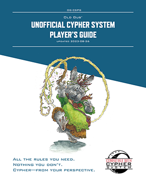
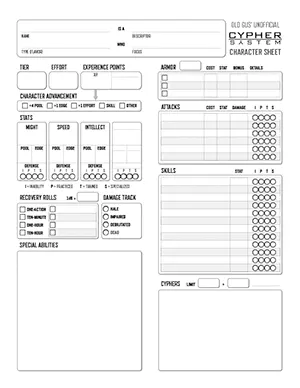

OG-CSPG Old Gus' Unofficial Cypher System Player's Guide
version 1.22b (2024-09-30)
Table of Contents
Welcome
Cypher System Open License
The Cypher System is a setting-agnostic tabletop roleplaying game designed by Monte Cook Games.
This product is an independent production and is not affiliated with Monte Cook Games, LLC. It is published under the Cypher System Open License, found at http://csol.montecookgames.com.
CYPHER SYSTEM and its logo are trademarks of Monte Cook Games, LLC in the U.S.A. and other countries. All Monte Cook Games characters and character names, and the distinctive likenesses thereof, are trademarks of Monte Cook Games, LLC.


Foreword
These are not "the rules"
This should go without saying, but Old Gus' Unofficial Cypher System Player's Guide (OG-CSPG) does not contain the official Cypher System rules. These rules have been rearranged, rewritten, and condensed so that you can learn to play the game quickly and easily. It also guides you through creating and customizing your player character (PC) before the game, or as you continue playing with the GM.
This edition of the rules allows you to do this with the bare minimum of page-turning involved other than to reference the table of contents.
If you are a GM, it's best to familiarize yourself with the official rules of the game in the Cypher System Rulebook or Old Gus' Cypher System Reference Document (OG-CSRD). GMs might still find some unique perspective within—or use for—this version of the rules, for example, as a teaching tool for players.
Players or GMs can supplement character sheets or packets by printing excerpts—descriptors, abilities and foci, and flavors are largely unedited, with the full text of their special abilities included inline. The presentation of types has been slightly amended for clarity during character creation.
Thanks for reading! I hope this document is useful to you, and brings you many happy adventures in the Cypher System.
—Old Gus
Referring to Official Material
In the indices for player character options and special abilities, page number references to official material are provided as follows:
- Cypher System Rulebook (2019), page 1: (1)
- Claim the Sky (2021), page 1: (CTS, 1)
- Godforsaken (2020), page 1: (GF, 1)
- It's Only Magic (2024): (It's Only Magic, page 1)(IOM, 1)
- Rust and Redemption (2024): (RR, 1)
- The Stars are Fire (2019), page 1: (SF, 1)
Printable PDFs
 Download the OG-CSCS in PDF:
Additionally, Old Gus' Cypher System Quick-Reference (OG-CSQR) provides the basic rules and vocabulary players need to know in a two-page handout.
Rules of the Game
Chapter 1 Cypher System Rules
- How to Play (206)
- Task Difficulty (208)
- Rolling the Die (209)
- Equipment and Currency (201)
- Encounters, Rounds, Initiative, and Timekeeping (214)
- Taking Action (215)
- Moving (223)
- Range and Distance (213)
- Attacking (215)
- Inflicting Damage and Weapons (203)(216)
- Defending (225)
- Taking Damage and Recovery (218)
- Armor (202)(217)
- Cooperating (226)
- Cyphers and Artifacts (377)
- Experience Points (XP) (237)
- Character Advancement (240)
- Followers (233)
How to Play
- You tell the GM what action you want to take, and how you plan to do it. Include any dialogue you'd like to deliver while you take your action.
- Many times, your actions are routine—moving a few steps away, talking another character, or turning a doorknob—you just perform the action and succeed automatically. If there's a chance of failure, the GM assigns you a task, and tells you which of your stats will be tested—your Might, Speed, or Intellect—and determines the difficulty on a scale from 1 (simple) to 10 (impossible).
- You and the GM determine if anything about your PC should modify the difficulty by one or more steps. Being trained in relevant skills, having helpful assets, and using Effort all ease a task, lowering the difficulty. Having an inability or adverse external circumstances hinders a task, increasing the difficulty.
- If you ease the difficulty to 0 (routine), you succeed automatically. If the task still isn't routine, the GM uses the modified difficulty to determine a target number. The GM doesn't have to tell you the target number, but might give you a hint.
- You roll the die—a d20. If the result meets or exceeds the target number, you succeed at the task.
That's it. That's how to do anything—identify an unknown device, calm a raging drunk, climb a treacherous cliff, or battle a demigod.
Key Concepts
Character: Any creature in the game, whether it is a player character (PC) or a nonplayer character (NPC) run by the game master (GM).
Session: A single play experience which usually lasts a few hours.
Adventure: A story with a beginning and an end, consisting of one or more sessions.
Campaign: A series of adventures strung together with an overarching story (or linked stories) with recurring PCs.
Dice: Tools used to randomly determine numbers. Most of the time, a twenty-sided die (d20) is used, but there are occasional uses for a six-sided die (d6), and ten-sided die (d10).
The Player Always Rolls
The GM will assign you actions and tasks, even when you didn't take an action, or isn't your turn.
- If you attack a foe, you roll to see if you hit.
- If a foe attacks you, you roll to see if you dodge the blow.
- If you leap out of a moving vehicle, you roll to see if you land on your feet.
- If a rockslide falls on you, you roll to get out of the way.
Most of the time, the actions you take when it isn't your turn will be to defend yourself.
The Difficulty Dial
The difficulty dial displays difficulties from 0 (routine)–10 (impossible). On the inside of the ring is the target number, and the percentage chance the d20 meets or exceeds the target number when rolling the die.
Easing: Think of easing as adjusting this "difficulty dial" counterclockwise—"dialing down" the difficulty and increasing your chance of success.
Hindering: Likewise, think of hindering as adjusting clockwise—"dialing up" the difficulty, and decreasing your chance of success.
Beyond 20: Tasks with difficulties of 7 or higher are impossible without easing the difficulty. To accomplish them, you must ease the difficulty using skills, assets, and Effort!
Task Difficulty
| Task Difficulty | Target Number | Task Success Rate | Description | Guidance |
|---|---|---|---|---|
| 0 | (0) | 100% | Routine | Anyone can do this basically every time. |
| 1 | (3) | 90% | Simple | Most people can do this most of the time. |
| 2 | (6) | 75% | Standard | Typical task requiring focus, but most people can usually do this. |
| 3 | (9) | 60% | Demanding | Requires full attention; most people have a 50/50 chance to succeed. |
| 4 | (12) | 45% | Difficult | Trained people have a 50/50 chance to succeed. |
| 5 | (15) | 30% | Challenging | Even trained people often fail. |
| 6 | (18) | 15% | Intimidating | Normal people almost never succeed. |
| 7 | (21) | — | Formidable | Impossible without skills or great effort. |
| 8 | (24) | −15% | Heroic | A task worthy of tales told for years afterward. |
| 9 | (27) | −30% | Immortal | A task worthy of legends that last lifetimes. |
| 10 | (30) | −45% | Impossible | A task that normal humans couldn't consider (but one that doesn't break the laws of physics). |
Modifying the Difficulty
Everything has a level. A creature's level determines how difficult they are to hit, avoid, and how difficult they are to persuade. A door's level is how difficult it is to break down. A lock's level is how difficult it is to pick. Lowering difficulty is easing, and raising it is hindering.
Skills can ease a task up to two steps. There are four different levels of skill training. You are practiced unless otherwise indicated.
- Inability: Hindered by one step.
- Practiced: No change in task difficulty.
- Trained: Eased by one step.
- Specialized: Eased by two steps.
Assets can ease a task up to two steps. Anything that helps with a task is an asset. A crowbar is an asset when forcing open a door, and so is cooperation from another PC or capable follower.
Effort can ease a task up to six steps. You ease a task one step for each level of Effort you use, spending points from the Pool for the stat the GM assigns to the task—3 points for the first level, plus 2 points for each additional level, up to a number of levels equal to your Effort score.
Rolling the Die
The target number is the number you must roll on the d20 to succeed. A target number is three times the task difficulty—after you are finished modifying it.
Special Rolls
When you roll the die, certain outcomes on the d20 can trigger special effects like increased damage. You can suggest your own minor or major effects to the GM.
| d20 | Effects |
|---|---|
| 1 | GM Intrusion, no XP awarded |
| 17 | In combat, inflict +1 damage |
| 18 | In combat, inflict +2 damage |
| 19 | Minor effect (or inflict +3 damage) |
| 20 | Major effect (or inflict +4 damage), Pool points spent on the action are refunded |
Encounters, Rounds, Initiative, and Timekeeping
An encounter might be any number of things—a fight with a foe, a dramatic crossing of a raging river, or a stressful negotiation with an important official. An encounter is made up of one or more rounds.
Initiative: When many characters—including NPCs—want to take an action all at once, the GM calls for an initiative roll to determine who goes first. An initiative roll is a Speed task.
Round: A round lasts five to ten seconds. The length of time is variable—one round might be a bit longer than the next. On average, there are about ten rounds in a minute. Each round, you—and each other character—get a turn.
Action: On your turn, you get to choose what action you take. Actions usually prompt one task, but a few might prompt more than one.
Because the player always rolls, you perform actions and tasks in response to other characters' actions. Defending against an enemy's attack is an action, it's just one you didn't choose, because it's not your turn.
Task: A test of one of your stats–Might, Speed, or Intellect—the difficulty is determined by the GM.
Duration
In an encounter, a duration of one minute generally lasts for the rest of the encounter. Likewise, an ability that lasts for ten minutes can safely be considered the length of an in-depth conversation, the time it takes to quickly explore a small area, or the time it takes to rest after a strenuous activity.
Equipment and Currency
Outside of weapons, armor, and manifest cyphers and artifacts, equipment plays only a small role in the game. It's more important to focus on what you can do than on what you have, but the right equipment might provide an asset on a related task.
The GM determines what equipment, goods, and services are available, their properties, and how costs and price categories are used and accounted for.
Price Categories
Dollars, yuan, dinar, credits, gold pieces, alien beads, or bottle caps—different currencies appear in different settings, but there are usually six price categories. Think of the categories as ranges that encompass powers of 10, using these modern setting examples.
Inexpensive: Something common people buy—a meal, a drink, or a book.
Moderately Priced: Something common people buy, but often or a lot of—a comfortable chair, concert tickets, or a new outfit.
Expensive: Something would strain a common person's finances—rent, plane tickets, or fancy new outfit.
Very Expensive: Something out of the reach of most people—jewelry, a fancy car, luxury travel.
Exorbitant: Something only the rich can afford—a mansion, ship, or famous artwork.
Priceless: Something only a rich corporation or nation-state might acquire or build.
| Equipment | Price Category |
|---|---|
| Ammunition | Inexpensive |
| Light weapon | Moderately priced |
| Medium weapon | Expensive |
| Heavy weapon | Very expensive |
| Light armor | Moderately priced |
| Medium armor | Expensive |
| Heavy armor | Very expensive |
Taking Action
Anything significant you do—attack a foe, resist hypnosis, leap a chasm, intimidate a captive, bargain with a shopkeeper, help an ally, or activate a special ability or a cypher—is an action.
Additional Actions
In addition to the actions covered in detail in this chapter, common actions include:
- Crafting, Building, and Repairing
- Interacting with Creatures
- Looking or Listening
- Moving a Heavy Object
- Operating or Disabling a Device or Vehicle
- Riding or Piloting
- Sneaking
- Swimming
- Understanding, Identifying, or Remembering
Waiting
You can wait to react to another character's action. You decide what action will trigger your action, and if the triggering action happens, you get to take your action first (unless going first wouldn't make sense, like attacking a foe before they come into view).
Waiting is a good way to deal with a ranged attacker who rises from behind cover, fires an attack, and ducks back down. You could say "I wait to see them pop up from behind cover and then I shoot them."
Initial Cost
Using special abilities or Effort means spending stat Pool points. The GM can also assign an initial cost to a particularly taxing task just for trying it. Total all Pool point costs, then subtract your Edge.
Moving
In combat, you're usually within immediate distance of most other combatants, unless the GM rules otherwise.
Move an Immediate Distance: You can adjust your position and still take any other action—stepping back a few feet to use an ability, sliding over to help a friend, or pushing through a door you just knocked down. You can move before or after you take your action.
Move a Short Distance: You can move a short distance as a routine action.
If you succeed on a difficulty 4 Speed task, you can make a short move and take another (relatively simple) physical action, like make an attack.
Move a Long Distance: You can use your action to move a long distance as a difficulty 4 Speed task.
Movement Modifiers: Movement skills—like climbing, jumping, zero-gravity maneuvering—ease related movement tasks. Obstacles, difficult terrain, and strong currents of wind or water can hinder them.
Range and Distance
| Distance | Range |
|---|---|
| Immediate distance | Up to 10 feet (3 m) |
| Short distance | Up to 50 feet (15 m) |
| Long distance | Up to 100 feet (30 m) |
| Very long distance | Up to 500 feet (150 m) |
Fleet of Foot (1+ Speed points): You can move a short distance as part of another action. You can move a long distance as your entire action for a turn. If you apply a level of Effort to this ability, you can move a long distance and make an attack as your entire action for a turn, but the attack is hindered. Enabler. (141)
Attacking
An attack is anything you do to a character they don't want you to do—slashing at them with a weapon, blasting them with lightning artifact, wrapping them in magnetically controlled metal, or attempting to influence their mind are all attacks. Attacking requires a task to determine if you hit or affect the target.
Range: Ranges for attacks are identical to moving. Melee attacks require you to be within an immediate distance of your target.
Special Abilities: When you activate special abilities as attacks, the task usually uses the same stat as the ability's cost, but if you must touch the target, it's a melee attack instead.
Attack Modifiers: Conditions that can ease or hinder an attack include cover, position, surprise, range, illumination, visibility, water, and moving targets. You can ease an attack with Skill, and by using Effort.
Attack Tasks
| Attack | Task Stat |
|---|---|
| Melee | Might or Speed—your choice |
| Ranged | Speed—ranges vary |
| Explosive | Speed—throw a short distance, or use a launcher for longer range, creates area attacks |
| Special ability | the stat used for the ability's cost—unless specified by the ability details or the GM |
| Cypher | Intellect—unless specified by the cypher details or the GM |
Mechanical Telepathy (3 Intellect points): By touching a thinking machine, you gain access to its surface "thoughts." Action. (161)
Inflicting Damage and Weapons
On a successful attack, the amount of damage you deal—or "inflict"—is determined by the weapon or special ability you used. Special rolls and Effort can increase the damage an attack inflicts.
Weapons
| Weapon | Damage | Notes |
|---|---|---|
| Light | 2 points | eased by one step |
| Medium | 4 points | — |
| Heavy | 6 points | two hands required to attack |
Damage from Special Rolls
| d20 | Effects |
|---|---|
| 17 | +1 damage |
| 18 | +2 damage |
| 19 | +3 damage or a minor effect—ignore armor, strike specific body part, knock back, move past, distract |
| 20 | +4 damage or a major effect—knock down, disarm, stun, impair—Pool points spent on the action are refunded |
Damage from Effort
| Effort Used | Pool Point Cost | Attack Damage | Area Attack Damage |
|---|---|---|---|
| 1 level | 3 | +3 | +2 |
| 2 levels | 5 | +6 | +4 |
| 3 levels | 7 | +9 | +6 |
| 4 levels | 9 | +12 | +8 |
| 5 levels | 11 | +15 | +10 |
| 6 levels | 13 | +18 | +12 |
Burning Light (3 Intellect points): You send a beam of light at a creature within long range and then tighten the beam until it burns, inflicting 5 points of damage. Action. (116)
Combat Prowess: You add +1 damage to one type of weapon attack of your choice: melee weapon attacks or ranged weapon attacks. Enabler. (120)
Defending
When you are attacked, the GM assigns you a defense task. While this is never an action that you decide to take, it's still an action, so it doesn't prevent you from using Effort on it, nor does it prevent you from taking your action on your turn.
Most of the time when you fail a defense roll, you take damage, subtracting points from a stat Pool—usually your Might Pool.
If you are wearing Armor, or have other special defenses against the attack or its damage, you can reduce the amount of damage taken.
Defense Tasks
Might defense: Resisting poisons and disease, being crushed by heavy weights
Speed defense: Dodging attacks and escaping danger—the most common defense task
Intellect defense: Fending off mental attacks, or anything that affects or influences the mind
Countermeasures (4 Intellect points): You immediately end one ongoing effect (such as an effect created by a character ability) within immediate range. Alternatively, you can use this as a defense action to cancel any incoming ability targeted at you, or you can cancel any device or the effect of any device for 1d6 rounds. You must touch the effect or device to cancel it. Action. (122)
Robot Fighter: When fighting a robot or intelligent machine, you are trained in attacks and defense. Enabler. (178)
Taking Damage and Recovery
Your Pool points are temporarily reduced by taking damage, activating special abilities, and using Effort.
If a Pool reaches 0, any remaining—and further—damage is applied to another stat Pool in the following order: Might, Speed, then Intellect. The amount of damage you take doesn't change—your Armor and special abilities that protect you still count.
Recovery Rolls
You recover lost Pool points by making a recovery roll—roll a d6 and add your tier, and then divide the result among your stat Pools however you wish. You can make four recovery rolls each day:
First recovery roll: One action
Second recovery roll: Ten minutes
Third recovery roll: One hour
Fourth recovery roll: Ten hours
The Damage Track
Hale: Your normal, healthy state.
Impaired: If one stat Pool reaches 0, you are impaired. The cost of using each level Effort is increased by 1. You ignore minor and major effects when rolling the die, inflicting only up to +1 damage on a special roll of 17–20.
Debilitated: If two stat Pools reach 0, you are debilitated. You can't take actions other than move—probably crawl—an immediate distance. If your Speed Pool is 0, you can't move.
Dead: If all three stat Pools reach 0, you die. Dead is dead.
Armor
Each time you take damage, you subtract your Armor characteristic from the damage before reducing your stat Pool. If you are hit by a gunshot that inflicts 4 points of damage and have 2 Armor, you take only 2 points of damage to your Might Pool. If you are scratched by a large cat that inflicts 2 damage, your 2 Armor prevents the damage entirely.
Physical armor, special abilities, cyphers, and artifacts can contribute to your Armor cumulatively—if you have 2 Armor from wearing medium armor and have the Ward ability, you have a total of 3 Armor. Some attacks ignore certain types of Armor. Be sure to track each source of your Armor individually—some attacks ignore certain types.
Ward: You have a shield of energy around you at all times that helps deflect attacks. You gain +1 to Armor. Enabler. (196)
Shields
A shield—or anything used as one—is an asset on Speed defense tasks. Using one requires a free hand.
Wearing Armor
Anyone can wear armor, the cost of using a level of Effort on Speed tasks is increased. Certain special abilities reduce Speed Effort cost for wearing armor—if you have them, use their column on the Speed Effort Cost table below. Otherwise, use the Not Experienced column.
You can also reduce Speed Effort cost through character advancement. Special abilities can also improve your defenses without armor.
Practiced in Armor: You can wear armor for long periods of time without tiring and can compensate for slowed reactions from wearing armor. You reduce the Speed cost for wearing armor by 1. You start the game with a type of armor of your choice. Enabler. (171)
Experienced in Armor: The cost reduction from your Practiced in Armor ability improves. You now reduce the Speed cost by 2. Enabler. (136)
Mastery in Armor: The cost reduction from your Practiced in Armor ability improves. You now reduce the Speed Effort cost for wearing armor to 0. Enabler. (161)
Trained Without Armor: You are trained in Speed defense tasks when not wearing armor. Enabler. (193)
Speed Effort Cost per Level of Effort Used
This table lists armor types—light, medium, and heavy, their bonuses to your Armor characteristic, and the additional cost from your Pool you pay for each level of Effort used on Speed tasks when wearing it.
| Physical Armor | Armor Bonus | Not Experienced | Practiced | Experienced | Mastery |
|---|---|---|---|---|---|
| Light armor | +1 Armor | +2 | +1 | — | — |
| Medium armor | +2 Armor | +3 | +2 | +1 | — |
| Heavy armor | +3 Armor | +4 | +3 | +2 | — |
Cooperating
There are many ways you can work together with other PCs. These options can't be used at the same time by the same characters.
Help: If you use your action to help someone, you provide an asset to the task. If you are trained or specialized in the task, you provide two assets. You can't help if you have an inability in the relevant task.
Heal: You can heal a creature once per day. This healing restores points to a stat Pool of your choice. First, decide what number of Pool points you want to heal, then use an action on an Intellect action with a difficulty equal to the number.
Distract: If you successfully distract a foe, its attacks are hindered for one round. You can describe your action as yelling a challenge, firing a warning shot, or a similar activity that doesn't harm the foe.
Guard: If you stand guard, you can't make attacks, but all your defense tasks are eased. If an NPC tries to get by you or take an action you are guarding against, you can attempt an eased Speed action. Success means the NPC is prevented from taking the action.
Draw the Attack: When an NPC attacks a character, you can prominently present yourself, shout taunts, and move to try to get the foe to attack you instead. In most cases, this action succeeds without a roll. In other cases, such as with intelligent or determined foes, you must succeed at an Intellect action to draw the attack. If that Intellect action is successful, the foe attacks you, and your defenses are hindered by two steps. Two characters attempting to draw an attack at the same time cancel each other out.
Take the Attack: You can use your action to throw yourself in front of a foe's successful attack to save an ally. The attack automatically succeeds, and it inflicts 1 additional point of damage. You can't willingly take more than one attack each round in this way.
Cyphers and Artifacts
Cyphers are one-use abilities you gain over the course of play. They have cool powers that can heal, make attacks, ease the difficulty of tasks, or produce effects like nullifying gravity or turning something invisible. There are two main types of cyphers: subtle, and manifest.
Subtle Cyphers
Subtle cyphers don't have a physical form, so they might be represented as good fortune, alien concepts, blessings, mysterious transmissions, or spells.
Disarm
Level: 1d6 + 1
-
Effect: One NPC within immediate range whose level is lower than the cypher level drops whatever they are holding. (387)
Manifest Cyphers
Manifest cyphers have a physical form. They might be found on a fallen foe, in a secret room, or among the wreckage of a crashed starship. They can be given as gifts, traded, or purchased.
Fantastic Cyphers
Fantastic cypher effects are used in games where magic, technology, or other factors stretch the definition of "impossible." Fantastic cyphers can be manifest or subtle.
Zero Point Field
Level: 1d6 + 3
-
Effect: Renders an inanimate object outside the effects of most energy for one minute. This means the object cannot be harmed, moved, or manipulated in any way. It remains in place (even in midair). (400)
Using Cyphers
Most cyphers require an action to activate, and any tasks a cypher prompt are Intellect-based, unless indicated otherwise or the GM allows—for example, throwing a physical explosive might be a Speed task instead. Attempting to affect another creature in an unwanted manner with a cypher is an attack.
Cypher Levels and Effects
All cyphers have a level and an effect. The Level entry is usually a die roll, sometimes with a modifier, for example, "1d6" or "1d6 + 4". The GM rolls a cypher's level, or allow you to roll when you receive it.
A cypher with a level lower than a target's doesn't mean it is ineffective. Entangling a level 5 troll with several level 3 wolf pets using a level 4 Detonation (Web) cypher is a matter of succeeding on an attack roll against the troll's target number. If the attack is successful, the troll must use still use at least one action on its turn to break free from the webbing.
Detonation (Web)
Level: 1d6 + 2
Effect: Projects a small physical explosive up to a long distance away that explodes in an immediate radius and creates sticky strands of goo. PCs caught in the area must use a Might-based action to get out, with the difficulty determined by the cypher level. NPCs break free if their level is higher than the cypher level. (387)
Cypher Duration
Cypher durations can be temporary or permanent. In this example, the wolves will probably struggle for quite a while—unless the troll frees them over three more rounds—maybe sooner, if they are smart enough to work together. In any case, clever use of your cyphers can sometimes resolve an encounter quickly.
Always Tinkering: If you have any tools and materials at all, and you are carrying fewer cyphers than your limit, you can create a manifest cypher if you have an hour of time to spend. The new cypher is random and always 2 levels lower than normal (minimum 1). It's also temperamental and fragile. These are called temperamental cyphers. If you give one to anyone else to use, it falls apart immediately, useless. Action to initiate; one hour to complete. (CTS, 48)
Boost Manifest Cypher (2 Intellect points): The manifest cypher you activate with your next action functions as if it were 2 levels higher. Action. (CTS, 51)
Boost Manifest Cypher Function (4 Intellect points): Add 3 to the functioning level of a manifest cypher that you activate with your next action, or change one aspect of its parameters (range, duration, area, etc.) by up to double or down to one tenth. Action. (CTS, 51)
Cyphersmith: All manifest cyphers you use function at one level higher than normal. If given a week and the right tools, chemicals, and parts, you can tinker with one of your manifest cyphers, transforming it into another cypher of the same type that you had in the past. The GM and player should collaborate to ensure that the transformation is logical—for example, you probably can't transform a pill into a helmet. Enabler. (124)
Modify Cyphers: You can take any two manifest cyphers and quickly jury-rig a new manifest cypher of the same level as the lowest-level cypher. You determine the function of the new cypher, but it must be that of a cypher you have used before (but not necessarily one you've ever built). The new cypher is a temperamental cypher, like those created with Always Tinkering. The original two cyphers are consumed in this process. This ability does not function if one or more of the original cyphers are temperamental cyphers. Action. (CTS, 54)
Cypher Limits
You have a maximum number of cyphers you can bear at any one time, determined by your type or special abilities. Most tier 1 PCs can bear two cyphers at a time. Adepts gain the Expert Cypher Use ability at tier 1, and so can bear three.
Use Your Cyphers: The GM provides new cyphers regularly, so the best time to use one is the first opportunity you can think to make good use for it!
Exceeding Limits: The GM might allow you to exceed the cypher limit at some cost, for example raising your GM intrusion rate from rolling a 1 to rolling a 1–2.
Losing Cyphers: You can use an action to lose a cypher. Lost subtle cyphers are gone forever, and manifest cyphers might be found or used by others.
Expert Cypher Use: You can bear three cyphers at a time. Enabler. (137)
Adroit Cypher Use: You can bear four cyphers at a time. Enabler. (108)
Master Cypher Use: You can bear five cyphers at a time. Enabler. (160)
Usurp Cypher: Choose one cypher that you carry. The cypher must have an effect that is not instantaneous. You destroy the cypher and gain its power, which functions for you continuously. You can choose a cypher when you gain this ability, or you can wait and make the choice later. However, once you usurp a cypher's power, you cannot later switch to a different cypher—the usurping ability works only once. Action to initiate. (195)
Artifacts
Artifacts are powerful equipment that can't simply be purchased. When you activate an artifact, roll the designated depletion die (1d6, 1d10, 1d20, or 1d100). If the die shows a depletion number, it works, but depletes afterward. A depletion entry of "—" means that the artifact never depletes, and an "Automatic" depletion means the artifact can only be used once—much like a cypher.
Recharging Cyphers and Artifacts
Through special abilities, crafting, spending XP, or completion of suitable objectives determined by the GM, a depleted artifact or manifest cypher might be recharged.
Extra Use (3 Intellect points): You attempt to gain an extra use from an artifact without triggering a depletion roll. The difficulty of the task is equal to the level of the artifact. If you crafted the artifact, you gain an asset to the task. On a failure, the depletion roll occurs normally. You could also try to use a manifest cypher without burning it out, but the task is hindered. A failed attempt to gain an additional use from a manifest cypher destroys it before it can produce the desired effect. Action. (138)
Mind Imager
(Cypher System Rulebook, page 275)
Level: 1d6 + 2
Form: Handheld device with a plastic panel screen and wires that must be affixed to the head of a creature
Effect: This device shows a visual image of what a creature is thinking. The affected creature need not be conscious.
Depletion: 1 in 1d20
Serum X
(Cypher System Rulebook, page 94)
Level: 1d6 + 2
Form: Vial or syringe of red fluid
Effect: Strips someone of all superpowers (including abilities granted by magic, psionics, mutation, or science) for twenty-four hours. The target retains only skills and abilities that are mundane, as agreed by the GM and player.
Depletion: Automatic
Experience Points (XP)
Experience points (XP) are the lifeblood of the Cypher System. The GM awards you XP, and you spend it on benefits. You can gain XP in the following ways:
Discovery: Discovery can include finding a significant new location, such as a hidden chamber, a secret fortress, a lost land, a new planet, an artifact, or an unexplored dimension. Discovery can also include learning about a new significant aspect of a setting, such as a secret organization, a new religion, or a pertinent fact about an investigation.
GM Awards: Saving a family on an isolated farm beset by raiding cultists might be worth 1 XP for each PC. Of course, saving the family doesn't always mean killing the bad guys; it might mean relocating them, parlaying with the cultists, or chasing off the raiders.
Character arcs: Character arcs are a significant source of XP, and are detailed in Chapter 6.
GM Intrusion
At any time, the GM can introduce an unexpected complication for a PC. When doing so, the GM offers you 1 XP. If you accept, you gain the 1 XP and also choose another PC to gain 1 XP—be sure to justify the gift or involve the other PC in the scene when you do. You can refuse a GM intrusion by spending 1 XP.
Special Rolls: If you roll a 1 on the d20 for an action, the GM gets a free intrusion, and no XP is awarded.
Player Intrusion
A player intrusion is a special kind of immediate benefit—the reverse of a GM intrusion: instead of the GM giving you XP and introducing an unexpected complication, you spend 1 XP and present a solution to a problem or complication. Player intrusions can introduce a change to the world or current circumstances rather than being an action you take yourself. Using an intrusion does not require it to be your turn, and it doesn't take an action to use—it just happens.
Your type suggests a few possible player intrusions, but you can come up with your own. The GM is the final arbiter of whether your intrusion is suitable for the situation. If the GM refuses, you don't spend the 1 XP, and the intrusion doesn't occur.
Player intrusions are a powerful narrative tool, so don't expect to use them more than once each session.
Discovering Subtle Cyphers
You can acquire a new subtle cypher by spending 1 XP on one of the following player intrusions:
General Cypher: You ask the GM for a general subtle cypher, such as healing, movement, defense, or something specific, like flight. The GM gives you a cypher that meets your description and randomly determines its level. If this would cause you to exceed your cypher limit, you can choose one of your current cyphers to lose.
Specific Cypher: You ask the GM for a specific subtle cypher (such as a "curative" or "stim") of a specific level. Make an Intellect roll with a difficulty equal to the cypher's level plus 1. If you have had the cypher before, the task is eased. If you succeed, the GM gives you the cypher. If this would cause you to exceed your cypher limit, you can choose one of your current cyphers to lose. Even if you fail the task, the 1 XP is spent.
Immediate Benefits
You can spend 1 XP is to reroll any roll—even one you didn't make, choosing the result of either outcome. You can continue to do this, but it's probably not a good idea to reroll a single action too many times.
Short- and Medium-Term Benefits
You can spend 2 XP to gain training with a skill that provides a short-term benefit. Maybe you have a great deal of experience in using a particular kind of computer terminal that's right in front of you, easing tasks using them.
Medium-term benefits might remain useful if you plan on staying in or returning to where you are. If you spend 2 XP and say that you grew up in mountains like the ones where you currently are, and so you are trained in climbing in them. This helps now, and any time you return to these mountains, (or your home) but you're not trained in climbing everywhere.
In rare cases, the GM might even allow you temporarily gain a new special ability as a short- or medium-term benefit.
Long-Term Benefits
You can spend 3 XP to acquire a long-term benefit that gives you some narrative control over the story. Long-term benefits can include the following.
Contact: You gain a long-term NPC contact of importance—someone who will help you with information, equipment, or physical tasks. You and the GM should work out the details of the relationship.
Home: You acquire a full-time residence—a city apartment, a cabin in the wilderness, or a base in an ancient complex. It is a secure place where you can leave your belongings and sleep soundly. PCs might even purchase a home or base of operations together.
Title or job: You gain a position of importance—it might come with authority, responsibilities, or prestige.
Wealth: You experience a windfall, inheritance, or gift, and—at least for now—no longer need to worry about the cost of simple equipment, lodging, food, and so on.
Character Advancement
You start the game at tier 1. By purchasing four character advancements, you reach the next tier, up to tier 6. Each advancement costs 4 XP. You can purchase them any order you wish, but you can only purchase a each advancement once per tier. The standard advancements are:
Increasing Capabilities: You gain 4 points to add to your stat Pools. You can allocate the points among your Pools however you wish.
Moving Toward Perfection: You add 1 to your Might Edge, Speed Edge, or Intellect Edge (your choice).
Extra Effort: Your Effort score increases by 1.
Skills: Choose one skill—other than attacks or defense—you become trained in that skill.
If you choose a skill you are already trained in, you become specialized in it. You can also use this option to eliminate an inability, becoming practiced in the skill.
Alternatively, you can choose to become trained in a special ability, easing tasks using it—when you do this, you can choose an ability that is an attack.
Other Advancement Options
Once each tier, you can substitute a standard advancement for one of the following:
- Reduce Speed Effort cost for wearing armor by 1.
- Add +2 to your recovery rolls.
- Select another special ability from your type for your tier or a lower tier.
Reaching New Tiers
When you reach a new tier, you gain special abilities from your focus. You also gain a number of abilities to choose from your type, which can be from your new tier or a lower one. Additionally, you can exchange one type ability you've chosen for another of equal or lower tier.
Followers
Most followers are gained and increased in level through special abilities. Followers don't need to be paid, fed, or housed, though you can certainly make such arrangements if you wish.
When you gain an ability that grants you a follower, the GM might require that you actually look for a suitable follower.
Modifications: Followers are trained in certain tasks, which grant you an asset when they help you with them. A follower has a number of modifications equal to their level. If you gain a level 2 follower and want them to be a spy, you could choose stealth and deception as their two modifications. A follower can't help with tasks unrelated to their modifications.
Follower Level Progression: Each time you advance two tiers after gaining a follower, they increase their level by 1, and you choose a new modification for them.
Follower Assets to Combat and Defense: If your follower is at least level 3, the modification you choose can be for combat—allowing them to grant you an asset to attacks or defense in combat. A few special abilities grant an exception to this rule.
Serv-0 Defender: Your Serv-0 aids you in combat by blocking attacks. It gains a modification in Speed defense. Enabler. (181)
Pet: A pet typically doesn't provide modifications, but grants an asset to tasks related like achieving peace of mind, finding comfort, and resisting loneliness.
Basic Follower: You gain a level 2 follower. One of their modifications must be persuasion. You can take this ability multiple times, each time gaining another level 2 follower. Enabler. (112)
Beast Companion: A level 2 creature of your size or smaller accompanies you and follows your instructions. You and the GM must work out the details of your creature, and you'll probably make rolls for it in combat or when it takes actions. The beast companion acts on your turn. As a level 2 creature, it has a target number of 6 and 6 health and it inflicts 2 points of damage. Its movement is based on its creature type (avian, swimmer, and so on). If your beast companion dies, you can hunt in the wild for 1d6 days to find a new one. Enabler. (112)
Serv-0: You build a tiny robot assistant. It is level 1 and cannot take independent actions or leave your immediate area. In truth, it's more an extension of you than a separate being. It gains a modification in using machines and other technological devices. Enabler. (181)
Tree Companion (5+ Intellect points): You animate a tree of approximately your size or smaller, creating a level 3 creature with 1 Armor. The tree follows your verbal commands for one hour, after which it reverts to a normal tree (and roots itself where it stands). Unless the tree is killed by damage, you can animate it again when the ability duration expires, but any damage it has carries over to its newly animated state. In addition to the normal options for using Effort, you can choose to use Effort to affect more trees; each level of Effort used affects one additional tree. Action. (GF, 33)
Chapter 2 Player Characters
This chapter explains the elements of player characters in the Cypher System that you will need understand and also keep track of on your character sheet while playing the game.
- Stats: Might, Speed, and Intellect (14)
- Pool and Edge (15)
- Effort (15)
- Skills (19)
- Special Abilities (18)
- Character Sentence (18)
Stats: Might, Speed and Intellect
You have three defining characteristics called "stats"—Might, Speed, and Intellect. Whenever you take an action and the GM assigns you a task, that task is based on one of these three stats.
Might
Might governs how strong you are, how much physical punishment you can take, and how well you weather extreme conditions, poisons, toxins, and venom. Physical characters, tough characters, and characters interested in fighting—especially up close in a melee—should focus on Might.
Might is: Durability, Endurance, Constitution, Hardiness, and Strength.
Might defense: Resisting poisons and disease, or being crushed by heavy weights test your Might.
Might damage: When you take physical damage, it is subtracted from your Might points first.
Speed
Speed it governs how well-coordinated you are, how well you dodge, and your accuracy with ranged attacks. It also helps when you move farther on your turn. Nimble, fast, or stealthy characters should focus on Speed.
Speed is: Accuracy, Agility, Dexterity, Movement, Reflexes, and Quickness.
Speed defense: Dodging attacks and escaping danger are Speed defense tasks, and are the most common defense task.
Speed damage: When you take damage from snake venom, a strange force field, or sapping necrotic energies, it is subtracted from your Speed points first.
Intellect
Intellect governs all mental domains—solving puzzles, remembering, using intuition, telling convincing lies, using your senses, and using mental powers are all Intellect-based . Characters interested in communicating effectively, being learned scholars, or wielding supernatural powers should focus on Intellect.
Intellect is: Charisma, Charm, Education, Empathy, Insight, Knowledge, Personality, Resolve, Reasoning, Willpower, Wisdom, and Wit.
Intellect defense: Fending off mental attacks, or anything that affects or influences are Intellect defense Tasks.
Intellect damage: When you take damage from a mental attack, it is subtracted from your Intellect points first.
Pool and Edge
Each of your three stats—Might, Speed, and Intellect—has two values—Pool and Edge. Each tier, you can use character advancement to increase your stat Pools and Edge. Your descriptor and some special abilities also increase your Pool or Edge.
Pool
A stat Pool is a well of potential you can draw from for a stat, measured in "points". Pool points are temporarily reduced by taking damage, and by spending points from the Pool to activate special abilities or use Effort. If a stat Pool's points reach 0, you shift down the damage track. You recover lost pool points by making recovery rolls.
At tier 1, your descriptor and type (and possibly your type) determine your starting Usually, PCs start the game with about 9–20 points in each stat.
Edge
Whenever you spend points from your Pool by using special abilities or Effort, your Edge for that stat is subtracted from the total number of points you spend on the action.
At tier 1, you have an Edge of 1 in one stat, also determined by your type.
Subtracting Edge from Costs
If you have 1 Might Edge, that pays for the cost of using Bash—you can use the ability for free.
Bash (1 Might point): This is a pummeling melee attack. Your attack inflicts 1 less point of damage than normal, but dazes your target for one round, during which time all tasks it performs are hindered. Action. (112)
Effort
Your Effort score represents how hard you can push yourself to succeed, and how deeply you can draw from your stat Pools to do so.
At tier 1, you have an Effort score of 1, which allows you to use one level of Effort. Using one level of Effort eases task difficulty by one step, and costs 3 points from the stat Pool assigned to the task by the GM.
Effort and Damage
Instead of applying a level of Effort to ease an attack, you can apply it to inflict 3 additional points of damage—if the attack roll succeeds. This works for any kind of attack—a sword, a crossbow, or a mental blast.
When you use Effort to increase the damage of an area attack, you inflict only 2 additional points of damage to creatures hit by the attack.
Concussion (7 Intellect points): You cause a pulse of concussive force to explode out from a point you choose within long range. The pulse extends up to short range in all directions, dealing 5 points of damage to everything in the area. Even if you fail the attack roll, targets in the area take 1 point of damage. Action. (121)
Extra Effort
Each tier, you can increase your Effort score through character advancement, allowing you use additional levels of Effort. Each level of Effort after the first costs only 2 points instead of 3.
Effort can ease a task up to six steps.
Multiple Uses of Effort
Once your Effort score is 2 or higher, you can use Effort to different aspects of a single action. For example, if you make an attack, you can use one level of Effort to ease the attack roll, and one level of Effort to increase the damage inflicted if you succeed.
Some special abilities detail their own unique options for how Effort can be used.
Free Level of Effort
A few abilities give you a free level of Effort—usually requiring you to use at least one level of Effort on a task. A free level of Effort allows you to exceed your Effort score, but not the six-step limit for using Effort.
Crushing Blow (2 Might points): When you use a bashing or bladed weapon in both hands and apply Effort on the attack, you get a free level of Effort on the damage. (If fighting unarmed, this attack is made with both fists or both feet together.) Action. (123)
Nightstrike: When you attack a foe in dim light or darkness, you get a free level of Effort on the attack. Enabler. (166)
Paying Costs
When resolving a task:
Total all Pool point costs—including Effort used, special abilities activated, Speed Effort cost for wearing armor, and any initial cost determined by the GM. Most of the time, all costs are paid from the same Pool as the task stat, and resolved with a single task roll.
Subtract each stat's Edge from its total Pool point cost. Pay any remaining costs.
The following table displays levels of Effort, their effective change in task difficulty, and the number of Pool points spent by using levels of Effort, adjusted for Edge. Most of the time, you can consult the table, then add any costs from special abilities or initial cost incurred by the task for a total.
Pool Costs for Effort and Edge
| Effort Used | Target Number Modification | Task Success Rate | 1 Weakness | 0 Edge | 1 Edge | 2 Edge | 3 Edge | 4 Edge | 5 Edge | 6 Edge |
|---|---|---|---|---|---|---|---|---|---|---|
| 0 levels | — | — | 0–1* | — | — | — | — | — | — | — |
| 1 level | (−3) | +15% | 4 | 3 | 2 | 1 | — | — | — | — |
| 2 levels | (−6) | +30% | 6 | 5 | 4 | 3 | 2 | 1 | — | — |
| 3 levels | (−9) | +45% | 8 | 7 | 6 | 5 | 4 | 3 | 2 | 1 |
| 4 levels | (−12) | +60% | 10 | 9 | 8 | 7 | 6 | 5 | 4 | 3 |
| 5 levels | (−15) | +75% | 12 | 11 | 10 | 9 | 8 | 7 | 6 | 5 |
| 6 levels | (−18) | +90% | 14 | 13 | 12 | 11 | 10 | 9 | 8 | 7 |
- * Weakness is like negative Edge. If PC pays Pool points for performing the task from a stat with which they have a weakness, the cost is increased still by 1, even if no Effort was used.
Skill
Training skills lowers the difficulty of related tasks. You gain training through your descriptor, type, or focus. You can also improve your training with skills or add new ones to your repertoire through character advancement.
There is no definitive list of skills, but here is a list of possible skills to get you started. In most campaigns, fluency in a language is a skill.
- Astronomy
- Balancing
- Biology
- Botany
- Carrying
- Climbing
- Computers
- Deceiving
- Disguise
- Driving
- Escaping
- Geography
- Geology
- Healing
- History
- Identifying
- Initiative
- Intimidation
- Jumping
- Leatherworking
- Lockpicking
- Machinery
- Metalworking
- Perception
- Repairing
- Persuasion
- Philosophy
- Physics
- Pickpocketing
- Piloting
- Riding
- Smashing
- Sneaking
- Stealth
- Swimming
- Woodworking
Natural Charisma: You are trained in all social interactions, whether they involve charm, learning a person's secrets, or intimidating others. Enabler. (165)
Tracker: You are trained in following and identifying tracks. Enabler. (193)
Levels of Skill Training
Inability: The opposite of being trained—the difficulty of relevant tasks is hindered by one step on relevant tasks. If you also become trained in a task with which you have an inability, you become practiced.
Practiced: The normal, unmodified ability to use a skill—not trained, specialized, or an inability. This is the default state for any skill.
Trained: Having a reasonable amount of skill in a task. Relevant tasks are eased by one step.
Specialized: If you gain a skill you're already trained in, you become specialized in it, easing related tasks by two steps. This is the maximum that skill training can contribute to modifying the difficulty of a task.
Skill with Attacks and Defense: Your type determines your skill with weapon attacks, and some descriptors provide training with defense tasks. Further training for these skills is usually gained through special abilities. You can also become trained with your special abilities—including attacks—through character advancement.
Defending Weapon: When using your enchanted weapon, you are trained in Speed defense tasks. Enabler. (GF, 31)
Unarmed Fighting Style: You are trained in unarmed attacks. Enabler. (194)
Skill Training and Task Difficulty
| Skill Level | Task Difficulty | Target Number Modification | Task Success Rate |
|---|---|---|---|
| Inability | hindered by one step | (+3) | −15% |
| Practiced | — | — | — |
| Trained | eased by one step | (−3) | +15% |
| Specialized | eased by two steps | (−6) | +30% |
Special Abilities
You gain special abilities from your type and focus at tier 1, and at each new tier you reach through character advancement. Abilities provide skill training, allow you to interact with the world, and provide protection. Some resemble magic or superpowers.
Ability Costs and Effort: Activating some abilities requires paying a cost in stat Pool points—listed after the ability name. If the cost has a "+" after the number, you can spend more Pool points or use levels of Effort to enhance the ability further.
Action: Using these abilities is an action. Some abilities take an action to initiate, and longer to complete, or have a specified duration once activated. Some abilities require you to use your action on your turn to use maintain the effects.
Enabler: These abilities function constantly, or are activated simultaneously as part of another action—often a specific kind of task or special ability.
Duration: Most specified durations are one round, one minute, ten minutes, one hour, ten hours, or one day. You can end your abilities at any time (no action required). Many abilities create permanent effects—if you ripped open a city bus with electromagnetic power, you can't just "end" that effect.
Attacking with Abilities
If a special ability affects another character in an unwanted manner, it's an attack—even an ability like Healing Touch is an attack if the target doesn't want to be touched or healed.
If an ability requires touching the target, it is a melee attack. If you miss, the ability is not wasted. You can continue to attack with it until you hit, use another special ability, or take a different action that requires you to use your hands.
Augment Cypher (2+ Intellect points): When you activate a cypher, add +1 to its level. In addition to the normal options for using Effort, you can choose to use Effort to increase the level of the cypher by an additional +1 (per level of Effort applied). You can't increase the cypher's level above 10. Enabler. (111)
Deadly Aim (3 Speed points): For the next minute, all ranged attacks you make inflict 2 additional points of damage. Action to initiate. (125)
Frost Touch (1 Intellect point): Your hands become so cold that the next time you touch a creature, you inflict 3 points of damage. Alternatively, you can use this ability on a weapon, and for ten minutes, it inflicts 1 additional point of damage from the cold. Action for touch; enabler for weapon. (144)
Healing Touch (1 Intellect point): With a touch, you restore 1d6 points to one stat Pool of any creature. This ability is a difficulty 2 Intellect task. Each time you attempt to heal the same creature, the task is hindered by an additional step. The difficulty returns to 2 after that creature rests for ten hours. Action. (149)
Hidden Reserves: When you use an action to make a recovery roll, you also gain +1 to both your Might Edge and your Speed Edge for ten minutes thereafter. Enabler. (149)
Hurl Flame (2 Intellect points): While your Shroud of Flame is active, you can reach into your halo and hurl a handful of fire at a target. This is a ranged attack with short range that deals 4 points of fire damage. Action. (149)
Ability Power Grades by Tier
| Power Grade | Tier |
|---|---|
| Low-tier | 1–2 |
| Mid-tier | 3–4 |
| High-tier | 5–6 |
Character Sentence: Descriptor, Type, and Focus
To create your character, you make a simple statement that describes them. The character sentence takes this form:
"I am an [adjective] [noun] who [verbs]."
"I am a [descriptor] [type] who [focus]."
"I am a [Descriptor] [Type] [Flavor] who [Focus]."
"I [Character Arc]."
Descriptor
The adjective is your descriptor. A descriptor defines what you are like, including some strengths and weaknesses. In some settings, it might also describe your species or other unique things about your personal history. The GM might limit which descriptors are appropriate for the game setting. There are many descriptors, so it's unlikely two PCs in a group will need to use the same one.
Dozens of descriptors are detailed in Chapter 3.
Type
The noun is your character type—Adept, Explorer, Speaker, or Warrior. Your character type defines your role in the world, and includes a broad choice of special abilities you might want your character to have.
Types are very broad, so it's fine if two PCs have the same type—no two will be alike.
Types are detailed in Chapter 4.
Focus
The verb is your focus. Focus is what your character does best, granting you new special abilities each tier. Your focus also helps you understand how you relate with the other player characters in your group. The foci you choose from will probably depend on the setting and genre of your game.
Foci are unique. No two PCs in the group will have the same focus.
Over one hundred foci are detailed in Chapter 5.
Character Arc
Just like in a book or a television show, characters progress through their own personal story, changing over time. A character arc is a good way to communicate to the GM what kind of story you want to pursue.
Character arcs are a significant source of XP.
Dozens of arcs are detailed in Chapter 6.
Making and Naming Choices
Your descriptor and focus are less flexible than your type, so try narrowing those options down first. Then determine which type best fills in the gaps for your concept.
It can help to start flavoring your character after on your character sheet by renaming your choices. For example, in a fairy tale setting, your character concept might be especially outlandish—a cartoon chipmunk inventor with a penchant for bringing phonographs to life, for example. You might end up choosing to be a "Swift Adept who Builds Robots", but present your character sentence as a "Chipmunk Horologist who Awakens Objects". Doing so anchors you in flavoring your actions and abilities, and helps make even a seemingly anachronistic focus feel natural to the setting.
Further Customization
Further customization and flavor are detailed in Chapter 7. These optional rules all require the GM's involvement, so talk to the GM if you want to them.
Character Options
Chapter 3 Descriptor
Choosing a Descriptor
Your descriptor defines your character—it provides a sort of "roleplaying toolkit"—placing your character in the game alongside the other PCs, and providing your PC a mode and motivation. In terms of game mechanics, descriptors modify your stat Pools, provide training in skills, and a few add special abilities. Not all a descriptor's character modifications are positive—you are defined as much by what you're not good at as what you are.
You can pick any descriptor you wish, or the GM might provide a list for you to choose from.
Species Descriptors
Some settings might use a species descriptor, or keep it simple—a greyhound-like species might be best represented by the Fast descriptor.
Descriptors
- Appealing (38)
- Beneficent (39)
- Brash (39)
- Calm (40)
- Chaotic (40)
- Charming (41)
- Clever (41)
- Clumsy (41)
- Craven (42)
- Creative (42)
- Cruel (43)
- Dishonorable (44)
- Doomed (44)
- Empathic (44)
- Exiled (45)
- Fast (45)
- Foolish (46)
- Graceful (46)
- Guarded (47)
- Hardy (47)
- Hideous (48)
- Honorable (48)
- Impulsive (48)
- Inquisitive (49)
- Intelligent (49)
- Intuitive (49)
- Jovial (50)
- Kind (50)
- Learned (51)
- Lucky (51)
- Mad (51)
- Mechanical (52)
- Mysterious (52)
- Mystical (53)
- Naive (53)
- Perceptive (54)
- Resilient (54)
- Risk-Taking (54)
- Rugged (55)
- Sharp-Eyed (55)
- Skeptical (55)
- Stealthy (56)
- Strong (56)
- Strong-Willed (56)
- Swift (57)
- Tongue-Tied (57)
- Tough (57)
- Vicious (58)
- Virtuous (58)
- Weird (58)
Fairy Tale Descriptors
- Bewitched (WAAMH, 169)
- Changeling (WAAMH, 170)
- Fragmented (WAAMH, 171)
- Frumious (WAAMH, 171)
- Haunted (WAAMH, 172)
- Lost (WAAMH, 172)
Fantasy Species Descriptors
- Catfolk (GF, 86)
- Dragonfolk (GF, 87)
- Dwarf (258)
- Elf (258)
- Gnome (GF, 89)
- Half-Giant (259)
- Halfling (GF, 89)
- Helborn (259)
- Lizardfolk (GF, 89)
Modern Magic Descriptors
- Chimera (IOM, 37)
- Dragon (IOM, 38)
- Ghost (IOM, 39)
- Hunter (IOM, 40)
- Nix (IOM, 41)
- Sylph (IOM, 42)
- Unmagical (IOM, 43)
Post-Apocalyptic Descriptors
- Bitter (RR, 113)
- Canien (RR, 113)
- Felis (RR, 114)
- Flutter (RR, 115)
- Hopeful (RR, 116)
- Morlock (300)
- Mutant (RR, 116)
- Roach (301)
- Rusted (RR, 117)
- Shiny (RR, 118)
Science Fiction Species Descriptors
- Artificially Intelligent (279)
- Quintar (279)
Superhero Descriptors
- Amazing (CTS, 42)
- Incredible (CTS, 42)
- Mighty (CTS, 43)
- Sensational (CTS, 44)
- Uncanny (CTS, 44)
Descriptors
Appealing
You're attractive to others, but perhaps more important, you are likeable and charismatic. You've got that "special something" that draws others to you. You often know just the right thing to say to make someone laugh, put them at ease, or spur them to action. People like you, want to help you, and want to be your friend.
You gain the following characteristics:
Charismatic: +2 to your Intellect Pool.
Skill: You are trained in pleasant social interactions.
Resistant to Charms: You're aware of how others can manipulate and charm people, and you notice when those tactics are used on you. Because of this awareness, you are trained in resisting any kind of persuasion or seduction if you wish it.
Initial Link to the Starting Adventure:
- You met a total stranger (one of the other PCs) and charmed them so much that they invited you along.
- The PCs were looking for someone else, but you convinced them that you were perfect instead.
- Pure happenstance—because you just go along with the flow of things and everything usually works out.
- Your charismatic ways helped get one of the PCs out of a difficult spot a long time ago, and they always ask you to join them on new adventures.
Benificent
Helping others is your calling. It's why you're here. Others delight in your outgoing and charitable nature, and you delight in their happiness. You're at your best when you're aiding people, either by explaining how they can best overcome a challenge or by demonstrating how to do so yourself.
You gain the following characteristics:
Generous: Allies who have spent the last day with you add +1 to their recovery rolls.
Altruistic: If you're standing next to a creature that takes damage, you can intercede and take 1 point of that damage yourself (reducing the damage inflicted on the creature by 1 point). If you have Armor, it does not provide a benefit when you use this ability.
Skill: You're trained in all tasks related to pleasant social interaction, putting other people at ease, and gaining trust.
Helpful: Whenever you help another character, that character gains the benefit as if you were trained even if you are not trained or specialized in the attempted task.
Inability: While you are alone, all Intellect and Speed tasks are hindered.
Initial Link to the Starting Adventure:
- Even though you didn't know most of the other PCs beforehand, you invited yourself along on their quest.
- You saw the PCs struggling to overcome a problem and selflessly joined them to help.
- You're nearly certain the PCs will fail without you.
- The choice was between your tattered life and helping others. You haven't looked back since.
Brash
You're a self-assertive sort, confident in your abilities, energetic, and perhaps a bit irreverent toward ideas that you don't agree with. Some people call you bold and brave, but those you've put in their place might call you puffed up and arrogant. Whatever. It's not in your nature to care what other people think about you, unless those people are your friends or family. Even someone as brash as you knows that friends sometimes have to come first.
You gain the following characteristics:
Energetic: +2 to your Speed Pool.
Skill: You are trained in initiative.
Bold: You are trained in all actions that involve overcoming or ignoring the effects of fear or intimidation.
Initial Link to the Starting Adventure:
- You noticed something weird going on, and without much thought, you jumped in with both feet.
- You showed up when and where you did on a dare because, hey, you don't back down from dares.
- Someone called you out, but instead of walking into a fight, you walked into your current situation.
- You told your friend that nothing could scare you, and nothing you saw would change your mind. They brought you to your current point.
Calm
You've spent most of your life in sedentary pursuits—books, movies, hobbies, and so on—rather than active ones. You're well versed in all manner of academia or other intellectual pursuits, but nothing physical. You're not weak or feeble, necessarily (although this is a good descriptor for characters who are elderly), but you have no experience in more physical activities.
You gain the following characteristics:
Bookish: +2 to your Intellect Pool.
Skills: You are trained in four nonphysical skills of your choice.
Trivia: You can come up with a random fact pertinent to the current situation when you wish it. This is always a matter of fact, not conjecture or supposition, and must be something you could have logically read or seen in the past. You can do this one time, although the ability is renewed each time you make a recovery roll.
Inability: You're just not a fighter. All physical attacks are hindered.
Inability: You're not the outdoorsy type. All climbing, running, jumping, and swimming tasks are hindered.
Initial Link to the Starting Adventure:
- You read about the current situation somewhere and decided to check it out for yourself.
- You were in the right (wrong?) place at the right (wrong?) time.
- While avoiding an entirely different situation, you walked into your current situation.
- One of the other PCs dragged you into it.
Chaotic
Danger doesn't mean much to you, mainly because you don't think much about repercussions. In fact, you enjoy sowing surprises, just to see what will happen. The more unexpected the result, the happier you are. Sometimes you are particularly manic, and for the sake of your companions, you restrain yourself from taking actions that you know will lead to disaster.
You gain the following characteristics:
Tumultuous: +4 to your Speed Pool.
Skill: You are trained in Intellect defense actions.
Chaotic: Once after each ten-hour recovery roll, if you don't like the first result, you can reroll a die roll of your choice. If you do, and regardless of the outcome, the GM presents you with a GM intrusion.
Inability: Your body is a bit worn from occasional excesses. Might defense tasks are hindered.
Initial Link to the Starting Adventure:
- Another PC recruited you while you were on your best behavior, before realizing how chaotic you were.
- You have reason to believe that being with the other PCs will help you gain control over your erratic behavior.
- Another PC released you from captivity, and to thank them, you volunteered to help.
- You have no idea how you joined the PCs. You're just going along with it for now until answers present themselves.
Charming
You're a smooth talker and a charmer. Whether through seemingly supernatural means or just a way with words, you can convince others to do as you wish. Most likely, you're physically attractive or at least highly charismatic, and others enjoy listening to your voice. You probably pay attention to your appearance, keeping yourself well groomed. You make friends easily. You play up the personality facet of your Intellect stat; intelligence is not your strong suit. You're personable, but not necessarily studious or strong-willed.
You gain the following characteristics:
Personable: +2 to your Intellect Pool.
Skill: You're trained in all tasks involving positive or pleasant social interaction.
Skill: You're trained when using special abilities that influence the minds of others.
Contact: You have an important contact who is in an influential position, such as a minor noble, the captain of the town guard/police, or the head of a large gang of thieves. You and the GM should work out the details together.
Inability: You were never good at studying or retaining facts. Any task involving lore, knowledge, or understanding is hindered.
Inability: Your willpower is not one of your strong points. Defense actions to resist mental attacks are hindered.
Additional Equipment: You've managed to talk your way into some decent discounts and bonuses in recent weeks. As a result, you have enough cash jangling in your pocket to purchase a moderately priced item.
Initial Link to the Starting Adventure:
- You convinced one of the other PCs to tell you what they were doing.
- You instigated the whole thing and convinced the others to join you.
- One of the other PCs did a favor for you, and now you're repaying that obligation by helping them with the task at hand.
- There is a reward involved, and you need the money.
Clever
You're quick-witted, thinking well on your feet. You understand people, so you can fool them but are rarely fooled. Because you easily see things for what they are, you get the lay of the land swiftly, size up threats and allies, and assess situations with accuracy. Perhaps you're physically attractive, or maybe you use your wit to overcome any physical or mental imperfections.
You gain the following characteristics:
Smart: +2 to your Intellect Pool.
Skill: You're trained in all interactions involving lies or trickery.
Skill: You're trained in defense rolls to resist mental effects.
Skill: You're trained in all tasks involving identifying or assessing danger, lies, quality, importance, function, or power.
Inability: You were never good at studying or retaining trivial knowledge. Any task involving lore, knowledge, or understanding is hindered.
Additional Equipment: You see through the schemes of others and occasionally convince them to believe you—even when, perhaps, they should not. Thanks to your clever behavior, you have an additional expensive item.
Initial Link to the Starting Adventure:
- You convinced one of the other PCs to tell you what they were doing.
- From afar, you observed that something interesting was going on.
- You talked your way into the situation because you thought it might earn some money.
- You suspect that the other PCs won't succeed without you.
Clumsy
Graceless and awkward, you were told that you'd grow out of it, but you never did. You often drop things, trip over your own feet, or knock things (or people) over. Some people get frustrated by this quality, but most find it funny and even a little charming.
You gain the following characteristics:
Butterfingers: −2 to your Speed Pool.
Thick-Muscled: +2 to your Might Pool.
Inelegant: You have a certain lovable charm. You are trained in all pleasant social interactions when you express a lighthearted, self-deprecating manner.
Dumb Luck: The GM can introduce a GM intrusion on you, based on your clumsiness, without awarding you any XP (as if you had rolled a 1 on a d20 roll). However, if this happens, 50% of the time, your clumsiness works to your advantage. Rather than hurting you (much), it helps you, or it hurts your enemies. You slip, but it's just in time to duck an attack. You fall down, but you trip your enemies as you crash into their legs. You turn around too quickly, but you end up knocking the weapon from your foe's hand. You and the GM should work together to determine the details. If the GM wishes, they can use GM intrusions based on your clumsiness normally (awarding XP).
Skill: You've got a certain bull-like quality. You are trained in tasks involving breaking things.
Inability: Any task that involves balance, grace, or hand-to-eye coordination is hindered.
Initial Link to the Starting Adventure:
- You were in the right place at the right time.
- You had a piece of information that the other PCs needed to make their plans.
- A sibling recommended you to the other PCs.
- You stumbled into the PCs as they were discussing their mission, and they took a liking to you.
Craven
Courage fails you at every turn. You lack the willpower and resolve to stand fast in the face of danger. Fear gnaws at your heart, chewing away at your mind, driving you to distraction until you cannot bear it. Most times, you back down from confrontations. You flee from threats and vacillate when faced with difficult decisions.
Yet for all that fear dogs you and possibly shames you, your cowardly nature proves to be a useful ally from time to time. Listening to your fears has helped you escape danger and avoid taking unnecessary risks. Others may have suffered in your place, and you might be the first to admit this fact, but secretly you feel intense relief from having avoided an unthinkable and terrible fate.
You gain the following characteristics:
Furtive: +2 to your Speed Pool.
Skill: You're trained in stealth-based tasks.
Skill: You're trained in running actions.
Skill: You're trained in any action taken to escape danger, flee from a dangerous situation, or wheedle your way out of trouble.
Inability: You do not willingly enter dangerous situations. Any initiative actions (to determine who goes first in combat) are hindered.
Inability: You fall to pieces when you have to undertake a potentially dangerous task alone. Any such task (such as attacking a creature by yourself) is hindered.
Additional Equipment: You have a good luck charm or protective device to keep you out of harm's way.
Initial Link to the Starting Adventure:
- You believe that you're being hunted, and you have hired one of the other PCs as your protector.
- You seek to escape your shame and take up with capable individuals in the hopes of repairing your reputation.
- One of the other PCs bullied you into coming along.
- The group answered your cries for help when you were in trouble.
Creative
Maybe you have a notebook where you write down ideas so you can develop them later. Perhaps you email yourself ideas that strike you out of the blue so you can sort them in an electronic document. Or maybe you just sit down, stare at your screen and, by indomitable force of will, produce something from nothing. However your gift works, you're creative—you code, write, compose, sculpt, design, direct, or otherwise create narratives that enthrall other people with your vision.
You gain the following characteristics:
Inventive: +2 to your Intellect Pool.
Original: You're always coming up with something new. You're trained in any task related to creating a narrative (such as a story, play, or scenario). This includes deception, if the deception involves a narrative you're able to tell.
Skill: You are naturally inventive. You are trained in one specific creative skill of your choice: writing, computer coding, composing music, painting, drawing, and so on.
Skill: You love solving riddles and the like. You are trained in puzzle-solving tasks.
Skill: To be creative requires that you always be learning. You are trained in any task that involves finding out something new, such as when you're digging through a library, data bank, news archive, or similar collection of knowledge.
Inability: You're inventive but not charming. All tasks related to pleasant social interaction are hindered.
Initial Link to the Starting Adventure:
- You were doing research for a project and convinced the PCs to bring you along.
- You're looking for new markets for the results of your creative output.
- You fell in with the wrong crowd, but they grew on you.
- A creative life is often one beset with financial hurdles. You joined the PCs because you hoped it would be profitable.
Cruel
Misfortune and suffering do not move you. When another endures hardship, you find it hard to care, and you may even enjoy the pain and difficulty the person experiences if they've done you wrong in the past. Your cruel streak may derive from bitterness brought about by your own struggles and disappointments. You might be a hard pragmatist, doing what you feel you must even if others are worse for it. Or you could be a sadist, delighting in the pain you inflict.
Being cruel does not necessarily make you a villain. Your cruelty may be reserved for those who cross you or other people useful to you. You might have become cruel as the result of an intensely awful experience. Abuse and torture, for example, can strip away compassion for other living beings.
As well, you need not be cruel in every situation. In fact, others might see you as personable, friendly, and even helpful. But when angered or frustrated, your dual nature reveals itself, and those who have earned your scorn are likely to suffer for it.
You gain the following characteristics:
Cunning: +2 to your Intellect Pool.
Cruelty: When you use force, you can choose to maim or deliver painful injuries to draw out your foe's suffering. Whenever you inflict damage, you can choose to inflict 2 fewer points of damage to ease your next attack against that foe.
Skill: You're trained in tasks related to deception, intimidation, and persuasion when you interact with characters experiencing physical or emotional pain.
Inability: You have a hard time connecting with others, understanding their motives, or sharing their feelings. Any task to ascertain another character's motives, feelings, or disposition is hindered.
Additional Equipment: You have a valuable memento from the last person you destroyed. The memento is moderately priced, and you can sell it or trade it for an item of equal or lesser value.
Initial Link to the Starting Adventure:
- You suspect that you might gain a long-term advantage from helping the other PCs and may be able to use that advantage against your enemies.
- By joining the PCs, you see an opportunity to grow your personal power and status at the expense of others.
- You hope to make another PC's life more difficult by joining the group.
- Joining the PCs gives you an opportunity to escape justice for a crime you committed.
Dishonorable
There is no honor among thieves—or betrayers, backstabbers, liars, or cheats. You are all of these things, and either you don't lose any sleep over it, or you deny the truth to others or to yourself. Regardless, you are willing to do whatever it takes to get your own way. Honor, ethics, and principles are merely words. In your estimation, they have no place in the real world.
You gain the following characteristics:
Sneaky: +4 to your Speed Pool.
Just Desserts: When the GM gives another player an experience point to award to someone for a GM intrusion, that player cannot give it to you.
Skill: You are trained in deception.
Skill: You are trained in stealth.
Skill: You are trained in intimidation.
Inability: People don't like or trust you. Pleasant social interactions are hindered.
Initial Link to the Starting Adventure:
- You are interested in what the PCs are doing, so you lied to them to get into their group.
- While skulking about, you overheard the PCs' plans and realized that you wanted in.
- One of the other PCs invited you, having no idea of what you're truly like.
- You bullied your way in with intimidation and bluster.
Doomed
You are quite certain that your fate is leading you, inextricably, toward a terrible end. This fate might be yours alone, or you might be dragging along the people closest to you.
You gain the following characteristics:
Jumpy: +2 to your Speed Pool.
Skill: Always on the lookout for danger, you are trained in perception-related tasks.
Skill: You are defense minded, so you are trained in Speed defense tasks.
Skill: You are cynical and expect the worst. Thus, you are resistant to mental shocks. You are trained in Intellect defense tasks having to do with losing your sanity or equanimity.
Doom: Every other time the GM uses GM intrusion on your character, you cannot refuse it and do not get an XP for it (you still get an XP to award to another player). This is because you are doomed. The universe is a cold, uncaring place, and your efforts are futile at best.
Initial Link to the Starting Adventure:
- You attempted to avoid it, but events seemed to conspire to draw you to where you are.
- Why not? It doesn't matter. You're doomed no matter what you do.
- One of the other PCs saved your life, and now you're repaying that obligation by helping them with the task at hand.
- You suspect that the only hope you have of avoiding your fate might lie on this path.
Empathic
Other people are open books to you. You may have a knack for reading a person's tells, those subtle movements that convey an individual's mood and disposition. Or you may receive information in a more direct way, feeling a person's emotions as if they were tangible things, sensations that lightly brush against your mind. Your gift for empathy helps you navigate social situations and control them to avoid misunderstandings and prevent useless conflicts from erupting.
The constant bombardment of emotions from those around you likely takes a toll. You might move with the prevailing mood, swinging from giddy happiness to bitter sorrow with little warning. Or you might close yourself off and remain inscrutable to others out of a sense of self-preservation or an unconscious fear that everyone else might learn how you truly feel.
You gain the following characteristics:
Open Mind: +4 to your Intellect Pool.
Skill: You're trained in tasks involving sensing other emotions, discerning dispositions, and getting a hunch about people around you.
Skill: You're trained in all tasks involving social interaction, pleasant or otherwise.
Inability: Being so receptive to others' thoughts and moods makes you vulnerable to anything that attacks your mind. Intellect defense rolls are hindered.
Initial Link to the Starting Adventure:
- You sensed the commitment to the task the other PCs have and felt moved to help them.
- You established a close bond with another PC and can't bear to be parted from them.
- You sensed something strange in one of the PCs and decided to join the group to see if you can sense it again and uncover the truth.
- You joined the PCs to escape an unpleasant relationship or negative environment.
Exiled
You have walked a long and lonely road, leaving your home and your life behind. You might have committed a heinous crime, something so awful that your people forced you out, and if you dare return, you face death. You might have been accused of a crime you didn't commit and now must pay the price for someone else's wicked deed. Your exile might be the result of a social gaffe—perhaps you shamed your family or a friend, or you embarrassed yourself in front of your peers, an authority, or someone you respect. Whatever the reason, you have left your old life behind and now strive to make a new one.
You gain the following characteristics:
Self-Reliant: +2 to your Might Pool.
Loner: You gain no benefit when you get help with a task from another character who is trained or specialized in that task.
Skill: You're trained in all tasks involving sneaking.
Skill: You're trained in all tasks involving foraging, hunting, and finding safe places to rest or hide.
Inability: Living on your own for as long as you have makes you slow to trust others and awkward in social situations. Any task involving social interaction is hindered.
Additional Equipment: You have a memento from your past—an old picture, a locket with a few strands of hair inside, or a lighter given to you by someone important. You keep the object close at hand and pull it out to help you remember better times.
Initial Link to the Starting Adventure:
- The other PCs earned your trust by helping you when you needed it. You accompany them to repay them.
- While exploring on your own, you discovered something strange. When you traveled to a settlement, the PCs were the only ones who believed you, and they have accompanied you to help you deal with the problem.
- One of the other PCs reminds you of someone you used to know.
- You have grown weary of your isolation. Joining the other PCs gives you a chance to belong.
Fast
You're fleet of foot. Because you're quick, you can accomplish tasks more rapidly than others can. You're not just quick on your feet, however—you're quick with your hands, and you think and react quickly. You even talk quickly.
Energetic: +2 to your Speed Pool.
Skill: You are trained in running.
Fast: You can move a short distance and still take another action in the same round, or you can move a long distance as your action without needing to make any kind of roll.
Inability: You're a sprinter, not a long-distance runner. You don't have a lot of stamina. Might defense rolls are hindered.
Initial Link to the Starting Adventure:
- You jumped in to save one of the other PCs who was in dire need.
- One of the other PCs recruited you for your unique talents.
- You're impulsive, and it seemed like a good idea at the time.
- This mission ties in with a personal goal of your own.
Foolish
Not everyone can be brilliant. Oh, you don't think of yourself as stupid, and you're not. It's just that others might have a bit more … wisdom. Insight. You prefer to barrel along headfirst through life and let other people worry about things. Worrying's never helped you, so why bother? You take things at face value and don't fret about what tomorrow might bring.
People call you "idiot" or "numbskull," but it doesn't faze you much.
You gain the following characteristics:
Unwise: −4 to your Intellect Pool.
Carefree: You succeed more on luck than anything. Every time you roll for a task, roll twice and take the higher result.
Intellect Weakness: Any time you spend points from your Intellect Pool, it costs you 1 more point than usual.
Inability: Any Intellect defense task is hindered.
Inability: Any task that involves seeing through a deception, an illusion, or a trap is hindered.
Initial Link to the Starting Adventure:
- Who knows? Seemed like a good idea at the time.
- Someone asked you to join up with the other PCs. They told you not to ask too many questions, and that seemed fine to you.
- Your parent (or a parental/mentor figure) got you involved to give you something to do and maybe "teach you some sense."
- The other PCs needed some muscle who wouldn't overthink things.
Graceful
You have a perfect sense of balance, moving and speaking with grace and beauty. You're quick, lithe, flexible, and dexterous. Your body is perfectly suited to dance, and you use that advantage in combat to dodge blows. You might wear garments that enhance your agile movement and sense of style.
You gain the following characteristics:
Agile: +2 to your Speed Pool.
Skill: You're trained in all tasks involving balance and careful movement.
Skill: You're trained in all tasks involving physical performing arts.
Skill: You're trained in all Speed defense tasks.
Initial Link to the Starting Adventure:
- Against your better judgment, you joined the other PCs because you saw that they were in danger.
- One of the other PCs convinced you that joining the group would be in your best interests.
- You're afraid of what might happen if the other PCs fail.
- There is reward involved, and you need the money.
Guarded
You conceal your true nature behind a mask and are loath to let anyone see who you really are. Protecting yourself, physically and emotionally, is what you care about most, and you prefer to keep everyone else at a safe distance. You may be suspicious of everyone you meet, expecting the worst from people so you won't be surprised when they prove you right. Or you might just be a bit reserved, careful about letting people through your gruff exterior to the person you really are.
No one can be as reserved as you are and make many friends. Most likely, you have an abrasive personality and tend to be pessimistic in your outlook. You probably nurse an old hurt and find that the only way you can cope is to keep it and your personality locked down.
You gain the following characteristics:
Suspicious: +2 to your Intellect Pool.
Skill: You are trained in all Intellect defense tasks.
Skill: You are trained in all tasks involving discerning the truth, piercing disguises, and recognizing falsehoods and other deceptions.
Inability: Your suspicious nature makes you unlikeable. Any task involving deception or persuasion is hindered.
Initial Link to the Starting Adventure:
- One of the PCs managed to overcome your defenses and befriend you.
- You want to see what the PCs are up to, so you accompany them to catch them in the act of some wrongdoing.
- You have made a few enemies and take up with the PCs for protection.
- The PCs are the only people who will put up with you.
Hardy
Your body was built to take abuse. Whether you're pounding down stiff drinks while holding up a bar in your favorite watering hole or trading blows with a thug in a back alley, you keep going, shrugging off hurts and injuries that might slow or incapacitate a lesser person. Neither hunger nor thirst, cut flesh nor broken bone can stop you. You just press on through the pain and continue.
As fit and healthy as you are, the signs of wear show in the myriad scars crisscrossing your body, your thrice-broken nose, your cauliflower ears, and any number of other disfigurements you wear with pride.
You gain the following characteristics:
Mighty: +4 to your Might Pool.
Fast Healer: You halve the time it takes to make a recovery roll (minimum one action).
Almost Unstoppable: While you are impaired on the damage track, you function as if you were hale. While you are debilitated, you function as if you were impaired. In other words, you don't suffer the effects of being impaired until you become debilitated, and you never suffer the effects of being debilitated. You still die if all your stat Pools are 0.
Skill: You are trained in Might defense actions.
Inability: Your big, strong body is slow to react. Any task involving initiative is hindered.
Ponderous: When you apply Effort when making a Speed roll, you must spend 1 extra point from your Speed Pool.
Initial Link to the Starting Adventure:
- The PCs recruited you after learning about your reputation as a survivor.
- You joined the PCs because you want or need the money.
- The PCs offered you a challenge equal to your physical power.
- You believe the only way the PCs will succeed is if you are along to protect them.
Hideous
You are physically repugnant by almost any human standard. You might have had a serious accident, a harmful mutation, or just poor genetic luck, but you are incontrovertibly ugly.
You've more than made up for your appearance in other ways, however. Because you have to hide your appearance, you excel at sneaking about unnoticed or disguising yourself. But perhaps most important, being ostracized while others socialized, you took the time growing up to develop yourself as you saw fit—you grew strong or quick, or you honed your mind.
You gain the following characteristics:
Versatile: You get 4 additional points to divide among your stat Pools.
Skill: You are trained in intimidation and any other fear-based interactions, if you show your true face.
Skill: You are trained in disguise and stealth tasks.
Inability: All tasks relating to pleasant social interaction are hindered.
Initial Link to the Starting Adventure:
- One of the other PCs approached you while you were in disguise, recruiting you while believing you were someone else.
- While skulking about, you overheard the other PCs' plans and realized you wanted in.
- One of the other PCs invited you, but you wonder if it was out of pity.
- You bullied your way in with intimidation and bluster.
Honorable
You are trustworthy, fair, and forthright. You try to do what is right, to help others, and to treat them well. Lying and cheating are no way to get ahead—these things are for the weak, the lazy, or the despicable. You probably spend a lot of time thinking about your personal honor, how best to maintain it, and how to defend it if challenged. In combat, you are straightforward and offer quarter to any foe.
You were likely instilled with this sense of honor by a parent or a mentor. Sometimes the distinction between what is and isn't honorable varies with different schools of thought, but in broad strokes, honorable people can agree on most aspects of what honor means.
You gain the following characteristics:
Stalwart: +2 to your Might Pool.
Skill: You are trained in pleasant social interactions.
Skill: You are trained in discerning people's true motives or seeing through lies.
Initial Link to the Starting Adventure:
- The PCs' goals appear to be honorable and commendable.
- You see that what the other PCs are about to do is dangerous, and you'd like to help protect them.
- One of the other PCs invited you, hearing of your trustworthiness.
- You asked politely if you could join the other PCs in their mission.
Impulsive
You have a hard time tamping down your enthusiasm. Why wait when you can just do it (whatever it is) and get it done? You deal with problems when they arise rather than plan ahead. Putting out the small fires now prevents them from becoming one big fire later. You are the first to take risks, to jump in and lend a hand, to step into dark passages, and to find danger.
Your impulsiveness likely gets you into trouble. While others might take time to study the items they discover, you use such items without hesitation. After all, the best way to learn what something can do is to use it. When a cautious explorer might look around and check for danger nearby, you have to physically stop yourself from bulling on ahead. Why fuss around when the exciting thing is just ahead?
You gain the following characteristics:
Reckless: +2 to your Speed Pool.
Skill: You're trained in initiative actions (to determine who goes first in combat).
Skill: You're trained in Speed defense actions.
Inability: You'll try anything once, but quickly grow bored after that. Any task that involves patience, willpower, or discipline is hindered.
Initial Link to the Starting Adventure:
- You heard what the other PCs were up to and suddenly decided to join them.
- You pulled everyone together after you heard rumors about something interesting you want to see or do.
- You blew all of your money and now find yourself strapped for cash.
- You're in trouble for acting recklessly. You join the other PCs because they offer a way out of your problem.
Inquisitive
The world is vast and mysterious, with wonders and secrets to keep you amazed for several lifetimes. You feel the tugging on your heart, the call to explore the wreckage of past civilizations, to discover new peoples, new places, and whatever bizarre wonders you might find along the way. However, as strongly as you feel the pull to roam the world, you know there is danger aplenty, and you take precautions to ensure that you are prepared for any eventuality. Research, preparation, and readiness will help you live long enough to see everything you want to see and do everything you want to do.
You probably have a dozen books and travelogues about the world on you at any time. When not hitting the road and looking around, you spend your time with your nose in a book, learning everything you can about the place you're going so you know what to expect when you get there.
You gain the following characteristics:
Smart: +4 to your Intellect Pool.
Skill: You are eager to learn. You are trained in any task that involves learning something new, whether you're talking to a local to get information or digging through old books to find lore.
Skill: You have made a study of the world. You are trained in any task involving geography or history.
Inability: You tend to fixate on the details, making you somewhat oblivious to what's going on around you. Any task to hear or notice dangers around you is hindered.
Inability: When you see something interesting, you hesitate as you take in all the details. initiative actions (to determine who goes first in combat) are hindered.
Additional Equipment: You have three books on whatever subjects you choose.
Initial Link to the Starting Adventure:
- One of the PCs approached you to learn information related to the mission, having heard you were an expert.
- You have always wanted to see the place where the other PCs are going.
- You were interested in what the other PCs were up to and decided to go along with them.
- One of the PCs fascinates you, perhaps due to a special or weird ability they have.
Intelligent
You're quite smart. Your memory is sharp, and you easily grasp concepts that others might struggle with. This aptitude doesn't necessarily mean that you've had years of formal education, but you have learned a great deal in your life, primarily because you pick things up quickly and retain so much.
You gain the following characteristics:
Smart: +2 to your Intellect Pool.
Skill: You're trained in an area of knowledge of your choice.
Skill: You're trained in all actions that involve remembering or memorizing things you experience directly. For example, instead of being good at recalling details of geography that you read about in a book, you can remember a path through a set of tunnels that you've explored before.
Initial Link to the Starting Adventure:
- One of the other PCs asked your opinion of the mission, knowing that if you thought it was a good idea, it probably was.
- You saw value in what the other PCs were doing.
- You believed that the task might lead to important and interesting discoveries.
- A colleague requested that you take part in the mission as a favor.
Intuitive
You are often tickled by a sense of knowing what someone will say, how they will react, or how events might unfold. Maybe you have a mutant sense, maybe you can see just a few moments ahead through time, or maybe you're just good at reading people and extrapolating a situation. Whatever the case, many who look into your eyes immediately glance away, as if afraid of what you might see in their expression.
You gain the following characteristics:
Innate: +2 to your Intellect Pool.
Skill: You are trained in perception tasks.
Know What to Do: You can act immediately, even if it's not your turn. Afterward, on your next regular turn, any action you take is hindered. You can do this one time, although the ability is renewed each time you make a recovery roll.
Initial Link to the Starting Adventure:
- You just knew you had to come along.
- You convinced one of the other PCs that your intuition is invaluable.
- You felt that something terrible would happen if you didn't go.
- You're confident the reason you arrived at this point will soon become clear.
Jovial
You're cheerful, friendly, and outgoing. You put others at ease with a big smile and a joke, possibly one at your own expense, though lightly ribbing your companions who can take it is also one of your favorite pastimes. Sometimes people say you never take anything seriously. That's not true, of course, but you have learned that to dwell on the bad too long quickly robs the world of joy. You've always got a new joke in your back pocket because you collect them like some people collect bottles of wine.
You gain the following characteristics:
Witty: +2 to your Intellect Pool.
Skill: You're convivial and set most people at ease with your attitude. You are trained in all tasks related to pleasant social interaction.
Skill: You have an advantage in figuring out the punch lines of jokes you've never heard before. You are trained in all tasks related to solving puzzles and riddles.
Initial Link to the Starting Adventure:
- You solved a riddle before realizing that answering it would launch you into the adventure.
- The other PCs thought you'd bring some much-needed levity to the team.
- You decided that all fun and no work was not the best way to get through life, so you joined up with the PCs.
- It was either go with the PCs or face up to a circumstance that was anything but jovial.
Kind
It's always been easy for you to see things from the point of view of other people. That ability has made you sympathetic to what they really want or need. From your perspective, you're just applying the old proverb that "it's easier to catch flies with honey than with vinegar," but others simply see your behavior as kindness. Of course, being kind takes time, and yours is limited. You've learned that a small fraction of people don't deserve your time or kindness—true sadists, narcissists, and similar folk will only waste your energy. So you deal with them swiftly, saving your kindness for those who deserve it and can benefit from your attention.
You gain the following characteristics:
Emotionally Intuitive: +2 to your Intellect Pool.
Skill: You know what it's like to go a mile in someone else's shoes. You're trained in all tasks related to pleasant social interaction and discerning the dispositions of others.
Karma: Sometimes, strangers just help you out. To gain the aid of a stranger, you must use a one action, ten-minute, or one-hour recovery roll (without gaining its healing benefit), and the GM determines the nature of the aid you gain. Usually, the act of kindness isn't enough to turn a bad situation completely around, but it may moderate a bad situation and lead to new opportunities. For example, if you are captured, a guard loosens your bonds slightly, brings you water, or delivers a message.
Inability: Being kind comes with a few risks. All tasks related to detecting falsehoods are hindered.
Initial Link to the Starting Adventure:
- A PC needed your help, and you agreed to come along as a kindness.
- You gave the wrong person access to your money, and now you need to make some back.
- You're ready to take your benevolence on the road and help more people than you could if you didn't join the PCs.
- Your job, which seemed like it would be personally rewarding, is the opposite. You join the PCs to escape the drudgery.
Learned
You have studied, either on your own or with an instructor. You know many things and are an expert on a few topics, such as history, biology, geography, mythology, nature, or any other area of study. Learned characters typically carry a few books around with them and spend their spare time reading.
You gain the following characteristics:
Smart: +2 to your Intellect Pool.
Skill: You're trained in three areas of knowledge of your choice.
Inability: You have few social graces. Any task involving charm, persuasion, or etiquette is hindered.
Additional Equipment: You have two additional books on topics of your choice.
Initial Link to the Starting Adventure:
- One of the other PCs asked you to come along because of your knowledge.
- You need money to fund your studies.
- You believed that the task might lead to important and interesting discoveries.
- A colleague requested that you take part in the mission as a favor.
Lucky
You rely on chance and timely good luck to get you through many situations. When people say that someone was born under a lucky star, they mean you. When you try your hand at something new, no matter how unfamiliar the task is, as often as not you find a measure of success. Even when disaster strikes, it's rarely as bad as it could be. More often, small things seem to go your way, you win contests, and you're often in the right place at the right time.
You gain the following characteristics:
Luck Pool: You have one additional Pool called Luck that begins with 3 points, and it has a maximum value of 3 points. When spending points from any other Pool, you can take one, some, or all of the points from your Luck Pool first. When you make a recovery roll to recover points to any other Pool, your Luck Pool is also refreshed by the same number of points. When your Luck Pool is at 0 points, it does not count against your damage track. Enabler.
Advantage: When you use 1 XP to reroll a d20 for any roll that affects only you, add 3 to the reroll.
Initial Link to the Starting Adventure:
- Knowing that lucky people notice and take active advantage of opportunities, you became involved in your first adventure by choice.
- You literally bumped into someone else on this adventure through sheer luck.
- You found a briefcase lying alongside the road. It was battered, but inside you found a lot of strange documents that led you here.
- Your luck saved you when you avoided a speeding vehicle by a fortuitous fall through an opening in the ground (a manhole, if in a modern setting). Beneath the ground, you found something you couldn't ignore.
Mad
You have delved too deeply into subjects people were not meant to know. You are knowledgeable in things beyond the scope of most, but this knowledge has come at a terrible price. You are likely in questionable physical shape and occasionally shake with nervous tics. You sometimes mutter to yourself without realizing it.
You gain the following characteristics:
Knowledgeable: +4 to your Intellect Pool.
Fits of Insight: Whenever such knowledge is appropriate, the GM feeds you information although there is no clear explanation as to how you could know such a thing. This is up to the GM's discretion, but it should happen as often as once each session.
Erratic Behavior: You are prone to acting erratically or irrationally. When you are in the presence of a major discovery or subjected to great stress (such as a serious physical threat), the GM can introduce a GM intrusion that directs your next action without awarding XP. You can still pay 1 XP to refuse the intrusion. The GM's influence is the manifestation of your madness and thus is always something you would not likely do otherwise, but it is not directly, obviously harmful to you unless there are extenuating circumstances. (For example, if a foe suddenly leaps out of the darkness, you might spend the first round babbling incoherently or screaming the name of your first true love.)
Skill: You are trained in one area of knowledge (probably something weird or esoteric).
Inability: Your mind is quite fragile. Tasks to resist mental attacks are hindered.
Initial Link to the Starting Adventure:
- Voices in your head told you to go.
- You instigated the whole thing and convinced the others to join you.
- One of the other PCs obtained a book of knowledge for you, and now you're repaying that favor by helping them with the task at hand.
- You feel compelled by inexplicable intuition.
Mechanical
You have a special talent with machines of all kinds, and you're adept at understanding and, if need be, repairing them. Perhaps you're a bit of an inventor, creating new machines from time to time. You get called "techie," "tech," "mech," "gear-head," "motor-head," or any of a number of other nicknames. Mechanics usually wear practical work clothes and carry around a lot of tools.
You gain the following characteristics:
Smart: +2 to your Intellect Pool.
Skill: You're trained in all actions involving identifying or understanding machines.
Skill: You're trained in all actions involving using, repairing, or crafting machines.
Additional Equipment: You start with a variety of machine tools.
Initial Link to the Starting Adventure:
- While repairing a nearby machine, you overheard the other PCs talking.
- You need money to buy tools and parts.
- It was clear that the mission couldn't succeed without your skills and knowledge.
- Another PC asked you to join them.
Mysterious
The dark figure lurking silently in the corner? That's you. No one really knows where you came from or what your motives are—you play things close to the vest. Your manner perplexes and confounds others, but that doesn't make you a poor friend or ally. You're just good at keeping things to yourself, moving about unseen, and concealing your presence and identity.
You gain the following characteristics:
Skill: You are trained in all stealth tasks.
Skill: You are trained in resisting interrogation or tricks to get you to talk.
Confounding: You pull talents and abilities seemingly out of nowhere. You can attempt one task in which you have no training as if you were trained, attempt a task that you are trained in as if specialized, or gain a free level of Effort with a task that you are specialized in. This ability refreshes every time you make a recovery roll, but the uses never accumulate.
Inability: People never know where they stand with you. Any task involving getting people to believe or trust you is hindered.
Initial Link to the Starting Adventure:
- You just showed up one day.
- You convinced one of the other PCs that you had invaluable skills.
- Some equally mysterious figure told you where to be and when (but not why) to join the group.
- Something—a feeling, a dream—told you where to be and when to join the group.
Mystical
You think of yourself as mystical, attuned with the mysterious and the paranormal. Your true talents lie with the supernatural. You likely have experience with ancient lore, and you can sense and wield the supernatural—though whether that means "magic," "psychic phenomena," or something else is up to you (and probably up to those around you as well). Mystical characters often wear jewelry, such as a ring or an amulet, or have tattoos or other marks that show their interests.
You gain the following characteristics:
Smart: +2 to your Intellect Pool.
Skill: You're trained in all actions involving identifying or understanding the supernatural.
Sense Magic: You can sense whether the supernatural is active in situations where its presence is not obvious. You must study an object or location closely for a minute to get a feel for whether a mystical touch is at work.
Spell: You can perform Hedge Magic as a spell when you have a free hand and can pay the Intellect point cost.
Hedge Magic (1 Intellect point): You can perform small tricks: temporarily change the color or basic appearance of a small object, cause small objects to float through the air, clean a small area, mend a broken object, prepare (but not create) food, and so on. You can't use Hedge Magic to harm another creature or object. Action. (149)
Inability: You have a manner or an aura that others find a bit unnerving. Any task involving charm, persuasion, or deception is hindered.
Initial Link to the Starting Adventure:
- A dream guided you to this point.
- You need money to fund your studies.
- You believed the mission would be a great way to learn more about the supernatural.
- Various signs and portents led you here.
Naive
You've lived a sheltered life. Your childhood was safe and secure, so you didn't get a chance to learn much about the world—and even less chance to experience it. Whether you were training for something, had your nose in a book, or just were sequestered in a secluded place, you haven't done much, met many people, or seen many interesting things so far. That's probably going to change soon, but as you go forward into a larger world, you do so without some of the understanding that others possess about how it all works.
You gain the following characteristics:
Fresh: You add +1 to your recovery rolls.
Incorruptible: You are trained in Intellect defense tasks and all tasks that involve resisting temptation.
Skill: You're wide-eyed. You are trained in perception tasks.
Inability: Any task that involves seeing through deceptions or determining someone's secret motive is hindered.
Initial Link to the Starting Adventure:
- Someone told you that you should get involved.
- You needed money, and this seemed like a good way to earn some.
- You believed that you could learn a lot by joining the other PCs.
- Sounded like fun.
Perceptive
You miss little. You pick out the small details in the world around you and are skilled at making deductions from the information you find. Your talents make you an exceptional sleuth, a formidable scientist, or a talented scout.
As adept as you are at finding clues, you have no skill at picking up on social cues. You overlook an offense that your deductions give or how uncomfortable your scrutiny can make the people around you. You tend to dismiss others as being intellectual dwarfs compared to you, which avails you little when you need a favor.
You gain the following characteristics:
Smart: +2 to your Intellect Pool.
Skill: You have an eye for detail. You are trained in any task that involves finding or noticing small details.
Skill: You know a little about everything. You are trained in any task that involves identifying objects or calling to mind a minor detail or bit of trivia.
Skill: Your skill at making deductions can be imposing. You are trained in any task that involves intimidating another creature.
Inability: Your confidence comes off as arrogance to people who don't know you. Any task involving positive social interactions is hindered.
Additional Equipment: You have a bag of light tools.
Initial Link to the Starting Adventure:
- You overheard the other PCs discussing their mission and volunteered your services.
- One of the PCs asked you to come along, believing that your talents would be invaluable to the mission.
- You believe that the PCs' mission is somehow related to one of your investigations.
- A third party recruited you to follow the PCs and see what they were up to.
Resilient
You can take a lot of punishment, both physically and mentally, and still come back for more. It takes a lot to put you down. Neither physical nor mental shocks or damage have a lasting effect. You're tough to faze. Unflappable. Unstoppable.
You gain the following characteristics:
Resistant: +2 to your Might Pool, and +2 to your Intellect Pool.
Recover: You can make an extra recovery roll each day. This roll is just one action. So you can make two recovery rolls that each take one action, one roll that takes ten minutes, a fourth roll that takes one hour, and a fifth roll that requires ten hours of rest.
Skill: You are trained in Might defense tasks.
Skill: You are trained in Intellect defense tasks.
Inability: You're hardy but not necessarily strong. Any task involving moving, bending, or breaking things is hindered.
Inability: You have a lot of willpower and mental fortitude, but you're not necessarily smart. Any task involving knowledge or figuring out problems or puzzles is hindered.
Initial Link to the Starting Adventure:
- You saw that the PCs clearly need someone like you to help them out.
- Someone asked you to watch over one of the PCs in particular, and you agreed.
- You are bored and desperately in need of a challenge.
- You lost a bet—unfairly, you think—and had to take someone's place on this mission.
Risk-Taking
It's part of your nature to question what others think can't or shouldn't be done. You're not insane, of course—you wouldn't attempt to leap across a mile-wide chasm just because you were dared. There's impossible and then there's the just barely possible. You like to push the latter further than others, because it gives you a rush of satisfaction and pleasure when you succeed. The more you succeed, the more you find yourself looking for that next risky challenge to try yourself against.
You gain the following characteristics:
Nimble: +4 to your Speed Pool.
Skill: You're adept at leveraging risk, and you are trained in tasks that involve some element of chance, such as playing games or choosing between two or three apparently equal options.
Pressing Your Luck: You can choose to automatically succeed on one task without rolling, as long as the task's difficulty is no higher than 6. When you do so, however, you also trigger a GM intrusion as if you had rolled a 1. The intrusion doesn't invalidate the success, but it probably qualifies it in some fashion. You can do this one time, although the ability renews each time you make a ten-hour recovery roll.
Inability: You may be nimble, but you're not sneaky. Tasks related to sneaking and staying quiet are hindered.
Initial Link to the Starting Adventure:
- It seemed like there were equal odds that the other PCs wouldn't succeed, which sounded good to you.
- You think the tasks ahead will present you with unique and fulfilling challenges.
- One of your biggest risks failed to go your way, and you need money to help pay that debt.
- You bragged that you never saw a risk you didn't like, which is how you reached your current point.
Rugged
You're a nature lover accustomed to living rough, pitting your wits against the elements. Most likely, you're a skilled hunter, gatherer, or naturalist. Years of living in the wild have left their mark with a worn countenance, wild hair, or scars. Your clothing is probably much less refined than the garments worn by city dwellers.
You gain the following characteristics:
Skill: You're trained in all tasks involving climbing, jumping, running, and swimming.
Skill: You're trained in all tasks involving training, riding, or placating natural animals.
Skill: You're trained in all tasks involving identifying or using natural plants.
Inability: You have no social graces and prefer animals to people. Any task involving charm, persuasion, etiquette, or deception is hindered.
Additional Equipment: You carry an explorer's pack with rope, two days' rations, a bedroll, and other tools needed for outdoor survival.
Initial Link to the Starting Adventure:
- Against your better judgment, you joined the other PCs because you saw that they were in danger.
- One of the other PCs convinced you that joining the group would be in your best interests.
- You're afraid of what might happen if the other PCs fail.
- There is reward involved, and you need the money.
Sharp-Eyed
You're perceptive and well aware of your surroundings. You notice the little details and remember them. You can be difficult to surprise.
You gain the following characteristics:
Skill: You're trained in initiative actions.
Skill: You're trained in perception actions.
Find the Flaw: If an opponent has a straightforward weakness (takes extra damage from fire, can't see out of their left eye, and so on), the GM will tell you what it is.
Initial Link to the Starting Adventure:
- You heard about what was going on, saw a flaw in the other PCs' plan, and joined up to help them out.
- You noticed that the PCs have a foe (or at least a tail) they weren't aware of.
- You saw that the other PCs were up to something interesting and got involved.
- You've been noticing some strange things going on, and this all appears related.
Skeptical
You possess a questioning attitude regarding claims that are often taken for granted by others. You're not necessarily a "doubting Thomas" (a skeptic who refuses to believe anything without direct personal experience), but you've often benefited from questioning the statements, opinions, and received knowledge presented to you by others.
You gain the following characteristics:
Insightful: +2 to your Intellect Pool.
Skill: You're trained in identifying.
Skill: You're trained in all actions that involve seeing through a trick, an illusion, a rhetorical ruse designed to evade the issue, or a lie. For example, you're better at keeping your eye on the cup containing the hidden ball, sensing an illusion, or realizing if someone is lying to you (but only if you specifically concentrate and use this skill).
Initial Link to the Starting Adventure:
- You overheard other PCs holding forth on a topic with an opinion you were quite skeptical about, so you decided to approach the group and ask for proof.
- You were following one of the other PCs because you were suspicious of him, which brought you into the action.
- Your theory about the nonexistence of the supernatural can be invalidated only by your own senses, so you came along.
- You need money to fund your research.
Stealthy
You're sneaky, slippery, and fast. These talents help you hide, move quietly, and pull off tricks that require sleight of hand. Most likely, you're wiry and small. However, you're not much of a sprinter—you're more dexterous than fleet of foot.
You gain the following characteristics:
Quick: +2 to your Speed Pool.
Skill: You're trained in all stealth tasks.
Skill: You're trained in all interactions involving lies or trickery.
Skill: You're trained in all special abilities involving illusions or trickery.
Inability: You're sneaky but not fast. All movement-related tasks are hindered.
Initial Link to the Starting Adventure:
- You attempted to steal from one of the other PCs. That character caught you and forced you to come along with them.
- You were tailing one of the other PCs for reasons of your own, which brought you into the action.
- An NPC employer secretly paid you to get involved.
- You overheard the other PCs talking about a topic that interested you, so you decided to approach the group.
Strong
You're extremely strong and physically powerful, and you use these qualities well, whether through violence or feats of prowess. You likely have a brawny build and impressive muscles.
You gain the following characteristics:
Very Powerful: +4 to your Might Pool.
Skill: You're trained in all actions involving breaking inanimate objects.
Skill: You're trained in all jumping actions.
Additional Equipment: You have an extra medium weapon or heavy weapon.
Initial Link to the Starting Adventure:
- Against your better judgment, you joined the other PCs because you saw that they were in danger.
- One of the other PCs convinced you that joining the group would be in your best interests.
- You're afraid of what might happen if the other PCs fail.
- There is reward involved, and you need the money.
Strong-Willed
You're tough-minded, willful, and independent. No one can talk you into anything or change your mind when you don't want it changed. This quality doesn't necessarily make you smart, but it does make you a bastion of willpower and resolve. You likely dress and act with unique style and flair, not caring what others think.
You gain the following characteristics:
Willful: +4 to your Intellect Pool.
Skill: You're trained in resisting mental effects.
Skill: You're trained in tasks requiring incredible focus or concentration.
Inability: Willful doesn't mean brilliant. Any task that involves figuring out puzzles or problems, memorizing things, or using lore is hindered.
Initial Link to the Starting Adventure:
- Against your better judgment, you joined the other PCs because you saw that they were in danger.
- One of the other PCs convinced you that joining the group would be in your best interests.
- You're afraid of what might happen if the other PCs fail.
- There is reward involved, and you need the money.
Swift
You move quickly, able to sprint in short bursts and work with your hands with dexterity. You're great at crossing distances quickly but not always smoothly. You are likely slim and muscular.
You gain the following characteristics:
Fast: +4 to your Speed Pool.
Skill: You're trained in initiative actions (to determine who goes first in combat).
Skill: You're trained in running actions.
Inability: You're fast but not necessarily graceful. Any task involving balance is hindered.
Initial Link to the Starting Adventure:
- Against your better judgment, you joined the other PCs because you saw that they were in danger.
- One of the other PCs convinced you that joining the group would be in your best interests.
- You're afraid of what might happen if the other PCs fail.
- There is reward involved, and you need the money.
Tongue-Tied
You've never been much of a talker. When forced to interact with others, you never think of the right thing to say—words fail you entirely, or they come out all wrong. You often end up saying precisely the wrong thing and insult someone unintentionally. Most of the time, you just keep mum. This makes you a listener instead—a careful observer. It also means that you're better at doing things than talking about them. You're quick to take action.
You gain the following characteristics:
Actions, Not Words: +2 to your Might Pool, and +2 to your Speed Pool.
Skill: You are trained in perception.
Skill: You are trained in initiative (unless it's a social situation).
Inability: All tasks relating to social interaction are hindered.
Inability: All tasks involving verbal communication or relaying information are hindered.
Initial Link to the Starting Adventure:
- You just tagged along and no one told you to leave.
- You saw something important the other PCs did not and (with some effort) managed to relate it to them.
- You intervened to save one of the other PCs when they were in danger.
- One of the other PCs recruited you for your talents.
Tough
You're strong and can take a lot of physical punishment. You might have a large frame and a square jaw. Tough characters frequently have visible scars.
You gain the following characteristics:
Resilient: +1 to Armor.
Healthy: Add 1 to the points you regain when you make a recovery roll.
Skill: You're trained in Might defense actions.
Additional Equipment: You have an extra light weapon.
Initial Link to the Starting Adventure:
- You're acting as a bodyguard for one of the other PCs.
- One of the PCs is your sibling, and you came along to watch out for them.
- You need money because your family is in debt.
- You stepped in to defend one of the PCs when that character was threatened. While talking to them afterward, you heard about the group's task.
Vicious
You try to hide what's inside, fold it into yourself when everything inside you screams to let go, make them pay, make them hurt, and make them bleed. Sometimes you succeed for your friends—smiling like they smile, laughing when they laugh, and sometimes even having other emotions of your own. But it's always there, that feeling of frantic glee mixed with hate that sometimes leaps out of you when you confront a foe. Violence your friends can tolerate, but you sometimes worry they will also learn that you are cruel.
You gain the following characteristics:
Skill: You are trained in tracking creatures. If a creature has wronged you, the tracking task is eased.
Bloodthirsty: Once you begin fighting, you see only red. You inflict 2 additional points of damage with any attack.
Berserk: Once you begin fighting, it's hard for you to stop. In fact, it's a difficulty 2 Intellect task to do so, even if your foe surrenders or you've run out of foes. If the latter occurs and you fail to stop, you attack the nearest ally within short range.
Additional Equipment: You have a record that you use to list those who've wronged you.
Initial Link to the Starting Adventure:
- Another PC saw you take down a mean drunk in a tavern, not realizing you were the one who started the fight.
- You wanted to get away from a bad situation, so you went with the other PCs.
- You want to change, and you hope that being with the other PCs will help you calm yourself.
- One of the other PCs asked you to come along, believing that your viciousness could be harnessed for the benefit of the mission.
Virtuous
Doing the right thing is a way of life. You live by a code, and that code is something you attend to every day. Whenever you slip, you reproach yourself for your weakness and then get right back on track. Your code probably includes moderation, respect for others, cleanliness, and other characteristics that most people would agree are virtues, while you eschew their opposites: sloth, greed, gluttony, and so on.
You gain the following characteristics:
Dauntless: +2 to your Might Pool.
Skill: You are trained in discerning people's true motives or seeing through lies.
Skill: Your adherence to a strict moral code has hardened your mind against fear, doubt, and outside influence. You are trained in Intellect defense tasks.
Initial Link to the Starting Adventure:
- The PCs are doing something virtuous, and you're all about that.
- The PCs are on the road to perdition, and you see it as your task to set them on the proper moral route.
- One of the other PCs invited you, hearing of your virtuous ways.
- You put virtue before sense and defended someone's honor in the face of an organization or power far greater than you. You joined the PCs because they offered aid and friendship when, out of fear of reprisals, no one else would.
Weird
You aren't like anyone else, and that's fine with you. People don't seem to understand you—they even seem put off by you—but who cares? You understand the world better than they do because you're weird, and so is the world you live in. The concept of "the weird" is well known to you. Strange devices, ancient locales, bizarre creatures, storms that can transform you, living energy fields, conspiracies, aliens, and things most people can't even name populate the world, and you thrive on them. You have a special attachment to it all, and the more you discover about the weirdness in the world, the more you might discover about yourself.
Weird characters might be mutants or people born with strange qualities, but sometimes they started out "normal" and adopted the weird by choice.
You gain the following characteristics:
Inner Light: +2 to your Intellect Pool.
Distinctive Physical Quirk: You have a unique physical aspect that is, well, bizarre. Depending on the setting, this can vary greatly. You might have purple hair or metal spikes on your head. Perhaps your hands don't connect to your arms, although they move as if they do. Maybe a third eye stares out from the side of your head, or superfluous tendrils grow from your back. Whatever it is, your quirk might be a mutation, a supernatural trait (a blessing or curse), a feature with no explanation, or just a really wild tattoo that draws a lot of attention.
A Sense for the Weird: Sometimes—at the GM's discretion—weird things relating to the supernatural or its effects on the world seem to call out to you. You can sense them from afar, and if you get within long range of such a thing, you can sense whether it is overtly dangerous or not.
Skill: You are trained in supernatural knowledge.
Inability: People find you unnerving. All tasks relating to pleasant social interaction are hindered.
Initial Link to the Starting Adventure:
- It seemed weird, so why not?
- Whether the other PCs realize it or not, their mission has to do with something weird that you know about, so you got involved.
- As an expert in the weird, you were specifically recruited by the other PCs.
- You felt drawn to join the other PCs, but you don't know why.
Fairy Tale Descriptors
These descriptors combine the idea of magic and mental health.
Bewitched
You're not sure that your thoughts are always your own. You often hear a voice or voices, guiding you and attempting to force your hand. Sometimes these voices are helpful and kind. Other times, not so much. Where do they come from, and are you cursed or blessed by them?
You gain the following characteristics:
Enchanted: +4 to your Intellect Pool.
Skill: You are trained in all tasks involving listening and hearing.
Insight: The voices have many things to tell you and some of them are beneficial. Once after each ten-hour recovery roll, you can use a player intrusion without spending an XP.
Inability: The voices in your head are sometimes so loud it's hard to make sense of the real world. You have an inability in navigation, tracking, and identifying plants and animals.
Initial Link to the Starting Adventure: From the following list of options, choose how you became involved in the first adventure.
- You listened to one of your voices, which suggested that this would be a good thing to embark upon.
- One of the other PCs sounds an awful lot like one of your voices, and you'd like to spend time with them to find out if there's a connection.
- You have reason to believe that being with the other PCs could help you gain a better understanding of the thoughts and voices you hear.
- You find that you can hear the voices more clearly when you're doing something active, and this seemed like a good fit.
Changeling
Early on you discovered—or perhaps you knew all along—that you weren't really who everyone thought you were. Perhaps when you were still very young, the child whose name you have now was stolen, and you were put in their place. Or perhaps you are the same person you've always been, but you've never felt like yourself, and you know that the real you is nothing like the one that everyone else knows. More than once in your life, you've been abandoned, distrusted, and rejected by those you loved most, which means that sometimes you fall into deep funks. However, you are just as adept at pulling yourself out of them when the situation demands it. If nothing else, you're supremely adaptable.
You gain the following characteristics:
Innovator: +4 to your Intellect Pool.
Face-taker: When you spend 1 XP, you can change your appearance over the course of one minute to look like someone else of about your size who you've had direct contact with or from whom you have a piece of hair or flesh, or an object they handled often. You cannot return to your previous appearance unless you have the same components at hand for that appearance to initiate the change. Action to initiate, one minute to complete.
Changeable (2 Intellect points): When you fail at a task and try again using a different method, you roll twice on the second attempt and use the higher result. For example, if guards catch you in the queen's chamber after dark and you fail to convince them that you're there on legitimate business, you can instead decide to flee, rolling twice on your roll to get away and taking the higher result. Enabler.
Skill: People never know what to think about you. You are trained in deception.
Inability: Your fluid nature leaves you less resistant to physical threats. Your Might defense tasks are hindered.
Fragile: When you fail a Might defense roll to avoid damage, you take 1 extra point of damage.
Additional Equipment: You have an amulet with a strange symbol on it, a link to your truest, deepest self.
Initial Link to the Starting Adventure: From the following list of options, choose how you became involved in the first adventure.
- The PCs discovered you weren't who they thought you were, but it doesn't matter—they're still your friends.
- You want to discover your true self, and the PCs offered to help you find it.
- Everything was fine until you were attacked by a group of “faerie hunters.” The PCs helped you fight back or flee.
- You helped the PCs deal with a situation, and that led you to discovering more about yourself and your background. You hope to do more of that.
Fragmented
Sometimes you feel like you are a single being, and other times you think you might be more. You feel torn into pieces, unsure which elements are you and which belong to someone else. Or perhaps they're all you, and you want to find a way to embrace all of your selves.
You gain the following characteristics:
Two Minds: +2 to your Intellect Pool.
Skill: You're trained in defense rolls to resist mental effects.
Skill: You're trained in all interactions involving lies or trickery.
Adaptable: At the beginning of a conversation, choose a specific type of interaction skill, such as persuasion, lying, or intimidation. While the conversation lasts, you have an asset in that skill. You cannot choose the same type of interaction skill again until after you make a ten-hour recovery roll. Enabler.
Inability: Your memory of events and experiences is spotty. You have an inability in memory-related tasks, such as recalling information, memorizing names, and so on.
Inability: Staying centered on a single task is difficult for you. You have an inability in tasks requiring focus or concentration.
Additional Equipment: You have a journal that you use to keep notes of your experiences and selves.
Initial Link to the Starting Adventure: From the following list of options, choose how you became involved in the first adventure.
- While avoiding an entirely different concern, you walked into your current situation.
- You have reason to believe that being with the other PCs will help you better understand your fractured mind.
- You have no idea how you joined the PCs. You're just going along with it for now until answers present themselves.
- You felt drawn to join the other PCs, but you don't know why.
Frumious
A furious, fuming anger waits, always, just beneath your surface, swirling under your skin like a caged beast. You might do your best to hide it or control it, or perhaps you have given up trying to tame it and you let it run wild. Either way, it seems to cause you—and those around you—grief more often than not.
You gain the following characteristics:
Manxome: +2 to your Might Pool and +2 to your Speed Pool.
Skill: You are quick to respond to being provoked (or even to the perception that you are being provoked). You are trained in initiative actions (to determine who goes first in combat).
Bandersnatch: You extend the reach of your attack, allowing immediate-range character abilities to reach foes a short distance away, and short-range character abilities to reach foes a long distance away.
Inability: You find it hard to hold your anger back—it seeps through your skin even when you don't mean it to, causing others to shy away from it. All tasks relating to positive social interactions are hindered.
Inability: Sometimes your anger overrides your good senses, causing you to act before you've properly assessed the situation. All tasks relating to perception are hindered.
Initial Link to the Starting Adventure: From the following list of options, choose how you became involved in the first adventure.
- You are trying to get a handle on your anger, and you're hoping that being with the other PCs will help you do so.
- You let your anger get the best of you recently, and now you're running from the fallout of that experience.
- You believe that this adventure will provide you with a way to channel your ire, allowing you to use it for good.
- One of the other PCs invited you to join, after they watched you fight.
Haunted
The world seems more dangerous than it should. You are troubled by fearful and anxious thoughts, and can't always discern what is a true threat and what isn't. You might see shadows following you, be plagued by nightmares, or be filled with a general sense of unease. This constant feeling of being haunted drives you to try to make things feel safer for yourself and those around you.
You gain the following characteristics:
Fleeting: +4 to your Speed Pool.
Skill: You are trained in initiative actions.
Skill: You are trained in sensing danger.
Prescient: You always see danger coming, whether it's there or not. Once after each ten-hour recovery roll, you can refuse a GM intrusion without spending XP. Alternatively, you can spend 1 XP and work with the GM to turn the intrusion into something positive for your character.
Inability: Anxious thoughts are heavy, and carrying them leaves you feeling emotionally weaker than you'd like. Intellect defense tasks are hindered.
Initial Link to the Starting Adventure: From the following list of options, choose how you became involved in the first adventure.
- Being around one or more of the other PCs helps you better handle your thoughts and emotions.
- You feel that one of the other PCs is in danger in some way, and you'd like to help out or keep an eye on them.
- One or more of the PCs helped you out when you were having a difficult time.
- You are trying to learn more about your thoughts and emotions, and you think that trying out your skills on an adventure is a great way to do so.
Lost
You can't remember exactly when it happened or why, but you have lost your way. The path through life, or even through your own mind, no longer seems to exist. Once you had a reason and a goal, but now you find yourself wandering aimlessly, without clear purpose or drive.
You gain the following characteristics:
Skill: You're trained in three areas of knowledge of your choice.
Skill: Being lost has taught you to pay attention to your surroundings. You are trained in perception tasks.
Curiouser: You're rarely surprised by strange circumstances and are able to go with the flow more than most. You can choose to automatically succeed on an initiative task without rolling. You can do this one time, although the ability renews each time you make a ten-hour recovery roll.
And Curiouser: For being so lost yourself, you are able to help others find things in the world. Anytime you help someone who is searching for a lost object or person, you are able to point them in the right general direction.
Inability: Figuring out how to move through the world is not one of your strongpoints. All tasks involving navigation, map reading, geography, and so on are hindered.
Inability: Sometimes being directionless makes it hard to get moving. You have an inability in noncombat Speed-related tasks, such as climbing, jumping, and running.
Additional Equipment: You carry a broken compass with you. It was a gift from someone you cared about deeply.
Initial Link to the Starting Adventure: From the following list of options, choose how you became involved in the first adventure.
- The PCs came upon you while you were wandering and lost, and invited you to join them.
- You happened to be in the right place at the right time.
- You wish to find your path again, and you hope that the PCs will help you do that.
- The PCs are heading somewhere specific, and it feels good to be surrounded by people who know where they're going.
Fantasy Species Descriptors
GMs may want dwarves and elves to be mechanically different from humans.
Catfolk
You are unmistakably feline. Your people have fur; large, pointed ears; sharp teeth and claws; and even tails. You are nimble, graceful, and quick. An ancient and sophisticated culture, your people have their own language, customs, and traditions developed in relative seclusion over the centuries. Neither conquerors nor conquered, the success of your society has come from the fact that you have given most others a wide berth. As a people, you almost never get involved in wars or similar matters, which has given other cultures the idea that you are aloof, unapproachable, or mysterious. As long as they leave you alone, what they think is fine with you.
You gain the following characteristics:
Agile: +4 to your Speed Pool.
Skill: You are trained in climbing and balance tasks.
Bared Claws: Even unarmed, your claws are light weapons that inflict 4 points of damage.
Initial Link to the Starting Adventure:
- You were curious as to what the other PCs were up to.
- You needed to get out of town, and the PCs were going in the same direction as you.
- You are interested in making a profit, and the other PCs seem to have a lead on doing just that.
- It seemed like a lark.
Dragonfolk
You have scales, fangs, claws, and magic—gifts of the dragons. You might have been born of dragonfolk parents, willingly transformed in a magical ceremony, or chosen by a dragon to be their agent or champion. You have a great destiny before you, but it is your choice whether to make it your own or bend to the will of those who made you what you are. Some people mistrust or fear you, and others consider you a prophet or wish to exploit your power for their own goals.
You gain the following characteristics:
Sturdy: +2 to your Might Pool.
Skill: You are trained in intimidation.
Dragonbreath (3 Might points): You breathe out a blast of energy in an immediate area. Choose one type of energy (arcane, cold, fire, thorn, and so on); the blast inflicts 2 points of damage of this kind of energy (ignores Armor) to all creatures or objects within the area. Because this is an area attack, adding Effort to increase your damage works differently than it does for single-target attacks. If you apply a level of Effort to increase the damage, add 2 points of damage for each target, and even if you fail your attack roll, all targets in the area still take 1 point of damage. Action.
Draconic Resistance: You gain +2 Armor against the type of energy you create with your dragonbreath.
Scaly: +1 to Armor.
Inability: You have difficulty relating to non-dragons. Tasks to persuade non-dragons are hindered.
Initial Link to the Starting Adventure:
- You believe the other PCs can help you solve a mystery about your heritage.
- You needed to get out of town, and the PCs were going in the same direction as you.
- Your creator, master, or mentor told you to help the PCs.
- You want to make a name for yourself, and the other PCs seem competent and compatible.
Dwarf
You're a stocky, broad-shouldered, bearded native of the mountains and hills. You're also as stubborn as the stone in which the dwarves carve their homes under the mountains. Tradition, honor, pride in smithcraft and warcraft, and a keen appreciation of the wealth buried under the roots of the world are all part of your heritage. Those who wish you ill should be wary of your temper. When dwarves are wronged, they never forget.
You gain the following characteristics:
Stalwart: +2 to your Might Pool.
Skill: You are trained in Might defense rolls.
Skill: You are trained in tasks related to stone, including sensing stonework traps, knowing the history of a particular piece of stonecraft, and knowing your distance beneath the surface.
Skill: You are practiced in using axes.
Skill: You are trained in using the tools required to shape and mine stone.
Vulnerability: When you fail an Intellect defense roll to avoid damage, you take 1 extra point of damage.
Additional Equipment: You have an axe.
Initial Link to the Starting Adventure:
- You found the PCs wandering a maze of tunnels and led them to safety.
- The PCs hired you to dig out the entrance to a buried ruin.
- You tracked down the thieves of your ancestor's tomb and found they were the PCs. Instead of killing them, you joined them.
- Before dwarves settle down, they need to see the world.
Elf
You haunt the woodlands and deep, natural realms, as your people have for millennia. You are the arrow in the night, the shadow in the glade, and the laughter on the wind. As an elf, you are slender, quick, graceful, and long lived. You manage the sorrows of living well past many mortal lifetimes with song, wine, and an appreciation for the deep beauties of growing things, especially trees, which can live even longer than you do.
You gain the following characteristics:
Agile: +2 to your Speed Pool.
Long-Lived: Your natural lifespan (unless tragically cut short) is thousands of years.
Skill: You are specialized in tasks related to perception.
Skill: You are practiced in using one bow variety of your choice.
Skill: You are trained in stealth tasks. In areas of natural woodland, you are specialized in stealth tasks.
Fragile: When you fail a Might defense roll to avoid damage, you take 1 extra point of damage.
Additional Equipment: You have a bow and a quiver of arrows to go with it.
Initial Link to the Starting Adventure:
- Before putting an arrow in the forest intruders, you confronted them and met the PCs, who were on an important quest.
- Your heart yearned for farther shores, and the PCs offered to take you along to new places.
- Your home was burned by strangers from another place, and you gathered the PCs along the way as you tracked down the villains.
- An adventure was in the offing, and you didn't want to be left behind.
Gnome
You are curious and love discovering ways to turn found things into art, tools, or weapons. You might be a sculptor, smith, artist, chef, storyteller, or inventor. Alchemy, magic, and engineering fascinate you. Other beings may see you as a strange mix of a nature-loving elf and a craft-obsessed dwarf, but you and your kind are unique people with a passion for life, exploration, and creation.
You gain the following characteristics:
Genius: +2 to your Intellect Pool.
Skill: You are trained in two skills that suit your creative nature, such as alchemy, smithing, poetry, cooking, woodcarving, or pottery.
Skill: You are practiced in using hammers.
Natural Affinity: You gain one of the following abilities: Communication, Eyes Adjusted, or Minor Illusion.
Communication (2 Intellect points): You can convey a basic concept to a creature that normally can't speak or understand speech. The creature can also give you a very basic answer to a simple question. Action. (121)
Eyes Adjusted: You can see in extremely dim light as though it were bright light. You can see in total darkness as if it were extremely dim light. Enabler. (138)
Minor Illusion (1 Intellect point): You create a single image of a creature or object within immediate range. The image must fit within a 10-foot (3 m) cube. The image can move (for example, you could make the illusion of a person walk or attack), but it can't leave the area defined by the cube. The illusion includes sound but not smell. It lasts for ten minutes, but if you want to change the original illusion significantly—such as making a creature appear to be wounded—you must concentrate on it again (though doing so doesn't cost additional Intellect points). If you move beyond immediate range of the cube, the illusion vanishes. Action to create; action to modify. (162)
Inability: Your small size makes some physical tasks difficult. Might-based tasks are hindered.
Additional Equipment: You have a bag of light tools or a bag of heavy tools.
Initial Link to the Starting Adventure:
- You think an object or material you've been looking for can be found where the other PCs are going.
- You were recruited because of your knowledge on a particular subject.
- You were bored and it sounded like the PCs were going to do something interesting.
- You owe one of the PCs a favor for a useful gift in the past.
Half-Giant
You stand at least 12 feet (4 m) tall and tower over everyone around you. Whether you are a full-blooded giant or merely have giant heritage from large ancestors, you're massive. Always large for your age, it became an issue only once you reached puberty and topped 7 feet (2 m) in height, and kept growing from there.
You gain the following characteristics:
Tough: +4 to your Might Pool.
Mass and Strength: You inflict +1 point of damage with your melee attacks and attacks with thrown weapons.
Breaker: Tasks related to breaking things by smashing them are eased.
Inability: You're too large to accomplish normal things. Tasks related to initiative, stealth, and fine manipulation of any sort (such as lockpicking or repair tasks) are hindered.
Additional Equipment: You have a heavy weapon of your choice.
Initial Link to the Starting Adventure:
- You fished the PCs out of a deep hole they'd fallen into while exploring.
- You were the PCs' guide in the land of giants and stayed with them afterward.
- The PCs helped you escape a nether realm where other giants were imprisoned by the gods.
- You kept the PCs from being discovered by hiding them behind your bulk when they were on the run.
Halfling
Three feet tall and proud, you are fond of the comforts of home but itching for a little adventure now and then. Small and quick, you have a way of getting along with everyone. You might have been raised in a halfling village, a mixed community where humans and the small folk work and eat side by side as friends, or a less welcoming environment where your people get things done using deception and criminal activity. You and humans have a lot in common—you're just more compact and efficient about it.
You gain the following characteristics:
Agile: +2 to your Speed Pool.
Skill: You are trained in pleasant social interactions.
Skill: You are trained in stealth.
Skill: You are trained in Intellect defense.
Advantage: When you use 1 XP to reroll a d20 for any roll that affects only you, add 3 to the reroll.
Inability: Your small size makes some physical tasks difficult. Might-based tasks are hindered.
Initial Link to the Starting Adventure:
- You were fleeing someone and literally ran into the other PCs.
- You were invited (or invited yourself) as a good luck charm.
- You were tricked into going with the other PCs or were brought along despite your very reasonable objections.
- You're very protective of another PC and want to make sure they get through the upcoming challenges.
Helborn
Demons of the underworld sometimes escape. When they do, they can taint human bloodlines. Things like you are the result of such unnatural unions. Part human and part something else, you are an orphan of a supernatural dalliance. Thanks to your unsettling appearance, you've probably been forced to make your own way in a world that often fears and resents you. Some of your kin have large horns, tails, and pointed teeth. Others are more subtle or more obvious in their differences—a shadow of a knife-edge in their face and a touch that withers normal plants, a little too much fire in their eyes and a scent of ash in the air, a forked tongue, goatlike legs, or the inability to cast a shadow. Work with the GM on your particular helborn appearance.
You gain the following characteristics.
Devious: +2 to your Intellect Pool.
Skill: You are trained in tasks related to magic lore and lore of the underworld.
Fire Adapted: +2 to Armor against damage from fire only.
Helborn Magic: You are inherently magical. Choose one low-tier ability from Chapter 9: Abilities. If the GM agrees it is appropriate, you gain that ability as part of your helborn heritage, and can use it like any other type or focus ability.
Inner Evil: You sometimes lose control and risk hurting your allies. When you roll a 1, the GM has the option to intrude by indicating that you lose control. Once you've lost control, you attack any and every living creature within short range. You can't spend Intellect points for any reason other than to try to regain control (a difficulty 2 task). After you regain control, you suffer a −1 penalty to all rolls for one hour.
Inability: People distrust you. Tasks to persuade or deceive are hindered.
Initial Link to the Starting Adventure:
- You were nearly beaten to death by people who didn't like your look, but the PCs found and revived you.
- The PCs hired you for your knowledge of magic.
- Every so often you get visions of people trapped in the underworld. You tracked those people down and found the PCs, who'd never visited the underworld. Yet.
- Your situation at home became untenable because of how people reacted to your looks. You joined the PCs to get away.
Lizardfolk
You are from a long line of fierce reptilian predators. You show your fangs and scales proudly. Your people survive and thrive in the wetlands, guarding their eggs, raising their hatchlings, and protecting their territory. City-builders may call you a savage and your culture primitive, but there is grace in your hunting, artistry in your crafting, joy in your songs, and reverence in your worship.
You gain the following characteristics:
Agile: +2 to your Speed Pool.
Skill: You are trained in balancing, jumping, and swimming.
Skill: You are trained in hunting and tracking.
Skill: You are practiced in using javelins and spears.
Scaly: +1 to Armor.
Inability: Your slightly clawed hands make fine detail work difficult. You have an inability with picking locks, picking pockets, and other manual dexterity tasks (but not crafting).
Additional Equipment: You have a spear and a pair of javelins.
Initial Link to the Starting Adventure:
- The other PCs were lost in your territory and you were sent to escort them out.
- Something has been attacking your community and you want to find and destroy it.
- You were exiled from your community and need to prove your worthiness before you can return to it.
- You or your priest had a vision of you traveling with the other PCs.
Modern Magic Species Descriptors
Most of these descriptors are for characters who are or become significantly nonhuman.
Chimera
You have a blend of animal attributes; you may be a well-known mythological creature, like a satyr or minotaur, or you may have a unique combination of features. Bison horns, boar tusks, bear paws, a wolf's tail, a lion's mane: take your pick. Your thickened skin offers protection from attacks and the elements. Depending on your dexterity—and whether you have opposable thumbs—you may use adaptive weapons and tools, like a dagger modified to be held in a paw instead of a hand. You're eager to protect the ones closest to you, and usually more likely to run toward conflict than away from it.
You gain the following characteristics:
Fur and Hide: +1 to Armor.
Animal Strength: +1 to your Might Pool.
Charging Ahead: You're trained in initiative.
For the Gang: You stick up for your friends. When you draw the attack, your defense is only hindered by one step.
Ham-fisted: Tasks requiring fine motor skills are hindered.
Initial Link to the Starting Adventure:
- A herd, a pride, a pack, a flock: whatever the collective noun for chimeras is, you're looking to build (or join) one.
- You need supplies to adapt a legendary weapon perfectly to your physique.
- The other PCs were in the wrong place at the wrong time, and you protected them from harm.
- You were held hostage by someone running a chimera fighting ring, and the other PCs freed you.
Chimera Advancement
With the GM's approval, you can choose from these abilities instead of your type abilities.
Athlete: You are trained in carrying, climbing, jumping, and smashing. Enabler. (111)
Dual Light Wield: You can use two light weapons at the same time, making two separate attacks on your turn as a single action. You remain limited by the amount of Effort you can apply on one action, but because you make separate attacks, your opponent's Armor applies to both. Anything that modifies your attack or damage applies to both attacks, unless it's specifically tied to one of the weapons. Enabler. (132)
Enhanced Might: You gain 3 points to your Might Pool. Enabler. (135)
Enhanced Speed: You gain 3 points to your Speed Pool. Enabler. (135)
Fists of Fury: You inflict 2 additional points of damage with unarmed attacks. Enabler. (140)
Frenzy (1 Intellect point): When you wish, while in combat, you can enter a state of frenzy. While in this state, you can't use Intellect points, but you gain +1 to your Might Edge and your Speed Edge. This effect lasts as long as you wish, but it ends if no combat is taking place within range of your senses. Enabler. (143)
Dragon
You can shift at will between a dragon and humanoid form; you may choose to spend more time in one form or the other. In your dragon form you're about 10 feet (3.5 m) long with four legs, leathery wings, and a serpentlike tail. You're drawn to treasure and shiny things, but you're willing to share your hoard with those you trust. Though you can speak human languages, you can't ignore the fact that you're a wild part of your local ecosystem—at least some of the time. You're an apex predator, driven to fly and to hunt, and you brumate in cold temperatures like other reptiles.
You gain the following characteristics:
Dragon Form: You have both a humanoid form and a dragon form, and you can switch forms up to four times in a 24-hour period. In dragon form, your Speed defense tasks are hindered due to your size. Enabler.
Tough: +2 to your Might Pool.
Fireproof: +2 Armor against damage inflicted by fire or heat.
Wings (1 Might point): When you have wings, you can fly a long distance as your action, or a short distance as part of another action, for up to ten minutes total. Enabler.
Teeth: You are skilled in making unarmed bite attacks, which are a medium weapon in your dragon form and a light weapon in your humanoid form. Enabler.
Spitting Flames (1+ Might point): You can breathe a ball of fire at a target within short range, inflicting 3 points of fire damage. In addition to the normal options for using Effort, you can use Effort to affect more targets; each level of Effort affects one additional target. Action.
Inability: Cold weather makes you want to burrow somewhere cozy and go dormant. Speed tasks are hindered when the temperature falls below 50° F (10° C).
Initial Link to the Starting Adventure:
- The other PCs were hired as dragon hunters, but once they met you they realized their mission was misguided.
- You're hoping to find a specific discontinued currency to add to your hoard.
- You got stuck in your dragon form while molting, and the other PCs helped remove your shed skin.
- You're gathering ingredients for a difficult spell that will increase the range and intensity of your fire-breathing attacks.
Dragon Advancement
With the GM's approval, you can choose any of these abilities instead a type ability.
Danger Sense (1 Speed point): Your initiative task is eased. You pay the cost each time the ability is used. Enabler. (124)
Defensive Field: Thanks to subdermal implants, a permanent spell, alien modifications, or something similar, you now have a force field that radiates 1 inch (2.5 cm) from your body and provides you with +2 Armor. Enabler. (127)
Enhanced Might: You gain 3 points to your Might Pool. Enabler. (135)
Enhanced Might Edge: You gain +1 to your Might Edge. Enabler. (135)
Enlarge (1+ Might point): You trigger an enzymatic reaction that draws additional mass from another dimension, and you (and your clothing or suit) grow larger. You achieve a height of 9 feet (3 m) and stay that way for about a minute. During that time, you add 4 points to your Might Pool, add +1 to Armor, and add +2 to your Might Edge. While you are larger than normal, your Speed defense rolls are hindered, and you are practiced in using your fists as heavy weapons.
When the effects of Enlarge end, your Armor and Might Edge return to normal, and you subtract a number of points from your Might Pool equal to the number you gained (if this brings the Pool to 0, subtract the overflow first from your Speed Pool and then, if necessary, from your Intellect Pool). Each additional time you use Enlarge before your next ten-hour recovery roll, you must apply an additional level of Effort. Thus, the second time you use Enlarge, you must apply one level of Effort; the third time you use Enlarge, two levels of Effort; and so on.
Action to initiate. (135)
- Training in Spitting Flames
Ghost
Unfortunately, you're dead. But hey, it's not all bad! Your spirit has remained in the mortal world. You can still walk among the living, but you no longer need pesky things like food or sleep. It's up to you how long you've been dead, whether you remember your death, and why you've stuck around: seeking revenge, settling a debt, protecting your descendants, perfecting your great-grandma's pecan pie recipe, or something else entirely.
You gain the following characteristics:
Ghostly Wisdom: +2 to your Intellect Pool.
Sneaky: You're trained in stealth and intimidation.
Incorporeal: You're trained in Speed defense.
Calling the Dead: You're trained in communicating with other ghosts, wraiths, undead, and so on. You can also serve as a catalyst for communication with the dead, providing an asset to a living character attempting such a task (such as a séance or summoning).
Insubstantial: All physical attacks are hindered.
Dead: Positive social interaction tasks with living creatures are hindered.
Uniform: You're permanently wearing the clothes you had on when you died. This can hinder social interactions if you're inappropriately dressed for the setting (wearing a bathrobe and slippers to a formal party, for example).
Initial Link to the Starting Adventure:
- You're on a journey to make amends with someone you wronged in life.
- You're looking for the resting place of your physical body so you can be resurrected.
- One of the other PCs is a distant relative, and you need to keep them alive so your bloodline continues.
- You're studying the secrets of reincarnation and suspect that one of the other PCs has vital information.
Ghost Advancement
With the GM's approval, you can choose any of these abilities instead a type ability.
Duplicate (2 Might points): You cause a duplicate of yourself to appear at any point you can see within short range. The duplicate has no clothing or possessions when it appears. The duplicate is a level 2 NPC with 6 health. The duplicate obeys your commands and does as you direct it. The duplicate remains until you dismiss it using an action or until it is killed. When the duplicate disappears, it leaves behind anything it was wearing or carrying. If the duplicate disappears because it was killed, you take 4 points of damage that ignore Armor, and you lose your next action. Action to initiate. (132)
Question the Spirits (2 Intellect points): You can call a spirit to you and petition it to answer a few questions (usually no more than three before the spirit fades).
First, you must summon a spirit. If it is a spirit of the dead, you must have personally known the creature, have an object that was owned by the creature, or touch the physical remains of the creature. For other spirits, you must know the spirit's full name or have a great deal of an element (such as fire or earth) that the spirit is associated with.
If the spirit responds, it can manifest as an insubstantial shade that answers for itself, it can inhabit an object or any remains you provide, or it can manifest as an invisible presence that you speak for.
The spirit may not wish to answer your questions, in which case you must persuade it to help. You can attempt to psychically wrestle the spirit into submission (an Intellect task), or you can try diplomacy, deception, or blackmail ("Answer me, or I'll tell your children that you were a philanderer" or "I'll destroy this relic that belonged to you").
The GM determines what the spirit might know, based on the knowledge it possessed in life. Action to initiate. (172)
See the Unseen: You can automatically perceive creatures and objects that are normally invisible, out of phase, or only partially in this universe. When looking for things more conventionally hidden, the task is eased. Enabler. (180)
Speaker for the Dead (2+ Intellect points): You can ask a question of a dead being whose corpse you are touching. Because the answer comes through the filter of the being's understanding and personality, it can't answer questions that it wouldn't have understood in life, and it can't provide answers that it wouldn't have known in life. In fact, the being is not compelled to answer at all, so you might need to interact with it in a way that would have convinced it to answer while it was alive. For each additional Intellect point you spend when you activate the ability, you can ask the being an additional question. Action. (184)
Surprise Attack: If attacking from a hidden vantage, with surprise, or before your opponent has acted, you get an asset on the attack. On a successful hit, you inflict 2 additional points of damage. Enabler. (188)
Walk Through Walls (2 Intellect points): You can slowly pass through physical barriers at a rate of 1 inch (2.5 cm) per round (minimum of one round to pass through any barrier). You can't act (other than moving) or perceive anything until you pass entirely through the barrier. You can't pass through energy barriers. Action. (196)
Hunter
You once rode with the Wild Hunt: an immortal cavalry who traversed the skies in secret each night, gathering the souls of those who died in battle and carrying them to the beyond. These days, the Wild Hunt has downsized and your nights are your own. You're mortal again, too, but it's impossible to forget the terrifying freedom and power you once held. Maybe you've let nostalgia make you bitter, or maybe you don't miss the Hunt at all, instead living in fear of being conscripted once more.
You gain the following characteristics:
Agile: +2 to your Speed Pool.
Equestrian: You're trained in handling and riding horses.
Sword Hand: You're proficient with two-handed swords and can use them without penalty.
Hearing the Dead: You're skilled in all social interactions with ghosts.
The Call of the Hunt: You're often distracted by sounds that remind you of the Wild Hunt, such as horns and baying hounds. Tasks requiring concentration are hindered.
Lost Years: In the years you belonged to the Wild Hunt, you lost touch with advancing technology. Tasks involving computers, pop culture, and recent history are hindered.
Initial Link to the Starting Adventure:
- You ferried the soul of a PC's relative to the afterlife. When you left the Wild Hunt, you found the PC to tell them of their relative's brave deeds.
- The living only see the Wild Hunt cross the sky if they're destined for disaster. A PC saw the Wild Hunt years ago, and you've taken it upon yourself to protect them.
- You're afraid that the leader of the Wild Hunt will summon you, and you need help concealing yourself.
- You're searching for the horse you remember riding—a massive undead stallion with flaming hooves.
Nix
You're a shapeshifting water spirit. You can walk on two legs and breathe air, but when you're submerged, you gain a tail, fins, and gills. You probably live near flowing water, with no preference for salinity or temperature; you also have a general affinity for nature and a knack for identifying useful plants. Your playful and upbeat disposition doesn't mean you're passive or helpless. Though you may prefer to talk your way out of tough situations, you're quick to react to threats—especially in water, where you maneuver with deadly accuracy.
You gain the following characteristics:
Transformation: When submerged in water, you transform into a fish/human hybrid with gills, fins, sharp teeth, and a tail. This transformation is automatic. Enabler.
Unchillable: +2 Armor against damage caused by cold or ice.
Sharp Teeth: You are skilled in making an unarmed bite attack, which is a medium weapon in your aquatic form and a light weapon in your humanoid form. Enabler.
Quick Swimming: You can swim a long distance as your action, or a short distance as part of another action.
Close to Nature: You're skilled in identifying plants and animals.
Siren Song: You're extremely charismatic. You're skilled in persuasion and deception.
Distractible: You have a hard time focusing. You're hindered in tasks involving knowledge or lore, as well as resisting mental attacks.
Inability: When you're in water, attacks using weapons are hindered.
Initial Link to the Starting Adventure:
- The other PCs were stranded in a shipwreck, and you saved them.
- A factory is polluting your local body of water, and you're looking for revenge.
- You played a prank on the other PCs while they were swimming; after a good laugh, they invited you to join them.
- You've been sent to search for a rare plant, believed by many to be extinct.
Nix Advancement
With the GM's approval, you can choose any of these abilities instead a type ability.
Calm Stranger (2+ Intellect points): You can cause one intelligent creature to remain calm as you speak. The creature doesn't need to speak your language, but it must be able to see you. It remains calm as long as you focus all your attention on it and it is not attacked or otherwise threatened. In addition to the normal options for using Effort, you can choose to use Effort to calm additional creatures allied with your initial target, one additional creature per level of Effort applied. Action. (118)
Enhanced Speed: You gain 3 points to your Speed Pool. Enabler. (135)
Restful Presence: Creatures who make a recovery roll within short range of you add +1 to their roll. Enabler. (177)
Ruin Lore: You are trained in scavenging, which means you're more likely to find useful things, and junk that can potentially be turned into useful things in the ruins of what came before. Enabler. (179)
Soothe the Savage (2 Intellect points): You calm a nonhuman beast within 30 feet (9 m). You must speak to it (although it doesn't need to understand your words), and it must see you. It remains calm for one minute or for as long as you focus all your attention on it. The GM has final say over what counts as a nonhuman beast, but unless some kind of deception is at work, you should know whether you can affect a creature before you attempt to use this ability on it. Aliens, extradimensional entities, very intelligent creatures, and robots never count. Action. (184)
Wilderness Life: You are trained in two of the following: climbing, swimming, navigation, or identifying plants and creatures. Enabler. (199)
Sylph
You're an air spirit, with the gift of wingless flight and hawklike eyes. You're happiest when you have an aerial view; you lean more toward strategy than action, calling the shots from an unmatched vantage point. Your sensitivity to air currents and atmospheric pressure means you're able to predict weather patterns, which you incorporate into your machinations.
You gain the following characteristics:
Master Plans: +2 to your Intellect or Speed Pool.
Sylph Flight (2 Intellect or Speed points): You can fly a long distance as your action, or a short distance as part of another action, for up to ten minutes total. Enabler.
Top-Down Strategy: You're skilled in logistics and planning.
Sharp Vision: You're trained in visual perception.
Oncoming Storm (1 Intellect point): You can predict weather patterns (approaching storm systems, cloud cover, wind direction) for the next twelve hours. Action.
Fragile: Might defense tasks are hindered.
Initial Link to the Starting Adventure:
- You saw the other PCs headed toward danger and called out a warning before the situation turned sour.
- You got in trouble for flying in restricted airspace, and the other PCs helped cover for you.
- You need help with a spell that will enable you to communicate with birds of prey.
- You helped the other PCs recover a kite that became tangled in tree branches and power lines.
Sylph Advancement
With the GM's approval, you can choose any of these abilities instead a type ability.
Enhanced Intellect: You gain 3 points to your Intellect Pool. Enabler. (135)
Enhanced Speed: You gain 3 points to your Speed Pool. Enabler. (135)
Eyes Adjusted: You can see in extremely dim light as though it were bright light. You can see in total darkness as if it were extremely dim light. Enabler. (138)
Influence Swarm (1 Intellect point): You master one type of small creature (such as insects, rats, bats, or even birds) and they respond to you in number. Your creatures within short range will not harm you or those you designate as allies for one hour. Action to initiate. (153)
Precision: You deal 2 additional points of damage with attacks using weapons that you throw. Enabler. (171)
Shock (1 Intellect point): Your hands crackle with electricity, and the next time you touch a creature, you inflict 3 points of damage. Alternatively, if you wield a weapon, for ten minutes it crackles with electricity and inflicts 1 additional point of damage per attack. Action for touch; enabler for weapon. (183)
Unmagical
You're not good at using magic. In fact, it's clear that you're inherently unmagical—magic is as confusing, difficult, and awkward for you as learning lava spells would be for a frost giant. It's not that you don't believe in magic (though maybe you don't) or that you don't like magic (though maybe you don't). It's just that you and magic are incompatible. You've learned to compensate for this problem and even turn it into an advantage in some cases.
You gain the following characteristics:
Make Do With the Mundane: +1 to each of your Pools.
Resistant to Magic: You are trained in all defense rolls against magic, spells, and magical effects.
Inability: All actions using magic (including casting spells and using magic objects) are hindered.
Magical Failure: Your unmagical nature means magic goes awry more often. For any task relating to or interacting with magic, you trigger a GM intrusion on a d20 roll of 1 or 2.
Initial Link to the Starting Adventure:
- One of the other PCs initially diagnosed you as unmagical, which made a lot of your life suddenly make sense.
- You think this group of PCs might be on track to figuring out why some people are unmagical and perhaps "fixing" them.
- You and the other PCs have the same rival or foe—someone who once tried using magic on you and failed spectacularly.
- You volunteered because you knew your inherent resistance to magic would be useful to the group.
Post-Apocalyptic Species Descriptors
In addition to descriptors for human survivors, GMs may want to offer species affected by the disaster.
Bitter
Someone you cared for wronged you. They may have done so directly by betraying a trust, stealing your supplies, or giving you up to raiders to save their own life. Maybe they did it indirectly by going missing or dying on you. Or maybe it was an organization or institution that let you down. Whatever it was, you've spent a lot of time pulled into yourself, paranoid and mistrustful of others. But something's happened lately that has at least opened you to the possibility of trusting others again. Maybe you have to work with someone else or die. Alternatively, perhaps you've decided to try one more time, despite your disillusionment. It's either that or fully give in to bitterness.
You gain the following characteristics:
Skeptical: +4 to your Intellect Pool.
Skill: You're always wondering who's going to wrong you next. You are trained in detecting deception.
Skill: You are trained in tracking creatures. If a creature has wronged you, the tracking task is eased.
Inability: You have a hard time not letting bitterness stain everything you do. Interaction tasks are hindered.
Additional Equipment: You have a keepsake from whoever wronged you. It could be an object they once possessed, a picture of them, or something else you associate with what makes you so bitter.
Initial Link to the Starting Adventure:
- You found the other PCs in a situation they couldn't survive. Uncharacteristically, you helped them.
- You were facing certain death, but the PCs saved you, for no reason other than they saw your need.
- You want to change your ways, and the PCs seem to offer a chance for you to explore that possibility.
- You have no idea how you joined the PCs. You're just going along with it for now until answers present themselves.
Canien
You're an evolved, intelligent dog with the ability to speak and use tools. Some caniens stand upright and have hands, and others are quadrupeds who can use a combination of their front paws and mouth as adroitly as a handed canien; you decide which kind of canien you are. Most canien clothing and equipment accommodates walking on either two feet or four, so that's normally not an issue. Either way, you've got fur, a tail, and a noble dog visage true to your particular line of descent. And like most caniens, you're loyal to your pack and friends. But you may find strangers a little suspicious, in which case you aren't shy about letting them know. However, you're usually willing to entertain the idea that a newcomer may be a friend you just don't know yet.
You gain the following characteristics:
Dogged: +2 to your Might Pool.
Skill: You are naturally vigilant. You are trained in perception tasks.
Skill: You are playful. You are trained in tasks involving playing physical games.
Loyal: If an ally within immediate range descends one or more steps on the damage track, you can take an action immediately but in a restricted fashion. You can use this action either to move the willing ally up to an immediate distance or to attempt a healing task on your ally.
Bite: You are practiced in making unarmed bite attacks (light weapon). Enabler.
Chewer: You are something of an oral fidgeter, like most caniens. After each ten-hour recovery roll, make a difficulty 2 Intellect defense roll. If you fail, you discover you've unconsciously been chewing on a piece of your equipment; it's ruined, at least until it is repaired.
Inability: You have a hard time seeing disloyalty in others. Tasks that involve detecting falsehoods are hindered.
Initial Link to the Starting Adventure:
- One of the other PCs needed help, and you obliged without a second's hesitation.
- The other PCs were going somewhere, and you came along even though they didn't ask you to.
- Aggression got the better of you, and now you're running from the fallout of that experience.
- You feel that one of the other PCs is in danger in some way, and you'd like to help out or keep an eye on them.
Felis
You're an evolved, intelligent cat with the ability to speak and use tools. Felis are equally comfortable running on all fours or standing around in a clowder of other felis gossiping over catswort tea. Your fur is your protection from the elements, but you sometimes wear a harness for your equipment and may adopt boots for rough terrain and hats for fashion or function. Your visage is like that of before-times cats, including piercing, reflective eyes. Like other felis, you are crafty and cautious, unless you feel comfortable with others, in which case you can laze away hours in the sun or a warm spot. But if need be, you are quick to act and are not afraid to use your claws to defend yourself.
You gain the following characteristics:
Crafty: +2 to your Intellect Pool.
Skill: You're innately curious. You are trained in tasks involving knowledge, figuring out problems, or solving puzzles.
Skill: You are agile. You are trained in tasks involving balancing and movement.
Darksight: You can see in dim light as though it were bright light and see in darkness as though it were dim light. Enabler.
Claws: You are practiced in making unarmed claw attacks (light weapon). Enabler.
Light on Your Paws: You ignore the first 4 points of damage you would otherwise suffer from a fall. Enabler.
Jumpy: Like most felis, you are a bit high-strung. Anytime another creature acts with surprise against you, make a difficulty 2 Intellect defense roll. If you fail, the first action you take on your turn is to flee using your full movement away from whoever surprised you.
Inability: You often come across as aloof. Tasks that involve positive social interaction are hindered.
Inability: You sometimes get lost in new locations you haven't visited before. You have an inability in navigation.
Initial Link to the Starting Adventure:
- Everything was fine until you were attacked by a raiding band of "cat-skinners." The PCs helped you fight back or flee.
- You saw the PCs up to something, and your curiosity got the better of you, so you followed them.
- One of the other PCs invited you to join after they saw you scheme, plot, or solve a difficult problem.
- You got lost. The PCs found you and invited you to join their group.
Flutter
You emerged from the chrysalis with your mind awash in skills instilled while you matured, as well as knowledge handed down from your ancestors. If the stories are true, some of your knowledge comes from even further back, ceded by godlike "humans" who raised flutters into the light of self-knowledge. That was before humans were lost, leaving the world in ruins. Ruins that are now yours to refurbish and rebuild or, as many prefer, to ignore while you instead go your own way. Humans may have created you, but they're gone, and you can decide what you think you owe them, if anything.
As a flutter, you are kin to the much smaller natural moths that still flit by night. But you have an internal skeleton and lungs, and are far larger. For all that, you also have wings, a proboscis, and much thinner limbs than the average animal still roaming the world.
You gain the following characteristics:
Quick: +2 to your Speed Pool.
Skill: You are adept at using your body's natural patterns of camouflage. You are trained in hiding.
Darksight: You can see in dim light as though it were bright light and can see in darkness as though it were dim light. Enabler.
Fragile: When you fail a Might defense roll to avoid damage, you take 1 extra point of damage.
Inability: You are confused by bright light. Perception tasks are hindered in bright light.
Erratic Flyer: You can select Hover as if it were on your type's list of tier 1 abilities. Your ability to move as described in Hover is due to your wings. In addition to the base ability described for Hover, if you succeed on a difficulty 2 Intellect roll, you can keep your position in the air instead of drifting with the wind or allowing momentum to move you.
On a failure, you fly erratically as your action, possibly into the ground, a wall, or the midst of enemies you were trying to avoid. Enabler.
Initial Link to the Starting Adventure:
- Some piece of knowledge gleaned from your time in the chrysalis made you seek out and join the PCs.
- The ruins are where knowledge of humans exists, and you heard the PCs were headed there.
- You overheard the PCs talking about a grand adventure, and you wanted to be part of it.
- You zigged when you should have zagged and ran headlong into the PCs. They patched you up and you stayed with them.
Hopeful
Despite civilization's fall, you're optimistic about what the future could bring, confident that it will be bright. In fact, now that all the old institutions and cares of the world are gone, you hope something better can be rebuilt in its place. It's possible that you're bubbly and full of cheer. But you might instead be quietly confident, your hope revealed by the way you always try again if at first you fail. Being hopeful doesn't mean you're blind to others' faults, but you can hope they will do better next time, which might lead you to be more forgiving than other survivors. After all, when you screw up, you hope others will allow you the same luxury of learning from your mistakes.
You gain the following characteristics:
Spirited: +4 to your Intellect Pool.
Skill: Mental malaise doesn't affect you like it does others. You are trained in Intellect defense tasks.
Shrug Off Disappointment: When you fail at a noncombat task and try that task again the very next round, you can apply a free level of Effort toward the success of that task. This benefit effectively alleviates the requirement to apply a level of Effort when retrying failed tasks, at least the first time you retry. Enabler.
Inability: You have a lightness of being, but you really feel it when you're physically challenged. Might defense tasks are hindered.
Inability: You're spirited but not fast. All movement-related tasks are hindered.
Initial Link to the Starting Adventure:
- The PCs were in a bad spot, and one of the other PCs asked you along to add some perspective.
- You had a spot of bad luck, but you jumped back in to try something new, hopeful it would work out.
- To make good on a promise to help, you came with the other PCs.
- You answered a cry for help when another PC got in over their head.
Mutant
Savage forces strong enough to destroy a world left you transformed. Either through latent mutations passed down from ancestors that survived the apocalypse, or because something about you reacts when you're exposed to radiation or some other mutagenic source, you are prone to mutation. You might look relatively similar to others of your species, or you might have one or more obvious physical differences that make it hard to disguise your nature. Not that you necessarily want to hide what you are; you might wish to proudly display what makes you different and, to your mind, better.
You gain the following characteristics:
Significant Mutations: Choose which option from the following list you'd like for your mutations. Whichever you choose, it is rolled for randomly; you don't select it.
- Two beneficial mutations rolled randomly.
- Three beneficial mutations plus one harmful mutation, all rolled randomly
- One powerful mutation and one harmful mutation, both rolled randomly.
- One beneficial mutation, one distinctive mutation, and one harmful mutation, all rolled randomly.
Distinctive Mutations: You can choose if you want to have distinctive mutations or not. If you do, choose the number, up to four distinctive mutations, which are rolled for randomly. (If the GM is using the transitory mutations optional rule, you can only choose to have up to three distinctive mutations.)
Cosmetic Mutations: You can choose if you want to have cosmetic mutations or not. If you do, choose whether you want one or two cosmetic mutations, which are rolled for randomly. Once all your mutations have been rolled for, work together with the GM to ensure that what's been rolled is a character you want to play.
Initial Link to the Starting Adventure:
- The other PCs found you in some weird "mutant" chrysalis and pulled you out; you were grateful and joined them.
- The other PCs were "hunting mutants" but when they found you, they realized they had been misguided.
- You wanted to get away from a bad situation, so you went with the PCs.
- The PCs asked you to come along, believing that your particular mutations could be harnessed for the benefit of the mission.
Beneficial Mutations
The following mutations do not require any visible changes or distinctions in the character. In other words, people who have these mutations are not obviously recognized as mutants. Using beneficial mutations never costs stat Pool points and never requires an action to "activate."
| d100 | Beneficial Mutation |
|---|---|
| 01–05 |
|
| 06–10 |
|
| 11–15 |
|
| 16–20 |
|
| 21–25 |
|
| 26–30 |
|
| 31–33 |
|
| 34–36 |
|
| 37–39 |
|
| 40–45 |
|
| 46–50 |
|
| 51–53 |
|
| 54–60 |
|
| 61–65 |
|
| 66–70 |
|
| 71–75 |
|
| 76–80 |
|
| 81–85 |
|
| 86–88 |
|
| 89–91 |
|
| 92–94 |
|
| 95–96 |
|
| 97–99 |
|
| 00 |
|
Harmful Mutations
Unless noted otherwise, the following mutations are visible and obvious. They offer no benefits, only drawbacks.
| d100 | Harmful Mutation |
|---|---|
| 01–10 |
|
| 11–20 |
|
| 21–30 |
|
| 31–40 |
|
| 41–45 |
|
| 46–50 |
|
| 51–60 |
|
| 61–63 |
|
| 64–66 |
|
| 67–71 |
|
| 72–76 |
|
| 77–84 |
|
| 85–92 |
|
| 93–00 |
|
Powerful Mutations
The following mutations do not require any visible changes in the character until used. People who have these mutations are not obviously recognized as mutants if they don't use their powers. Using some of these mutations costs stat Pool points. Some are actions.
| d100 | Powerful Mutation |
|---|---|
| 01–05 |
|
| 06–10 |
|
| 11–15 |
|
| 16–20 |
|
| 21–24 |
|
| 25–26 |
|
| 27–30 |
|
| 31–35 |
|
| 36–40 |
|
| 41–44 |
|
| 45–47 |
|
| 48–50 |
|
| 51–53 |
|
| 54–59 |
|
| 60–62 |
|
| 63–65 |
|
| 66–68 |
|
| 69–70 |
|
| 71–73 |
|
| 74–80 |
|
| 81–85 |
|
| 86–90 |
|
| 91–92 |
|
| 93–94 |
|
| 95–96 |
|
| 97–99 |
|
| 00 |
|
Distinctive Mutations
The following mutations involve dramatic physical changes to the character's appearance. People who have these mutations are always recognized as mutants. Using some of these mutations costs stat Pool points. Some are actions.
| d100 | Distinctive Mutation |
|---|---|
| 01–02 |
|
| 03–04 |
|
| 05–06 |
|
| 07–09 |
|
| 10–12 |
|
| 13–15 |
|
| 16–18 |
|
| 19–21 |
|
| 22–24 |
|
| 25–26 |
|
| 27–29 |
|
| 30–32 |
|
| 33–35 |
|
| 36–38 |
|
| 39–41 |
|
| 42–44 |
|
| 45–47 |
|
| 48–50 |
|
| 51–53 |
|
| 54–56 |
|
| 57–59 |
|
| 60–62 |
|
| 63–65 |
|
| 66–68 |
|
| 69–71 |
|
| 72–74 |
|
| 75–77 |
|
| 78–80 |
|
| 81–83 |
|
| 84–86 |
|
| 87–89 |
|
| 90–93 |
|
| 94–96 |
|
| 97–98 |
|
| 99–00 |
|
Cosmetic Mutations
Cosmetic mutations affect nothing but the appearance of a character. None are so pronounced as to make a character decidedly more or less attractive. They are simply distinguishing alterations.
| d100 | Cosmetic Mutation |
|---|---|
| 01–02 | Purple skin |
| 03–04 | Green skin |
| 05–06 | Red skin |
| 07–08 | Yellow skin |
| 09–10 | White skin |
| 11–12 | Black skin |
| 13–14 | Blue skin |
| 15 | Purple hair |
| 16 | Green hair |
| 17 | Red hair |
| 18 | Yellow hair |
| 19 | White hair |
| 20 | Blue hair |
| 21 | Striped hair |
| 22 | Horns |
| 23 | Antlers |
| 24 | Extremely hirsute |
| 25 | Entirely hairless |
| 26 | Scaly skin |
| 27 | Leathery skin |
| 28 | Transparent skin |
| 29 | Skin turns transparent in sunlight |
| 30 | Skin changes color in sunlight |
| 31 | Very tall |
| 32 | Very large |
| 33 | Very short |
| 34 | Very thin |
| 35 | Very long neck |
| 36 | Hunched back |
| 37 | Long, thin tail |
| 38 | Short, broad tail |
| 39 | Long arms |
| 40 | Short arms |
| 41 | Long legs |
| 42 | Short legs |
| 43 | Bony ridge on face |
| 44 | Bony ridge on back |
| 45 | Bony ridge on arms |
| 46 | Purple eye(s) |
| 47 | Red eye(s) |
| 48 | Yellow eye(s) |
| 49 | White eye(s) |
| 50 | Black eye(s) |
| 51 | Large eyes |
| 52 | Bulbous eyes |
| 53 | Two pupils in one eye |
| 54 | Large ears |
| 55–56 | Pointed ears |
| 57–58 | Webbed fingers |
| 59–60 | Webbed toes |
| 61–62 | Four fingers on each hand |
| 63–64 | Six fingers on each hand |
| 65 | Long fingers |
| 66 | Purple nails |
| 67 | Green nails |
| 68 | Yellow nails |
| 69 | White nails |
| 70 | Black nails |
| 71 | Blue nails |
| 72 | Odd lumps on flesh |
| 73 | Useless antennae (like an insect) |
| 74 | Extra useless limb |
| 75 | Extra useless eye |
| 76 | Fleshy frills or useless flagella (small) |
| 77 | Useless tendrils (large) |
| 78 | Mandibles |
| 79–80 | Pointed teeth |
| 81 | Tusks |
| 82 | Black teeth |
| 83 | Red teeth |
| 84 | Purple teeth |
| 85 | Green teeth |
| 86 | Purple lips |
| 87 | Green lips |
| 88 | Yellow lips |
| 89 | White lips |
| 90 | Black lips |
| 91 | Blue lips |
| 92 | Purple spittle |
| 93 | Red spittle |
| 94 | Yellow spittle |
| 95 | White spittle |
| 96 | Black spittle |
| 97–98 | Distinctive odor |
| 99 | Feathers |
| 00 | Head crest |
| d100 | Cosmetic Mutation |
|---|---|
| 01–02 | Purple skin |
| 03–04 | Green skin |
| 05–06 | Red skin |
| 07–08 | Yellow skin |
| 09–10 | White skin |
| 11–12 | Black skin |
| 13–14 | Blue skin |
| 15 | Purple hair |
| 16 | Green hair |
| 17 | Red hair |
| 18 | Yellow hair |
| 19 | White hair |
| 20 | Blue hair |
| 21 | Striped hair |
| 22 | Horns |
| 23 | Antlers |
| 24 | Extremely hirsute |
| 25 | Entirely hairless |
| 26 | Scaly skin |
| 27 | Leathery skin |
| 28 | Transparent skin |
| 29 | Skin turns transparent in sunlight |
| 30 | Skin changes color in sunlight |
| 31 | Very tall |
| 32 | Very large |
| 33 | Very short |
| 34 | Very thin |
| 35 | Very long neck |
| 36 | Hunched back |
| 37 | Long, thin tail |
| 38 | Short, broad tail |
| 39 | Long arms |
| 40 | Short arms |
| 41 | Long legs |
| 42 | Short legs |
| 43 | Bony ridge on face |
| 44 | Bony ridge on back |
| 45 | Bony ridge on arms |
| 46 | Purple eye(s) |
| 47 | Red eye(s) |
| 48 | Yellow eye(s) |
| 49 | White eye(s) |
| 50 | Black eye(s) |
| d100 | Cosmetic Mutation |
|---|---|
| 51 | Large eyes |
| 52 | Bulbous eyes |
| 53 | Two pupils in one eye |
| 54 | Large ears |
| 55–56 | Pointed ears |
| 57–58 | Webbed fingers |
| 59–60 | Webbed toes |
| 61–62 | Four fingers on each hand |
| 63–64 | Six fingers on each hand |
| 65 | Long fingers |
| 66 | Purple nails |
| 67 | Green nails |
| 68 | Yellow nails |
| 69 | White nails |
| 70 | Black nails |
| 71 | Blue nails |
| 72 | Odd lumps on flesh |
| 73 | Useless antennae (like an insect) |
| 74 | Extra useless limb |
| 75 | Extra useless eye |
| 76 | Fleshy frills or useless flagella (small) |
| 77 | Useless tendrils (large) |
| 78 | Mandibles |
| 79–80 | Pointed teeth |
| 81 | Tusks |
| 82 | Black teeth |
| 83 | Red teeth |
| 84 | Purple teeth |
| 85 | Green teeth |
| 86 | Purple lips |
| 87 | Green lips |
| 88 | Yellow lips |
| 89 | White lips |
| 90 | Black lips |
| 91 | Blue lips |
| 92 | Purple spittle |
| 93 | Red spittle |
| 94 | Yellow spittle |
| 95 | White spittle |
| 96 | Black spittle |
| 97–98 | Distinctive odor |
| 99 | Feathers |
| 00 | Head crest |
Morlock
You have lived your life deep underground in artificial bunkers, hidden from the world's destruction and the brutal scavengers that live above. As a morlock, you have a keen mind for the technology salvaged from the before-time. In fact, every morlock comes of age by fitting a piece of morlock technology to its body to provide enhancement and extend its life. This means that you are part flesh and part machine. Your skin is as pale as milk, except where it's been replaced with strips of metal and glowing circuits.
You gain the following characteristics:
Enhanced Intelligence: +2 to your Intellect Pool.
Cyborg Body: +2 to your Might Pool and your Speed Pool.
Partially Metallic: +1 to Armor.
Repair and Maintenance: As an entity of living flesh and humming machinery, you must first succeed on a difficulty 2 repair task before making a recovery roll. On a failure, the recovery roll is not used; however, the normal rules for retrying apply, and you must use Effort on a new roll if you wish to try again. In addition to the normal options for using Effort, you can choose to use Effort to heal additional points to your Pools (each level of Effort healing an additional 2 points to your Pools if you succeed).
Morlock Prejudice: While among non-morlocks, all positive interaction tasks are hindered.
Initial Link to the Starting Adventure:
- The PCs found you in a collapsed subterranean tunnel.
- The other PCs encountered you exploring underground, and you convinced them to allow you to accompany them.
- You were exiled from the morlock communities and needed help on the surface.
- The only way to save the morlock community you hail from is to venture to the surface and find a mechanical part needed to repair a failing ancient system.
Roach
You are born of a species of evolved insects once called "cockroach," but that is far in the past. Radiation and forced evolution have radically increased your size, shape, and ability to think. Your exoskeleton mimics the shape of a human being, though not perfectly. When you move about human society, shadows and cloaks are your ally if you wish to pass unnoticed. When those of your kind are discovered, it usually goes poorly for someone. You, however, have a wandering spirit and seek to explore the fallen world and find a new way forward.
You gain the following characteristics:
Scuttler: Your Speed Edge increases by 1.
Sense by Scent: You can sense your environment even in total darkness.
Cling: You can move an immediate distance each round on walls or clinging to the ceiling.
Carapace: +1 to Armor.
Glide: You can extend small wings from your carapace that grant an asset in jumping tasks and allow you to fall up to a short distance without taking damage.
Skill: You are trained in disguise tasks.
Inability: You are susceptible to disease and poison. Defense rolls against disease or poison are hindered.
Inability: You mimic a human, but you are not as fierce. Tasks involving combat— including attack and defense rolls—are hindered.
Insect Prejudice: While among non-roaches, all positive interaction tasks are hindered.
Initial Link to the Starting Adventure:
- The PCs didn't realize what you were when they asked for your help.
- You've managed to hide your roach ancestry so well that everyone thinks you are like them.
- You are the last of your kind.
- You have a secret agenda, and the PCs were gullible enough to let you come along.
Rusted
Life has dealt you some hard knocks. You lost an eye, an arm, or a leg several years ago, possibly during the apocalypse itself, or perhaps afterward. But you didn't give up. You adjusted, learning to do everything again, despite what first seemed like a limitation. If you lost a limb, you use a prosthetic; if an eye, you sometimes quip that binocular vision is overrated. Sure, there are times when you struggle with discomfort, pain, and possibly even self-consciousness. However, overcoming all that only makes you stronger and more determined to succeed. Ultimately, your scars, your prosthetic (if any), and your story represent who you are: a survivor who overcomes whatever is thrown your way.
You gain the following characteristics:
Resilient: +2 to your Might Pool or +2 to your Intellect Pool or +1 to all three Pools.
Skill: Hard knocks have toughened you; you are trained in either Might defense tasks or Intellect defense tasks (choose one).
Skill: You had to fake it until you made it; you are trained in one creative skill such as singing, writing, acting, composing, public speaking, painting, sculpture, dancing, or something similar.
Inability: You've learned to do everything again and, in truth, better than most people ever could. But your injury is real; it's why you sometimes joke that you're "rusted." If you've lost an eye, your perception tasks involving sight are hindered. If you rely on a prosthetic leg, tasks requiring movement are hindered. If you rely on a prosthetic arm, tasks involving using both hands are hindered.
Additional Equipment: You have a prosthetic for one arm or one leg, or you have an eyepatch (and prosthetic eye) for a missing eye.
Initial Link to the Starting Adventure:
- You bragged that there's nothing someone else could do that you couldn't do twice as well, which is how you got involved in your current situation.
- You're afraid of what might happen if the other PCs fail.
- You were tailing one of the other PCs for reasons of your own, which brought you into the action.
- You stepped in to defend one of the PCs when that character was threatened. While talking to them afterward, you heard about the group's task.
Shiny
You're brash and bright, and you exult in situations, people, and objects that seem to you as if they have a similar sheen. Literally shiny objects qualify, as well as objects that are not rusted or degraded by time's passage or the effects of the apocalypse. You also tend to fall into the orbit of people who are strong, unbeaten, and possessed of an inner brightness. You believe that they, like you, reflect the light of some greater spiritual purpose in the world. When you believe you are acting in that glow, you are emboldened and may take risks others fear. You don't seek death, but you're confident that death in the pursuit of something shiny is the definition of a life well-lived.
You gain the following characteristics:
Lithe: +2 to your Speed Pool.
Skill: You've had practice driving a before-times vehicle. Choose a motorcycle, car or truck, or long-haul truck; you're trained in driving that kind of vehicle.
Skill: You know how to get out of the way. You are trained in Speed defense tasks.
Shiny Maneuver: You know how to push yourself harder, at the risk of a more dramatic failure. When you attempt a shiny maneuver, you ease a task, attack roll, or defense roll, but in doing so you increase the intrusion range by two for that roll, to a 1–3 on a d20. If you fail and decide to retry the task (requiring that you spend a level of Effort, as normal), it has the same increased intrusion range. Once you attempt a shiny maneuver, you can't attempt another until you make a recovery roll. Enabler.
Inability: You may be lithe and shiny, but you're not sneaky. Tasks related to sneaking and staying quiet are hindered.
Inability: You are irrepressible, but that makes it hard to dissemble. Deception and disguise tasks are hindered.
Additional Equipment: You have a treasured object that is literally shiny in bright light, such as a polished stainless-steel sphere, a silver coin, a pocket watch from the before-times, or something else small and easily carried.
Initial Link to the Starting Adventure:
- It seemed like there were equal odds that the other PCs wouldn't succeed, which sounded good to you.
- The first word that popped into your head upon seeing the PCs was "shiny."
- You think the tasks ahead will present you with unique and fulfilling challenges.
- Someone you trust and respect above all others suggested you join the PCs to help them complete their task.
Science Fiction Species Descriptors
GMs may want to offer alien species or androids who are mechanically different from humans.
Artificially Intelligent
You are a machine—not just a sentient machine, but a sapient one. Your awareness might make you an exception, or there may be many like you, depending on the setting.
Artificially intelligent characters have machine minds of one type or another. This can involve an advanced computer brain, but it could also be a liquid computer, a quantum computer, or a network of smart dust particles creating an ambient intelligence. You might even have been an organic creature whose mind was uploaded into a machine.
Your body, of course, is also a machine. Most people refer to you as a robot or an android, although you know neither term describes you very well, as you are as free-willed and free-thinking as they are.
You gain the following characteristics:
Superintelligent: +4 to your Intellect Pool.
Artificial Body: +3 to your Might Pool and your Speed Pool.
Shell: +1 to Armor.
Limited Recovery: Resting restores points only to your Intellect Pool, not to your Might Pool or your Speed Pool.
Mechanics, Not Medicines: Conventional healing methods, including the vast majority of restorative devices and medicines, do not restore points to any of your Pools. You can recover points to your Intellect Pool only by resting, and you can recover points to your Speed and Might Pools only through repair. The difficulty of the repair task is equal to the number of points of damage sustained, to a maximum of 10. Repairing your Might and Speed Pools are always two different tasks.
Machine Vulnerabilities and Invulnerabilities: Damaging effects and other threats that rely on an organic system—poison, disease, cell disruption, and so on—have no effect on you. Neither do beneficial drugs or other effects. Conversely, things that normally affect only inorganic or inanimate objects can affect you, as can effects that disrupt machines.
Uncanny Valley: You have a hard time relating to organic beings, and they don't react well to you. All positive interaction tasks with such beings are hindered by two steps.
Quintar
You are a quintar from the planet Quint. You are basically humanoid but taller, thinner, and blue skinned. Your hands end in three very long fingers. Quintar have five genders, but all quintar prefer to be addressed as female when communicating with more binary species. Human emotions and sexuality fascinate them, but not because they don't have such concepts—quintar emotions and sexuality are just very different from those of humans. In general, quintar are more cerebral than other species, valuing knowledge over all else.
Quint is relatively Earthlike, with slightly less gravity but a slightly denser atmosphere.
You gain the following characteristics:
Cerebral: +4 to your Intellect Pool.
Skill: You are trained in one type of knowledge task of your choice.
Skill: Quintar fascination with human behavior eases all interaction rolls (pleasant or not) with humans.
Difficult Rest: Quintar subtract 2 from all recovery rolls (minimum 1).
Superhero Descriptors
Amazing
You have a knack for surprising people—performing impossible athletic feats, sneaking up on someone who's alert, or instantly reacting to an ambush. You like to make use of these talents to enhance (or rehabilitate) your reputation as a hero prone to spectacular rescues, defeating foes way above your league, and arriving just in time to save the day. Ironically, in your normal daily life, you're a little awkward and overlooked.
You gain the following characteristics:
Exceptional: +2 to your Speed Pool, and 2 additional points to divide among your stat Pools.
Skill: You're trained in initiative and stealth tasks.
Self-Hype: When you apply a level of Effort to a task, you get a free level of Effort. You can do this one time, although the ability is renewed each time you make a one-hour or ten-hour recovery roll.
Inability: Your sudden appearances are startling to regular people. Positive social reactions are hindered (villains and other superheroes aren't affected by this).
Initial Link to the Starting Adventure:
- You got in a bit over your head, but another PC's coincidental arrival gave you just the distraction you needed.
- You were tailing someone the other PCs were following and decided to drop in.
- You saw that the other PCs were in a fight and chose to help them out.
- You had a hunch that something big was about to go down.
Incredible
You're misunderstood, and you might not even think of yourself as a hero, but somehow you keep ending up in situations where your abilities are just what's needed to prevent disaster. Maybe good luck cancels out just enough of being cursed to count as a win. You've saved innocent lives, defeated some really bad people, and perhaps even cheated death a couple of times. Half the time you don't even know how you did it, but you succeeded at the impossible … often with a lot of collateral damage. When you hear police sirens, it's time to leave, but you know that trouble will find you eventually—and you'll be ready to smash it.
You gain the following characteristics:
Strong: +2 to your Might Pool, and 2 additional points to divide among your stat Pools.
Skill: You're trained in breaking things. Skill: You're trained in all jumping tasks. Inability: Your destructive reputation or some other reluctance to communicate makes people distrust you. Any task involving social interaction is hindered.
Incredible Action: You can choose to automatically succeed on one task without rolling, as long as the task's difficulty is no higher than 6. When you do so, however, you also trigger a GM intrusion as if you had rolled a 1. The intrusion doesn't invalidate the success, but it probably qualifies it in some fashion. You can do this one time, although the ability renews each time you make a ten-hour recovery roll.
Initial Link to the Starting Adventure:
- One of the other PCs sensed your decent heart and decided to befriend you.
- You literally crashed through a wall and ended up in the middle of the other PCs.
- One of the other PCs reminds you of someone from your past.
- You were feeling lonely and took a risk talking to someone, and so far it's paying off
Mighty
You have a very impressive physique. Your strength, power, and very importance are superior. Whether you're truly the mightiest may be up for debate (and you may have a friendly rivalry about this with other superheroes), but there is no question that you are exceptional. These things make you confident, but you know that you have these physical gifts in order to perform heroic deeds, and unseemly conduct is beneath you.
You gain the following characteristics:
Very Powerful: +4 to your Might Pool.
Skill: You're trained in all actions involving lifting and throwing things.
Skill: You're trained in Might defense tasks.
Healthy: Add 1 to the points you regain when you make a recovery roll.
Initial Link to the Starting Adventure:
- You joined the other PCs because they would fail without your strength.
- You believe this endeavor will earn you a lot of valor.
- Another PC asked—rightly—for your help.
- An authority figure told you to do this to show you the value of humility.
Sensational
The public and the press like you. Maybe you're photogenic, or you're inherently nice, or you have really good luck with journalists. Whatever the cause of it, you're the darling of the media, and whenever you're seen in public, you generate a lot of positive interest and excitement. (If you don't have a secret identity, this attention probably also carries over to your day job, which is a mixed blessing.) People know that you're a hero and that they can count on you to do the right thing—fighting crime, battling injustice, punching evil robots, that kind of stuff. Sometimes being in the public eye so much can be wearying or even a burden, but you know how to use your reputation to set a good example and make the world a better place.
You gain the following characteristics:
Versatile: You get 4 additional points to divide among your stat Pools.
Skill: You're trained in positive social interactions.
Skill: You're trained in one skill relating to your current or past career, such as computers, journalism, law, machinery, or medicine.
Popular: The GM can introduce a GM intrusion on you, based on your fame and the public's perception of you, without awarding you any XP (as if you had rolled a 1 on a d20 roll). However, if this happens, 50 percent of the time, your reputation works to your advantage. Rather than hurting you (much), it helps you, or it hurts your enemies. You get spotted by a guard, but they're dumbstruck for a moment because you're even more impressive in person than you are on TV. You attract a crowd of fans, but they slow down the fleeing villain you're trying to catch. A photographer pesters you for a photo and a quote, but their camera catches something interesting in the background. You and the GM should work together to determine the details. If the GM wishes, they can use GM intrusions based on your fame normally (awarding XP).
Initial Link to the Starting Adventure:
- You're related to one of the other superhero PCs, and decided to help out because of family.
- The other PCs relied on your positive reputation to untangle them from a public relations problem, and they invited you along out of gratitude.
- The media specifically called you out to fix this problem.
- A supervillain chose to make a scene in the hopes of drawing you out.
Uncanny
There's something unusual about you, and it makes other people a little uncomfortable. You know you're exceptional—gifted, even—and being a bit odd doesn't make you any less of a person. This uncanny element is a part of you, in your blood, in your DNA. You can't help it, but you won't apologize for it. You feel comfortable around other people with similar strangeness, people who've experienced the same prejudice that you have; these shared experiences mean they're your family, perhaps the only family you've got.
You gain the following characteristics:
Exceptional: +2 to your Might Pool and +2 to your Speed Pool.
Distinctive Physical Quirk: You have an unusual physical aspect. Depending on the setting, this can vary greatly; it might be something external and obvious, such as an odd smell or blue hair, or internal and hidden, like having blood type "omega." Whatever it is, your quirk draws a lot of attention when it's discovered.
A Sense for the Weird: Sometimes—at the GM's discretion—an event or person that seems related to your uncanny nature attracts your attention. You can sense it from afar, and if you get within long range of it, you can sense whether it is overtly dangerous or not.
Skill: You're trained in either perception tasks or stealth tasks.
Skill: You're trained in one kind of knowledge related to your quirk, such as olfactory science, mutations, or hematology.
Inability: People find you unnerving. All tasks relating to pleasant social interaction are hindered. (Other people who are unusual like you aren't affected by this.)
Initial Link to the Starting Adventure:
- You felt the objective was someone like you, so you got involved.
- Whether the other PCs realize it or not, their mission has to do with your field of knowledge, so you got involved.
- As an expert in an unusual kind of knowledge, you were specifically recruited by the other PCs.
- You believe one of the other PCs may be uncanny or is related to someone who is.
Chapter 4 Type
Choosing Your Type
Your type helps determine your character's place in the world and relationship with other people in the setting.
There are four character types: Adept, Explorer, Speaker, and Warrior.
Type names are intentionally broad. A "Warrior" can be a "knight" in shining armor, a "cop" on the streets, or a grizzled "veteran" of futuristic wars. Each type offers possible names that might be more accurate or evocative for different genres.
Types at Tier 1
Stats: Your type determines your starting stat Pools, with 6 additional points to divide among them however you wish. It also determines your starting Edge for each stat. All types start with an Effort score of 1.
Cypher Use: All types start the game with the ability to bear two cyphers, except the Adept, which can bear three.
Weapons: Your type determines your skill with various kinds of weapons.
Starting Equipment: Your type offers you a collection of equipment by price category. Talk to the GM about what kind of equipment is available in the setting.
Player Intrusions: Each type suggests a few possible player intrusions you can use by spending XP.
Type Background Connection
Your background suggests connections you have with the world and the people in it. Talk to the GM about any characters your background demands that might appear in the story. Your conection might also infrom your decision of what kind of character arc to pursue.
Type Abilities
At tier 1, and each new tier you reach through character advancement, your type offers you a number of choices from a list of special abilities. Each time you reach a new tier, you gain a number of abilities to choose from your type, which can be from your current tier or any lower tier. Additionally, you can exchange one type ability you've chosen for another of equal or lower tier.
Adept Type
- Adept (24)
- Creating a Adept
- Adept Background Connection
- Tier 1 Adept Abilities
- Tier 2 Adept Abilities
- Tier 3 Adept Abilities
- Tier 4 Adept Abilities
- Tier 5 Adept Abilities
- Tier 6 Adept Abilities
Explorer Type
- Explorer (27)
- Creating a Explorer
- Explorer Background Connection
- Tier 1 Explorer Abilities
- Tier 2 Explorer Abilities
- Tier 3 Explorer Abilities
- Tier 4 Explorer Abilities
- Tier 5 Explorer Abilities
- Tier 6 Explorer Abilities
Speaker Type
- Speaker (30)
- Creating a Speaker
- Speaker Background Connection
- Tier 1 Speaker Abilities
- Tier 2 Speaker Abilities
- Tier 3 Speaker Abilities
- Tier 4 Speaker Abilities
- Tier 5 Speaker Abilities
- Tier 6 Speaker Abilities
Warrior Type
Adept
You master powers or abilities outside the experience, understanding, and sometimes belief of others. They might be magic, psychic powers, mutant abilities, or just a wide variety of intricate devices, depending on the setting.
-
Individual Role: Adepts are usually thoughtful, intelligent types. They often think carefully before acting and rely heavily on their supernatural abilities.
-
Group Role: Adepts are not powerful in straightforward combat, although they often wield abilities that provide excellent combat support, both offensively and defensively. They sometimes possess abilities that facilitate overcoming challenges. For example, if the group must get through a locked door, an Adept might be able to destroy it or teleport everyone to the other side.
-
Societal Role: In settings where the supernatural is rare, strange, or feared, Adepts are likely rare and feared as well. They remain hidden, shadowy figures. When this is not the case, Adepts are more likely to be common and forthright. They might even take leadership roles.
-
Advanced Adepts: Even at low tiers, Adept powers are impressive. As they advance, Adepts can accomplish amazing deeds that can reshape matter and the environment around them.
Adept Type Names
Fantasy/Fairy tale: wizard, mage, sorcerer, cleric, druid, seer, diabolist, fey-touched
Modern/Horror/Romance: psychic, occultist, witch, practitioner, medium, fringe scientist
Science fiction: psion, psionicist, telepath, seeker, master, scanner, ESPer, abomination
Superhero/Post-Apocalyptic: mage, sorcerer, power-wielder, master, psion, telepath
Creating an Adept
| Stat | Might | Speed | Intellect |
|---|---|---|---|
| Pool | 7 | 9 | 12 |
| Edge | 0 | 0 | 1 |
Stats: You also have 6 additional points to divide among your stat Pools however you wish. Your Effort score is 1.
Cypher Use: You gain the Expert Cypher Use ability.
Expert Cypher Use: You can bear three cyphers at a time. Enabler. (137)
Weapons: You are practiced with light weapons. You have an inability with medium and heavy weapons.
Starting Equipment:
- appropriate clothing
- two expensive items
- two moderately priced items
- up to four inexpensive items
Adept Player Intrusions
You can spend 1 XP to use one of the following player intrusions, provided the situation is appropriate and the GM agrees.
Advantageous Malfunction: A device being used against you malfunctions. It might harm the user or one of their allies for a round, or activate a dramatic and distracting side effect for a few rounds.
Convenient Idea: A flash of insight provides you with a clear answer or suggests a course of action with regard to an urgent question, problem, or obstacle you're facing.
Inexplicably Unbroken: An inactive, ruined, or presumed-destroyed device temporarily activates and performs a useful function relevant to the situation. This is enough to buy you some time for a better solution, alleviate a complication that was interfering with your abilities, or just get you one more use out of a depleted cypher or artifact.
Adept Background Connection
Your type helps determine the connection you have to the setting. Roll a d20 or choose from the following list to determine a specific fact about your background that provides a connection to the rest of the world. You can also create your own fact.
| d20 | Background |
|---|---|
| 1 | You served as an apprentice for an Adept respected and feared by many people. Now you bear their mark. |
| 2 | You studied in a school infamous for its dark, brooding instructors and graduates. |
| 3 | You learned your abilities in the temple of an obscure god. Its priests and worshippers, although small in number, respect and admire your talents and potential. |
| 4 | While traveling alone, you saved the life of a powerful person. They remain indebted to you. |
| 5 | Your mother was a powerful Adept while she lived, helpful to many locals. They look upon you kindly, but they also expect much from you. |
| 6 | You owe money to a number of people and don't have the funds to pay your debts. |
| 7 | You failed disgracefully at your initial studies with your teacher and now proceed on your own. |
| 8 | You learned your skills faster than your teachers had ever seen before. The powers that be took notice and are paying close attention. |
| 9 | You killed a well-known criminal in self-defense, earning the respect of many and the enmity of a dangerous few. |
| 10 | You trained as a Warrior, but your Adept predilections eventually led you down a different path. Your former comrades don't understand you, but they respect you. |
| 11 | While studying to be an Adept, you worked as an assistant for a bank, making friends with the owner and the clientele. |
| 12 | Your family owns a large vineyard nearby known to all for its fine wine and fair business dealings. |
| 13 | You trained for a time with a group of influential Adepts, and they still look upon you with fondness. |
| 14 | You worked the gardens in the palace of an influential noble or person of wealth. They wouldn't remember you, but you made friends with their young daughter. |
| 15 | An experiment you conducted in the past went horribly awry. The locals remember you as a dangerous and foolhardy individual. |
| 16 | You hail from a distant place where you were well known and regarded, but people here treat you with suspicion. |
| 17 | People you meet seem put off by the strange birthmark on your face. |
| 18 | Your best friend is also an Adept. You and your friend share discoveries and secrets readily. |
| 19 | You know a local merchant very well. Since you give them so much business, they offer you discounts and special treatment. |
| 20 | You belong to a secretive social club that gathers monthly to drink and talk. |
Tier 1 Adept Abilities
Choose four:
Distortion (2 Intellect points): You modify how a willing creature within short range reflects light for one minute. The target rapidly shifts between its normal appearance and a blot of darkness. The target has an asset on Speed defense rolls until the effect wears off. Action to initiate. (130)
Erase Memories (3 Intellect points): You reach into the mind of a creature within immediate range and make an Intellect roll. On a success, you erase up to the last five minutes of its memory. Action. (136)
Far Step (2 Intellect points): You leap through the air and land some distance away. You can jump up, down, or across to anywhere you choose within long range if you have a clear and unobstructed path to that location. You land safely. Action. (138)
Hedge Magic (1 Intellect point): You can perform small tricks: temporarily change the color or basic appearance of a small object, cause small objects to float through the air, clean a small area, mend a broken object, prepare (but not create) food, and so on. You can't use Hedge Magic to harm another creature or object. Action. (149)
Magic Training: You are trained in the basics of magic (including the operation of magic artifacts and cyphers) and can attempt to understand and identify its properties. Enabler. (159)
Onslaught (1 Intellect point): You attack a foe using energies that assail either their physical form or their mind. In either case, you must be able to see your target. If the attack is physical, you emit a short-range ray of force that inflicts 4 points of damage. If the attack is mental, you focus your mental energy to blast the thought processes of another creature within short range. This mindslice inflicts 2 points of Intellect damage (ignores Armor). Some creatures without minds (such as robots) might be immune to your mindslice. Action. (167)
Push (2 Intellect points): You telekinetically push a creature or object an immediate distance in any direction you wish. You must be able to see the target, which must be your size or smaller, must not be affixed to anything, and must be within short range. The push is quick, and the force is too crude to be manipulated. For example, you can't use this ability to pull a lever or close a door. Action. (173)
Resonance Field (1 Intellect point): Faint lines in a color you choose form a tracery over your entire body and emit faint light. The effect lasts for one minute. Whenever a creature within immediate range makes an attack against you, the pattern energizes to block the attack. You can make an Intellect defense roll in place of the defense roll you would normally make. If you do so and you get a minor effect the creature attacking you takes 1 point of damage. If you get a major effect the creature attacking you takes 4 points of damage. Action to initiate. (176)
Scan (2 Intellect points): You scan an area equal in size to a 10-foot (3 m) cube, including all objects or creatures within that area. The area must be within short range. Scanning a creature or object always reveals its level. You also learn whatever facts the GM feels are pertinent about the matter and energy in that area. For example, you might learn that the wooden box contains a device of metal and plastic. You might learn that the glass cylinder is full of poisonous gas, and that its metal stand has an electrical field running through it that connects to a metal mesh in the floor. You might learn that the creature standing before you is a mammal with a small brain. However, this ability doesn't tell you what the information means. Thus, in the first example, you don't know what the metal and plastic device does. In the second, you don't know if stepping on the floor causes the cylinder to release the gas. In the third, you might suspect that the creature is not very intelligent, but scans, like looks, can be deceiving. Many materials and energy fields prevent or resist scanning. Action. (179)
Shatter (2+ Intellect points): You interrupt the fundamental force holding normal matter together for a moment, causing the detonation of an object you choose within long range. The object must be a small, mundane item composed of homogeneous matter (such as a clay cup, an iron ingot, a stone, and so on). The object explodes in an immediate radius, dealing 1 point of damage to all creatures and objects in the area. If you apply Effort to increase the damage, you deal 2 additional points of damage per level of Effort (instead of 3 points); targets in the area take 1 point of damage even if you fail the attack roll. Action. (182)
Ward: You have a shield of energy around you at all times that helps deflect attacks. You gain +1 to Armor. Enabler. (196)
Tier 2 Adept Abilities
Choose one:
Adaptation: Thanks to a latent mutation, a device implanted in your spine, a ritual performed with dragon's blood, or some other gift, you now remain at a comfortable temperature; never need to worry about dangerous radiation, diseases, or gases; and can always breathe in any environment (even the vacuum of space). Enabler. (108)
Cutting Light (2 Intellect points): You emit a thin beam of energized light from your hand. This inflicts 5 points of damage to a single foe in immediate range. The beam is even more effective against immobile, nonliving targets, slicing up to 1 foot (30 cm) of any material that is level 6 or lower. The material can be up to 1 foot thick. Action. (123)
Hover (2 Intellect points): You float slowly into the air. If you concentrate, you can control your movement to remain motionless in the air or float up to a short distance as your action; otherwise, you drift with the wind or with any momentum you have gained. This effect lasts for up to ten minutes. Action to initiate. (149)
Mind Reading (2 Intellect points): You can read the surface thoughts of a creature within short range, even if the target doesn't want you to. You must be able to see your target. Once you have established contact, you can read the target's thoughts for up to one minute. If you also have the Mind Reading special ability from another source, you can use this ability at long range, and you don't need to be able to see the target (but you do have to know that the target is within range). Action to initiate. (162)
Retrieve Memories (3 Intellect points): You touch the remains of a recently killed creature and make an Intellect-based roll to restore its mind to life long enough to learn information from it. The GM sets the difficulty based on the amount of time that has passed since the creature died. A creature that has been dead for only a few minutes is a difficulty 2 task, one that has been dead for an hour is a difficulty 4 task, and one that has been dead for a few days is a difficulty 9 task. If you succeed, you awaken the corpse, causing its head to animate and perceive things as if it were alive. This enables communication for about one minute, which is how long it takes for the creature to realize that it's dead. The creature is limited to what it knew in life, though it cannot recall minor memories, only big events of importance to it. When the effect ends, or if you fail the roll, the creature's brain dissolves to mush and cannot be awakened again. Action. (177)
Reveal (2+ Intellect points): You adjust a creature's eyesight so that it can see normally in areas of dim light and darkness. You can affect one willing creature within immediate range for one hour. In addition to the normal options for using Effort, you can choose to use Effort to affect more targets; each level of Effort applied affects two additional targets. You must touch additional targets to affect them. Action to initiate. (178)
Stasis (3 Intellect points): You surround a foe of your size or smaller with scintillating energy, keeping it from moving or acting for one minute, as if frozen solid. You must be able to see the target, and it must be within short range. While in stasis, the target is impervious to harm, cannot be moved, and is immune to all effects. Action. (186)
Tier 3 Adept Abilities
Choose two:
Adroit Cypher Use: You can bear four cyphers at a time. Enabler. (108)
Countermeasures (4 Intellect points): You immediately end one ongoing effect (such as an effect created by a character ability) within immediate range. Alternatively, you can use this as a defense action to cancel any incoming ability targeted at you, or you can cancel any device or the effect of any device for 1d6 rounds. You must touch the effect or device to cancel it. Action. (122)
Energy Protection (3+ Intellect points): Choose a discrete type of energy that you have experience with (such as heat, sonic, electricity, and so on). You gain +10 to Armor against damage from that type of energy for ten minutes. Alternatively, you gain +1 to Armor against damage from that energy for 24 hours. You must be familiar with the type of energy; for example, if you have no experience with a certain kind of extradimensional energy, you can't protect against it. In addition to the normal options for using Effort, you can choose to use Effort to protect more targets; each level of Effort used in this way affects up to two additional targets. You must touch additional targets to protect them. Action to initiate. (134)
Fire and Ice (4 Intellect points): You cause a target within short range to become either very hot or very cold (your choice). The target suffers 3 points of ambient damage (ignores Armor) each round for up to three rounds, although a new roll is required each round to continue to affect the target. Action to initiate. (140)
Force Field Barrier (3+ Intellect points): You create an opaque, stationary barrier of solid energy (a force field) within immediate range. The barrier is 10 feet by 10 feet (3 m by 3 m) and of negligible thickness. It is a level 2 barrier and lasts for ten minutes. It can be placed anywhere it fits, whether against a solid object (including the ground) or floating in the air. Each level of Effort you apply strengthens the barrier by one level. For example, applying two levels of Effort creates a level 4 barrier. Action. (143)
Sensor (4 Intellect points): You create an immobile, invisible sensor within immediate range that lasts for 24 hours. At any time during that duration, you can concentrate to see, hear, and smell through the sensor, no matter how far you move from it. The sensor doesn't grant you sensory capabilities beyond the norm. If you also have this ability from another source, it lasts twice as long. Action to create; action to check. (181)
Targeting Eye: You are trained in any physical ranged attack that is a character ability or comes from a device. For example, you are trained when using an Onslaught force blast because it's a physical attack, but not when using an Onslaught mindslice because it's a mental attack. Enabler. (189)
Tier 4 Adept Abilities
Choose one:
Death Touch (6 Intellect points): You gather disrupting energy in your fingertip and touch a creature. If the target is an NPC or a creature of level 3 or lower, it dies. If the target is a PC of any tier, they move down one step on the damage track. Action. (125)
Exile (5 Intellect points): You send a target that you touch hurtling into another random dimension or universe, where it remains for ten minutes. You have no idea what happens to the target while it's gone, but at the end of ten minutes, it returns to the precise spot it left. Action. (136)
Invisibility (4 Intellect points): You become invisible for ten minutes. While invisible, you are specialized in stealth and Speed defense tasks. This effect ends if you do something to reveal your presence or position—attacking, using an ability, moving a large object, and so on. If this occurs, you can regain the remaining invisibility effect by taking an action to hide your position. If you have another ability that also confers invisibility, using either one allows you to remain invisible for twice as long as the duration specified. Action to initiate or reinitiate. (155)
Matter Cloud (5 Intellect points): Pebbles, dirt, sand, and debris rise into the air around you to form a swirling cloud. The cloud extends out to immediate range, moves with you, and lasts for one minute. When it ends, all the materials fall to the ground around you. The cloud makes it harder for other creatures to attack you, giving you an asset on Speed defense rolls. In addition, while the cloud is around you, you can use an action to whip the material so that it abrades everything within immediate range, dealing 1 point of damage to each creature and object in the area. Action to initiate. (161)
Mind Control (6+ Intellect points): You control the actions of another creature you touch. This effect lasts for one minute. The target must be level 2 or lower. Once you have established control, you maintain mental contact with the target and sense what it senses. You can allow it to act freely or override its control on a case-by-case basis. In addition to the normal options for using Effort, you can choose to use Effort to increase the maximum level of the target or increase the duration by one minute. Thus, to control the mind of a level 5 target (three levels above the normal limit) or control a target for four minutes (three minutes above the normal duration), you must apply three levels of Effort. When the duration ends, the creature doesn't remember being controlled or anything it did while under your command. Action to initiate. (162)
Projection (4 Intellect points): You project an image of yourself to any location you have seen or previously visited. Distance does not matter as long as the location is on the same world as you. The projection copies your appearance, movements, and any sounds you make for the next ten minutes. Anyone present at the location can see and hear you as if you were there. However, you do not perceive through your projection. Action to initiate. (172)
Rapid Processing (6 Intellect points): You or a target you touch experiences a higher level of mental and physical reaction time for about a minute. During that period, all Speed tasks (including Speed defense rolls) are eased. In addition, the target can take one extra action at any time before the ability's duration expires. Action. (174)
Regeneration (6 Intellect points): You restore points to a target's Might or Speed Pool in one of two ways: either the chosen Pool regains up to 6 points, or it is restored to a total value of 12. You make this decision when you initiate this ability. Points are regenerated at a rate of 1 point each round. You must remain within immediate range of the target the whole time, either touching them or conversing with them. In no case can this raise a Pool higher than its maximum. Action. (175)
Reshape (5 Intellect points): You reshape matter within short range in an area no larger than a 5-foot (1.5 m) cube. If you use only one action on this ability, the changes you make are crude at best. If you spend at least ten minutes and succeed at a hindered appropriate crafting task, you can make complex changes to the material. You can't change the nature of the material, only its shape. Thus, you can make a hole in a wall or floor, or you can seal one up. You can fashion a rudimentary sword from a large piece of iron. You can break or repair a chain. With multiple uses of this ability, you could bring about large changes, making a bridge, a wall, or a similar structure. Action. (176)
Wormhole (6 Intellect points): You create a doorway through time and space. The shortcut manifests as a hole in reality large enough to accommodate you and creatures of your size or smaller. One side of the doorway appears anywhere within immediate range, and the other side opens at a spot you choose anywhere within long range. Any character or object moving into one side exits from the other. The door remains open for one minute or until you use an action to close it. Action to initiate. (200)
Tier 5 Adept Abilities
Choose two:
Absorb Energy (7 Intellect points): You touch an object and absorb its energy. If you touch a manifest cypher, you render it useless. If you touch an artifact, roll for its depletion. If you touch another kind of powered machine or device, the GM determines whether its power is fully drained. In any case, you absorb energy from the object touched and regain 1d10 Intellect points. If this would give you more Intellect than your Pool's maximum, the extra points are lost, and you must make a Might defense roll. The difficulty of the roll is equal to the number of points over your maximum you absorbed. If you fail the roll, you take 5 points of damage and are unable to act for one round. You can use this ability as a defense action when you're the target of an incoming ability. Doing so cancels the incoming ability, and you absorb the energy as if it were a device. Action. (108)
Concussion (7 Intellect points): You cause a pulse of concussive force to explode out from a point you choose within long range. The pulse extends up to short range in all directions, dealing 5 points of damage to everything in the area. Even if you fail the attack roll, targets in the area take 1 point of damage. Action. (121)
Conjuration (7 Intellect points): You produce, as if from thin air, a level 5 creature of a kind you have previously encountered. The creature remains for one minute and then returns home. While present, the creature acts as you direct, but this requires no action on your part. Action. (121)
Create (7 Intellect points): You create something from nothing. You can create any item you choose that would ordinarily have a difficulty of 5 or lower (using the crafting rules). Once created, the item lasts for a number of hours equal to 6 minus the difficulty to create it. Thus, if you create a set of sturdy manacles (difficulty 5), it would last for one hour. Action. (122)
Dust to Dust (7 Intellect points): You disintegrate one object that is smaller than you and whose level is less than or equal to your tier. You must touch the object to affect it. If the GM feels it appropriate to the circumstances, you can disintegrate a portion of an object (the total volume of which is smaller than you) rather than the entire thing. Action. (133)
Knowing the Unknown (6 Intellect points): By accessing the resources appropriate to your character, you can ask the GM one question and get a general answer. The GM assigns a level to the question, so the more obscure the answer, the more difficult the task. Generally, knowledge that you could find by looking somewhere other than your current location is level 1, and obscure knowledge of the past is level 7. Gaining knowledge of the future is impossible. Action. (156)
Master Cypher Use: You can bear five cyphers at a time. Enabler. (160)
Teleportation (6+ Intellect points): You instantaneously transmit yourself to any location that you have seen or been to, no matter the distance, as long as it is on Earth (or whatever world you're currently on). In addition to the normal options for using Effort, you can choose to use Effort to bring other people with you; each level of Effort used in this way affects up to three additional targets. You must touch any additional targets. Action. (190)
True Senses: You can see in complete darkness up to 50 feet (15 m) as if it were dim light. You recognize holograms, disguises, optical illusions, sound mimicry, and other such tricks (for all senses) for what they are. Enabler. (194)
Tier 6 Adept Abilities
Choose one:
Control Weather (10 Intellect points): You change the weather in your general region. If performed indoors, this creates minor effects, such as mist, mild temperature changes, and so on. If performed outside, you can create rain, fog, snow, wind, or any other kind of normal (not overly severe) weather. The change lasts for a natural length of time so that a storm might last for an hour, fog for two or three hours, and snow for a few hours (or for ten minutes if it's out of season). For the first ten minutes after activating this ability, you can create more dramatic and specific effects, such as lightning strikes, giant hailstones, twisters, hurricane-force winds, and so on. These effects must occur within 1,000 feet (300 m) of your location. You must spend your turn concentrating to create an effect or maintain it in a new round. These effects inflict 6 points of damage each round. If you have this ability from another source, the cost for the ability is 7 Intellect points instead of 10. If you already have the Storm Seed ability, you can immediately replace it with a new ability of the same tier. Action to initiate. (122)
Earthquake (7 Might points): You direct your destructive resonance into the ground and trigger an earthquake centered on a spot you can see within very long range. The ground within short range of that spot heaves and shakes for five minutes, causing damage to structures and terrain in the area. Buildings and terrain features shed debris and rubble. Each round, creatures in the area take either 3 points of damage due to the general shaking, or 6 points of damage if in or adjacent to a structure or terrain feature shedding debris. Action to initiate. (133)
Move Mountains (9 Intellect points): You exert a tremendous amount of physical force within 250 feet (75 m) of you. You can push up to 10 tons (9 t) of material up to 50 feet (15 m). This force can collapse buildings, redirect small rivers, or perform other dramatic effects. Action. (164)
Traverse the Worlds (8+ Intellect points): You instantaneously transmit yourself to another planet, dimension, plane, or level of reality. You must know that the destination exists; the GM will decide if you have enough information to confirm its existence and the level of difficulty to reach the destination. In addition to the normal options for using Effort, you can choose to use Effort to bring other people with you; each level of Effort used in this way affects up to three additional targets. You must touch any additional targets. Action. (194)
Usurp Cypher: Choose one cypher that you carry. The cypher must have an effect that is not instantaneous. You destroy the cypher and gain its power, which functions for you continuously. You can choose a cypher when you gain this ability, or you can wait and make the choice later. However, once you usurp a cypher's power, you cannot later switch to a different cypher—the usurping ability works only once. Action to initiate. (195)
Explorer
You are a person of action and physical ability, fearlessly facing the unknown. You travel to strange, exotic, and dangerous places, and discover new things. This means you're physical but also probably knowledgeable.
Individual Role: Although Explorers can be academics or well studied, they are first and foremost interested in action. They face grave dangers and terrible obstacles as a routine part of life.
Group Role: Explorers sometimes work alone, but far more often they operate in teams with other characters. The Explorer frequently leads the way, blazing the trail. However, they're also likely to stop and investigate anything intriguing they stumble upon.
Societal Role: Not all Explorers are out traipsing through the wilderness or poking about an old ruin. Sometimes, an Explorer is a teacher, a scientist, a detective, or an investigative reporter. In any event, an Explorer bravely faces new challenges and gathers knowledge to share with others.
Advanced Explorers: As they advance, Explorers gain more skills, some combat abilities, and a number of abilities that allow them to deal with danger. In short, they become more and more well-rounded, able to deal with any challenge.
Explorer Type Names
Fantasy/Fairy tale: Explorer, adventurer, delver, mystery seeker
Modern/Horror/Romance: athlete, explorer, adventurer, drifter, detective, scholar, spelunker, trailblazer, investigative reporter
Science fiction: Explorer, adventurer, wanderer, planetary specialist, xenobiologist
Superhero/Post-Apocalyptic: adventurer, crimefighter
Creating an Explorer
| Stat | Might | Speed | Intellect |
|---|---|---|---|
| Pool | 10 | 9 | 9 |
| Edge | 1 | 0 | 0 |
Stats: You also have 6 additional points to divide among your stat Pools however you wish. Your Effort score is 1.
Cypher Use: You can bear two cyphers at a time.
Weapons: You are practiced with light and medium weapons. You have an inability with heavy weapons.
Starting Equipment:
- appropriate clothing
- one weapon of your choice
- two expensive items
- two moderately priced items
- up to four inexpensive items
Explorer Player Intrusions
You can spend 1 XP to use one of the following player intrusions, provided the situation is appropriate and the GM agrees.
Fortuitous Malfunction: A trap or a dangerous device malfunctions before it can affect you.
Serendipitous Landmark: Just when it seems like the path is lost (or you are), a trail marker, a landmark, or simply the way the terrain or corridor bends, rises, or falls away suggests to you the best path forward, at least from this point.
Weak Strain: The poison or disease turns out not to be as debilitating or deadly as it first seemed, and inflicts only half the damage that it would have otherwise.
Explorer Background Connection
Your type helps determine the connection you have to the setting. Roll a d20 or choose from the following list to determine a specific fact about your background that provides a connection to the rest of the world. You can also create your own fact.
| d20 | Background |
|---|---|
| 1 | You were a star high school athlete. You're still in great shape, but those were the glory days, man. |
| 2 | Your brother is the lead singer in a really popular band. |
| 3 | You have made a number of discoveries in your explorations, but not all opportunities to capitalize on them have panned out yet. |
| 4 | You were a cop, but you gave it up after encountering corruption on the force. |
| 5 | Your parents were missionaries, so you spent much of your young life traveling to exotic places. |
| 6 | You served in the military with honor. |
| 7 | You received assistance from a secretive organization, which paid for your schooling. Now they seem to want a lot more from you. |
| 8 | You went to a prestigious university on an athletic scholarship, but you excelled in class as well as on the field. |
| 9 | Your best friend from your youth is now an influential member of the government. |
| 10 | You used to be a teacher. Your students remember you fondly. |
| 11 | You worked as a small-time criminal operative until you were caught and served some time in jail, after which you tried to go straight. |
| 12 | Your greatest discovery to date was stolen by your arch-rival. |
| 13 | You belong to an exclusive organization of Explorers whose existence is not widely known. |
| 14 | You were kidnapped as a small child under mysterious circumstances, although you were recovered safely. The case still has some notoriety. |
| 15 | When you were young, you were addicted to narcotics, and now you are a recovering addict. |
| 16 | While exploring a remote location, you saw something strange you've never been able to explain. |
| 17 | You own a small bar or restaurant. |
| 18 | You published a book about some of your exploits and discoveries, and it has achieved some acclaim. |
| 19 | Your sister owns a store and gives you a hefty discount. |
| 20 | Your father is a high-ranking officer in the military with many connections. |
Tier 1 Explorer Abilities
Chose four:
Block (3 Speed points): You automatically block the next melee attack made against you within the next minute. Action to initiate. (115)
Danger Sense (1 Speed point): Your initiative task is eased. You pay the cost each time the ability is used. Enabler. (124)
Decipher (1 Intellect point): If you spend one minute examining a piece of writing or code in a language you do not understand, you can make an Intellect roll of difficulty 3 (or higher, based on the complexity of the language or code) to get the gist of the message. Action to initiate. (126)
Endurance: Any duration dealing with physical actions is either doubled or halved, whichever is better for you. For example, if the typical person can hold their breath for thirty seconds, you can hold it for one minute. If the typical person can march for four hours without stopping, you can do so for eight hours. In terms of harmful effects, if a poison paralyzes its victims for one minute, you are paralyzed for thirty seconds. The minimum duration is always one round. Enabler. (134)
Find the Way: When you apply Effort to a navigation task because you don't know the way, are lost, are attempting to blaze a new route, need to choose between two or more otherwise similar paths to take, or something very similar, you can apply a free level of Effort. Enabler. (140)
Fleet of Foot (1+ Speed points): You can move a short distance as part of another action. You can move a long distance as your entire action for a turn. If you apply a level of Effort to this ability, you can move a long distance and make an attack as your entire action for a turn, but the attack is hindered. Enabler. (141)
Knowledge Skills: You are trained in two skills in which you are not already trained. Choose two areas of knowledge such as history, geography, archeology, and so on. You can select this ability multiple times. Each time you select it, you must choose two different skills. Enabler. (157)
Muscles of Iron (2 Might points): For the next ten minutes, all Might-based actions other than attack rolls that you attempt are eased. If you already have this ability from another source, the effect of this ability lasts for one hour instead of ten minutes. Enabler. (165)
No Need for Weapons: When you make an unarmed attack (such as a punch or kick), it counts as a medium weapon instead of a light weapon. Enabler. (166)
Physical Skills: You are trained in two skills in which you are not already trained. Choose two of the following: balancing, climbing, jumping, running, or swimming. You can select this ability multiple times. Each time you select it, you must choose two different skills. Enabler. (170)
Practiced in Armor: You can wear armor for long periods of time without tiring and can compensate for slowed reactions from wearing armor. You reduce the Speed cost for wearing armor by 1. You start the game with a type of armor of your choice. Enabler. (171)
Practiced With All Weapons: You become practiced with light, medium, and heavy weapons and suffer no penalty when using any kind of weapon. Enabler. (171)
Surging Confidence (1 Might point): When you use an action to make your first recovery roll of the day, you immediately gain another action. Enabler. (188)
Trained Without Armor: You are trained in Speed defense tasks when not wearing armor. Enabler. (193)
Tier 2 Explorer Abilities
Choose four:
Curious: You're always curious about your surroundings, even on a subconscious level. Whenever you use Effort to attempt navigation, perception, or initiative tasks in an area that you've only rarely or never visited before, you can apply an additional free level of Effort. Enabler. (123)
Danger Instinct (3 Speed points): If you are attacked by surprise, whether by a creature, a device, or simply an environmental hazard (a tree falling on you), you can move an immediate distance before the attack occurs. If moving prevents the attack, you are safe. If the attack can still potentially affect you—if the attacking creature can move to keep pace, if the attack fills an area too big to escape, etc. —the ability offers no benefit. Enabler. (124)
Enable Others: You can use the helping rules to provide a benefit to another character attempting a physical task. Unlike the normal helping rules, this doesn't require you to use your action helping the other character with the task. This requires no action on your part. Enabler. (133)
Escape (2 Speed points): You slip your restraints, squeeze through the bars, break the grip of a creature holding you, pull free from sucking quicksand, or otherwise get loose from whatever is holding you in place. Action. (136)
Eye for Detail (2 Intellect points): When you spend five minutes or so thoroughly exploring an area no larger than a short distance in diameter, you can ask the GM one question about the area. The GM must answer you truthfully. You cannot use this more than one time per area per 24 hours. Action to initiate, five minutes to complete. (138)
Foil Danger (2 Intellect points): You negate one source of potential danger related to one creature or object that you are aware of within immediate distance for one round. This could be a weapon or device held by someone, a trap triggered by a pressure plate, or a creature's natural ability (something special, innate, and dangerous, like a dragon's fiery breath or a giant cobra's venom). You can also try to foil a foe's mundane action (such as an attack with a weapon or claw), so that the action isn't made this round. Make your roll against the level of the attack, danger, or creature. Action. (142)
Hand to Eye (2 Speed points): This ability provides an asset to any tasks involving manual dexterity, such as pickpocketing, lockpicking, games involving agility, and so on. Each use lasts up to a minute; a new use (to switch tasks) replaces the previous use. Action to initiate. (148)
Investigative Skills: You are trained in two skills in which you are not already trained. Choose two of the following: perception, identifying, lockpicking, assessing danger, or tinkering with devices. You can select this ability multiple times. Each time you select it, you must choose two different skills. Enabler. (155)
Quick Recovery: Your second recovery roll (usually requiring ten minutes) is only a single action. Enabler. (173)
Range Increase: Ranges for you increase by one step. Immediate becomes short, short becomes long, long becomes very long, and very long becomes 1,000 feet (300 m). Enabler. (174)
Skill With Defense: Choose one type of defense task in which you are not already trained: Might, Speed, or Intellect. You are trained in defense tasks of that type. Enabler. (183)
Stand Watch (2 Intellect points): While standing watch (mostly remaining in place for an extended period of time), you unfailingly remain awake and alert for up to eight hours. During this time, you are trained in perception tasks as well as stealth tasks to conceal yourself from those who might approach. Action to initiate. (186)
Travel Skills: You are trained in two skills in which you are not already trained. Choose two of the following: navigation, riding, running, piloting, or vehicle driving. You can select this ability multiple times. Each time you select it, you must choose two different skills. Enabler. (193)
Wreck: Using two hands, you wield a weapon or a tool with a powerful swing. (If fighting unarmed, this attack is made with both fists or both feet together.) When using this as an attack, you take a −1 penalty to the attack roll, and you inflict 3 additional points of damage. When attempting to damage an object or barrier, you are trained in the task. Action. (200)
Tier 3 Explorer Abilities
Choose three:
Controlled Fall: When you fall while you are able to use actions and within reach of a vertical surface, you can attempt to slow your fall. Make a Speed roll with a difficulty of 1 for every 20 feet (6 m) you fall. On a success, you take half damage from the fall. If you reduce the difficulty to 0, you take no damage. Enabler. (122)
Experienced in Armor: The cost reduction from your Practiced in Armor ability improves. You now reduce the Speed cost by 2. Enabler. (136)
Expert Cypher Use: You can bear three cyphers at a time. Enabler. (137)
Ignore the Pain: You ignore the impaired condition and treat the debilitated condition as impaired. Enabler. (150)
Obstacle Running (3 Speed points): For the next minute, you can ignore obstacles that slow your movement, allowing you to travel at normal speed through areas with rubble, fences, tables, and similar objects that you would have to climb over or move around. This movement might include sliding on a railing, briefly running along a wall, or even stepping on a creature to boost yourself over something. If an obstacle would normally require a Might or Speed task to overcome, such as swinging on a rope, balancing on a rope, or jumping over a hole, you are trained in that task. Enabler. (167)
Resilience: You have 1 point of Armor against any kind of physical damage, even physical damage that normally ignores Armor. Enabler. (176)
Run and Fight (4 Might points): You can move a short distance and make a melee attack that inflicts 2 additional points of damage. Action. (179)
Seize the Moment (4+ Speed points): If you succeed on a Speed defense roll to resist an attack, you gain an action. You can use the action immediately even if you have already taken a turn in the round. You don't take an action during the next round, unless you apply a level of Effort when you use Seize the Moment. Enabler. (181)
Skill With Attacks: Choose one type of attack in which you are not already trained: light bashing, light bladed, light ranged, medium bashing, medium bladed, medium ranged, heavy bashing, heavy bladed, or heavy ranged. You are trained in attacks using that type of weapon. You can select this ability multiple times. Each time you select it, you must choose a different type of attack. Enabler. (183)
Stone Breaker: Your attacks against objects inflict 4 additional points of damage when you use a melee weapon that you wield in two hands. Enabler. (186)
Think Your Way Out: When you wish it, you can use points from your Intellect Pool rather than your Might Pool or Speed Pool on any noncombat action. Enabler. (191)
Trapfinder (3+ Intellect points): You find any traps (like a floor that would give way beneath you) or mechanical triggers to a trap or defense system that might pose a threat. You can do this without setting them off and in lieu of making a roll to find them. This ability can find traps of level 4 or below. In addition to the normal options for using Effort, you can choose to use Effort to increase the level of traps that can be found by 2, so using two levels of Effort can find all traps of level 8 or below. Action. (193)
Wrest From Chance: If you roll a natural 1 on a d20, you can reroll the die. If you reroll, you avoid a GM intrusion—unless you roll a second 1—and might succeed on your task. Once you use this ability, it is not available again until after you make a ten-hour recovery roll. Enabler. (200)
Tier 4 Explorer Abilities
Choose one:
Capable Warrior: Your attacks deal 1 additional point of damage. Enabler. (118)
Expert Skill: Instead of rolling a d20, you can choose to automatically succeed on a task you're trained in. The task must be difficulty 4 or lower, and it can't be an attack roll or a defense roll. Enabler. (137)
Increased Effects: You treat rolls of natural 19 as rolls of natural 20 for either Might actions or Speed actions (your choice when you gain this ability). This allows you to gain a major effect on a natural 19 or 20. Enabler. (153)
Read the Signs (4 Intellect points): You examine an area and learn precise, useful details about the past (if any exist). You can ask the GM up to four questions about the immediate area; each requires its own roll. Action. (174)
Runner: Your standard movement increases from short to long. Enabler. (179)
Subtle Steps: When you move no more than a short distance, you can move without making a sound, regardless of the surface you move across. Enabler. (187)
Tough As Nails: When you are impaired or debilitated on the damage track, Might-based tasks and defense rolls you attempt are eased. If you also have Ingore the Pain, make a difficulty 1 Might defense roll when you reach 0 points in all three of your Pools to immediately regain 1 Might point and avoid dying. Each time you attempt to save yourself with this ability before your next ten-hour recovery roll, the task is hindered. Enabler. (192)
Tier 5 Explorer Abilities
Choose two:
Adroit Cypher Use: You can bear four cyphers at a time. Enabler. (108)
Free to Move: You ignore all movement penalties and adjustments due to terrain or other obstacles. You can fit through any space large enough to fit your head. Tasks involving breaking free of bonds, a creature's grip, or any similar impediment gain three free levels of Effort. Enabler. (143)
Group Friendship (4 Intellect points): You convince a sentient creature to regard you (and up to ten creatures that you designate within immediate distance of you) positively, as they would a potential friend. Action.
Hard to Kill: You can choose to reroll any defense task you make but never more than once per round. Enabler. (148)
Jump Attack (5+ Might points): You attempt a difficulty 4 Might roll to jump high into the air as part of your melee attack action. If you succeed at the jump and your attack hits, you inflict 3 additional points of damage and knock the foe prone. If you fail at the jump, you still make your normal attack roll, but you don't inflict the extra damage or knock down the opponent if you hit. In addition to the normal options for using Effort, you can choose to use Effort to enhance your jump; each level of Effort used in this way adds +2 feet to the height and +1 damage to the attack. Action. (156)
Mastery With Defense: Choose one type of defense task in which you are trained: Might, Speed, or Intellect. You are specialized in defense tasks of that type. You can select this ability up to three times. Each time you select it, you must choose a different type of defense task. Enabler. (161)
Parry (5 Speed points): You can deflect incoming attacks quickly. When you activate this ability, for the next ten rounds you ease all Speed defense rolls. Enabler. (168)
Physically Gifted: Any time you spend points from your Might Pool or Speed Pool on an action for any reason, if you roll a 1 on the associated die, you reroll, always taking the second result (even if it's another 1). Enabler. (170)
Take Command (3 Intellect points): You issue a specific command to another character. If that character chooses to listen, any attack they attempt on their next turn is eased, and a hit deals 3 additional points of damage. If your command is to perform a task other than an attack, the task is eased as if it benefited from a free level of Effort. Action. (188)
Vigilant (5 Might points): When affected by an attack or effect that would daze or stun you, you are not dazed or stunned. Enabler. (196)
Tier 6 Explorer Abilities
Choose one:
Again and Again (8 Speed points): You can take an additional action in a round in which you have already acted. Enabler. (109)
Inspire Coordinated Actions (9 Intellect points): If your allies can see and easily understand you, you can instruct each of them to take one specific action (the same action for all of them). If any of them choose to take that exact action, they can do so as an additional action immediately. This doesn't interfere with them taking their normal actions on their turns. Action. (154)
Mastery in Armor: The cost reduction from your Practiced in Armor ability improves. You now reduce the Speed Effort cost for wearing armor to 0. Enabler. (161)
Mastery With Attacks: Choose one type of attack in which you are trained: light bashing, light bladed, light ranged, medium bashing, medium bladed, medium ranged, heavy bashing, heavy bladed, or heavy ranged. You are specialized in attacks using that type of weapon. Enabler. (161)
Negate Danger (7 Intellect points): You permanently negate a source of potential danger related to one creature or object within immediate distance. This could be a weapon or device held by someone, a creature's natural ability, or a trap triggered by a pressure plate. Action. (165)
Share Defense: If your training in a defense task is greater than that of an ally within short range, your advice and insight allow them to substitute your training for that defense task. Enabler. (181)
Spin Attack (5+ Speed points): You stand still and make attacks against up to five foes, all as part of the same action in one round. All of the attacks have to be the same sort of attack (melee or ranged). Make a separate attack roll for each foe. You remain limited by the amount of Effort you can apply on one action. Anything that modifies your attack or damage applies to all of these attacks. In addition to the normal options for using Effort, you can choose to use Effort to increase the number of foes you can attack with this ability (one additional foe per level of Effort used in this way). Action. (185)
Wild Vitality (4 Intellect points): You attune with the life force of a natural creature (your size or bigger) within long range that you can see. This is a level 2 Intellect task. If you succeed, the creature is not harmed, but through resonance with its wild vitality, you gain several benefits for up to one minute: an asset to all your Might-based tasks (including attacks and defenses), +2 to your Might Edge and Speed Edge, and 2 additional points of damage on all successful melee attacks. Action to initiate. (198)
Speaker
You're good with words and good with people. You talk your way past challenges and out of jams, and you get people to do what you want.
Individual Role: Speakers are smart and charismatic. They like people and, more important, they understand them. This helps speakers get others to do what needs to be done.
Group Role: The Speaker is often the face of the group, serving as the person who speaks for all and negotiates with others. Combat and action are not a Speaker's strong suits, so other characters sometimes have to defend the Speaker in times of danger.
Societal Role: Speakers are frequently political or religious leaders. Just as often, however, they are con artists or criminals.
Advanced Speakers: As they advance, speakers use their abilities to control and manipulate people as well as aid and nurture their friends. They can talk their way out of danger and even use their words as weapons.
Speaker Type Names
Fantasy/Fairy tale: bard, speaker, skald, emissary, priest, advocate
Modern/Horror/Romance: diplomat, charmer, face, spinner, manipulator, minister, mediator, lawyer
Science fiction: diplomat, empath, glam, consul, legate
Superhero/Post-Apocalyptic: charmer, mesmerist, puppet master
Creating a Speaker
| Stat | Might | Speed | Intellect |
|---|---|---|---|
| Pool | 8 | 9 | 11 |
| Edge | 0 | 0 | 1 |
Stats: You also have 6 additional points to divide among your stat Pools however you wish. Your Effort score is 1.
Cypher Use: You can bear two cyphers at a time.
Weapons: You are practiced with light weapons. You have an inability with medium and heavy weapons.
Starting Equipment:
- appropriate clothing
- one light weapon of your choice
- two expensive items
- two moderately priced items
- up to four inexpensive items
Speaker Player Intrusions
You can spend 1 XP to use one of the following player intrusions, provided the situation is appropriate and the GM agrees.
Friendly NPC: An NPC you don't know, someone you don't know that well, or someone you know but who hasn't been particularly friendly in the past chooses to help you, though doesn't necessarily explain why. Maybe they'll ask you for a favor in return afterward, depending on how much trouble they go to.
Perfect Suggestion: A follower or other already-friendly NPC suggests a course of action with regard to an urgent question, problem, or obstacle you're facing.
Unexpected Gift: An NPC hands you a physical gift you were not expecting, one that helps put the situation at ease if things seem strained, or provides you with a new insight for understanding the context of the situation if there's something you're failing to understand or grasp.
Speaker Background Connection
Your type helps determine the connection you have to the setting. Roll a d20 or choose from the following list to determine a specific fact about your background that provides a connection to the rest of the world. You can also create your own fact.
| d20 | Background |
|---|---|
| 1 | One of your parents was a famous entertainer in their early years and hoped you would excel in the same medium. |
| 2 | When you were a teenager, one of your siblings went missing and is presumed dead. The shock rent your family, and it's something you've never gotten over. |
| 3 | You were inducted into a secret society that claims to hold and protect esoteric knowledge opposing the forces of evil. |
| 4 | You lost one of your parents to alcoholism. They may still be alive, but you'd be hard pressed to find forgiveness. |
| 5 | You have no memory of anything that happened to you before the age of 18. |
| 6 | Your grandparents raised you on a farm far from bustling urban centers. You like to think the instruction they gave you prepared you for anything. |
| 7 | As an orphan, you had a difficult childhood, and your entry into adulthood was challenging. |
| 8 | You grew up in extreme poverty, among criminals. You still have some connections with the old neighborhood. |
| 9 | You served as an envoy for a powerful and influential person in the past, and they still look upon you with favor. |
| 10 | You have an annoying rival who always seems to get in your way or foil your plans. |
| 11 | You've worked yourself into the position of spokesperson for an organization or company of some importance. |
| 12 | Your neighbors were murdered, and the mystery remains unsolved. |
| 13 | You have traveled extensively, and during that time you accumulated quite a collection of strange souvenirs. |
| 14 | Your childhood sweetheart ended up with your best friend (now your ex-best friend). |
| 15 | You are part of a maligned minority, but you work to bring the injustice of your status to public attention. |
| 16 | You're part owner of a local bar, where you're something of a whiz in creating specialty cocktails. |
| 17 | You once ran a con that cheated important people out of money, and they want revenge. |
| 18 | You used to act in a traveling theater, and they remember you fondly (as do people in the places you visited). |
| 19 | You are in a close romantic relationship with someone in local politics. |
| 20 | Someone out there tries to pose as you, using your identity, often for nefarious ends. You've never met the culprit, but you'd certainly like to. |
Tier 1 Speaker Abilities
Choose four:
Anecdote (2 Intellect points): You can lift the spirits of a group of creatures and help them bond together by entertaining them with an uplifting or pointed anecdote. For the next hour, those who pay attention to your story are trained in a task you choose that's related to the anecdote, as long as it's not an attack or defense task. Action to initiate, one minute to complete. (109)
Babel: After hearing a language spoken for a few minutes, you can speak it and make yourself understood. If you continue to use the language to interact with native speakers, your skills improve rapidly, to the point where you might be mistaken for a native speaker after just a few hours of speaking the new language. Enabler. (112)
Demeanor of Command (2 Intellect points): You project confidence, knowledge, and charisma to all who see you for the next hour. Your demeanor is such that those who see you automatically understand that you are someone important, accomplished, and with authority. When you speak, strangers who are not already attacking give you at least a round to have your say. If speaking to a group that can understand you, you can attempt to have them produce their leader or ask that they take you to their leader. You gain a free level of Effort that can be applied to one persuasion task you attempt during this period. Action to initiate. (127)
Encouragement (1 Intellect point): While you maintain this ability through ongoing inspiring oration, your allies within short range ease one of the following task types (your choice): defense tasks, attack tasks, or tasks related to any skill that you are trained or specialized in. Action. (134)
Enthrall (1 Intellect point): While talking, you grab and keep another creature's attention, even if the creature can't understand you. For as long as you do nothing but speak (you can't even move), the other creature takes no actions other than to defend itself, even over multiple rounds. If the creature is attacked, the effect ends. Action. (136)
Erase Memories (3 Intellect points): You reach into the mind of a creature within immediate range and make an Intellect roll. On a success, you erase up to the last five minutes of its memory. Action. (136)
Fast Talk (1 Intellect point): When speaking with an intelligent creature who can understand you and isn't hostile, you convince that creature to take one reasonable action in the next round. A reasonable action must be agreed upon by the GM; it should not put the creature or its allies in obvious danger or be wildly out of character. Action. (138)
Inspire Aggression (2 Intellect points): Your words twist the mind of a character within short range who is able to understand you, unlocking their more primitive instincts. As a result, they gain an asset on their Might-based attack rolls for one minute. Action to initiate. (154)
Interaction Skills: You are trained in two skills in which you are not already trained. Choose two of the following: deceiving, persuading, public speaking, seeing through deception, or intimidation. You can select this ability multiple times. Each time you select it, you must choose two different skills. Enabler. (155)
Practiced With Medium Weapons: You can use light and medium weapons without penalty. If you wield a heavy weapon, attacks with it are hindered. Enabler. (171)
Spin Identity (2+ Intellect points): You convince all intelligent creatures who can see, hear, and understand you that you are someone or something other than who you actually are. You don't impersonate a specific individual known to the victim. Instead, you convince the victim that you are someone they do not know belonging to a certain category of people. "We're from the government." "I'm just a simple farmer from the next town over." "Your commander sent me." A disguise isn't necessary, but a good disguise will almost certainly be an asset to the roll involved. If you attempt to convince more than one creature, the Intellect cost increases by 1 point per additional victim. Fooled creatures remain so for up to an hour, unless your actions or other circumstances reveal your true identity earlier. Action. (185)
Terrifying Presence (2+ Intellect points): You convince one intelligent target of level 3 or lower that you are its worst nightmare. The target must be within short range and be able to understand you. For as long as you do nothing but speak (you can't even move), the target is paralyzed with fear, runs away, or takes some other action appropriate to the circumstances. In addition to the normal options for using Effort, you can choose to use Effort to increase the maximum level of the target. Thus, to terrorize a level 5 target (two levels above the normal limit), you must apply two levels of Effort. Action. (190)
Understanding (1 Intellect point): You observe or study a creature or object. Your next interaction with that creature or object gains one asset. Action. (194)
Tier 2 Speaker Abilities
Choose two:
Basic Follower: You gain a level 2 follower. One of their modifications must be persuasion. You can take this ability multiple times, each time gaining another level 2 follower. Enabler. (112)
Calm Stranger (2+ Intellect points): You can cause one intelligent creature to remain calm as you speak. The creature doesn't need to speak your language, but it must be able to see you. It remains calm as long as you focus all your attention on it and it is not attacked or otherwise threatened. In addition to the normal options for using Effort, you can choose to use Effort to calm additional creatures allied with your initial target, one additional creature per level of Effort applied. Action. (118)
Disincentivize (1 Intellect point): You hinder all actions attempted by any number of targets within short range who can understand you. You choose which targets are affected. Affected targets' actions are hindered for one round. Enabler. (129)
Gather Intelligence (2 Intellect points): When in a group of people (a caravan, a palace, a village, a city, etc.) you can ask around about any topic you choose and come away with useful information. You can ask a specific question, or you can simply obtain general facts. You also get a good idea of the general layout of the location involved, note the presence of all major sites, and perhaps even notice obscure details. For example, not only do you find out if anyone in the palace has seen the missing boy, but you also get a working knowledge of the layout of the palace itself, note all the entrances and which are used more often than others, and take notice that everyone seems to avoid the well in the eastern courtyard for some reason. Action to initiate, about an hour to complete. (144)
Impart Ideal (3 Intellect points): After interacting for at least one minute with a creature who can hear and understand you, you can attempt to temporarily impart an ideal to it that you could not otherwise convince it to adopt. An ideal is different than a specific suggestion or command; an ideal is an overarching value such as "All life is sacred," "My political party is the best," "Children should be seen, not heard," and so on. An ideal influences a creature's behavior but doesn't control it. The imparted ideal lasts as long as befits the situation, but usually at least a few hours. The ideal is jeopardized if someone friendly to the creature spends a minute or more bringing it back to its senses. Action. (151)
Inspiring Ease: Through stories, songs, art, or other forms of entertainment, you inspire your friends. After spending 24 hours with you, once per day each of your friends can ease a task. This benefit is ongoing while you remain in the friend's company. It ends if you leave, but it resumes if you return to the friend's company within 24 hours. If you leave the friend's company for more than 24 hours, you must spend another 24 hours together to reactivate the benefit. Enabler. (154)
Interaction Skills: You are trained in two skills in which you are not already trained. Choose two of the following: deceiving, persuading, public speaking, seeing through deception, or intimidation. You can select this ability multiple times. Each time you select it, you must choose two different skills. Enabler. (155)
Practiced in Armor: You can wear armor for long periods of time without tiring and can compensate for slowed reactions from wearing armor. You reduce the Speed cost for wearing armor by 1. You start the game with a type of armor of your choice. Enabler. (171)
Skill With Defense: Choose one type of defense task in which you are not already trained: Might, Speed, or Intellect. You are trained in defense tasks of that type. Enabler. (183)
Speedy Recovery (3 Intellect points): Your words enhance the normal regenerative ability of a character within short range who is able to understand you. When they make a recovery roll, they must spend only half the normal amount of time required to do so (minimum one action). Action. (185)
Unexpected Betrayal: Within a round or two of successfully using Enthrall, Fast Talk, or a similar ability on a target within short range, the first attack you make on that target is eased by two steps. Once you use Unexpected Betrayal on a target, using your abilities or attempting simple persuasion on that target is permanently hindered by two steps. Enabler. (195)
Tier 3 Speaker Abilities
Choose three:
Accelerate (4+ Intellect points): Your words imbue the spirit of a character within immediate range who is able to understand you, accelerating them so they gain an asset on initiative tasks and Speed defense rolls for ten minutes. In addition to the normal options for using Effort, you can choose to use Effort to affect more targets; each level of Effort affects one additional target. You must speak to additional targets to accelerate them, one target per round. Action per target to initiate. (108)
Blend In (4 Intellect points): When you blend in, creatures still see you, but they attach no importance to your presence for about a minute. While blending in, you are specialized in stealth and Speed defense tasks. This effect ends if you do something to reveal your presence or position—attacking, using an ability, moving a large object, and so on. If this occurs, you can regain the remaining period of effect by taking an action to focus on seeming innocuous and as if you belong. Action to initiate or reinitiate. (113)
Discerning Mind: You have +3 Armor against damaging attacks and damaging effects that target your mind and Intellect. Defense rolls you make against attacks that attempt to confuse, persuade, frighten, or otherwise influence you are eased. Enabler. (129)
Expert Cypher Use: You can bear three cyphers at a time. Enabler. (137)
Expert Follower: You gain a level 3 follower. They are not restricted on their modifications. You can take this ability multiple times, each time gaining another level 3 follower. Alternatively, you could choose to advance a level 2 follower you already have to level 3 and then gain a new level 2 follower. Enabler. (137)
Grand Deception (3 Intellect points): You convince an intelligent creature that can understand you and isn't hostile of something that is wildly and obviously untrue. Action. (146)
Lead by Inquiry: You keep your allies on their toes with occasional questions, jokes, and even mock drills for those who care to join in. After spending 24 hours with you, your allies are treated as if trained in tasks related to perception. This benefit is ongoing while you remain in your allies' company. It ends if you leave, but it resumes if you return to the allies' company within 24 hours. If you leave the allies' company for more than 24 hours, you must spend another 24 hours together to reactivate the benefit. Enabler. (157)
Mind Reading (2 Intellect points): You can read the surface thoughts of a creature within short range, even if the target doesn't want you to. You must be able to see your target. Once you have established contact, you can read the target's thoughts for up to one minute. If you also have the Mind Reading special ability from another source, you can use this ability at long range, and you don't need to be able to see the target (but you do have to know that the target is within range). Action to initiate. (162)
Oratory (4 Intellect points): When speaking with a group of intelligent creatures that can understand you and aren't hostile, you convince them to take one reasonable action in the next round. A reasonable action should not put the creatures or their allies in obvious danger or be wildly out of character. Action. (167)
Perfect Stranger (3 Intellect points): You alter your posture and way of speaking and make a small but real alteration to an outfit (such as putting on or taking off a hat, reversing a cloak, and so on). For the next hour (or as long as you keep up the alteration), even creatures that know you well don't recognize you. All tasks related to hiding your true identity during this period gain one free level of Effort. Action to initiate. (169)
Quick Wits: When performing a task that would normally require spending points from your Intellect Pool, you can spend points from your Speed Pool instead. Enabler. (174)
Telling (2 Intellect points): This ability provides an asset to any tasks for attempting to deceive, persuade, or intimidate. Each use lasts up to a minute; a new use (to switch tasks) replaces the previous use. Action to initiate. (190)
Tier 4 Speaker Abilities
Choose two:
Anticipate Attack (4 Intellect points): You can sense when and how creatures attacking you will make their attacks. Speed defense rolls are eased for one minute. Action. (110)
Confounding Banter (4 Intellect points): You spew a stream of nonsense to distract a foe within immediate range. On a successful Intellect roll, your defense roll against the creature's next attack before the end of the next round is eased. Action. (121)
Feint (2 Speed points): If you use one action creating a misdirection or diversion, in the next round you can take advantage of your opponent's lowered defenses. Make a melee attack roll against that opponent. You gain an asset on this attack. If your attack is successful, it inflicts 4 additional points of damage. Action. (139)
Heightened Skills: You are trained in two tasks of your choosing (other than attacks or defense). If you choose a task you're already trained in, you instead become specialized in that task. You can't choose a task you're already specialized in. Enabler. (149)
Psychosis (4 Intellect points): Your words inflict a destructive psychosis in the mind of a target within long range that can understand you, dealing 6 points of Intellect damage (ignores Armor) per round. The psychosis can be dispersed if a target uses an action doing nothing but calming and centering itself. Action to initiate. (172)
Read the Signs (4 Intellect points): You examine an area and learn precise, useful details about the past (if any exist). You can ask the GM up to four questions about the immediate area; each requires its own roll. Action. (174)
Spur Effort (5 Intellect points): You select an ally within immediate range. If that character applies Effort to a task on their next turn, they can apply a free level of Effort on that task. Enabler. (186)
Strategize (6 Intellect points): Having an action plan in place before facing a challenge improves the odds of success, even if that plan is eventually changed or discarded once it's put into play. If you and your allies spend at least ten minutes going over a plan of action, all of you gain one free level of Effort that can be applied to one task you attempt during the execution of that plan within the next 24 hours. The plan of action must be something concrete and executable in order to gain this benefit. Action to initiate, ten minutes to complete. (187)
Suggestion (5+ Intellect points): You suggest an action to a creature within immediate range. If the action is something that the target might normally do anyway, it follows your suggestion. If the suggestion is something that is outside of the target's nature or express duty (such as asking a guard to let an intruder pass), the suggestion fails. The creature must be level 2 or lower. The effect of your suggestion lasts for up to a minute.
In addition to the normal options for using Effort, you can choose to use Effort to increase the maximum level of the target you can affect by 1. Thus, to affect a level 5 target (three levels above the normal limit), you must apply three levels of Effort.
When the effects of the ability end, the creature remembers following the suggestion but can be persuaded to believe that it chose to do so willingly. Action to initiate. (188)
Tier 5 Speaker Abilities
Choose three:
Adroit Cypher Use: You can bear four cyphers at a time. Enabler. (108)
Discipline of Watchfulness (7 Intellect points): You keep your allies on their toes with occasional questions, jokes, and even mock drills for those who care to join in. After spending 24 hours with you, your allies can apply a free level of Effort to any initiative tasks they attempt. This benefit is ongoing while you remain in the allies' company. It ends if you leave, but it resumes if you return to the allies' company within 24 hours. If you leave the allies' company for more than 24 hours, you must spend another 24 hours together to reactivate the benefit. You must spend the Intellect point cost each 24 hours you wish to keep the benefit active. Enabler. (129)
Experienced in Armor: The cost reduction from your Practiced in Armor ability improves. You now reduce the Speed cost by 2. Enabler. (136)
Flee (6 Intellect points): All non-allies within short distance who can hear your dreadful, intimidating words flee from you at top speed for one minute. Action. (141)
Foul Aura (5+ Intellect points): Your words, gestures, and touch invest an object no larger than yourself with an aura of doom, fear, and doubt for one day. Creatures that can hear and understand you feel an urge to move at least a short distance away from the object. If a creature does not move away, all tasks, attacks, and defenses it attempts while within the aura are hindered. The duration of the aura is extended by one day per level of Effort applied. The aura is temporarily blocked while the object is covered or contained. Action to initiate. (143)
Knowing the Unknown (6 Intellect points): By accessing the resources appropriate to your character, you can ask the GM one question and get a general answer. The GM assigns a level to the question, so the more obscure the answer, the more difficult the task. Generally, knowledge that you could find by looking somewhere other than your current location is level 1, and obscure knowledge of the past is level 7. Gaining knowledge of the future is impossible. Action. (156)
Regeneration (6 Intellect points): You restore points to a target's Might or Speed Pool in one of two ways: either the chosen Pool regains up to 6 points, or it is restored to a total value of 12. You make this decision when you initiate this ability. Points are regenerated at a rate of 1 point each round. You must remain within immediate range of the target the whole time, either touching them or conversing with them. In no case can this raise a Pool higher than its maximum. Action. (175)
Skill With Attacks: Choose one type of attack in which you are not already trained: light bashing, light bladed, light ranged, medium bashing, medium bladed, medium ranged, heavy bashing, heavy bladed, or heavy ranged. You are trained in attacks using that type of weapon. You can select this ability multiple times. Each time you select it, you must choose a different type of attack. Enabler. (183)
Stimulate (6 Intellect points): Your words encourage a target you touch who can understand you. The next action it takes is eased by three steps. Action. (186)
Tier 6 Speaker Abilities
Choose two:
Assume Control (6+ Intellect points): You control the actions of another creature you have interacted with or studied for at least a round. This effect lasts for ten minutes. The target must be level 2 or lower. Once you have assumed control, the target acts as if it wants to accomplish your desire to the best of its ability, freely using its own best judgment unless you use an action to give it a specific instruction on an issue-by-issue basis. In addition to the normal options for using Effort, you can choose to use Effort to increase the maximum level of the target. Thus, to attempt to command a level 5 target (three levels above the normal limit), you must apply three levels of Effort. When the effect ends, the target remembers everything that happened and reacts according to its nature and your relationship to it; assuming control might have soured that relationship if it was previously a positive one. Action to initiate. (111)
Battle Management (4 Intellect points): As long as you use your action each round giving orders or advice, attack and defense actions taken by your allies within short range are eased. Action. (112)
Crowd Control (6+ Intellect points): You control the actions of up to five creatures in short range. This effect lasts for one minute. All targets must be level 2 or lower. Your control is limited to simple verbal commands like "Stop," "Run away," "Follow that guard," "Look over there," or "Get out of my way." All affected creatures respond to the command unless you specifically command them otherwise. In addition to the normal options for using Effort, you can choose to use Effort to increase the maximum level of the targets or affect an additional five people. Thus, to control a group that has a level 4 target (two levels above the normal limit) or a group of fifteen people, you must apply two levels of Effort. When the Crowd Control ability ends, the creatures remember your commands but don't remember being controlled—your commands seemed reasonable at the time. Action to initiate. (123)
Inspiring Success (6 Intellect points): When you succeed on a roll to perform a task related to the stat that you choose upon selecting this ability, and you applied at least one level of Effort, you may choose another character within short range. That character has an asset on the next task they attempt using that stat on their next turn. Enabler. (154)
Recruit Deputy: You gain a level 4 follower. They are not restricted on their modifications. Alternatively, you can choose to advance a level 3 follower you already have to level 4 and then gain a new level 3 follower. Enabler. (175)
Shatter Mind (7+ Intellect points): Your words reverberate destructively in the brain of an intelligent level 1 target within short range that can hear and understand you. They destroy tissue, memories, and personality, triggering a vegetative state. In addition to the normal options for using Effort, you can choose to use Effort to increase the maximum level of the target. Thus, to shatter the mind of a level 5 target (four levels above the normal limit), you must apply four levels of Effort. Action. (182)
Warrior
You're a good ally to have in a fight. You know how to use weapons and defend yourself. Depending on the genre and setting in question, this might mean wielding a sword and shield in the gladiatorial arena, an AK-47 and a bandolier of grenades in a savage firefight, or a blaster rifle and powered armor when exploring an alien planet.
Individual Role: Warriors are physical, action-oriented people. They're more likely to overcome a challenge using force than by other means, and they often take the most straightforward path toward their goals.
Group Role: Warriors usually take and deal the most punishment in a dangerous situation. Often it falls on them to protect the other group members from threats. This sometimes means that warriors take on leadership roles as well, at least in combat and other times of danger.
Societal Role: Warriors aren't always soldiers or mercenaries. Anyone who is ready for violence, or even potential violence, might be a Warrior in the general sense. This includes guards, watchmen, police officers, sailors, or people in other roles or professions who know how to defend themselves with skill.
Advanced Warriors: As warriors advance, their skill in battle—whether defending themselves or dishing out damage—increases to impressive levels. At higher tiers, they can often take on groups of foes by themselves or stand toe to toe with anyone.
Warrior Type Names
Fantasy/Fairy tale: Warrior, fighter, swordsman, knight, barbarian, soldier, myrmidon, valkyrie
Modern/Horror/Romance: police officer, soldier, watchman, detective, guard, brawler, tough, athlete
Science fiction: security officer, warrior, trooper, soldier, merc
Superhero/Post-Apocalyptic: hero, brick, bruiser
Creating a Warrior
| Stat | Might | Speed | Intellect |
|---|---|---|---|
| Pool | 10 | 10 | 8 |
| Edge | 1 (or 0) | 0 (or 1) | 0 |
Stats: You also have 6 additional points to divide among your stat Pools however you wish. Choose a Might or Speed Edge of 1. The other stat has an Edge of 0. Your Effort score is 1.
Cypher Use: You can bear two cyphers at a time.
Weapons: You are practiced with light, medium, and heavy weapons.
Starting Equipment:
- appropriate clothing
- two weapons of your choice
- one expensive item
- two moderately priced items
- up to four inexpensive items
Warrior Player Intrusions
You can spend 1 XP to use one of the following player intrusions, provided the situation is appropriate and the GM agrees.
Perfect Setup: You're fighting at least three foes and each one is standing in exactly the right spot for you to use a move you trained in long ago, allowing you to attack all three as a single action. Make a separate attack roll for each foe. You remain limited by the amount of Effort you can apply on one action.
Old Friend: A comrade in arms from your past shows up unexpectedly and provides aid in whatever you're doing. They are on a mission of their own and can't stay longer than it takes to help out, chat for a while after, and perhaps share a quick meal.
Weapon Break: Your foe's weapon has a weak spot. In the course of the combat, it quickly becomes damaged and moves two steps down the object damage track.
Warrior Background Connection
Your type helps determine the connection you have to the setting. Roll a d20 or choose from the following list to determine a specific fact about your background that provides a connection to the rest of the world. You can also create your own fact.
| d20 | Background |
|---|---|
| 1 | You were in the military and have friends who still serve. Your former commander remembers you well. |
| 2 | You were the bodyguard of a wealthy woman who accused you of theft. You left her service in disgrace. |
| 3 | You were the bouncer in a local bar for a while, and the patrons there remember you. |
| 4 | You trained with a highly respected mentor. They regard you well, but they have many enemies. |
| 5 | You trained in an isolated monastery. The monks think of you as a brother, but you're a stranger to all others. |
| 6 | You have no formal training. Your abilities come to you naturally (or unnaturally). |
| 7 | You spent time on the streets and were in prison for a while. |
| 8 | You were conscripted into military service, but you deserted before long. |
| 9 | You served as a bodyguard to a powerful criminal who now owes you their life. |
| 10 | You worked as a police officer or constable of some kind. Everyone knows you, but their opinions of you vary. |
| 11 | Your older sibling is an infamous character who has been disgraced. |
| 12 | You served as a guard for someone who traveled extensively. You know a smattering of people in many locations. |
| 13 | Your best friend is a teacher or scholar. They are a great source of knowledge. |
| 14 | You and a friend both smoke the same kind of rare, expensive tobacco. The two of you get together weekly to chat and smoke. |
| 15 | Your uncle runs a theater in town. You know all the actors and watch all the shows for free. |
| 16 | Your craftsman friend sometimes calls on you for help. However, they pay you well. |
| 17 | Your mentor wrote a book on martial arts. Sometimes people seek you out to ask about its stranger passages. |
| 18 | Someone you fought alongside in the military is now the mayor of a nearby town. |
| 19 | You saved the lives of a family when their house burned down. They're indebted to you, and their neighbors regard you as a hero. |
| 20 | Your old trainer still expects you to come back and clean up after their classes; when you do, they occasionally share interesting rumors. |
Tier 1 Warrior Abilities
Choose four:
Bash (1 Might point): This is a pummeling melee attack. Your attack inflicts 1 less point of damage than normal, but dazes your target for one round, during which time all tasks it performs are hindered. Action. (112)
Combat Prowess: You add +1 damage to one type of weapon attack of your choice: melee weapon attacks or ranged weapon attacks. Enabler. (120)
Control the Field (1 Might point): This melee attack inflicts 1 less point of damage than normal, and regardless of whether you hit the target, you maneuver it into a position you desire within immediate range. Action. (121)
Improved Edge: Choose one of your Edge stats that is 0. It increases to 1. Enabler. (151)
No Need for Weapons: When you make an unarmed attack (such as a punch or kick), it counts as a medium weapon instead of a light weapon. Enabler. (166)
Overwatch (1 Intellect point): You use a ranged weapon to target a limited area (such as a doorway, a hallway, or the eastern side of the clearing) and make an attack against the next viable target to enter that area. This works like a wait action, but you also negate any benefit the target would have from cover, position, surprise, range, illumination, or visibility. Further, you inflict 1 additional point of damage with the attack. You can remain on overwatch as long as you wish, within reason. Action. (168)
Physical Skills: You are trained in two skills in which you are not already trained. Choose two of the following: balancing, climbing, jumping, running, or swimming. You can select this ability multiple times. Each time you select it, you must choose two different skills. Enabler. (170)
Practiced in Armor: You can wear armor for long periods of time without tiring and can compensate for slowed reactions from wearing armor. You reduce the Speed cost for wearing armor by 1. You start the game with a type of armor of your choice. Enabler. (171)
Quick Throw (2 Speed points): After using a thrown light weapon, you draw another light weapon and make another thrown attack against the same target or a different one. Action. (174)
Swipe (1 Speed point): This is a quick, agile melee attack. Your attack inflicts 1 less point of damage than normal but dazes your target for one round, during which time all tasks it performs are hindered. Action. (188)
Trained Without Armor: You are trained in Speed defense tasks when not wearing armor. Enabler. (193)
Tier 2 Warrior Abilities
Choose two:
Crushing Blow (2 Might points): When you use a bashing or bladed weapon in both hands and apply Effort on the attack, you get a free level of Effort on the damage. (If fighting unarmed, this attack is made with both fists or both feet together.) Action. (123)
Hemorrhage (2+ Might points): You make a powerful and precise strike that inflicts additional damage later. On your next turn, the target of this attack takes an additional 3 points of damage (ignores Armor). The target can prevent this additional damage by making a recovery roll, using any ability that heals it, or using its action to attend to the injury. In addition to the normal options for using Effort, you can choose to use Effort to increase this duration by one round. Action. (149)
Reload (1 Speed point): When using a weapon that normally requires an action to reload, such as a heavy crossbow, you can reload and fire (or fire and reload) in the same action. Enabler. (176)
Skill With Attacks: Choose one type of attack in which you are not already trained: light bashing, light bladed, light ranged, medium bashing, medium bladed, medium ranged, heavy bashing, heavy bladed, or heavy ranged. You are trained in attacks using that type of weapon. You can select this ability multiple times. Each time you select it, you must choose a different type of attack. Enabler. (183)
Skill With Defense: Choose one type of defense task in which you are not already trained: Might, Speed, or Intellect. You are trained in defense tasks of that type. Enabler. (183)
Successive Attack (2 Speed points): If you take down a foe, you can immediately make another attack on that same turn against a new foe within your reach. The second attack is part of the same action. You can use this ability with melee attacks and ranged attacks. Enabler. (187)
Tier 3 Warrior Abilities
Choose three:
Deadly Aim (3 Speed points): For the next minute, all ranged attacks you make inflict 2 additional points of damage. Action to initiate. (125)
Energy Resistance: Choose a discrete type of energy that you have experience with (such as heat, sonic, electricity, and so on). You gain +5 to Armor against damage from that type of energy. You must be familiar with the type of energy; for example, if you have no experience with a certain kind of extradimensional energy, you can't protect against it. You can select this ability more than once. Each time you select it, you must choose a different kind of energy. Enabler. (134)
Experienced in Armor: The cost reduction from your Practiced in Armor ability improves. You now reduce the Speed cost by 2. Enabler. (136)
Expert Cypher Use: You can bear three cyphers at a time. Enabler. (137)
Fury (3 Might points): For the next minute, all melee attacks you make inflict 2 additional points of damage. Action to initiate. (144)
Lunge (2 Might points): This ability requires you to extend yourself for a powerful stab or smash. The awkward lunge hinders the attack roll. If your attack is successful, it inflicts 4 additional points of damage. Action. (159)
Reaction: If a creature you attacked on your last turn with a melee attack uses its action to move out of immediate range, you gain an action to attack the creature as a parting blow, even if you have already taken a turn in the round. Enabler. (174)
Seize the Moment (4+ Speed points): If you succeed on a Speed defense roll to resist an attack, you gain an action. You can use the action immediately even if you have already taken a turn in the round. You don't take an action during the next round, unless you apply a level of Effort when you use Seize the Moment. Enabler. (181)
Slice (2 Speed points): This is a quick attack with a bladed or pointed weapon that is hard to defend against. You are trained in this task. If the attack is successful, it deals 1 less point of damage than normal. Action. (183)
Spray (2 Speed points): If a weapon has the ability to fire rapid shots without reloading (usually called a rapid-fire weapon, such as a crank crossbow or submachine gun), you can spray multiple shots around your target to increase the chance of hitting. This ability uses 1d6 + 1 rounds of ammo (or all the ammo in the weapon, if it has less than the number rolled). You are trained in making this attack. If the attack is successful, it deals 1 less point of damage than normal. You can also use this ability on multiple thrown weapons (stones, shuriken, daggers, and so on) if you're carrying them on your person or they are all within reach. Action. (185)
Trick Shot (2 Speed points): As part of the same action, you make a ranged attack against two targets that are within immediate range of each other. Make a separate attack roll against each target. The attack rolls are hindered. Action. (194)
Vigilance (2 Intellect points): You take a cautious approach to combat, focusing more on protecting yourself than on hurting your opponents. While this ability is active, you gain an asset on Speed defense rolls against melee and ranged attacks, and your melee and ranged attacks are hindered. This effect lasts for as long as you wish, but it ends if no combat is taking place within range of your senses. Action to initiate. (196)
Tier 4 Warrior Abilities
Choose two:
Amazing Effort: When you apply at least one level of Effort to a noncombat task, you get a free level of Effort on that task. When you choose this ability, decide if it applies to Might Effort or Speed Effort. Enabler. (109)
Capable Warrior: Your attacks deal 1 additional point of damage. Enabler. (118)
Experienced Defender: When wearing armor, you gain +1 to Armor. Enabler. (136)
Feint (2 Speed points): If you use one action creating a misdirection or diversion, in the next round you can take advantage of your opponent's lowered defenses. Make a melee attack roll against that opponent. You gain an asset on this attack. If your attack is successful, it inflicts 4 additional points of damage. Action. (139)
Increased Effects: You treat rolls of natural 19 as rolls of natural 20 for either Might actions or Speed actions (your choice when you gain this ability). This allows you to gain a major effect on a natural 19 or 20. Enabler. (153)
Momentum: If you use an action to move, your next attack made using a melee weapon before the end of the next round inflicts 2 additional points of damage. Enabler. (164)
Pry Open (4 Intellect points): You tear apart the defenses of a creature within long range. Any energy-based defenses it has (such as a force field or a Ward ability) are negated for 1d6 + 1 rounds. If the creature has no energy defenses, its Armor is reduced by 2 for one minute. If it has no energy-based defenses or Armor, attacks against it are eased for one minute. Action. (172)
Snipe (2 Speed points): If you spend one action aiming, in the next round you can make a precise ranged attack. You have an asset on this attack. If your attack is successful, it inflicts 4 additional points of damage. Action. (183)
Tough As Nails: When you are impaired or debilitated on the damage track, Might-based tasks and defense rolls you attempt are eased. If you also have Ignore the Pain, make a difficulty 1 Might defense roll when you reach 0 points in all three of your Pools to immediately regain 1 Might point and avoid dying. Each time you attempt to save yourself with this ability before your next ten-hour recovery roll, the task is hindered. Enabler. (192)
Tier 5 Warrior Abilities
Choose three:
Adroit Cypher Use: You can bear four cyphers at a time. Enabler. (108)
Arc Spray (3 Speed points): If a weapon has the ability to fire rapid shots without reloading (usually called a rapid-fire weapon, such as a crank crossbow), you can fire your weapon at up to three targets (all next to one another) at once. Make a separate attack roll against each target. Each attack is hindered. Action. (110)
Improved Success: When you roll a 17 or higher on an attack roll that deals damage, you deal 1 additional point of damage. For instance, if you roll a natural 18, which normally deals 2 extra points of damage, you instead deal 3 extra points. If you roll a natural 20 and choose to deal damage instead of achieve a special major effect, you deal 5 extra points of damage. Enabler. (152)
Jump Attack (5+ Might points): You attempt a difficulty 4 Might roll to jump high into the air as part of your melee attack action. If you succeed at the jump and your attack hits, you inflict 3 additional points of damage and knock the foe prone. If you fail at the jump, you still make your normal attack roll, but you don't inflict the extra damage or knock down the opponent if you hit. In addition to the normal options for using Effort, you can choose to use Effort to enhance your jump; each level of Effort used in this way adds +2 feet to the height and +1 damage to the attack. Action. (156)
Mastery in Armor: The cost reduction from your Practiced in Armor ability improves. You now reduce the Speed Effort cost for wearing armor to 0. Enabler. (161)
Mastery With Attacks: Choose one type of attack in which you are trained: light bashing, light bladed, light ranged, medium bashing, medium bladed, medium ranged, heavy bashing, heavy bladed, or heavy ranged. You are specialized in attacks using that type of weapon. Enabler. (161)
Mastery With Defense: Choose one type of defense task in which you are trained: Might, Speed, or Intellect. You are specialized in defense tasks of that type. You can select this ability up to three times. Each time you select it, you must choose a different type of defense task. Enabler. (161)
Parry (5 Speed points): You can deflect incoming attacks quickly. When you activate this ability, for the next ten rounds you ease all Speed defense rolls. Enabler. (168)
Tier 6 Warrior Abilities
Choose two:
Again and Again (8 Speed points): You can take an additional action in a round in which you have already acted. Enabler. (109)
Finishing Blow (5 Might points): If your foe is prone, stunned, or somehow helpless or incapacitated when you strike, you inflict 7 additional points of damage on a successful hit. Enabler. (140)
Magnificent Moment: If you make an attack or attempt a task with the immediate action you gain by using Seize the Moment, the attack or task is eased. Enabler. (159)
Murderer (8+ Speed points): With a swift and sudden attack, you strike a foe in a vital spot. If the target is level 4 or lower, it is killed outright. For each additional level of Effort you apply, you can increase the level of the target by 1. Action. (165)
Spin Attack (5+ Speed points): You stand still and make attacks against up to five foes, all as part of the same action in one round. All of the attacks have to be the same sort of attack (melee or ranged). Make a separate attack roll for each foe. You remain limited by the amount of Effort you can apply on one action. Anything that modifies your attack or damage applies to all of these attacks. In addition to the normal options for using Effort, you can choose to use Effort to increase the number of foes you can attack with this ability (one additional foe per level of Effort used in this way). Action. (185)
Weapon and Body (5 Speed points): After making a melee weapon or ranged weapon attack, you follow up with a punch or kick as an additional attack, all as part of the same action in one round. The two attacks can be directed at different foes. Make a separate attack roll for each attack. You remain limited by the amount of Effort you can apply on one action. Anything that modifies your attack or damage applies to both attacks, unless it is tied specifically to your weapon. Action. (196)
Chapter 5 Focus
Choosing Your Focus
Focus is what makes you unique. No two PCs in a group should have the same focus.
Additionally, not all foci are appropriate for every genre. The GM might decide which foci are available—or not available—in the setting. Appropriate foci are important, because a focus like Commands Mental Powers makes it clear that psychic abilities exist in the setting. Howls at the Moon implies the existence of bestial transformations, and Pilots Starcraft requires available starships—or equivalent—to pilot.
At tier 1, your focus gives a you at least one special ability—which might be anything from a signature kind of attack, improving your ability to move or defend yourself, training in special skills—whatever is foundational to the concept of the focus. A few provide equipment important to the focus.
Choosing a Focus Connection
Choosing a focus connection builds your story, usually involving one of the other PCs—it might reflect a part of your collective history, establish interesting dynamic you can carry forward into the game, or create unique interactions in the game mechanics between you.
Type Swap Option
A few foci provide a "type swap option". These options you to choose to exchange one of the special abilities you can choose from your type for the indicated ability instead.
Gaining New Focus Abilities
Each time you reach a new tier through character advancement, your focus grants you at least one new ability. Focus abilities are cumulative, and sometimes your new focus ability will improve or enhance an ability you have already gained from your focus.
Ability Choice
At certain tiers, your focus offers you a choice of one of two abilities. The GM might allow you to purchase an ability you didn't choose by spending 4 XP as a character advancement.
Foci
- Abides in Stone (64)
- Absorbs Energy (64)
- Awakens Dreams (64)
- Battles Robots (64)
- Bears a Halo of Fire (64)
- Befriends the Black Dog (WAAMH, 174)
- Blazes With Radiance (64)
- Brandishes an Exotic Shield (64)
- Builds Robots (65)
- Calculates the Incalculable (65)
- Channels Divine Blessings (65)
- Codes Magic Apps (IOM, 45)
- Commands Mental Powers (65)
- Conducts Weird Science (65)
- Conjures Bullets (IOM, 46)
- Consorts With the Dead (65)
- Controls Beasts (65)
- Controls Gravity (66)
- Copies Superpowers (CTS, 46)
- Crafts Illusions (66)
- Crafts Unique Objects (66)
- Curses the World (WAAMH, 174)
- Dances With Dark Matter (66)
- Defends the Gate (66)
- Defends the Weak (66)
- Descends From Nobility (67)
- Doesn't Do Much (67)
- Drives Like a Maniac (67)
- Emerged From the Obelisk (67)
- Employs Magnetism (67)
- Entertains (67)(Errata)
- Exists in Two Places at Once (67)
- Exists Partially Out of Phase (68)
- Explores Dark Places (68)
- Feigns No Fear (WAAMH, 175)
- Fights Dirty (68)
- Fights With Panache (68)
- Flies Faster Than a Bullet (68)
- Focuses Mind Over Matter (68)
- Fuses Flesh and Steel (69)
- Fuses Mind and Machine (69)
- Grows to Towering Heights (69)
- Has A Thousand Faces (CTS, 46)
- Helps Their Friends (69)
- Howls at the Moon (69)
- Hunts (69)
- Hunts Witches (IOM, 48)
- Ignores Physical Distance (CTS, 46)
- Infiltrates (70)
- Inks Spells on Skin (IOM, 50)
- Interprets the Law (70)
- Is a Car Wizard (IOM, 52)
- Is Idolized by Millions (70)
- Is Licensed to Carry (70)
- Is Wanted by the Law (70)
- Keeps a Magic Ally (71)
- Leads (71)
- Learned from the Classics (IOM, 54)
- Learns Quickly (71)
- Lived Among the Fey (WAAMH, 175)
- Lives in the Wilderness (71)
- Looks for Trouble (71)
- Loves the Void (71)
- Made a Deal With Death (WAAMH, 175)
- Masters Defense (72)
- Masters Spells (72)
- Masters the Swarm (72)
- Masters Weaponry (72)
- Merges Mind With Machine (RR, 119)
- Metes Out Justice (72)
- Moves Like a Cat (73)
- Moves Like the Wind (73)
- Murders (73)
- Needs No Weapon (73)
- Never Says Die (73)
- Operates Undercover (73)
- Performs Feats of Strength (73)
- Pilots Starcraft (74)
- Practices Moon Magic (IOM, 56)
- Prepped for the End (RR, 120)
- Plays Too Many Games (74)
- Rages (74)
- Raids (RR, 122)
- Remembers the Past (RR, 123)
- Rides the Lightning (74)
- Runs Away (74)
- Sailed Beneath the Jolly Roger (74)
- Scavenges (75)
- Sculpts Hard Light (CTS, 46)
- Sees Beyond (75)
- Sheds Their Skin (WAAMH, 176)
- Separates Mind From Body (75)
- Shepherds the Community (75)
- Shepherds Spirits (76)
- Shreds the Walls of the World (76)
- Shrinks to Minute Size (CTS, 47)
- Siphons Power (76)
- Slays Monsters (76)
- Soars on Amazing Wings (CTS, 47)
- Solves Mysteries (77)
- Speaks for the Land (77)
- Stands Like a Bastion (77)
- Steers the Coven (IOM, 58)
- Stretches (CTS, 47)
- Takes Animal Shape (GF, 24)(CTS, 47)
- Talks to Machines (77)
- Throws With Deadly Accuracy (77)
- Thunders (77)
- Touches the Sky (CTS, 47)
- Transmits Energy (IOM, 59)
- Travels Through Time (77)
- Turns Decay to Growth (IOM, 60)
- Uses Wild Magic (GF, 25)
- Walks the Wasteland (RR, 124)
- Walks the Wild Woods (GF, 25)
- Was Foretold (78)
- Wears a Sheen of Ice (78)
- Wears Power Armor (78)
- Wields an Enchanted Weapon (GF, 26)(CTS, 48)
- Wields Invisible Force (CTS, 48)
- Wields Two Weapons at Once (78)
- Works for a Living (78)
- Works Miracles (79)
- Works the Back Alleys (79)
- Works the System (79)
- Would Rather Be Reading (79)
Focus Connections
Roll a d100 or choose a connection that goes well with your focus. Your choice affects your relationships to one of the other PCs.
| d100 | Focus Connection |
|---|---|
| 1–2 | Pick one other PC. For reasons unknown to you, that character is completely immune to your focus abilities, whether you use them for help or for harm. |
| 3–4 | Pick one other PC. You knew of that character years ago, but you don't think they knew you. |
| 5–6 | Pick one other PC. You're always trying to impress them, but you're not sure why. |
| 6–8 | Pick one other PC. That character has a habit that annoys you, but you're otherwise quite impressed with their abilities. |
| 9–10 | Pick one other PC. That character shows potential in appreciating your particular paradigm, fighting style, or other focus-provided attribute. You would like to train them, but you're not necessarily qualified to teach (that's up to you), and they might not be interested (that's up to them). |
| 11–12 | Pick one other PC. If they are within immediate range when you're in a fight, sometimes they provide an asset, and sometimes they accidentally hinder your attack rolls (50% chance either way, determined per fight). |
| 13–14 | Pick one other PC. You once saved their life, and they clearly feel indebted to you. You wish they didn't; it's just part of the job. |
| 15–16 | Pick one other PC. That character recently mocked you in some fashion that really hurt your feelings. How you deal with this (if at all) is up to you. |
| 16–18 | Pick one other PC. That character knows you have suffered at the hands of robotic entities in the past. Whether you hate robots now is up to you, which may affect your relationship with the character if they are friendly with robots or have robotic parts. |
| 19–20 | Pick one other PC. That character comes from the same place you do, and you knew each other as children. |
| 21–22 | Pick one other PC. In the past, they taught you a few tricks to use in a fight. |
| 23–24 | Pick one other PC. That character doesn't seem to approve of your methods. |
| 25–26 | Pick one other PC. Long ago, the two of you were on opposite sides of a fight. You won, though you "cheated" in their eyes (but from your perspective, all's fair in a fight). They may be ready for a rematch, though that's up to them. |
| 26–28 | Pick one other PC. You are always trying to impress that character with your skill, wit, appearance, or bravado. Perhaps they are a rival, perhaps you need their respect, or perhaps you're romantically interested in them. |
| 29–30 | Pick one other PC. You fear that character is jealous of your abilities and worry that it might lead to problems. |
| 31–32 | Pick one other PC. You accidentally caught them in a trap you set, and they had to get free on their own. |
| 33–34 | Pick one other PC. You were once hired to track down someone who was close to that character. |
| 35–36 | Pick two PCs (preferably ones who are likely to get in the way of your attacks). When you miss with an attack and the GM rules that you struck someone other than your target, you hit one of these two characters. |
| 36–38 | Pick one other PC. You're not sure how or from where, but that character has a line on bottles of rare alcohol and can get them for you for half price. |
| 39–40 | Pick one other PC. You recently had a possession go missing, and you're becoming convinced that they took it. Whether or not they did is up to them. |
| 41–42 | Pick one other PC. They always seem to know where you are, or at least in what direction you are in relation to them. |
| 43–44 | Pick one other PC. Seeing you use your focus abilities seems to trigger an unpleasant memory in that character. That memory is up to the other PC, although they may not be able to consciously recall it. |
| 45–46 | Pick one other PC. Something about them interferes with your abilities. When they stand next to you, your focus abilities cost 1 additional point. |
| 46–48 | Pick one other PC. Something about them complements your abilities. When they stand next to you, the first focus ability you use in any 24-hour period costs 2 fewer points. |
| 49–50 | Pick one other PC. You have known that character for a while, and they helped you gain control of your focus-related abilities. |
| 51–52 | Pick one other PC. Sometime in that character's past, they had a devastating experience while attempting something that you do as a matter of course thanks to your focus. Whether they choose to tell you about it is up to them. |
| 53–54 | Pick one other PC. Their occasional clumsiness and loud behavior irritate you. |
| 55–56 | Pick one other PC. In the recent past, while practicing, you accidentally hit them with an attack, wounding them badly. It is up to them to decide whether they resent or forgive you. |
| 56–58 | Pick one other PC. They owe you a significant amount of money. |
| 59–60 | Pick one other PC. In the recent past, while escaping a threat, you accidentally left that character to fend for themselves. They survived, but just barely. It is up to the player of that character to decide whether they resent you or have decided to forgive you. |
| 61–62 | Pick one other PC. Recently, they accidentally (or perhaps intentionally) put you in a position of danger. You're fine now, but you're wary around them. |
| 63–64 | Pick one other PC. From your perspective, they seem nervous around a specific idea, person, or situation. You would like to teach them how to be more comfortable with their fears (if they will let you). |
| 65–66 | Pick one other PC. They called you a coward once. |
| 66–68 | Pick one other PC. That character always recognizes you or your handiwork, whether you're in disguise or are long gone when they arrive on the scene. |
| 69–70 | Pick one other PC. You inadvertently caused an accident that put them into a sleep so deep they didn't wake for three days. Whether they forgive you or not is up to them. |
| 71–72 | Pick one other PC. You are pretty sure you are related in some fashion. |
| 73–74 | Pick one other PC. You accidentally learned something they were trying to keep a secret. |
| 75–76 | Pick one other PC. They are especially sensitive to the use of your flashier focus abilities, and occasionally they become dazzled for a few rounds, which hinders their actions. |
| 76–78 | Pick one other PC. They appear to have a treasured item that was once yours, but that you lost in a game of chance years ago. |
| 79–80 | Pick one other PC. If it wasn't for you, that character would have failed a past test of mental achievement. |
| 81–82 | Pick one other PC. Based on a couple of comments you've overheard, you suspect that they don't hold your area of training or favorite hobby in the highest regard. |
| 83–84 | Pick one other PC whose focus intertwines with yours. This odd connection affects them in some way. For example, if the character uses a weapon, your focus ability sometimes improves their attack in some fashion. |
| 85–86 | Pick one other PC. They are deathly afraid of heights. You would like to teach them how to be more comfortable with their feet off the ground. They must decide whether or not to take you up on your offer. |
| 86–88 | Pick one other PC. They are skeptical of your claims about something momentous that happened in your past. They might even attempt to discredit you or discover the "secret" behind your story, though that's up to them. |
| 89–90 | Pick one other PC. They have a knack for being able to recognize where your plans or schemes have a weak spot. |
| 91–92 | Pick one other PC. That character's face is so intriguing to you in a way you don't understand that you sometimes find yourself sketching their likeness in the dirt or using some other medium you have access to. |
| 93–94 | Pick one other PC. That character has an extra item of regular equipment you gave them, either something you made or an item you just wanted to give them. (They choose the item.) |
| 95–96 | Pick one other PC. They commissioned you to do a job for them. You've already been paid but haven't yet completed the job. |
| 96–98 | Pick one other PC. You worked together in the past, and the job ended badly. |
| 99–00 | Pick one other PC. While they stand next to you and use their action to concentrate on helping you, one of your focus ability's ranges is doubled. |
Abides in Stone
Your flesh is made of hard mineral, making you a hulking, difficult-to-harm humanoid.
Tier 1
Golem Body: You gain +1 to Armor, +1 to your Might Edge, and 5 additional points to your Might Pool. You do not need to eat, drink, or breathe (though you do need rest and sleep). You move more stiffly than a creature of flesh, which means you can never be trained or specialized in Speed defense rolls. Furthermore, you are practiced in using your stone fists as a medium weapon. Enabler. (145)
Golem Healing: Your stone form from the Golem Body ability is more difficult to repair than flesh, which means you are unable to use the first, single-action recovery roll of the day that other PCs have access to. Thus, your first recovery roll on any given day requires ten minutes of rest, the second requires an hour of rest, and the third requires ten hours. Enabler. (145)
Tier 2
Golem Grip (3 Might points): Your attack with the stone fists from your Golem Body ability is eased. If you hit, you can grab the target, preventing it from moving on its next turn. While you hold the target, its attacks or attempts to break free are hindered. If the target attempts to break free instead of attacking, you must make a Might-based roll to maintain your grip. If the target fails to break free, you can continue to hold it each round as your subsequent actions, automatically inflicting 4 points of damage each round by squeezing. Enabler. (145)
Tier 3
Trained Basher: You are trained in using the stone fists from your Golem Body as a medium weapon. Enabler. (193)
Tier 3: Ability Choice
Choose one:
Golem Stomp (4 Might points): You stomp on the ground with all of your strength, creating a shock wave that attacks all creatures in immediate range. Affected creatures take 3 points of damage and are either pushed out of immediate range or fall down (your choice). Action. (145)
Weaponization: One light or medium melee weapon of your choice is built into your body, and you are trained in using it. The weapon is concealed until you wish to use it. Enabler. (197)
Tier 4
Deep Reserves: When others are exhausted, you can push through. Once each day, you can transfer up to 5 points among your Pools in any combination, at a rate of 1 point per round. For example, you could transfer 3 points of Might to Speed and 2 points of Intellect to Speed, which would take a total of five rounds. Action. (126)
Tier 5
Specialized Basher: You are specialized in using the stone fists from your Golem Body ability as a medium weapon. Enabler. (185)
Still As a Statue (5 Might points): Drawing upon the power of your Golem Body, you freeze in place, burying your essence deep in your stone core. During this time, you lose all mobility as well as the ability to take physical actions. You cannot sense what's happening around you, and no time seems to pass for you. While Still As a Statue, you gain +10 to Armor against damage of all sorts. Under normal circumstances, you automatically rouse to normal wakefulness and mobility a day later. If an ally you trust shakes you hard enough (with a minimum cost of 2 Might points), you rouse earlier. Action to initiate. (186)
Tier 6: Ability Choice
Choose one:
Ultra Enhancement: You gain +1 to Armor and +5 to each of your three stat Pools. Enabler. (194)
Mind Surge: In addition to your normal recovery rolls each day, you can—at any time between ten-hour rests—recover 1d6 + 6 points to your Intellect Pool. Action. (162)
Absorbs Energy
You can harness kinetic energy and transform it into other kinds of energy.
Tier 1
Absorb Kinetic Energy: You absorb a portion of the energy of a physical attack or impact. You negate 1 point of damage you would have suffered and store that point as energy. Once you have absorbed 1 point of energy, you continue to negate 1 point of damage from any incoming blow or impact, but the residual energy bleeds off with a flare of harmless light (you cannot store more than 1 point at a time). Enabler. (108)
Release Energy: You release 1 point of energy you've absorbed with your Absorb Kinetic Energy ability, magnifying and focusing it into a blast of energy that strikes a single foe within long range for 4 points of damage. (If you don't have any kinetic energy absorbed, you can still use this ability, but it requires that you transform a fraction of yourself into the blast, which costs 1 point of Might.) Action. (175)
Tier 2
Energize Object: By focusing your Absorb Kinetic Energy ability on an object (like a weapon), you infuse it with your power. The object holds the energy until it is touched by anyone but you, so putting it into your melee weapon or the ammo of a ranged weapon allows the weapon to trigger the energy in combat. The energy inflicts 3 points of damage on the creature touched in addition to any damage the weapon itself might do. You cannot have more than one energized object on your person at a time. Action to initiate. (134)
Tier 3: Ability Choice
Choose one:
p>Absorb Pure Energy: When you use Absorb Kinetic Energy, you can also absorb and store energy from attacks made with pure energy (focused light, radiation, transdimensional, psychic, etc.) or from conduits that direct energy, if you can make direct contact. This ability does not change how many points of energy you can store. If you also have Improved Absorb Kinetic Energy, you can absorb 2 points of damage from other energy sources as well. Enabler. (108)
Improved Absorb Kinetic Energy: When you use Absorb Kinetic Energy, instead of being able to absorb 1 point of damage from a physical attack or impact, you can absorb 2 points. You can also store up to 2 points of energy from any source. However, you can still release energy only 1 point at a time. Enabler. (151)
Tier 4
Overcharge Energy: When you use Release Energy, it inflicts an additional 2 points of damage. Enabler. (168)
Tier 5
Energize Creature (6+ Might points): You extend your Absorb Kinetic Energy ability to one creature within immediate range so that they also can absorb energy from physical attacks and impacts for one hour. That creature, however, cannot release excess energy as a blast. For each level of Effort you apply, you can increase the number of targets you affect by one. If you have Absorb Pure Energy or Improved Absorb Kinetic Energy, those abilities are also duplicated in your target when you use Energize Creature. Action to initiate. (134)
Tier 6: Ability Choice
Choose one:
Energize Crowd (9 Might points): You extend your Absorb Kinetic Energy ability to up to thirty creatures within short range so that they also can absorb energy from physical attacks and impacts for one hour. If you have Absorb Pure Energy or Improved Absorb Kinetic Energy, these creatures can use those abilities as well. The creatures, however, cannot release excess energy as a blast. Action to initiate. (134)
Overcharge Device: You infuse 1 point of energy gained from using Absorb Energy or related ability into a device, such as an artifact, raising its effective level on its next use by three (to a maximum of 10). Action. (168)
Awakens Dreams
You can pull images from dreams and bring them to life in the waking world.
Tier 1
Dreamcraft (1 Intellect point): You pull an image from a dream into the waking world and place it somewhere within long range. The dream lasts for up to one minute, and it can be tiny or fill an area an immediate distance in diameter. Though it appears solid, the dream is intangible. The dream (a scene, a creature, or an object) is static unless you use your action each round to animate it. As part of that animation, you could move the dream up to a short distance each round, as long as it remains within long range. If you animate the dream, it can make sound but does not produce odor. Direct physical interaction or sustained interaction with the dream shatters it into dispersing mist. For example, attacking the dream shatters it, as does the strain of keeping up appearances when an NPC moves through a dream scene or engages a dream creature in conversation for more than a couple of rounds. Action to initiate; action to animate. (132)
Oneirochemy: You are trained in tasks related to sleep and mixing natural elixirs to help creatures fall asleep. Enabler. (167)
Tier 2
Dream Thief (2 Intellect points): You steal a previous dream from a living creature within short range. The creature loses 2 points of Intellect (ignores Armor), and you learn something the GM chooses to reveal about the creature—its nature, a portion of its plans, a memory, and so on. Action. (132)
Tier 3: Ability Choice
Choose one:
Dream Becomes Reality (4 Intellect points): You create a dream object of any shape you can imagine that is your size or smaller, which takes on apparent substance and heft. The object is crude and can have no moving parts, so you can make a sword, a shield, a short ladder, and so on. The dream object has the approximate mass of the real object, if you choose. Your dream objects are as strong as iron, but if you do not remain within long range of them, they function for only one minute before fading away. Action. (132)
Enhanced Intellect: You gain 3 points to your Intellect Pool. Enabler. (135)
Tier 4
Deep Reserves: When others are exhausted, you can push through. Once each day, you can transfer up to 5 points among your Pools in any combination, at a rate of 1 point per round. For example, you could transfer 3 points of Might to Speed and 2 points of Intellect to Speed, which would take a total of five rounds. Action. (126)
Tier 5
Nightmare (5 Intellect points): You pull a horrifying creature from your worst nightmare into the waking world and sic it on your foes. The nightmare (level 5) persists each round while you use your action concentrating on it (or until you disperse it or it is destroyed). It has one of the following abilities, which you choose when you call it.
- Confusion. Instead of making a normal attack, the nightmare's attack confuses the target for one round. On its next action, the target attacks an ally.
- Horrify. Instead of making a normal attack, the nightmare's attack horrifies the target, which drops to its knees (or similar appendages). The target takes 3 points of damage that ignore Armor and is dazed for one round, during which time all its tasks are hindered.
- Pustule Eruption. Instead of making a normal attack, the nightmare's attack causes rancid, painful pustules to rise all over the target's skin for one minute. If the target takes a forceful action (such as attacking another creature or moving farther than an immediate distance), the pustules burst, dealing 5 points of damage that ignore Armor. Action to initiate, action each round to concentrate. (165)
Tier 6: Ability Choice
Choose one:
Chamber of Dreams (8 Intellect points): You and your allies can step into a chamber of dreams, decorated as you wish, that contains a number of doors. The doors correspond with other locations that you have visited or know reasonably well. Stepping through one of the doors delivers you to the desired location. This is a difficulty 2 Intellect-based task (which could be modified upward by the GM if the location is warded). Action to step into chamber of dreams; action to move through a door in the chamber. (119)
Reactive Field: Thanks to a remarkable enhancement of science, magic, psionics, or something even stranger, you now have a force field that radiates 1 inch (2.5 cm) from your body and provides you with +2 to Armor. In addition, if struck by a melee attack, the field creates a backlash that inflicts 4 points of electricity damage to the attacker. Enabler. (174)
Battles Robots
You excel in battling robots, automatons, and machine entities.
Tier 1
Machine Vulnerabilities: You inflict 3 additional points of damage against robots and animate machines of all kinds. Enabler. (159)
Tech Skills: You are trained in two skills in which you are not already trained. Choose two of the following: crafting, computers, identifying, machines, piloting, repairing, or vehicle driving. You can select this ability multiple times. Each time you select it, you must choose two different skills. Enabler. (189)
Tier 2
Defense Against Robots: You have studied your enemy and are trained in anticipating the actions that a robot or machine is likely to take in a fight. Defense tasks you attempt against these foes are eased. Enabler. (126)
Machine Hunting: You are trained in tasks associated with tracking, spotting, or otherwise finding robots and animate machines. You are also trained in all stealth tasks. Enabler. (159)
Tier 3: Ability Choice
Choose one:
Disable Mechanisms (3 Speed points): With a keen eye and quick moves, you disrupt some functions of a robot or machine and inflict upon it one of the following maladies:
- All its tasks are hindered for one minute.
- Its speed is halved.
- It can take no action for one round.
- It deals 2 fewer points of damage (minimum 1 point) for one minute.
You must touch the robot or machine to disrupt it (if you are making an attack, it inflicts no damage). Action. (128)
Surprise Attack: If attacking from a hidden vantage, with surprise, or before your opponent has acted, you get an asset on the attack. On a successful hit, you inflict 2 additional points of damage. Enabler. (188)
Tier 4
Robot Fighter: When fighting a robot or intelligent machine, you are trained in attacks and defense. Enabler. (178)
Tier 5
Drain Power (5 Speed points): You affect the main power source of a robot or machine, inflicting upon it all four conditions in Disable Mechanisms at once. You must touch the robot to do this (if you are making an attack, it inflicts no damage). Action. (131)
Tier 6: Ability Choice
Choose one:
Deactivate Mechanisms (5+ Speed points): You make a melee attack that inflicts no damage against a machine. Instead, if the attack hits, make a second Speed-based roll. If successful, a machine of level 3 or lower is deactivated for one minute. For each additional level of Effort applied, you can affect one higher level of machine or you can extend the duration for an additional minute. If you have the Scramble Machine or Disable Mechanisms ability (or an ability that works similarly), when you apply a level of Effort to any of them, you gain an additional free level of Effort. Action. (125)
Lethal Damage: Choose one of your existing attacks that inflicts points of damage (depending on your type and focus, this might be a specific weapon, a special ability such as a blast of fire, or your unarmed attacks). When you hit with that attack, you inflict an additional 5 points of damage. Enabler. (158)
Bears a Halo of Fire
You can sheath your body in flames, which protects you and harms your foes.
Tier 1
Shroud of Flame (1 Intellect point): At your command, your entire body becomes shrouded in flames that last up to ten minutes. The fire doesn't burn you, but it automatically inflicts 2 points of damage to anyone who tries to touch you or strike you with a melee attack. Flames from another source can still hurt you. While the shroud is active, you gain +2 Armor against damage from fire from another source. Enabler. (183)
Tier 2
Hurl Flame (2 Intellect points): While your Shroud of Flame is active, you can reach into your halo and hurl a handful of fire at a target. This is a ranged attack with short range that deals 4 points of fire damage. Action. (149)
Tier 3: Ability Choice
Choose one:
Wings of Fire (4 Intellect points): While your Shroud of Flame is active, you can spread wings of fire and can levitate, moving at a rate of up to 20 feet (6 m) per round in any direction for one minute. You can also take one other non-movement action on your turn. Action. (199)
Fiery Hand of Doom (3 Intellect points): While your Shroud of Flame is active, you can reach into your halo and produce a hand made of animate flame that is twice the size of a human's hand. The hand acts as you direct, floating in the air. Directing the hand is an action. Without a command, the hand does nothing. It can move a long distance in a round, but it never moves farther away from you than long range. The hand can grab, move, and carry things, but anything it touches takes 1 point of damage per round from the heat. The hand can also attack. It's a level 3 creature and deals 1 extra point of damage from fire when it attacks. Once created, the hand lasts for ten minutes. Action to create; action to direct. (139)
Tier 4
Flameblade (4 Intellect points): When you wish it, you extend your Shroud of Flame to cover a weapon you wield in flame for one hour. The flame ends if you stop holding or carrying the weapon. While the flame lasts, the weapon inflicts 2 additional points of damage. Enabler. (140)
Tier 5
Fire Tendrils (5 Intellect points): When you wish it, your halo (from your Shroud of Flame ability) sprouts three tendrils of flame that last for up to ten minutes. As an action, you can use the tendrils to attack, making a separate attack roll for each. Each tendril inflicts 4 points of damage. Otherwise, the attacks function as standard attacks. If you don't use the tendrils to attack, they remain but do nothing. Enabler. (140)
Tier 6: Ability Choice
Choose one:
Fire Servant (6 Intellect points): While your Shroud of Flame is active, you reach into your halo and produce an automaton of fire that is your general shape and size. It acts as you direct each round. Directing the servant is an action, and you can command it only when you are within long range of it. Without a command, the servant continues to follow your previous command. You can also give it a simple programmed action, such as "Wait here, and attack anyone who comes within short range until they're dead." The servant lasts for ten minutes, is a level 5 creature, and deals 1 extra point of damage from fire when it attacks. Action to create; action to direct. (140)
Inferno Trail (6 Intellect points): For the next minute, you leave a trail of flame in your wake. The trail matches your path and lasts for up to a minute, creating a wall of flame about 6 feet (2 m) high that inflicts 5 points of damage to any creature that passes through it, potentially catching them on fire for an additional 1 point of damage each round (if they are flammable) until they spend a round putting out the fire. Action. (153)
Befriends the Black Dog
Everywhere you go, your black dog goes too. They are your best friend and your greatest weakness. Their shadowed presence fills you with a darkness, but it is inside that darkness that you find the strength to shine.
Focus Note: Your companion is a black dog of any size or shape. It can be any form—living, dead, crafted (such as a puppet), pure shadow, and so on. Your black dog is a physical manifestation of depression, grief, sadness, or other heavy and dark emotions. But it is also a dog, and thus brings with it the unique companionship, comfort, and bond that only dogs can offer.
Tier 1
Beast Companion: A level 2 creature of your size or smaller accompanies you and follows your instructions. You and the GM must work out the details of your creature, and you'll probably make rolls for it in combat or when it takes actions. The beast companion acts on your turn. As a level 2 creature, it has a target number of 6 and 6 health and it inflicts 2 points of damage. Its movement is based on its creature type (avian, swimmer, and so on). If your beast companion dies, you can hunt in the wild for 1d6 days to find a new one. Enabler. (112)
Tier 2
Ribbons of Dark Matter (2 Intellect points): For the next minute, dark matter condenses within an area within long range that is no bigger than an immediate distance in diameter, manifesting as swirling ribbons. All tasks attempted by creatures in the area are hindered, and leaving the area requires a creature's entire action to move. You can dismiss the dark matter early as an action. Action to initiate. (178)
Tier 3: Ability Choice
Choose one:
Dark Matter Shroud (4 Intellect points): Ribbons of dark matter condense and swirl about you for up to one minute. This shroud eases your Speed defense tasks, inflicts 2 points of damage to anyone who tries to touch you or strike you with a melee attack, and gives you +1 Armor. Action to initiate. (124)
Stronger Together: When you and your companion from the Beast Companion ability are within immediate distance of each other, you inflict 2 additional points of damage when you attack and both of you gain an asset to defense actions. Enabler. (187)
Tier 4
Improved Companion: Your companion (such as a controlled beast) or follower increases to level 4. As a level 4 creature, it has a target number of 12 and 12 health, and it inflicts 4 points of damage (though in most cases, instead of attacking, it provides an asset to your attacks). You can gain this ability once per tier. Each additional time you select it, it increases your companion or follower's level by 1. Enabler. (151)
Tier 5
Dark Matter Structure (5 Intellect points): You can form dark matter into a large structure consisting of up to ten 10-foot (3 m) cubes. The structure can be somewhat complex, though everything has the same matte black color from which no light shines. Otherwise, the structure can possess different densities, textures, and capacities. This means it can include windows, doors with locks, furnishings, and even decor, as long as it is all black as pitch. For example, you could shape the dark matter into a large, defensible structure; a sturdy 100-foot (30 m) bridge; or anything similar. The structure is a level 6 creation and lasts for 24 hours. You can't keep more than one such structure solid at any one time. Action. (124)
Tier 6: Ability Choice
Choose one:
As If One Creature: When you and your beast (from your Beast Companion ability) are within immediate distance of each other, you can share damage inflicted on either of you. For instance, if one of you is struck by a weapon for 4 points of damage, divide the damage between the two of you as you see fit. Only the Armor and resistances of the target initially damaged come into play. So if you have 2 Armor and are struck by a force blast for 4 points of damage, your beast can take the 2 points of damage you would suffer, but their Armor does not come into play, nor does their immunity to force blasts, if any. Enabler. (110)
Embraced by Darkness (6 Intellect points): For the next hour, you take on some characteristics of a shadow thanks to a fundamental adaptation of your flesh or a device you've kept secret. Your appearance is a dark silhouette. When you apply a level of Effort to sneaking tasks, you get a free level of Effort on the task. During this time, you can move through the air at a rate of a short distance per round, and you can move through solid barriers (even those that are sealed to prevent the passage of light or shadow), but not energy barriers, at a rate of 1 foot (30 cm) per round. You can perceive while passing through a barrier or object, which allows you to peek through walls. As a shadow, you can't affect or be affected by normal matter. Likewise, you can't attack, touch, or otherwise affect anything. However, attacks and effects that rely on light can affect you, and sudden bursts of light can potentially make you lose your next turn. Action to initiate. (133)
Blazes With Radiance
You can create light, sculpt it, bend it away from you, or gather it to use as a weapon.
Tier 1
Enlightened: You are trained in any perception task that involves sight. Enabler. (136)
Illuminating Touch (1 Intellect point): You touch an object, and that object sheds light to illuminate everything in short range. The light remains until you use an action to touch the object again, or until you've illuminated more objects than you have tiers, in which case the oldest objects you illuminated go dark first. Action. (150)
Tier 2
Dazzling Sunburst (2 Intellect points): You send a barrage of dazzling colors at a creature within short range and, if successful, inflict 2 points of damage on the target. In addition, the creature's attacks are hindered on its next turn, unless the target relies primarily on senses other than sight. Action. (125)
Tier 3: Ability Choice
Choose one:
Burning Light (3 Intellect points): You send a beam of light at a creature within long range and then tighten the beam until it burns, inflicting 5 points of damage. Action. (116)
Skill With Defense: Choose one type of defense task in which you are not already trained: Might, Speed, or Intellect. You are trained in defense tasks of that type. Enabler. (183)
Tier 4
Sunlight (3 Intellect points): A mote of light travels from you to a spot you choose within long range. When the mote reaches that spot, it flares and casts bright light in a 200-foot (60 m) radius, and darkness within 1,000 feet (300 m) of the mote becomes dim light. The light lasts for one hour or until you use an action to dismiss it. Action. (188)
Tier 5
Disappear (4 Intellect points): You bend light that falls on you so you seem to disappear. You are invisible to other creatures for ten minutes. While invisible, you are specialized in stealth and Speed defense tasks. This effect ends if you do something to reveal your presence or position—attacking, using an ability, moving a large object, and so on. If this occurs, you can regain the remaining invisibility effect by taking an action to focus on hiding your position. Action to initiate or reinitiate. (128)
Tier 6: Ability Choice
Choose one:
Living Light (6+ Intellect points): Your body dissolves into a cloud of photons that instantly travel to a location you choose and then reform. You can choose any open space big enough to contain you that you can see within very long range, or any place you have lit by Illuminating Touch that is still shining. You disappear and almost instantly reappear in the space you chose. It takes until the end of the round for your body to become fully solid, so until the start of the next round, you take a maximum of 1 point of damage from any given attack or source of damage. Each level of Effort you apply allows you to bring along one additional person besides yourself, as long as they are within immediate range when you depart. Action. (158)
Defensive Field: Thanks to subdermal implants, a permanent spell, alien modifications, or something similar, you now have a force field that radiates 1 inch (2.5 cm) from your body and provides you with +2 Armor. Enabler. (127)
Brandishes an Exotic Shield
You deploy an amazing shield of pure force that provides protection and some offensive options.
Tier 1
Force Field Shield: You manifest a small plane of pure force, which takes on a shield-like shape with the barest flicker of a thought. You can dismiss it just as easily. To use the force shield, you must hold it in one of your hands. You are practiced in using your exotic shield in one hand as a light melee weapon; however, if you attack with both your shield and a weapon held in the other hand, both attacks are hindered. When you are unconscious or sleeping, the force field dissipates. Enabler. (143)
Force Bash (1 Might point): This is a pummeling melee attack you make with your Force Field Shield. Your attack inflicts 1 less point of damage than normal but dazes your target for one round, during which time all tasks it performs are hindered. Enabler. (142)
Tier 2
Enveloping Shield: Your Force Field Shield ability produces an envelope of force that enfolds you while you are holding the shield, granting you +1 to Armor. Enabler. (136)
Tier 3: Ability Choice
Choose one:
Healing Pulse (3 Intellect points): You and all targets you choose within immediate range gain the immediate benefits of using one of their recovery rolls (as long as it is not their ten-hour recovery roll) without having to spend an action, ten minutes, or one hour. Targets regain points to their Pools immediately but mark off that recovery use. PCs who have already used up their one-action, ten-minute, and one-hour recovery rolls for the day gain no benefit from this ability. NPCs targeted by this ability regain a number of health points equal to their level. Action. (148)
Throw Force Shield: You can throw your Force Field Shield up to short range as a light ranged weapon. Whether the shield hits or misses, it immediately dissipates and then reforms in your grasp. Enabler. (191)
Tier 4
Energized Shield: Your force shield from your Force Field Shield ability now pulses with dangerous energy whenever you manifest it. Each time you use your shield as a melee or ranged weapon, it inflicts an additional 3 points of damage. Enabler. (134)
Tier 5
Force Wall (5 Intellect points): You can trigger the energy in your Force Field Shield to expand outward in all directions to create an immobile plane of solid force up to 20 feet by 20 feet (6 m by 6 m) for up to one hour or until you take your shield back. (The force shield becomes the force wall.) The plane of the force wall conforms to the space available. While the force wall remains in place, you cannot use any of your other abilities that require Force Field Shield. Action to initiate. (143)
Tier 6: Ability Choice
Choose one:
Bouncing Shield: When you use Throw Force Shield, instead of dissipating after one attack (whether it hits or misses), it will attack up to two additional targets within short range. Effort or other modifiers applied to the first attack affect all other targets as well. Whether you hit all, some, or none of your targets, the shield dissipates and then reforms in your grasp. (If you choose Bouncing Shield and have previously taken the Throw Force Shield ability, you have the option to exchange that ability for Healing Pulse.) Enabler. (115)
Shield Burst: When you make a melee or ranged attack and hit with your Force Field Shield, it releases an explosion of energy, inflicting an additional 2 points of damage on the target and everything within immediate range of the target. If you applied Effort to inflict additional damage as part of the attack, each level of Effort inflicts only 2 additional points to all targets instead of 3 points. If you use Shield Burst with a melee attack, you and creatures behind you are not affected by this explosion. If you use Shield Burst with a ranged attack, the shield dissipates after the attack and then reforms in your grasp. Enabler. (182)
Builds Robots
Your robotic creations do as they are commanded.
Tier 1
Robot Assistant: A level 2 robot of your size or smaller (built by you) accompanies you and follows your instructions. You and the GM must work out the details of your robot. You'll probably make rolls for it when it takes actions. A robot assistant in combat usually doesn't make separate attacks but helps with yours. On your action, if the artificial assistant is next to you, it serves as an asset for one attack you make on your turn. If the robot is destroyed, you can repair the original with a few days' worth of tinkering, or build a new one with a week's worth of half-time labor. Enabler. (178)
Robot Builder: You are trained in tasks related to building and repairing robots. For the purposes of repair, you can use this skill to heal robots that use similar technology. Enabler. (178)
Tier 2
Robot Control (2+ Intellect points): You use your knowledge of robot command and control (and possibly devices that transmit on the proper frequency) to affect any mechanized system or robot of level 2 or lower within short range. You can render several targets inactive for as long as you focus all your attention on them. If you focus on just one target, you can attempt to take active control of it for one minute, commanding it to do simple tasks on your behalf while you concentrate. In addition to the normal options for using Effort, you can choose to use Effort to increase the maximum level of the mechanized system or robot. Thus, to affect a level 4 target (two levels above the normal limit), you must apply two levels of Effort. Action to initiate. (178)
Tier 3: Ability Choice
Choose one:
Expert Follower: You gain a level 3 follower. They are not restricted on their modifications. You can take this ability multiple times, each time gaining another level 3 follower. Alternatively, you could choose to advance a level 2 follower you already have to level 3 and then gain a new level 2 follower. Enabler. (137)
Skill With Defense: Choose one type of defense task in which you are not already trained: Might, Speed, or Intellect. You are trained in defense tasks of that type. Enabler. (183)
Tier 4
Robot Upgrade: You modify your artificial assistant from the Robot Assistant ability with one new capability. Standard options include the following. Work with your GM if you prefer a different capability.
Cypher Pod. The robot can carry one extra manifest cypher for you. Enabler.
Flight. The robot can fly a long distance each round. It can carry you, but only for up to an hour between each of your ten-hour recovery rolls. Enabler.
Force Shield. The robot can erect an opaque level 5 force field around itself and anyone within 10 feet (3 m) of it for one minute (or until it is destroyed). It cannot do so again until after your next recovery roll. Action.
Mounted Laser Configuration. The robot can reconfigure itself and become an immobile laser weapon on a gimbal mount. In this configuration, the robot is a heavy weapon that deals 7 points of damage. If the robot acts as an autonomous turret, treat it as one level lower than its normal level. However, if the laser is fired by you or someone else who has your permission, the laser attacks are eased. Action to reconfigure; action to return to normal robot configuration. (179)
Tier 5
Robot Fleet: You build up to four level 2 robot assistants, each no larger than yourself. (They are in addition to the assistant you built at first tier with Robot Assistant, which may have seen a few upgrades since then.) You and the GM must work out the details of these additional robots. If a robot is destroyed, you can build a new one (or repair the old one from its parts) after a week of half-time labor. Instead of this ability, you can select one of the following abilities: Expert Follower, Robot Control, or Robot Upgrade. Enabler. (179)
Tier 6: Ability Choice
Choose one:
Robot Evolution: Your first artificial assistant from the Robot Assistant ability increases to level 5, and each of your level 2 robots from Robot Fleet increases to level 3. Instead of choosing this option, you may instead choose one upgrade from the Robot Upgrade ability. Enabler. (178)
Robot Upgrade: You modify your artificial assistant from the Robot Assistant ability with one new capability. Standard options include the following. Work with your GM if you prefer a different capability.
Cypher Pod. The robot can carry one extra manifest cypher for you. Enabler.
Flight. The robot can fly a long distance each round. It can carry you, but only for up to an hour between each of your ten-hour recovery rolls. Enabler.
Force Shield. The robot can erect an opaque level 5 force field around itself and anyone within 10 feet (3 m) of it for one minute (or until it is destroyed). It cannot do so again until after your next recovery roll. Action.
Mounted Laser Configuration. The robot can reconfigure itself and become an immobile laser weapon on a gimbal mount. In this configuration, the robot is a heavy weapon that deals 7 points of damage. If the robot acts as an autonomous turret, treat it as one level lower than its normal level. However, if the laser is fired by you or someone else who has your permission, the laser attacks are eased. Action to reconfigure; action to return to normal robot configuration. (179)
Calculates the Incalculable
Awesome mathematical ability allows you to model the world in real time, giving you an edge over everyone.
Tier 1
Predictive Equation (2 Intellect points): You observe or study a creature, object, or location for at least one round. The next time you interact with it (possibly in the following round), a related task (such as persuading the creature, attacking it, or defending from its attack) is eased. Action. (171)
Higher Mathematics: You are trained in standard and higher mathematics. Enabler. (149)
Tier 2
Predictive Model (2+ Intellect points): If you've used Predictive Equation on a creature, object, or location within the last few days, you can learn one random fact about the subject that is pertinent to a topic you designate. If you also have the magic flavor ability Premonition, one use of either ability grants you two random but related facts about the subject. In addition, you can use Predictive Model on the same subject multiple times (even if you've learned a creature's level), but each time you do, you must apply one additional level of Effort than on your previous use. Action. (171)
Tier 3: Ability Choice
Choose one:
Subconscious Defense: Your subconscious constantly runs predictive models for avoiding danger. You gain an asset on your Speed defense tasks. Enabler. (187)
Enhanced Intellect: You gain 3 points to your Intellect Pool. Enabler. (135)
Tier 4
Cognizant Offense: During combat, your brain shifts into a sort of battle mode where all potential attacks you could make are plotted on vector graphs in your mind's eye, which always provides the best option. Your attacks are eased. Enabler. (119)
Tier 5
Greater Enhanced Intellect: You gain 6 points to your Intellect Pool. Enabler. (146)
Further Mathematics: You are specialized in higher mathematics. If you are already specialized, choose some other sphere of knowledge to become trained in. Enabler. (144)
Tier 6: Ability Choice
Choose one:
Knowing the Unknown (6 Intellect points): By accessing the resources appropriate to your character, you can ask the GM one question and get a general answer. The GM assigns a level to the question, so the more obscure the answer, the more difficult the task. Generally, knowledge that you could find by looking somewhere other than your current location is level 1, and obscure knowledge of the past is level 7. Gaining knowledge of the future is impossible. Action. (156)
Greater Enhanced Intellect: You gain 6 points to your Intellect Pool. Enabler. (146)
Channels Divine Blessings
A devout follower of a divine being, you channel some of your deity's power to achieve wonders.
Tier 1
Blessing of the Gods: As a servant of the gods, you can call up blessings in their name. This blessing depends on the god's general demeanor and area of influence. Choose two of the abilities described below.
- Authority/Law/Peace (3 Intellect points). You prevent a foe that can hear and understand you from attacking anyone or anything for one round. Action.
- Benevolence/Righteousness/Spirit (2+ Intellect points). One level 1 demon, spirit, or similar creature within short range is destroyed or banished. In addition to the normal options for using Effort, you can choose to use Effort to increase the maximum level of the target. Thus, to destroy or banish a level 5 target (four levels above the normal limit), you must apply four levels of Effort. Action.
- Death/Darkness (2 Intellect points). A target you choose within short range withers, suffering 3 points of damage. Action.
- Desire/Love/Health (3 Intellect points). With a touch, you restore 1d6 points to one stat Pool of any creature, including yourself. This ability is a difficulty 2 Intellect task. Each time you attempt to heal the same creature, the task is hindered by an additional step. The difficulty returns to 2 after that creature rests for ten hours. Action.
- Earth/Stone. You are trained in climbing, stonecraft, and spelunking. Enabler.
- Knowledge/Wisdom (3 Intellect points). Choose up to three creatures (potentially including yourself). For one minute, a particular type of task (but not an attack roll or defense roll) is eased for those creatures, but only while they remain within immediate range of you. Action.
- Nature/Animals/Plants. You are trained in botany and handling natural animals. Enabler.
- Protection/Silence (3 Intellect points). You create a quiet bubble of protection around you to an immediate radius for one minute. The bubble moves with you. All defense rolls for you and all creatures you designate within the bubble are eased, and no noise, regardless of its origin, sounds louder than a normal speaking voice. Action to initiate.
- Sky/Air (2 Intellect points). A creature you touch is immune to airborne toxins or contaminants for ten minutes. Action.
- Sun/Light/Fire (2 Intellect points). You cause one creature or object within short range to catch fire, inflicting 1 point of ambient damage each round until the fire is extinguished (requiring an action). Action.
- Trickery/Greed/Commerce. You are trained in detecting the deceptions of other creatures. Enabler.
- War (1 Intellect point). A target you choose within short range (potentially yourself) deals 2 additional points of damage with its next successful weapon attack. Action.
- Water/Sea (2 Intellect points). A target you touch can breathe water for ten minutes. Action. (114)
Tier 2
Enhanced Intellect: You gain 3 points to your Intellect Pool. Enabler. (135)
Tier 3: Ability Choice
Choose one:
Divine Radiance (2 Intellect points): Your prayer calls divine radiance from the heavens to punish an unworthy target within long range, inflicting 4 points of damage. If the target is a demon, spirit, or something similar, it also stands in unwilling awe of the divine energy coursing through it and is unable to act on its next turn. Once exposed to this blessing, the target can't be awed by this attack again for several hours. Action. (130)
Fire Bloom (4+ Intellect points): Fire blooms within long range, filling an area 10 feet (3 m) in radius and inflicting 3 points of damage on all affected targets. Effort applied to one attack counts for all attacks against targets in the area of the bloom. Even on an unsuccessful attack, a target in the area still takes 1 point of damage. Flammable objects in the area may catch fire. Action. (140)
Tier 4
Overawe (5 Intellect points): A blast of divine radiance from the heavens spotlights a target you select within long range, pushing the target to its knees (or similar appendages, if any) and rendering it helpless in the light for up to ten minutes, or until it breaks free. The overawed target cannot defend itself, make attacks, or attempt anything other than to shake free of the divine awe each round. If the target is a demon, spirit, or something similar, it also takes 1 point of damage that ignores Armor each round it remains affected. Action to initiate. (168)
Tier 5
Divine Intervention (2 Intellect points, or 2 Intellect points + 4 XP): You ask the divine to intervene on your behalf, usually against a creature within long range, changing the course of its life in a small way by introducing a major special effect upon it. The major special effect is akin to what occurs when you roll a natural 20 on an attack. If you want to try for a larger effect, and if the GM allows it, you can attempt a divine intervention with a more far-reaching effect, which is more like the kind of GM intrusion initiated by the GM on their players. In this case, Divine Intervention also costs 4 XP, the effect may not work out exactly like you hope, and you may not make another plea for divine intervention for a week. Action. (130)
Tier 6: Ability Choice
Choose one:
Divine Symbol (5+ Intellect points): You invoke divine power by scribing a glowing symbol in the air with your fingers. Writhing pillars of divine radiance spear up to five targets within long range. A successful attack on a target inflicts 5 points of damage. If you apply Effort to increase the damage, you deal 2 additional points of damage per level of Effort (instead of 3 points); targets take 1 point of damage even if you fail the attack roll. Action. (131)
Summon Demon (7+ Intellect points): A demon appears within immediate range. If you applied a level of Effort as part of the summoning, the demon is amenable to your instructions; otherwise, it acts according to its nature. Regardless, the demon persists for up to one minute before it fades away—you hope. Action to initiate. (188)
Demon 5 (15)
Health: 25
Movement: Short; can fly an immediate distance while immaterial
Modifications: Stealth as level 7 while immaterial; deception as level 6
Combat:
- Immaterial Form. The demon can pass through solid objects (up to level 4). Mundane attacks inflict only 1 damage, but magic, energy, and psychic attacks inflict damage normally.
- Immaterial Touch. 5 points of damage, and The target must succeed an Intellect defense roll or be possessed. Once in possession of a host, the demon is immune to most attacks, and can only control or leave its host.
- Possession. After one round (and every other round thereafter), the host must make an Intellect defense roll. On a success, the host loses their action. On a failure, the demon controls the host's actions. Each day, the host can make an Intellect defense roll to eject the demon. After seven days, these attempts are hindered one additional step each day.
- Casting Out. Each day, the host can make an Intellect defense roll to cast out the demon. After seven days, these attempts are hindered one additional step each day. Exorcisms, rituals, or other methods might be used to cast out a demon. Killing the host will also eject the demon. Cast out demons are usually powerless—for a while.
Codes Magic Apps
You are a maker, a crafter, but you use a unique combination of code and magic instead of wood, steel, or circuit boards. Like anyone who's spent a lot of time working on a computer, you've learned some strange secrets, not all of them entirely legal, and you know a lot about games, people, and how things work. More than just a computer nerd, you're a developer and (although you might not admit it) a hacker. Most of your specialized gear is hardware or software for your computer or smart device, so you can dress however you want. You're probably used to wearing comfortable clothes, sitting for hours at a time, and enjoying many caffeinated beverages (that have permanently discolored some of your clothing).
Additional Equipment: Computer (laptop or desktop) and a smartphone or tablet.
Connection:
- Pick one other PC. You once created a magical app to help get them out of a sticky situation (parking ticket, failing grade, clingy relationship, and so on).
- Pick one other PC. You know they know an embarrassing or incriminating secret about you.
- Pick one other PC. Something about this person annoys or distracts you so that when they're within immediate range, your tasks with computers and magical lore are hindered.
- Pick one other PC. Every now and then, you're able to copy a magical app cypher and send it to them (effectively creating a duplicate of one of yours).
Minor Effect Suggestion: Your next use of a magical app cypher within the next hour is eased.
Major Effect Suggestion: Your next use of a magical app cypher within the next day is eased.
Tier 1
Magical Programmer: You are trained in crafting magical apps and in using (and exploiting) computer software. You know one or more computer languages well enough to write basic programs, and you are fluent in internet protocol. Enabler. (IOM, 45)
Tier 2
App Tinkerer: If you spend at least one day tinkering with a magical app in your possession, it functions at one level higher than normal. This applies to all magical apps in your possession, but they retain this bonus only for you. Enabler. (IOM, 45)
Tier 3: Ability Choice
Choose one:
Confidence Artist: When you're hacking into a computer system, running a con, picking a pocket, fooling or tricking a dupe, sneaking something by a guard, and so on, you gain an asset on the task. Enabler. (121)
Master Magical Programmer: You are specialized in crafting magical apps and in using (and exploiting) computer software. Enabler. (IOM, 45)
Tier 4
Magical App Hacker: All magical app cyphers you use function at one level higher than normal. If given a week, you can tinker with one of your magical app cyphers, transforming it into another magical app cypher of the same type that you had in the past. The GM and player should collaborate to ensure that the transformation is logical—for example, a magical app that creates a fiery explosion probably can't be turned into a healing app. Enabler. (IOM, 45)
Tier 5
Knowing the Unknown (6 Intellect points): By accessing the resources appropriate to your character, you can ask the GM one question and get a general answer. The GM assigns a level to the question, so the more obscure the answer, the more difficult the task. Generally, knowledge that you could find by looking somewhere other than your current location is level 1, and obscure knowledge of the past is level 7. Gaining knowledge of the future is impossible. Action. (156)
Tier 6: Ability Choice
Choose one:
Call in Favor (4 Intellect points): A guard, doctor, technician, or hired thug in the employ of or allied with a foe is secretly your ally or owes you a favor. When you call in the favor, the target does what they can to help you out of a specific fix (unties you, slips you a knife, leaves a cell door unlocked) in a way that minimizes their risk of revealing their divided loyalties to their employer or other allies. This ability is a difficulty 3 Intellect task. Each additional time you use this ability, the task is hindered by an additional step. The difficulty returns to 3 after you rest for ten hours. Action. (117)
Usurp Cypher: Choose one cypher that you carry. The cypher must have an effect that is not instantaneous. You destroy the cypher and gain its power, which functions for you continuously. You can choose a cypher when you gain this ability, or you can wait and make the choice later. However, once you usurp a cypher's power, you cannot later switch to a different cypher—the usurping ability works only once. Action to initiate. (195)
Commands Mental Powers
You have honed the power of your mind to perform amazing psychic deeds.
Tier 1
Telepathic (1+ Intellect points): You can speak telepathically with others who are within short range. Communication is two-way, but the other party must be willing and able to communicate. You don't have to see the target, but you must know that it's within range. You can have more than one active contact at once, but you must establish contact with each target individually. Each contact lasts up to ten minutes. If you apply a level of Effort to increase the duration rather than ease the task, the contact lasts for 24 hours. Action to establish contact. (189)
Tier 2
Mind Reading (2 Intellect points): You can read the surface thoughts of a creature within short range, even if the target doesn't want you to. You must be able to see your target. Once you have established contact, you can read the target's thoughts for up to one minute. If you also have the Mind Reading special ability from another source, you can use this ability at long range, and you don't need to be able to see the target (but you do have to know that the target is within range). Action to initiate. (162)
Tier 3: Ability Choice
Choose one:
Psychic Burst (3+ Intellect points): You blast waves of mental force into the minds of up to three targets within short range (make an Intellect roll against each target). This burst inflicts 3 points of Intellect damage (ignores Armor). For each 2 additional Intellect points you spend, you can make an Intellect attack roll against an additional target. Action. (172)
Psychic Suggestion (4 Intellect points): You attempt to make the target take the action you indicate on its next turn. If the action you wish the target to take would cause direct harm to itself or its allies, your mental attack is hindered. Action. (172)
Tier 4
Use Senses of Others (4 Intellect points): You can see, hear, smell, touch, and taste through the senses of anyone with whom you have telepathic contact by using Telepathic or similar abilities. You can attempt to use this ability on a willing or unwilling target within long range; an unwilling target can try to resist. You don't need to see the target, but you must know that it's within range. Your shared senses last ten minutes. Action to establish. (195)
Tier 5
Precognition (6 Intellect points): You dimly sense the future for the next ten minutes. This has the following effects until the duration expires:
- Your defense tasks gain an asset.
- You can predict the actions of those around you. You gain an asset to seeing through deceptions and attempts to betray you as well as avoiding traps and ambushes.
- You know what people are probably thinking and what they will say before they say it, which gives you an edge. You gain an asset to all interaction skills.
Enabler. (171)
Tier 6: Ability Choice
Choose one:
Mind Control (6+ Intellect points): You control the actions of another creature you touch. This effect lasts for one minute. The target must be level 2 or lower. Once you have established control, you maintain mental contact with the target and sense what it senses. You can allow it to act freely or override its control on a case-by-case basis. In addition to the normal options for using Effort, you can choose to use Effort to increase the maximum level of the target or increase the duration by one minute. Thus, to control the mind of a level 5 target (three levels above the normal limit) or control a target for four minutes (three minutes above the normal duration), you must apply three levels of Effort. When the duration ends, the creature doesn't remember being controlled or anything it did while under your command. Action to initiate. (162)
Telepathic Network (0+ Intellect points): When you wish it, you can contact up to ten creatures known to you, no matter where they are. All targets must be willing and able to communicate. You automatically succeed at establishing a telepathic network; no roll is required. All creatures in the network are linked and can communicate telepathically with one another. They can also "overhear" anything said in the network, if they wish. Activating this ability doesn't require an action and doesn't cost Intellect points; to you, it's as easy as speaking out loud. The network lasts until you choose to end it. If you spend 5 Intellect points, you can contact twenty creatures at once, and for every 1 Intellect point you spend above that, you can add ten more creatures to the network. These larger networks last for ten minutes. Creating a network of twenty or more creatures does require an action to establish contact. Enabler. (190)
Conducts Weird Science
Your preternatural insight and ability make you a scientist capable of amazing feats.
Tier 1
Lab Analysis (3 Intellect points): You analyze the scene of a crime, the site of a mysterious incident, or a series of unexplained phenomena, and maybe learn a surprising amount of information about the perpetrators, the participants, or the force(s) responsible. To do so, you must collect samples from the scene. Samples are paint or wood scrapings, dirt, photographs of the area, hair, an entire corpse, and so on. With samples in hand, you can discover up to three pertinent pieces of information about the scene, possibly clearing up a lesser mystery and pointing the way to solving a greater one. The GM will decide what you learn and what level of difficulty is needed to learn it. (For comparison, discovering that a victim was killed not by a fall, as seems immediately obvious, but rather by electrocution, is a difficulty 3 task for you.) The task is eased if you take the time to transport the samples to a permanent lab (if you have access to one), as opposed to conducting the analysis with your field science kit. Action to initiate, 2d20 minutes to complete. (157)
Knowledge Skills: You are trained in two skills in which you are not already trained. Choose two areas of knowledge such as history, geography, archeology, and so on. You can select this ability multiple times. Each time you select it, you must choose two different skills. Enabler. (157)
Tier 2
Modify Device (4 Intellect points): You jury-rig a piece of mechanical or electrical equipment to make it function above its rated specs for a very limited time. To do so, you must use spare parts equal to an expensive item, have a field science kit (or a permanent lab, if you have access to one), and succeed at a difficulty 3 Intellect-based task. When complete, using the device eases all tasks performed in conjunction with the device, until the device inevitably breaks. For example, you could overclock a computer so research tasks using it are easier, modify an espresso maker so that each cup of coffee made with it is better, modify a car's engine so that it goes faster (or modify its steering so it handles better), and so on. Each use of the modified device requires a depletion roll of 1–5 on a d20. Action to initiate, one hour to complete. (164)
Tier 3: Ability Choice
Choose one:
Better Living Through Chemistry (4 Intellect points): You've developed drug cocktails specifically designed to work with your own biochemistry. Depending on which one you inject, it makes you smarter, faster, or tougher, but when it wears off, the crash is a doozy, so you use it only in desperate situations. You gain 2 to your Might Edge, Speed Edge, or Intellect Edge for one minute, after which you can't gain the benefit again for one hour. During this follow-up hour, every time you spend points from a Pool, increase the cost by 1. Action. (113)
Incredible Health: Thanks to a dip in a magical pool, an injection of artificial antibodies and immune defense nanobots into your bloodstream, exposure to strange radiation, or something else, you are now immune to diseases, viruses, and mutations of any kind. Enabler. (153)
Tier 4
Knowledge Skills: You are trained in two skills in which you are not already trained. Choose two areas of knowledge such as history, geography, archeology, and so on. You can select this ability multiple times. Each time you select it, you must choose two different skills. Enabler. (157)
Just a Bit Mad: You are trained in Intellect defense tasks. Enabler. (156)
Tier 5
Weird Science Breakthrough (5+ Intellect points): Your research leads to a breakthrough, and you imbue an object with a truly amazing property, though you can use the item only once. To do so, you must buy spare parts equivalent to an expensive item, have a field science kit (or a permanent lab, if you have access to one), and succeed at a difficulty 4 Intellect-based roll to create a random manifest cypher of up to level 2. The GM decides the nature of the cypher you create. Attempting to create a specified cypher hinders the task by two steps. Creating a cypher does not allow you to surpass your normal cypher limits. In addition to the normal options for using Effort, you can choose to use Effort to increase the level of the cypher you create; each level of Effort increases the level of the cypher and the difficulty of the Intellect task to create it. Action to initiate, one hour to complete. (197)
Tier 6: Ability Choice
Choose one:
Incredible Feat of Science (12 Intellect points): You do something amazing in the lab. This takes parts and materials equivalent to three expensive items. Possible incredible feats include:
- Reanimate and command a dead body for one hour.
- Create an engine that runs on perpetual motion.
- Create a teleportation gate that remains open for one minute.
- Transmute one substance into another substance.
- Cure one person with an incurable disease or condition.
- Create a weapon designed to hurt something that can't otherwise be hurt.
- Create a defense designed to protect against something that can't otherwise be stopped.
Action to initiate; a full day of work to complete. (153)
Defensive Field: Thanks to subdermal implants, a permanent spell, alien modifications, or something similar, you now have a force field that radiates 1 inch (2.5 cm) from your body and provides you with +2 Armor. Enabler. (127)
Conjures Bullets
You blend sorcery and firearms into an amazing mix of magic and technology. Bullets and spells are almost interchangeable to you; your magic has a firearm motif and you cast using your gun. You might be a trick-shot sorcerer, a magical member of the armed forces, or an outlaw with a flair for arcane power. Gun nuts and wizard purists might look down on your blended technique, but you can do things that nobody else can do. You might call yourself a guncaster, spellshooter, or triggermage. You wear clothing that leaves your arms and hands free to use your weapon and cast spells, preferring something more flashy than a gunslinger's long coat and more intimidating than typical magician or witch clothing.
Additional Equipment: Medium or heavy handgun.
Connection:
- Pick one other PC. You once grazed this character with one of your spell bullets; it's up to them whether they've forgiven you or still resent you for it.
- Pick one other PC. You've accidentally discovered that you can shoot their spells out of your gun just like you do with your own spells, but the PC must be touching your gun while you fire it.
- Pick one other PC. Based on your interactions, you think this character resents your use of guns, magic, or both.
- Pick one other PC. This character can barely hear your gunshots (magical or otherwise), which are no louder than a whisper to them.
Minor Effect Suggestion: The attack hits the side of the foe's head, deafening them for a few minutes.
Major Effect Suggestion: The foe's major blood vessel is hit, causing them to bleed 1 point of damage each round until someone succeeds at a difficulty 3 Intellect or Speed task to bind the wound.
Tier 1
Practiced With Guns: You are practiced with guns and suffer no penalty when using one. Enabler. (171)
Spell Bullet: In your hands, a typical handgun or rifle never needs to be loaded because you can automatically conjure a standard bullet for it as part of your attack action with that weapon.
Alternatively, instead of casting a spell in the normal manner, you can channel it through your handgun, firing it like a bullet. This is as loud as firing a normal bullet and uses the handgun's range (typically long) if that is longer than the spell's normal range. If the spell is an attack spell, instead of making an Intellect-based attack you make a Speed-based attack; assets and skill with guns apply to the attack, and you use your Speed Pool if you apply Effort to ease the attack. This means you use Intellect to cast the spell (and for applying Effort for additional effects or extra damage) and Speed for the attack roll (using Intellect Edge and Speed Edge for their respective Pools).
Enabler. (IOM, 47)
Tier 2
Gun Jammer (2+ Intellect points): You can interfere with a firearm so the next time it is used, it jams or misfires. The weapon must be within short range and you must be able to see it. Make an Intellect-based attack against the weapon or its bearer (whichever level is higher). If you succeed, the next attack with the firearm fails, and the weapon won't fire until someone uses an action to correct the problem. If you activate this ability when it isn't your turn, your attack against the weapon is hindered. In addition to the normal options for using Effort, you can use Effort to affect more firearms; each level of Effort affects one additional target. Action or enabler. (IOM, 47, 75)
Tier 3: Ability Choice
Choose one:
Iron Eye: You inflict an additional 3 points of damage with any single-target attack spell cast through a firearm using Spell Bullet. If the attack spell doesn't inflict damage, you instead can modify the spell as if you had applied a level of Intellect Effort to it. Enabler. (IOM, 47)
Trained Guncasting: You are trained in using guns (whether firing normal bullets or Spell Bullets). Enabler. (IOM, 47)
Tier 4
- Hasty Guncasting: You can make two gun attacks as a single action; one is a spell (using Spell Bullet) and the other is a normal gunshot. You can make these attacks in either order, but the second one is hindered by two steps. Enabler. (IOM, 47)
Tier 5
Bullet Jaunt (5 Intellect points): Every Spell Bullet you fire leaves a faint path of magic that you can see and follow. Choose the path of one Spell Bullet within long range that you fired in the past minute; you instantly teleport to any place you want along its path. Alternatively, you can use Spell Bullet to conjure a standard bullet, fire it at a target within gun range, and jaunt as part of the action of firing the bullet. Action to teleport along an existing path or to fire a bullet and teleport along its path. (IOM, 47)
Tier 6: Ability Choice
Choose one:
Deadeye: You inflict an additional 6 points of damage with any single-target attack spell cast through a firearm using Spell Bullet. If the attack spell doesn't inflict damage, you instead can modify the spell as if you had applied two levels of Intellect Effort to it. If you have the Iron Eye ability, you can exchange it for Trained Guncasting. Enabler. (IOM, 47)
Special Shot: When you hit a target with a gun attack, you can choose to reduce the damage by 1 point but hit the target in a precise spot. Some of the possible effects include (but are not limited to) the following:
- You can shoot an object out of someone's hand.
- You can shoot the leg, wing, or other limb it uses to move, reducing its maximum movement speed to immediate for a few days or until it receives expert medical care.
- You can shoot a strap holding a backpack, armor, or a similarly strapped-on item so that it falls off.
Enabler. (184)
Consorts With the Dead
The dead answer your questions, and their reanimated corpses serve you.
Tier 1
Speaker for the Dead (2+ Intellect points): You can ask a question of a dead being whose corpse you are touching. Because the answer comes through the filter of the being's understanding and personality, it can't answer questions that it wouldn't have understood in life, and it can't provide answers that it wouldn't have known in life. In fact, the being is not compelled to answer at all, so you might need to interact with it in a way that would have convinced it to answer while it was alive. For each additional Intellect point you spend when you activate the ability, you can ask the being an additional question. Action. (184)
Tier 2
Necromancy (3+ Intellect points): You animate the body of a dead creature of approximately your size or smaller, creating a level 1 creature. It has none of the intelligence, memories, or special abilities that it had in life. The creature follows your verbal commands for one hour, after which it becomes an inert corpse. Unless the creature is killed by damage, you can reanimate it again when its time expires, but any damage it had when it became inert applies to its newly reanimated state. If you have access to multiple bodies, you can create an additional undead creature for each additional Intellect point you spend when you activate the ability. Action to animate. (165)
Tier 3: Ability Choice
Choose one:
Reading the Room (3 Intellect points): You gain knowledge about an area by speaking with dead spirits or reading residual energies from the past. You can ask the GM a single, matter-of-fact question about the location and get an answer if you succeed on the Intellect roll. "What killed the cattle in this barn?" is a good example of a simple question. "Why were these cattle killed?" is not an appropriate question because it has more to do with the mindset of the killer than the barn. Simple questions usually have a difficulty of 2, but extremely technical questions or those that involve facts meant to be kept secret can have a much higher difficulty. Action. (175)
Repair Flesh (3 Intellect points): When you touch an impaired or debilitated character, you can move them up one step on the damage track (for example, a debilitated PC becomes impaired, and an impaired one becomes hale). Alternatively, if you use this ability on a PC during a rest, you grant them a +2 bonus to their recovery roll. Action. (176)
Tier 4
Greater Necromancy (5+ Intellect points): This ability works like the Necromancy ability except that it creates a level 3 creature. Action to animate. (147)
Tier 5
Terrifying Gaze (6 Intellect points): You project a chilling gaze at all living creatures within short range who can see you. Make a separate Intellect attack roll for each target. Success means that the creature is frozen in fear, not moving or taking actions for one minute or until it is attacked. Some creatures without minds (such as robots) might be immune to Terrifying Gaze. Action. (190)
Tier 6: Ability Choice
Choose one:
True Necromancy (8+ Intellect points): This ability works like the Necromancy ability except that it creates a level 5 creature. Action to animate. (194)
Word of Death (5+ Intellect points): Your attack is the utterance of a magic word so terrible that it snuffs the life from a living target within short range. The target must be level 1. In addition to the normal options for using Effort, you can choose to use Effort to increase the maximum level of the target. Thus, to kill a level 5 target (four levels above the normal limit), you must apply four levels of Effort. Action. (200)
Controls Beasts
Your ability to communicate and lead beasts is uncanny.
Tier 1
Beast Companion: A level 2 creature of your size or smaller accompanies you and follows your instructions. You and the GM must work out the details of your creature, and you'll probably make rolls for it in combat or when it takes actions. The beast companion acts on your turn. As a level 2 creature, it has a target number of 6 and 6 health and it inflicts 2 points of damage. Its movement is based on its creature type (avian, swimmer, and so on). If your beast companion dies, you can hunt in the wild for 1d6 days to find a new one. Enabler. (112)
Tier 2
Soothe the Savage (2 Intellect points): You calm a nonhuman beast within 30 feet (9 m). You must speak to it (although it doesn't need to understand your words), and it must see you. It remains calm for one minute or for as long as you focus all your attention on it. The GM has final say over what counts as a nonhuman beast, but unless some kind of deception is at work, you should know whether you can affect a creature before you attempt to use this ability on it. Aliens, extradimensional entities, very intelligent creatures, and robots never count. Action. (184)
Communication (2 Intellect points): You can convey a basic concept to a creature that normally can't speak or understand speech. The creature can also give you a very basic answer to a simple question. Action. (121)
Tier 3: Ability Choice
Choose one:
Mount: A level 3 creature serves you as a mount and follows your instructions. While you're mounted on it, the creature can move and you can attack on your turn, which provides an asset to your attack. You and the GM must work out the details of the creature, and you'll probably make rolls for it when it takes noncombat actions. The mount acts on your turn. If your mount dies, you can hunt in the wild for 3d6 days to find a new one. Enabler. (164)
Stronger Together: When you and your companion from the Beast Companion ability are within immediate distance of each other, you inflict 2 additional points of damage when you attack and both of you gain an asset to defense actions. Enabler. (187)
Tier 4
Beast Eyes (3 Intellect points): By linking to the creature Beast Companion ability, you can perceive through its senses if it is within 1 mile (1.5 km) of you. This effect lasts up to ten minutes. Action to establish. (112)
Improved Companion: Your companion (such as a controlled beast) or follower increases to level 4. As a level 4 creature, it has a target number of 12 and 12 health, and it inflicts 4 points of damage (though in most cases, instead of attacking, it provides an asset to your attacks). You can gain this ability once per tier. Each additional time you select it, it increases your companion or follower's level by 1. Enabler. (151)
Tier 5
Beast Call (5 Intellect points): You summon a horde of small animals or a single level 4 beast to help you temporarily. These creatures do your bidding for as long as you focus your attention, but you must use your action each turn to direct them. Creatures are native to the area and arrive under their own power, so if you're in an unreachable place, this ability won't work. Action. (112)
Tier 6: Ability Choice
Choose one:
As If One Creature: When you and your beast (from your Beast Companion ability) are within immediate distance of each other, you can share damage inflicted on either of you. For instance, if one of you is struck by a weapon for 4 points of damage, divide the damage between the two of you as you see fit. Only the Armor and resistances of the target initially damaged come into play. So if you have 2 Armor and are struck by a force blast for 4 points of damage, your beast can take the 2 points of damage you would suffer, but their Armor does not come into play, nor does their immunity to force blasts, if any. Enabler. (110)
Control the Savage (6 Intellect points): You can control a calm nonhuman beast within 30 feet (9 m). You control it for as long as you focus all your attention on it, using your turn each round. The GM has final say over what counts as a nonhuman beast, but unless some kind of deception is at work, you should know whether you can affect a creature before you attempt to use this ability on it. Aliens, extradimensional entities, very intelligent creatures, and robots never count. Action. (122)
Controls Gravity
You can sway the attraction of gravity itself.
Type Swap Option
Weighty (1 Intellect point): You briefly increase the weight of a target within short range enough to stop them in their tracks, preventing the target from moving and hindering any attempted tasks on their next turn. Action. (197)
Tier 1
Hover (2 Intellect points): You float slowly into the air. If you concentrate, you can control your movement to remain motionless in the air or float up to a short distance as your action; otherwise, you drift with the wind or with any momentum you have gained. This effect lasts for up to ten minutes. Action to initiate. (149)
Tier 2
Enhanced Speed Edge: You gain +1 to your Speed Edge. Enabler. (135)
Tier 3: Ability Choice
Choose one:
Define Down (4 Intellect points): The natural gravity within an area a short distance across that you are within immediate range of changes directions so that it flows in the direction you determine (up, up and to the south, west, and so on) for a few seconds, then snaps back. Affected targets could be tossed up to 20 feet (6 m) and take a few points of damage. Action. (127)
Gravity Cleave (3 Intellect points): You can harm a target within short range by rapidly increasing gravity's pull on one portion of the target and decreasing it on another, inflicting 6 points of damage. Action. (146)
Tier 4
Field of Gravity (4 Intellect points): When you wish it, a field of manipulated gravity around you pulls incoming ranged projectile attacks to the ground. You are immune to such attacks until your turn in the next round. You must be aware of an attack to foil it. This ability does not work on energy attacks. Enabler. (139)
Tier 5
Flight (4+ Intellect points): You can float and fly through the air for one hour. For each level of Effort applied, you can affect one additional creature of your size or smaller. You must touch the creature to bestow the power of flight. You direct the other creature's movement, and while flying, it must remain within sight of you or fall. In terms of overland movement, a flying creature moves about 20 miles (32 km) per hour and is not affected by terrain. Action to initiate. (141)
Tier 6: Ability Choice
Choose one:
Improved Gravity Cleave (9 Intellect points): You can harm a group of targets within long range by rapidly increasing gravity's pull on one portion of each target and decreasing it on another, inflicting 6 points of damage. The targets must be within immediate range of each other. Action. (151)
Weight of the World (6+ Intellect points): You can increase a target's weight dramatically. The target is pulled to the ground and can't move physically under its own power for one minute. The target must be within short range. In addition to the normal options for using Effort, you can choose to use Effort to affect additional creatures (one per level of Effort). Action. (197)
Copies Superpowers
You can copy others' skills, abilities, and superpowers.
Tier 1
Flex Skill: At the beginning of each day, choose one task (other than attacks or defense) on which you will concentrate. For the rest of that day, you're trained in that task. You can't use this ability with a skill in which you're already trained to become specialized. Enabler. (141)
Flex Skill: At the beginning of each day, choose one task (other than attacks or defense) on which you will concentrate. For the rest of that day, you're trained in that task. You can't use this ability with a skill in which you're already trained to become specialized. Enabler. (141)
Tier 2
Copy Power (2+ Intellect points): You can copy someone else's superpower for an hour, performing it as if it were natural for you. Within the past hour you must have touched the creature whose power you want to copy (an attack roll) and must have seen that ability used by them. Choose the power you want to copy, and the GM chooses an appropriate low-tier ability that most closely resembles that power. For example, if you're battling a supervillain who can create blasts of force, if you copy that ability, you gain a low-tier ability that creates a blast of force.
In addition to the point cost of Copy Power, you must pay the Might, Speed, or Intellect cost (if any) of the equivalent ability that the GM chose. For example, if you want to copy a supervillain's force blast, the GM will probably decide that's equivalent to Onslaught, so you'd pay 2 Intellect points to activate Copy Power and 1 Intellect point to use Onslaught.
You can copy only one power at a time; copying another one ends any other power you're copying with this ability.
Copy Power doesn't copy effects of a power that permanently adds points to your Pools, such as Enhanced Body.
In addition to the normal options for using Effort, you can choose to use Effort to copy an ability you saw longer than one hour ago; each level of Effort used in this way extends the time period by one hour. Action. (CTS, 51)
Tier 3: Ability Choice
Choose one:
Steal Power: When you use Copy Power to copy an ability, the creature you copied it from loses access to that ability for about a minute. While you have their ability, any attempt by the creature to use their ability requires them to succeed at a task (Might, Speed, or Intellect, as appropriate to the stolen ability) opposed by your eased Intellect task. If they succeed, they regain the use of their ability and you lose it. Enabler. (CTS, 56)
Wildcard Powers: You have a gift with using copied powers in unusual ways. Whenever you try a power stunt and use a level of Effort on the special roll to modify the ability, you get a free level of Effort on that roll. Enabler. (CTS, 56)
Tier 4
Improved Copying: You can use Copy Power to copy more powerful abilities. In addition to the normal options for using Effort with Copy Power, if you apply one level of Effort, the GM chooses a mid-tier ability that most closely resembles that power (instead of a low-tier ability). Enabler. (CTS, 53)
Tier 5
Power Memory: When you use Copy Power, you only need to have seen the ability used within the past day (instead of the past hour), and using Effort extends how long ago your copying can reach to one day per level of Effort (instead of one hour per level). Enabler. (CTS, 55)
Tier 6: Ability Choice
Choose one:
Amazing Copying: You can use Copy Power to copy more powerful abilities. In addition to the normal options for using Effort with Copy Power, if you apply two levels of Effort, the GM chooses a high-tier ability that most closely resembles that power (instead of a low-tier ability). Enabler. (CTS, 48)
Multiple Copying: When you use Copy Power, you can copy two of the creature's abilities at the same time. In addition to the normal options for using Effort with Copy Power, you can apply levels of Effort to copy additional abilities, each level of Effort copying an additional ability beyond the initial two (three for one level of Effort, four for two levels, and so on). Enabler. (CTS, 54)
Crafts Illusions
You fashion images from light that are so perfect they seem real.
Tier 1
Minor Illusion (1 Intellect point): You create a single image of a creature or object within immediate range. The image must fit within a 10-foot (3 m) cube. The image can move (for example, you could make the illusion of a person walk or attack), but it can't leave the area defined by the cube. The illusion includes sound but not smell. It lasts for ten minutes, but if you want to change the original illusion significantly—such as making a creature appear to be wounded—you must concentrate on it again (though doing so doesn't cost additional Intellect points). If you move beyond immediate range of the cube, the illusion vanishes. Action to create; action to modify. (162)
Tier 2
Illusory Disguise (2+ Intellect points): You appear to be someone or something else, roughly of your size and shape, for up to one hour. Once created, the disguise requires no concentration. For each additional Intellect point you spend, you can disguise one other creature. All disguised creatures must stay within sight of you or lose their disguise. Action to create. (150)
Tier 3: Ability Choice
Choose one:
Cast Illusion: You can increase the range at which you create and maintain your immediate-range illusions (such as from Minor Illusion) to anywhere within short range that you can perceive. Enabler. (118)
Major Illusion (3 Intellect points): You create a complex scene of images within immediate range. The entire scene must fit within a 100-foot (30 m) cube. The images can move, but they can't leave the area defined by the cube. The illusion includes sound and smell. It lasts for ten minutes and changes as you direct (no concentration is needed). If you move beyond immediate range of the cube, the illusion vanishes. Action to create. (160)
Tier 4
Illusory Selves (4 Intellect points): You create four holographic duplicates of yourself within short range. The duplicates last for one minute. You mentally direct their actions, and the duplicates aren't mirror images—each one can do different things. If struck violently, they either disappear permanently or freeze motionless (your choice). Action to create. (150)
Tier 5
Terrifying Image (6 Intellect points): You use a bit of subtle telepathy to learn which images would appear terrifying to creatures that you choose within long range. Those images appear within that area and menace the appropriate creatures. Make an Intellect attack roll against each creature you want to affect. Success means the creature flees in terror for one minute, pursued by its nightmares. Failure means the creature ignores the images, which do not hamper it in any way. Action. (190)
Tier 6: Ability Choice
Choose one:
Grandiose Illusion (8 Intellect points): You create a fantastically complex scene of images that fit within a 1-mile (1.5 km) cube that you are also within. You must be able to see the images when you create them. The images can move in the cube and act in accordance with your desires. They can also act logically (such as reacting appropriately to fire or attacks) when you aren't directly observing them. The illusion includes sound and smell. For example, armies can clash in battle, with air support from machines or flying creatures, on and above terrain of your creation. The illusion lasts for one hour (or longer, if you concentrate on it after that time). Action. (146)
Permanent Illusion (9 Intellect points): An illusion (or portion of an illusion) that you create using Minor Illusion or related ability that fits within a 10-foot (3 m) cube becomes permanent. You can permanently end the illusion as an action, but others must expend exceptional ingenuity to prevent the illusion from regenerating even if it has apparently been dispersed. Enabler. (169)
Crafts Unique Objects
You're an inventor of strange and useful objects.
Tier 1
Crafter: You are trained in the crafting of two kinds of items. Enabler. (122)
Master Identifier: You are trained in identifying the function of any kind of device. Enabler. (160)
Tier 2
Artifact Tinkerer: If you spend at least one day tinkering with an artifact in your possession, it functions at one level higher than normal. This applies to all artifacts in your possession, but they retain this bonus only for you. Enabler. (110)
Quick Work (3+ Intellect points): One use of any artifact (or one minute of its continuous function) is increased by one level if you use it within the next minute. If you spend 4 additional Intellect points, the use is increased by two levels if you use it within the next minute. Action. (174)
Tier 3: Ability Choice
Choose one:
Master Crafter: You are trained in the crafting of two kinds of items, or you are specialized in two kinds of items that you are already trained in. Enabler. (160)
Built-in Weaponry: Biomechanical implants, a magical jewel fused to your forehead, or something just as wild now provides you with inherent weaponry. This allows you to fire a blast of energy up to long range that inflicts 5 points of damage. There is no cost for you to use this ability. Action. (116)
Tier 4
Cyphersmith: All manifest cyphers you use function at one level higher than normal. If given a week and the right tools, chemicals, and parts, you can tinker with one of your manifest cyphers, transforming it into another cypher of the same type that you had in the past. The GM and player should collaborate to ensure that the transformation is logical—for example, you probably can't transform a pill into a helmet. Enabler. (124)
Tier 5
Insect Eruption (6 Intellect points): You call a swarm of insects in a place where it is possible for insects to appear. They remain for one minute, and during this time, they do as you command while they are within long range. They can swarm about and hinder any or all creatures' tasks, or you can focus the swarm and attack all targets within immediate range of each other (all within long range of you). The attacking swarm inflicts 2 points of damage per round. You can also command the swarm to move heavy objects through collective effort, eat through wooden walls, and perform other actions suitable for a supernatural swarm. Action to initiate. (154)
Tier 6: Ability Choice
Choose one:
Inventor: You can create new artifacts in half the time, as if they were two levels lower, by spending half the normal XP. Enabler. (155)
Fusion Armor: A procedure gives you biometal implants in major portions of your body, you grow metal-hard skin, the blessings of an angel protect you, or something similar happens. These changes give you +1 to Armor even when you're not wearing physical armor. Enabler. (144)
Curses the World
Fuck the world and its horrors. You have a mean streak living inside you that you can't control—and honestly have no desire to. You'd never hurt your friends and family, of course. But everyone and everything else? Curse them.
Focus Note: Characters who Curse the World aren't necessarily evil or wicked; they are angry, hurt, and possibly seeking to get even with those who have wronged them or the ones they love (or at least keep themselves and their loved ones from being hurt again).
Tier 1
Terrifying Presence (2+ Intellect points): You convince one intelligent target of level 3 or lower that you are its worst nightmare. The target must be within short range and be able to understand you. For as long as you do nothing but speak (you can't even move), the target is paralyzed with fear, runs away, or takes some other action appropriate to the circumstances. In addition to the normal options for using Effort, you can choose to use Effort to increase the maximum level of the target. Thus, to terrorize a level 5 target (two levels above the normal limit), you must apply two levels of Effort. Action. (190)
Tier 2
Erase Memories (3 Intellect points): You reach into the mind of a creature within immediate range and make an Intellect roll. On a success, you erase up to the last five minutes of its memory. Action. (136)
Tier 3: Ability Choice
Choose one:
Psychosis (4 Intellect points): Your words inflict a destructive psychosis in the mind of a target within long range that can understand you, dealing 6 points of Intellect damage (ignores Armor) per round. The psychosis can be dispersed if a target uses an action doing nothing but calming and centering itself. Action to initiate. (172)
Discerning Mind: You have +3 Armor against damaging attacks and damaging effects that target your mind and Intellect. Defense rolls you make against attacks that attempt to confuse, persuade, frighten, or otherwise influence you are eased. Enabler. (129)
Tier 4
Mind Games (3 Intellect points): You use lies and trickery, mockery, and perhaps even hateful, obscene language against a foe that can understand you. If successful, the foe is stunned for one round and cannot act, and it is dazed in the following round, during which time its tasks are hindered. Action. (162)
Tier 5
Foul Aura (5+ Intellect points): Your words, gestures, and touch invest an object no larger than yourself with an aura of doom, fear, and doubt for one day. Creatures that can hear and understand you feel an urge to move at least a short distance away from the object. If a creature does not move away, all tasks, attacks, and defenses it attempts while within the aura are hindered. The duration of the aura is extended by one day per level of Effort applied. The aura is temporarily blocked while the object is covered or contained. Action to initiate. (143)
Tier 6: Ability Choice
Choose one:
Word of Command (6 Intellect points + level 6 cypher): You utter a word so powerful that to fully invest it, you sacrifice a cypher in your possession that is level 6 or higher. You issue the word to one creature within long range that you can see. The affected target must obey the command for several hours before it is free to act as it wishes. Targets that are attacked while under the effect of the command can defend themselves. Typical commands include "retreat," "calm," "come," and "stay." The GM decides how the target acts once a command is given. Action. (199)
Break Their Mind (7+ Intellect points): Using your clever words and knowledge of others, and given a couple of rounds of conversation to gain a few specific pieces of context regarding your target, you can utter a sentence designed to cause your target immediate psychological distress. If the target can hear and understand you, it suffers 6 points of Intellect damage (ignores Armor) and forgets the last day of its life, which might mean it forgets you and how it came to be where it currently is. In addition to the normal options for using Effort, you can choose to use Effort to attempt to break the mind of one additional target who can hear and understand you. Action to initiate, action to complete. (116)
Dances with Dark Matter
You can manipulate shadow and "dark" matter.
Tier 1
Ribbons of Dark Matter (2 Intellect points): For the next minute, dark matter condenses within an area within long range that is no bigger than an immediate distance in diameter, manifesting as swirling ribbons. All tasks attempted by creatures in the area are hindered, and leaving the area requires a creature's entire action to move. You can dismiss the dark matter early as an action. Action to initiate. (178)
Tier 2
Void Wings (3 Intellect points): Swirling ribbons of weird matter grasp you and lift you up, allowing you to fly for one round as quickly as you can move. Enabler. (196)
Tier 3: Ability Choice
Choose one:
Dark Matter Shroud (4 Intellect points): Ribbons of dark matter condense and swirl about you for up to one minute. This shroud eases your Speed defense tasks, inflicts 2 points of damage to anyone who tries to touch you or strike you with a melee attack, and gives you +1 Armor. Action to initiate. (124)
Dark Matter Strike (4 Intellect points): When you attack a foe within long range, dark matter condenses around your target and entangles its limbs, holding it in place and easing your attack by two steps. The ability works for whatever kind of attack you use (melee, ranged, energy, and so on). Enabler.
Tier 4
Dark Matter Shell (5 Intellect points): For the next minute, you cover yourself with a shell of dark matter. Your appearance becomes a dark silhouette, and you gain an asset to sneaking tasks and gain +1 to your Armor. The dark matter shell works seamlessly with your desires, and if you apply a level of Effort to any physical task while the shell persists, you can apply an additional free level of Effort to that same task. Action to initiate. (124)
Tier 5
Windwracked Traveler (4+ Intellect points): You condense a wide wing of dark matter that can carry you through the air for a period of up to one hour. For each level of Effort applied, you can add one hour to the duration or carry one additional creature of your size or smaller. You must touch the additional creatures for them to be tucked under your wing. They must remain relatively still while the wing lasts or they will fall. In terms of overland movement, you fly at about 20 miles (32 km) per hour and are not affected by terrain. Action to initiate. (199)
Tier 6: Ability Choice
Choose one:
Dark Matter Structure (5 Intellect points): You can form dark matter into a large structure consisting of up to ten 10-foot (3 m) cubes. The structure can be somewhat complex, though everything has the same matte black color from which no light shines. Otherwise, the structure can possess different densities, textures, and capacities. This means it can include windows, doors with locks, furnishings, and even decor, as long as it is all black as pitch. For example, you could shape the dark matter into a large, defensible structure; a sturdy 100-foot (30 m) bridge; or anything similar. The structure is a level 6 creation and lasts for 24 hours. You can't keep more than one such structure solid at any one time. Action. (124)
Embrace the Night (7+ Intellect points): You fashion a truly horrifying facade of a creature from swirling ribbons of dark matter and launch it at your foes within long range. Each round, you can attack a target within long range using the creation as your weapon. When you attack, the creature inserts hair-fine tendrils of shadow into the target's eyes and brain. The target takes 3 points of Intellect damage (ignores Armor) and is stunned for one round so that it loses its next turn. Alternatively, you can cause the creature to take other actions, as long as you are able to see it and mentally control it as your action. The creature disperses after about a minute. Action to initiate. (133)
Defends the Gate
Everyone wants you on their side when it comes to a fight because nothing gets by you.
Tier 1
Fortified Position (2 Might points): For the next minute, you gain +1 Armor and an asset to your Might defense tasks, as long as you haven't moved more than an immediate distance since your last turn. Action to initiate. (143)
Rally to Me (2 Intellect points): You cry out, blow a battle horn, or otherwise signal to everyone within very long range that you require aid. All allied creatures who respond by moving to within an immediate distance of you within the next few rounds gain one asset on any one attack or defense task within the next hour that you suggest, such as "Hold the gate," "Charge that group of orcs," or something similar. Action to initiate. (174)
Tier 2
Mind for Might: When performing a task that would normally require spending points from your Intellect Pool, you can spend points from your Might Pool instead, and vice versa. Enabler. (162)
Tier 3: Ability Choice
Choose one:
Fortification Builder: Whenever you attempt a crafting task—or help in the crafting task—to build a wall or other fortification, you ease the crafting difficulty by two steps, to a minimum of difficulty 1. Enabler. (143)
Divert Attacks (4 Speed points): For one minute, you automatically deflect or dodge any ranged projectile attacks. However, on your next turn after you're attacked with ranged projectiles, all your other actions are hindered. Action to initiate. (130)
Tier 4
Greater Enhanced Might: You gain 6 points to your Might Pool. Enabler. (146)
Tier 5
Reinforcing Field (6+ Intellect points): You can reinforce any object or structure by infusing it with a force field for one hour. The force field increases the level of the object or structure by 2 for tasks related to durability and withstanding damage and destruction. Action to initiate. (175)
Tier 6: Ability Choice
Choose one:
Generate Force Field (9+ Intellect points): You create six planes of solid force (level 8), each 30 feet (9 m) to a side, which persist for one hour. The planes must be contiguous, and they retain the position that you choose when initiating this ability. For instance, you could arrange the planes linearly, creating a wall 180 feet (55 m) long, or you could create a closed cube. The planes conform to the space available. Each additional level of Effort you apply increases the level of the barrier by one (to a maximum of level 10) or increases the number of hours it remains by one. Action to initiate. (145)
Stun Attack (6 Speed points): You attempt a difficulty 5 Speed task to stun a creature as part of your melee or ranged attack. If you succeed, your attack inflicts its normal damage and stuns the creature for one round, causing it to lose its next turn. If you fail, you still make your normal attack roll, but you don't stun the opponent if you hit. If you also have this ability from another source (such as having it as a type ability and a focus ability), using this costs you only 3 points instead of 6 points. Action. (187)
Defends the Weak
You stand up for the helpless, the weak, and the unprotected.
Tier 1
Courageous: You are trained in Intellect defense tasks and initiative tasks. Enabler. (122)
Warding Shield: You have +1 to Armor while you are using a shield. Enabler. (196)
Tier 2
Devoted Defender (2 Might or Intellect points): Choose one character you can see. That character becomes your ward. You are trained in all tasks involving finding, healing, interacting with, and protecting that character. You can have only one ward at a time. Action to initiate. (128)
Insight: You are trained in tasks to discern others' motives and to ascertain their general nature. You have a knack for sensing whether or not someone is truly innocent. Enabler. (154)
Tier 3: Ability Choice
Choose one:
Dual Wards: You can have two wards from Devoted Defender at a time. Choosing a second ward can be its own action, or you can choose two wards with one action (and only pay the cost once for doing so). The wards must remain within an immediate distance of each other. Benefits provided by Devoted Defender apply to both your wards. If your wards separate, you choose which retains the benefit. If they come back together, both regain the benefit immediately. Enabler. (132)
True Guardian (2 Might or Intellect points): When you stand guard as your action, allies within immediate range of you gain an asset to their defense tasks. This lasts until the end of your next turn. Enabler. (194)
Tier 4
Combat Challenge: All attempted tasks that draw an attack to yourself (and away from someone else) are eased by two steps. Enabler. (120)
Tier 5
Willing Sacrifice: When you take an attack meant for another character, you know how to take the attack in a way that minimizes its effect. The attack automatically strikes you, but instead of taking 1 additional point of damage, you take 1 less point of damage (to a minimum of 1 point). Additionally, you can take more than one attack in a given round provided that all the attacks were originally meant for one target. Enabler. (199)
Tier 6: Ability Choice
Choose one:
Resuscitate (6 Intellect points): You can resuscitate a character who is up to two steps down on the damage track as your action. The target ascends one step on the damage track. If a character has dropped all three steps on the damage track (dead) but is otherwise in one piece and less than a minute has passed since they descended to the third step, you can resuscitate them if you succeed at a level 6 healing task. If you use this ability on an NPC who has no health but has been dead for less than a minute and is otherwise in one piece, the NPC is resuscitated with 1 health. Action. (177)
True Defender (6 Might or Intellect points): This ability functions as the Devoted Defender ability, except the benefit applies to up to three characters you choose. If you choose just one character, you become specialized in the tasks described under the Devoted Defender ability. Action to initiate. (194)
Descends From Nobility
A descendent of wealth and power, you carry a noble title and the abilities granted by a privileged upbringing.
Type Swap Option
Retinue: Four level 2 followers join you (and your first follower, if you have one). One of their modifications must be for tasks related to serving as your personal assistants. In addition to other tasks they might individually take on your behalf, they can also work together to run interference if you're trying to avoid someone, help hide you from the attention of others, help you muscle through a crowd, and so on. If a situation becomes physically violent, they provide an asset to your Speed defense tasks and, if you command it, try to hold a foe's attention while you escape. Enabler. (177)
Tier 1
Privileged Nobility: You are adept at claiming the rewards that a noble background can generate. When recognized, you can be seated at any eating establishment no matter how full, get a room in an inn even if that means others are turned out, be let into any court or other structure where laws are decided or nobility rules, be invited to any gala, and get a seat at a private function of any sort. In addition, you are trained in persuasion. Enabler. (172)
Tier 2
Trained Interlocutor: Through wit, charm, humor, and grace (or sometimes rudeness, threatening posture, and obscenity), you're better able to talk others into what you want. You are trained in all interactions. Enabler. (193)
Tier 3: Ability Choice
Choose one:
Advanced Command (7 Intellect points): A target within short range obeys any command you give as long as they can hear and understand you. Further, as long as you continue to do nothing but issue commands (taking no other action), you can give that same target a new command. This effect ends when you stop issuing commands or they are out of short range. Action to initiate. (108)
Noble's Courage (3+ Intellect points): Your noble lineage teaches that courage is necessary to do things that are difficult, tedious, or dangerous. When your mind would be negatively affected by an effect of up to level 4, whether something as overt as a psychic command or illness or something as subtle as fear or even boredom, your courage neutralizes the effect for up to a minute or, if you're actively being attacked, until the next attack. For each level of Effort applied, you can increase the level of the effect you can neutralize by 1. Enabler. (166)
Tier 4
Expert Follower: You gain a level 3 follower. They are not restricted on their modifications. You can take this ability multiple times, each time gaining another level 3 follower. Alternatively, you could choose to advance a level 2 follower you already have to level 3 and then gain a new level 2 follower. Enabler. (137)
Tier 5
Asserting Your Privilege (3 Intellect points): Acting as only a privileged person can, you verbally harangue a foe who can hear and understand you so forcefully that they are unable to take any action, including attacks, for one round. Whether you succeed or fail, the next action the target takes is hindered. Action. (110)
Tier 6: Ability Choice
Choose one:
Able Assistance: When you help someone with a task and they apply a level of Effort, they get a free level of Effort on that task. Enabler. (108)
Mind of a Leader (6 Intellect points): When you develop a course of action to deal with a future situation, you can ask the GM one very general question about what is likely to happen if you carry out the plan, and you will get a simple, brief answer. Action. (162)
Doesn't Do Much
You're a slacker, but you know a little about a lot of things.
Tier 1
Life Lessons: Choose any two noncombat skills. You are trained in those skills. Enabler. (158)
Tier 2
Totally Chill: Your ten-minute recovery roll takes you only one round. Enabler. (192)
Tier 3: Ability Choice
Choose one:
Skill With Attacks: Choose one type of attack in which you are not already trained: light bashing, light bladed, light ranged, medium bashing, medium bladed, medium ranged, heavy bashing, heavy bladed, or heavy ranged. You are trained in attacks using that type of weapon. You can select this ability multiple times. Each time you select it, you must choose a different type of attack. Enabler. (183)
Improvise (3 Intellect points): When you perform a task in which you are not trained, you can improvise to gain an asset on the task. The asset might be a tool you cobble together, a sudden insight into overcoming a problem, or a rush of dumb luck. Enabler. (152)
Tier 4
Life Lessons: Choose any two noncombat skills. You are trained in those skills. Enabler. (158)
Greater Skill With Defense: Choose one type of defense task, even one in which you are already trained: Might, Speed, or Intellect. You are trained in defense tasks of that type, or specialized if you are already trained. You can select this ability up to three times. Each time you select it, you must choose a different type of defense task. Enabler. (147)
Tier 5
Greater Enhanced Potential: You gain 6 points to divide among your stat Pools however you wish. Enabler. (146)
Tier 6: Ability Choice
Choose one:
Drawing on Life's Experiences (6 Intellect points): You've seen a lot and done a lot, and that experience comes in handy. Ask the GM one question, and you'll receive a general answer. The GM assigns a level to the question, so the more obscure the answer, the more difficult the task. Generally, knowledge that you could find by looking somewhere other than your current location is level 1, and obscure knowledge of the past is level 7. Action. (131)
Quick Wits: When performing a task that would normally require spending points from your Intellect Pool, you can spend points from your Speed Pool instead. Enabler. (174)
Drives Like a Maniac
Whether balancing on two wheels, jumping another vehicle, or driving head-on toward an oncoming enemy car, you don't think about the risks when you're behind the wheel.
Tier 1
Driver: You are trained in all tasks related to driving a car, truck, or motorcycle, including mechanical repair tasks. Enabler. (132)
Driving on the Edge: You can make an attack with a light or medium ranged weapon and attempt a driving task as a single action. Enabler. (132)
Tier 2
Car Surfer: You can stand or move about on a moving vehicle (such as on the hood, on the roof, in the open door well, etc.) with a reasonable expectation of not falling off. Unless the vehicle veers sharply, stops suddenly, or otherwise engages in extreme maneuvers, standing or moving about on a moving vehicle is a routine task for you. If the vehicle engages in extreme maneuvers like those described, any tasks to remain on the vehicle's surface are eased. Enabler. (118)
Stare Them Down: One doesn't play games of chicken with other maniac drivers without gaining mental strength. You're trained in Intellect defense tasks. Enabler. (186)
Tier 3: Ability Choice
Choose one:
Expert Driver: You are specialized in all tasks related to driving a car, truck, or motorcycle, including mechanical repair tasks. Enabler. (137)
Enhanced Speed Edge: You gain +1 to your Speed Edge. Enabler. (135)
Tier 4
Sharp-Eyed: Because you must always keep an eye out when you're traveling, you are trained in all tasks related to perception and navigation. Enabler. (182)
Enhanced Speed: You gain 3 points to your Speed Pool. Enabler. (135)
Tier 5
Something in the Road: When you use a vehicle as a weapon, you inflict 5 additional points of damage. Enabler. (184)
Tier 6: Ability Choice
Choose one:
Trick Driver: While driving a car, truck, or motorcycle, your Might Edge, Speed Edge, and Intellect Edge increase by 1. When you make a recovery roll while driving, you recover 5 additional points. When you attempt a driving task or an extreme trick—such as jumping a ravine or other vehicle, spinning in the air, landing safely on another vehicle, and so on—the task is eased. Enabler. (194)
Lethal Damage: Choose one of your existing attacks that inflicts points of damage (depending on your type and focus, this might be a specific weapon, a special ability such as a blast of fire, or your unarmed attacks). When you hit with that attack, you inflict an additional 5 points of damage. Enabler. (158)
Emerged From the Obelisk
Your body, hard as crystal, gives you a suite of unique abilities, gained after an interaction with a floating crystalline obelisk.
Tier 1
Crystalline Body: You are composed of animate, translucent crystal the color of amber. Work with your GM to decide your exact form, though it is likely about the shape and size of a humanoid. Your crystal body grants you +2 to Armor and +4 to your Might Pool. However, you're not quick and your Speed defense tasks are hindered. Certain conditions, like mundane diseases and poisons, do not affect you. Your crystalline body repairs itself more slowly than a body of living flesh would. You have only the one-round, one-hour, and ten-hour recovery rolls available each day; you do not have a ten-minute recovery roll available. Any ability you have that requires a ten-minute recovery roll instead requires a one-hour recovery roll. Enabler. (123)
Tier 2
Hover (2 Intellect points): You float slowly into the air. If you concentrate, you can control your movement to remain motionless in the air or float up to a short distance as your action; otherwise, you drift with the wind or with any momentum you have gained. This effect lasts for up to ten minutes. Action to initiate. (149)
Tier 3: Ability Choice
Choose one:
Inhabit Crystal (4 Intellect points): You transfer your body and whatever you are carrying into a crystal at least the size of your index finger. While in the crystal, you are aware of what is going on around it, seeing and hearing through the crystal. You can even speak through the crystal and carry on conversations. You cannot take actions other than to exit the crystal. You remain within as long as you wish, but you are not in stasis and should exit to eat, drink, sleep, and so on as normal (breathing is not an issue). If the crystal is destroyed or takes major damage while you are within it, you immediately exit, cannot act for three rounds, and move two steps down the damage track. Action to enter and exit. (154)
Immovable: You gain +3 to your Might Pool. You can attempt a Might task to avoid being knocked down, pushed back, or moved against your will even if the effect attempting to move you doesn't allow it. If you apply Effort to this task, you can apply two free levels of Effort. Enabler. (150)
Tier 4
Crystal Lens: You can focus the inherent energy surging through you from your Crystalline Body ability. This allows you to fire a blast of energy that inflicts 5 points of damage on a target within very long range. Action. (123)
Tier 5
Resonant Frequency: You can infuse an item of up to level 7 that you can hold in one hand with a special vibration generated from your core. The object then functions as if two levels higher for one minute. At the end of that minute, the resonant frequency ramps up exponentially until the object finally shatters from the energy buildup. Anything within immediate range of the detonation suffers 5 points of damage. Action to initiate. (177)
Tier 6: Ability Choice
Choose one:
Resonant Quake (7 Intellect points): You can infuse the ground beneath you with a special vibration generated from your core. This creates a small quake whose epicenter you can select within a very long distance. Everyone within short range of the epicenter is subject to 8 points of damage (from shaking and being struck by toppling objects, crumbling walls, and so on). However, you are dazed for a round afterward yourself, during which time all your tasks are hindered. If you have the Move Mountains ability, both abilities cost 3 fewer Intellect points to use. Action. (177)
Return to the Obelisk (7+ Intellect points): You transfer your body and personal possessions into a crystal of any size that you can touch, and you exit from another crystal of any size, including any crystal obelisks that you are aware of. You must know of the crystal you are going to use as an exit before you enter the first crystal. You can take one additional creature with you for each level of Effort applied. Action. (177)
Employs Magnetism
You command metal and the power of magnetism.
Tier 1
Move Metal (1 Intellect point): You can exert force on metal objects within short range for one round. Once activated, your power has an effective Might Pool of 10, a Might Edge of 1, and an Effort of 2 (approximately equal to the strength of a fit, capable, adult human), and you can use it to move metal objects, push against metal objects, and so on. For example, in your round, you could lift and pull a light metal object anywhere within range to yourself or move a heavy object (like a piece of furniture) about 10 feet (3 m). This power lacks the fine control to wield a weapon or move objects with much speed, so in most situations, it's not a means of attack. You can't use this ability on your own body. The power lasts for one hour or until its Might Pool is depleted, whichever comes first. Action. (164)
Tier 2
Repel Metal: By manipulating magnetism, you are trained in Speed defense tasks against any incoming attack that uses metal. Enabler. (176)
Tier 3: Ability Choice
Choose one:
Destroy Metal (3 Intellect points): You instantly tear, rip, or burst a metal object that is within sight, within short range, and no bigger than half your size. Attempt an Intellect task to destroy the object; the task is eased by three steps compared to breaking it with brute strength. Action. (127)
Guide Bolt (4+ Intellect points): When you make an attack with a metallic bolt or metal-tipped arrow on a target within short range, you can improve the attack's aim and velocity, which grants an asset to the attack and inflicts an additional 2 points of damage. If you apply a level of Effort, you grant the same benefits to a ranged attack made by an ally within immediate range. In any case, you can use this ability only once per round. Enabler. (147)
Tier 4
Magnetic Field (4 Intellect points): When you wish it, a field of magnetism around you pulls incoming, ranged, metallic projectile attacks (such as arrows, bullets, a thrown metal knife, and so on) to the ground. You are immune to such attacks for one round. You must be aware of an attack to foil it. Enabler. (159)
Tier 5
Command Metal (5 Intellect points): You reshape a metallic item as you desire. The item must be within sight and within short range, and its mass can be no greater than your own. You can affect multiple items at once as long as their combined mass falls within these limits. You can fuse multiple items together. You can use this power to destroy a metal object (as the Destroy Metal ability), or you can craft it into another desired shape (crudely, unless you have the proper crafting skills). You can then move the new object anywhere within range. For example, you could take a few metal shields, fuse them together, and use the resulting shape to block a doorway. You can use this ability to make an attack—causing a foe's armor to constrict, rendering a metal item into shards that you fling across the battlefield, and so on—against one target within short range. Regardless of the form of the attack, it is an Intellect action that deals 7 points of damage. Action. (120)
Tier 6: Ability Choice
Choose one:
Diamagnetism: You magnetize any nonmetallic object within short range so that it can be affected by your other magnetic powers. Thus, with Move Metal, you can move any object. With Repel Metal, you are trained in all Speed defense tasks, regardless of whether the incoming attack uses metal. And so on. Enabler. (128)
Iron Punch (5+ Intellect points): You magnetically pick up a metallic heavy object within short range and hurl it at someone within short range, an Intellect action that deals 6 points of damage to the target and to the hurled object. For each additional level of Effort applied, you can pick up a slightly larger object, allowing you to affect one additional target within short range as long as it is next to the prior target. Action. (155)
Entertains
You perform, mostly for the benefit of others.
Tier 1
Levity: Through wit, charm, humor, and grace, you are trained in all social interactions other than those involving coercion or intimidation. During rests, you put friends and comrades at ease so much that they gain +1 to their recovery rolls. Enabler. (158)
Tier 2
Inspiring Ease: Through stories, songs, art, or other forms of entertainment, you inspire your friends. After spending 24 hours with you, once per day each of your friends can ease a task. This benefit is ongoing while you remain in the friend's company. It ends if you leave, but it resumes if you return to the friend's company within 24 hours. If you leave the friend's company for more than 24 hours, you must spend another 24 hours together to reactivate the benefit. Enabler. (154)
Tier 3: Ability Choice
Choose one:
Knowledge Skills: You are trained in two skills in which you are not already trained. Choose two areas of knowledge such as history, geography, archeology, and so on. You can select this ability multiple times. Each time you select it, you must choose two different skills. Enabler. (157)
Greater Enhanced Potential: You gain 6 points to divide among your stat Pools however you wish. Enabler. (146)
Tier 4
Calm (3 Intellect points): Through jokes, song, or other art, you prevent a living foe from attacking anyone or anything for one round. Action. (118)
Tier 5
Able Assistance: When you help someone with a task and they apply a level of Effort, they get a free level of Effort on that task. Enabler. (108)
Tier 6: Ability Choice
Choose one:
Master Entertainer: Your Inspiring Ease ability works more effectively, easing your friends' tasks by two steps rather than one step. Enabler. (160)(Errata)
Vindictive Performance (5 Intellect points): When you tell a joke, perform a song or poem, draw a picture, relate an anecdote, or otherwise provide entertainment, you can select one individual from the audience who is able to understand you. During your performance, you heap indirect but biting derision on this target. If you succeed, the target doesn't realize that they've become the victim of your performance until you wrap up the entertainment at a moment you choose in a way that strikes home. The target suffers 6 points of Intellect damage (ignores Armor) and loses their next turn. One or more actions to initiate. (196)
Errata
Earlier editions of the Entertains focus list the Inspiration ability instead of Inspiring Ease at Tier 2. The Master Entertainer ability ability was also updated to reflect the change.
Inspiration (6 Intellect points): You speak words of encouragement and inspiration. All allies within short range who can hear you immediately gain a recovery roll, gain an immediate free action, and have an asset for that free action. The recovery roll does not count as one of their normal recovery rolls. Action. (154)
Master Entertainer: Your Inspiration ability works more effectively, easing your friends' tasks by two steps rather than one step. Enabler. (160)
Exists in Two Places at Once
You exist in two places at once.
Tier 1
Duplicate (2 Might points): You cause a duplicate of yourself to appear at any point you can see within short range. The duplicate has no clothing or possessions when it appears. The duplicate is a level 2 NPC with 6 health. The duplicate obeys your commands and does as you direct it. The duplicate remains until you dismiss it using an action or until it is killed. When the duplicate disappears, it leaves behind anything it was wearing or carrying. If the duplicate disappears because it was killed, you take 4 points of damage that ignore Armor, and you lose your next action. Action to initiate. (132)
Tier 2
Share Senses: While your duplicate created by the Duplicate ability is in existence and within 1 mile (1.5 km), you know everything it experiences and can communicate with it telepathically. Enabler. (182)
Tier 3: Ability Choice
Choose one:
Superior Duplicate (2 Might points): When you use your Duplicate ability, you can create a superior duplicate instead of a normal duplicate. A superior duplicate is a level 3 NPC with 15 health. Enabler. (188)
Resilient Duplicate: Increase the health of any duplicate you create (such as with Duplicate) by 5. Enabler. (176)
Tier 4
Damage Transference: When you or your duplicate (from the Duplicate ability) would take damage, you can transfer 1 point of damage from one to the other provided that you and your duplicate are within 1 mile (1.5 km) of each other. Enabler. (124)
Tier 5
Coordinated Effort (3 Intellect points): When you and the duplicate from your Duplicate ability would attack the same creature, you can choose to make one attack roll with an asset. If you hit, you inflict damage with both attacks and treat the attacks as if they were one attack for the purpose of subtracting Armor from the damage. Action. (122)
Tier 6: Ability Choice
Choose one:
Multiplicity (6 Might points): This ability functions as Duplicate, except you can create two duplicates. Action to initiate. (165)
Resilient Duplicate: Increase the health of any duplicate you create (such as with Duplicate) by 5. Enabler. (176)
Exists Partially Out of Phase
A bit translucent, you're slightly out of phase and can move through solid objects.
Tier 1
Walk Through Walls (2 Intellect points): You can slowly pass through physical barriers at a rate of 1 inch (2.5 cm) per round (minimum of one round to pass through any barrier). You can't act (other than moving) or perceive anything until you pass entirely through the barrier. You can't pass through energy barriers. Action. (196)
Tier 2
Defensive Phasing (2 Intellect points): You can change your phase so that some attacks pass through you harmlessly. For the next ten minutes, you gain an asset to your Speed defense tasks, but during this time you lose any benefit from armor you wear. Action to initiate. (127)
Tier 3: Ability Choice
Choose one:
Phased Attack (3 Intellect points): The attack you make on this turn ignores your foe's armor. The ability works for whatever kind of attack you use (melee, ranged, energy, and so on). Enabler. (170)
Phase Door (4 Intellect points): You can phase into a solid object's surface and then phase out of any other solid object within long range of the first, even if the two objects are not connected. There must be no intervening barriers between the two objects, and you must be aware of or able to see the destination object. Action. (170)
Tier 4
Ghost (4 Intellect points): For the next ten minutes, you gain an asset to sneaking tasks. During this time, you can move through solid barriers (but not energy barriers) at a rate of 1 foot (30 cm) per round, and you can perceive while phased within a barrier or object, which allows you to peek through walls. Action to initiate. (145)
Tier 5
Untouchable (6 Intellect points): You change your phase state for the next minute so that you can't affect or be affected by normal matter or energy. Only mental attacks and special transdimensional energies, devices, or abilities can affect you, but likewise you can't attack, touch, or otherwise affect anything. Action to initiate. (195)
Tier 6: Ability Choice
Choose one:
Enhanced Phased Attack (5 Intellect points): This ability works like the Phased Attack ability except that your attack also disrupts the foe's vitals, dealing an additional 5 points of damage. Enabler. (135)
Phase Foe (6+ Intellect points): You gather disrupting energy in your fingertip and touch a creature. If the target is an NPC or a creature of level 3 or lower, it becomes phased as if it had used the Ghost ability. However, unless it can figure out how to control its movement while being phased, which most creatures have no experience with, it begins to sink through solid matter. If it can't control itself or end the effect, it might be gone for good because when it becomes solid again after ten minutes, it's probably deep in the earth. For each additional level of Effort you apply, you can attempt to affect a target of one level higher. Action. (170)
Explores Dark Places
You're the archetypal treasure hunter, scavenger, and finder of lost things.
Tier 1
Superb Explorer: You are trained in searching, listening, climbing, balancing, and jumping tasks. Enabler. (188)
Tier 2
Superb Infiltrator: You are trained in lockpicking and tinkering with devices in an effort to make them work, or at least work for you. Enabler. (188)
Eyes Adjusted: You can see in extremely dim light as though it were bright light. You can see in total darkness as if it were extremely dim light. Enabler. (138)
Tier 3: Ability Choice
Choose one:
Nightstrike: When you attack a foe in dim light or darkness, you get a free level of Effort on the attack. Enabler. (166)
Slippery Customer: When you apply Effort to tasks involving escaping from bonds, fitting in tight spaces, and other contortionist tasks, you get a free level of Effort on the task. Thanks to your experience, you are also trained in Speed defense tasks while wearing light armor or no armor. Enabler. (183)
Tier 4
Hard-Won Resilience: In your explorations of dark places, you've been exposed to all sorts of terrible things and are developing a general resistance. You gain +1 to Armor and are trained in Might defense tasks. Enabler. (148)
Tier 5
Dark Explorer: You ignore penalties for any action (including fighting) in extremely dim light or in cramped spaces. If you also have the Eyes Adjusted ability, you can act without penalty even in total darkness. You are trained in sneaking tasks while in dim or no light. Enabler. (124)
Tier 6: Ability Choice
Choose one:
Blinding Attack (3 Speed points): If you have a source of light, you can use it to make a melee attack against a target. If successful, the attack deals no damage, but the target is blinded for one minute. Action. (115)
Embraced by Darkness (6 Intellect points): For the next hour, you take on some characteristics of a shadow thanks to a fundamental adaptation of your flesh or a device you've kept secret. Your appearance is a dark silhouette. When you apply a level of Effort to sneaking tasks, you get a free level of Effort on the task. During this time, you can move through the air at a rate of a short distance per round, and you can move through solid barriers (even those that are sealed to prevent the passage of light or shadow), but not energy barriers, at a rate of 1 foot (30 cm) per round. You can perceive while passing through a barrier or object, which allows you to peek through walls. As a shadow, you can't affect or be affected by normal matter. Likewise, you can't attack, touch, or otherwise affect anything. However, attacks and effects that rely on light can affect you, and sudden bursts of light can potentially make you lose your next turn. Action to initiate. (133)
Feigns no Fear
Everyone thinks you're brave, intrepid—fearless, even. They tell stories about you, the person who's never felt fear, how you went out to seek what you see as an elusive emotion and never found it. But you know the truth. You may present yourself as someone who is fearless and courageous, but deep down, you are terrified of everything. Fear drives you, and in its face, you stand tall and shout the loudest. Because you are also afraid of being seen for who you truly are.
Focus Note: A character who Feigns No Fear can be played in a number of ways, from someone who boasts constantly in their attempts to bolster themselves in front of others to someone who faces their fears through action, showing up first on the battle line to holler "Seven in one blow!"
Tier 1
Surging Confidence (1 Might point): When you use an action to make your first recovery roll of the day, you immediately gain another action. Enabler. (188)
Tier 2
Impressive Display (2 Might points): You perform a feat of strength, speed, or combat, impressing those nearby. For the next minute you gain an asset on all interaction tasks with people who saw you use this ability. Action. (151)
Tier 3: Ability Choice
Choose one:
Flamboyant Boast (1 Intellect point): You boastfully describe an act that you will accomplish, and then as part of the same action, you attempt it. If an average person would find the action difficult (or impossible) and you succeed on it, creatures who witnessed it who are not your allies are potentially dazed on their next turn, and all tasks they attempt are hindered. The GM will help you determine whether your boast is something that would impress onlookers so significantly. If you attempt the task you boast about but fail to accomplish it, all your attempts to affect or attack onlookers who saw you are hindered for about ten minutes. Enabler. (140)
Outlaw Reputation (3 Intellect points): People know of your notorious exploits, which have been told and retold so many times that they bear little resemblance to reality. But people fear your name when they recognize you (or you declare yourself). They become so afraid that all attacks made against you by affected targets within earshot are hindered until one or more of them successfully inflicts damage on you or one of your allies, at which time their fear abates. Enabler. (168)
Tier 4
Combat Challenge: All attempted tasks that draw an attack to yourself (and away from someone else) are eased by two steps. Enabler. (120)
Tier 5
Band of Desperados: Your reputation draws a band of six level 2 desperado NPC followers who are completely devoted to you. You and the GM must work out the details of these followers. If a follower dies, you gain a new one after at least two weeks and proper recruitment. Enabler. (112)
Tier 6: Ability Choice
Choose one:
Finishing Blow (5 Might points): If your foe is prone, stunned, or somehow helpless or incapacitated when you strike, you inflict 7 additional points of damage on a successful hit. Enabler. (140)
Heroic Monster Bane: When you inflict damage to creatures more than twice as large or massive as you, you inflict 3 additional points of damage. Enabler. (149)
Fights Dirty
You'll do anything to win a fight: bite, scratch, kick, trick, and worse.
Tier 1
Tracker: You are trained in following and identifying tracks. Enabler. (193)
Stalker: You gain an asset to all types of movement tasks (including climbing, swimming, jumping, and balancing). Enabler. (186)
Tier 2
Sneak: You are trained in stealth and initiative tasks. Enabler. (183)
Quarry (2 Intellect points): Choose a quarry (a single individual creature that you can see). You are trained in all tasks involving following, understanding, interacting with, or fighting that creature. You can have only one quarry at a time. Action to initiate. (173)
Tier 3: Ability Choice
Choose one:
Betrayal: Any time you convince a foe that you are not a threat and then suddenly attack it (without provocation), the attack deals 4 additional points of damage. Enabler. (113)
Surprise Attack: If attacking from a hidden vantage, with surprise, or before your opponent has acted, you get an asset on the attack. On a successful hit, you inflict 2 additional points of damage. Enabler. (188)
Tier 4
Mind Games (3 Intellect points): You use lies and trickery, mockery, and perhaps even hateful, obscene language against a foe that can understand you. If successful, the foe is stunned for one round and cannot act, and it is dazed in the following round, during which time its tasks are hindered. Action. (162)
Tier 5
Using the Environment (4 Intellect points): You find some way to use the environment to your advantage in a fight. For the next ten minutes, attack rolls and Speed defense rolls are eased. Action to initiate. (195)
Tier 6: Ability Choice
Choose one:
Twisting the Knife (4 Speed points): In a round after successfully striking a foe with a melee weapon, you can opt to automatically deal standard damage to the foe with that same weapon without any modifiers (2 points for a light weapon, 4 points for a medium weapon, or 6 points for a heavy weapon). Action. (194)
Murderer (8+ Speed points): With a swift and sudden attack, you strike a foe in a vital spot. If the target is level 4 or lower, it is killed outright. For each additional level of Effort you apply, you can increase the level of the target by 1. Action. (165)
Fights With Panache
You're a swashbuckling daredevil who fights with flamboyant style that's entertaining to watch.
Tier 1
Attack Flourish: With your attack, you add stylish moves, entertaining quips, or a certain something that entertains or impresses others. One creature you choose within short range who can see you gains an asset to its next task if taken within a round or two. Enabler. (111)
Tier 2
Quick Block: If you use a light or medium weapon, you are trained in Speed defense tasks. Enabler. (173)
Tier 3: Ability Choice
Choose one:
Acrobatic Attack (1+ Speed points): You leap into the attack, twisting or flipping through the air. If you roll a natural 17 or 18, you can choose to have a minor effect rather than deal extra damage. If you apply Effort to the attack, you get a free level of Effort on the task. You can't use this ability if your Speed Effort costs are reduced from wearing armor. Enabler. (108)
Flamboyant Boast (1 Intellect point): You boastfully describe an act that you will accomplish, and then as part of the same action, you attempt it. If an average person would find the action difficult (or impossible) and you succeed on it, creatures who witnessed it who are not your allies are potentially dazed on their next turn, and all tasks they attempt are hindered. The GM will help you determine whether your boast is something that would impress onlookers so significantly. If you attempt the task you boast about but fail to accomplish it, all your attempts to affect or attack onlookers who saw you are hindered for about ten minutes. Enabler. (140)
Tier 4
Block for Another: If you use a light or medium weapon, you can block attacks made against an ally near you. Choose one creature within immediate range. You provide an asset to that creature's Speed defense tasks. You can't use Quick Block while using Block for Another. Enabler. (115)
Fast Kill (2 Speed points): You know how to kill quickly. When you hit with a melee or ranged attack, you deal 4 additional points of damage. You can't make this attack in two consecutive rounds. Action. (138)
Tier 5
Using the Environment (4 Intellect points): You find some way to use the environment to your advantage in a fight. For the next ten minutes, attack rolls and Speed defense rolls are eased. Action to initiate. (195)
Tier 6: Ability Choice
Choose one:
Agile Wit: When attempting a Speed task, you instead can roll (and spend points) as if it were an Intellect action. If you apply Effort to this task, you can spend points from your Intellect Pool instead of your Speed Pool (in which case you also use your Intellect Edge instead of your Speed Edge). Enabler. (109)
Return to Sender (3 Speed points): If you succeed at a Speed defense task against a melee attack, you can make an immediate melee attack against your foe. You can use this ability only once per round. Enabler. (177)
Flies Faster than a Bullet
You can fly, and you're superstrong, hard to hurt, and fast too. Is there anything you can't do?
Tier 1
Hover (2 Intellect points): You float slowly into the air. If you concentrate, you can control your movement to remain motionless in the air or float up to a short distance as your action; otherwise, you drift with the wind or with any momentum you have gained. This effect lasts for up to ten minutes. Action to initiate. (149)
Tier 2
Greater Enhanced Potential: You gain 6 points to divide among your stat Pools however you wish. Enabler. (146)
Tier 3: Ability Choice
Choose one:
Hidden Reserves: When you use an action to make a recovery roll, you also gain +1 to both your Might Edge and your Speed Edge for ten minutes thereafter. Enabler. (149)
See Through Matter (3+ Intellect points): You can see through matter as if it were transparent. You can see through up to 6 inches (15 cm) of material for one round. Doing so is a task whose difficulty is equal to the material or object's level. In addition to the normal options for using Effort, you can choose to use Effort to see through another 6 inches of material for each additional level of Effort you apply toward that goal. Action. (180)
Tier 4
Blink of an Eye (4 Speed points): You move up to 1,000 feet (300 m) in one round. Action. (115)
Up to Speed: If you do nothing but move for three actions in a row, you accelerate greatly and can move up to 200 mph (about 2,000 feet each round) for up to ten minutes (about 35 miles), after which you must stop and make a recovery roll. (Move up to 322 kph [about 600 m each round] for up to ten minutes [about 56 km].) Enabler. (195)
Tier 5
Not Dead Yet: When you would normally be dead, you instead fall unconscious for one round and then awaken. You immediately gain 1d6 + 6 points to restore your stat Pools, and you are treated as if debilitated until you rest for ten hours. If you die again before you make your ten-hour recovery roll, you are truly dead. If you also have this ability from another source, your healing from this ability increases to 1d6 + 12. Enabler. (166)
Tier 6: Ability Choice
Choose one:
Burning Light (3 Intellect points): You send a beam of light at a creature within long range and then tighten the beam until it burns, inflicting 5 points of damage. Action. (116)
Ignore Affliction (5 Might points): If you are affected by an unwanted condition or affliction (such as disease, paralysis, mind control, broken limb, and so on, but not damage), you can ignore it and act as if it does not affect you for one hour. If the condition would normally last less than an hour, it is entirely negated. Action. (150)
Focuses Mind Over Matter
You can telekinetically move objects with your mind without physically touching them.
Tier 1
Divert Attacks (4 Speed points): For one minute, you automatically deflect or dodge any ranged projectile attacks. However, on your next turn after you're attacked with ranged projectiles, all your other actions are hindered. Action to initiate. (130)
Tier 2
Telekinesis (2 Intellect points): You can exert force on objects within short range. Once activated, your power has an effective Might Pool of 10, a Might Edge of 1, and an Effort of 2 (approximately equal to the strength of a fit, capable adult human), and you can use it to move objects, push against objects, and so on. For example, you could lift and pull a light object anywhere within range to yourself or move a heavy object (like a piece of furniture) about 10 feet (3 m). This power lacks the fine control to wield a weapon or move objects with much speed, so in most situations, it's not a means of attack. You can't use this ability on your own body. The power lasts for one hour or until its Might Pool is depleted, whichever comes first. Action. (189)
Tier 3: Ability Choice
Choose one:
Cloak of Opportunity (5 Intellect points): You set small objects from the environment (rocks, broken items, clumps of dirt, and so on) swirling about you for up to ten minutes, which grants you +2 Armor. Action to initiate. (119)
Enhance Strength (3 Intellect points): For the next ten minutes, you gain an asset on tasks that depend on brute force, such as moving a heavy object, smashing down a door, or hitting someone with a melee weapon. Action to initiate. (134)
Tier 4
Apportation (4 Intellect points): You call a physical object to you. You can choose any piece of normal equipment on the standard equipment list, or (no more than once per day) you can allow the GM to determine the object randomly. If you call a random object, it has a 10 percent chance of being a manifest cypher or artifact, a 50 percent chance of being a piece of standard equipment, and a 40 percent chance of being a bit of worthless junk. You can't use this ability to take an item held by another creature. Action. (110)
Tier 5
Psychokinetic Attack (5 Intellect points): You can use this attack in one of two ways. The first is to pick up a heavy object and hurl it at someone within short range. This attack is an Intellect action, and if successful, it deals 6 points of damage to the target and to the hurled object (which could be another foe, although that would require two rolls—one roll to grab the first foe and another roll to hit the second foe with the first). The second way is to unleash a shattering burst of power that works only against an inanimate object no larger than half your size. Make an Intellect roll to instantly destroy the object; the task is eased by three steps compared to breaking it with brute strength. Action. (172)
Tier 6: Ability Choice
Choose one:
Improved Apportation (6 Intellect points): You call a creature of up to level 3, which appears next to you. You can choose a creature that you've previously encountered, or (no more than once per day) you can allow the GM to determine the creature randomly. If you call a random creature, it has a 10 percent chance of being a creature of up to level 5. The creature has no memory of anything before being called by you, though it can speak and has the general knowledge a creature of its type should possess. The creature is receptive to communication and helping you (unless shown that it should do otherwise). Action. (151)
Reshape (5 Intellect points): You reshape matter within short range in an area no larger than a 5-foot (1.5 m) cube. If you use only one action on this ability, the changes you make are crude at best. If you spend at least ten minutes and succeed at a hindered appropriate crafting task, you can make complex changes to the material. You can't change the nature of the material, only its shape. Thus, you can make a hole in a wall or floor, or you can seal one up. You can fashion a rudimentary sword from a large piece of iron. You can break or repair a chain. With multiple uses of this ability, you could bring about large changes, making a bridge, a wall, or a similar structure. Action. (176)
Fuses Flesh and Steel
Your body is part machine.
Tier 1
Enhanced Body: Your machine parts grant you +1 to Armor, +3 to your Might Pool, and +3 to your Speed Pool. Traditional healing skills, medicines, and techniques work only half as well for you. Each time you start at full health, the first 5 points of damage you take can never be healed in these ways or recovered normally. Instead, you must use repairing skills and abilities to restore those points. For example, if you start with a full Might Pool of 10 and take 8 points of damage, you can use recovery rolls to restore 3 points, but the remaining 5 points must be restored with repair tasks. Enabler. (134)
Tier 2
Interface: By directly plugging into a device, you can identify and learn to operate it as though the task were one level lower. Enabler. (155)
Tier 3: Ability Choice
Choose one:
Sensing Package: You can see in dim light and darkness as if it were bright light, and you can see up to a short distance through fog, smoke, and other obscuring phenomena. In addition, if you apply a level of Effort to perception or searching tasks, you get a free level of Effort on that task. Enabler. (181)
Weaponization: One light or medium melee weapon of your choice is built into your body, and you are trained in using it. The weapon is concealed until you wish to use it. Enabler. (197)
Tier 4
Fusion: You can fuse your manifest cyphers and artifacts with your body. These fused devices function as if they were one level higher. Enabler. (144)
Tier 5
Deep Reserves: When others are exhausted, you can push through. Once each day, you can transfer up to 5 points among your Pools in any combination, at a rate of 1 point per round. For example, you could transfer 3 points of Might to Speed and 2 points of Intellect to Speed, which would take a total of five rounds. Action. (126)
Tier 6: Ability Choice
Choose one:
Mind Surge: In addition to your normal recovery rolls each day, you can—at any time between ten-hour rests—recover 1d6 + 6 points to your Intellect Pool. Action. (162)
Ultra Enhancement: You gain +1 to Armor and +5 to each of your three stat Pools. Enabler. (194)
Fuses Mind and Machine
Electronic aids implanted in your brain make you a mental powerhouse.
Tier 1
Enhanced Intellect: You gain 3 points to your Intellect Pool. Enabler. (135)
Knowledge Skills: You are trained in two skills in which you are not already trained. Choose two areas of knowledge such as history, geography, archeology, and so on. You can select this ability multiple times. Each time you select it, you must choose two different skills. Enabler. (157)
Tier 2
Network Tap (4 Intellect points): You can ask the GM one question and get a very short answer if you succeed on an Intellect roll against a difficulty assigned by the GM. The more obscure the answer, the more difficult the task. On a failed roll, feedback or perhaps some defense from the network you're accessing inflicts 4 points of Intellect damage on you (ignores Armor). Action. (165)
Tier 3: Ability Choice
Choose one:
Action Processor (4 Intellect points): Drawing upon stored information and the ability to process incoming data at amazing speeds, you are trained in one physical task of your choice for ten minutes. For example, you can choose running, climbing, swimming, Speed defense, or attacks with a specific weapon. Action to initiate. (108)
Machine Telepathy (3 Intellect points): You can read the surface thoughts of a machine within short range, even if the machine doesn't want you to. You must be able to see the machine. Once you have established contact, you can read the target's thoughts for up to one minute. If you or the target move out of range, the connection is broken. If you have the Mind Reading ability, when you apply Effort to Machine Telepathy, you gain a free level of Effort. Action to initiate. (159)
Tier 4
Greater Enhanced Intellect: You gain 6 points to your Intellect Pool. Enabler. (146)
Knowledge Skills: You are trained in two skills in which you are not already trained. Choose two areas of knowledge such as history, geography, archeology, and so on. You can select this ability multiple times. Each time you select it, you must choose two different skills. Enabler. (157)
Tier 5
See the Future (6 Intellect points): Based on all the variables you perceive, you can predict the next few minutes. This has the following effects:
- For the next ten minutes, your defense rolls gain an asset.
- You have a sort of danger sense. For the next ten minutes, you gain an asset in seeing through deceptions and attempts to betray you, as well as avoiding traps and ambushes.
- You know what people are probably thinking and what they will say before they say it. For the next ten minutes, you gain an asset to tasks involving interaction and deception.
Enabler. (180)
Tier 6: Ability Choice
Choose one:
Machine Enhancement: Any time you use Effort on an Intellect action, add one of the following enhancements to the action (your choice):
- Free level of Effort
- Automatic minor effect
Enabler. (159)
Mind Surge: In addition to your normal recovery rolls each day, you can—at any time between ten-hour rests—recover 1d6 + 6 points to your Intellect Pool. Action. (162)
Grows to Towering Heights
For brief periods, you can grow larger and, with enough experience, to towering heights.
Tier 1
Enlarge (1+ Might point): You trigger an enzymatic reaction that draws additional mass from another dimension, and you (and your clothing or suit) grow larger. You achieve a height of 9 feet (3 m) and stay that way for about a minute. During that time, you add 4 points to your Might Pool, add +1 to Armor, and add +2 to your Might Edge. While you are larger than normal, your Speed defense rolls are hindered, and you are practiced in using your fists as heavy weapons.
When the effects of Enlarge end, your Armor and Might Edge return to normal, and you subtract a number of points from your Might Pool equal to the number you gained (if this brings the Pool to 0, subtract the overflow first from your Speed Pool and then, if necessary, from your Intellect Pool). Each additional time you use Enlarge before your next ten-hour recovery roll, you must apply an additional level of Effort. Thus, the second time you use Enlarge, you must apply one level of Effort; the third time you use Enlarge, two levels of Effort; and so on.
Action to initiate. (135)
Freakishly Large: Your increased size intimidates most people. While you enjoy the effects of Enlarge, all intimidation tasks you attempt are eased. Enabler. (143)
Tier 2
Bigger: When you use Enlarge, you can choose to grow up to 12 feet (4 m) in height, and you add 3 more temporary points to your Might Pool. Enabler. (113)
Advantages of Being Big: When you use Enlarge, you're so big that you can move massive objects more easily, climb buildings by using hand- and footholds unavailable to regular-sized people, and jump much farther. While you enjoy the effects of Enlarge, all climbing, lifting, and jumping tasks are eased. Enabler. (109)
Tier 3: Ability Choice
Choose one:
Huge: When you use Enlarge, you can choose to grow up to 16 feet (5 m) in height. When you do, you add +1 to Armor (a total of +2 to Armor) and deal 2 additional points of damage with melee attacks. Enabler. (149)
Throw (2 Might points): When you are using Enlarge and deal damage to a creature of your size or smaller with an unarmed attack, you can choose to throw that creature up to 1d20 feet away from you. The creature lands prone. Enabler. (191)
Tier 4
Grab: While you are using the Enlarge ability, you can attack by attempting to wrap your massive hands around a target the size of a normal human or smaller. While you maintain your hold as your action, you keep the target from moving or taking physical actions (other than attempts to escape). The target's escape attempt is hindered by two steps due to your size. If you wish, you can automatically inflict 3 points of damage each round on the target while you hold it, but you can also keep it protected (by taking all attacks otherwise meant for the target). Action. (146)
Tier 5
Gargantuan: When you use Enlarge, you can choose to grow up to 30 feet (9 m) in height, and you add 3 more temporary points to your Might Pool (if you also have the Bigger ability, the temporary points from Gargantuan are in addition to the points from Bigger). Enabler. (144)
Tier 6: Ability Choice
Choose one:
Colossal: When you use Enlarge, you can choose to grow up to a base height of 60 feet (18 m). When you do, you add 5 more temporary points to your Might Pool (plus any from Gargantuan and Bigger), and you deal an additional 2 points of damage with melee attacks (plus any from your Huge ability). For each level of Effort you apply to increase your height further, your total height increases by 10 feet (3 m), and you add 1 more point to your Might Pool. Thus, the first time you use Enlarge after a ten-hour recovery roll, if you apply two levels of Effort, your base height is 80 feet (24 m), and you add a total of 17 temporary points to your Might Pool. Enabler. (120)
Lethal Damage: Choose one of your existing attacks that inflicts points of damage (depending on your type and focus, this might be a specific weapon, a special ability such as a blast of fire, or your unarmed attacks). When you hit with that attack, you inflict an additional 5 points of damage. Enabler. (158)
Has A Thousand Faces
You can change your appearance to look like anyone else.
Tier 1
Face Morph (2+ Intellect points): You alter your features and coloration for one hour, hiding your identity or impersonating someone. This affects only your face, not the rest of your body. You can't perfectly duplicate someone else's face, but you can be accurate enough to fool someone who knows that person casually. You have an asset in all tasks involving disguise. You must apply a level of Effort to be able to impersonate a different species (such as a human morphing into a humanoid alien). Action. (138)
Interaction Skills: You are trained in two skills in which you are not already trained. Choose two of the following: deceiving, persuading, public speaking, seeing through deception, or intimidation. You can select this ability multiple times. Each time you select it, you must choose two different skills. Enabler. (155)
Tier 2
Body Morph (3+ Intellect points): You alter your facial and bodily features and coloration for one hour, hiding your identity or impersonating someone. If you apply a level of Effort, you can imitate a specific person accurately enough to fool someone who knows them well or has observed them closely (including fingerprints and voice prints, but not their retina print or DNA). You have an asset in all tasks involving disguise (this is in addition to the asset from Face Morph). You must apply a separate level of Effort to be able to impersonate a different species (such as a human morphing into a humanoid alien). Action. (CTS, 49)
War Flesh: You can instantly transform your hands and feet into claws, and your human teeth into fangs, or revert to your normal human appearance. When you make attacks with your claws or fangs, they count as medium weapons instead of light weapons. Enabler. (CTS, 56)
Tier 3: Ability Choice
Choose one:
Disguise Other (4+ Intellect points): You apply your shapechanging ability to another creature of your size or smaller, giving them a form that you are able to assume. This lasts for about ten minutes.
In addition to the normal options for using Effort, you can choose to use Effort to increase the duration; one level of Effort increases it to an hour, two increases it to a day. A creature can revert to its normal form as an action, but it cannot then change back into the altered form. Action. (CTS, 52)
Resilience: You have 1 point of Armor against any kind of physical damage, even physical damage that normally ignores Armor. Enabler. (176)
Tier 4
Ageless: Your body and mind do not age. Unless you are killed by violence (or some outside force such as poison or infection), you will never die. Enabler. (CTS, 48)
Think Your Way Out: When you wish it, you can use points from your Intellect Pool rather than your Might Pool or Speed Pool on any noncombat action. Enabler. (191)
Tier 5
Memory Becomes Action (4+ Intellect points): You can duplicate a one-action character ability, performing it as if it were natural for you. You must have seen the ability used within the past week, it must be third tier or lower, and it must be an ability with a point cost. In addition to the point cost of Memory Becomes Action, you must pay the Might, Speed, or Intellect cost of the ability you are copying. For example, if you want to copy a friend's Lunge attack (which normally costs 2 Might points), you'd pay 4 Intellect points to activate Memory Becomes Action and 2 Might points to use Lunge. In addition to the normal options for using Effort, you can choose to use Effort to copy an ability you saw longer than one week ago; each level of Effort used in this way extends the time period by one week. Enabler. (161)
Tier 6: Ability Choice
Choose one:
Divide Your Mind (7 Intellect points): You split your consciousness into two parts. For one minute, you can take two actions on each of your turns, but only one of them can be to use a special ability. Action. (130)
Infer Thoughts (4 Intellect points): If you interact with or study a target for at least a round, you can attempt to read its surface thoughts, even if the subject doesn't want you to. You must be able to see the target. Once you have gained a sense of what it's thinking—through its body language, its speech, and what it does and doesn't say—you can continue to infer the target's surface thoughts for up to one minute as long as you can still see and hear the target. Action to prepare; action to initiate. (153)
Helps Their Friends
You love your friends and help them out of any difficulty, no matter what.
Type Swap Option
Advice From a Friend (1 Intellect point): You know your friend's strengths and weaknesses, and how to motivate them to succeed. When you give an ally a suggestion involving their next action, the character is trained in that action for one round. Action. (109)
Tier 1
Friendly Help: If your friend tries a task and fails, they can try again without spending Effort if you help. You provide this advantage to your friend even if you are not trained in the task that they are retrying. Enabler. (143)
Courageous: You are trained in Intellect defense tasks and initiative tasks. Enabler. (122)
Tier 2
Weather the Vicissitudes: Helping your friends means being able to stand up to everything the world throws at you. You have +1 to Armor. Also, you resist heat, cold, and similar extremes and have an additional +1 to Armor against ambient damage or other damage that would normally ignore Armor. Enabler. (197)
Tier 3: Ability Choice
Choose one:
Buddy System (3 Intellect points): Choose one character standing next to you. That character becomes your buddy for ten minutes. You are trained in all tasks involving finding, healing, interacting with, and protecting your buddy. Also, while you stand next to your buddy, both of you have an asset on Speed defense tasks. You can have only one buddy at a time. Action to initiate. (116)
Skill With Attacks: Choose one type of attack in which you are not already trained: light bashing, light bladed, light ranged, medium bashing, medium bladed, medium ranged, heavy bashing, heavy bladed, or heavy ranged. You are trained in attacks using that type of weapon. You can select this ability multiple times. Each time you select it, you must choose a different type of attack. Enabler. (183)
Tier 4
In Harm's Way (3 Intellect points): When you put your friends before yourself as your action, you ease all defense tasks for all characters you choose that are adjacent to you. This lasts until the end of your next turn. If one of your friends would be damaged, you can choose to take up to half the number of points of damage they would otherwise take, but only if you're not already impaired or debilitated. Enabler. (152)
Enhanced Physique: You gain 3 points to divide among your Might and Speed Pools however you wish. Enabler. (135)
Tier 5
Inspire Action (4 Intellect points): If one ally can see and easily understand you, you can instruct that ally to take an action. If the ally chooses to take that exact action, they can do so as an additional action immediately. Doing so doesn't interfere with the ally taking a normal action on their turn. Action. (154)
Tier 6: Ability Choice
Choose one:
Deep Consideration (6 Intellect points): When you develop a plan that involves you and your friends working together to accomplish a goal, you can ask the GM one very general question about what is likely to happen if you carry out the plan, and you will get a simple, brief answer. In addition, all of you gain an asset to one roll related to enacting the plan you developed together, as long as you put the plan into action within a few days of the plan's creation. Action. (126)
Skill With Defense: Choose one type of defense task in which you are not already trained: Might, Speed, or Intellect. You are trained in defense tasks of that type. Enabler. (183)
Howls at the Moon
For brief periods, you become a fearsome and powerful creature with control issues.
Tier 1
Beast Form: On five consecutive nights each month, you change into a monstrous beast for up to one hour each night. In this new form, you gain +8 to your Might Pool, +1 to your Might Edge, +2 to your Speed Pool, and +1 to your Speed Edge. While in beast form, you can't spend Intellect points for any reason other than to try to change to your normal form before the one-hour duration is over (a difficulty 2 task). In addition, you attack any and every living creature within short range. After you revert to your normal form, you take a −1 penalty to all rolls for one hour. If you did not kill and eat at least one substantial creature while in beast form, the penalty increases to −2 and affects all your rolls for the next 24 hours. Action to change back. (112)
Tier 2
Controlled Change: You can try to use your Beast Form ability to change into your beast form on any night you wish (a difficulty 3 Intellect task). Any transformations you make using this power are in addition to the five nights per month that you change involuntarily. Action to change. (122)
Tier 3: Ability Choice
Choose one:
Bigger Beast Form: When you use Beast Form, your beast form grows bigger than before, during which time you achieve a height of 12 feet (4 m). Being so large, your beast form gains the following additional bonuses: +1 to Armor, +5 to your Might Pool, and you are trained in using your fists as heavy weapons (if you weren't already). However, your Speed defense tasks are hindered. While bigger, you also gain an asset to tasks that are easier for a larger creature to perform, like climbing, intimidating, wading rivers, and so on. Enabler. (113)
Greater Beast Form: When using Beast Form, your beast form gains the following additional bonuses: +1 to your Might Edge, +2 to your Speed Pool, and +1 to your Speed Edge. Enabler. (146)
Tier 4
Greater Controlled Change: It's easier to change into and out of the shape granted by your Beast Form ability. Transforming either way is now a difficulty 2 Intellect task. Enabler. (146)
Tier 5
Enhanced Beast Form: When you use Beast Form, your beast form gains the following additional bonuses: +3 to your Might Pool, +2 to your Speed Pool, and +2 to Armor. Enabler. (134)
Tier 6: Ability Choice
Choose one:
Lethal Damage: Choose one of your existing attacks that inflicts points of damage (depending on your type and focus, this might be a specific weapon, a special ability such as a blast of fire, or your unarmed attacks). When you hit with that attack, you inflict an additional 5 points of damage. Enabler. (158)
Perfect Control: You no longer need to make a roll to use Beast Form or change into your normal form. You can change back and forth as your action. When you return to your normal form, you no longer take a penalty to your rolls. Enabler. (169)
Hunts
You are a stalking hunter who excels at bringing down your selected quarry.
Tier 1
Attack Flourish: With your attack, you add stylish moves, entertaining quips, or a certain something that entertains or impresses others. One creature you choose within short range who can see you gains an asset to its next task if taken within a round or two. Enabler. (111)
Tracker: You are trained in following and identifying tracks. Enabler. (193)
Tier 2
Quarry (2 Intellect points): Choose a quarry (a single individual creature that you can see). You are trained in all tasks involving following, understanding, interacting with, or fighting that creature. You can have only one quarry at a time. Action to initiate. (173)
Sneak: You are trained in stealth and initiative tasks. Enabler. (183)
Tier 3: Ability Choice
Choose one:
Horde Fighting: When two or more foes attack you at once in melee, you can use them against each other. You gain an asset to Speed defense rolls or attack rolls (your choice each round) against them. Enabler. (149)
Sprint and Grab (2 Speed points): You can run a short distance and make a melee attack to grab a foe of your size or smaller. A successful attack means you grab the foe and bring it to a halt if it was moving (this can be treated as a tackle, if appropriate). Action. (186)
Tier 4
Surprise Attack: If attacking from a hidden vantage, with surprise, or before your opponent has acted, you get an asset on the attack. On a successful hit, you inflict 2 additional points of damage. Enabler. (188)
Tier 5
Hunter's Drive (5 Intellect points): Through force of will, when you wish it, you grant yourself greater prowess in the hunt for ten minutes. During this time, you gain an asset to all tasks involving your quarry, including attacks. Your quarry is the creature you selected with your Quarry ability. Enabler. (149)
Tier 6: Ability Choice
Choose one:
Greater Skill With Attacks: Choose one type of attack, even one in which you are already trained: light bashing, light bladed, light ranged, medium bashing, medium bladed, medium ranged, heavy bashing, heavy bladed, or heavy ranged. You are trained in attacks using that type of weapon. If you're already trained in that type of attack, you instead are specialized in that type of attack. Enabler. (147)
Multiple Quarry (6 Intellect points): This ability functions like the Quarry ability except that you can select up to three creatures as quarry. You must be able to see all three creatures when you initiate this ability. If you have Hunter's Drive, it applies to all three creatures. Action to initiate. (164)
Hunts Witches
You know enough about magic to mistrust anyone who uses it, especially witches—people who study ancient rituals, make pacts with evil creatures, and use their power for personal gain. Warped by their abilities, they are dangerous threats to regular folks, and it's up to people like you to find and eliminate those threats. Sure, some witches claim to be good and even act friendly, but you've seen it go bad all too often, and you won't be fooled again. You always carry weapons for fighting witches, or at least know what common tools will do as a weapon in a pinch. You wear clothing appropriate to the region and era (especially if regular people don't know about magic or witches and you have to hide what you do). You may have a token, icon, or other reminder of your purpose, such as a lucky coin, a holy book, or a pouch of magic-thwarting herbs given to you by your mentor.
Additional Equipment: A book of lore about witches, passed down to you from past witch hunters and updated over the years (or decades or centuries) with their advice and discoveries about witches.
Connection:
- Pick one other PC. You are friends, and you'd hate to see anything bad happen to them.
- Pick one other PC. You know that some mysterious quality about them makes witches tend to choose them as targets over other people.
- Pick one other PC. You know they've had a run-in with a witch before, and you want to hear how that played out.
- Pick one other PC. You've known this person quite a while, and in fact it was a witch attack against them that convinced you to start hunting witches.
Minor Effect Suggestion: You intimidate your foe so much that they pause, taking no action on their next turn (but they're still able to defend themselves).
Major Effect Suggestion: You are so intimidating that your foe chooses to flee, or at least retreat a bit to recover its courage and think of a new strategy.
Tier 1
Witch Bane: You inflict 1 additional point of damage with weapons. When you inflict damage to witches (or other intelligent creatures who cast spells), you inflict 3 additional points of damage. Enabler. (IOM, 49)
Witch Lore: You are trained in the traditional names, habits, suspected lairs, and related topics regarding the witches of your world. You know enough of at least one quasi-magical language (such as Latin or Ancient Greek) that you can make yourself understood to them. Enabler. (IOM, 49)
Tier 2
Will of Legend: You are immune to attacks that would captivate, mesmerize, charm, or otherwise influence your mind. Enabler. (199)
Tier 3: Ability Choice
Choose one:
Improved Witch Bane: When you inflict damage to witches (or other intelligent creatures who cast spells), you inflict 3 additional points of damage. Enabler. (IOM, 49)
Misdirect (3 Speed points): When an opponent misses you, you can redirect their attack to another target (a creature or object) of your choosing that's within immediate range of you. Make an unmodified attack roll against the new target (do not use any of your or the opponent's modifiers to the attack roll, but you can apply Effort for accuracy). If the attack hits, the target takes damage from your opponent's attack. Enabler. (163)
Witch Lore: You are trained in the traditional names, habits, suspected lairs, and related topics regarding the witches of your world. You know enough of at least one quasi-magical language (such as Latin or Ancient Greek) that you can make yourself understood to them. Enabler. (IOM, 49)
Tier 4
Countercharm (5 Intellect points): If you are affected by an unwanted ongoing magical condition or affliction (such as a curse, paralysis spell, withering hex, and so on) that gives you additional rolls to end it early, your rolls to end it early are eased by two steps until you break free. Enabler. (IOM, 49)
Tier 5
Greater Skill With Attacks: Choose one type of attack, even one in which you are already trained: light bashing, light bladed, light ranged, medium bashing, medium bladed, medium ranged, heavy bashing, heavy bladed, or heavy ranged. You are trained in attacks using that type of weapon. If you're already trained in that type of attack, you instead are specialized in that type of attack. Enabler. (147)
Tier 6: Ability Choice
Choose one:
Hard to Kill: You can choose to reroll any defense task you make but never more than once per round. Enabler. (148)
Heroic Witch Bane: When you inflict damage to witches (or other intelligent creatures who cast spells), you inflict 3 additional points of damage. Enabler. (IOM, 49)
Ignores Physical Distance
You can teleport from one place to another by briefly passing through a parallel dimension.
Tier 1
Dimensional Squeeze (2+ Intellect points): You cram yourself into a transitional dimension, allowing you to instantaneously appear anywhere you choose within short range if you have a clear and unobstructed path to that location. You can pass through an intervening barrier if it has an open space that you could easily fit your head through—about 1 square foot (30 cm by 30 cm square). In addition to the normal options for using Effort, you can choose to use Effort to pass through a smaller opening in a barrier; each level of Effort used in this way reduces the minimum opening size by one-fourth. You land safely when you use this ability. Action. (CTS, 52)
Tier 2
Opportunist: You have an asset on any attack roll you make against a creature that has already been attacked at some point during the round and is within immediate range. Enabler. (167)
Tier 3: Ability Choice
Choose one:
Defensive Blinking (4 Intellect points): You enter a heightened reactive state so that when you are struck hard enough to take damage, you teleport an immediate distance in a random direction (not up or down) to help evade the brunt of the attack. Your Speed defense rolls are eased for one minute. Action. (CTS, 52)
Teleportation Burst (3 Intellect points): You rapidly teleport multiple times in an immediate area, confusing your opponents and allowing you to make an additional melee attack this round. You can use this ability once per round. Enabler. (CTS, 56)
Tier 4
Short Teleportation (4+ Intellect points): You instantly teleport to any location within a short distance that you can see. In addition to the normal options for using Effort, you can choose to use Effort to increase your range, teleport to a location you can't see, or bring other people with you. Each additional short distance costs one level of Effort. Teleporting to a destination you can't see costs one level of Effort. Each additional target brought with you costs one level of Effort (you must touch any additional targets). These levels of Effort are counted separately, so teleporting an additional short distance away to a location you can't see with one passenger costs a total of three levels of Effort. Action. (CTS, 55)
Tier 5
Medium Teleportation (5+ Intellect points): You instantly teleport yourself to any location within a long distance that you can see. In addition to the normal options for using Effort, you can choose to use Effort to increase your range, teleport to a location you can't see, or bring other people with you. Each additional long distance costs one level of Effort. Teleporting to a destination you can't see costs one level of Effort. Each additional one or two targets brought with you costs one level of Effort (you must touch any additional targets). These levels of Effort are counted separately, so teleporting an additional long distance away to a location you can't see with two passengers costs a total of three levels of Effort. Action. (CTS, 53)
Tier 6: Ability Choice
Choose one:
Teleportation (6+ Intellect points): You instantaneously transmit yourself to any location that you have seen or been to, no matter the distance, as long as it is on Earth (or whatever world you're currently on). In addition to the normal options for using Effort, you can choose to use Effort to bring other people with you; each level of Effort used in this way affects up to three additional targets. You must touch any additional targets. Action. (190)
Teleportive Wound (7+ Intellect points): You touch a creature and, if your attack succeeds, you teleport away (up to your normal maximum teleportation distance) with a significant portion of their body. If the target is level 2 or lower, it dies. If the target is level 3 or higher, it takes 6 points of damage and is stunned on its next action. If the target is a PC of any tier, they move down one step on the damage track. In addition to the normal options for using Effort, you can choose to use Effort to affect a more powerful target (one level of Effort means a target of up to level 3 dies or a target of level 4 or higher takes damage and is stunned, and so on). Action. (CTS, 56)
Infiltrates
Subtlety, guile, and stealth allow you to get in where others can't.
Tier 1
Stealth Skills: You are trained in your choice of two of the following skills: disguise, deception, lockpicking, pickpocketing, seeing through deception, sleight of hand, or stealth. You can choose this ability multiple times, but you must select different skills each time. Enabler. (186)
Sense Attitudes: You are trained in sensing lies and whether a person is likely to (or already does) believe your lies. Enabler. (181)
Tier 2
Impersonate (2 Intellect points): For one hour, you alter your voice, posture, and mannerisms, whip together a disguise, and gain an asset on an attempt to impersonate someone else, whether it is a specific individual (Bob the cop) or a general role (a police officer). Action to initiate. (151)
Flight Not Fight: If you use your action only to move, all Speed defense tasks are eased. Enabler. (141)
Tier 3: Ability Choice
Choose one:
Awareness (3 Intellect points): You become hyperaware of your surroundings in order to better locate your target. For ten minutes, you are aware of all living things within long range (including their general position), and by concentrating (another action), you can attempt to learn the general health and power level of any one of them. Action. (111)
Skill With Attacks: Choose one type of attack in which you are not already trained: light bashing, light bladed, light ranged, medium bashing, medium bladed, medium ranged, heavy bashing, heavy bladed, or heavy ranged. You are trained in attacks using that type of weapon. You can select this ability multiple times. Each time you select it, you must choose a different type of attack. Enabler. (183)
Tier 4
Invisibility (4 Intellect points): You become invisible for ten minutes. While invisible, you are specialized in stealth and Speed defense tasks. This effect ends if you do something to reveal your presence or position—attacking, using an ability, moving a large object, and so on. If this occurs, you can regain the remaining invisibility effect by taking an action to hide your position. If you have another ability that also confers invisibility, using either one allows you to remain invisible for twice as long as the duration specified. Action to initiate or reinitiate. (155)
Tier 5
Evasion: You're hard to affect when you don't want to be affected. You are trained in all defense tasks. Enabler. (136)
Tier 6: Ability Choice
Choose one:
Brainwashing (6+ Intellect points): You use trickery, well-spoken lies, and mind-affecting chemicals (or other means, like magic or high technology) to make others temporarily do what you want them to do. You control the actions of another creature you touch. This effect lasts for one minute. The target must be level 3 or lower. You can allow it to act freely or override its control on a case-by-case basis as long as you can see it. In addition to the normal options for using Effort, you can choose to use Effort to increase the maximum level of the target or increase the duration by one minute. Thus, to control the mind of a level 6 target (three levels above the normal limit) or control a target for four minutes (three minutes above the normal duration), you must apply three levels of Effort. When the duration ends, the creature doesn't remember being controlled or anything it did while under your influence. Action to initiate. (116)
Spring Away (5 Speed points): Whenever you succeed on a Speed defense roll, you can immediately move up to a short distance. You cannot use this ability more than once in a given round. Enabler. (186)
Inks Spells on Skin
Your enchanted heritage is etched upon you. Studying strange formulas, mystic runes, and magical glyphs to learn spells is one thing. Making spells truly a part of you is another, but that's exactly what you do when you apply magical inks to create intricate spell tattoos across your body. Each tattoo you inscribe on yourself is not merely a design, but the keystone of a spell, giving you the ability to cast it. Because your tattoos are magical, you can continually add to those you've already accumulated without ruining the designs, allowing your mastery over magic to grow. You often wear clothing that bares your arms and perhaps other parts of your body to expose your tattoos, so that others know you for a spellcaster.
Readying Spell Tattoos: You learn two abilities (spells) at every tier of this focus, and each of them becomes a tattoo on your body. However, for each tier's spells, you can only have one of the two readied (available for casting) at any given time, and the other is merely an interesting design until you change your readied spell for that tier. To change one readied spell, immediately after using a one-hour or ten-hour recovery roll, you must spend one minute in meditation, after which you can swap one readied spell.
Additional Equipment: Special ink, a tattooing needle, and a clay, stone, or wooden tablet marked with strange glyphs.
Connection:
- Pick one other PC. They once broke a bottle of one of your magical tattoo inks. It's up to you if you've forgiven them or not.
- Pick one other PC. You think they could learn your tattoo magic, and you'd like to teach them. They may or may not be interested in learning it.
- Pick one other PC. Whenever you ready your spells for the day, this character feels faint pain on their body where your corresponding tattoo is.
- Pick one other PC. This character asked you to give them a tattoo, so you did. Somehow, now you can always sense their general direction and distance from you.
Minor Effect Suggestion: Exposed skin on the target creature is marked with a glowing glyph of your choice for one hour.
Major Effect Suggestion: The foe is cursed, hindering all their actions for one minute.
Tier 1
Fleet of Foot (1+ Speed points): You can move a short distance as part of another action. You can move a long distance as your entire action for a turn. If you apply a level of Effort to this ability, you can move a long distance and make an attack as your entire action for a turn, but the attack is hindered. Enabler. (141)
Poison Touch (2 Intellect points): You touch a creature and lines of poison crawl through their skin. They take 3 points of Speed damage (ignores Armor) and are hindered on their next turn. Action. (IOM, 50)
Tier 2
Eclipse (2 Intellect points): You drain the light from an immediate area within long range. Bright light (like a sunny day outdoors) becomes dim light, normal light (like inside a well-lit room) becomes very dim light, and anything darker becomes darkness. If you cast this spell on an object, the darkness moves with the object, and can be suppressed if it is enclosed in a light-proof container or wrapping. Action. (IOM, 50)
Mist Form (4 Intellect points): You change into a cloud of mist for up to ten minutes, filling an immediate area. You gain an asset to sneaking tasks and Speed defense tasks, but you lose the benefit of any armor you wear. You can pass through any barrier that allows air to move through it (such as a fence, wire screen, cloth, or pipe), moving up to an immediate distance each round. You can't affect or be affected by normal matter, but energy attacks (like fire or explosions) and mental attacks still affect you. You cannot speak but can still use abilities that don't rely on human speech or affecting physical matter (other than yourself). If large portions of the mist are separated (such as behind a closed door) when you return to human form, you move one step down the damage track. Action to change or revert. (IOM, 50)
Tier 3: Ability Choice
Choose two:
Command (3 Intellect points): Through sheer force of will, you can issue a simple imperative command to a single living creature, who then attempts to carry out your command as its next action. The creature must be within short range and able to understand you. The command can't inflict direct harm on the creature or its allies, so "Commit suicide" won't work, but "Flee" might. In addition, the command can require the creature to take only one action, so "Unlock the door" might work, but "Unlock the door and run through it" won't. A commanded creature can still defend itself normally and return an attack if one is made on it. If you possess another ability that allows you to command a creature, you can target two creatures at once as your base effect if you use either ability. Action. (120)
Lightning Flash (4+ Intellect points): Lightning strikes within long range, filling an immediate area and inflicting 3 points of damage on all affected creatures. Effort applied to one attack counts for all attacks against targets in the area of the flash. Even on an unsuccessful attack, a creature in the area still takes 1 point of damage. Your attack is eased against targets wearing, carrying, or made of a significant amount of metal. Action. (IOM, 50)
Outwit: When you make a Speed defense roll, you can use your Intellect in place of your Speed. Enabler. (168)
Tier 4
Elemental Protection (4+ Intellect points): You and every target you designate within immediate range gains +5 Armor against one type of direct elemental damage (such as fire, lightning, shadow, or thorn) for one hour, or until you cast this spell again. Each level of Effort applied increases the elemental protection by +2. Action to initiate. (133)
Incapacitate (4 Intellect points): You use necromantic magic to make one creature in short range fall prone and be unable to take actions for one round. Action. (IOM, 51)
Tier 5
Bypass Barrier (6+ Intellect points): You get past a door, force field, or other barrier up to 3 feet (1 m) thick that is blocking your way. Depending on the barrier, this might involve finding a weak spot you can push through, pressing the right button by luck, just breaking through, or even weirder explanations like touching a thin place between dimensions or an unexpected interaction with your equipment. The difficulty of the task is the level of the barrier. This ability allows you alone to pass through, not anyone else, and the way through closes at the end of your turn (which might mean you're trapped on the far side). You have an asset in any attempts to get through it again. In addition to the normal options for using Effort, you can choose to use Effort to increase the maximum thickness of the barrier, each level adding 3 feet (1 m). Action. (116)
Granite Wall (7+ Intellect points): You create a level 6 granite wall within short range. The wall is 1 foot (30 cm) thick and up to 20 feet by 20 feet (6 m by 6 m) in size. It appears resting on a solid foundation and lasts for about ten hours. If you apply three levels of Effort, the wall is permanent until destroyed naturally. Action to initiate. (146)
Tier 6: Ability Choice
Choose two:
Divide Your Mind (7 Intellect points): You split your consciousness into two parts. For one minute, you can take two actions on each of your turns, but only one of them can be to use a special ability. Action. (130)
Petrify (6+ Intellect points): You slowly transform a creature within short range into lifeless stone. The target must be level 2 or lower. If your attack succeeds, the creature takes 6 points of damage and moves one step down the damage track as their flesh begins to mineralize. If the transformation is not interrupted by the end of your next turn, the creature fully becomes a harmless stone statue. You can cast this spell to restore a petrified target back into their living self. In addition to the normal options for using Effort, you can use Effort to increase the maximum level of the target. Thus, to petrify a level 6 target (four levels above the normal limit), you must apply four levels of Effort. Action. (IOM, 51)
Summon Demon (7+ Intellect points): A demon appears within immediate range. If you applied a level of Effort as part of the summoning, the demon is amenable to your instructions; otherwise, it acts according to its nature. Regardless, the demon persists for up to one minute before it fades away—you hope. Action to initiate. (188)
Demon 5 (15)
Health: 25
Movement: Short; can fly an immediate distance while immaterial
Modifications: Stealth as level 7 while immaterial; deception as level 6
Combat:
- Immaterial Form. The demon can pass through solid objects (up to level 4). Mundane attacks inflict only 1 damage, but magic, energy, and psychic attacks inflict damage normally.
- Immaterial Touch. 5 points of damage, and The target must succeed an Intellect defense roll or be possessed. Once in possession of a host, the demon is immune to most attacks, and can only control or leave its host.
- Possession. After one round (and every other round thereafter), the host must make an Intellect defense roll. On a success, the host loses their action. On a failure, the demon controls the host's actions. Each day, the host can make an Intellect defense roll to eject the demon. After seven days, these attempts are hindered one additional step each day.
- Casting Out. Each day, the host can make an Intellect defense roll to cast out the demon. After seven days, these attempts are hindered one additional step each day. Exorcisms, rituals, or other methods might be used to cast out a demon. Killing the host will also eject the demon. Cast out demons are usually powerless—for a while.
Interprets the Law
You excel at winning others over to your views.
Tier 1
Opening Statement: You're trained in tasks related to persuasion, deception, and detecting the falsehoods of others. Enabler. (167)
Knowledge of the Law: You're trained in the law of the land. If you don't know the answer to a question of law, you know where and how to research it (a university's law library is a good place to start, but you've also got online sources). Enabler. (156)
Tier 2
Debate (3 Intellect points): In any gathering of two or more people trying to establish the truth or come to a decision, you can sway the verdict with masterful rhetoric. If you are given one minute or more to argue your point, either the decision goes your way or, if someone else effectively argues a competing point, any associated persuasion or deception task is eased by two steps. Action to initiate; one minute to complete. (126)
Tier 3: Ability Choice
Choose one:
Able Assistance: When you help someone with a task and they apply a level of Effort, they get a free level of Effort on that task. Enabler. (108)
Enhanced Intellect Edge: You gain +1 to your Intellect Edge. Enabler. (135)
Tier 4
Castigate (4 Intellect points): You intimidate any opponent within long range who understands speech (even if it is not your language) so much that they lose their next action and all the rest of their actions are hindered for one minute. Each additional time you attempt this ability against the same target, you must apply one more level of Effort than you applied on the previous attempt. Action. (118)
Tier 5
No One Knows Better: You are trained in two of the following skills: persuasion, deception, intimidation, research, knowledge in one area, or seeing through deception. If you choose a skill in which you're already trained, you become specialized in that skill instead. Enabler. (166)
Tier 6: Ability Choice
Choose one:
Greater Enhanced Potential: You gain 6 points to divide among your stat Pools however you wish. Enabler. (146)
Legal Intern: You gain a level 4 follower who is mostly interested in helping with your law-related tasks, but who might also help you in other areas. Enabler. (157)
Is a Car Wizard
Your skill behind the wheel is legendary, combining natural talent and specialized magic to perform stunts and tricks that are impossible for regular people. Nothing beats the feel of wind in your hair, except maybe the intense purr of a finely tuned engine augmented by sorcery. You love pushing yourself (and your vehicle) to the limit, even if it's dangerous—better to die a legend than live a long, dull life driving something boring. You enjoy drawing attention to yourself, so you tend to wear sleek clothing, stylish sunglasses, and borderline-gaudy jewelry, but never anything that interferes with your ability to control a car or cast a spell.
Additional Equipment: A reasonably fast car.
Connection:
- Pick one other PC. To repay a favor they did for you a while ago, you promised to drive them somewhere. They haven't taken you up on it yet.
- Pick one other PC. You were the getaway driver for them once in the past—perhaps for something criminal, a car stunt for a viral video, or to avoid a bad situation.
- Pick one other PC. You know they were once in a very bad car collision that left the vehicle a wreck, but they somehow weren't hurt at all.
- Pick one other PC. They used to associate with someone who was trying to hunt you down, but they haven't been in contact with that person in a while.
Minor Effect Suggestion: The foe you hit (with your spell or car) is moved horizontally an immediate distance in a direction of your choice.
Major Effect Suggestion: The foe is knocked prone and loses their next action.
Tier 1
Driver: You are trained in all tasks related to driving a car, truck, or motorcycle, including mechanical repair tasks. Enabler. (132)
Tier 2
One Hand on the Wheel: As an action, you can cast a one-action spell and attempt a driving task. Enabler. (IOM, 53)
Car Magic (3+ Intellect points): You can alter a magical ability you cast so it also affects the vehicle you're driving, as if it were a part of you. For example, if you're driving and you cast Hover on yourself, you and the car begin to float; if you cast Invisibility on yourself, you and the car turn invisible. Spells cast on a car this way tend to last only a few rounds before expiring (although the spell still lasts its full duration on you). The cost of Car Magic is added to the cost of the spell you're casting. In addition to the normal options for using Effort, you can use Effort to affect other creatures within the car; each level of Effort used in this way affects up to two additional creatures in the car. Enabler. (IOM, 53)
Tier 3: Ability Choice
Choose one:
Expert Driver: You are specialized in all tasks related to driving a car, truck, or motorcycle, including mechanical repair tasks. Enabler. (137)
Perfect Parking Space (3 Intellect points): You can send your car into a pocket dimension that moves with you and is just large enough to hold it. Nobody other than you can perceive or access this space unless they have the ability to interact with transdimensional areas. The space is a part of you, so you can't use it to store the car if you and the car have more cyphers than your limit, a detonation cypher activated inside the car while it's in the space harms you, and so on. Storing or retrieving the car happens over one minute as it slowly (and visibly) vanishes or reappears; you can reduce this time to just one round if you succeed at a level 4 Intellect task. Action to initiate. (IOM, 53)
Tier 4
Enhanced Intellect: You gain 3 points to your Intellect Pool. Enabler. (135)
Tier 5
Deer in the Headlights: When you cast an attack spell while driving, you can modify the spell as if you had applied two levels of Intellect Effort to it. Enabler. (IOM, 53)
Tier 6: Ability Choice
Choose one:
Spells Have No Speed Limit: Any car you have driven for at least a minute responds to you like a well-trained robot, allowing you to mentally give it orders from a long distance away. This control includes any aspect of driving the car (such as steering, accelerating, and braking) and any moveable parts on the car (such as opening or closing the doors, hood, or trunk). The car takes actions on your turn, and you make rolls for it in combat or when it takes actions. You can only control one car at a time with this ability (although you could manually drive one car and magically control another car at the same time). If you are driving the car you're controlling with this ability, your driving tasks and extreme tricks with the car (such as jumping a ravine or other vehicle, spinning in the air, landing safely on another vehicle, and so on) are eased. Enabler. (IOM, 53)
Trick Driver: While driving a car, truck, or motorcycle, your Might Edge, Speed Edge, and Intellect Edge increase by 1. When you make a recovery roll while driving, you recover 5 additional points. When you attempt a driving task or an extreme trick—such as jumping a ravine or other vehicle, spinning in the air, landing safely on another vehicle, and so on—the task is eased. Enabler. (194)
Is Idolized by Millions
You're a celebrity and most people adore you.
Tier 1
Entourage: You gain an entourage of five level 1 twenty-somethings that accompanies you wherever you go unless you purposefully disband it for a particular outing. You can ask them to deliver things for you, run messages, pick up your dry cleaning—pretty much whatever you want, within reason. They can also run interference if you're trying to avoid someone, help hide you from media attention, help you muscle through a crowd, and so on. On the other hand, if a situation becomes physically violent, they retreat to safety. Enabler. (136)
Celebrity Talent: You are trained in two of the following areas: writing, journalism, a particular style of art, a particular sport, chess, science communication, acting, news presentation, or some related noncombat skill that led to your celebrity. Enabler. (119)
Tier 2
Perks of Stardom: You are adept at claiming the rewards that fame can generate. When you are recognized, you can be seated at any restaurant, be let into any government building, be invited to any show or sports event (even if they're sold out), get a seat at a private function of any sort, or get into any club, no matter how exclusive. When dealing with someone who can't or won't immediately give in to your desire, you gain an asset on all tasks related to persuasion if that person recognizes you or is convinced that you're a celebrity even if they don't recognize you. Enabler. (169)
Tier 3: Ability Choice
Choose one:
Incredible Health: Thanks to a dip in a magical pool, an injection of artificial antibodies and immune defense nanobots into your bloodstream, exposure to strange radiation, or something else, you are now immune to diseases, viruses, and mutations of any kind. Enabler. (153)
Skill With Attacks: Choose one type of attack in which you are not already trained: light bashing, light bladed, light ranged, medium bashing, medium bladed, medium ranged, heavy bashing, heavy bladed, or heavy ranged. You are trained in attacks using that type of weapon. You can select this ability multiple times. Each time you select it, you must choose a different type of attack. Enabler. (183)
Tier 4
Captivate With Starshine: For as long as you speak, you keep the attention of all level 2 or lower NPCs who can hear you. If you also have the Enthrall ability, you can similarly captivate all level 3 NPCs. Action to initiate. (118)
Expert Follower: You gain a level 3 follower. They are not restricted on their modifications. You can take this ability multiple times, each time gaining another level 3 follower. Alternatively, you could choose to advance a level 2 follower you already have to level 3 and then gain a new level 2 follower. Enabler. (137)
Tier 5
Do You Know Who I Am? (3 Intellect points): Acting only as someone who is famous and used to privilege can, you verbally harangue a living foe who can hear and understand you so forcefully that it is unable to take any action, including making attacks, for one round. Whether you succeed or fail, the next action the target takes after your attempt is hindered. Action. (131)
Tier 6: Ability Choice
Choose one:
Transcend the Script (5 Intellect points): Whether they are lines you wrote, acted, reported on, or otherwise incorporated into your talent, you compose an oratory on the fly that is so wonderful that even you believe it. For each ally who hears it (and you too), a task attempted within the next hour is eased by two steps. Action. (193)
Improved Companion: Your companion (such as a controlled beast) or follower increases to level 4. As a level 4 creature, it has a target number of 12 and 12 health, and it inflicts 4 points of damage (though in most cases, instead of attacking, it provides an asset to your attacks). You can gain this ability once per tier. Each additional time you select it, it increases your companion or follower's level by 1. Enabler. (151)
Is Licensed to Carry
You carry a gun and you know how to use it in a fight.
Tier 1
Gunner: You inflict 1 additional point of damage with guns. Enabler. (147)
Practiced With Guns: You are practiced with guns and suffer no penalty when using one. Enabler. (171)
Tier 2
Careful Shot: You can spend points from either your Speed Pool or your Intellect Pool to apply levels of Effort to increase your gun damage. Each level of Effort adds 3 points of damage to a successful attack, and if you spend a turn lining up your shot, each level of Effort instead adds 5 points of damage to a successful attack. Enabler. (118)
Tier 3: Ability Choice
Choose one:
Trained Gunner: You can choose from one of two benefits. Either you are trained in using guns, or you have the Spray ability (which costs 2 Speed points): If a weapon has the ability to fire rapid shots without reloading (usually called a rapid-fire weapon, such as an automatic pistol), you can spray multiple shots around your target to increase the chance of hitting. This move uses 1d6 + 1 rounds of ammo (or all the ammo in the weapon, if it has less than the number rolled). The attack roll is eased. If the attack is successful, it deals 1 less point of damage than normal. Enabler (being trained in using guns) or action (Spray). (193)
Damage Dealer: You inflict an additional 3 points of damage with your chosen weapon. Enabler. (124)
Spray (2 Speed points): If a weapon has the ability to fire rapid shots without reloading (usually called a rapid-fire weapon, such as a crank crossbow or submachine gun), you can spray multiple shots around your target to increase the chance of hitting. This ability uses 1d6 + 1 rounds of ammo (or all the ammo in the weapon, if it has less than the number rolled). You are trained in making this attack. If the attack is successful, it deals 1 less point of damage than normal. You can also use this ability on multiple thrown weapons (stones, shuriken, daggers, and so on) if you're carrying them on your person or they are all within reach. Action. (185)
Tier 4
Snap Shot: You can make two gun attacks as a single action, but the second attack is hindered by two steps. Enabler. (183)
Tier 5
Arc Spray (3 Speed points): If a weapon has the ability to fire rapid shots without reloading (usually called a rapid-fire weapon, such as a crank crossbow), you can fire your weapon at up to three targets (all next to one another) at once. Make a separate attack roll against each target. Each attack is hindered. Action. (110)
Tier 6: Ability Choice
Choose one:
Special Shot: When you hit a target with a gun attack, you can choose to reduce the damage by 1 point but hit the target in a precise spot. Some of the possible effects include (but are not limited to) the following:
- You can shoot an object out of someone's hand.
- You can shoot the leg, wing, or other limb it uses to move, reducing its maximum movement speed to immediate for a few days or until it receives expert medical care.
- You can shoot a strap holding a backpack, armor, or a similarly strapped-on item so that it falls off.
Enabler. (184)
Lethal Damage: Choose one of your existing attacks that inflicts points of damage (depending on your type and focus, this might be a specific weapon, a special ability such as a blast of fire, or your unarmed attacks). When you hit with that attack, you inflict an additional 5 points of damage. Enabler. (158)
Is Wanted by the Law
"WANTED, DEAD OR ALIVE" posters (or their equivalent) have appeared featuring your face. It's up to you whether it's a mistake that snowballed out of control or you actually would kill someone just for looking at you.
Tier 1
Enhanced Speed: You gain 3 points to your Speed Pool. Enabler. (135)
Danger Sense (1 Speed point): Your initiative task is eased. You pay the cost each time the ability is used. Enabler. (124)
Tier 2
Surprise Attack: If attacking from a hidden vantage, with surprise, or before your opponent has acted, you get an asset on the attack. On a successful hit, you inflict 2 additional points of damage. Enabler. (188)
Tier 3: Ability Choice
Choose one:
Outlaw Reputation (3 Intellect points): People know of your notorious exploits, which have been told and retold so many times that they bear little resemblance to reality. But people fear your name when they recognize you (or you declare yourself). They become so afraid that all attacks made against you by affected targets within earshot are hindered until one or more of them successfully inflicts damage on you or one of your allies, at which time their fear abates. Enabler. (168)
Successive Attack (2 Speed points): If you take down a foe, you can immediately make another attack on that same turn against a new foe within your reach. The second attack is part of the same action. You can use this ability with melee attacks and ranged attacks. Enabler. (187)
Tier 4
Fast Kill (2 Speed points): You know how to kill quickly. When you hit with a melee or ranged attack, you deal 4 additional points of damage. You can't make this attack in two consecutive rounds. Action. (138)
Tier 5
Band of Desperados: Your reputation draws a band of six level 2 desperado NPC followers who are completely devoted to you. You and the GM must work out the details of these followers. If a follower dies, you gain a new one after at least two weeks and proper recruitment. Enabler. (112)
Tier 6: Ability Choice
Choose one:
Not Dead Yet: When you would normally be dead, you instead fall unconscious for one round and then awaken. You immediately gain 1d6 + 6 points to restore your stat Pools, and you are treated as if debilitated until you rest for ten hours. If you die again before you make your ten-hour recovery roll, you are truly dead. If you also have this ability from another source, your healing from this ability increases to 1d6 + 12. Enabler. (166)
Lethal Damage: Choose one of your existing attacks that inflicts points of damage (depending on your type and focus, this might be a specific weapon, a special ability such as a blast of fire, or your unarmed attacks). When you hit with that attack, you inflict an additional 5 points of damage. Enabler. (158)
Keeps a Magic Ally
An allied magic creature bound to an object (such as a minor djinn in a lamp, or a ghost in a pipe) is your friend, protector, and weapon.
Tier 1
Bound Magic Creature: You have a level 3 magic ally bound to a physical object (perhaps a minor djinn bound to a lamp, a lesser demon bound to a coin, or a spirit bound to a mirror). The magic ally doesn't yet have the full power that one of its kind could possess when mature. Normally, the ally remains quiescent in its bound object. When you use an action to manifest it, it appears next to you as a creature that can converse with you. The creature has its own personality determined by the GM and is a level higher than its base level for one area of knowledge (such as local history). The GM determines whether the magic ally has a long-term goal of its own.
Each time the magic ally becomes physically manifest, it remains so for up to one hour. During that period, it accompanies you and follows your instructions. The magic ally must remain an immediate distance from you; if it moves farther away, it is yanked back into its object at the end of your following turn and cannot return until after your next ten-hour recovery roll. It doesn't attack creatures, but it can use its action to serve as an asset for any one attack you make on your turn. Otherwise, it can take actions on its own (though you'll likely roll for it).
If the creature is reduced to 0 health, it dissipates. It reforms in its object in 1d6 + 2 days.
If you lose the bound object, you retain a sense of the direction in which it lies. Action to manifest the magic creature. (115)
Tier 2
Object Bond (3 Intellect points): When you manifest the magic ally from your Bound Magic Creature ability, it can move up to 300 feet (90 m) from you before being returned to its bound object. Also, it can remain manifest for an extended period, lasting until the end of your next ten-hour recovery roll. Finally, if you give permission, the magic ally can emerge from and enter the bound object on its own initiative. Enabler. (167)
Hidden Closet: The magic ally from your Bound Magic Creature ability can store items for you within its bound object, including extra sets of clothing, tools, food, and so on. The interior of the object is, in effect, a 10-foot (3 m) square pocket dimension that normally only the magic ally can access. Enabler. (149)
Tier 3: Ability Choice
Choose one:
Minor Wish: At your request, the magic ally from your Bound Magic Creature ability can use its action to cast a minor spell on you. Afterward, it must retreat to its bound object to rest for one hour. The effects it can produce include the following. Action to initiate.
- Golden Anger. A golden light touches your eyes. For the next several minutes, if you attack a target, you inflict 2 additional points of damage.
- Golden Ward. You gain +1 to Armor for one hour from a translucent sheen of golden light.
- Light of Truth. Whenever you attempt to discern falsehood during the next hour, the task is eased by two steps.
- Touch of Grace. With the magic ally's touch, you add 3 points to any stat Pool. If you are not damaged, you add the points to your chosen Pool's maximum. They remain until you spend them, you lose them to damage, or an hour passes. (162)
Mount: A level 3 creature serves you as a mount and follows your instructions. While you're mounted on it, the creature can move and you can attack on your turn, which provides an asset to your attack. You and the GM must work out the details of the creature, and you'll probably make rolls for it when it takes noncombat actions. The mount acts on your turn. If your mount dies, you can hunt in the wild for 3d6 days to find a new one. Enabler. (164)
Tier 4
Improved Object Bond (5 Intellect points): When you manifest the ally from your Bound Magic Creature ability, it is now a level 4 creature. Also, the creature gains a pulse attack that renders all artifacts, machines, manifest cyphers, and lesser magic devices within short range inoperable for one minute. After the creature uses this ability, it must retreat to its object to rest for three hours. Enabler. (152)
Tier 5
Moderate Wish: At your request, the magic ally from your Bound Magic Creature ability can spend its action casting a moderate spell on you. Afterward, it must retreat to its bound object to rest for at least one hour. The effects it can produce include the following. Action to initiate.
- Golden Armor. You gain +3 to Armor for one hour from a translucent sheen of golden light.
- Golden Fury. A golden light blazes in your eyes. For the next three minutes, if you attack a target, you inflict 5 additional points of damage.
- Improved Touch of Grace. With the magic ally's touch, you add 6 points to any stat Pool. If you are not damaged, you add the points to your chosen Pool's maximum. They remain until you spend them, you lose them to damage, or an hour passes.
- Invisible. With a touch, the magic ally bends light that falls on you, so you seem to disappear. You are invisible to other creatures for ten minutes. While invisible, you are specialized in stealth and Speed defense tasks. This effect ends if you do something to reveal your presence or position—attacking, using an ability, moving a large object, and so on. If this occurs, you can regain the remaining invisibility effect by taking an action to focus on hiding your position. Action to initiate. (163)
Tier 6: Ability Choice
Choose one:
Object Bond Mastery (7 Intellect points): When you manifest the magic ally from your Bound Magic Creature ability, it is now a level 7 creature. It can remain manifest for only three minutes, after which it must return to its object and rest for three days before you can manifest it again.
The magic ally can make its own magic touch attacks (when it does, you roll for it). If it uses its pulse attack from Improved Object Bond, instead of deactivating items, it can take control of one item within short range for one minute, if applicable.
Finally, the magic ally can transform into smoke and flame as its action, giving it +10 to Armor but rendering it incapable of attacking foes. In this form, it can fly a long distance each round, and the first time each day it returns to flesh (as an action), it regains 25 points of health. Enabler. (167)
Trust to Luck (3 Intellect points): Sometimes, you've just got to roll the dice and hope things add up in your favor. When you use Trust to Luck, roll a d6. On any even result, the task you're attempting is eased by two steps. On a roll of 1, the task is hindered. Enabler. (194)
Leads
Your natural leadership capability allows you to command others, including a loyal band of followers.
Tier 1
Natural Charisma: You are trained in all social interactions, whether they involve charm, learning a person's secrets, or intimidating others. Enabler. (165)
Good Advice: Anyone can help an ally, easing whatever task they're attempting. However, you have the benefit of clarity and wisdom. When you help another character, they gain an additional asset. Enabler. (145)
Tier 2
Enhanced Potential: You gain 3 points to divide among your stat Pools however you wish. Enabler. (135)
Basic Follower: You gain a level 2 follower. One of their modifications must be persuasion. You can take this ability multiple times, each time gaining another level 2 follower. Enabler. (112)
Tier 3: Ability Choice
Choose one:
Advanced Command (7 Intellect points): A target within short range obeys any command you give as long as they can hear and understand you. Further, as long as you continue to do nothing but issue commands (taking no other action), you can give that same target a new command. This effect ends when you stop issuing commands or they are out of short range. Action to initiate. (108)
Expert Follower: You gain a level 3 follower. They are not restricted on their modifications. You can take this ability multiple times, each time gaining another level 3 follower. Alternatively, you could choose to advance a level 2 follower you already have to level 3 and then gain a new level 2 follower. Enabler. (137)
Tier 4
Captivate or Inspire: You can use this ability in one of two ways. Either your words keep the attention of all NPCs that hear them for as long as you speak, or your words inspire all NPCs that hear them to function as if they were one level higher for the next hour. In either case, you choose which NPCs are affected. If anyone in the crowd is attacked while you're trying to speak to them, you lose the crowd's attention. Action to initiate. (118)
Tier 5
Greater Enhanced Potential: You gain 6 points to divide among your stat Pools however you wish. Enabler. (146)
Tier 6: Ability Choice
Choose one:
Band of Followers: You gain four level 3 followers. They are not restricted on their modifications. Enabler. (112)
Mind of a Leader (6 Intellect points): When you develop a course of action to deal with a future situation, you can ask the GM one very general question about what is likely to happen if you carry out the plan, and you will get a simple, brief answer. Action. (162)
Learned from the Classics
Magic comes intuitively to some people, but you've always had to work a bit harder. Luckily, you find that research comes naturally. You know what questions to ask; you know which books, websites, or professionals will have the answers. You spent years studying and practicing, and you taught yourself everything you know. Now you're a skilled magician who's always eager to learn more—evidenced by your lengthy reading list.
Connection:
- Pick one other PC. They appreciate (but do not necessarily share) your obsession with books, libraries, and research.
- Pick one other PC. You once owed this character a lot of money (or vice versa), although that debt is now paid.
- Pick one other PC. They remind you about an obscure author whose books you enjoy, and you can't help but like them.
- Pick one other PC. You think this person is woefully ignorant about a lot of important topics (history, magic, ethics, and so on).
Minor Effect Suggestion: You gain a burst of insight, easing your next action by one step.
Major Effect Suggestion: Your knowledge lets you tap into an obscure current of magic and make a free recovery roll as part of your current action.
Tier 1
Enhanced Intellect: You gain 3 points to your Intellect Pool. Enabler. (135)
Library Life: When a problem needs solving, you may not know the solution, but you know where to look. You are trained in research. Enabler. (IOM, 54)
Tier 2
Flex Skill: At the beginning of each day, choose one task (other than attacks or defense) on which you will concentrate. For the rest of that day, you're trained in that task. You can't use this ability with a skill in which you're already trained to become specialized. Enabler. (141)
Tier 3: Ability Choice
Choose one:
Enhanced Intellect Edge: You gain +1 to your Intellect Edge. Enabler. (135)
Repeated Rituals: If you've successfully completed a ritual in the past, tasks for performing that ritual again are eased by two steps. Enabler. (IOM, 54)
Tier 4
Knowing the Unknown (6 Intellect points): By accessing the resources appropriate to your character, you can ask the GM one question and get a general answer. The GM assigns a level to the question, so the more obscure the answer, the more difficult the task. Generally, knowledge that you could find by looking somewhere other than your current location is level 1, and obscure knowledge of the past is level 7. Gaining knowledge of the future is impossible. Action. (156)
Tier 5
Mind of a Leader (6 Intellect points): When you develop a course of action to deal with a future situation, you can ask the GM one very general question about what is likely to happen if you carry out the plan, and you will get a simple, brief answer. Action. (162)
Tier 6: Ability Choice
Choose one:
Greater Enhanced Intellect: You gain 6 points to your Intellect Pool. Enabler. (146)
Mental Magic: When attempting a magic-based Might or Speed task, you can instead roll as if it were an Intellect action. This means that if you apply Effort, you spend points from your Intellect Pool and use your Intellect Edge. Enabler. (IOM, 54)
Learns Quickly
You deal with bad situations as they arise, learning new lessons each time.
Tier 1
Enhanced Intellect: You gain 3 points to your Intellect Pool. Enabler. (135)
There's Your Problem: You are trained in tasks related to figuring out how to solve problems with multiple solutions (like the best way to pack a truck, calm an enraged customer, give a cat a shot of insulin, or find a route through the city for maximum speed). Enabler. (190)
Tier 2
Quick Study: You learn from repetitive actions. You gain a +1 bonus to rolls for similar tasks after the first time (such as operating the same device or making attacks against the same foe). Once you move on to a new task, the familiarity with the old task fades—unless you start doing it again. Enabler. (174)
Tier 3
Hard to Distract: You are trained in Intellect defense tasks. Enabler. (148)
Tier 3: Ability Choice
Choose one:
Enhanced Intellect Edge: You gain +1 to your Intellect Edge. Enabler. (135)
Flex Skill: At the beginning of each day, choose one task (other than attacks or defense) on which you will concentrate. For the rest of that day, you're trained in that task. You can't use this ability with a skill in which you're already trained to become specialized. Enabler. (141)
Tier 4
Pay It Forward (3 Intellect points): You can pass on what you've learned. When you give another character a suggestion involving their next action that is not an attack, their action is eased for one minute. Action. (168)
Tier 5
Enhanced Intellect: You gain 3 points to your Intellect Pool. Enabler. (135)
Learned a Few Things: You are trained in two areas of knowledge of your choice, or specialized in one area of knowledge of your choice. Enabler. (157)
Tier 6: Ability Choice
Choose one:
Two Things at Once (6 Intellect points): The ultimate test: you divide your attention and take two separate actions this round. Enabler. (194)
Skill With Defense: Choose one type of defense task in which you are not already trained: Might, Speed, or Intellect. You are trained in defense tasks of that type. Enabler. (183)
Lived Among the Fey
You spent a lot of time in another world, one that others don't believe actually exists. What you learned there gives you insight and vision that most people don't have. You've seen things. Beautiful things. Unspeakable things. Some of them came back with you and stay with you to this day.
Focus Note: A character who Lived Among the Fey might have spent time among the fairies (or other creatures in a different far-off land) or they may have dreamed, hallucinated, or imagined the whole thing. Do they know the difference? Does it matter? The name of the focus can be changed to something that more appropriately reflects the character's experience, such as Fell Into Wonderland or Crossed Into Narnia.
Tier 1
See the Unseen: You can automatically perceive creatures and objects that are normally invisible, out of phase, or only partially in this universe. When looking for things more conventionally hidden, the task is eased. Enabler. (180)
Tier 2
Bestiary Knowledge: You are trained in the lore of flesh-eating, nonhumanoid creatures—recognizing them, knowing their weaknesses, and knowing their habits and behaviors. Enabler. (113)
Tier 3: Ability Choice
Choose one:
Dream Becomes Reality (4 Intellect points): You create a dream object of any shape you can imagine that is your size or smaller, which takes on apparent substance and heft. The object is crude and can have no moving parts, so you can make a sword, a shield, a short ladder, and so on. The dream object has the approximate mass of the real object, if you choose. Your dream objects are as strong as iron, but if you do not remain within long range of them, they function for only one minute before fading away. Action. (132)
Find the Hidden (4+ Intellect points): You see the traceries of objects as they move through space and time. You can sense the distance and direction of any specific inanimate object that you once touched. This takes anywhere from one action to hours of concentration, depending on what the GM feels is appropriate due to time, distance, or other mitigating circumstances. However, you don't know in advance how long it will take. If you use at least two levels of Effort, once you have established the distance and direction, you remain in contact with the object for one hour per level of Effort used. Thus, if it moves, you are aware of its new position. Action to initiate; action each round to concentrate. (140)
Tier 4
Pay It Forward (3 Intellect points): You can pass on what you've learned. When you give another character a suggestion involving their next action that is not an attack, their action is eased for one minute. Action. (168)
Tier 5
Nightmare (5 Intellect points): You pull a horrifying creature from your worst nightmare into the waking world and sic it on your foes. The nightmare (level 5) persists each round while you use your action concentrating on it (or until you disperse it or it is destroyed). It has one of the following abilities, which you choose when you call it.
- Confusion. Instead of making a normal attack, the nightmare's attack confuses the target for one round. On its next action, the target attacks an ally.
- Horrify. Instead of making a normal attack, the nightmare's attack horrifies the target, which drops to its knees (or similar appendages). The target takes 3 points of damage that ignore Armor and is dazed for one round, during which time all its tasks are hindered.
- Pustule Eruption. Instead of making a normal attack, the nightmare's attack causes rancid, painful pustules to rise all over the target's skin for one minute. If the target takes a forceful action (such as attacking another creature or moving farther than an immediate distance), the pustules burst, dealing 5 points of damage that ignore Armor. Action to initiate, action each round to concentrate. (165)
Tier 6: Ability Choice
Choose one:
Explains the Ineffable: Through anecdotes, historical retellings, and citing knowledge that few but you have previously understood, you enlighten your friends. After spending 24 hours with you, once per day, each of your friends can ease a particular task by two steps. This benefit is ongoing while you remain in your friends' company. It ends if you leave, but it resumes if you return to your friends' company within 24 hours. If you leave your friends' company for longer than that, you must spend another 24 hours together to reactivate the benefit. Enabler. (137)
Drawing on Life's Experiences (6 Intellect points): You've seen a lot and done a lot, and that experience comes in handy. Ask the GM one question, and you'll receive a general answer. The GM assigns a level to the question, so the more obscure the answer, the more difficult the task. Generally, knowledge that you could find by looking somewhere other than your current location is level 1, and obscure knowledge of the past is level 7. Action. (131)
Lives in the Wilderness
You can survive in badlands where others perish.
Tier 1
Wilderness Life: You are trained in two of the following: climbing, swimming, navigation, or identifying plants and creatures. Enabler. (199)
Enhanced Might: You gain 3 points to your Might Pool. Enabler. (135)
Tier 2
Living Off the Land: Given an hour or so, you can always find edible food and potable water in the wilderness. You can even find enough for a small group of people, if need be. Further, since you're so hardy and have gained resistance over time, you are trained in resisting the effects of natural poisons (such as those from plants or living creatures). You're also immune to natural diseases. Enabler. (158)
Wilderness Explorer: While taking any action (including fighting) in the wild, you ignore any penalties due to natural causes such as tall grass, thick brush, rugged terrain, weather, and so on. Enabler. (199)
Tier 3: Ability Choice
Choose one:
Animal Senses and Sensibilities: You are trained in listening and spotting things. In addition, most of the time, the GM should alert you if you're about to walk into an ambush or a trap that is lower than level 5. Enabler. (109)
Wilderness Encouragement (3 Intellect points): While in the wilderness, or when talking about your time in the wilderness, your stirring words of encouragement grant a target within short range that can understand you 1d6 points to one Pool. You can't use this ability on the same creature again until they've made a recovery roll. Action. (198)
Tier 4
Wilderness Awareness (4 Intellect points): Your connection to the natural world extends to a degree that some would call supernatural. While in the wilderness, you can extend your senses up to a mile in any direction and ask the GM a very simple, general question about that area, such as "Where is the orc camp?" or "Is my friend Deithan still alive?" If the answer you seek is not in the area, you receive no information. Action. (198)
Tier 5
The Wild Is on Your Side (5 Intellect points): While you're in the wilderness, foes within short range are tripped by rocks, tangled in vines, bitten by insects, and distracted or confused by small animals, which hinders all their tasks for ten minutes. Action to initiate. (198)
Tier 6: Ability Choice
Choose one:
One With the Wild (6 Intellect points): For the next hour, natural animals and plants within long range will not knowingly harm you or those you designate. In addition, your Might Edge, Speed Edge, and Intellect Edge increase by 1, and if you make any recovery rolls during this period, you recover twice as many points. Action to initiate. (167)
Wild Camouflage (4 Intellect points): By drawing your clothing about you just so and using various tricks and your deep knowledge of your surroundings, you become invisible in the wilderness for ten minutes. While you are invisible, this asset eases your stealth and Speed defense tasks by two steps. This effect ends if you do something to reveal your presence or position—attacking, using an ability, moving a large object, and so on. If this occurs, you can regain the remaining invisibility effect by taking an action to focus on hiding your position. Action to initiate or reinitiate. (198)
Looks for Trouble
You're a scrapper and love a good fight.
Tier 1
Fists of Fury: You inflict 2 additional points of damage with unarmed attacks. Enabler. (140)
Wound Tender: You are trained in healing. Enabler. (200)
Tier 2
Protector: You designate a single character to be your charge. You can change this freely every round, but you can have only one charge at a time. As long as that charge is within immediate range, they gain an asset for Speed defense tasks because you have their back. Enabler. (172)
Straightforward: You are trained in one of the following tasks (choose one): breaking things, climbing, jumping, or running. Enabler. (187)
Tier 3: Ability Choice
Choose one:
Skill With Attacks: Choose one type of attack in which you are not already trained: light bashing, light bladed, light ranged, medium bashing, medium bladed, medium ranged, heavy bashing, heavy bladed, or heavy ranged. You are trained in attacks using that type of weapon. You can select this ability multiple times. Each time you select it, you must choose a different type of attack. Enabler. (183)
Greater Enhanced Potential: You gain 6 points to divide among your stat Pools however you wish. Enabler. (146)
Tier 4
Knock Out (5+ Might points): You make a melee attack that inflicts no damage. Instead, if the attack hits, make a second Might-based roll. If successful, a foe of level 3 or lower is knocked unconscious for one minute. For each level of Effort used, you can affect one higher level of foe, or you can extend the duration for an additional minute. Action. (156)
Tier 5
Mastery With Attacks: Choose one type of attack in which you are trained: light bashing, light bladed, light ranged, medium bashing, medium bladed, medium ranged, heavy bashing, heavy bladed, or heavy ranged. You are specialized in attacks using that type of weapon. Enabler. (161)
Tier 6: Ability Choice
Choose one:
Greater Enhanced Might: You gain 6 points to your Might Pool. Enabler. (146)
Lethal Damage: Choose one of your existing attacks that inflicts points of damage (depending on your type and focus, this might be a specific weapon, a special ability such as a blast of fire, or your unarmed attacks). When you hit with that attack, you inflict an additional 5 points of damage. Enabler. (158)
Loves the Void
When it's just you, your spacesuit, and the panorama of stars wheeling out forever and always, you are at peace.
Type Swap Option
Have Spacesuit, Will Travel: Somehow or another, you became the legal owner of a fully functional and advanced spacesuit. The spacesuit provides +1 Armor and, more important, allows you to survive in the vacuum of space using suit reserves for up to twelve hours at a time with enough reaction mass to get around in zero gravity on jets of ionized gas for that same period. After each use, the suit must be recharged, either with already-charged cartridges of air and reaction mass or by allowing the suit to sit idle in an area with breathable atmosphere for at least two hours, during which time it will recharge both air and reaction mass using integrated solid state mechanisms. The suit's power supply is a radioisotope thermoelectric generator, which means it'll function for a few decades before needing to be changed out. Enabler. (148)
Tier 1
Vacuum Skilled: You are trained in two of the following skills: vacuum welding, algae farming, ecosystem design, circuit design, spacecraft maintenance and repair, or some similar skill related to traveling and colonizing planets, moons, and stations located in the solar system. Enabler. (196)
Microgravity Adept: You ignore all the ill effects of low gravity and no gravity on movement; you are trained in low-gravity maneuvers and zero-gravity maneuvers. (You might still be subject to negative biological effects of long-term exposure, if any.) Enabler. (162)
Tier 2
Enhanced Speed Edge: You gain +1 to your Speed Edge. Enabler. (135)
Enhanced Physique: You gain 3 points to divide among your Might and Speed Pools however you wish. Enabler. (135)
Tier 3: Ability Choice
Choose one:
Space Fighting: By taking advantage of microgravity conditions, you can use inertia and mass to your advantage. If you spend a round setting up a melee attack (or an attack from a thrown or launched object) while in zero-gravity or low-gravity conditions, the attack inflicts 6 additional points of damage. Enabler. (184)
Fusion Armor: A procedure gives you biometal implants in major portions of your body, you grow metal-hard skin, the blessings of an angel protect you, or something similar happens. These changes give you +1 to Armor even when you're not wearing physical armor. Enabler. (144)
Tier 4
Silent As Space: By taking advantage of microgravity conditions, you gain an asset to stealth and initiative tasks while in zero-gravity or low-gravity conditions. Enabler. (183)
Push Off and Throw (3 Speed points): You can make precise, point-to-point jumps in microgravity, which means you can move up to a long distance and make a melee attack or attempt to grab a foe of your size or smaller. If you successfully grab your foe, you move your foe up to a short distance from its original position.
Alternatively, while you come to a standstill (or move off in an immediate distance per round in any direction you choose) you can launch your foe in a chosen direction through space at a rate of a short distance per round. Action. (173)
Tier 5
Microgravity Avoidance: By taking advantage of microgravity conditions, you gain an asset to Speed defense tasks while in zero-gravity or low-gravity conditions. Enabler. (162)
Tier 6: Ability Choice
Choose one:
Weightless Shot: You have a sixth sense when it comes to lining up trajectories and moving in low-gravity and zero-gravity environments, which also translates to making ranged attacks. When you hit a target with a ranged attack in microgravity conditions, you can choose to reduce the damage by 2 points but hit the target in a precise spot. Some of the possible effects include (but are not limited to) the following:
- You punch a hole in the target's suit, so it begins to leak air into the vacuum slowly, or all at once (your choice).
- You hit the reaction mass of the target's maneuvering pack, which means the target can no longer change their trajectory, or they go spinning off in a random direction (your choice).
- You can shoot a spacecraft, and degrade one ship system by one step (systems include engines, weapons, and atmosphere).
Enabler. (197)
Reactive Field: Thanks to a remarkable enhancement of science, magic, psionics, or something even stranger, you now have a force field that radiates 1 inch (2.5 cm) from your body and provides you with +2 to Armor. In addition, if struck by a melee attack, the field creates a backlash that inflicts 4 points of electricity damage to the attacker. Enabler. (174)
Made a Deal with Death
Death eternally walks the labyrinth of the Heartwood, touching those who pass by, but few notice this ever-changing figure. You, however, are intimate with Death in all their many forms. Perhaps you are both drawn to and frightened of them. Perhaps you've spent too much time in their company, and have become infatuated with them. Perhaps you've lost friends and loved ones to their dark embrace. Whatever your feelings about Death, you've made a deal with them, one you hope will bring you the closure that you seek.
Focus Note: Characters who Made a Deal With Death may have done so in order to stave off death eternally, gaining healing abilities for themselves or others. Alternatively, they may be obsessed with the idea of death, and wish to learn how to wield it with precision and focus.
Tier 1
Blessing of the Gods (Death) (2 Intellect Points): A target you choose within short range withers, suffering 3 points of damage. Action.
Blessing of the Gods (Protection) (3 Intellect points): You create a quiet bubble of protection around you to an immediate radius for one minute. The bubble moves with you. All defense rolls for you and all creatures you designate within the bubble are eased, and no noise, regardless of its origin, sounds louder than a normal speaking voice. Action to initiate.
Tier 2
Destined for Greatness: You enjoy uncanny luck as if something was watching over you and keeping you from harm. When you would otherwise descend a step on the damage track, make an Intellect defense roll versus the difficulty set by the level of the foe or effect. If you succeed, you do not descend that step. If the step was because you fell to 0 points in a Pool, you are still at 0 points; you just don't suffer the negative effects of being impaired or debilitated. If you would otherwise descend the final step on the damage track to death, a successful defense roll keeps you at 1 point in one Pool, and you remain debilitated. Enabler. (127)
Tier 3: Ability Choice
Choose one:
Miraculous Health: When you would descend a step on the damage track, you can attempt a Might task to resist, with a difficulty equal to the level of the foe or effect that harmed you. If successful, you don't descend the step and you regain 1 point in any Pool that is bereft of points. You can't use this ability again until after your next ten-hour rest. Enabler. (163)
Quick Death (2 Speed points): You know how to kill quickly. When you hit with a melee or ranged attack, you deal 4 additional points of damage. You can't make this attack in two consecutive rounds. Action. (173)
Tier 4
Regeneration (6 Intellect points): You restore points to a target's Might or Speed Pool in one of two ways: either the chosen Pool regains up to 6 points, or it is restored to a total value of 12. You make this decision when you initiate this ability. Points are regenerated at a rate of 1 point each round. You must remain within immediate range of the target the whole time, either touching them or conversing with them. In no case can this raise a Pool higher than its maximum. Action. (175)
Tier 5
Hard to Kill: You can choose to reroll any defense task you make but never more than once per round. Enabler. (148)
Tier 6: Ability Choice
Choose one:
Duel to the Death (5 Speed points): Choose a target (a single individual creature that you can see). You are trained in all tasks involving fighting that creature. When you successfully attack that target, you inflict +5 damage, or +7 damage if the creature is engaging someone else instead of you. You can duel only one creature at a time. A duel lasts up to one minute, or until you break it off. Action to initiate. (132)
Final Defiance: When you would normally be dead, you instead remain conscious and active for one more round plus one additional round each time you succeed on a difficulty 5 Might task. During these rounds, you are debilitated. If you do not receive healing or otherwise gain points in a Pool during your final round(s) of activity, you are subject to the effects of Not Dead Yet. Enabler. (139)
Not Dead Yet: When you would normally be dead, you instead fall unconscious for one round and then awaken. You immediately gain 1d6 + 6 points to restore your stat Pools, and you are treated as if debilitated until you rest for ten hours. If you die again before you make your ten-hour recovery roll, you are truly dead. If you also have this ability from another source, your healing from this ability increases to 1d6 + 12. Enabler. (166)
Masters Defense
You use protective equipment and practiced techniques to avoid becoming hurt in a fight.
Tier 1
Shield Master: When you use a shield, in addition to the asset it gives you (easing Speed defense tasks), you can act as if you are trained in Speed defense tasks. However, in any round in which you use this benefit, your attacks are hindered. Enabler. (182)
Tier 2
Sturdy: You are trained in Might defense tasks. Enabler. (187)
Practiced in Armor: You can wear armor for long periods of time without tiring and can compensate for slowed reactions from wearing armor. You reduce the Speed cost for wearing armor by 1. You start the game with a type of armor of your choice. Enabler. (171)
Tier 3: Ability Choice
Choose one:
Dodge and Resist (3 Speed points): You can reroll any of your Might, Speed, or Intellect defense rolls and take the better of the two results. Enabler. (131)
Dodge and Respond (3 Might points): If a melee attack misses you, you can immediately make a melee attack in return, but no more than once per turn. Enabler. (131)
Tier 4
Tower of Will: You are trained in Intellect defense tasks and gain +3 points to your Intellect Pool. Enabler. (193)
Experienced in Armor: The cost reduction from your Practiced in Armor ability improves. You now reduce the Speed cost by 2. Enabler. (136)
Tier 5
Nothing but Defend: If you do nothing on your turn but defend, you are specialized in all defense tasks for one round. Action. (166)
Tier 6: Ability Choice
Choose one:
Defense Master: Every time you succeed at a Speed defense task, you can make an immediate attack against your foe. (If you have Dodge and Respond, you can exchange that ability for Dodge and Resist.) Your attack must be the same type (melee weapon, ranged weapon, or unarmed) as the attack you defend against. If you don't have an appropriate type of weapon ready, you can't use this ability. Enabler. (127)
Wear It Well: When you wear armor of any kind, you gain an additional +1 to Armor. Enabler. (197)
Masters Spells
By specializing in spellcasting and keeping a spellbook, you can quickly cast spells of arcing lightning, rolling fire, creeping shadow, and summoning.
Tier 1
Arcane Flare (1 Intellect point): You enhance the damage of another attack spell with an extra charge of energy so that it deals 1 additional point of damage. Alternatively, you attack a target within long range by projecting a flare of raw magic that inflicts 4 points of damage. Enabler for enhancement; action for long-range attack. (110)
Tier 2
Ray of Confusion (2 Intellect points): You project a grey beam of confusion at a creature within short range, inflicting 1 point of damage that ignores Armor. In addition, until the end of the next round, all tasks, attacks, and defenses the target attempts are hindered. Action. (174)
Tier 3: Ability Choice
Choose one:
Fire Bloom (4+ Intellect points): Fire blooms within long range, filling an area 10 feet (3 m) in radius and inflicting 3 points of damage on all affected targets. Effort applied to one attack counts for all attacks against targets in the area of the bloom. Even on an unsuccessful attack, a target in the area still takes 1 point of damage. Flammable objects in the area may catch fire. Action. (140)
Summon Giant Spider (4+ Intellect points): A giant spider appears within immediate range. If you applied a level of Effort as part of the summoning, the spider is amenable to your instructions; otherwise, it acts according to its nature. Regardless, the creature persists for up to one minute before it fades away. Action to initiate. (188)
Giant Spider 3 (9)
Health: 12
Movement: Short; long when traveling on web
Modifications: Perception as level 5; Speed defense as level 4 due to quickness—loses both modifications in bright light
Combat:
- Envenomed Fangs. 3 points of damage, and the target must succeed a Might defense roll or take 3 points of Speed damage (ignores Armor).
- Webs. Giant spider webs (level 4) can hold victims immobile, unable to take actions until they break free.
Tier 4
Soul Interrogation (5 Intellect points): You determine the weaknesses, vulnerabilities, qualities, and mannerisms of a single creature within long range. The GM should reveal the creature's level, basic abilities, and obvious weaknesses (if any). All actions you attempt that affect that creature—attack, defense, interaction, and so on—are eased for a few months afterward. Action. (184)
Tier 5
Granite Wall (7+ Intellect points): You create a level 6 granite wall within short range. The wall is 1 foot (30 cm) thick and up to 20 feet by 20 feet (6 m by 6 m) in size. It appears resting on a solid foundation and lasts for about ten hours. If you apply three levels of Effort, the wall is permanent until destroyed naturally. Action to initiate. (146)
Tier 6: Ability Choice
Choose one:
Summon Demon (7+ Intellect points): A demon appears within immediate range. If you applied a level of Effort as part of the summoning, the demon is amenable to your instructions; otherwise, it acts according to its nature. Regardless, the demon persists for up to one minute before it fades away—you hope. Action to initiate. (188)
Word of Death (5+ Intellect points): Your attack is the utterance of a magic word so terrible that it snuffs the life from a living target within short range. The target must be level 1. In addition to the normal options for using Effort, you can choose to use Effort to increase the maximum level of the target. Thus, to kill a level 5 target (four levels above the normal limit), you must apply four levels of Effort. Action. (200)
Demon 5 (15)
Health: 25
Movement: Short; can fly an immediate distance while immaterial
Modifications: Stealth as level 7 while immaterial; deception as level 6
Combat:
- Immaterial Form. The demon can pass through solid objects (up to level 4). Mundane attacks inflict only 1 damage, but magic, energy, and psychic attacks inflict damage normally.
- Immaterial Touch. 5 points of damage, and The target must succeed an Intellect defense roll or be possessed. Once in possession of a host, the demon is immune to most attacks, and can only control or leave its host.
- Possession. After one round (and every other round thereafter), the host must make an Intellect defense roll. On a success, the host loses their action. On a failure, the demon controls the host's actions. Each day, the host can make an Intellect defense roll to eject the demon. After seven days, these attempts are hindered one additional step each day.
- Casting Out. Each day, the host can make an Intellect defense roll to cast out the demon. After seven days, these attempts are hindered one additional step each day. Exorcisms, rituals, or other methods might be used to cast out a demon. Killing the host will also eject the demon. Cast out demons are usually powerless—for a while.
Masters the Swarm
Insects. Rats. Bats. Even birds. You master one type of small creature that obeys you.
Tier 1
Influence Swarm (1 Intellect point): You master one type of small creature (such as insects, rats, bats, or even birds) and they respond to you in number. Your creatures within short range will not harm you or those you designate as allies for one hour. Action to initiate. (153)
Tier 2
Control Swarm (2 Intellect points): Your swarm creatures from your Influence Swarm ability within short range do as you telepathically command for ten minutes. Even common insects (level 0) in large enough numbers can swarm about a single creature and hinder its tasks. Action to initiate. (122)
Tier 3: Ability Choice
Choose one:
Living Armor (4 Intellect points): If you're in a location where it's possible for your creatures from Influence Swarm to come, you call a swarm around you for one hour. They crawl over your body or fly around you in a cloud. During this time, your Speed defense tasks are eased, and you gain +1 to Armor. Action to initiate. (158)
Skill With Attacks: Choose one type of attack in which you are not already trained: light bashing, light bladed, light ranged, medium bashing, medium bladed, medium ranged, heavy bashing, heavy bladed, or heavy ranged. You are trained in attacks using that type of weapon. You can select this ability multiple times. Each time you select it, you must choose a different type of attack. Enabler. (183)
Tier 4
Call Swarm (4 Intellect points): If you're in a location where it's possible for the creatures from your Influence Swarm ability to come, you call a swarm of them for one hour. During this hour, they do as you telepathically command as long as they are within long range. They can swarm about and hinder any or all opponents' tasks. While the creatures are in long range, you can speak to them telepathically and perceive through their senses. Action to initiate. (118)
Tier 5
Gain Unusual Companion: You gain a special specimen as a constant companion. It is level 4, probably the size of a small dog, and follows your telepathic commands. You and the GM must work out the details of your creature, and you'll probably make rolls for it in combat or when it takes actions. The companion acts on your turn. If your companion dies, you can hunt in the wild for 1d6 days to find a new one. Enabler. (144)
Tier 6: Ability Choice
Choose one:
Deadly Swarm (6 Intellect points): If you're in a location where it's possible for your swarm of creatures from your Influence Swarm ability to come, you call a swarm of them for ten minutes. During this time, they do as you telepathically command as long as they are within long range. They can swarm about and hinder any or all opponents' tasks, or they can focus the swarm and attack all opponents within immediate range of each other (all within long range of you). The attacking swarm inflicts 4 points of damage. While the creatures are in long range, you can speak to them telepathically and perceive through their senses. Action to initiate. (Swarms don't usually have game stats, but if needed, a typical swarm is level 2. Only attacks that affect a large area affect the swarm.) (125)
Skill With Defense: Choose one type of defense task in which you are not already trained: Might, Speed, or Intellect. You are trained in defense tasks of that type. Enabler. (183)
Masters Weaponry
You are a master user of a particular type of weapon, be it a sword, whip, dagger, gun, or something else.
Tier 1
Weapon Master: You inflict an additional 1 point of damage with your chosen weapon. Enabler. (197)
Weapon Crafter: You are trained in crafting tasks associated with your chosen weapon. For instance, if your weapon is a bow, you are trained in tasks related to crafting bows and fletching arrows; if your weapon is a sword, you are trained in tasks for forging swords and sharpening blades; and so on. Enabler. (197)
Tier 2
Weapon Defense: While your chosen weapon is in your hand(s), you are trained in Speed defense rolls. Enabler. (197)
Tier 3: Ability Choice
Choose one:
Rapid Attack (3 Speed points): Once per round, you can make an additional attack with your chosen weapon. Enabler. (174)
Disarming Strike (3 Speed points): Your attack inflicts 1 point less damage and disarms your foe so that their weapon is now 10 feet (3 m) away on the ground. (If your chosen weapon is a whip, you can instead deposit the disarmed weapon into your hands; if your chosen weapon is a bow or other ranged weapon that fires physical rounds, you can instead "nail" the disarmed weapon to a nearby object or structure. Choosing to do either of these hinders your attack.) Action. (129)
Tier 4
Never Fumble: If you roll a natural 1 when attacking with your chosen weapon, you can ignore or countermand the GM intrusion for that roll. You can never be disarmed of your chosen weapon, nor will you ever drop it accidentally. Enabler. (165)
Tier 5
Extreme Mastery (6 Might or 6 Speed points): When using your chosen weapon, you can reroll any attack roll you wish and take the better of the two results. Enabler. (138)
Tier 6: Ability Choice
Choose one:
Murderer (8+ Speed points): With a swift and sudden attack, you strike a foe in a vital spot. If the target is level 4 or lower, it is killed outright. For each additional level of Effort you apply, you can increase the level of the target by 1. Action. (165)
Deadly Strike (5 Might points): If you strike a foe of level 3 or lower with a weapon you're practiced with, you kill the target instantly. Action. (125)
Merges Mind With Machine
You were raised in an underground bunker by Milly, an AI instance installed in your brain before you developed cognition of your own. Unlike AI zombies, your personality and motivations haven't been replaced; your sense of self grew alongside the AI, as collaborators rather than foes. This granted you superior intellect and an uncanny knack for computers. Now you've emerged into the larger world, where survivors are predisposed to distrust you, and you may need to keep your background a secret to be accepted. Whether you hate AI or remain loyal to Milly, you face the best odds if you can fit in with another group of survivors. After all, there's a lot you don't know about how things work on the surface and the things people have done to stay alive in the past twenty years.
Additional Equipment: You have scars on your scalp in the shape of circuitry (like Lichtenberg figures). You probably keep these hidden, as they identify you as one of Milly's children to anyone familiar with the mark.
Connection: Choose one of the following, or choose one of the Focus Connections.
- Pick one other PC. You fear that character is jealous of your abilities, and that it might lead to problems.
- Pick one other PC. You're not sure how or from where, but that character has access to rare machine parts and can get them for you at half price.
- Pick one other PC. Seeing you use your focus abilities triggers unpleasant memories for that character. That memory is up to the other PC, although they may not be able to consciously recall it.
- Pick one other PC. They are sensitive to your focus abilities, and occasionally they become dazed for a few rounds, hindering their actions.
Minor Effect Suggestion: You restore 2 points to your Intellect Pool.
Major Effect Suggestion: An ally or indicated target can take an additional action.
Tier 1
Interface: By directly plugging into a device, you can identify and learn to operate it as though the task were one level lower. Enabler. (155)
Robot Assistant: A level 2 robot of your size or smaller (built by you) accompanies you and follows your instructions. You and the GM must work out the details of your robot. You'll probably make rolls for it when it takes actions. A robot assistant in combat usually doesn't make separate attacks but helps with yours. On your action, if the artificial assistant is next to you, it serves as an asset for one attack you make on your turn. If the robot is destroyed, you can repair the original with a few days' worth of tinkering, or build a new one with a week's worth of half-time labor. Enabler. (178)
Tier 2
Weapon Defense: While your chosen weapon is in your hand(s), you are trained in Speed defense rolls. Enabler. (197)
Tier 3: Ability Choice
Choose one:
Assisted Sight (3 Intellect points): You can activate a visual overlay that helps you analyze threats and boons in your environment. When you trigger this ability, you gain an asset on one attack or defense roll of any type, due to your knowledge about the situation. Enabler. (RR, 119)
Machine Telepathy (3 Intellect points): You can read the surface thoughts of a machine within short range, even if the machine doesn't want you to. You must be able to see the machine. Once you have established contact, you can read the target's thoughts for up to one minute. If you or the target move out of range, the connection is broken. If you have the Mind Reading ability, when you apply Effort to Machine Telepathy, you gain a free level of Effort. Action to initiate. (159)
Tier 4
Machine Bond: From very long range, you can activate and control a device (including a robot or vehicle) that you have bonded with. For example, you can detonate a manifest cypher even when it is held by someone else, or cause an automated turret to fire where you direct. Bonding is a process that requires 24 hours of meditation in the presence of the machine. Action. (159)
Network Tap (4 Intellect points): You can ask the GM one question and get a very short answer if you succeed on an Intellect roll against a difficulty assigned by the GM. The more obscure the answer, the more difficult the task. On a failed roll, feedback or perhaps some defense from the network you're accessing inflicts 4 points of Intellect damage on you (ignores Armor). Action. (165)
Tier 5
Greater Enhanced Intellect: You gain 6 points to your Intellect Pool. Enabler. (146)
Tier 6: Ability Choice
Choose one:
Master Machine (8 Intellect points): You can control the functions of a machine you have bonded with using Machine Bond, intelligent or otherwise. In addition, if you use an action to concentrate on a machine, you are aware of what is going on around it (you see and hear as if you were standing next to it, no matter how far away you are). You must touch the machine to create the bond, but afterward, there is no range limitation. This bond lasts for one week. You can bond with only one machine at a time. Action to initiate. (160)
See the Future (6 Intellect points): Based on all the variables you perceive, you can predict the next few minutes. This has the following effects:
- For the next ten minutes, your defense rolls gain an asset.
- You have a sort of danger sense. For the next ten minutes, you gain an asset in seeing through deceptions and attempts to betray you, as well as avoiding traps and ambushes.
- You know what people are probably thinking and what they will say before they say it. For the next ten minutes, you gain an asset to tasks involving interaction and deception.
Enabler. (180)
Metes Out Justice
You right wrongs, protect the innocent, and punish the guilty.
Tier 1
Make Judgment: You are trained in discerning the truth of a situation, seeing through lies, or otherwise overcoming deception. Enabler. (160)
Designation: You assign an innocent or guilty label to one creature within immediate range, based on your assessment of a given situation or a predominant feeling. In other words, someone who is labeled innocent can be innocent in a certain circumstance, or they can be generally innocent of terrible crimes (such as murder, major theft, and so on). Likewise, you can declare that a creature is guilty of a particular crime or of terrible deeds in general. The accuracy of your assessment isn't important as long as you believe it to be the truth; the GM may require you to give a rationale. Henceforth, your tasks to socially interact with someone you designate as innocent gain an asset, and your attacks against those you designate as guilty gain an asset. You can change your assessment, but it requires another designation action. The benefits of the designation last until you change it or until you are shown proof that it is wrong. Action. (127)
Tier 2
Defend the Innocent (2 Speed points): For the next ten minutes, if someone you have designated as innocent with the Designation ability stands next to you, that creature shares any defensive advantages that you might have, other than mundane armor. These advantages include the Speed defense from your shield, the Armor offered from a force field, and so on. In addition, Speed defense rolls made by the innocent creature gain an asset. You can protect only one innocent creature at a time. Action to initiate. (126)
Improved Designation: When you use Designation, you can designate one additional creature to be innocent or guilty, which means up to two creatures at a time may be innocent, or two guilty, or one innocent and one guilty. Enabler. (151)
Tier 3: Ability Choice
Choose one:
Defend All the Innocent: You protect everyone within immediate range whom you have designated as innocent with your Designation ability. Speed defense rolls made by such creatures gain an asset. Enabler. (126)
Punish the Guilty (2 Might points): For the next ten minutes, if you attack someone you have designated as guilty with your Designation ability, you inflict 2 additional points of damage. Action to initiate. (173)
Tier 4
Find the Guilty: If you have used Designation on a target, you are trained in tracking them, spotting them when they are hidden or disguised, or otherwise finding them. Enabler. (139)
Greater Designation: You can assign an innocent or guilty label to all creatures within immediate range when you use Designation. The one label applies to all affected creatures. This lasts until you use Greater Designation again. Action. (146)
Tier 5
Punish All the Guilty (3 Speed points): You can attack up to five foes within immediate range that you have designated as guilty with your Designation ability, all as part of the same action in one round. Make separate attack rolls for each foe, but all attacks count as a single action in a single round. You remain limited by the amount of Effort you can apply on one action. Anything that modifies your attack or damage applies to all attacks. If you also have the Spin Attack ability, you inflict 1 additional point of damage when you use Punish All the Guilty. Action. (173)
Tier 6: Ability Choice
Choose one:
Damn the Guilty (3 Intellect points): You speak words of revelation and judgment to everyone within close range. Those whom you have designated as guilty with your Designation ability take an additional 3 points of damage from any attack they receive from anyone who heard your judgment. This judgment lasts for up to one minute or until they move at least a long distance away from you. Action. (124)
Inspire the Innocent (3 Intellect points): You speak words of encouragement and inspiration to everyone within immediate range whom you have designated as innocent with your Designation ability. They immediately gain a free recovery roll. One person you choose can gain an immediate free action instead of a free recovery roll. If you also have the Inspiration ability, the target who gains a free action also gains an asset on it. Action. (154)
Moves Like a Cat
Lithe, flexible, and graceful, you move quickly and smoothly, and never seem to be where danger is.
Tier 1
Greater Enhanced Speed: You gain 6 points to your Speed Pool. Enabler. (146)
Balance: You are trained in balancing. Enabler. (112)
Tier 2
Movement Skills: You are trained in climbing and jumping. Enabler. (164)
Safe Fall: You reduce the damage from a fall by 5 points. Enabler. (179)
Tier 3
Hard to Hit: You are trained in Speed defense tasks. Enabler. (148)
Tier 3: Ability Choice
Choose one:
Enhanced Speed Edge: You gain +1 to your Speed Edge. Enabler. (135)
Greater Enhanced Speed: You gain 6 points to your Speed Pool. Enabler. (146)
Tier 4
Quick Strike (4 Speed points): You make a melee attack with such speed that it is hard for your foe to defend against, and it knocks them off balance. Your attack is eased by two steps, and the foe, if struck, takes normal damage but is dazed so that their tasks are hindered for the next round. Action. (174)
Tier 5
Slippery: You are trained in escaping any kind of bond or grasp. Enabler. (183)
Tier 6: Ability Choice
Choose one:
Perfect Speed Burst (6 Speed points): You can take two separate actions this round. Enabler. (169)
Greater Enhanced Speed: You gain 6 points to your Speed Pool. Enabler. (146)
Moves Like the Wind
You can move so fast that you become a blur.
Tier 1
Greater Enhanced Speed: You gain 6 points to your Speed Pool. Enabler. (146)
Fleet of Foot (1+ Speed points): You can move a short distance as part of another action. You can move a long distance as your entire action for a turn. If you apply a level of Effort to this ability, you can move a long distance and make an attack as your entire action for a turn, but the attack is hindered. Enabler. (141)
Tier 2
Hard to Hit: You are trained in Speed defense tasks. Enabler. (148)
Tier 3: Ability Choice
Choose one:
Speed Burst (4 Speed points): You can take two separate actions in this round. In the following round, all actions are hindered. You cannot use this ability two rounds in a row. Enabler. (185)
Greater Enhanced Speed: You gain 6 points to your Speed Pool. Enabler. (146)
Tier 4
Blink of an Eye (4 Speed points): You move up to 1,000 feet (300 m) in one round. Action. (115)
Tier 5
Hard to See: When you move, you are a blur. It is impossible to make out your identity as you run past, and in a round where you do nothing but move, stealth tasks and Speed defense tasks are eased. Enabler. (148)
Tier 6: Ability Choice
Choose one:
Perfect Speed Burst (6 Speed points): You can take two separate actions this round. Enabler. (169)
Incredible Running Speed: You move much farther than normal in a round. This means as a part of another action, you can move up to a long distance. As an action, you can move up to 200 feet (60 m), or up to 500 feet (150 m) as a Speed-based task with a difficulty of 4. Enabler. (153)
Murders
You're an assassin, whether by trade, by inclination, or because it was that or be killed yourself.
Tier 1
Surprise Attack: If attacking from a hidden vantage, with surprise, or before your opponent has acted, you get an asset on the attack. On a successful hit, you inflict 2 additional points of damage. Enabler. (188)
Assassin Skills: You are trained in stealth and disguise tasks. Enabler. (110)
Tier 2
Quick Death (2 Speed points): You know how to kill quickly. When you hit with a melee or ranged attack, you deal 4 additional points of damage. You can't make this attack in two consecutive rounds. Action. (173)
Tier 3: Ability Choice
Choose one:
Awareness (3 Intellect points): You become hyperaware of your surroundings in order to better locate your target. For ten minutes, you are aware of all living things within long range (including their general position), and by concentrating (another action), you can attempt to learn the general health and power level of any one of them. Action. (111)
Poison Crafter: You are trained in crafting, sensing, identifying, and resisting poisons. Your poison crafting has given you some immunity to poisons; you have +5 Armor that applies specifically to poison damage. Enabler. (170)
Tier 4
Better Surprise Attack: If attacking from a hidden vantage, with surprise, or before an opponent has acted, you get an asset on the attack (if you have Surprise Attack, this is in addition to the asset from that ability). On a successful hit with this surprise attack, you inflict 2 additional points of damage (for a total of 4 additional points of damage if you have Surprise Attack). Enabler. (113)
Tier 5
Damage Dealer: You inflict an additional 3 points of damage with your chosen weapon. Enabler. (124)
Tier 6: Ability Choice
Choose one:
Escape Plan: When you kill a foe, you can attempt a stealth task to immediately hide from anyone around, assuming that a suitable hiding place is nearby. Enabler. (136)
Murderer (8+ Speed points): With a swift and sudden attack, you strike a foe in a vital spot. If the target is level 4 or lower, it is killed outright. For each additional level of Effort you apply, you can increase the level of the target by 1. Action. (165)
Needs No Weapon
Powerful punches, kicks, elbows, knees, and full body movements are all the weapons you need.
Tier 1
Fists of Fury: You inflict 2 additional points of damage with unarmed attacks. Enabler. (140)
Flesh of Stone: You have +1 to Armor if you do not wear physical armor. Enabler. (141)
Tier 2
Advantage to Disadvantage (3 Speed points): With a number of quick moves, you make an attack against an armed foe, inflicting damage and disarming them so that their weapon is now in your hands or 10 feet (3 m) away on the ground—your choice. This disarming attack is hindered. Action. (109)
Unarmed Fighting Style: You are trained in unarmed attacks. Enabler. (194)
Tier 3: Ability Choice
Choose one:
Moving Like Water (3 Speed points): You spin and move so that your defense and attacks are aided by your fluid motion. For one minute, all your attacks and Speed defense tasks gain an asset. Enabler. (164)
Greater Enhanced Potential: You gain 6 points to divide among your stat Pools however you wish. Enabler. (146)
Tier 4
Divert Attacks (4 Speed points): For one minute, you automatically deflect or dodge any ranged projectile attacks. However, on your next turn after you're attacked with ranged projectiles, all your other actions are hindered. Action to initiate. (130)
Tier 5
Stun Attack (6 Speed points): You attempt a difficulty 5 Speed task to stun a creature as part of your melee or ranged attack. If you succeed, your attack inflicts its normal damage and stuns the creature for one round, causing it to lose its next turn. If you fail, you still make your normal attack roll, but you don't stun the opponent if you hit. If you also have this ability from another source (such as having it as a type ability and a focus ability), using this costs you only 3 points instead of 6 points. Action. (187)
Tier 6: Ability Choice
Choose one:
Master of Unarmed Fighting Style: You are specialized in unarmed attacks. If you are already specialized in unarmed attacks, you instead deal 2 additional points of damage with unarmed attacks. Enabler. (160)
Lethal Damage: Choose one of your existing attacks that inflicts points of damage (depending on your type and focus, this might be a specific weapon, a special ability such as a blast of fire, or your unarmed attacks). When you hit with that attack, you inflict an additional 5 points of damage. Enabler. (158)
Never Says Die
You never quit, can shrug off a beating, and always come back for more.
Tier 1
Improved Recovery: Your ten-minute recovery roll takes only one action instead, so that your first two recovery rolls are one action, the third is one hour, and the fourth is ten hours. Enabler. (152)
Push on Through (2 Might points): You ignore the effects of terrain while moving for one hour. Enabler. (173)
Tier 2
Ignore the Pain: You ignore the impaired condition and treat the debilitated condition as impaired. Enabler. (150)
Tier 3: Ability Choice
Choose one:
Blood Fever: When you have no points in one or two Pools, you gain an asset to attacks or defense rolls (your choice). Enabler. (115)
Hidden Reserves: When you use an action to make a recovery roll, you also gain +1 to both your Might Edge and your Speed Edge for ten minutes thereafter. Enabler. (149)
Tier 4: Ability Choice
Choose one:
Increasing Determination: If you fail at a noncombat physical task (pushing open a door or climbing a cliff, for example) and then retry the task, the task is eased. If you fail again, you gain no special benefits. Enabler. (153)
Outlast the Foe: If you have been in combat for five full rounds, you have an asset for all tasks in the remainder of the combat, and you deal 1 additional point of damage per attack. Enabler. (167)
Tier 5
Not Dead Yet: When you would normally be dead, you instead fall unconscious for one round and then awaken. You immediately gain 1d6 + 6 points to restore your stat Pools, and you are treated as if debilitated until you rest for ten hours. If you die again before you make your ten-hour recovery roll, you are truly dead. If you also have this ability from another source, your healing from this ability increases to 1d6 + 12. Enabler. (166)
Tier 6: Ability Choice
Choose one:
Final Defiance: When you would normally be dead, you instead remain conscious and active for one more round plus one additional round each time you succeed on a difficulty 5 Might task. During these rounds, you are debilitated. If you do not receive healing or otherwise gain points in a Pool during your final round(s) of activity, you are subject to the effects of Not Dead Yet. Enabler. (139)
Ignore Affliction (5 Might points): If you are affected by an unwanted condition or affliction (such as disease, paralysis, mind control, broken limb, and so on, but not damage), you can ignore it and act as if it does not affect you for one hour. If the condition would normally last less than an hour, it is entirely negated. Action. (150)
Operates Undercover
Under the guise of someone else, you seek to find answers the powerful do not want divulged.
Tier 1
Investigate: You are trained in perception, cryptography, deceiving, and breaking into computers. Enabler. (155)
Tier 2
Disguise: You are trained in disguise. You can alter your posture, voice, mannerisms, and hair to look like someone else for as long as you keep up the disguise. However, it is extremely difficult to adopt the appearance of a specific individual without a disguise kit at your disposal. Enabler. (129)
Tier 3: Ability Choice
Choose one:
Agent Provocateur: Choose one of the following to be trained in: attacking with a weapon of your choice, demolitions, or sneaking and lockpicking (if you choose this last option, you are trained in both). Enabler. (109)
Run and Fight (4 Might points): You can move a short distance and make a melee attack that inflicts 2 additional points of damage. Action. (179)
Tier 4
Pull a Fast One (3 Intellect points): When you're running a con, picking a pocket, fooling or tricking a dupe, sneaking something by a guard, and so on, you gain an asset on the task. Enabler. (173)
Tier 5
Using What's Available (4 Intellect points): If you have the time and the freedom to scrounge for everyday materials in your environment, you can fashion a temporary asset that will aid you once to accomplish a specific task. For example, if you need to climb a wall, you could create some sort of climbing assistance device; if you need to break out of a cell, you can find something to use as a lockpick; if you need to create a small distraction, you could put together something to make a loud bang and flash; and so on. The asset lasts for a maximum of one minute, or until used for the intended purpose. One minute to assemble materials; action to create asset. (195)
Tier 6: Ability Choice
Choose one:
Trust to Luck (3 Intellect points): Sometimes, you've just got to roll the dice and hope things add up in your favor. When you use Trust to Luck, roll a d6. On any even result, the task you're attempting is eased by two steps. On a roll of 1, the task is hindered. Enabler. (194)
Deadly Strike (5 Might points): If you strike a foe of level 3 or lower with a weapon you're practiced with, you kill the target instantly. Action. (125)
Performs Feats of Strength
A muscled prodigy, you can haul incredible weight, hurl your body through the air, and punch through doors.
Tier 1
Athlete: You are trained in carrying, climbing, jumping, and smashing. Enabler. (111)
Enhanced Might Edge: You gain +1 to your Might Edge. Enabler. (135)
Tier 2
Feat of Strength (1 Might point): Any task that depends on brute force is eased. Examples include smashing down a barred door, tearing open a locked container, lifting or moving a heavy object, or striking someone with a melee weapon. Enabler. (139)
Tier 3: Ability Choice
Choose one:
Iron Fist: Your unarmed attacks deal 4 points of damage. Enabler. (155)
Throw (2 Might Points): When you deal damage to a creature of your size or smaller with an unarmed attack, you can choose to throw that creature up to 1d20 feet away from you. The creature lands prone. Enabler. (191)
This document corrects a misprint introduced to the Throw ability in the Cypher System Rulebook, reverting the ability text to match the 2015 Cypher System Rulebook (156).
The unaltered text is listed in the Grows to Towering Heights focus.
Tier 4
Greater Enhanced Might: You gain 6 points to your Might Pool. Enabler. (146)
Tier 5
Brute Strike (4 Might points): You deal 4 additional points of damage with all melee attacks until the end of the next round. Enabler. (116)
Tier 6: Ability Choice
Choose one:
Greater Enhanced Might: You gain 6 points to your Might Pool. Enabler. (146)
Jump Attack (5+ Might points): You attempt a difficulty 4 Might roll to jump high into the air as part of your melee attack action. If you succeed at the jump and your attack hits, you inflict 3 additional points of damage and knock the foe prone. If you fail at the jump, you still make your normal attack roll, but you don't inflict the extra damage or knock down the opponent if you hit. In addition to the normal options for using Effort, you can choose to use Effort to enhance your jump; each level of Effort used in this way adds +2 feet to the height and +1 damage to the attack. Action. (156)
Pilots Starcraft
You're a crack starship pilot.
Tier 1
Pilot: You are trained in all tasks related to piloting a starcraft. Generally speaking, piloting tasks are Speed-based tasks, though using sensors and communication instruments are Intellect-based tasks. Enabler. (170)
Flex Lore: After each ten-hour recovery roll when you have access to a high-technology digital reference library (such as one that might be found in a starship or in a learning center), choose one field of knowledge related to a specific planet or some other location. The field might be habitations, customs, governments, characteristics of the main species, important figures, and so on. You're trained in that field until you use this ability again. You could use this ability with an area of knowledge you're already trained in to become specialized. Enabler. (141)
Tier 2
Salvage and Comfort (2 Intellect points): You're familiar with open space. If you spend an hour using your spacecraft's sensors and make a difficulty 3 Intellect roll, you can find salvage in the form of abandoned spacecraft, drifting motes of matter that were once inhabited, or a place to hide from pursuit in what most people would otherwise assume to be empty space (such as in a nebula, an asteroid field, or the shadow of a moon). Salvage you turn up includes enough food and water for you and several others, as well as the possibility of weapons, clothing, technological artifacts, survivors, or other usable items. In other contexts, this ability counts as training in tasks related to perception. Action to initiate, one hour to complete. (179)
Mentally Tough: Staring into the naked weave of hyperspace, warped space, or a similar effect related to faster-than-light travel is hard on the mind, but you've developed resistance. You're trained in Intellect defense tasks. Enabler. (162)
Tier 3
Expert Pilot: You are specialized in all tasks related to piloting a starcraft. Enabler. (137)
Tier 3: Ability Choice
Choose one:
Ship Footing (3 Speed points): For ten minutes, all tasks you attempt while on a spaceship are eased. Action to initiate. (182)
Machine Companion: You create a level 3 animate, intelligent machine that accompanies you and acts as you direct. As a level 3 machine companion, it has a target number of 9 and 9 health, and it inflicts 3 points of damage. If it's destroyed, it takes you one month to create a new one. Enabler. (159)
Tier 4
Sensor Array (3 Intellect points): You are trained in using starcraft sensory instruments. These instruments allow users to answer general questions about a location, such as "How many people are in the mining colony?" or "Where did the other spacecraft crash?" Action. (181)
Enhanced Speed: You gain 3 points to your Speed Pool. Enabler. (135)
Tier 5
Like the Back of Your Hand: All tasks directly related to a starcraft that you own or have a direct connection with are eased. Tasks include repair, refueling, finding a breach in the hull, finding a stowaway, and so on. The same goes for any attack or defense rolls you make within the starcraft against enemy boarders, as well as any attack or defense rolls you make with the ship against enemy ships. Enabler. (158)
Tier 6
Incomparable Pilot: While on a starcraft you own or have a direct connection with, your Might Edge, Speed Edge, and Intellect Edge increase by 1. When you make a recovery roll on a starcraft you're familiar with, you recover 5 additional points. Enabler. (152)
Tier 6: Ability Choice
Choose one:
Remote Control (5 Intellect points): You can use a starcraft's communication and sensor arrays to launch an attack that briefly renders an enemy starcraft within 20 miles (32 km) inoperative for up to a minute. Action. (176)
Skill With Attacks: Choose one type of attack in which you are not already trained: light bashing, light bladed, light ranged, medium bashing, medium bladed, medium ranged, heavy bashing, heavy bladed, or heavy ranged. You are trained in attacks using that type of weapon. You can select this ability multiple times. Each time you select it, you must choose a different type of attack. Enabler. (183)
Plays Too Many Games
Lessons, reflexes, and strategies you've learned by playing too many games have applications in the real world, where people who don't play enough toil and live their dreary lives.
Tier 1
Game Lessons: You've played so many games that you've picked up some real knowledge. Choose any two noncombat skills. You are trained in those skills. Enabler. (144)
Gamer: Pick any one style of game such as real-time strategy games, games of chance in the style of poker, roleplaying games, and so on. You can apply an asset to a task related to playing that style of game once between each recovery roll. Enabler. (144)
Tier 2
Zero Dark Eyes: Some people's eyes are degraded by constantly playing games. And maybe that'll happen to you, but not yet. You're still young and instead of degrading, your vision is actually better thanks to all your practice. You can see in very dim light as though it were bright light. You can see in total darkness as if it were very dim light. Enabler. (200)
Resist Tricks: You're trained in solving puzzles and recognizing tricks from years of game playing. Enabler. (176)
Tier 3: Ability Choice
Choose one:
Sniper's Aim: By dint of almost constant practice playing games that simulate making ranged attacks, your hand-eye coordination is off the chart. You have an asset on all ranged attacks. Enabler. (184)
Enhanced Speed Edge: You gain +1 to your Speed Edge. Enabler. (135)
Tier 4
Mind Games (3 Intellect points): You use lies and trickery, mockery, and perhaps even hateful, obscene language against a foe that can understand you. If successful, the foe is stunned for one round and cannot act, and it is dazed in the following round, during which time its tasks are hindered. Action. (162)
Tier 5
Enhanced Intellect: You gain 3 points to your Intellect Pool. Enabler. (135)
Tier 6: Ability Choice
Choose one:
Mind Surge: In addition to your normal recovery rolls each day, you can—at any time between ten-hour rests—recover 1d6 + 6 points to your Intellect Pool. Action. (162)
Gaming God: Any time you use Effort on an Intellect action, add one of the following enhancements to the action (your choice):
- Free level of Effort
- Automatic minor effect
Enabler. (144)
Practices Moon Magic
The moon is a powerful force on the world, in terms of both science and magic. She hangs overhead like a watchful eye, makes creatures act strangely, represents cycles of time, and causes the ebb and flow of the tides. To you, she is a friend, an inspiration, and a constant reminder that someone is watching over you. You wield her magic to create beams of dangerous light, influence others, travel, and sense the underlying truth and reality of things. The day is not your foe (after all, the moon is often visible during the day), but you prefer the night when the moon can be the brightest light in the sky. You might call yourself a moonchild or a moon witch. You probably prefer black, white, or grey clothing, with flowing portions such as long sleeves, a cape, or a long coat. You might have one or more tattoos or tokens representing the moon, either full, crescent, or in multiple phases. Your favorite jewelry and adornments (like buttons) usually have moonstones.
Connection:
- Pick one other PC. You can harmlessly bounce your moon spells off them, increasing your range by a short distance and even allowing you to shoot around corners.
- Pick one other PC. You know they think your obsession with the moon is weird, pointless, or superstitious, and you feel the need to prove them wrong.
- Pick one other PC. Sometimes you can't detect them with any of your senses or affect them with your magic, even when they're right in front of you.
- Pick one other PC. Your power and theirs have an unusual connection; instead of using your one-action recovery roll on yourself, you can use it on them (and vice versa).
Minor Effect Suggestion: Your foe is dazzled by a burst of moonlight, hindering them for one round.
Major Effect Suggestion: A surge of lunar power knocks your foe prone and disarms them of an object they're holding, which lands an immediate distance away.
Tier 1
Moonbeam (1+ Intellect point): You emit a cone of pale, cool moonlight from your hand, illuminating up to a short distance with dim light, lasting for one minute. As your action or as part of the action of activating this ability, you can tighten the beam so it focuses on one creature, inflicting either 4 points of cold damage or 2 points of Intellect damage (ignores Armor), which immediately ends the spell. You automatically know if the struck creature is a shapechanger (such as a werewolf), although this doesn't tell you what kind of shapechanger they are or what their true form is. Action. (164)
Tier 2
Eyes Adjusted: You can see in extremely dim light as though it were bright light. You can see in total darkness as if it were extremely dim light. Enabler. (138)
Inspire Aggression (2 Intellect points): Your words twist the mind of a character within short range who is able to understand you, unlocking their more primitive instincts. As a result, they gain an asset on their Might-based attack rolls for one minute. Action to initiate. (154)
Tier 3
Moon Adaptation: You can survive indefinitely in a vacuum environment (such as the moon or space). (IOM, 56)
Tier 3: Ability Choice
Choose one:
Nightstrike: When you attack a foe in dim light or darkness, you get a free level of Effort on the attack. Enabler. (166)
Spur Effort (5 Intellect points): You select an ally within immediate range. If that character applies Effort to a task on their next turn, they can apply a free level of Effort on that task. Enabler. (186)
Tier 4
Moonlight Barrage (4+ Intellect points): You call down dozens of rays of moonlight into an adjacent short area. All within the area take 4 points of damage from mystical cold and glow with faint moonlight equivalent to a candle for one minute (a creature can end this glow early as an action or by entering an area that moonlight cannot penetrate, such as a deep cave or a room with no windows). You automatically know if any creature in the area is a shapechanger (such as a werewolf), although this doesn't tell you what kind of shapechanger they are or what their true form is. If you apply Effort to increase the damage rather than to ease the task, you deal 2 additional points of damage per level of Effort (instead of 3 points); targets in the area take 1 point of damage even if you fail the attack roll. Action. (IOM, 56)
Tier 5
Moon Portal (6+ Intellect points): You instantaneously transmit yourself to any location on Earth, as long as moonlight is shining on you and on the spot you want to be. Alternatively, you can instantaneously transport yourself from Earth to the moon or back again. In addition to the normal options for using Effort, you can use Effort to bring other people with you; each level of Effort used in this way affects up to three additional targets. You must touch any additional targets. Action. (IOM, 56)
Tier 6: Ability Choice
Choose one:
Precognition (6 Intellect points): You dimly sense the future for the next ten minutes. This has the following effects until the duration expires:
- Your defense tasks gain an asset.
- You can predict the actions of those around you. You gain an asset to seeing through deceptions and attempts to betray you as well as avoiding traps and ambushes.
- You know what people are probably thinking and what they will say before they say it, which gives you an edge. You gain an asset to all interaction skills.
Enabler. (171)
True Senses: You can see in complete darkness up to 50 feet (15 m) as if it were dim light. You recognize holograms, disguises, optical illusions, sound mimicry, and other such tricks (for all senses) for what they are. Enabler. (194)
Prepped for the End
You prepared for ultimate disaster, unlike most of the sheeple. Which means you stashed away food, water, and other survival gear when things were still okay. You trained yourself for harsh conditions, for basic machine and electronic repair, and maybe even in a musical instrument to pass the time in the bunker when no other entertainments could be had. You'd excel in a small group of other survivors, but you're ready to go it alone if that's what it takes. Above all, you're prepared to make it through whatever the future holds, no matter how daunting the odds. Because you prepped wisely.
Additional Equipment: A firearm of your choice (with ten bullets or shells), a handloading tool set, and a small musical instrument (such as a harmonica).
Connection: Choose one of the following, or choose one of the Focus Connections.
- Pick one other PC. You found them in your prepped hideout, eating and drinking their fill. You befriended them rather than seeking revenge for using your resources.
- Pick one other PC. You used to play card games with them before the apocalypse, and you still owe them money, though what that means now is difficult to say.
- Pick one other PC. This character doesn't seem to want any of your stored food or water.
- Pick one other PC. When you were hurt, they carried you to your prepped hideout at great risk to themselves.
Minor Effect Suggestion: You remember something about the area that proves advantageous later, such as realizing there's probably a fresh location to scavenge close by that has a good chance of not having been picked over by other survivors.
Major Effect Suggestion: A foe forgets about you unless you draw attention to yourself.
Handloading Tool Set
A set of handloading tools includes a variety of instruments such as lubricant, powder funnel, and a small press, used to create ammunition for a firearm. To fashion ammunition, the user must spend an uninterrupted hour using the handloading tools, at the end of which time they have created about 25 bullets.
If treated as a Pre-Apocalyptic Artifact, the handloading tool set has a depletion of 1 in 1d20 (upon depletion, the set can be recharged with 1 load of metal junk and 1 load of chemical junk).
Tier 1
Practiced in Light Armor: You can wear light armor for long periods of time without tiring and can compensate for slowed reactions from wearing light armor. You reduce the Speed cost for wearing light armor by 1. You start the game with a type of light armor available in the area, such as a leather jacket. Enabler. (RR, 121)
Prepared Caches: You have a prepped secret hideout with shelter and basic supplies capable of seeing you through a year or more, or up to six people through about three months. In addition, you have knowledge of three different secret supply caches you put together and hid before everything fell apart, chosen from the following. The caches are located no closer than about 5 miles (8 km) from each other.
- Food cache (enough food for six people for twelve weeks)
- Water cache (enough clean water for six people for twelve weeks)
- Ammunition cache (400 shells or bullets for four different weapons)
- Firearm cache (six firearms; a mix of light, medium, and heavy weapons, each usually found with about ten bullets or shells)
Enabler. (RR, 121)
Trained for Toughing It: Choose one noncombat skill that would be helpful for surviving after the apocalypse, such as hunting, tracking, carpentry, or stealth. You are trained in that skill. Enabler. (RR, 121)
Tier 2
Tinker (1 Intellect point): You make a device do something different from its original purpose. For example, a blaster becomes a bomb. A scanner becomes a signal booster for a radio transmitter. A music player becomes a battery for another device. The effective level of the modified device is 1 lower than normal, and the device is rendered unusable (for its original purpose) until repaired. Action to initiate. (192)
Weather the Vicissitudes: Helping your friends means being able to stand up to everything the world throws at you. You have +1 to Armor. Also, you resist heat, cold, and similar extremes and have an additional +1 to Armor against ambient damage or other damage that would normally ignore Armor. Enabler. (197)
Tier 3: Ability Choice
Choose one:
Fruitfully Pass the Time (4 Intellect points): You are trained in one performance skill, such as singing; playing a fiddle, harmonica, or other instrument; or something else that others would enjoy watching or hearing you do. When you perform with the skill gained through this ability for one minute and you succeed on a difficulty 3 performance roll, you and all allies within short range who can hear and see you immediately gain a one-action recovery roll. You can't use this on someone again until you use a one-hour or ten-hour recovery roll. Action to initiate, one minute to complete. (RR, 121)
Stashed Vehicle: You track down where you or a fellow prepper stashed a vehicle, pristinely stored to remain in working order with minimal repairs required. The vehicle has a viable power source (such as hundreds of gallons of gasoline treated to resist decomposition, or a rechargeable battery with options for solar or wind recharging). The vehicle could be an all-terrain vehicle (ATV), a truck, or something else; work with your GM to figure out the particulars. Enabler. (RR, 121)
Tier 4
Improvise (3 Intellect points): When you perform a task in which you are not trained, you can improvise to gain an asset on the task. The asset might be a tool you cobble together, a sudden insight into overcoming a problem, or a rush of dumb luck. Enabler. (152)
Tier 5
Task Specialization: Choose one task (other than attacks or defense) that you are trained in. You become specialized in that task. (You can instead use this ability as Task Training to become trained in a task you aren't trained in.) Enabler. (189)
Tier 6: Ability Choice
Choose one:
Skill With Attacks: Choose one type of attack in which you are not already trained: light bashing, light bladed, light ranged, medium bashing, medium bladed, medium ranged, heavy bashing, heavy bladed, or heavy ranged. You are trained in attacks using that type of weapon. You can select this ability multiple times. Each time you select it, you must choose a different type of attack. Enabler. (183)
Skill With Defense: Choose one type of defense task in which you are not already trained: Might, Speed, or Intellect. You are trained in defense tasks of that type. Enabler. (183)
Use the Network (5 Intellect points): With a few minutes of looking around and preparing, you can access remnants of the before-times internet and satellite network (or an active network on which AIs who are not immediately dangerous reside). The GM may decide there is no such connection in the area, but if there is, you can ask one basic question about anything happening within 10 miles (16 km) and receive a simple answer. For example, you could ask about the location of a specific creature or individual, and if they are within the range of this ability, you'll learn about it from a still-functioning camera feed, satellite feed, or AI interaction. Action to initiate. (RR, 124)
Rages
When you go berserk, everyone fears you.
Tier 1
Frenzy (1 Intellect point): When you wish, while in combat, you can enter a state of frenzy. While in this state, you can't use Intellect points, but you gain +1 to your Might Edge and your Speed Edge. This effect lasts as long as you wish, but it ends if no combat is taking place within range of your senses. Enabler.
Tier 2
Greater Enhanced Might: You gain 6 points to your Might Pool. Enabler. (146)
Movement Skills: You are trained in climbing and jumping. Enabler. (164)
Tier 3: Ability Choice
Choose one:
Power Strike (3+ Might points): If you successfully attack a target, you knock it prone in addition to inflicting damage. The target must be your size or smaller. You can knock down a target larger than you if you apply a level of Effort to do so (rather than to ease the attack). Enabler. (171)
Unarmored Fighter: While unarmored, you are trained in Speed defense tasks. Enabler. (194)
Tier 4
Greater Frenzy (4 Intellect points): When you wish, while in combat, you can enter a state of frenzy. While in this state, you can't use Intellect points, but you gain +2 to your Might Edge and your Speed Edge. This effect lasts as long as you wish, but it ends if no combat is taking place within range of your senses. If you have the Frenzy ability, you can use it or this ability, but you can't use both at the same time. Enabler. (146)
Tier 5
Attack and Attack Again: Rather than granting additional damage or a minor or major effect, a natural 17 or higher on your attack roll allows you the option of immediately making another attack. Enabler. (111)
Tier 6: Ability Choice
Choose one:
Greater Enhanced Potential: You gain 6 points to divide among your stat Pools however you wish. Enabler. (146)
Lethal Damage: Choose one of your existing attacks that inflicts points of damage (depending on your type and focus, this might be a specific weapon, a special ability such as a blast of fire, or your unarmed attacks). When you hit with that attack, you inflict an additional 5 points of damage. Enabler. (158)
Raids
When civilization fell, you did what you had to do to stay alive. Did you kill innocent people? Probably, insofar as anyone who survived the end can really be considered "innocent." You figured they'd have done the same to you. But whether they deserved it or not, you and the other raiders you ran with survived, and your targets did not.
Then something life-changing happened to you, altering your perspective; it's up to you to decide what. In any case, you've turned over a new leaf. You don't indiscriminately kill anymore, though surviving is still a goal. But you've joined with others who you want to protect as much as or even more than your own life. You're done with raiding. But is raiding (and those who might recognize you as a raider) done with you?
Additional Equipment: You have a tattoo from your raiding days that you probably keep hidden, as it would identify you as a raider to those familiar with the mark.
Connection: Choose one of the following, or choose one of the Focus Connections.
- Pick one other PC. That character knows that you were a raider, even though it is a secret you've kept from the other PCs so far.
- Pick one other PC. They were also a raider, however briefly, along with you (if they agree to this connection).
- Pick one other PC. You feel very protective of this character and don't want to see them harmed.
- Pick one other PC. You know that you're responsible for the death of someone that character knew while you were raiding; they don't know it, but the guilt has been waking you up in the middle of the night.
Minor Effect Suggestion: You restore 2 points to your Might Pool.
Major Effect Suggestion: You or an ally get an immediate extra attack.
Tier 1
Ignore the Pain: You ignore the impaired condition and treat the debilitated condition as impaired. Enabler. (150)
Wilderness Life: You are trained in two of the following: climbing, swimming, navigation, or identifying plants and creatures. Enabler. (199)
Tier 2
Tinker (1 Intellect point): You make a device do something different from its original purpose. For example, a blaster becomes a bomb. A scanner becomes a signal booster for a radio transmitter. A music player becomes a battery for another device. The effective level of the modified device is 1 lower than normal, and the device is rendered unusable (for its original purpose) until repaired. Action to initiate. (192)
Weather the Vicissitudes: Helping your friends means being able to stand up to everything the world throws at you. You have +1 to Armor. Also, you resist heat, cold, and similar extremes and have an additional +1 to Armor against ambient damage or other damage that would normally ignore Armor. Enabler. (197)
Tier 3: Ability Choice
Choose one:
Raider Follower: You gain a level 3 follower (initiative, stealth, and defense as level 4). The follower does as you say and, generally speaking, isn't someone who makes the other PCs in your group feel uncomfortable because of their presence. Enabler. (RR, 122)
Grand Deception (3 Intellect points): You convince an intelligent creature that can understand you and isn't hostile of something that is wildly and obviously untrue. Action. (146)
Tier 4
Greater Frenzy (4 Intellect points): When you wish, while in combat, you can enter a state of frenzy. While in this state, you can't use Intellect points, but you gain +2 to your Might Edge and your Speed Edge. This effect lasts as long as you wish, but it ends if no combat is taking place within range of your senses. If you have the Frenzy ability, you can use it or this ability, but you can't use both at the same time. Enabler. (146)
Tier 5
Using the Environment (4 Intellect points): You find some way to use the environment to your advantage in a fight. For the next ten minutes, attack rolls and Speed defense rolls are eased. Action to initiate. (195)
Tier 6: Ability Choice
Choose one:
Deep Consideration (6 Intellect points): When you develop a plan that involves you and your friends working together to accomplish a goal, you can ask the GM one very general question about what is likely to happen if you carry out the plan, and you will get a simple, brief answer. In addition, all of you gain an asset to one roll related to enacting the plan you developed together, as long as you put the plan into action within a few days of the plan's creation. Action. (126)
Twisting the Knife (4 Speed points): In a round after successfully striking a foe with a melee weapon, you can opt to automatically deal standard damage to the foe with that same weapon without any modifiers (2 points for a light weapon, 4 points for a medium weapon, or 6 points for a heavy weapon). Action. (194)
Remembers the Past
You are a student of the before-times. Maybe that's because you grew up in the ruins of an old library and read everything as your hobby, you found a friendly AI archivist who taught you about how things once were, you're long-lived and were alive before the apocalypse, or you have a deep recollection of the world before the end for some other reason. This knowledge gives you an appreciation of the before-times as well as a point of view that many other survivors lack that benefits you in and around ruins. You can find things others wouldn't know to look for, plucking fruits of the past that would otherwise go unharvested.
Additional Equipment: One book on a technical topic such as plumbing, carpentry, electronics, or physics; it provides you an asset on a related task if you spend ten minutes perusing the book ahead of time.
Connection: Choose one of the following, or choose one of the Focus Connections.
- Pick one other PC. They remind you of someone you knew or learned about from the past, because of either the way they look or the way they act, and that is what first drew you to them.
- Pick one other PC. You saved their life because you found them trapped in a before-times ruin and you knew how best to free them.
- Pick one other PC. You were lost out past the ruins in the wilderness, but they happened across you and saved your life.
- Pick one other PC. This character comes from the same place you do, and you knew each other as children.
Minor Effect Suggestion: You remember something about the area that proves advantageous later, such as realizing there's probably a fresh location to scavenge close by that has a good chance of not having been picked over by other survivors.
Major Effect Suggestion: A foe forgets about you unless you draw attention to yourself.
Tier 1
Ruin Lore: You are trained in scavenging, which means you're more likely to find useful things, and junk that can potentially be turned into useful things in the ruins of what came before. Enabler. (179)
Knowledge Skills: You are trained in two skills in which you are not already trained. Choose two areas of knowledge such as history, geography, archeology, and so on. You can select this ability multiple times. Each time you select it, you must choose two different skills. Enabler. (157)
Tier 2
Fixer: You've learned enough of the past that you are trained in tasks to repair and build before-times equipment, or equipment made with before-times parts. In addition, repairing and building tasks take you about 20% less time to complete. Enabler. (RR, 123)
Know the Way: You are familiar with before-times buildings and other structures, which extends to ruins of the same. You are trained in tasks related to getting around inside those buildings quickly, finding alternate routes, finding places to hide, and other tasks associated with gaining a benefit by being able to picture a likely floor plan of any given building. Enabler. (RR, 123)
Tier 3: Ability Choice
Choose one:
Disable Mechanisms (3 Speed points): With a keen eye and quick moves, you disrupt some functions of a robot or machine and inflict upon it one of the following maladies:
- All its tasks are hindered for one minute.
- Its speed is halved.
- It can take no action for one round.
- It deals 2 fewer points of damage (minimum 1 point) for one minute.
You must touch the robot or machine to disrupt it (if you are making an attack, it inflicts no damage). Action. (128)
Resource Seeker (3+ Intellect points): When you are looking for a specific inexpensive item you'd like to scavenge from nearby ruins, such as a candle, an aspirin, or a can of preserved chili, you can focus your attention on it so that you are more likely to find it. For the next ten minutes, if what you are seeking is within long range, you find it if you succeed on a difficulty 2 Intellect roll. Each time you use this ability again in the same area, the difficulty is hindered by one additional step. For each level of Effort you apply, you can attempt to find an object of one higher expense category, but the base difficulty of the Intellect roll also increases by 1 per higher expense category. Action to initiate. (RR, 123)
Tier 4
Know Where to Look: Whenever the GM obtains a result for you on the Useful Stuff table, you get two results instead of one. If the GM is using some other method to generate rewards for finding valuables, you should gain double the result you would otherwise obtain. Enabler. (156)(RR, 121)
Tier 5
Ambusher: When you attack a creature that has not yet acted during the first round of combat, your attack is eased. Enabler. (109)
Tier 6: Ability Choice
Choose one:
Discipline of Watchfulness (7 Intellect points): You keep your allies on their toes with occasional questions, jokes, and even mock drills for those who care to join in. After spending 24 hours with you, your allies can apply a free level of Effort to any initiative tasks they attempt. This benefit is ongoing while you remain in the allies' company. It ends if you leave, but it resumes if you return to the allies' company within 24 hours. If you leave the allies' company for more than 24 hours, you must spend another 24 hours together to reactivate the benefit. You must spend the Intellect point cost each 24 hours you wish to keep the benefit active. Enabler. (129)
Escape the Ruins (6 Intellect points): While in any area containing ruins from before the apocalypse, you find or create a significant shortcut, secret entrance, or emergency escape route where it looked like none existed. Doing so requires that you succeed on an Intellect action whose difficulty is set by the GM based on the situation. You and the GM should work out the details. Action. (RR, 121)
Rides the Lightning
You create and discharge electrical power.
Tier 1
Shock (1 Intellect point): Your hands crackle with electricity, and the next time you touch a creature, you inflict 3 points of damage. Alternatively, if you wield a weapon, for ten minutes it crackles with electricity and inflicts 1 additional point of damage per attack. Action for touch; enabler for weapon. (183)
Charge (1+ Intellect points): You can charge an artifact or other device (except a cypher) so that it can be used once. The cost is 1 Intellect point plus 1 point per level of the device. Action. (119)
Tier 2
Bolt Rider (4 Intellect points): You can move a long distance from one location to another almost instantaneously, carried by a bolt of lightning. You must be able to see the new location, and there must be no intervening barriers. Action. (115)
Tier 3: Ability Choice
Choose one:
Electric Armor (4 Intellect points): When you wish it, electricity crackles across your body for ten minutes, granting you +1 Armor. While electrified, you have an additional +2 Armor versus electrical damage specifically, and you inflict 2 points of damage on any creature that touches you or attacks you with a melee weapon that conducts electricity. Enabler. (133)
Drain Charge: You can drain the power from an artifact or device, allowing you to regain 1 Intellect point per level drained. You regain points at the rate of 1 point per round and must give your full concentration to the process each round. The GM determines whether the device is fully drained (likely true of most handheld or smaller devices) or retains some power (likely true of large machines). Action to initiate; action each round to drain. (131)
Tier 4
Bolts of Power (5+ Intellect points): You blast a fan of lightning out to short range in an arc that is approximately 50 feet (15 m) wide at the end. This discharge inflicts 4 points of damage. If you apply Effort to increase the damage rather than to ease the task, you deal 2 additional points of damage per level of Effort (instead of 3 points); targets in the area take 1 point of damage even if you fail the attack roll. Action. (115)
Tier 5
Electrical Flight (5 Intellect points): You exude an aura of crackling electricity that lets you fly a long distance each round for ten minutes. You can't carry other creatures with you. Action to activate. (133)
Tier 6: Ability Choice
Choose one:
Flash Across the Miles (6+ Intellect points): You can move to an open location on the planet that you're familiar with almost instantaneously, transformed into a bolt of lightning. If you apply a level of Effort, you can attempt to penetrate covered locations that you're aware of as long as a route exists from the open air to the area you want to reach that electricity can easily follow. Action. (141)
Wall of Lightning (6 Intellect points): You create a barrier of crackling electricity up to 2,500 square feet (230 sq. m) in size, shaped as you wish. The wall is a level 7 barrier. Anyone within immediate distance of the wall automatically takes 10 points of damage. The wall lasts for one hour. Action to create. (196)
Runs Away
Your first instinct is to run from danger, and you've gotten very good at it.
Tier 1
Go Defensive (1 Intellect point): When you wish, while in combat, you can enter a state of heightened awareness of threat. While in this state, you can't use points from your Intellect Pool, but you gain +1 to your Speed Edge and gain two assets to Speed defense tasks. This effect lasts as long as you wish or until you attack a foe or no combat is taking place within range of your senses. Once the effect of this ability ends, you can't enter it again for one minute. Enabler. (145)
Tier 2
Enhanced Speed: You gain 3 points to your Speed Pool. Enabler. (135)
Quick to Flee: You are trained in stealth and movement tasks. Enabler. (174)
Tier 3: Ability Choice
Choose one:
Incredible Running Speed: You move much farther than normal in a round. This means as a part of another action, you can move up to a long distance. As an action, you can move up to 200 feet (60 m), or up to 500 feet (150 m) as a Speed-based task with a difficulty of 4. Enabler. (153)
Greater Enhanced Speed: You gain 6 points to your Speed Pool. Enabler. (146)
Tier 4
Increasing Determination: If you fail at a noncombat physical task (pushing open a door or climbing a cliff, for example) and then retry the task, the task is eased. If you fail again, you gain no special benefits. Enabler. (153)
Tier 5
Go to Ground (4 Speed points): You move up to a long distance and attempt to hide. When you do, you gain an asset on the stealth task to blend in, disappear, or otherwise escape the senses of everyone previously aware of your presence. Action. (145)
Tier 6: Ability Choice
Choose one:
Burst of Escape (5 Speed points): You can take two separate actions this round, as long as one of them is to hide or to move in a direction that is not toward a foe. Enabler. (116)
Skill With Defense: Choose one type of defense task in which you are not already trained: Might, Speed, or Intellect. You are trained in defense tasks of that type. Enabler. (183)
Sailed Beneath the Jolly Roger
You sailed with a crew of dread pirates, but you've decided to end your days as a pirate and join some other cause. The question is, will your past let you go so easily?
Tier 1
Ignore the Pain: You ignore the impaired condition and treat the debilitated condition as impaired. Enabler. (150)
Sailor: You are trained in tasks related to sailing and trained in the geography of islands and coastlines. Enabler. (179)
Tier 2
Taking Advantage: When your foe is weakened, dazed, stunned, moved down the damage track, or disadvantaged in some other way, your attacks against that foe are eased beyond any other modifications due to the disadvantage. Enabler. (188)
Fearsome Reputation (3 Intellect points): You and those you travel with have earned a fearsome reputation in some parts. If your foes have heard of you, affected targets within earshot become afraid, and all attacks they make against you are hindered until one or more of them successfully inflicts damage on you or one of your allies, at which time their fear abates. Action. (139)
Tier 3: Ability Choice
Choose one:
Skill With Attacks: Choose one type of attack in which you are not already trained: light bashing, light bladed, light ranged, medium bashing, medium bladed, medium ranged, heavy bashing, heavy bladed, or heavy ranged. You are trained in attacks using that type of weapon. You can select this ability multiple times. Each time you select it, you must choose a different type of attack. Enabler. (183)
Skill With Defense: Choose one type of defense task in which you are not already trained: Might, Speed, or Intellect. You are trained in defense tasks of that type. Enabler. (183)
Tier 4
Sea Legs: You have gotten used to rough seas and unexpected surges. You are trained in balance. Any movement task that would be hindered by a pitching deck, moving through rigging, and so on is a routine task for you. Enabler. (180)
Movement Skills: You are trained in climbing and jumping. Enabler. (164)
Tier 5
Lost in the Chaos: When faced with several foes at once, you have developed tactics for using their numbers against them. When two or more foes attack you at once in melee, you play one off the other. Speed defense rolls or attack rolls (your choice) against them are eased. Enabler. (159)
Tier 6: Ability Choice
Choose one:
Duel to the Death (5 Speed points): Choose a target (a single individual creature that you can see). You are trained in all tasks involving fighting that creature. When you successfully attack that target, you inflict +5 damage, or +7 damage if the creature is engaging someone else instead of you. You can duel only one creature at a time. A duel lasts up to one minute, or until you break it off. Action to initiate. (132)
Successive Attack (2 Speed points): If you take down a foe, you can immediately make another attack on that same turn against a new foe within your reach. The second attack is part of the same action. You can use this ability with melee attacks and ranged attacks. Enabler. (187)
Scavenges
When not running and hiding, you sift the ruins of civilization for useful remnants to ensure your survival.
Tier 1
Post-Apocalyptic Survivor: You are trained in stealth and Might defense tasks. Enabler. (170)
Ruin Lore: You are trained in scavenging, which means you're more likely to find useful things, and junk that can potentially be turned into useful things in the ruins of what came before. Enabler. (179)
Tier 2
Junkmonger (2 Intellect points): You are trained in crafting two kinds of items using scavenged junk. If you have scavenged (or otherwise obtained) at least two pieces of junk in different categories (electronic, plastic, dangerous, metallic, glass, or textile), you have the materials you need to craft a new item in one of your areas of training (unless the GM deems otherwise). Enabler. (156)
Tier 3: Ability Choice
Choose one:
Taking Advantage: When your foe is weakened, dazed, stunned, moved down the damage track, or disadvantaged in some other way, your attacks against that foe are eased beyond any other modifications due to the disadvantage. Enabler. (188)
Incredible Health: Thanks to a dip in a magical pool, an injection of artificial antibodies and immune defense nanobots into your bloodstream, exposure to strange radiation, or something else, you are now immune to diseases, viruses, and mutations of any kind. Enabler. (153)
Tier 4
Know Where to Look: Whenever the GM obtains a result for you on the Useful Stuff table, you get two results instead of one. If the GM is using some other method to generate rewards for finding valuables, you should gain double the result you would otherwise obtain. Enabler. (156)
Tier 5
Recycled Cyphers: All manifest cyphers you use function at one level higher than normal. In addition, if given a week and at least ten items of junk from the Junk table, you can tinker with one of your manifest cyphers, transforming it into another cypher of the same type that you had in the past. The GM and player should collaborate to ensure that the transformation is logical— for example, you probably can't transform a pill into a helmet. Enabler. (175)
Tier 6: Ability Choice
Choose one:
Artifact Scavenger (6 Intellect points + 2 XP): You've developed a sixth sense for searching for the most valuable items in the wasteland. If you spend the time required to succeed on two scavenging tasks, you can exchange all the results you would otherwise obtain for a chance to gain an artifact of the GM's choosing if you succeed on a difficulty 6 Intellect task. You can use this ability at most once per day, and never within the same general area. Action to initiate, several hours to complete. (110)
Reactive Field: Thanks to a remarkable enhancement of science, magic, psionics, or something even stranger, you now have a force field that radiates 1 inch (2.5 cm) from your body and provides you with +2 to Armor. In addition, if struck by a melee attack, the field creates a backlash that inflicts 4 points of electricity damage to the attacker. Enabler. (174)
Sculpts Hard Light
You create physical objects out of hard light that you can use for offense and defense.
Tier 1
Automatic Glow: Hard light objects you create with your type and focus abilities shed light, illuminating everything in immediate range. Whenever you want, your body (entirely or just part of it) sheds light, illuminating everything in short range. Enabler. (CTS, 49)
Temporary Light (2 Intellect points): You create an object of solid light in any shape you can imagine that is your size or smaller, and it persists for about a minute (or longer, if you concentrate on it after that time). The object appears in an area adjacent to you, but afterward you can move it up to a short distance each round as part of another action. It is crude and can have no moving parts, so you can make a sword, a shield, a short ladder, and so on. The object has the approximate mass of the real object and is level 2. Action. (CTS, 56)
Tier 2
Entangling Force (1+ Intellect point): A target within short range is subject to a snare constructed of semi-tangible lines of force for one minute. The force snare is a level 2 construct. A target caught in the force snare cannot move from its position, but it can attack and defend normally. The target can also use its action attempting to break free. You can increase the level of the force snare by 1 per level of Effort applied. Action to initiate. (136)
Tier 3: Ability Choice
Choose one:
Harder Light: When you create an object out of hard light, the object is one level higher than normal. Enabler. (CTS, 53)
Sculpt Light (4 Intellect points): You create an object of solid light in any shape you can imagine that is your size or smaller, and it persists for about an hour. The object appears in an area adjacent to you. It is crude and can have no moving parts, so you can make a sword, a shield, a short ladder, and so on. The object has the approximate mass of the real object and is level 4. Action. (180)
Tier 4
Greater Enhanced Intellect: You gain 6 points to your Intellect Pool. Enabler. (146)
Tier 5
Improved Sculpt Light (7+ Intellect points): You create an object of solid light in any shape you can imagine whose base size can fit within a 10-foot (3 m) cube. The object appears in an area adjacent to you or floating freely in space up to a long distance away, and the object lasts for a few days. The object is crude and can have no moving parts, so you can make a wall segment, a block, a box, stairs, and so on. The sculpted object has the approximate mass of the real object and is level 6. If you apply Effort to increase the size of the object, each level applied increases the size by an additional 10-foot (3 m) cube. Action. (152)
Tier 6: Ability Choice
Choose one:
Defensive Field: Thanks to subdermal implants, a permanent spell, alien modifications, or something similar, you now have a force field that radiates 1 inch (2.5 cm) from your body and provides you with +2 Armor. Enabler. (127)
Flight (4+ Intellect points): You can float and fly through the air for one hour. For each level of Effort applied, you can affect one additional creature of your size or smaller. You must touch the creature to bestow the power of flight. You direct the other creature's movement, and while flying, it must remain within sight of you or fall. In terms of overland movement, a flying creature moves about 20 miles (32 km) per hour and is not affected by terrain. Action to initiate. (141)
Sees Beyond
You have a psychic sense that allows you to see what others cannot.
Tier 1
See the Unseen: You can automatically perceive creatures and objects that are normally invisible, out of phase, or only partially in this universe. When looking for things more conventionally hidden, the task is eased. Enabler. (180)
Tier 2
See Through Matter (3+ Intellect points): You can see through matter as if it were transparent. You can see through up to 6 inches (15 cm) of material for one round. Doing so is a task whose difficulty is equal to the material or object's level. In addition to the normal options for using Effort, you can choose to use Effort to see through another 6 inches of material for each additional level of Effort you apply toward that goal. Action. (180)
Tier 3: Ability Choice
Choose one:
Find the Hidden (4+ Intellect points): You see the traceries of objects as they move through space and time. You can sense the distance and direction of any specific inanimate object that you once touched. This takes anywhere from one action to hours of concentration, depending on what the GM feels is appropriate due to time, distance, or other mitigating circumstances. However, you don't know in advance how long it will take. If you use at least two levels of Effort, once you have established the distance and direction, you remain in contact with the object for one hour per level of Effort used. Thus, if it moves, you are aware of its new position. Action to initiate; action each round to concentrate. (140)
Sensor (4 Intellect points): You create an immobile, invisible sensor within immediate range that lasts for 24 hours. At any time during that duration, you can concentrate to see, hear, and smell through the sensor, no matter how far you move from it. The sensor doesn't grant you sensory capabilities beyond the norm. If you also have this ability from another source, it lasts twice as long. Action to create; action to check. (181)
Tier 4
Remote Viewing (6 Intellect points): Distance is an illusion, as all space is one space. With great concentration, you can see another place. This ability can be used in one of two ways:
- Distance and direction. Pick a spot a specific distance away and in a specific direction. You can see from that vantage point as if you had used the Sensor ability there, but only for one minute.
- Think of a place you have seen before, either conventionally or using the other application of this power. You can see from that vantage point as if you had used the Sensor ability there, but only for one or two rounds.
Either application takes anywhere from one action to hours of concentration, depending on what the GM feels is appropriate due to time, distance, or other mitigating circumstances. However, you don't know in advance how long it will take. Action to initiate; action each round to concentrate. (176)
Tier 5
See Through Time (7 Intellect points): Time is an illusion, as all time is one time. With great concentration, you can see into another time. You specify a time period regarding the place where you now stand. Interestingly, the easiest time to view is about one hundred years in the past or future. Viewing farther back or ahead is a nearly impossible task.
This takes anywhere from one action to hours of concentration, depending on what the GM feels is appropriate due to time, distance, or other mitigating circumstances. However, you don't know in advance how long it will take. Action to initiate; action each round to concentrate. (181)
Tier 6: Ability Choice
Choose one:
Mental Projection (6+ Intellect points): Your mind fully leaves your body and manifests anywhere you choose within immediate range. Your projected mind can remain apart from your body for up to 24 hours. This effect ends early if your Intellect Pool is reduced to 0 or if your projection touches your resting body.
Your disembodied mind is a psychic construct that looks like you, though its frayed edges trail off into nothingness. You control this body as if it were your normal body and can act and move as you normally would with a few exceptions. You can move through solid objects as if you were phased, and you ignore any terrain feature that would impede your movement.
Your attacks inflict 3 fewer points of damage (to a minimum of 1) and you take 3 fewer points of damage (to a minimum of 1) from physical attacks, unless they can affect transdimensional or phased beings, in which case you take full damage. Regardless of the source, you take all damage as Intellect damage first.
Your mind can travel up to 1 mile (1.5 km) from your body. Each level of additional Effort applied extends the range that you can travel by 1 mile (1.5 km).
Your physical body is helpless until this effect ends. You cannot use your physical senses to perceive anything. For example, your body could sustain a significant injury, and you wouldn't know it. Your body cannot take Intellect damage, so if your body takes enough damage to reduce both your Might Pool and your Speed Pool to 0, your mind snaps back to your body, and you are stunned until the end of the next round as you try to reorient yourself to your predicament. Action to initiate.(161)
Total Awareness: You possess such a high level of awareness that it's very difficult to surprise, hide from, or sneak up on you. When you apply a level of Effort to initiative and perception tasks, you gain two free levels of Effort. Enabler. (192)
Separates Mind From Body
You can project your mind out of your body to see faraway places and learn secrets that would otherwise remain hidden.
Tier 1
Third Eye (1 Intellect point): You visualize a place within short range and cast your mind to that place, creating an immobile, invisible sensor for one minute or until you choose to end this ability. While using your third eye, you see through your sensor instead of your eyes using your normal visual abilities. You may perceive the area around your body using your other senses as normal. Action. (191)
Tier 2
Open Mind (3 Intellect points): You open your mind to increase your awareness. You gain an asset to any task involving perception. While you have this asset and you are conscious and able to take actions, other characters gain no benefit from surprising you. The effect lasts for one hour. Action. (167)
Sharp Senses: You are trained in all tasks involving perception. Enabler. (182)
Tier 3: Ability Choice
Choose one:
Roaming Third Eye (3 Intellect points): When you use your Third Eye ability, you can place the sensor anywhere within long range. In addition, until that ability ends, you can use an action to move the sensor anywhere within short range of its starting position. Enabler. (178)
Find the Hidden (4+ Intellect points): You see the traceries of objects as they move through space and time. You can sense the distance and direction of any specific inanimate object that you once touched. This takes anywhere from one action to hours of concentration, depending on what the GM feels is appropriate due to time, distance, or other mitigating circumstances. However, you don't know in advance how long it will take. If you use at least two levels of Effort, once you have established the distance and direction, you remain in contact with the object for one hour per level of Effort used. Thus, if it moves, you are aware of its new position. Action to initiate; action each round to concentrate. (140)
Tier 4
Sensor (4 Intellect points): You create an immobile, invisible sensor within immediate range that lasts for 24 hours. At any time during that duration, you can concentrate to see, hear, and smell through the sensor, no matter how far you move from it. The sensor doesn't grant you sensory capabilities beyond the norm. If you also have this ability from another source, it lasts twice as long. Action to create; action to check. (181)
Tier 5
Psychic Passenger (6 Intellect points): You place your mind into the body of a willing creature you choose within short range and remain in that body for up to one hour. Your own body falls down and becomes insensate until this ability ends.
You see, hear, smell, touch, and taste using the senses of the creature whose body you inhabit. When you speak, the words come from your defenseless body, and the creature you inhabit hears those words in their mind.
The creature you inhabit can use your Intellect Edge in place of their own. In addition, you and the creature have an asset on any task that involves perception.
When you take an action, you use the creature's body to perform that action if they allow it. Action to initiate. (172)
Tier 6: Ability Choice
Choose one:
Mental Projection (6+ Intellect points): Your mind fully leaves your body and manifests anywhere you choose within immediate range. Your projected mind can remain apart from your body for up to 24 hours. This effect ends early if your Intellect Pool is reduced to 0 or if your projection touches your resting body.
Your disembodied mind is a psychic construct that looks like you, though its frayed edges trail off into nothingness. You control this body as if it were your normal body and can act and move as you normally would with a few exceptions. You can move through solid objects as if you were phased, and you ignore any terrain feature that would impede your movement.
Your attacks inflict 3 fewer points of damage (to a minimum of 1) and you take 3 fewer points of damage (to a minimum of 1) from physical attacks, unless they can affect transdimensional or phased beings, in which case you take full damage. Regardless of the source, you take all damage as Intellect damage first.
Your mind can travel up to 1 mile (1.5 km) from your body. Each level of additional Effort applied extends the range that you can travel by 1 mile (1.5 km).
Your physical body is helpless until this effect ends. You cannot use your physical senses to perceive anything. For example, your body could sustain a significant injury, and you wouldn't know it. Your body cannot take Intellect damage, so if your body takes enough damage to reduce both your Might Pool and your Speed Pool to 0, your mind snaps back to your body, and you are stunned until the end of the next round as you try to reorient yourself to your predicament. Action to initiate.(161)
Improved Sensor (2 Intellect points): When you use Sensor, you can place the sensor anywhere you choose within long range. Enabler. (152)
Sheds Their Skin
You have a secret self. In the quiet andstillness, you become not someone else, but something else. A being of tooth and nail, of flipper and fin, of mane and moon. But you believe that in order to survive and thrive, you must keep your other form secret, safe from prying eyes and listening ears.
Focus Note: Your beast form can be anything you choose, such as a selkie, wolf, horse, swan, and so on. Work with your GM to determine the details of your form. A character who Sheds Their Skin may also want to work with the GM to come up with even more suitable abilities for their particular form. For example, a selkie character might choose Aquatic Combatant as their tier 3 ability instead of one of the abilities listed here, particularly if the GM expects the character to be moving through water regularly.
Tier 1
Beast Form: On five consecutive nights each month, you change into a monstrous beast for up to one hour each night. In this new form, you gain +8 to your Might Pool, +1 to your Might Edge, +2 to your Speed Pool, and +1 to your Speed Edge. While in beast form, you can't spend Intellect points for any reason other than to try to change to your normal form before the one-hour duration is over (a difficulty 2 task). In addition, you attack any and every living creature within short range. After you revert to your normal form, you take a −1 penalty to all rolls for one hour. If you did not kill and eat at least one substantial creature while in beast form, the penalty increases to −2 and affects all your rolls for the next 24 hours. Action to change back. (112)
Tier 2
Controlled Change: You can try to use your Beast Form ability to change into your beast form on any night you wish (a difficulty 3 Intellect task). Any transformations you make using this power are in addition to the five nights per month that you change involuntarily. Action to change. (122)
Tier 3: Ability Choice
Choose one:
Greater Beast Form: When using Beast Form, your beast form gains the following additional bonuses: +1 to your Might Edge, +2 to your Speed Pool, and +1 to your Speed Edge. Enabler. (146)
Hard Choices: Sometimes, you believe that you've got to lie to those who trust you for their own good. You are specialized in deception tasks. Enabler. (148)
Aquatic Combatant: You ignore penalties for any action (including fighting) in underwater environments. Enabler. (110)
Tier 4
Greater Controlled Change: It's easier to change into and out of the shape granted by your Beast Form ability. Transforming either way is now a difficulty 2 Intellect task. Enabler. (146)
Tier 5
Total Awareness: You possess such a high level of awareness that it's very difficult to surprise, hide from, or sneak up on you. When you apply a level of Effort to initiative and perception tasks, you gain two free levels of Effort. Enabler. (192)
Tier 6: Ability Choice
Choose one:
Escape Plan: When you kill a foe, you can attempt a stealth task to immediately hide from anyone around, assuming that a suitable hiding place is nearby. Enabler. (136)
Perfect Control: You no longer need to make a roll to use Beast Form or change into your normal form. You can change back and forth as your action. When you return to your normal form, you no longer take a penalty to your rolls. Enabler. (169)
Shepherds the Community
You keep the place where you live safe from all danger.
Tier 1
Community Knowledge (2 Intellect points): If you've invested yourself in a community and have spent at least a few months living there, you can learn things about it through a variety of methods. Sometimes contacts slip the information to you. Other times, you're able to draw conclusions simply by what you can see and hear. When you use this ability, you can ask the GM one question about the community and get a very short answer. Action. (121)
Community Activist: When speaking to others in a community you have a strong connection to, you are trained in persuasion and intimidation tasks about topics that directly relate to the community. Enabler. (121)
Tier 2
Skill With Attacks: Choose one type of attack in which you are not already trained: light bashing, light bladed, light ranged, medium bashing, medium bladed, medium ranged, heavy bashing, heavy bladed, or heavy ranged. You are trained in attacks using that type of weapon. You can select this ability multiple times. Each time you select it, you must choose a different type of attack. Enabler. (183)
Tier 3: Ability Choice
Choose one:
Shepherd's Fury: You inflict 3 additional points of damage when engaging in combat that directly relates to advancing the needs of a community you are associated with. (You and the GM can decide whether a particular situation warrants the additional damage.) Enabler. (182)
Skill With Defense: Choose one type of defense task in which you are not already trained: Might, Speed, or Intellect. You are trained in defense tasks of that type. Enabler. (183)
Tier 4
Greater Enhanced Potential: You gain 6 points to divide among your stat Pools however you wish. Enabler. (146)
Tier 5
Evasion: You're hard to affect when you don't want to be affected. You are trained in all defense tasks. Enabler. (136)
Tier 6: Ability Choice
Choose one:
Greater Skill With Attacks: Choose one type of attack, even one in which you are already trained: light bashing, light bladed, light ranged, medium bashing, medium bladed, medium ranged, heavy bashing, heavy bladed, or heavy ranged. You are trained in attacks using that type of weapon. If you're already trained in that type of attack, you instead are specialized in that type of attack. Enabler. (147)
Protective Wall (6+ Might points): When engaging in combat that directly relates to defending a community you are associated with, you can attack up to five different foes as a single action as long as they are all within immediate range. If you hit an attacker, they are pushed back an immediate distance. All of the attacks have to be the same sort of attack (melee or ranged). Make a separate attack roll for each foe. You remain limited by the amount of Effort you can apply on one action. Anything that modifies your attack or damage applies to all of these attacks. In addition to the normal options for using Effort, you can choose to use Effort to increase the number of foes you can attack with this ability, one additional foe per level of Effort. Enabler. (172)
Shepherds Spirits
Wandering souls, nature spirits, and elemental beings aid and support you.
Tier 1
Question the Spirits (2 Intellect points): You can call a spirit to you and petition it to answer a few questions (usually no more than three before the spirit fades).
First, you must summon a spirit. If it is a spirit of the dead, you must have personally known the creature, have an object that was owned by the creature, or touch the physical remains of the creature. For other spirits, you must know the spirit's full name or have a great deal of an element (such as fire or earth) that the spirit is associated with.
If the spirit responds, it can manifest as an insubstantial shade that answers for itself, it can inhabit an object or any remains you provide, or it can manifest as an invisible presence that you speak for.
The spirit may not wish to answer your questions, in which case you must persuade it to help. You can attempt to psychically wrestle the spirit into submission (an Intellect task), or you can try diplomacy, deception, or blackmail ("Answer me, or I'll tell your children that you were a philanderer" or "I'll destroy this relic that belonged to you").
The GM determines what the spirit might know, based on the knowledge it possessed in life. Action to initiate. (173)
Tier 2
Spirit Accomplice: A level 3 spirit accompanies you and follows your instructions. The spirit must remain within immediate range—if it moves farther away, it fades at the end of your following turn and cannot return for a day. You and the GM must work out the details of your spirit accomplice, and you'll probably make rolls for it when it takes actions. The spirit accomplice acts on your turn, can move a short distance each round, and exists partially out of phase (allowing it to move through walls, though it makes a poor porter). The spirit takes up residence in an object you designate, and it manifests as either an invisible presence or a ghostly shade. Your spirit accomplice is specialized in one knowledge skill the GM determines.
The spirit is normally insubstantial, but if you use an action and spend 3 Intellect points, it accretes enough substance to affect the world around it. As a level 3 creature with substance, it has a target number of 9 and a health of 9. It doesn't attack creatures, but while substantial, it can use its action to serve as an asset for any one attack you make on your turn.
While corporeal, the spirit can't move through objects or fly. A spirit remains corporeal for up to ten minutes at a time, but fades back to being insubstantial if not actively engaged. If your spirit accomplice is destroyed, it reforms in 1d6 days, or you can attract a new spirit in 2d6 days. Enabler.
An insubstantial creature can't affect or be affected by anything unless indicated otherwise, such as when an attack is made with a special weapon. An insubstantial creature can pass through solid matter without hindrance, but solid energy barriers, such as magical fields of force, keep it at bay. (185)
Tier 3: Ability Choice
Choose one:
Command Spirit (3 Intellect points): You can command a spirit or animated dead creature of up to level 5 within short range. If you are successful, the target cannot attack you for one minute, during which time it follows your verbal commands if it can hear and understand you. Action to initiate. (121)
Preternatural Senses: While you are conscious and able to use an action, you cannot be surprised. In addition, you are trained in initiative actions. Enabler. (171)
Tier 4
Wraith Cloak: At your command, the spirit from your Spirit Accomplice ability wraps itself around you for up to ten minutes. The spirit automatically inflicts 4 points of damage to anyone who tries to touch you or strike you with a melee attack. While the wraith cloak is active, all tasks to evade the perceptions of others are eased. Enabler. (200)
Tier 5
Call Dead Spirit (6 Intellect points): At your touch, the remains of a creature dead no longer than seven days appears as a manifest (and apparently physical) spirit, whose level is the same as it had in life. The raised spirit persists for up to a day (or less, if it accomplishes something important to it before then), after which it fades away and cannot return again.
The raised spirit remembers everything it knew in life and possesses most of its previous abilities (though not necessarily its equipment). In addition, it gains the ability to become insubstantial as an action for up to a minute at a time. The raised spirit is not beholden to you, and it does not need to stay near you to remain manifest. Action to initiate. (117)
Tier 6: Ability Choice
Choose one:
Call Otherworldly Spirit (6 Intellect points): You summon a spirit creature that manifests for up to a day (or less, if it accomplishes something important to it before then), after which it fades away and cannot be summoned again. The spirit is a creature of level 6 or lower, and it can be substantial or insubstantial as it wishes (using an action to change). The spirit is not beholden to you, and it does not need to stay near you to remain manifest. Action to initiate. (117)
Infuse Spirit: When you kill a creature or destroy a spirit with an attack, if you choose, its spirit (if unprotected) immediately infuses you, and you regain 1d6 points to one of your Pools (your choice). The spirit is stored within you, which means it cannot be questioned, raised, or restored to life by any means unless you allow it. Enabler. (153)
Alternate Abilities
The GM might allow you to exchange one of your high-tier abilities for Improved Command Spirit:
Improved Command Spirit: When you use your Command Spirit ability, you can command a spirit or animate undead creature of up to level 7. Enabler. (151)
Shreds the Walls of the World
Speed plus phasing gives you a unique ability to evade danger and simultaneously inflict damage.
Tier 1
Phase Sprint (1+ Speed points): You can run up to a long distance as long as you take no other actions. During your action and until the beginning of your next turn, you are partially phased, and some attacks pass through you harmlessly. While phased, you gain an asset to your Speed defense tasks, but you lose any benefit from armor you wear.
Note that some of your other special abilities may enable specific actions that you can take while using Phase Sprint. For instance, when using Disrupting Touch, you can make one touch attack while moving (though this ends your movement). Action. (170)
Disrupting Touch (1+ Might points): You can turn your Phase Sprint into a melee attack by purposefully grazing another creature as you run. When you do, the touch releases a violent blast of energy that inflicts 2 points of damage to the target (ignores Armor). Whether you hit or miss, your movement (and turn) ends immediately, which puts you within immediate distance of your target. If you apply Effort to increase damage rather than to ease the task, you deal 2 additional points of damage per level of Effort (instead of 3 points); the target takes 1 point of damage even if you fail the attack roll. Enabler. (129)
Tier 2
Scratch Existence (1+ Might points): You can choose to phase in a way that "scratches" normal matter in a long streak as you run using Phase Sprint. This tears a bit at you, too, reflected by the Might cost. When you use Phase Sprint, you inflict 2 points of damage (ignores Armor) to one target you select as you pass within immediate range, without triggering Disrupting Touch. In addition to the normal options for using Effort, you can choose to use Effort to increase the number of targets along your path that you can attack as part of the same action. Make a separate attack roll for each foe. You remain limited by the amount of Effort you can apply on one action. Anything that modifies your attack or damage applies to all of these attacks.
Tier 3: Ability Choice
Choose one:
Invisible Phasing (4 Might points): You become invisible while using Phase Sprint and during the following round. While invisible, stealth is eased by two steps and Speed defense is eased by two steps (this replaces the asset to Speed defense tasks provided by Phase Sprint). The first attack you make using any Shreds the Walls of the World attack abilities is also eased by two steps; however, if you attack a creature, Invisible Phasing ends immediately instead of lasting for one additional round. If you have the Invisibility ability, you can remain invisible during the entire round, which means that if you use Scratch Existence or Shred Existence, attacking each target along your path is eased by two steps. Enabler. (155)
Walk Through Walls (2 Intellect points): You can slowly pass through physical barriers at a rate of 1 inch (2.5 cm) per round (minimum of one round to pass through any barrier). You can't act (other than moving) or perceive anything until you pass entirely through the barrier. You can't pass through energy barriers. Action. (196)
Tier 4
Phase Detonation (2+ Might points): When you use Phase Sprint or Walk Through Walls, you can choose to significantly damage normal matter around you with a blast of transdimensional energy when you first go into or come out of phase (your choice). This detonation inflicts 4 points of damage that ignores Armor to all creatures and objects within immediate range. If you apply Effort to increase the damage rather than ease the task, you deal 2 additional points of damage per level of Effort (instead of 3 points); targets in the area take 1 point of damage even if you fail the attack roll. Enabler. (169)
Tier 5
Very Long Sprinting: When you use Phase Sprint, you can travel up to a very long distance as your action instead of a long distance. Enabler. (196)
Tier 6: Ability Choice
Choose one:
Shred Existence: When you use Disrupting Touch, Scratch Existence, or Phase Detonation, you inflict an additional 5 points of damage that ignores Armor. Enabler. (183)
Untouchable While Moving (4 Intellect points): You change your phase state for the next minute so that you can't affect or be affected by normal matter or energy, as long as you move at least an immediate distance each round while phased. If you don't move on your turn, the effect ends. While you are phased, only mental attacks and special transdimensional energies, devices, or abilities can affect you, but likewise you can't attack, touch, or otherwise affect anything. Action to initiate. (195)
Shrinks to Minute Size
You can shrink down to the size of a bug and, with enough experience, even smaller.
Tier 1
Shrink (1+ Might points): You (and your clothing or suit) become much smaller than your normal size. You become 6 inches (15 cm) tall and stay that way for about a minute. During this time, you add 4 points to your Speed Pool and add +2 to your Speed Edge. While you are smaller than normal, your Speed defense rolls are eased, your movement speed is one-tenth normal, and your attacks inflict half the normal amount of damage (divide the total damage in half after all bonuses, Effort, and other damage modifiers). You can return to your normal size as part of another action.
When the effects of Shrink end, your Speed Edge, movement speed, and damage return to normal, and you subtract a number of points from your Speed Pool equal to the number you gained (if this brings the Pool to 0, subtract the overflow first from your Might Pool and then, if necessary, from your Intellect Pool). Each additional time you use Shrink before your next ten-hour recovery roll, you must apply an additional level of Effort (one level of Effort for the second use, two levels of Effort for the third use, and so on). Action to initiate. (CTS, 55)
Beneath Notice: Your decreased size makes it difficult to find you. While Shrink is active on you, all stealth tasks you attempt are eased. Enabler. (CTS, 49)
Tier 2
Smaller: When you use Shrink, you can choose to shrink down to about half an inch (1 cm) high, and you add 3 more temporary points to your Speed Pool. Enabler. (CTS, 56)
Advantages of Being Small: You've learned how to leverage your strength and accuracy in proportion to your size. Your damage is no longer halved when using Shrink, and climbing and jumping tasks are eased. Enabler. (CTS, 48)
Tier 3: Ability Choice
Choose one:
Enlarge (1+ Might point): You trigger an enzymatic reaction that draws additional mass from another dimension, and you (and your clothing or suit) grow larger. You achieve a height of 9 feet (3 m) and stay that way for about a minute. During that time, you add 4 points to your Might Pool, add +1 to Armor, and add +2 to your Might Edge. While you are larger than normal, your Speed defense rolls are hindered, and you are practiced in using your fists as heavy weapons.
When the effects of Enlarge end, your Armor and Might Edge return to normal, and you subtract a number of points from your Might Pool equal to the number you gained (if this brings the Pool to 0, subtract the overflow first from your Speed Pool and then, if necessary, from your Intellect Pool). Each additional time you use Enlarge before your next ten-hour recovery roll, you must apply an additional level of Effort. Thus, the second time you use Enlarge, you must apply one level of Effort; the third time you use Enlarge, two levels of Effort; and so on.
Action to initiate. (135)
Quick Switch: You can activate Shrink as part of another action (the ability is now an enabler for you instead of an action). While the one-minute duration of Shrink is active, on your turn you can change size once before taking an action and once after taking an action. For example, on your turn you could change to small size, make an attack, and then return to your normal size, or you could change to your normal size, use your action to move a short distance, and then return to small size. Enabler. (CTS, 55)
Tier 4
Small Flight (3+ Intellect points): For the next hour, when using Shrink, you can fly through the air. You might accomplish this flight by growing wings from your body, extending wings from your suit, calling a tiny creature to carry you, or "surfing" air currents. When flying, you can move up to a short distance as part of another action or a long distance if all you do on your turn is move. Action to initiate. (CTS, 55)
Tier 5
Shrink Others: You can use Shrink on other willing creatures within an immediate distance. In addition to the normal options for using Effort, you can choose to use Effort to affect more targets; each level of Effort affects one additional target. Unless these creatures have an ability to change their size, they remain small until the one-minute duration of Shrink ends for them. Enabler. (CTS, 55)
Tier 6: Ability Choice
Choose one:
Bigger: When you use Enlarge, you can choose to grow up to 12 feet (4 m) in height, and you add 3 more temporary points to your Might Pool. Enabler. (113)
Tiny: When you use Shrink, you can choose to shrink down to about one-sixteenth of an inch (.2 cm). When you do, you add 5 more temporary points to your Speed Pool (plus any from Smaller), and because your attacks are concentrated into a very small area, you deal an additional 2 points of damage. For each level of Effort you apply to shrink even more, you become one-tenth as tall (one one-hundredth for two levels of Effort, one one-thousandth for three, and so on) and you add 1 more point to your Speed Pool. Enabler. (CTS, 56)
Siphons Power
You suck power out of machines and creatures alike in order to empower yourself.
Tier 1
Drain Machine (3+ Intellect points): You can drain the power from an artifact or powered device you touch. If the target is a robot, you inflict 3 points of damage and restore 3 points to your Might or Speed Pool. If the target is an object, you restore points to your Might or Speed Pool equal to the level of the target. If the target is a manifest cypher, it is fully drained and useless. Artifacts and similar devices must immediately check for depletion (items with a depletion of "—" are either immune to this ability or have a depletion of 1 in 1d10 when attacked with this ability). Action. (131)
Tier 2
Drain Creature (3+ Intellect points): You can drain energy from a living creature you touch, inflicting 3 points of damage and restoring 3 points to your Might or Speed Pool. Action. (131)
Tier 3: Ability Choice
Choose one:
Drain at a Distance: Your Drain Machine and Drain Creature abilities work on a target within short range. Enabler. (131)
Unraveling Consumption: You can drain energy from a living creature by touching it and concentrating for a minute or more. Each minute you spend in contact with and concentrating on the creature deals it 1 point of damage (ignores Armor) and restores 1 point to your Might or Speed Pool. Because of the extended contact required for this ability, normally you can use it only on a willing or helpless creature. If the creature takes enough damage to knock it unconscious or kill it, it crumbles into ash, dust, or some other inert material. Action to initiate. (195)
Tier 4
Store Energy: When you drain energy with your focus abilities, you can store some of it for later in a Siphon Pool. You can spend points from your Siphon Pool as if they were from your Might or Speed Pool, or use an action to spend them to restore an equal number of points to your Might or Speed Pool. Your Siphon Pool can safely store up to 3 points; each point beyond that hinders all of your tasks. Enabler. (186)
Tier 5
Share the Power: When you use Drain Creature or Drain Machine to drain energy, you can transfer it to another creature, restoring points to their Might or Speed Pools (or health for an NPC) instead of yourself. You can spend points from your Siphon Pool (from the Store Energy ability) in the same way. You must touch the creature you want to heal, unless you have the Drain at a Distance ability, in which case they can be up to a short distance away. Enabler. (182)
Tier 6: Ability Choice
Choose one:
Explosive Release (6 Intellect points): You can amplify the energy stored in your Siphon Pool (from your Store Energy ability) and release it in a massive blast that affects either one target within short range or everything within immediate range. If you choose a single target, it takes 2 points of damage for every point in your Siphon Pool. If you choose an area, everything in the area (except you) takes 1 point of damage per point in your Siphon Pool (or half that if your attack fails against them). This drains your Siphon Pool to 0 points. Action. (138)
Sun Siphon: The safe limit of your Siphon Pool from the Store Energy ability increases by 3 points. If you spend an hour in sunlight (or an hour in contact with a suitable powerful energy source), you automatically fill your Siphon Pool to its safe limit. You can't refill your Siphon Pool this way again until after your next ten-hour recovery roll. Enabler. (188)
Slays Monsters
You kill monsters.
Tier 1
Practiced With Swords: You are practiced with swords and can use them without penalty. Enabler. (171)
Monster Bane: You inflict 1 additional point of damage with weapons. When you inflict damage to creatures more than twice as large or massive as you, you inflict 3 additional points of damage. Enabler. (164)
Monster Lore: You are trained in the names, habits, suspected lairs, and related topics regarding the monsters of your world. You can make yourself understood in their languages (if they have one). Enabler. (164)
Tier 2
Will of Legend: You are immune to attacks that would captivate, mesmerize, charm, or otherwise influence your mind. Enabler. (199)
Tier 3
Trained Slayer: You are trained in using swords. Enabler. (193)
Tier 3: Ability Choice
Choose one:
Improved Monster Bane: When you inflict damage to creatures more than twice as large or massive as you, you inflict 3 additional points of damage. Enabler. (152)
Misdirect (3 Speed points): When an opponent misses you, you can redirect their attack to another target (a creature or object) of your choosing that's within immediate range of you. Make an unmodified attack roll against the new target (do not use any of your or the opponent's modifiers to the attack roll, but you can apply Effort for accuracy). If the attack hits, the target takes damage from your opponent's attack. Enabler. (163)
Tier 4
Fight On: You do not suffer the normal penalties for being impaired on the damage track. If debilitated, instead of suffering the normal penalty of being unable to take most actions, you can continue to act; however, all tasks are hindered. Enabler. (139)
Tier 5
Greater Skill With Attacks: Choose one type of attack, even one in which you are already trained: light bashing, light bladed, light ranged, medium bashing, medium bladed, medium ranged, heavy bashing, heavy bladed, or heavy ranged. You are trained in attacks using that type of weapon. If you're already trained in that type of attack, you instead are specialized in that type of attack. Enabler. (147)
Tier 6: Ability Choice
Choose one:
Murderer (8+ Speed points): With a swift and sudden attack, you strike a foe in a vital spot. If the target is level 4 or lower, it is killed outright. For each additional level of Effort you apply, you can increase the level of the target by 1. Action. (165)
Heroic Monster Bane: When you inflict damage to creatures more than twice as large or massive as you, you inflict 3 additional points of damage. Enabler. (149)
Soars on Amazing Wings
Many superheroes can fly, and some even have wings. You can use your wings for movement, attacks, and defense.
Tier 1
Hover (2 Intellect points): You float slowly into the air. If you concentrate, you can control your movement to remain motionless in the air or float up to a short distance as your action; otherwise, you drift with the wind or with any momentum you have gained. This effect lasts for up to ten minutes. Action to initiate. (149)
Flight Exertion (3 Might or 3 Speed points): You can fly up to a short distance as your movement this round. If all you do is move on your turn, you can fly up to a long distance. Enabler. (CTS, 53)
Tier 2
Wing Weapons: You can use your wings to make melee attacks (even when flying), leaving your hands and feet free. Your wings are medium bashing or bladed weapons (your choice). You are practiced with this attack. Enabler. (CTS, 56)
Tier 3: Ability Choice
Choose one:
Acrobatic Attack (1+ Speed points): You leap into the attack, twisting or flipping through the air. If you roll a natural 17 or 18, you can choose to have a >minor effect rather than deal extra damage. If you apply Effort to the attack, you get a free level of Effort on the task. You can't use this ability if your Speed Effort costs are reduced from wearing armor. Enabler. (108)
Flying Companion: You gain a level 3 companion creature that can fly at the same speed as you; depending on other aspects of your character, this might be a trained bird, a machine drone, or a helpful strange creature such as a familiar. This creature accompanies you and acts as you direct. As a level 3 companion, it has a target number of 9 and 9 health, and it inflicts 3 points of damage. If it's killed or destroyed, it takes you one month to find or create a suitable replacement. Enabler. (CTS, 53)
Tier 4
Hard to Hit: You are trained in Speed defense tasks. Enabler. (148)
Tier 5
Up to Speed: If you do nothing but move for three actions in a row, you accelerate greatly and can move up to 200 mph (about 2,000 feet each round) for up to ten minutes (about 35 miles), after which you must stop and make a recovery roll. (Move up to 322 kph [about 600 m each round] for up to ten minutes [about 56 km].) Enabler. (195)
Tier 6: Ability Choice
Choose one:
Hard Target: If you move a short distance or farther on your turn, all Speed defense rolls are eased. Enabler. (148)
Defense Master: Every time you succeed at a Speed defense task, you can make an immediate attack against your foe. (If you have Dodge and Respond, you can exchange that ability for Dodge and Resist.) Your attack must be the same type (melee weapon, ranged weapon, or unarmed) as the attack you defend against. If you don't have an appropriate type of weapon ready, you can't use this ability. Enabler. (127)
Solves Mysteries
You're a master of deduction, using evidence to find the answer.
Tier 1
Investigator: To really shine as an investigator, you must engage your mind and body in your deductions. You can spend points from your Might Pool, Speed Pool, or Intellect Pool to apply levels of Effort to any Intellect-based task. Enabler. (155)
Sleuth: Finding the clues is the first step in solving a mystery. You are trained in perception. Enabler. (183)
Tier 2
Out of Harm's Way: No matter how careful, an investigator sometimes ends up in a scrap. Knowing how to survive is more than half the battle. You are trained in Speed defense tasks. Enabler. (167)
Tier 3: Ability Choice
Choose one:
You Studied: To be able to put two and two together to reach a deduction, you have to know a few things. You are trained in two areas of knowledge of your choosing (as long as they are not physical actions or combat related) or specialized in one area. Enabler. (200)
Skill With Attacks: Choose one type of attack in which you are not already trained: light bashing, light bladed, light ranged, medium bashing, medium bladed, medium ranged, heavy bashing, heavy bladed, or heavy ranged. You are trained in attacks using that type of weapon. You can select this ability multiple times. Each time you select it, you must choose a different type of attack. Enabler. (183)
Tier 4
Draw Conclusion (3 Intellect points): After careful observation and investigation (questioning one or more NPCs on a topic, searching an area or a file, and so on) lasting a few minutes, you can learn a pertinent fact. This ability is a difficulty 3 Intellect task. Each additional time you use this ability, the task is hindered by an additional step. The difficulty returns to 3 after you rest for ten hours. Action. (131)
Tier 5
Defuse Situation: During the course of an investigation, your questions sometimes elicit an angry or even violent response. Through dissembling, verbal distraction, or similar evasion, you prevent a living foe from attacking anyone or anything for one round. Action. (127)
Tier 6: Ability Choice
Choose one:
Seize the Initiative (5 Intellect points): Within one minute of successfully using your Draw Conclusion ability, you can take one additional, immediate action, which you can take out of turn. After using this ability, you can't use it again until after your next ten-hour recovery roll. Enabler. (181)
Greater Skill With Defense: Choose one type of defense task, even one in which you are already trained: Might, Speed, or Intellect. You are trained in defense tasks of that type, or specialized if you are already trained. You can select this ability up to three times. Each time you select it, you must choose a different type of defense task. Enabler. (147)
Speaks for the Land
Your spiritual connection to nature and the environment grants you mystical abilities.
Tier 1
Seeds of Fury (1 Intellect point): You throw a handful of seeds in the air that ignite and speed toward a target within long range, scratching the air with twisting smoke trails. The attack deals 3 points of damage and catches the target on fire, which inflicts 1 additional point of damage per round for up to a minute or until the target uses an action to douse the flames. Action. (181)
Wilderness Lore: You are trained in wilderness navigation and in identifying plants and creatures. Enabler. (199)
Tier 2
Grasping Foliage (3+ Intellect points): Roots, branches, grass, or other natural foliage in the area snags and holds a foe you designate within short range for up to one minute. A foe caught in the grasping foliage can't move from its position, and all physical tasks, attacks, and defenses are hindered, including attempts to free itself. In addition to the normal options for using Effort, you can choose to use Effort to deal damage with the initial attack. Each level applied inflicts 2 additional points of damage when Grasping Foliage first snags and holds your foe.
You can also use this ability to clear an area of entangling growth in the immediate radius, such as an area of tall grass, thick brush, impenetrable vines, and so on. Action. (146)
Tier 3: Ability Choice
Choose one:
Soothe the Savage (2 Intellect points): You calm a nonhuman beast within 30 feet (9 m). You must speak to it (although it doesn't need to understand your words), and it must see you. It remains calm for one minute or for as long as you focus all your attention on it. The GM has final say over what counts as a nonhuman beast, but unless some kind of deception is at work, you should know whether you can affect a creature before you attempt to use this ability on it. Aliens, extradimensional entities, very intelligent creatures, and robots never count. Action. (184)
Communication (2 Intellect points): You can convey a basic concept to a creature that normally can't speak or understand speech. The creature can also give you a very basic answer to a simple question. Action. (121)
Tier 4
Moon Shape (4+ Intellect points): You change into a monstrous natural beast, such as a wolf, bear, or other terrestrial creature, for up to one hour. If you try to change during daylight hours when you are not deep underground (or otherwise away from the daylight), you must apply a level of Effort. In your new form, you add 8 points to your Might Pool, gain +2 to your Might Edge, add 2 points to your Speed Pool, and gain +2 to your Speed Edge. Reverting to your normal form is a difficulty 2 task. While in beast form, you are prone to fits of rage (triggered by GM intrusion), during which you attack every living creature within short range, and the only way to end the rage is to revert to your normal form. Either way, after you revert to your normal form, you take a −1 penalty to all rolls for one hour. If you did not kill and eat at least one substantial creature while in beast form, the penalty increases to −2 and affects all your rolls for the next day. Action to change; action to revert. (164)
Tier 5
Insect Eruption (6 Intellect points): You call a swarm of insects in a place where it is possible for insects to appear. They remain for one minute, and during this time, they do as you command while they are within long range. They can swarm about and hinder any or all creatures' tasks, or you can focus the swarm and attack all targets within immediate range of each other (all within long range of you). The attacking swarm inflicts 2 points of damage per round. You can also command the swarm to move heavy objects through collective effort, eat through wooden walls, and perform other actions suitable for a supernatural swarm. Action to initiate. (154)
Tier 6: Ability Choice
Choose one:
Call the Storm (7+ Intellect points): If you are outside or in a location that has a ceiling at least 300 feet (90 m) above the floor, you summon a boiling layer of lightning-lit, rumbling clouds up to 1,500 feet (460 m) in diameter for ten minutes. During daylight hours, natural illumination beneath the storm is reduced to dim light. While the storm rages, you can use an action to send a lightning bolt from the cloud to attack a target you can see directly, inflicting 4 points of damage (you can spend Effort normally on each individual lightning bolt attack). Three actions to initiate; action to call down a lightning strike. (117)
Earthquake (7 Might points): You direct your destructive resonance into the ground and trigger an earthquake centered on a spot you can see within very long range. The ground within short range of that spot heaves and shakes for five minutes, causing damage to structures and terrain in the area. Buildings and terrain features shed debris and rubble. Each round, creatures in the area take either 3 points of damage due to the general shaking, or 6 points of damage if in or adjacent to a structure or terrain feature shedding debris. Action to initiate. (133)
Stands Like a Bastion
Your armor, along with your size, strength, incredible training, or machine enhancement, makes you difficult to move or hurt.
Tier 1
Practiced in Armor: You can wear armor for long periods of time without tiring and can compensate for slowed reactions from wearing armor. You reduce the Speed cost for wearing armor by 1. You start the game with a type of armor of your choice. Enabler. (171)
Experienced Defender: When wearing armor, you gain +1 to Armor. Enabler. (136)
Tier 2
Resist the Elements: You resist heat, cold, and similar extremes. You have a special +2 to Armor against ambient damage or other damage that would normally ignore Armor. Enabler. (176)
Tier 3
Unmovable (3 Might points): You avoid being knocked down, pushed back, or moved against your will as long as you are upright and able to take actions. Enabler. (195)
Tier 3: Ability Choice
Choose one:
Greater Enhanced Might: You gain 6 points to your Might Pool. Enabler. (146)
Practiced With All Weapons: You become practiced with light, medium, and heavy weapons and suffer no penalty when using any kind of weapon. Enabler. (171)
Tier 4
Living Wall (3 Might points): You specify a confined area—such as an open doorway, a hallway, or a space between two trees—where you stand. For the next ten minutes, if anyone attempts to enter or pass through that area and you don't wish it, you make an automatic attack against them. If you hit, not only do you inflict damage, but they must also stop their movement. Enabler. (158)
Tier 5
Hardiness: You are trained in Might defense tasks. Enabler. (148)
Mastery in Armor: The cost reduction from your Practiced in Armor ability improves. You now reduce the Speed Effort cost for wearing armor to 0. Enabler. (161)
Tier 6: Ability Choice
Choose one:
Lethal Damage: Choose one of your existing attacks that inflicts points of damage (depending on your type and focus, this might be a specific weapon, a special ability such as a blast of fire, or your unarmed attacks). When you hit with that attack, you inflict an additional 5 points of damage. Enabler. (158)
Shield Training: If you use a shield, Speed defense tasks are eased by two steps instead of one. Enabler. (182)
Steers the Coven
Magic is strongest when wielded by a community. The strength of a community is derived from the strength of its leader, and you've taken on the role. Maybe you were chosen, or maybe you volunteered. Maybe you have an official title and responsibilities, or maybe you serve as an informal mentor. Maybe you run a coven with bylaws and a charter, or maybe you host gatherings where your friends and family can perform rituals together. Regardless, you're responsible for a coalition of magicians who look to you for guidance, protection, and problem-solving.
Connection:
- Pick one other PC. You have a friendly rivalry with this person, perhaps due to philosophical differences or belonging to another coven with contrary goals.
- Pick one other PC. You want to learn more about this person so you can decide if they should join your coven or are somehow a threat to it.
- Pick one other PC. Long ago you were very close to this character, but you drifted apart. You'll need to decide if you're starting anew or trying to rekindle the old friendship.
- Pick one other PC. This character or someone they care about is in your coven, and you feel responsible for protecting them.
Minor Effect Suggestion: The evident power of the support from your coven intimidates a foe, who retreats a short distance away on their next turn.
Major Effect Suggestion: Your opponent respects your commitment to your coven so much that they withdraw from the conflict (although they may return later).
Tier 1
Community Activist: When speaking to others in a community you have a strong connection to, you are trained in persuasion and intimidation tasks about topics that directly relate to the community. Enabler. (121)
Community Knowledge (2 Intellect points): If you've invested yourself in a community and have spent at least a few months living there, you can learn things about it through a variety of methods. Sometimes contacts slip the information to you. Other times, you're able to draw conclusions simply by what you can see and hear. When you use this ability, you can ask the GM one question about the community and get a very short answer. Action. (121)
Tier 2
Shepherd's Fury: You inflict 3 additional points of damage when engaging in combat that directly relates to advancing the needs of a community you are associated with. (You and the GM can decide whether a particular situation warrants the additional damage.) Enabler. (182)
Tier 3: Ability Choice
Choose one:
Inspire Action (4 Intellect points): If one ally can see and easily understand you, you can instruct that ally to take an action. If the ally chooses to take that exact action, they can do so as an additional action immediately. Doing so doesn't interfere with the ally taking a normal action on their turn. Action. (154)
True Guardian (2 Might or Intellect points): When you stand guard as your action, allies within immediate range of you gain an asset to their defense tasks. This lasts until the end of your next turn. Enabler. (194)
Tier 4
Ritual Guidance: When you participate in a magical ritual with two or more members of your coven, ritual tasks for all participants are eased by two steps. Enabler. (IOM, 58)
Tier 5
Protective Instincts (6+ Might, Speed, or Intellect points): When engaging in combat to defend your coven or home, you can attack up to five different foes with a single action as long as they are within immediate range of each other. All the attacks must be the same sort of attack (melee, ranged, or spell), and the point cost of this ability is deducted from whichever Pool the attack uses. Pay the costs (if any) separately for each attack, and make a separate attack roll for each foe. Anything that modifies your attack or damage applies to all attacks. You remain limited by the amount of Effort you can apply to one action. In addition to the normal options for using Effort, you can use Effort to increase the number of foes you can attack, with one additional foe per level of Effort. Enabler. (IOM, 58)
Tier 6: Ability Choice
Choose one:
Deep Consideration (6 Intellect points): When you develop a plan that involves you and your friends working together to accomplish a goal, you can ask the GM one very general question about what is likely to happen if you carry out the plan, and you will get a simple, brief answer. In addition, all of you gain an asset to one roll related to enacting the plan you developed together, as long as you put the plan into action within a few days of the plan's creation. Action. (126)
Drawing on Life's Experiences (6 Intellect points): You've seen a lot and done a lot, and that experience comes in handy. Ask the GM one question, and you'll receive a general answer. The GM assigns a level to the question, so the more obscure the answer, the more difficult the task. Generally, knowledge that you could find by looking somewhere other than your current location is level 1, and obscure knowledge of the past is level 7. Action. (131)
Stretches
Your body is elastic and rubbery, able to stretch to great lengths and compress when struck.
Tier 1
Contortionist (2 Speed points): You can wriggle free from bindings or squeeze through a tight spot. You are trained in escaping. When you use an action to escape or move through a tight area, you can immediately use another action. You may use this action only to move. Enabler. (121)
Far Step (2 Intellect points): You leap through the air and land some distance away. You can jump up, down, or across to anywhere you choose within long range if you have a clear and unobstructed path to that location. You land safely. Action. (138)
Tier 2
Elastic Grip: Your attack with your stretchy limbs or body is eased. If you hit, you can grab the target, preventing it from moving on its next turn. While you hold the target, its attacks or attempts to break free are hindered. If the target attempts to break free instead of attacking, you must succeed at a Might-based task to maintain your grip. If the target fails to break free, you can continue to hold it each round as your subsequent actions, automatically inflicting 4 points of damage each round by squeezing. Enabler. (CTS, 52)
Safe Fall: You reduce the damage from a fall by 5 points. Enabler. (179)
Tier 3: Ability Choice
Choose one:
Bypass Barrier (6+ Intellect points): You get past a door, force field, or other barrier up to 3 feet (1 m) thick that is blocking your way. Depending on the barrier, this might involve finding a weak spot you can push through, pressing the right button by luck, just breaking through, or even weirder explanations like touching a thin place between dimensions or an unexpected interaction with your equipment. The difficulty of the task is the level of the barrier. This ability allows you alone to pass through, not anyone else, and the way through closes at the end of your turn (which might mean you're trapped on the far side). You have an asset in any attempts to get through it again. In addition to the normal options for using Effort, you can choose to use Effort to increase the maximum thickness of the barrier, each level adding 3 feet (1 m). Action. (116)
Misdirect (3 Speed points): When an opponent misses you, you can redirect their attack to another target (a creature or object) of your choosing that's within immediate range of you. Make an unmodified attack roll against the new target (do not use any of your or the opponent's modifiers to the attack roll, but you can apply Effort for accuracy). If the attack hits, the target takes damage from your opponent's attack. Enabler. (163)
Tier 4
Resilience: You have 1 point of Armor against any kind of physical damage, even physical damage that normally ignores Armor. Enabler. (176)
Tier 5
Free to Move: You ignore all movement penalties and adjustments due to terrain or other obstacles. You can fit through any space large enough to fit your head. Tasks involving breaking free of bonds, a creature's grip, or any similar impediment gain three free levels of Effort. Enabler. (143)
Tier 6: Ability Choice
Choose one:
Break the Ranks (6 Speed points): You move up to a short distance and attack up to four different foes as a single action as long as they are all along your path. Any modifiers that apply to one attack apply to all the attacks you make. If you have another special ability that allows you to move and take an action, when you use Break the Ranks, you gain an asset to attacking these foes. Action. (116)
Not Dead Yet: When you would normally be dead, you instead fall unconscious for one round and then awaken. You immediately gain 1d6 + 6 points to restore your stat Pools, and you are treated as if debilitated until you rest for ten hours. If you die again before you make your ten-hour recovery roll, you are truly dead. If you also have this ability from another source, your healing from this ability increases to 1d6 + 12. Enabler. (166)
Takes Animal Shape
A shapechanger who can take the form of various animals.
Tier 1
Animal Shape (3+ Intellect points): You change into an animal as small as a rat or up to your own size (such as a large dog or small bear) for ten minutes. Each time you transform, you can take a different animal shape. Your equipment becomes part of the transformation, rendering it unusable unless it has a passive effect, such as armor. In this form your stats remain the same as your normal form, but you can move and attack according to your animal shape (attacks from most animals this size are medium weapons, which you can use without penalty). Tasks requiring hands (such as using door handles or pushing buttons) are hindered when in animal form. You cannot speak but can still use abilities that don't rely on human speech. You gain two minor abilities associated with the creature you become. For example, if you transform into a bat, you become trained in perception and can fly up to a long distance each round. If you transform into an octopus, you are trained in stealth and can breathe underwater. If you apply a level of Effort when you use this ability, you can either become a talking animal or take a hybrid shape. The talking animal shape looks exactly like a normal animal, but you can still talk and use any abilities that rely on human speech. The hybrid shape is like your normal form but with animalistic features, even if that animal is something much smaller than you (such as a bat or rat). In this hybrid form you can speak, use all of your abilities, make attacks like an animal, and perform tasks using hands without being hindered. Anyone who sees you clearly in this hybrid form would never mistake you for a mere animal. Action to change or revert.
"Similar" is a broad term. Lions are similar to tigers and leopards, hawks are similar to ravens and swans, dogs are similar to wolves and foxes, and so on.
Even if your animal shape has multiple attack types (such as claws and bite), you can attack only once per round unless you have some other ability that lets you make additional attacks on your turn. (GF, 29)(CTS, 49)
Aquatic: The animal either breathes water instead of air or is able to breathe water in addition to breathing air.
Armor: The animal has a thick hide or shell, granting +1 to Armor.
Constrict: The animal can grip its opponent fast after making a melee attack (usually with a bite or claw), easing attack rolls against that foe on later turns until the animal releases the foe.
Fast: The animal can move a long distance on its turn instead of a short distance.
Flying: The animal can fly, which (depending on the type of animal) may be up to a short or long distance on its turn.
Hands: The animal has paws or hands that are nearly as agile as those of a human. Unlike with most animal shapes, the animal's tasks that require hands are not hindered (although the GM may decide that some tasks requiring human agility, such as playing a flute, are still hindered).
Scent: The animal has a strong sense of smell, gaining an asset on tracking and dealing with darkness or blindness.
Small: The animal is considerably smaller than a human, easing its Speed defense tasks but hindering tasks to move heavy things.
Venom: The animal is poisonous (usually through a bite), inflicting 1 additional point of damage.
Animal Form Minor Abilities Table
| Animal | Skill Training | Other Abilities |
|---|---|---|
| Ape | Climbing | Hands |
| Badger | Climbing | Scent |
| Bat | Perception | Flying |
| Bear | Climbing | Scent |
| Bird | Perception | Flying |
| Boar | Might defense | Scent |
| Cat | Climbing or stealth | Small |
| Constrictor snake | Climbing | Constrict |
| Crocodile | Stealth or swimming | Constrict |
| Deinonychus | Perception | Fast |
| Dolphin | Perception or swimming | Fast |
| Fish | Stealth or swimming | Aquatic |
| Frog | Jumping or stealth | Aquatic |
| Horse | Perception | Fast |
| Leopard | Climbing or stealth | Fast |
| Lizard | Climbing or stealth | Small |
| Octopus | Stealth | Aquatic |
| Shark | Swimming | Aquatic |
| Turtle | Might defense | Armor |
| Venomous snake | Climbing | Venom |
| Wolf | Perception | Scent |
Tier 2
Communication (2 Intellect points): You can convey a basic concept to a creature that normally can't speak or understand speech. The creature can also give you a very basic answer to a simple question. Action. (121)
Soothe the Savage (2 Intellect points): You calm a nonhuman beast within 30 feet (9 m). You must speak to it (although it doesn't need to understand your words), and it must see you. It remains calm for one minute or for as long as you focus all your attention on it. The GM has final say over what counts as a nonhuman beast, but unless some kind of deception is at work, you should know whether you can affect a creature before you attempt to use this ability on it. Aliens, extradimensional entities, very intelligent creatures, and robots never count. Action. (184)
Tier 3: Ability Choice
Choose one:
Bigger Animal Shape: When you use Animal Shape, your animal form grows to about twice its normal size.
Being so large, your beast form gains the following additional bonuses: +1 to Armor, +5 to your Might Pool, and you are trained in using your animal form's natural attacks as heavy weapons (if you weren't already). However, your Speed defense tasks are hindered. While bigger, you also gain an asset to tasks that are easier for a larger creature to perform, like climbing, intimidating, wading rivers, and so on. Enabler. (GF, 29)(CTS, 49)
Greater Beast Form: When using Beast Form or Animal Shape, your beast form gains the following additional bonuses: +1 to your Might Edge, +2 to your Speed Pool, and +1 to your Speed Edge. Enabler. (146)
Tier 4
Animal Scrying (4+ Intellect points): If you know the general location of an animal that is friendly toward you and within 1 mile (1.5 km) of your location, you can sense through its senses for up to ten minutes. If you are not in animal form or not in a form similar to that animal, you must apply a level of Effort to use this ability. Action to establish. (GF, 29)(CTS, 49)
Tier 5
Hard to Kill: You can choose to reroll any defense task you make but never more than once per round. Enabler. (148)
Tier 6: Ability Choice
Choose one:
Blurring Speed (7 Speed points): You move so quickly that until your next turn, you look like a blur. While you are blurred, if you apply Effort to a melee attack task or Speed defense task, you get a free level of Effort on that task; you can move a short distance as part of another action or a long distance as your entire action. Enabler. (115)
Lend Animal Shape (6+ Intellect points): You change into an animal, and one willing creature within immediate range also transforms into an animal of that type (bear, tiger, wolf, and so on) for ten minutes, as if they were using your Animal Shape ability. For each level of Effort applied, you can affect one additional creature. All creatures transforming with you must be your size or smaller. A creature can revert to its normal form as an action, but it cannot then change back into the animal form. One creature (whether you or someone else) changing form does not affect any other creature affected with this ability. Action.
A creature that takes animal form with Lend Animal Shape counts as an animal for the use of Animal Scrying.
A character might be able to take the shape of a creature that is similar to a common animal, such as a unicorn instead of a horse or a basilisk instead of a lizard, but doing so should require applying at least one level of Effort to the change, and the character wouldn't gain any of the creature's magical abilities. (GF, 32)(CTS, 53)
Talks to Machines
You use your organic brain like a computer, interfacing "wirelessly" with any electronic device. You can control and influence them in ways that others can't.
Tier 1
Machine Affinity: You are trained in tasks involving electrical machines. Enabler. (159)
Distant Interface (2 Intellect points): You can activate, deactivate, or control a machine at long range as if you were next to it, even if normally you would have to touch or manually operate it. If you have never interacted with the particular machine before, the task is hindered by two steps. To use this ability, you must understand the function of the machine, it must be your size or smaller, and it can't be connected to another intelligence (or be intelligent itself). Action. (130)
Tier 2
Coaxing Power (2 Intellect points): You boost the power or function of a machine so that it operates at one level higher than normal for one hour. Action to initiate. (119)
Charm Machine (2 Intellect points): You convince an unintelligent machine to "like" you. A machine that likes you is 50 percent less likely to function if said function would cause you harm. Thus, if a foe attempts to detonate a bomb near you controlled by a detonator that likes you, there is a 50 percent chance that it won't explode. Action to initiate. (119)
Tier 3: Ability Choice
Choose one:
Intelligent Interface (3 Intellect points): You can speak telepathically with any intelligent machine within long range. Further, you are trained in all interactions with intelligent machines. Such machines and robots that normally would never communicate with a human might talk to you. Enabler. (155)
Command Machine (4 Intellect points): If you've charmed an unintelligent machine or have spoken telepathically with an intelligent machine, you can attempt to command it to take one action within its capabilities on its next turn. (If you use this ability to command an intelligent machine, it likely becomes hostile to you afterward.) Action. (120)
Tier 4
Machine Companion: You create a level 3 animate, intelligent machine that accompanies you and acts as you direct. As a level 3 machine companion, it has a target number of 9 and 9 health, and it inflicts 3 points of damage. If it's destroyed, it takes you one month to create a new one. Enabler. (159)
Robot Fighter: When fighting a robot or intelligent machine, you are trained in attacks and defense. Enabler. (178)
Tier 5
Information Gathering (5 Intellect points): You speak telepathically with any or all machines within 1 mile (1.5 km). You can ask one basic question about themselves or anything happening near them and receive a simple answer. For example, while in an area with many machines, you could ask about the location of a specific creature or individual, and if they are within a mile of you, one or more machines will probably provide the answer. Action. (153)
Tier 6: Ability Choice
Choose one:
Control Machine (6 Intellect points): You can attempt to control the functions of any machine, intelligent or otherwise, within short range for ten minutes. Action. (121)
Improved Machine Companion: The machine from your Machine Companion ability improves, becoming a level 5 creature with the ability either to fly a long distance each round (and carry you) for up to ten minutes at a time, or to carry an extra cypher for you that doesn't count against your cypher limit. Enabler. (152)
Throws With Deadly Accuracy
Everything that leaves your hand goes exactly where you'd like it to go and at the range and speed to make the perfect impact.
Tier 1
Precision: You deal 2 additional points of damage with attacks using weapons that you throw. Enabler. (171)
Tier 2
Careful Aim: You are trained in attacks with all weapons that you throw. Enabler. (118)
Tier 3: Ability Choice
Choose one:
Quick Throw (2 Speed points): After using a thrown light weapon, you draw another light weapon and make another thrown attack against the same target or a different one. Action. (174)
Skill With Defense: Choose one type of defense task in which you are not already trained: Might, Speed, or Intellect. You are trained in defense tasks of that type. Enabler. (183)
Tier 4
Everything Is a Weapon: You can take any small object—a coin, a pen, a bottle, a stone, and so on—and throw it with such force and precision that it inflicts damage as a light weapon. Enabler. (136)
Tier 5
Whirlwind of Throws (5 Speed points): With a large handful of small objects—tiny knives, shuriken, stones, jagged bits of metal, coins, or whatever is on hand—you attack every creature in an immediate area within short range. You must make attack rolls against each target. Each attack is hindered. You inflict 3 points of damage on targets you hit. Action. (198)
Tier 6: Ability Choice
Choose one:
Lethal Damage: Choose one of your existing attacks that inflicts points of damage (depending on your type and focus, this might be a specific weapon, a special ability such as a blast of fire, or your unarmed attacks). When you hit with that attack, you inflict an additional 5 points of damage. Enabler. (158)
Mastery With Defense: Choose one type of defense task in which you are trained: Might, Speed, or Intellect. You are specialized in defense tasks of that type. You can select this ability up to three times. Each time you select it, you must choose a different type of defense task. Enabler. (161)
Thunders
You emit destructive sound and manipulate soundscapes.
Tier 1
Thunder Beam (2 Might points): You direct a beam of focused sound at a target within long range, inflicting 2 points of damage and inducing a resonant destructive wave in their body. Each round after this initial attack, you can make another roll for the destructive wave to inflict an additional 1 point of damage to the target. If you fail this roll, the destructive wave ends. Unlike the initial attack, the destructive wave ignores Armor.
Alternatively, you can set up a destructive resonance in a physical melee weapon for one minute or until you let go of it. All attacks made with the target weapon inflict 1 additional point of damage. Action to initiate. (191)
Tier 2
Sound Conversion Barrier: Attacks that hit you—especially energy attacks like focused light, heat, radiation, and transdimensional energy—are partially converted to surges of harmless noise similar to the sound of a wave crashing to shore. This ability grants you +1 Armor against all attacks and an additional +2 Armor against energy attacks. Enabler. (184)
Tier 3: Ability Choice
Choose one:
Nullify Sound (3 Might points): You pulse perfectly misaligned sounds within short range to create a zone of absolute quiet up to an immediate distance across for one minute. All sound is canceled in the zone. Action to initiate. (166)
Echolocation: You are especially sensitive to sound and vibration, so much so that you can sense your environment within a short distance regardless of your ability to see. Enabler. (133)
Tier 4
Shattering Shout (5+ Might points): Your focused shout sets up a destructive resonance in a creature or object within long range. Nothing happens on the round you strike your target other than an ominous humming or buzzing sound emitted by the target. But on your next turn, the resonance shatters discrete inanimate objects, inflicts major damage to structures, or inflicts 4 points of damage on a creature (ignores Armor).
If you shatter a discrete object, it shatters explosively, inflicting 1 point of damage on all creatures and objects within immediate range of it. If you apply Effort to increase the damage rather than ease the task, you deal 2 additional points of damage per level of Effort (instead of 3 points); targets in the area take 1 point of damage even if you fail the attack roll. Action to initiate. (182)
Tier 5
Subsonic Rumble (2 Intellect points): For one minute or until you use some other sound manipulation ability, you emit a subsonic rumble that most living creatures can't hear but which has an effect on them all the same. The effect lasts for one minute and affects all creatures you select within short range. All tasks related to resisting persuasion, intimidation, and fear are hindered by two steps for affected targets. Action to initiate. (187)
Amplify Sounds (2 Might points): For one minute, you can amplify distant or small sounds so that you can hear them clearly, even if it's a conversation or the sound of a small animal moving through an underground burrow up to a very long distance away. You can attempt to perceive the sound even if interceding barriers block it or the sound is very slight, though this requires a few additional rounds of concentration. To discriminate the sound you wish in a noisy environment might also require a few additional rounds of concentration as you audibly explore the surrounding soundscape. Given enough time, you could pinpoint every conversation, every breathing creature, and every device creating noise within range. Action to initiate, up to several rounds to complete, depending on the difficulty of the task. (109)
Tier 6: Ability Choice
Choose one:
Earthquake (7 Might points): You direct your destructive resonance into the ground and trigger an earthquake centered on a spot you can see within very long range. The ground within short range of that spot heaves and shakes for five minutes, causing damage to structures and terrain in the area. Buildings and terrain features shed debris and rubble. Each round, creatures in the area take either 3 points of damage due to the general shaking, or 6 points of damage if in or adjacent to a structure or terrain feature shedding debris. Action to initiate. (133)
Lethal Vibration (7 Might points): You set up a lethal vibration in your own body and pass it to a creature you touch with a successful attack. If the target is level 2 or lower, it dies, exploding in a peal of thunder. If the target is level 3 or higher, it sustains 6 points of damage and is stunned on its next action. If the target is a PC of any tier, they move down one step on the damage track. In addition to the normal options for using Effort, you can choose to use Effort to affect a more powerful target (one level of Effort means a target of up to level 3 explodes and a target of level 4 or higher takes damage and is stunned, and so on). Action. (158)
Touches the Sky
You can summon storms or break them apart.
Tier 1
Hover (2 Intellect points): You float slowly into the air. If you concentrate, you can control your movement to remain motionless in the air or float up to a short distance as your action; otherwise, you drift with the wind or with any momentum you have gained. This effect lasts for up to ten minutes. Action to initiate. (149)
Tier 2
Wind Armor (1 Intellect point): When you wish it, a cyclone of wind surrounds your body for ten minutes, giving you +1 to Armor and an additional +2 to Armor against physical projectile weapons specifically. While the cyclone is active, you feel no discomfort from the wind, and you can interact with other creatures and objects normally because the wind flow automatically diverts to enable such interaction. Enabler. (199)
Tier 3: Ability Choice
Choose one:
Bolts of Power (5+ Intellect points): You blast a fan of lightning out to short range in an arc that is approximately 50 feet (15 m) wide at the end. This discharge inflicts 4 points of damage. If you apply Effort to increase the damage rather than to ease the task, you deal 2 additional points of damage per level of Effort (instead of 3 points); targets in the area take 1 point of damage even if you fail the attack roll. Action. (115)
Storm Seed (3 Intellect points): If outside or in a large-enough enclosed space, you can seed a natural storm of a kind common to the area. Doing so requires at least an hour's concentration as you use your connection to the air (whether this is due to nanobots, elemental spirits, magic, or some other source) to initiate proper conditions, though it could take longer if the GM feels there are additional obstacles at play. Once the storm begins, it lasts for about ten minutes. Once during that period, you can create a more dramatic and specific effect appropriate to that kind of storm, such as a lightning strike, a squall of giant hailstones, the brief touchdown of a twister, a single gust of hurricane-force winds, and so on. These effects must occur within long range of your location. You must spend your turn concentrating to create the effect, which occurs a round later. The effect inflicts 6 points of damage, after which the storm begins to disperse. Action to initiate, an hour or more to complete. (187)
Tier 4
Windrider (4+ Intellect points): You summon winds that pick you up and allow you to fly for one minute at a rate of up to a long distance each round. For each level of Effort you apply, you can carry one ally of about your size with you through the air or increase the duration of the effect by one minute. Action to initiate. (199)
Tier 5
Cold Burst (5+ Intellect points): You emit a burst of cold in all directions, up to short range. All within the burst (except you) take 5 points of damage. If you apply Effort to increase the damage rather than to ease the task, you deal 2 additional points of damage per level of Effort (instead of 3 points); targets in the area take 1 point of damage even if you fail the attack roll. Action. (119)
Tier 6: Ability Choice
Choose one:
Control Weather (10 Intellect points): You change the weather in your general region. If performed indoors, this creates minor effects, such as mist, mild temperature changes, and so on. If performed outside, you can create rain, fog, snow, wind, or any other kind of normal (not overly severe) weather. The change lasts for a natural length of time so that a storm might last for an hour, fog for two or three hours, and snow for a few hours (or for ten minutes if it's out of season). For the first ten minutes after activating this ability, you can create more dramatic and specific effects, such as lightning strikes, giant hailstones, twisters, hurricane-force winds, and so on. These effects must occur within 1,000 feet (300 m) of your location. You must spend your turn concentrating to create an effect or maintain it in a new round. These effects inflict 6 points of damage each round. If you have this ability from another source, the cost for the ability is 7 Intellect points instead of 10. If you already have the Storm Seed ability, you can immediately replace it with a new ability of the same tier. Action to initiate. (122)
Wind Chariot (7+ Intellect points): You summon winds that pick you up and allow you to fly for up to a long distance each round in combat or with an overland speed of up to 200 miles per hour (320 kph) for up to ten hours. For each level of Effort you apply, you can bring one ally of about your size with you through the air or increase the duration of the effect by one hour. Action to initiate. (199)
Transmits Energy
Magic is often compared to electromagnetism: it's an invisible and ubiquitous force that holds everything together. Magic runs through every living creature, the ground, and even the air around us. You can sense—and influence—the flow of power, the way some people can hear currents running through wire. In a crisis, you attack by draining a foe's energy. Otherwise, you focus on helping others by catalyzing and enhancing their magic abilities.
Connection:
- Pick one other PC. This character thinks you're some sort of energy vampire, either dangerous or just annoying.
- Pick one other PC. You believe they have insight about how to master your magic, if you can just convince them to trust you with their secrets.
- Pick one other PC. You once knocked out this character with your power, but were able to jolt them back awake again. At the time they seemed to think it was funny.
- Pick one other PC. You once recharged one of their powerful cyphers, although you're not sure how you managed it.
Minor Effect Suggestion: You gently drain 2 points of energy from your foe, which you can divide between your Might and Speed Pools.
Major Effect Suggestion: You gently drain 5 points of energy from your foe, which you can divide between your Might and Speed Pools.
Tier 1
Lend a Hand: If an ally attempts a magical task and fails, they can try again without spending Effort if you help them. You provide this advantage to your friend even if you are not trained in the task that they're retrying. Enabler. (IOM, 59)
Tier 2
Drain Creature (3+ Intellect points): You can drain energy from a living creature you touch, inflicting 3 points of damage and restoring 3 points to your Might or Speed Pool. Action. (131)
Tier 3: Ability Choice
Choose one:
Buddy System (3 Intellect points): Choose one character standing next to you. That character becomes your buddy for ten minutes. You are trained in all tasks involving finding, healing, interacting with, and protecting your buddy. Also, while you stand next to your buddy, both of you have an asset on Speed defense tasks. You can have only one buddy at a time. Action to initiate. (116)
Tap Currents: You can draw energy from the earth itself into your body. If you concentrate and don't move from where you're standing for one minute, you restore 3 points to your Might or Speed Pool. Once you use this ability, you can't use it again until you've made a ten-hour recovery roll.
If you have the Store Energy ability, you can instead use Tap Currents to add 3 points to your Siphon Pool. (This use of this ability is not limited to one use per ten-hour recovery roll.)
Action to initiate. (IOM, 59)
Tier 4
Store Energy: When you drain energy with your focus abilities, you can store some of it for later in a Siphon Pool. You can spend points from your Siphon Pool as if they were from your Might or Speed Pool, or use an action to spend them to restore an equal number of points to your Might or Speed Pool. Your Siphon Pool can safely store up to 3 points; each point beyond that hinders all of your tasks. Enabler. (186)
Tier 5
Share the Power: When you use Drain Creature or Drain Machine to drain energy, you can transfer it to another creature, restoring points to their Might or Speed Pools (or health for an NPC) instead of yourself. You can spend points from your Siphon Pool (from the Store Energy ability) in the same way. You must touch the creature you want to heal, unless you have the Drain at a Distance ability, in which case they can be up to a short distance away. Enabler. (182)
Tier 6: Ability Choice
Choose either Explosive Release, or both Continuous Transfer and Drain at a Distance:
Explosive Release (6 Intellect points): You can amplify the energy stored in your Siphon Pool (from your Store Energy ability) and release it in a massive blast that affects either one target within short range or everything within immediate range. If you choose a single target, it takes 2 points of damage for every point in your Siphon Pool. If you choose an area, everything in the area (except you) takes 1 point of damage per point in your Siphon Pool (or half that if your attack fails against them). This drains your Siphon Pool to 0 points. Action. (138)
Continuous Transfer: When you use either Drain Creature or Tap Currents to drain energy, you can transfer it to another creature within short range, restoring points to their Might or Speed Pools (or health for an NPC). This occurs seamlessly, as part of the same action. Enabler. (IOM, 59)
Drain at a Distance: Your Drain Machine and Drain Creature abilities work on a target within short range. Enabler. (131)
Travels Through Time
You can see through time, try to reach through it, and eventually even travel through it.
Tier 1
Anticipation (1 Intellect point): You look ahead to see how your actions might unfold. The first task you perform before the end of the next round gains an asset. Action. (110)
Tier 2
See History (4 Intellect points): You touch an object, read the subtle echoes of its existence through time, ask the GM a question about the object's past, and get a general answer. The answers are often in the form of brief images or sensations rather than specific answers in a language you know. The GM assigns a level to the question, so the more obscure the answer, the more difficult the task. Generally, knowledge that you could find by looking somewhere other than your current location is level 1, and obscure knowledge of the past is level 7. After you use this ability, you have an asset on identifying the object. Action. (180)
Tier 3: Ability Choice
Choose one:
Temporal Acceleration (5 Intellect points): You or one willing creature you touch moves more quickly through time. The effect lasts for one minute. Everything moves more slowly for the affected character, while to all others, the character seems to move at preternatural speed. The character has an asset on all tasks until the effect ends. After the effect ends, the target is exhausted and disoriented by the experience, hindering all tasks for one hour. Action. (190)
Time Loop (4 Intellect points): You call yourself from a few moments in the future to help you in the present. On the round you use this ability, your future self appears anywhere you choose within immediate range and takes an action. On the second round, you and your future self both take actions, and your future self's action is eased. On the third round, you and your future self both disappear. On the fourth round, you catch up to your future self, reappear wherever your future self initially appeared in the first round, and can take your actions normally.
Your future self shares your stats, so any damage that either of you takes applies to the same stat Pools. If your future self is killed, you and your future self disappear in the third round (as normal) and you reappear, dead, in the fourth round. Neither you nor your future self can use Time Loop again until you reappear as your future self in the fourth round. Action. (192)
Tier 4
Temporal Dislocation (7 Intellect points): You disappear and travel up to one hour into the future or the past. While dislocated in time, you perceive events as they transpire from your position using your normal senses, but you can't interact with or change anything. If you project yourself into the past, you remain there for one hour, at which point you've caught up to the present (to anyone with you in the present, you only seem to flicker out of existence for a moment). If you project yourself into the future, you remain there until the present catches up to you (to anyone with you in the present, you vanish for one hour and reappear in the place you left). Action. (190)
Tier 5
Time Doppelganger (6+ Intellect points): A perfect copy of you appears within an immediate distance. This doppelganger is probably a version of you from another timeline or the past. The doppelganger is a level 5 NPC with 15 health. It has your mind and memories, and you control it as if it were you in another body. In effect, while this ability is active, you have two bodies.
If the doppelganger uses any of your abilities that cost points, those points come from your Pools (including spending Effort). Controlling two bodies at once is difficult and distracting; while this ability is active, all tasks performed by you or the doppelganger are hindered. The doppelganger has no equipment other than simple clothing.
It remains for up to one minute, but disappears if killed or if you use an action to dismiss it. If the doppelganger is killed, you take 5 points of damage that ignore Armor, and you lose your next action. If you are killed while the doppelganger is present, you live on as the doppelganger (it becomes your character instead of being an NPC that disappears). In addition to the normal options for using Effort, you can choose to use Effort to increase the duration of this ability; each level of Effort used in this way adds one minute to the doppelganger's existence.
If you also have this ability from another source, you may use either ability, the doppelganger is 1 level higher, and it has 3 additional health. Action. (191)
Tier 6: Ability Choice
Choose one:
Call Through Time (6+ Intellect points): You call a creature or person of up to level 3 from the recent past, and it appears next to you. You can choose a creature that you've previously encountered (even if it is now dead), or (no more than once per day) you can allow the GM to determine the creature randomly. If you call a random creature, it has a 10 percent chance of being a creature of up to level 5. The creature has no memory of anything before being called by you, though it can speak and has the general knowledge a creature of its type should possess. The time-shifted creature does your bidding for as long as you concentrate on it, but you must use your action each turn to direct it; otherwise it returns to the past.
In addition to the normal options for using Effort, you can choose to use Effort to call a more powerful creature; each level of Effort used in this way increases the creature's level by 1. For example, applying one level of Effort calls a specific creature of up to level 4 or a random creature with a 10 percent chance of being up to level 6. Action. (118)
Time Travel (10+ Intellect points): You and up to three willing characters you choose within immediate range travel to a point in time that you specify when you use this ability. The point in time must be within ten years of the present. For each level of Effort applied, you can travel ten more years or bring three more creatures with you. When you appear in the new moment in time, you do so in the same position you were in when you used this ability. Upon arriving at your temporal destination, you and the other time travelers are stunned for one minute. In order to return to your original time, you must use this ability again. Action. (192)
Turns Decay to Growth
You're comfortable with decomposition: the bacteria and fungi that break down organic material are living creatures, and you coax magic from the interplay of life and death. To you, rot isn't cause for revulsion—it's an opportunity to build something new. Maggots, mushrooms, and mold are actors in your process, not unlike familiars. You probably keep a garden, nourished by your meticulously maintained compost pile. Your community might express discomfort with your methods, leading to friction. If you react to criticism by isolating yourself, you won't be lonely for very long—what you have to offer is vital and rare, and it's inevitable that someone will ask you for help.
Connection:
- Pick one other PC. This character dislikes the smell that your spells make and tries to be at least an immediate distance away when you cast them.
- Pick one other PC. This character is fascinated by your powers and wants to make use of them (or just thinks you can provide them with medicinal mushrooms).
- Pick one other PC. This character believes you are a member of a mushroom cult (which to them might be a good, bad, or neutral thing).
- Pick one other PC. You and this character have a magical connection, and you each add +1 to your recovery rolls when within a short distance of each other.
Minor Effect Suggestion: Your foe is dazed (hindered) for the next round.
Major Effect Suggestion: Your foe is stunned for one round, or you restore 2 points to any one of your Pools.
Tier 1
Wilderness Lore: You are trained in wilderness navigation and in identifying plants and creatures. Enabler. (199)
Spore Cloud (1 Intellect point): You throw a handful of mushrooms that speed toward a target within long range. The attack inflicts 3 points of damage and envelops the target in a haze of toxic spores, which inflicts 1 additional point of damage per round (ignores Armor) for the next minute or until the target uses an action to wash the spores away. Action. (IOM, 60)
Tier 2
Wilderness Explorer: While taking any action (including fighting) in the wild, you ignore any penalties due to natural causes such as tall grass, thick brush, rugged terrain, weather, and so on. Enabler. (199)
Tier 3: Ability Choice
Choose either Reading Decomposition, or both Grasping Foliage and Necromancy:
Reading Decomposition (3 Intellect points): You gain knowledge about an area by reading energy released by decomposition and decay. You can ask the GM a single, matter-of-fact question about the location and get an answer if you succeed on the Intellect roll. "What was the last ritual performed in this room?"" is a good example of a simple question. "Why was this room used for a ritual?" is not an appropriate question, because it has more to do with the mindset of whoever performed the ritual than with qualities of the room. Simple questions usually have a difficulty of 2, but technical questions or those that involve facts meant to be kept secret can have a much higher difficulty. Action. (IOM, 60)
Grasping Foliage (3+ Intellect points): Roots, branches, grass, or other natural foliage in the area snags and holds a foe you designate within short range for up to one minute. A foe caught in the grasping foliage can't move from its position, and all physical tasks, attacks, and defenses are hindered, including attempts to free itself. In addition to the normal options for using Effort, you can choose to use Effort to deal damage with the initial attack. Each level applied inflicts 2 additional points of damage when Grasping Foliage first snags and holds your foe.
You can also use this ability to clear an area of entangling growth in the immediate radius, such as an area of tall grass, thick brush, impenetrable vines, and so on. Action. (146)
Necromancy (3+ Intellect points): You animate the body of a dead creature of approximately your size or smaller, creating a level 1 creature. It has none of the intelligence, memories, or special abilities that it had in life. The creature follows your verbal commands for one hour, after which it becomes an inert corpse. Unless the creature is killed by damage, you can reanimate it again when its time expires, but any damage it had when it became inert applies to its newly reanimated state. If you have access to multiple bodies, you can create an additional undead creature for each additional Intellect point you spend when you activate the ability. Action to animate. (165)
Tier 4
If you have Necromancy, you gain Greater Necromancy. If you have Reading Decomposition, you gain Rewind Rot.
Greater Necromancy (5+ Intellect points): This ability works like the Necromancy ability except that it creates a level 3 creature. Action to animate. (147)
Rewind Rot: Your grasp on life and death energy means that you can heal—even from death—as long as your head, heart, and hands remain intact. One minute after descending a step on the damage track, you regain 2 Pool points. However, if you return from death, it is with a permanent 2-point reduction in your Intellect Pool. Enabler. (IOM, 60)
Tier 5
Insect Eruption (6 Intellect points): You call a swarm of insects in a place where it is possible for insects to appear. They remain for one minute, and during this time, they do as you command while they are within long range. They can swarm about and hinder any or all creatures' tasks, or you can focus the swarm and attack all targets within immediate range of each other (all within long range of you). The attacking swarm inflicts 2 points of damage per round. You can also command the swarm to move heavy objects through collective effort, eat through wooden walls, and perform other actions suitable for a supernatural swarm. Action to initiate. (154)
Tier 6: Ability Choice
Choose one:
Restore Life (9+ Intellect points): You can attempt to restore life to a dead creature of up to level 3, as long as the corpse is no more than a day old and is mostly intact. You can also attempt to restore life to a corpse that is much older but is especially well preserved. The difficulty of the Intellect task is equal to the level of the creature you're attempting to restore to life. For each additional level of Effort applied, you can attempt to restore the life of a creature whose level is 1 higher. When first restored to life, a creature is dazed for at least a day, and all tasks they attempt are hindered. Action; one minute to initiate. (177)
Word of Death (5+ Intellect points): Your attack is the utterance of a magic word so terrible that it snuffs the life from a living target within short range. The target must be level 1. In addition to the normal options for using Effort, you can choose to use Effort to increase the maximum level of the target. Thus, to kill a level 5 target (four levels above the normal limit), you must apply four levels of Effort. Action. (200)
Uses Wild Magic
A spellcaster who learns a variety of spells instead of focusing on just one kind of magic.
Tier 1
Magical Repertoire: The number of subtle cyphersyou can bear at the same time increases by two. If you spend one hour preparing your magic, you can fill any of your open cypher slots with subtle cyphers chosen randomly by the GM (this hour can be part of a one-hour or ten-hour recovery action if you are awake for the entire time). As part of this preparation process, you may discard any number of subtle cyphers you carry to make room for more subtle cyphers. Enabler. (GF, 32)
Cypher Casting: You can cast any of your subtle cyphers on another creature instead of yourself. You must touch the creature to affect it. Enabler. (GF, 29)
Tier 2
Expanded Repertoire: The number of subtle cyphers you can bear at the same time increases by one. Enabler. (GF, 31)
Tier 3: Ability Choice
Choose one:
Cypher Surge: When you use a subtle cypher spell, as part of that action you can expend one other subtle cypher. Instead of the second cypher's normal effect, you add one free level of Effortto the first cypher spell. Enabler. (GF, 29)
Faster Wild Magic: If you spend ten minutes preparing your magic, you can fill any of your open cypher slots with subtle cyphers chosen randomly by the GM (this time can be part of a ten-minute, one-hour, or ten-hour recovery action if you are awake for the entire time). You can't use this ability again until after you've taken a ten-hour recovery action. You can still use Magical Repertoire to fill your cypher slots. Action to initiate, ten minutes to complete. (GF, 31)
Tier 4
Expanded Repertoire: The number of subtle cyphers you can bear at the same time increases by one. Enabler. (GF, 31)
Tier 5
Magical Training: You are trained in all of your spells. As a result, you ease any task involved in the use of your spells. Enabler. (GF, 32)
Tier 6: Ability Choice
Choose one:
Maximize Cypher: Choose one subtle cypher you bear. Its level becomes the maximum level possible for that cypher. For example, a meditation aid has a level range of 1d6 + 2, so maximizing that cypher changes its level to 8. You can have only one maximized subtle cypher at a time. You can't use this ability again until after you've taken a ten-hour recovery action. Enabler. (GF, 32)
Wild Insight: You gain a momentary perfect understanding of the flow of magic around you at this moment. When preparing your magic, choose one specific subtle cypher and make a magical lore skill roll against level 6. If you succeed, you gain that subtle cypher (the cypher's level is 6); if you fail, you get a random subtle cypher. If you aren't sure what specific subtle cypher you want, you can ask for a broad category such as "healing," "movement," or "skill"; this eases the magical lore task, and if you succeed, the GM chooses a random cypher that fits that category. You can't use this ability again until after you've taken a ten-hour recovery action. Enabler. (GF, 33)
Walks the Wasteland
Most people want to hide from the devastation or just curl up and die rather than face a hostile world. Not you. You're determined to see what's out there, to survive, and, more than that, to thrive. It's that or let the radioactive rats—or whatever it is that hunts the ruins—get you.
If you were around before the end, you could have been a soldier, mercenary, or at least someone who had basic survival training. What sets you apart from all the others like you is that you decided to hope when everything looked darkest.
Since then, you have eaten your share of spoiled food and irradiated water, and survived. Whether that's because you've adapted, you're luckier, or you were just tougher than the rest is anyone's guess. But you're still walking the wastes even though so many others are gone.
You probably don't spend a lot of time on your appearance, given that you wear the cobbled-together clothing and bits and pieces of armor you're able to scavenge from the ruins. Appearance doesn't matter; actions do.
Additional Equipment: You have a piece of before-times equipment with three analog dials that measure temperature, air pressure, and humidity. (You also know the names for the instruments nestled behind those dials: a thermometer, a barometer, and a hygrometer, respectively.) If you spend a minute operating the device, you have an asset on weather prediction tasks extending into the next day.
Connection: Choose one of the following, or choose one of the Focus Connections.
- Pick one other PC. This character appears to be an able survivor, but in your mind, they seem to be at the end of their rope. You're constantly trying to convince them to keep trying, go the distance, and survive for a better tomorrow.
- Pick one other PC. You feel very protective of this character and don't want to see them harmed.
- Pick one other PC. This character comes from the same place you do, and you knew each other as children. Whether that place exists any longer is something you and that character should decide.
- Pick one other PC. You found this character almost dead in the wastes. You rescued them, nursed them back to health, and kept them safe until they were back on their feet. Whether they feel embarrassment, gratitude, or something else is up to them.
Minor Effect Suggestion: You restore 2 points to your Might Pool.
Major Effect Suggestion: Your next action is eased by two steps.
Tier 1
Surviving the Wasteland: Given about half a day of walking and scavenging, you find enough edible food and potable water in the ruins or surrounding wasteland for you and up to one other person for one day. The resources might be scavenged from before-times supplies, living flora and fauna, and uncontaminated water sources. Enabler. (RR, 125)
Tolerance: This hard life has built up your resistance over time, so you are trained in resisting the effects of natural poisons (such as those from plants or living creatures) and radiation. You're also immune to natural diseases. Enabler. (RR, 125)
Weapon at Hand: You're practiced with all weapons. To gain this benefit with a weapon you've never used before, you must spend at least ten minutes practicing with it first. Enabler. (RR, 125)
Tier 2
Devoted Defender (2 Might or Intellect points): Choose one character you can see. That character becomes your ward. You are trained in all tasks involving finding, healing, interacting with, and protecting that character. You can have only one ward at a time. Action to initiate. (128)
Hardened by the End: You're trained in Might defense tasks. (RR, 125)
Tier 3
Apocalyptic Stare: Your demeanor is of someone who shouldn't be trifled with. You are trained in intimidation. Enabler. (RR, 125)
Tier 3: Ability Choice
Choose one:
Hard to Hit: You are trained in Speed defense tasks. Enabler. (148)
Rapid Attack (3 Speed points): Once per round, you can make an additional attack with your chosen weapon. Enabler. (174)
Tier 4
Improved Recovery: Your ten-minute recovery roll takes only one action instead, so that your first two recovery rolls are one action, the third is one hour, and the fourth is ten hours. Enabler. (152)
Push on Through (2 Might points): You ignore the effects of terrain while moving for one hour. Enabler. (173)
Tier 5
Ignore the Pain: You ignore the impaired condition and treat the debilitated condition as impaired. Enabler. (150)
Tier 6: Ability Choice
Choose one:
- Using What's Available (4 Intellect points): If you have the time and the freedom to scrounge for everyday materials in your environment, you can fashion a temporary asset that will aid you once to accomplish a specific task. For example, if you need to climb a wall, you could create some sort of climbing assistance device; if you need to break out of a cell, you can find something to use as a lockpick; if you need to create a small distraction, you could put together something to make a loud bang and flash; and so on. The asset lasts for a maximum of one minute, or until used for the intended purpose. One minute to assemble materials; action to create asset. (195)
Wasteland Camouflage (5+ Speed or Intellect points): By drawing your clothing about you just so and using various tricks and your deep knowledge of your surroundings, you become invisible for ten minutes in any landscape that contains ruins of the before-times. (You may also attempt this in a purely wilderness setting, but if you do, you must spend 1 additional point from Speed or Intellect, whichever Pool you activated this power with.) While you are invisible, this asset eases your stealth and Speed defense tasks by two steps. This effect ends if you do something to reveal your presence or position—attacking, using an ability, moving a large object, and so on. If this occurs, you can regain the remaining invisibility effect by taking an action to focus on hiding your position. Action to initiate or reinitiate. (RR, 125)
Walks the Wild Woods
An adherent of nature magic who draws on the power and strength of trees.
Tier 1
Wilderness Life: You are trained in two of the following: climbing, swimming, navigation, or identifying plants and creatures. Enabler. (199)
Patient Recovery: You gain an extra ten-minute recovery roll each day. Enabler. (GF, 32)
Tier 2
Wooden Body (1+ Might points): You transform your body into living wood for ten minutes, which grants you several benefits. You gain +1 to Armor and you are practiced in using your limbs as medium weapons. You need about one-tenth as much air as a human. Hiding among trees or on a tree is eased. However, in your wooden form you move more stiffly than a creature of flesh, hindering your Speed defense rolls. Action to change or revert.
Your wooden body might be smooth like a polished board, rough like tree bark, or a mix of both. (GF, 33)
Tier 3: Ability Choice
Choose one:
Tree Companion (5+ Intellect points): You animate a tree of approximately your size or smaller, creating a level 3 creature with 1 Armor. The tree follows your verbal commands for one hour, after which it reverts to a normal tree (and roots itself where it stands). Unless the tree is killed by damage, you can animate it again when the ability duration expires, but any damage it has carries over to its newly animated state. In addition to the normal options for using Effort, you can choose to use Effort to affect more trees; each level of Effort used affects one additional tree. Action. (GF, 33)
Wilderness Awareness (4 Intellect points): Your connection to the natural world extends to a degree that some would call supernatural. While in the wilderness, you can extend your senses up to a mile in any direction and ask the GM a very simple, general question about that area, such as "Where is the orc camp?" or "Is my friend Deithan still alive?" If the answer you seek is not in the area, you receive no information. Action. (198)
Tier 4
Tree Travel (4+ Intellect points): You enter one tree and instantaneously and safely emerge from another one within long distance. You don't need to specify which tree you're exiting from (if you know there are trees in that direction, you can decide how far to go and you will step out of a tree in that area). If the starting tree's trunk isn't as large as your body, you must apply a level of Effort to enter it. You can choose to use Effort to increase the distance you travel; one level of Effort used in this way increases the range to very long, two levels raise it to one mile (1.5 km), and each additional level of Effort beyond that increases it by an additional mile. Action. (GF, 33)
Tier 5
Great Tree: When you use Wooden Body, you may grow to up to 12 feet (4 m) in height. In this larger form, you add 7 points to your Might Pool and +2 to your Might Edge. If you chose to grow, when Wooden Body ends you subtract 7 points from your Might Pool (if this brings the Pool to 0, subtract the overflow first from your Speed Pool and then, if necessary, from your Intellect Pool). When you use Wooden Body, whether or not you choose to grow, instead of looking like a wooden version of your normal self, you can take on the full appearance of a humanoid tree creature or an actual tree (including growing additional branches, extra foliage, and so on). This does not affect any of your abilities—in tree shape, you can use type abilities, other focus abilities, and so on. In tree shape, pretending to be a tree and hiding among normal trees are eased by two steps. Enabler. (GF, 31)
Tier 6: Ability Choice
Choose one:
Dreadwood (6 Intellect points): You manipulate wind, mist, and shadows to embody the primordial fear of mysterious woods. For the next minute, you gain an asset on intimidation tasks. Creatures within short range may become frightened; make a separate Intellect attack roll for each creature (if you are larger than normal from using Great Tree or another source, these rolls are eased). Success means that they are frozen in fear, not moving or taking actions for one minute or until they are attacked. Some creatures without minds might be immune to this fear. Action. (GF, 31)
Restorative Bloom (5 Might points): When Wooden Body or Great Tree is in effect, you produce a flower, acorn, fruit, or similar plant-based edible item. A creature that eats this food is nourished for a full day and restores their Might Pool, Speed Pool, and Intellect Pool to their maximum values, as if they were fully rested. Eating a second food produced by this ability in a day has no effect. If the food is not eaten within ten minutes, it spoils. Action to produce, action to eat. (GF, 32)
Was Foretold
You are the "chosen one," and prophecy, prediction, prognostication, or some other method of determination expects great things of you one day.
Tier 1
Interaction Skills: You are trained in two skills in which you are not already trained. Choose two of the following: deceiving, persuading, public speaking, seeing through deception, or intimidation. You can select this ability multiple times. Each time you select it, you must choose two different skills. Enabler. (155)
Knowing: You are trained in one area of knowledge of your choice. Enabler. (156)
Tier 2
Destined for Greatness: You enjoy uncanny luck as if something was watching over you and keeping you from harm. When you would otherwise descend a step on the damage track, make an Intellect defense roll versus the difficulty set by the level of the foe or effect. If you succeed, you do not descend that step. If the step was because you fell to 0 points in a Pool, you are still at 0 points; you just don't suffer the negative effects of being impaired or debilitated. If you would otherwise descend the final step on the damage track to death, a successful defense roll keeps you at 1 point in one Pool, and you remain debilitated. Enabler. (127)
Tier 3: Ability Choice
Choose one:
Overcome All Obstacles (3+ Intellect points): Those who stand against you do so at their peril and eventually shrink away in your presence. When you focus on a particular foe within long range, the target suffers 2 points of Intellect damage (ignores Armor) each round for one minute or until the target can throw off the effect. This ability can only be active on one target at a time. You can apply Effort to increase damage during the first round, and for any one round in which you apply Effort and use another action. Action to initiate. (168)
Hard-Won Resilience: In your explorations of dark places, you've been exposed to all sorts of terrible things and are developing a general resistance. You gain +1 to Armor and are trained in Might defense tasks. Enabler. (148)
Tier 4
Center of Attention (5 Intellect points): A literal (or metaphorical, depending on the genre) beam of pure radiance descends from on high and spotlights you. All creatures you choose within immediate range fall to their knees and lose their next action. Affected targets cannot defend themselves and are treated as helpless. Action. (119)
Tier 5
Show Them the Way (6+ Intellect points): Your presence overwhelms a creature that you touch and ask to aid you. Essentially, if the creature fails to defend against your presence, you control its actions for up to ten minutes. The target must be level 3 or lower. Once you have established control, you maintain control through verbal instruction. You can allow the target to act freely or override control on a case-by case basis. In addition to the normal options for using Effort, you can choose to use Effort to increase the maximum level of the target. Thus, to affect a level 5 target (two levels above the normal limit), you must apply two levels of Effort. When the effect ends, the creature vaguely remembers doing your will, but it's as blurry as a dream. Action to initiate. (183)
Tier 6: Ability Choice
Choose one:
As Foretold in Prophecy: You accomplish something that proves you are truly the chosen one. The next task you attempt is eased by three steps. You can't use this ability again until after you've taken a one-hour or a ten-hour recovery action. Action. (110)
Greater Enhanced Potential: You gain 6 points to divide among your stat Pools however you wish. Enabler. (146)
Wears a Sheen of Ice
You command the wintery power of cold and ice.
Tier 1
Ice Armor (1 Intellect point): When you wish it, your body is covered in a sheen of ice for ten minutes that gives you +1 to Armor. While the sheen is active, you feel no discomfort from normal cold temperatures and have an additional +2 to Armor versus cold damage specifically. Enabler. (150)
Tier 2
Frost Touch (1 Intellect point): Your hands become so cold that the next time you touch a creature, you inflict 3 points of damage. Alternatively, you can use this ability on a weapon, and for ten minutes, it inflicts 1 additional point of damage from the cold. Action for touch; enabler for weapon. (144)
Tier 3: Ability Choice
Choose one:
Freezing Touch (4 Intellect points): Your hands become so cold that your touch freezes solid a living target of your size or smaller, rendering it immobile for one round. If you have another cold ability activated by touch (such as Frost Touch), you can use it as part of the Freezing Touch attack. Action. (143)
Ice Creation (4+ Intellect points): You create a solid object of ice that is your size or smaller. The object is crude and can have no moving parts, so you can make a sword, a shield, a short ladder, and so on. Your ice objects are as strong as iron, but if you're not in constant contact with them, they function for only 1d6 + 6 rounds before breaking or melting. For example, you can make and wield an ice sword, but if you give it to another PC, the sword won't last as long for that character. In addition to the normal options for using Effort, you can choose to use Effort to create objects larger than you. For each level of Effort used in this way, you can create an object up to twice again as large as you. Action. (150)
Tier 4
Resilient Ice Armor: The sheen of ice you generate using your Ice Armor ability gives you an additional +1 to Armor. Enabler. (176)
Tier 5
Cold Burst (5+ Intellect points): You emit a burst of cold in all directions, up to short range. All within the burst (except you) take 5 points of damage. If you apply Effort to increase the damage rather than to ease the task, you deal 2 additional points of damage per level of Effort (instead of 3 points); targets in the area take 1 point of damage even if you fail the attack roll. Action. (119)
Tier 6: Ability Choice
Choose one:
Ice Storm: You attempt an additional Intellect task as part of your Cold Burst attack, and if successful, you blind foes for up to one minute with a layer of freezing ice. All tasks of blinded creatures are hindered by two steps. Enabler. (150)
Winter Gauntlets: When you use Frost Touch, you inflict an additional 3 points of damage if you touch a creature, or an additional 2 points of damage if you infuse a weapon. In addition, damaged targets are frozen in place (if standing on a solid surface) and can't move from their location until they use an action to break free. The target can still attack and defend. Action for touch; enabler for weapon. (199)
Wears Power Armor
You wear a fantastic suit of armor.
Tier 1
Powered Armor: You have a suit of powered armor. It is effectively medium armor (+2 to Armor); however, you suffer no Speed penalties for wearing it. Also, your suit grants other benefits: it provides breathable air for up to eight hours and a comfortable environment even in bitter heat, cold, vacuum, or underwater to a depth of 4 miles (6 km); and it allows you to see in the dark up to a short distance. Getting into the suit requires an action (and, of course, access to your suit). Enabler. (171)
Enhanced Might: You gain 3 points to your Might Pool. Enabler. (135)
Tier 2
Heads-Up Display (2+ Intellect points): Your Powered Armor ability comes with systems that help you make sense of, analyze, and use your weapons in your environment. When you trigger this ability, you gain an asset on one attack roll as the suit perfectly outlines foes and steadies your aim, regardless of whether you're making a melee or ranged attack.
Alternatively, you can use the heads-up display to magnify your vision, increasing your vision range to 5 miles (8 km) for two rounds. If you apply one level of Effort, you can also see through mundane materials (such as wood, concrete, plastic, and stone) to a short distance in false color images. If you apply two levels of Effort, you can see through special materials (such as solid lead or other substances) to an immediate distance in false color images; however, the GM might require you to succeed at an Intellect-based task first, depending on the material blocking your armor's sensors. Enabler. (148)
Tier 3: Ability Choice
Choose one:
Fusion Armor: A procedure gives you biometal implants in major portions of your body, you grow metal-hard skin, the blessings of an angel protect you, or something similar happens. These changes give you +1 to Armor even when you're not wearing physical armor. Enabler. (144)
Incredible Health: Thanks to a dip in a magical pool, an injection of artificial antibodies and immune defense nanobots into your bloodstream, exposure to strange radiation, or something else, you are now immune to diseases, viruses, and mutations of any kind. Enabler. (153)
Tier 4
Force Blast: You figure out how to project blasts of pure force from the gauntlets of the power armor from your Powered Armor ability. This allows you to fire a blast of force that inflicts 5 points of damage with a range of 200 feet (60 m). Action. (142)
Tier 5
Field-Reinforced Armor: You gain +1 to Armor while wearing the power armor from your Powered Armor ability. Enabler. (139)
Tier 6: Ability Choice
Choose either Cypher Pod or Jet-Assisted Flight as your initial Masterful Armor Modification.
Masterful Armor Modification: Choose one of the following modifications to make to the Powered Armor from your Powered Armor ability. If you choose to make a different modification later, you can do so, but you must spend 2 XP each time and substitute the updated modification for the previous modification.
- Cypher Pod. The power armor provides an insulated pod in which you can carry one additional manifest cypher beyond what your cypher limit normally allows. Enabler.
- Drone (3 Intellect points). A level 4 drone no larger than 1 foot (30 cm) on a side launches from your armor for one hour, flying up to a long distance each round. The drone accompanies you and follows your instructions. It has manipulators, allowing it to attempt to accomplish physical tasks. You'll probably make rolls for your drone when it takes actions. A drone in combat usually doesn't make separate attacks but helps with yours. On your action, if the drone is next to you, it serves as an asset for one attack you make on your turn. If the drone is destroyed, you must spend another 2 XP to rebuild it or choose another Masterful Armor Modification. Action to initiate.
- Improved Field Reinforcement. You gain +1 to Armor while wearing your power armor. Enabler.
- Jet-Assisted Flight (3+ Might points). You modify your power armor to allow you to blast off the ground and fly for one minute at a time. For each level of Effort applied, you can increase the duration by an additional minute. Action. (160)
Wields an Enchanted Weapon
One who channels magic through or from a weapon to create a unique fighting style.
Tier 1
Enchanted Weapon (1 Intellect point): You attune yourself to a physical weapon, such as a sword, hammer, or bow. You know exactly where it is if it is within a short distance of you, and you know its general direction and distance if farther away. All of your other focus abilities require you to be holding or wielding this weapon. You can be attuned to only one weapon at a time; attuning yourself to a second weapon loses the attunement to the first one. Action to initiate, ten minutes to complete. Enabler. (GF, 31)(CTS, 52)
Innate Power: Choose either your Might Pool or your Speed Pool. When spending points to activate your focus abilities, you can spend points from this Pool instead of your Intellect Pool (in which case you use your Might Edge or Speed Edge instead of your Intellect Edge, as appropriate). Enabler. (GF, 32)(CTS, 53)
Charge Weapon (2+ Intellect points): As part of making an attack with your Enchanted Weapon, you charge it with magical power, inflicting 2 additional points of energy damage. If you make more than one attack on your turn, you choose whether to spend the cost for this ability before you make each attack. Enabler. (GF, 29)(CTS, 51)
Tier 2
Power Crash (3 Intellect points): You strike your enchanted weapon against the ground (or a similar large surface), creating an explosion of energy that affects an area up to immediate range from that point. (If your enchanted weapon is a ranged weapon, you can instead target a point within close range to be the center of the explosion.) The blast inflicts 2 points of damage to all creatures or objects within the area (except for you). Because this is an area attack, adding Effort to increase your damage works differently than it does for single-target attacks. If you apply a level of Effort to increase the damage, add 2 points of damage for each target, and even if you fail your attack roll, all targets in the area still take 1 point of damage. Action. (GF, 32)(CTS, 54)
Tier 3: Ability Choice
Choose one:
Rapid Attack (3 Speed points): Once per round, you can make an additional attack with your chosen weapon. Enabler. (174)
Throw Enchanted Weapon: You can throw your enchanted weapon up to short range as a light ranged weapon. Whether it hits or misses, it immediately flies back to your hands, and you can automatically catch it or allow it to land at your feet. Enabler. (174)
Tier 4
Defending Weapon: When using your enchanted weapon, you are trained in Speed defense tasks. Enabler. (GF, 31)(CTS, 56)
Tier 5
Enchanted Movement (4+ Intellect points): You use your Enchanted Weapon to move yourself to any location within a long distance that you can see, as long as there are no obstacles or barriers in your way. The exact way this happens depends on your weapon; you might throw your magical hammer and be pulled along after it, shoot an arrow from your bow that pulls you forward like a grapple line, and so on. In addition to the normal options for using Effort, you can choose to use Effort to increase the distance traveled; each level of Effort used in this way increases the range by another 100 feet (30 m). If you have another ability (such as from your type) that allows you to cross a long distance, the range of that ability and this one increases to very long. Action. (GF, 31)(CTS, 52)
Tier 6: Ability Choice
Choose one:
Deadly Strike (5 Might points): If you strike a foe of level 3 or lower with a weapon you're practiced with, you kill the target instantly. Action. (125)
Spin Attack (5+ Speed points): You stand still and make attacks against up to five foes, all as part of the same action in one round. All of the attacks have to be the same sort of attack (melee or ranged). Make a separate attack roll for each foe. You remain limited by the amount of Effort you can apply on one action. Anything that modifies your attack or damage applies to all of these attacks. In addition to the normal options for using Effort, you can choose to use Effort to increase the number of foes you can attack with this ability (one additional foe per level of Effort used in this way). Action. (185)
Wields Invisible Force
You bend light and manipulate beams of force for offense and defense.
Tier 1
Vanish (2 Intellect points): You become invisible for a short amount of time. While invisible, you have an asset on stealth and Speed defense tasks. The invisibility ends at the end of your next turn, or if you do something to reveal your presence or position—attacking, using an ability, moving a large object, and so on. Action. (196)
Tier 2
Entangling Force (1+ Intellect point): A target within short range is subject to a snare constructed of semi-tangible lines of force for one minute. The force snare is a level 2 construct. A target caught in the force snare cannot move from its position, but it can attack and defend normally. The target can also use its action attempting to break free. You can increase the level of the force snare by 1 per level of Effort applied. Action to initiate. (136)
Sharp Senses: You are trained in all tasks involving perception. Enabler. (182)
Tier 3: Ability Choice
Choose one:
Force Field Barrier (3+ Intellect points): You create an opaque, stationary barrier of solid energy (a force field) within immediate range. The barrier is 10 feet by 10 feet (3 m by 3 m) and of negligible thickness. It is a level 2 barrier and lasts for ten minutes. It can be placed anywhere it fits, whether against a solid object (including the ground) or floating in the air. Each level of Effort you apply strengthens the barrier by one level. For example, applying two levels of Effort creates a level 4 barrier. Action. (143)
Multi-Vanish (4+ Intellect points): You turn up to five human-sized creatures or objects invisible for a short amount of time. The targets you choose must be within an immediate area and within short range of you (if you are in the area, you can make yourself invisible and don't count toward the limit of five invisible targets). Anything invisible has an asset on stealth and Speed defense tasks. Affected creatures can see each other in a limited way, and you can see them clearly.
The invisibility ends at the end of your next turn. If one of the affected creatures does something to reveal their presence or position—attacking, using an ability, moving a large object, and so on—the invisibility ends early for that creature. In addition to the normal options for using Effort, you can choose to use Effort to increase the duration; each level of Effort used in this way increases the duration by one round (but creatures can still end it early for themselves). Action. (CTS, 54)
Tier 4
Invisibility (4 Intellect points): You become invisible for ten minutes. While invisible, you are specialized in stealth and Speed defense tasks. This effect ends if you do something to reveal your presence or position—attacking, using an ability, moving a large object, and so on. If this occurs, you can regain the remaining invisibility effect by taking an action to hide your position. If you have another ability that also confers invisibility, using either one allows you to remain invisible for twice as long as the duration specified. Action to initiate or reinitiate. (155)
Tier 5
Defensive Field: Thanks to subdermal implants, a permanent spell, alien modifications, or something similar, you now have a force field that radiates 1 inch (2.5 cm) from your body and provides you with +2 Armor. Enabler. (127)
Tier 6: Ability Choice
Choose one:
Concussion (7 Intellect points): You cause a pulse of concussive force to explode out from a point you choose within long range. The pulse extends up to short range in all directions, dealing 5 points of damage to everything in the area. Even if you fail the attack roll, targets in the area take 1 point of damage. Action. (121)
Generate Force Field (9+ Intellect points): You create six planes of solid force (level 8), each 30 feet (9 m) to a side, which persist for one hour. The planes must be contiguous, and they retain the position that you choose when initiating this ability. For instance, you could arrange the planes linearly, creating a wall 180 feet (55 m) long, or you could create a closed cube. The planes conform to the space available. Each additional level of Effort you apply increases the level of the barrier by one (to a maximum of level 10) or increases the number of hours it remains by one. Action to initiate. (145)
Wields Two Weapons at Once
You bear steel with both hands, ready to take on any foe.
Tier 1
Dual Light Wield: You can use two light weapons at the same time, making two separate attacks on your turn as a single action. You remain limited by the amount of Effort you can apply on one action, but because you make separate attacks, your opponent's Armor applies to both. Anything that modifies your attack or damage applies to both attacks, unless it's specifically tied to one of the weapons. Enabler. (132)
Dual Wielding
If you use your action to activate a melee special ability like Swipe, dual wielding allows you to make two attacks with that ability—once with each weapon. Because both attacks are part of the same action, you might want to concentrate your Effort on one attack against a difficult to hit or heavily armored foe.
Swipe (1 Speed point): This is a quick, agile melee attack. Your attack inflicts 1 less point of damage than normal but dazes your target for one round, during which time all tasks it performs are hindered. Action. (188)
Tier 2
Double Strike (3 Might points): When you wield two weapons, you can choose to make one attack roll against a foe. If you hit, you inflict damage with both weapons plus 2 additional points of damage, and because you made a single attack, the target's Armor is subtracted only once. Action. (131)
Tier 3: Ability Choice
Choose one:
Dual Medium Wield: You can use two light weapons or medium weapons at the same time (or one light weapon and one medium weapon), making two separate attacks on your turn as a single action. This ability otherwise works like the Dual Light Wield ability. Enabler. (132)
Precise Cut: You inflict 1 additional point of damage with light weapons. Enabler. (171)
Tier 4
Dual Defense: When you wield two weapons, you are trained in Speed defense tasks. Enabler. (132)
Tier 5
Dual Distraction (1+ Speed points): When you wield two weapons, your opponent's next attack is hindered, and if you apply Effort on your next attack against that same foe, you get a free level of Effort on the task. Enabler. (132)
Tier 6: Ability Choice
Choose one:
Disarming Attack (5 Speed points): You attempt a Speed task to disarm a foe as part of your melee attack. If you succeed, your attack inflicts 3 additional points of damage and the target's weapon is knocked from their grip, landing up to 20 feet (6 m) away. If you fail, you still attempt your normal attack, but you don't inflict the extra damage or disarm the opponent if you hit. Action. (129)
Spin Attack (5+ Speed points): You stand still and make attacks against up to five foes, all as part of the same action in one round. All of the attacks have to be the same sort of attack (melee or ranged). Make a separate attack roll for each foe. You remain limited by the amount of Effort you can apply on one action. Anything that modifies your attack or damage applies to all of these attacks. In addition to the normal options for using Effort, you can choose to use Effort to increase the number of foes you can attack with this ability (one additional foe per level of Effort used in this way). Action. (185)
Works for a Living
You take great satisfaction in a job well done, whether it's coding, building houses, or mining asteroids.
Tier 1
Handy: You work for a living and are trained in tasks related to carpentry, plumbing, and electrical repair. Your knowledge in these realms also gives you an asset to craft entirely new items within your spheres of knowledge and the limits of possibility within the setting. Enabler. (148)
Tier 2
Muscles of Iron (2 Might points): For the next ten minutes, all Might-based actions other than attack rolls that you attempt are eased. If you already have this ability from another source, the effect of this ability lasts for one hour instead of ten minutes. Enabler. (165)
Tier 3: Ability Choice
Choose one:
Eye for Detail (2 Intellect points): When you spend five minutes or so thoroughly exploring an area no larger than a short distance in diameter, you can ask the GM one question about the area. The GM must answer you truthfully. You cannot use this more than one time per area per 24 hours. Action to initiate, five minutes to complete. (138)
Improvise (3 Intellect points): When you perform a task in which you are not trained, you can improvise to gain an asset on the task. The asset might be a tool you cobble together, a sudden insight into overcoming a problem, or a rush of dumb luck. Enabler. (152)
Tier 4
Enhanced Might: You gain 3 points to your Might Pool. Enabler. (135)
Tough It Out: Working for a living has toughened you over time. You have +1 to Armor against any kind of physical damage, even damage that normally ignores Armor. Enabler. (193)
Tier 5
Expert Skill: Instead of rolling a d20, you can choose to automatically succeed on a task you're trained in. The task must be difficulty 4 or lower, and it can't be an attack roll or a defense roll. Enabler. (137)
Tier 6: Ability Choice
Choose one:
Greater Enhanced Potential: You gain 6 points to divide among your stat Pools however you wish. Enabler. (146)
Hard-Won Resilience: In your explorations of dark places, you've been exposed to all sorts of terrible things and are developing a general resistance. You gain +1 to Armor and are trained in Might defense tasks. Enabler. (148)
Works Miracles
You can heal others with a touch, alter time to help others, and are generally beloved by everyone.
Tier 1
Healing Touch (1 Intellect point): With a touch, you restore 1d6 points to one stat Pool of any creature. This ability is a difficulty 2 Intellect task. Each time you attempt to heal the same creature, the task is hindered by an additional step. The difficulty returns to 2 after that creature rests for ten hours. Action. (149)
Tier 2
Alleviate (3 Intellect points): You attempt to cancel or cure one malady (such as disease or poison) in one creature. Action. (109)
Tier 3: Ability Choice
Choose one:
Font of Healing: With your approval, other creatures can touch you and regain 1d6 points to either their Might Pool or their Speed Pool. This healing costs them 2 Intellect points. A single creature can benefit from this ability only once each day. Enabler. (142)
Miraculous Health: When you would descend a step on the damage track, you can attempt a Might task to resist, with a difficulty equal to the level of the foe or effect that harmed you. If successful, you don't descend the step and you regain 1 point in any Pool that is bereft of points. You can't use this ability again until after your next ten-hour rest. Enabler. (163)
Tier 4
Inspire Action (4 Intellect points): If one ally can see and easily understand you, you can instruct that ally to take an action. If the ally chooses to take that exact action, they can do so as an additional action immediately. Doing so doesn't interfere with the ally taking a normal action on their turn. Action. (154)
Tier 5
Undo (5 Intellect points): You turn back time a few seconds, effectively undoing a single creature's most recent action. That creature can then immediately repeat the same action or try something different. Action. (195)
Tier 6: Ability Choice
Choose one:
Greater Healing Touch (4 Intellect points): You touch a creature and restore its Might Pool, Speed Pool, and Intellect Pool to their maximum values, as if it were fully rested. A single creature can benefit from this ability only once each day. Action. (147)
Restore Life (9+ Intellect points): You can attempt to restore life to a dead creature of up to level 3, as long as the corpse is no more than a day old and is mostly intact. You can also attempt to restore life to a corpse that is much older but is especially well preserved. The difficulty of the Intellect task is equal to the level of the creature you're attempting to restore to life. For each additional level of Effort applied, you can attempt to restore the life of a creature whose level is 1 higher. When first restored to life, a creature is dazed for at least a day, and all tasks they attempt are hindered. Action; one minute to initiate. (177)
Works the Back Alleys
You make your way unseen, stealing from the wealthy to achieve your ends.
Tier 1
Stealth Skills: You are trained in your choice of two of the following skills: disguise, deception, lockpicking, pickpocketing, seeing through deception, sleight of hand, or stealth. You can choose this ability multiple times, but you must select different skills each time. Enabler. (186)
Tier 2
Underworld Contacts: You know many people in a variety of communities who engage in illegal activities. These people are not necessarily your friends and might not be trustworthy, but they recognize you as a peer. You and the GM should work out the details of your underworld contacts. Enabler. (195)
Tier 3: Ability Choice
Choose one:
Pull a Fast One (3 Intellect points): When you're running a con, picking a pocket, fooling or tricking a dupe, sneaking something by a guard, and so on, you gain an asset on the task. Enabler. (173)
Guild Training: Your type abilities that have durations last twice as long. Your type abilities that have short ranges reach to long range instead. Your type abilities that inflict damage deal 1 additional point of damage. Enabler. (147)
Tier 4
Master Thief: You are trained in climbing, escaping from bonds, slipping through narrow places, and other contortionist moves. Enabler. (160)
Tier 5
Dirty Fighter (2 Speed points): You distract, blind, annoy, hamper, or otherwise interfere with a foe, hindering their attacks and defenses for one minute. Action. (128)
Tier 6: Ability Choice
Choose one:
Alley Rat (6 Intellect points): While in a city, you find or create a significant shortcut, secret entrance, or emergency escape route where it looked like none existed. Doing so requires that you succeed on an Intellect action whose difficulty is set by the GM based on the situation. You and the GM should work out the details. Action. (109)
All-Out Con (7 Intellect points): You put everything into it. You add three free levels of Effort to the next task you attempt. You can't use this ability again until after you've taken a ten-hour recovery action. Action. (109)
Works the System
You can exploit flaws in artificial systems, including but not limited to computer code.
Tier 1
Hack the Impossible (3 Intellect points): You can persuade robots, machines, and computers to do your bidding. You can discover an encrypted password, break through security on a website, briefly turn off a machine such as a surveillance camera, or disable a robot with a moment's worth of fiddling. Action. (147)
Computer Programming: You are trained in using (and exploiting) computer software, you know one or more computer languages well enough to write basic programs, and you are fluent in internet protocol. Enabler.
Tier 2
Connected: You know people who get things done—not just respected people in positions of authority, but also a variety of online hackers and regular street criminals. These people are not necessarily your friends and might not be trustworthy, but they owe you a favor. You and the GM should work out the details of your contacts. Enabler. (121)
Tier 3: Ability Choice
Choose one:
Confidence Artist: When you're hacking into a computer system, running a con, picking a pocket, fooling or tricking a dupe, sneaking something by a guard, and so on, you gain an asset on the task. Enabler. (121)
Skill With Attacks: Choose one type of attack in which you are not already trained: light bashing, light bladed, light ranged, medium bashing, medium bladed, medium ranged, heavy bashing, heavy bladed, or heavy ranged. You are trained in attacks using that type of weapon. You can select this ability multiple times. Each time you select it, you must choose a different type of attack. Enabler. (183)
Tier 4
Confuse Enemy (4 Intellect points): Through a clever bit of misdirection involving a flourish of your coat, ducking at just the right moment, or a similar stratagem, you can attempt to redirect a physical melee attack that would otherwise hit you. When you do, the misdirected attack hits another creature you choose within immediate range of both you and the attacking foe. This ability is a difficulty 2 Intellect task. Enabler. (121)
Tier 5
Work the Friendship (4 Intellect points): You know just what to say to draw a little extra effort from an ally. This grants one creature you choose within short range an additional, immediate action, which it can take out of turn. The creature uses the additional action however it wishes. Action. (200)
Tier 6: Ability Choice
Choose one:
Call in Favor (4 Intellect points): A guard, doctor, technician, or hired thug in the employ of or allied with a foe is secretly your ally or owes you a favor. When you call in the favor, the target does what they can to help you out of a specific fix (unties you, slips you a knife, leaves a cell door unlocked) in a way that minimizes their risk of revealing their divided loyalties to their employer or other allies. This ability is a difficulty 3 Intellect task. Each additional time you use this ability, the task is hindered by an additional step. The difficulty returns to 3 after you rest for ten hours. Action. (117)
Greater Enhanced Potential: You gain 6 points to divide among your stat Pools however you wish. Enabler. (146)
Would Rather Be Reading
Books are your friends. What's more important than knowledge? Nothing.
Tier 1
Knowledge Is Power: Choose two noncombat skills in which you are not trained. You are trained in those skills. Enabler. (156)
Tier 2
Greater Enhanced Intellect: You gain 6 points to your Intellect Pool. Enabler. (146)
Tier 3: Ability Choice
Choose one:
Applying Your Knowledge: When you help another character undertake any action that you're untrained in, you are treated as if you are trained in it. Action. (110)
Flex Skill: At the beginning of each day, choose one task (other than attacks or defense) on which you will concentrate. For the rest of that day, you're trained in that task. You can't use this ability with a skill in which you're already trained to become specialized. Enabler. (141)
Tier 4
Knowledge Is Power: Choose two noncombat skills in which you are not trained. You are trained in those skills. Enabler. (156)
Knowing the Unknown (6 Intellect points): By accessing the resources appropriate to your character, you can ask the GM one question and get a general answer. The GM assigns a level to the question, so the more obscure the answer, the more difficult the task. Generally, knowledge that you could find by looking somewhere other than your current location is level 1, and obscure knowledge of the past is level 7. Gaining knowledge of the future is impossible. Action. (156)
Tier 5
Greater Enhanced Intellect: You gain 6 points to your Intellect Pool. Enabler. (146)
Tier 6
Knowledge Is Power: Choose two noncombat skills in which you are not trained. You are trained in those skills. Enabler. (156)
Tier 6: Ability Choice
Choose one:
Tower of Intellect: You are trained in Intellect defense tasks. If you are already trained, you are specialized in those tasks instead. Enabler. (193)
Read the Signs (4 Intellect points): You examine an area and learn precise, useful details about the past (if any exist). You can ask the GM up to four questions about the immediate area; each requires its own roll. Action. (174)
Chapter 6 Character Arcs
Choosing a Character Arc
PCs change over time. A PC with a character arc decides for themselves what they do—and why. Character arcs are stated goals, and by progressing toward that goal, the character earns XP.
Taking an Arc: At tier 1, you can choose one character arc at no cost. Once the game begins, you can take a new arc by spending 1 XP. You can have up to three arcs at a time.
Tracking Your Arcs: At the end of a session, review the actions you took, and describe how they progress your character arc with the GM. Arcs take at least a few weeks of game time. It's rare that more than two steps in an arc are completed in one session.
Sample Arcs: This chapter includes a selection of sample character arcs. The arcs are intentionally broad, encompassing many possible characters and stories. You can add detail to personalize these, or create your own arc with the GM.
Character Arc Structure
Opening: This sets the stage for the rest of the arc. It involves some action, although that might just be you agreeing to do the task or undertake the mission. It usually has no reward.
Step(s): An action required to move toward the climax. In story terms, this is the movement through the bulk of the arc. It's the journey. The rising tension. Although there might be just one step, there might also be many, depending on the story told. Each results in a reward of 2 XP.
Climax: This is the finale–the point at which you succeed—or fail—at what you've set out to do. Not every arc ends with victory. If you are successful, they earn a reward of 4 XP. If you fail, you still earn a reward of 2 XP.
Resolution: This is the wrap-up or denouement. It's a time for you to reflect on what happened, tie up any loose ends, and figure out what happens next. When things are resolved, you earn a 1 XP reward. Depending on the outcome of your arc, you might even change your descriptor, focus, or flavor.
Sample Character Arcs
- Aid a Friend (242)
- Assist an Organization (242)
- Avenge (242)
- Become an Advocate (WAAMH, 177)
- Birth (242)
- Build (243)
- Cleanse (243)
- Creation (244)
- Defeat a Foe (244)
- Defense (244)
- Develop a Bond (244)
- Develop Coping Strategies (WAAMH, 178)
- Enterprise (245)
- Establishment (245)
- Explore (245)
- Fall from Grace (245)
- Finish a Great Work (246)
- Growth (246)
- Instruction (246)
- Join an Organization (247)
- Justice (247)
- Learn (247)
- Master a Skill (247)
- Mysterious Background (247)
- New Discovery (248)
- Put Down Roots (WAAMH, 178)
- Raise a Child (248)
- Recover from a Wound (or Trauma) (248)
- Redemption (248)
- Repay a Debt (248)
- Rescue (249)
- Restoration (249)
- Revenge (249)
- Romance (249)
- Solve a Mystery (249)
- Take the Wrong Path (WAAMH, 178)
- Theft (250)
- Train a Creature (250)
- Transformation (250)
- Uncover a Secret (250)
- Undo a Wrong (250)
Aid a Friend
Someone needs your help.
When a PC friend takes a character arc, you can select this arc to help them with whatever their arc is (if appropriate). The steps and climax depend entirely on their chosen arc. If the friend is an NPC, the steps and climax are lifted from another arc appropriate to whatever they seek to do.
It's difficult, but possible, to aid a friend with an arc even if that friend is unwilling to accept (or is ignorant of) your help.
The cost and rewards for a character with this arc are the same as those described in the original character arc.
Opening: Answering the Call. Offering to help (or responding to a request for help).
Step(s) and Climax: Depends on the friend's arc. Rewards are the same for you as for the friend.
Resolution: You speak with your friend and learn if they are satisfied. Together, you share what you've learned (if anything) and where you will go from here.
Assist an Organization
You set out to accomplish something that will further an organization. You're probably allied with them or they are rewarding you for your help in some fashion.
Opening: Responding to the Call. You work out all the details of what's expected of you, and what rewards (if any) you might get. You also get the specifics of what's required to join and advance.
Step: Sizing up the Task. This requires some action. A reconnaissance mission. An investigation.
Step(s): Undertaking the Task. Because this arc can vary so widely based on the task involved, there might be multiple steps like this one.
Climax: Completing the Task.
Resolution: Collecting your reward (if any) and conferring with the people in the organization that you spoke to. Perhaps getting access to higher-ranking people in the organization. You can choose to have your connection to the organization increase rather than take the standard reward.
Avenge
Someone close to you or important to you in some way has been wronged. The most overt version of this arc would be to avenge someone's death. Avenging is different than revenge, as revenge is personal–you are the wronged party. But in the Avenge character arc, you are avenging a wrong done to someone else.
Opening: Declaration. You publicly declare that you are going to avenge the victim(s). This is optional.
Step(s): Tracking the Guilty. You track down the guilty party. This might not be physically finding them if you already know where they are. Instead, it might be discovering a way to get at them if they are distant, difficult to reach, or well protected. This step might be repeated multiple times, if applicable.
Step: Finding the Guilty. You finally find the guilty party, or find a path or make a plan to reach them. Now all that's left is to confront them.
Climax: Confrontation. You confront the guilty party. This might be a public accusation and demonstration of guilt, a trial, or an attack to kill, wound, or apprehend them–whatever you choose to be appropriate.
Resolution: You resolve the outcome and the ramifications of the confrontation and decide what to do next.
Become an Advocate
You desire to help and support others, especially those who are dealing with difficult situations. This might be related to something you've personally experienced, something you're knowledgeable about, or both. You can advocate in any number of ways, including being an emotional support system, helping other voices be heard, defending and safeguarding others' rights, and generally being an ally.
Opening: Sizing up Your Skills. You decide what best enables you to be a good advocate, and create a plan.
Step(s): Training and Research. You learn about being a good advocate, possibly by finding a mentor or organization that can help you.
Step(s): Building Your Skills. You practice the skills you've learned, and review the successes and failures to continue to improve.
Climax: Lean on Me. You assist one or more people through a difficult time using your training, skills, and experience.
Resolution: You reflect on everything you've learned and decide what to do next.
Birth
You are becoming a parent.
The Birth character arc assumes you already have a partner or a surrogate. If you want your character to find a romantic partner or spouse, you can use the Romance arc. And of course, nonhuman characters might reproduce in other ways.
This arc is usually followed by the Raise a Child arc.
Opening: Impregnation.
Step: Finding a Caretaker. This might be a physician, midwife, doula, or similar person. This is optional.
Step: Complication. A complication arises that threatens the pregnancy, the birth parent, or both.
Step: Preparation. You prepare a place for the delivery as well as a safe place for the infant to live once born.
Climax: Delivery. The baby is born. Success means the child survives.
Resolution: You get the baby to the place you have prepared and settle in, deciding what to do next.
Build
You are going to build a physical structure–a house, a fortress, a workshop, a defensive wall, and so on. This arc would also cover renovating an existing structure or substantially adding to one. Of course, this doesn't have to be physical construction. You might build something with spells or other supernatural abilities.
Opening: Make a Plan. This almost certainly involves literally drawing up blueprints or plans.
Step(s): Find a Site. This might be extremely straightforward–a simple examination of the site–or it might be an entire exploratory adventure. (If the latter, it might involve multiple such steps.)
Step(s): Gather Materials. Depending on what you are building and what it is made out of, this could involve multiple steps. There probably are substantial costs involved as well.
Step(s): Construction. Depending on what you are building, this could involve multiple steps. It might also take a considerable amount of time and work.
Climax: Completion. The structure is finished.
Resolution: You put the structure to its desired use and see if it holds up.
Cleanse
Someone or something has been contaminated, probably by evil spirits, radiation, a deadly virus, foul magic, or the like, and you want to rid them of such influences or contaminants. This could also be a curse, a possession, an infestation, or something else.
Opening: Analyzing the Threat. You determine the nature of the contamination.
Step: Find the Solution. Almost every contamination has its own particular solution, and this likely involves research and consultation.
Step: Getting Ready. The solution probably involves materials, spells, or other things that you must gather and prepare.
Climax: The Cleansing. You confront the contamination.
Resolution: You reflect on the events that have transpired and what effects they might have on the future. How can you keep this from happening again?
Creation
You want to make something. This might be a magic item, a painting, a novel, or a machine.
Opening: Make a Plan. You figure out what you need, what you're going to do, and how you're going to do it.
Step(s): Gather Materials. Depending on what you are creating and what it is made out of, this could involve multiple steps. There probably are substantial costs involved as well.
Step(s): Progress. Depending on what you are creating, this could involve multiple steps. It might also take a considerable amount of time and work.
Climax: Completion. It's finished! Is it what you wanted? Does it work?
Resolution: You think about what you have learned from the process and use or enjoy the fruits of your labor.
Defeat a Foe
Someone stands in your way or is threatening you. You must overcome the challenge they represent. Defeat doesn't always mean kill or even fight. Defeating a foe could mean beating them in a chess match or in competition for a desired mentor.
Opening: Sizing up the Competition. This requires some action. A reconnaissance mission. An investigation.
Step: Investigation. This requires some action. A reconnaissance mission. An investigation.
Step(s): Diving In. You travel toward your opponent, overcome their lackeys, or take steps to reach them so you can confront them. This step can take many forms, and there might be more than one such step. This step is always active.
Climax: Confrontation. The contest, challenge, fight, or confrontation occurs.
Resolution: You reflect on what you've learned and what the consequences of your actions might be.
Defense
A person, place, or thing is threatened, and you want to protect it.
Opening: Analyze the Situation. What are you defending, and what threats are involved?
Step: Account for Your Resources. How are you going to defend?
Step(s): Fend Off Danger. The forces threatening what you are protecting probably make an initial threat that you'll have to defeat. It's not the main threat, though. There might be multiple such initial threats.
Climax: Protect. The true threat reveals itself and you confront it.
Resolution: A time for reflection on everything that occurred, and an assessment of the person, place, or thing's safety going forward.
Develop a Bond
You want to get closer to another character. This might be to make a friend, find a mentor, or establish a contact in a position of power. It might be to turn a friend into a much closer friend. The character might be an NPC or a PC.
Opening: Getting to Know You. You learn what you can about the other character.
Step: Initial Attempt. You attempt to make contact. This might involve sending messages or gifts through a courier, using an intermediary, or just going up and saying hello, depending on the situation.
Step(s): Building a Relationship. There might be many such steps as you develop the relationship.
Climax: Bond. You succeed or fail at forging the bond.
Resolution: You enjoy the fruits of your new relationship.
Develop Coping Strategies
You want to develop better ways of moving through the world while living with a mental illness. This isn't a “cure” or a “fix.” It isa step toward mitigating symptoms or struggles by developing healthy emotional coping strategies.
Opening: Explore Your Inner Self. You spend time with your emotions and thoughts in order to pinpoint which struggle or symptom you'd like to develop a coping strategy for.
Step: Make a Plan. Almost every struggle or symptom has a particular set of steps that you can go through to better cope with it. This will likely involve research and consultation.
Step(s): Practice. At every opportunity, practice the coping strategies that you're learning and pay attention to where they work and fail. You might try different strategies and see which ones seem better suited to your particular needs.
Climax: Deal With It. You're put into a situation that tests your coping strategies. They don't have to work perfectly in order for you to succeed.
Resolution: You reflect on what you've learned and decide where you want to go from here.
Enterprise
You want to create and run a business or start an organization. Maybe you're a craftsperson who wants to sell your creations. Maybe you like baking and you want to start a catering service. Or maybe you want to start a secret society or found a school to teach young mutants how to use their powers. You'll almost certainly have to make new connections, find (and somehow pay for) a location, and deal with all manner of administrative duties.
Opening: Drawing up a Plan. What's your goal, and how are you going to achieve it?
Step: Account for Your Resources. How much financing does the enterprise need compared to what you've got? If you need more, how will you get it? How many people other than yourself are needed to begin, and how many will you need to sustain things once they are up and running?
Step: Finding a Location. You probably need a place to run your enterprise–a store, a workshop, a base of operations, and so on. You find a location and look into what it will take to buy or rent it.
Step(s): Building the Enterprise. You procure the needed equipment or personnel. You make the connections and deals to get things started. You obtain important permits or other legal documents. You test new products. You actually start the business. Each of these developments (and likely others) can be counted as a separate step, so there will be many steps.
Climax: Profit and Loss. You determine whether your enterprise will take off and carry on into the future, or fall apart before it gets a chance to blossom. This occurs in a single dramatic moment–your first major client, your organization's first big meeting or mission, or whatever else is appropriate.
Resolution: A time for reflection on everything that occurred, and how you're going to move forward.
Establishment
You want to prove yourself as someone of importance. This can take many forms–socially, within your order, financially, or even romantically.
Opening: Assessment. You assess yourself as well as who you need to prove yourself to.
Step(s): Appearances Matter. You improve your look. Enhance your wardrobe. Spruce up your house. Whatever it takes to get attention from the right people. There might be many such steps.
Step(s): Self-Aggrandizement. You need to get the word out to get people talking about you. There might be many such steps.
Climax: Grabbing Attention. You do something big, like host a party for influential people or produce a play that you wrote. You make a big splash or a big crash.
Resolution: You reflect on what you did and where you go from here.
Explore
Something out there is unknown and you want to explore its secrets. This is most likely an area of wilderness, a new planet, an otherworldly dimension, or something similar.
Opening: Make a Plan. Not only do you draw up a plan for your exploration, but if appropriate, you also make a formal declaration to relevant parties of what you're going to do.
Step(s): Gather Resources. You get the supplies, vehicles, and help you need. Depending on where you are going and what is required, this could involve multiple steps. There probably are substantial costs involved as well.
Step(s): Travel. You go where you wish to explore. There might be many such steps, depending on how long it takes to get there.
Step(s): Exploration. This is the meat of the arc, but it's probably a series of small moves and minor victories. There might be many such steps.
Climax: Conquest. You make the big discovery or truly master the area. You might not have explored every inch of the place, but if you are successful, you can claim to be done.
Resolution: You return home and possibly share your findings.
Fall from Grace
This is an odd character arc in that it's (presumably) not something that a character would want. It is something that a player selects on a meta level for the character because it makes for an interesting story. It also sets up the potential for future arcs, such as Redemption. It's important that this involve actions you take. For example, you fall into substance abuse. You treat people badly. You make mistakes that endanger others. In other words, the fall isn't orchestrated by someone else—it's all your own doing.
Opening: The Descent. Things go bad.
Step(s): Further Descent. Things get worse. Depending on the situation, this might involve many steps.
Step: Lashing Out. You treat others poorly as you descend.
Climax: Rock Bottom. There is no chance for success here. Only failure.
Resolution: You wallow in your own misery.
Finish a Great Work
Something that was begun in the past must now be completed. This might involve destroying an evil artifact, finishing the construction of a monument, developing the final steps of a cure for a disease, or uncovering a lost temple forgotten to the ages.
Opening: Assessing the Past. You look at what has come before and where it still needs to go. This almost certainly involves some real research.
Step: Conceive a Plan. You make a plan on how to move forward.
Step(s): Progress. You make significant progress or overcome a barrier to completion. This may involve multiple such steps.
Climax: Completion. This involves the big finish to the past work.
Resolution: You reflect on what you did and where you go from here.
Growth
Willingly or unwillingly, you are going to change. This is another meta arc. It's less about a goal and more about character development. While it's possible that the growth involved is intentional, in most people's lives and stories, it is emergent. A character might become less selfish, braver, a better leader, or experience some other form of growth.
Opening: The Beginning. Change usually begins slowly, in a small, almost imperceptible way.
Step(s): Change. Growth involves many small steps.
Step: Overcoming an Obstacle. The temptation to resort to your old ways is always present.
Climax: Self-Evident Change. This is a dramatic about-face. This is the moment where you do something the "old you" would never have done, and it has a profound effect on you and those around you. With either success or failure, growth is possible.
Resolution: You recognize the change in yourself and move forward.
Instruction
You teach a pupil. You have knowledge on a topic and are willing to share. This can be a skill, an area of lore, a combat style, or the use of a special ability. This is usually a fairly long-term arc. Sometimes teaching a pupil is a side matter, and sometimes the pupil takes on more of an apprentice role and spends a great deal of time with you, traveling with you and perhaps even living in your house (or you living in theirs).
Opening: Taking on the Student.
Step: Getting to Know Them. You assess your pupil's strengths and weaknesses and try to get an idea of what they need to learn and how you can teach it to them.
Step(s): The Lessons. Teaching is often a slow, gradual process.
Step: Breakdown. Many times, a student needs to have a moment of crisis to really learn something. Maybe they get dejected, or maybe they rebel against your teaching techniques.
Climax: Graduation. This is when you recognize that the pupil has learned what they need. It usually comes at a dramatic moment.
Resolution: You and the pupil say your goodbyes, and you look toward the future.
Join an Organization
You want to join an organization. This might be a military organization, a corporation, a secret society, a religion, or something else.
Opening: Getting the Details. You learn all you can about the organization and how one becomes a member.
Step(s): Making a Contact. Friends on the inside are always important.
Step(s): Performing a Deed. The organization might want to test your worth, or this might be a ceremony you must take part in. It might include paying some sort of dues or fee. Or all of these things.
Climax: Proving Your Worth. This is the point at which you attempt to show the organization that they would be better off with you as a member.
Resolution: You consider your efforts and assess what your membership gets you.
Justice
You try to right a wrong or bring a wrongdoer to justice.
Opening: Declaration. You publicly declare that you are going to bring justice in this situation. This is optional.
Step(s): Tracking the Guilty. You track down the guilty party, assuming there is one. This might not be physically finding them if you already know where they are. Instead, it might be discovering a way to get at them if they are distant, difficult to reach, or well protected. This step might be repeated multiple times, if applicable.
Step: Helping the Victim. Righting a wrong does not always involve confronting a wrongdoer. Part of it might be about helping those who were wronged.
Climax: Confrontation. You confront the guilty party. This might be a public accusation and demonstration of guilt, a trial, or an attack to kill, wound, or apprehend them–whatever you choose to be appropriate.
Resolution: You resolve the outcome and ramifications of the confrontation and decide what to do next.
Learn
You want to learn something. This isn't the same as the Uncover a Secret arc, in which you're looking for a bit of information. This is a skill or whole area of knowledge you want to gain proficiency with. This is learning a new language, how to play an instrument, or how to be a good cook. Thus, it's not about gaining a level or rank in climbing, but learning to be an experienced mountaineer.
Opening: Focusing on the Problem.
Step: Finding a Teacher or a Way to Teach Yourself. Now you can truly begin.
Step(s): Learn. Depending on what you're learning, this could involve one step or quite a few.
Climax: The Test. You put your new knowledge to the test in a real situation.
Resolution: You relax a bit and decide what to do next.
Master a Skill
You're skilled, but you want to become the best. This arc might logically follow the Learn arc. As with the Learn arc, this can involve any kind of training at all, not just a skill.
Opening: Finding the Path. You've learned the basics. Now it's time for the advanced material.
Step: Discovering a Master. You find a master to help you become a master.
Step(s): Learn. Depending on what you're mastering, this could involve one step or quite a few.
Step: The Last Step. Eventually, you realize that even a master cannot teach you the last step. You must learn it on your own.
Climax: The Test. You put your mastery to the test in a real situation–and considering your goal, it's probably a very important situation.
Resolution: You relax a bit and decide what to do next.
Mysterious Background
You don't know who your parents were, but you want to find out. The mystery might be something other than your parentage, but that's a common theme in this kind of arc. You want to know where you come from–there's some kind of mystery in your past.
Opening: Beginning the Search.
Step: Research. You look into your own family background, if possible.
Step(s): Investigation. You talk to people who might know. You follow clues.
Climax: Discovery. You discover the secret of your own background. You determine if what you learn is good or bad, but either way discovery means success.
Resolution: You contemplate how this new knowledge sits with you.
New Discovery
You want to invent a new device, process, spell, or something similar. A cure for a heretofore unknown disease? An invocation with a result you've never heard of before? A method for getting into an impregnable vault? Any of these and more could be your discovery. While similar to the Creation arc and the Learn arc, the New Discovery arc involves blazing a new trail. No one can teach you what you want to know. You've got to do it on your own.
Opening: The Idea. You draw up plans for the thing you want to invent or discover.
Step: Research. You learn what people have done before and recognize where they fell short.
Step(s): Trial and Error. You test your hypothesis. This often ends in many failures before you get a success.
Climax: Eureka! It's time to put the discovery to the true test.
Resolution: You reflect on your discovery and probably compile your notes and write it all down, for posterity's sake if nothing else.
Put Down Roots
If you choose this arc, you are hoping to create a strong support system among your friends and fellow travelers. You seek the assistance of those around you to help you through difficult times and you wish to offer assistance back. This connection might be to your fellow PCs, to a group of NPCs that you meet along the way, or as part of an already-established group or organization.
Opening: Let's Be Friends. You propose the idea of a support system to those you'd like to include.
Step: Reach Out. You do the hard work of making yourself vulnerable to others by being honest and open about who you are. You create a safe space for others to do the same.
Step(s): Accept and Give Help. You ask for and accept help and support from the group. You give help and support to others when it's needed.
Climax: Strong Bond. During a time of crisis, the group works together to support and uplift you, and you are there for them in return.
Resolution: You enjoy the benefits of having a supportive group of people in your life.
Raise a Child
You raise a child to adulthood. It can be your biological child or one you adopt. It can even be a child taken under your wing, more a young protégé than a son or daughter. This is obviously a very long-term arc.
Opening: Sharing Your Home. The child now lives with you.
Step: Care and Feeding. You learn to meet the child's basic needs.
Step(s): Basic Instruction. You teach them to walk, talk, and read. You teach them to care for themselves.
Step(s): The Rewards Are Many. The child loves you. Relies on you. Trusts you. Eventually, helps you.
Step(s): Ethical Instruction. You instill your basic ethics in the child, hoping that they will mature into an adult you can be proud of.
Climax: Adulthood. At some point the child leaves the proverbial nest. You determine, at this point, your own success or failure.
Resolution: You reflect on the memories you have made.
Recover from a Wound (or Trauma)
You need to heal. This isn't just for healing simple damage. This involves recovering from a major debilitating injury, illness, or shock. Severe damage, the loss of a body part, and emotional trauma all fall into this category.
Opening: Rest. The first thing you need to do is rest.
Step: Self Care. You take care of your own needs.
Step: Getting Aid. Someone helps.
Step: Medicine. Some kind of drug, cure, poultice, potion, or remedy aids your recovery.
Step: Therapy. With the help of someone else, you exercise your injury or cope with your trauma.
Climax: Acceptance or Recovery. You try to move on and use what has been damaged (or learn how to function without it).
Resolution: You get on with your life.
Redemption
You've done something very wrong, but you want to atone and make it right again. This is like the Justice arc or the Undo a Wrong arc, except you are the wrongdoer. This could be a follow-up to the Fall From Grace arc.
Opening: Regret. You are determined to rebuild, recover, and restore.
Step: Forgiveness. You apologize and ask for forgiveness.
Step: Identifying the Needs. You determine what needs to be done to atone for your transgression.
Climax: Making Good. You perform an act that you hope will redeem your past misdeed.
Resolution: You reflect on what has happened but now look to the future.
Repay a Debt
You owe someone something, and it's time to make good.
Opening: Debts Come Due. You determine to do what is needed to make good on the debt. It might involve repaying money, but more appropriately it's performing a deed or a series of deeds.
Step: Talking It Over. You discuss the matter with the person you owe, if possible. You ensure that what you're doing is what they want.
Climax: Repayment. Either you do something to earn the money or goods you owe, or you undertake a major task that will compensate the other person.
Resolution: You relax knowing that your debt is repaid, and you look to the future.
Rescue
Someone or something of great importance has been taken, and you want to get them or it back.
Opening: Heeding the Call. You determine what has happened, and who or what is missing.
Step: Tracking. You discover who has taken them, and where.
Step: Travel. You go to where they are being held and get information on the location and who is involved. Maybe make a plan.
Climax: Rescue Operation. You go in and get them.
Resolution: You return them home.
Restoration
You're down but not out. You want to restore your good name. Recover what you've lost. Rebuild what has been destroyed. You've fallen down or have been knocked down, but either way you want to pick yourself up. This is a possible follow-up to the Fall From Grace arc.
Opening: Vow to Yourself. You are determined to rebuild, recover, and restore.
Step(s): Work. You rebuild, recover, and restore. If all your money was stolen, you make more. If your house was destroyed, you rebuild it. If your reputation was tarnished, you perform deeds that restore your good name.
Climax: The Final Act. You undertake one last major task that will bring things back to where they were (or close to it). A lot is riding on this moment.
Resolution: You enjoy a return to things the way they were before.
Revenge
Someone did something that harmed you. Unlike the Avenge arc, this arc probably isn't about tracking down a murderer, but it might involve pursuing someone who stole from you, hurt you, or otherwise brought you grief. The key is that it's personal. Otherwise, use the Justice arc.
Opening: Vow. You swear revenge.
Step(s): Finding a Clue. You find a clue to tracking down the culprit.
Climax: Confrontation. You confront the culprit.
Resolution: You deal with the aftermath of the confrontation and move on. You think about whether you are satisfied by gaining your revenge.
Romance
You want to strike up a relationship with a romantic partner. Perhaps you have a specific person in mind, or maybe you're just interested in a relationship in general.
Opening(s): Caught Someone's Eye. You meet someone you are interested in. (Since this can be short-lived, it's possible to have this opening occur more than once.)
Step(s): Courtship. You begin seeing the person regularly. Although not every "date" is a step in the arc, significant moments are, and there may be a few of them.
Climax: Commitment. You may or may not be interested in a monogamous relationship. Regardless, you and your love have made some kind of commitment to each other.
Resolution: You think about the future. Marriage? Children? These are only some of the possibilities.
Solve a Mystery
Different from the Learn arc and the Uncover a Secret arc, this arc is about solving a crime or a similar action committed in the fairly recent past. It's not about practice or study, but about questions and answers. In theory, the mystery doesn't have to be a crime. It might be "Why is this strange caustic substance leaking into my basement?"
Opening: Pledging to Solve the Mystery.
Step: Research. You get some background.
Step(s): Investigation. You ask questions. You look for clues. You cast divinations. This likely encompasses many such steps.
Climax: Discovery. You come upon what you believe to be the solution to the mystery.
Resolution: In this step, which is far more active than most resolutions, you confront the people involved in the mystery with what you've discovered, or you use the information in some way (such as taking it to the proper authorities).
Take the Wrong Path
Much like Fall From Grace, Take the Wrong Path isn't typically an arc that a character intentionally desires. It's something the player chooses on a meta level for the character because it makes for an interesting story and sets up possible future arcs, such as Put Down Roots. In this case, perhaps the character manages their anxiety by drinking too much, becoming isolated, or starting too many fights. Perhaps they attempt to deal with grief by overeating (or undereating), by pushing away loved ones, or by becoming intimate with others without regard for their safety.
Opening: The Fork. You take the first steps down the wrong path, even if you don't know it yet.
Step(s): Farther Down the Path. Things continue to get worse because of your actions. This may play out over any number of steps.
Step: Briars and Thorns. Your actions hurt yourself and those around you.
Climax: Dead End. There is no chance for success here. Only failure.
Resolution: You wallow in your own misery.
Theft
Someone else has something you want.
Opening: Setting Your Sights. You make a plan.
Step: Casing the Joint. You scout out the location of the thing (or learn its location).
Step(s): Getting to the Object. Sometimes, many steps are involved before you reach the object you wish to take. For example, if, in order to steal something from a vault, you need to approach one of the guards while they are off duty and bribe them to look the other way when you break in, that is covered in this step.
Climax: The Attempt. You make your heist.
Resolution: You decide what to do with the thing you've stolen and contemplate the repercussions you might face for stealing it.
Train a Creature
You want to domesticate and train an animal or other creature. While the beast doesn't need to be wild, it must not already be domesticated and trained.
Opening: Getting Acquainted. You get to know the creature a bit, and it gets to know you.
Step: Research. You get information on the type of creature or advice from others who have trained one.
Step: Domestication. After some work, the creature is no longer a threat to you or anyone else, and it can live peacefully in your home or wherever you wish.
Step(s): Training. Each time you use this step, you teach the creature a new, significant command that it will obey regularly and immediately.
Climax: Completion. Believing the creature's training to be complete, you put it in a situation where that is put to the test.
Resolution: You reflect on the experience.
Transformation
You want to be different in a specific way. Because the Growth arc covers internal change, this one focuses primarily on external change. This could take many forms, and probably varies greatly by genre. In some settings, it could even be death, which might turn you into a ghost. For the change to be an arc, it should be difficult and perhaps risky.
Opening: Deciding on the Transformation.
Step: Research. You look into how the change can be made and what it entails.
Step(s): Investigation. This is an active step toward making the change. It might involve getting more information, materials or ingredients, or something else.
Climax: Change. You make the change, with some risk of failure or disaster.
Resolution: You contemplate how this change affects you going forward.
Uncover a Secret
There is knowledge out there that you want. It could be an attempt to find and learn a specific special ability. This could also be a hunt for a lost password or a key that will open a sealed door, the true name of a devil, the secret background of an important person, or how the ancients constructed that strange monolith.
Opening: Naming the Secret. You give your goal a name. "I am seeking the lost martial art of the Khendrix, who could slice steel with their bare hands."
Step(s): Research. You scour libraries and old tomes for clues and information.
Step(s): Investigation. You talk to people to gain clues and information.
Step(s): Tracking. You track down the source of the secret information and travel to it.
Climax: Revelation. You find and attempt to use the secret, whatever that entails.
Resolution: You contemplate how this secret affects you and the world.
Undo a Wrong
Someone did something horrible, and its ramifications are still felt, even if it happened long ago. You seek to undo the damage, or at least stop it from continuing.
This is different from the Justice arc because this isn't about justice (or even revenge)–it's about literally undoing something bad that happened in the past, such as a great library being burned to the ground, a sovereign people being driven from their land, and so on.
Opening: Vowing to Put Right What Once Went Wrong.
Step: Make a Plan. You learn all you can about the situation and then make a plan to put things right.
Step(s): Progress. This is an active step toward undoing the wrong. It might involve finding something, defeating someone, destroying something, building something, or almost anything else, depending on the circumstances.
Climax: Change. You face the challenge of the former wrong, and either overcome it or fail.
Resolution: You reflect on what you've accomplished and think about the future.
Chapter 7 Further Customization
Talk to the GM
The rules in this chapter are more advanced, and always involve GM approval. They can be used by you and the GM to tailor a PC to better fit the genre or setting, or to tweak a character to fit a concept.
Flavors, spellcasting and psionics, posthuman upgrades, power shifts, power stunts, and additional abilities are all detailed in this chapter.
Customizing Descriptors
To create a descriptor, choose one of the following:
Two Descriptors
The GM might instead allow nonhuman characters to have a standard descriptor in addition to their species descriptor, and all human characters to have two descriptors.
Sometimes contradictory descriptors might weaken or negate each other's benefits and drawbacks. If one descriptor gives training in a skill and another gives an inability in that skill, they cancel each other out and the character doesn't have any modifier for that skill at all.
Customizing Type
Stat Pools: You can exchange points between stat Pools—2 points of Might for 2 points of Speed, for example. You can't use this option to increase a Pool higher than 20.
Edge: You can assign your Edge to a stat other than the one determined by your type.
Weakness: Weakness is the opposite of Edge. If you have a Weakness of 1 in Speed, each time you spend Speed points from your Pool, you increase the cost by 1 additional point.
If you choose one of your Edge stats that is 0 and make it a Weakness of 1, you gain +1 to their Edge in one of the other two stats.
Inabilities: You can take an inability in a skill and become trained in a different skill.
Weapons: If you are practiced with light, medium, or heavy weapons for training in a different skill. When you do, you gain an inability with the weapon types you exchanged.
Cypher Use: If you give up the ability to bear one cypher, you gain an additional skill of your choice.
Starting Just Past Tier 1
The GM might you 4 XP (or more) at the start of the game to spend on character advancement, or allow you gain another special ability.
Flavor
A flavor allows you to choose special abilities that are otherwise unavailable to you. At each tier, you can choose from the list abilities for your flavor and permanently exchange them for one of the abilities on the list for your type. Altering your type with a flavor might make it to be more to your liking, or more appropriate to the genre or setting.
Flavor Example
Let's say you are a "shinobi"—a Warrior with stealth flavor. If you permanently exchange Bash for Danger Sense, you can't choose Bash later.
Tier 1 Warrior Abilities
Bash (1 Might point): This is a pummeling melee attack. Your attack inflicts 1 less point of damage than normal, but dazes your target for one round, during which time all tasks it performs are hindered. Action.(112)
Tier 1 Stealth Abilities
Danger Sense (1 Speed point): Your initiative task is eased. You pay the cost each time the ability is used. Enabler. (124)
Naming with Flavor
Name your altered type to suit the game setting.
- In a science fiction campaign, an Explorer with technology flavor might be the crew's Tongue-Tied (but trusty) "Engineer" who Crafts Unique Objects.
- Sailing along shimmering astral shores, a psionic Speaker with magic flavor might be an Empathic "Mesmer" who Awakens Dreams.
- Where magic dominates the battlefields of the American civil war, an Adept with combat flavor might be a Brash "Gish-Yankee" who Wields an Enchanted Weapon.
Creating a Personalized Flavor
Maybe you already know the name of the type you are creating for and just need to match it with the right flavor, but none of the listed options work. The GM might allow you to personalize your PC by allowing you to exchange type abilities for something else. When doing so, it's best to consult Chapter 9: Abilities in the Cypher System Rulebook or OG-CSRD.
Gaining a Flavor: You might be able to earn a personalized flavor by completing a character arc like Join an Organization, Master a Skill, Mysterious Background, or Transformation, or purchase a flavor by spending 4 XP as a long-term benefit or character advancement.
Adding Flavor Abilities: When you gain a flavor or advance to a new tier, you and the GM should work together to create a list of special abilities appropriate for your tier. If you gained your flavor after reaching tier 2, the GM might allow you to make a few additional exchanges of type abilities.
Approving Flavor Abilities: The GM approves each ability to ensure it is of appropriate tier, it is appropriate to the game's scope and setting, and—most importantly—that it won't cause another PC's focus or special abilities to feel redundant or be disruptive in the game.
Flavors
- Charms and Figments (IOM, 70)
- Combat (36)
- Cozy Magic (IOM, 71)
- Divination (IOM, 73)
- Magic (36)
- Modern Magic (IOM, 74)
- Protection (IOM, 74)
- Skills and Knowledge (34)
- Stealth (34)
- Technology (35)
Charms and Figments
Combat
Cozy Magic
Divination
Magic
Charms and Figments Flavor
Creating illusions and affecting minds are sometimes considered "soft" magical disciplines (as opposed to "hard" disciplines that manipulate energy or physical matter). It's common for a character with an interest in one to learn a few spells in the other.
Tier 1 Charms and Figments Abilities
Background Music (1+ Intellect points): You create quiet background music in a short area, loud enough to be heard in a room with normal conversation, but not so loud to be distracting or overwhelming. The music repeats through up to ten songs you know, lasting up to an hour. In addition to the normal options for using Effort, you can use Effort to increase the duration; each level of Effort adds one hour to the play time and five songs to the playlist. Action. (IOM, 65, 70)
Fast Talk (1 Intellect point): When speaking with an intelligent creature who can understand you and isn't hostile, you convince that creature to take one reasonable action in the next round. A reasonable action must be agreed upon by the GM; it should not put the creature or its allies in obvious danger or be wildly out of character. Action. (138)
Goad (1 Intellect point): You can attempt to goad a target into a belligerent—and probably foolish—reaction that requires the target to try to close the distance between you and attempt to physically strike you on its next turn. They attempt this action even if this would cause them to break formation or to give up cover or a tactically superior position. Whether the target strikes you or fails to do so, they come to their senses immediately afterward, after which further tasks attempting to goad the target again are hindered. Action to initiate. (145)
Impart Ideal (3 Intellect points): After interacting for at least one minute with a creature who can hear and understand you, you can attempt to temporarily impart an ideal to it that you could not otherwise convince it to adopt. An ideal is different than a specific suggestion or command; an ideal is an overarching value such as "All life is sacred," "My political party is the best," "Children should be seen, not heard," and so on. An ideal influences a creature's behavior but doesn't control it. The imparted ideal lasts as long as befits the situation, but usually at least a few hours. The ideal is jeopardized if someone friendly to the creature spends a minute or more bringing it back to its senses. Action. (151)
Mental Link (1+ Intellect point): You open a pathway to another creature's mind via a light touch, which allows you to transmit thoughts and images to each other. The mental link remains regardless of distance and lasts for one hour. In addition to the normal options for using Effort, you can choose to use Effort to extend the duration by one hour for each level of Effort applied. Action to initiate. (161)
Minor Illusion (1 Intellect point): You create a single image of a creature or object within immediate range. The image must fit within a 10-foot (3 m) cube. The image can move (for example, you could make the illusion of a person walk or attack), but it can't leave the area defined by the cube. The illusion includes sound but not smell. It lasts for ten minutes, but if you want to change the original illusion significantly—such as making a creature appear to be wounded—you must concentrate on it again (though doing so doesn't cost additional Intellect points). If you move beyond immediate range of the cube, the illusion vanishes. Action to create; action to modify. (162)
Tier 2 Charms and Figments Abilities
Calm Stranger (2+ Intellect points): You can cause one intelligent creature to remain calm as you speak. The creature doesn't need to speak your language, but it must be able to see you. It remains calm as long as you focus all your attention on it and it is not attacked or otherwise threatened. In addition to the normal options for using Effort, you can choose to use Effort to calm additional creatures allied with your initial target, one additional creature per level of Effort applied. Action. (118)
Cloud Personal Memories (3 Intellect points): If you interact with or study a target for at least a round, you gain a sense of how its mind works, which you can use against it in the most blunt fashion possible. You can attempt to confuse it and make it forget what's just happened. On a success, you erase up to the last five minutes of its memory. Action to prepare; action to initiate. (119)
Illusory Duplicate (2 Intellect points): You create a single image of yourself within immediate range. The image looks like you as you are now (including how you are dressed). The image can move (for example, you could make it walk or attack), but it can't move more than an immediate distance from where you created it. The illusion includes sound and smell. It lasts for ten minutes and changes as you direct (no concentration is needed). If you move beyond short range of the illusion, it vanishes. Action to create. (150)
Misdirect Blame (2+ Intellect points): Using your clever words and knowledge of others, you can attempt to alter the narrative so that a target of up to level 3 within short range becomes uncertain of its conviction in one simple area, such as their conviction that you just stole a fruit from their stand or their belief that they've never met you before. This effect usually lasts only for the period of time you spend speaking, and perhaps up to a minute longer, before the target realizes its error. In addition to the normal options for using Effort, you can choose to use Effort to increase the target level that can be affected. Afterward, all your tasks to persuade or otherwise socially interact with the target are hindered. Action. (163)
Tier 3 Charms and Figments Abilities
Advanced Command (7 Intellect points): A target within short range obeys any command you give as long as they can hear and understand you. Further, as long as you continue to do nothing but issue commands (taking no other action), you can give that same target a new command. This effect ends when you stop issuing commands or they are out of short range. Action to initiate. (108)
Illusory Disguise (2+ Intellect points): You appear to be someone or something else, roughly of your size and shape, for up to one hour. Once created, the disguise requires no concentration. For each additional Intellect point you spend, you can disguise one other creature. All disguised creatures must stay within sight of you or lose their disguise. Action to create. (150)
Soothe the Savage (2 Intellect points): You calm a nonhuman beast within 30 feet (9 m). You must speak to it (although it doesn't need to understand your words), and it must see you. It remains calm for one minute or for as long as you focus all your attention on it. The GM has final say over what counts as a nonhuman beast, but unless some kind of deception is at work, you should know whether you can affect a creature before you attempt to use this ability on it. Aliens, extradimensional entities, very intelligent creatures, and robots never count. Action. (184)
Tier 4 Charms and Figments Abilities
Calm (3 Intellect points): Through jokes, song, or other art, you prevent a living foe from attacking anyone or anything for one round. Action. (118)
Major Illusion (3 Intellect points): You create a complex scene of images within immediate range. The entire scene must fit within a 100-foot (30 m) cube. The images can move, but they can't leave the area defined by the cube. The illusion includes sound and smell. It lasts for ten minutes and changes as you direct (no concentration is needed). If you move beyond immediate range of the cube, the illusion vanishes. Action to create. (160)
Mind Control (6+ Intellect points): You control the actions of another creature you touch. This effect lasts for one minute. The target must be level 2 or lower. Once you have established control, you maintain mental contact with the target and sense what it senses. You can allow it to act freely or override its control on a case-by-case basis. In addition to the normal options for using Effort, you can choose to use Effort to increase the maximum level of the target or increase the duration by one minute. Thus, to control the mind of a level 5 target (three levels above the normal limit) or control a target for four minutes (three minutes above the normal duration), you must apply three levels of Effort. When the duration ends, the creature doesn't remember being controlled or anything it did while under your command. Action to initiate. (162)
Psychic Burst (3+ Intellect points): You blast waves of mental force into the minds of up to three targets within short range (make an Intellect roll against each target). This burst inflicts 3 points of Intellect damage (ignores Armor). For each 2 additional Intellect points you spend, you can make an Intellect attack roll against an additional target. Action. (172)
Psychic Suggestion (4 Intellect points): You attempt to make the target take the action you indicate on its next turn. If the action you wish the target to take would cause direct harm to itself or its allies, your mental attack is hindered. Action. (172)
Tier 5 Charms and Figments Abilities
Crowd Control (6+ Intellect points): You control the actions of up to five creatures in short range. This effect lasts for one minute. All targets must be level 2 or lower. Your control is limited to simple verbal commands like "Stop," "Run away," "Follow that guard," "Look over there," or "Get out of my way." All affected creatures respond to the command unless you specifically command them otherwise. In addition to the normal options for using Effort, you can choose to use Effort to increase the maximum level of the targets or affect an additional five people. Thus, to control a group that has a level 4 target (two levels above the normal limit) or a group of fifteen people, you must apply two levels of Effort. When the Crowd Control ability ends, the creatures remember your commands but don't remember being controlled—your commands seemed reasonable at the time. Action to initiate. (123)
Mind Games (3 Intellect points): You use lies and trickery, mockery, and perhaps even hateful, obscene language against a foe that can understand you. If successful, the foe is stunned for one round and cannot act, and it is dazed in the following round, during which time its tasks are hindered. Action. (162)
Projection (4 Intellect points): You project an image of yourself to any location you have seen or previously visited. Distance does not matter as long as the location is on the same world as you. The projection copies your appearance, movements, and any sounds you make for the next ten minutes. Anyone present at the location can see and hear you as if you were there. However, you do not perceive through your projection. Action to initiate. (172)
Tier 6 Charms and Figments Abilities
Flee (6 Intellect points): All non-allies within short distance who can hear your dreadful, intimidating words flee from you at top speed for one minute. Action. (141)
Terrifying Image (6 Intellect points): You use a bit of subtle telepathy to learn which images would appear terrifying to creatures that you choose within long range. Those images appear within that area and menace the appropriate creatures. Make an Intellect attack roll against each creature you want to affect. Success means the creature flees in terror for one minute, pursued by its nightmares. Failure means the creature ignores the images, which do not hamper it in any way. Action. (190)
Combat Flavor
Combat flavor makes a character more martial. A Speaker with combat flavor in a fantasy setting would be a battle bard. An Explorer with combat flavor in a historical game might be a pirate. An Adept flavored with combat in a science fiction setting could be a veteran of a thousand psychic wars.
Tier 1 Combat Abilities
Danger Sense (1 Speed point): Your initiative task is eased. You pay the cost each time the ability is used. Enabler. (124)
Practiced in Armor: You can wear armor for long periods of time without tiring and can compensate for slowed reactions from wearing armor. You reduce the Speed cost for wearing armor by 1. You start the game with a type of armor of your choice. Enabler. (171)
Practiced With Medium Weapons: You can use light and medium weapons without penalty. If you wield a heavy weapon, attacks with it are hindered. Enabler. (171)
Tier 2 Combat Abilities
Bloodlust (3 Might points): If you take down a foe, you can move a short distance, but only if you move toward another foe. You don't need to spend the points until you know that the first foe is down. Enabler. (115)
Combat Prowess: You add +1 damage to one type of weapon attack of your choice: melee weapon attacks or ranged weapon attacks. Enabler. (120)
Trained Without Armor: You are trained in Speed defense tasks when not wearing armor. Enabler. (193)
Tier 3 Combat Abilities
Practiced With All Weapons: You become practiced with light, medium, and heavy weapons and suffer no penalty when using any kind of weapon. Enabler. (171)
Skill With Attacks: Choose one type of attack in which you are not already trained: light bashing, light bladed, light ranged, medium bashing, medium bladed, medium ranged, heavy bashing, heavy bladed, or heavy ranged. You are trained in attacks using that type of weapon. You can select this ability multiple times. Each time you select it, you must choose a different type of attack. Enabler. (183)
Skill With Defense: Choose one type of defense task in which you are not already trained: Might, Speed, or Intellect. You are trained in defense tasks of that type. Enabler. (183)
Successive Attack (2 Speed points): If you take down a foe, you can immediately make another attack on that same turn against a new foe within your reach. The second attack is part of the same action. You can use this ability with melee attacks and ranged attacks. Enabler. (187)
Tier 4 Combat Abilities
Capable Warrior: Your attacks deal 1 additional point of damage. Enabler. (118)
Deadly Aim (3 Speed points): For the next minute, all ranged attacks you make inflict 2 additional points of damage. Action to initiate. (125)
Fury (3 Might points): For the next minute, all melee attacks you make inflict 2 additional points of damage. Action to initiate. (144)
Misdirect (3 Speed points): When an opponent misses you, you can redirect their attack to another target (a creature or object) of your choosing that's within immediate range of you. Make an unmodified attack roll against the new target (do not use any of your or the opponent's modifiers to the attack roll, but you can apply Effort for accuracy). If the attack hits, the target takes damage from your opponent's attack. Enabler. (163)
Spray (2 Speed points): If a weapon has the ability to fire rapid shots without reloading (usually called a rapid-fire weapon, such as a crank crossbow or submachine gun), you can spray multiple shots around your target to increase the chance of hitting. This ability uses 1d6 + 1 rounds of ammo (or all the ammo in the weapon, if it has less than the number rolled). You are trained in making this attack. If the attack is successful, it deals 1 less point of damage than normal. You can also use this ability on multiple thrown weapons (stones, shuriken, daggers, and so on) if you're carrying them on your person or they are all within reach. Action. (185)
Tier 5 Combat Abilities
Experienced Defender: When wearing armor, you gain +1 to Armor. Enabler. (136)
Hard Target: If you move a short distance or farther on your turn, all Speed defense rolls are eased. Enabler. (148)
Parry (5 Speed points): You can deflect incoming attacks quickly. When you activate this ability, for the next ten rounds you ease all Speed defense rolls. Enabler. (168)
Tier 6 Combat Abilities
Greater Skill With Attacks: Choose one type of attack, even one in which you are already trained: light bashing, light bladed, light ranged, medium bashing, medium bladed, medium ranged, heavy bashing, heavy bladed, or heavy ranged. You are trained in attacks using that type of weapon. If you're already trained in that type of attack, you instead are specialized in that type of attack. Enabler. (147)
Mastery in Armor: The cost reduction from your Practiced in Armor ability improves. You now reduce the Speed Effort cost for wearing armor to 0. Enabler. (161)
Mastery With Defense: Choose one type of defense task in which you are trained: Might, Speed, or Intellect. You are specialized in defense tasks of that type. You can select this ability up to three times. Each time you select it, you must choose a different type of defense task. Enabler. (161)
Cozy Magic Flavor
Sometimes a sorcerer isn't interested in combat magic and secrets of the universe. Sometimes "cozy magic" is enough: bonding with a group of close friends, having a nice house, and providing support and comfort in times of need.
Tier 1 Cozy Magic Abilities
Advice From a Friend (1 Intellect point): You know your friend's strengths and weaknesses, and how to motivate them to succeed. When you give an ally a suggestion involving their next action, the character is trained in that action for one round. Action. (109)
Check Status (0+ Intellect points): You can telepathically reach out to up to ten creatures known to you, no matter where they are. The individual creatures must be willing and able to communicate. You immediately know their current status—eating, driving, sleeping, angry, injured, fine, great, frightened, worried, and so on, generally in the form of a short sentence or a few words.
These creatures don't have to share anything they don't want to, including acknowledging that you checked on them, but they can't lie through this connection. For example, one person might let you know that they're upset, but that doesn't mean you know why (they're dealing with a recent breakup) or what they're doing about it (drinking to cope).
You automatically succeed at using this ability; no roll is required. Only you receive the status information. Other people affected by the spell do not get a sense of each other's statuses, nor do they know who else you're checking on.
If you spend 5 Intellect points, you can check on twenty creatures at once, and for every 1 Intellect point you spend above that, you can check on an additional ten creatures. Action. (IOM, 71)
Comfort and Encouragement (2+ Intellect points): You speak to a non-hostile creature within short range, telling them exactly what they need to hear to have a better day. You don't know what these words are until you say them, but you know they will help the creature's attitude. If the creature spends a round or two thinking about what you said, they gain an asset on one task of their choosing within one hour. Alternatively, if the creature has an ongoing penalty to tasks (such as having a hangover, sadness from a recent fight with their romantic partner, an injury, or a stressful situation at work), they can ignore that penalty for the next hour. In addition to the normal options for using Effort, you can use Effort to affect more creatures; each level of Effort affects one additional creature. Action to initiate; up to one minute to complete. (IOM, 71)
Gift of Appeasement (2+ Intellect points): You conjure a trifle that can fit in one hand and will please a creature within immediate range. The object is impractical and inexpensive, but delightful to the creature. Examples include their favorite kind of cookie, a small crafted coffee beverage, or a paper origami of their favorite animal. You don't know what the spell will create, but you know it will please them if you give it as a gift. If the creature spends one minute appreciating the object (such as eating the cookie, drinking the coffee, or examining the origami), they gain an asset on one task of their choosing within one hour. In addition to the normal options for using Effort, you can use Effort to affect more creatures; each level of Effort affects one additional creature. Action per target to initiate. (IOM, 71)
Tier 2 Cozy Magic Abilities
Emotional Support Pet (3+ Intellect points): You conjure an adorable animal that most people find irresistibly cute, such as a puppy, kitten, or bunny, who is outgoing and friendly and otherwise acts according to its nature. Anyone in short range who can see the animal eases their defense tasks against negative feelings (such as anger, fear, sadness, and worry) for the next hour. Anyone who pets, cuddles, or plays with this animal for at least a round or two (up to four people can do so at once) feels happier for the next hour and adds +1 to any recovery rolls they make during that time. At the end of the spell, the conjured animal curls up, falls asleep, and disappears in a puff of smoke. If the animal is harmed in any way, anyone who saw it happen eases all rolls against the creature responsible for the harm. In addition to the normal options for using Effort, you can conjure three additional animals for each level of Effort you apply to this ability. Action. (IOM, 72)
Fetch (3 Intellect points): You cause an object to disappear and reappear in your hands or somewhere else nearby. Choose one object that can fit inside a 5-foot (2 m) cube and that you can see within long range. The object vanishes and appears in your hands or in an open space anywhere you choose within immediate range. Action. (139)
Safe Sex: One creature you touch can have sexual encounters with no chance of causing pregnancy or transmitting an STI. This protection lasts for ten hours. Action. (IOM, 72, 75, 76)
Spectral Servant (2 Intellect points): You conjure a spectral servant, a semi-real magical construct that resembles the vague nonthreatening outline of a person. It is more of an extension of your will than a separate being, and it automatically assists you in simple tasks like bringing drinks to houseguests and dealing with chores. It cannot attack or defend, and it vanishes if you are ever more than a short distance from it. The servant lasts for one hour before disappearing. Action. (IOM, 72)
Telepathic (1+ Intellect points): You can speak telepathically with others who are within short range. Communication is two-way, but the other party must be willing and able to communicate. You don't have to see the target, but you must know that it's within range. You can have more than one active contact at once, but you must establish contact with each target individually. Each contact lasts up to ten minutes. If you apply a level of Effort to increase the duration rather than ease the task, the contact lasts for 24 hours. Action to establish contact. (189)
Tier 3 Cozy Magic Abilities
Informer: You gain an informer within an allied community. They act as your secret (or known) informer. If something of note happens in your informer's location, they will use whatever means they have available to tell you about it. Enabler. (153)
Laundry Day (3+ Intellect points): You select two batches of laundry within immediate range, each large enough for a typical washing machine or dryer. The laundry agitates and spins in midair for a minute, becoming clean and dry as it does so, after which it sorts and stacks itself into neat piles or, if you know where it belongs and that's within short range, putting itself away. Particularly dirty clothes automatically take a few extra minutes to finish cleaning and drying. The spell doesn't harm delicate items or clothing that needs special care (such as dry cleaning or low temperature). In addition to the normal options for using Effort, you can use Effort to affect more batches of laundry; each level of Effort affects two additional batches. Action to initiate; one minute to complete. (IOM, 72)
Spring Cleaning (3+ Intellect points): You choose a short area, such as a typical room in a house, two rooms in a small apartment, or two automobiles. Over the next few minutes, the area is thoroughly cleaned—floors are swept, vacuumed, or mopped; surfaces like countertops and sinks are wiped down with a gentle soap and disinfectant; and so on. In addition to the normal options for using Effort, you can use Effort to increase the area or clean more quickly; each level of Effort affects an additional short area or reduces the cleaning time from minutes to rounds. Action. (IOM, 72)
Tier 4 Cozy Magic Abilities
Able Assistance: When you help someone with a task and they apply a level of Effort, they get a free level of Effort on that task. Enabler. (108)
Pay It Forward (3 Intellect points): You can pass on what you've learned. When you give another character a suggestion involving their next action that is not an attack, their action is eased for one minute. Action. (168)
Thinking Ahead (variable Intellect points): You produce a remedy that removes a negative condition because you've previously spent considerable time thinking ahead and preparing for your current situation. For instance, if another character is poisoned, you produce an antidote, or if they're blinded, you produce a salve that returns sight (assuming they weren't blinded because their eyes were destroyed). The Intellect cost for using this ability is equal to the level of effect or creature that caused the negative condition. Action. (191)
Tier 5 Cozy Magic Abilities
Group Friendship (4 Intellect points): You convince a sentient creature to regard you (and up to ten creatures that you designate within immediate distance of you) positively, as they would a potential friend. Action. (147)
Undo (5 Intellect points): You turn back time a few seconds, effectively undoing a single creature's most recent action. That creature can then immediately repeat the same action or try something different. Action. (195)
Tier 6 Cozy Magic Abilities
Drawing on Life's Experiences (6 Intellect points): You've seen a lot and done a lot, and that experience comes in handy. Ask the GM one question, and you'll receive a general answer. The GM assigns a level to the question, so the more obscure the answer, the more difficult the task. Generally, knowledge that you could find by looking somewhere other than your current location is level 1, and obscure knowledge of the past is level 7. Action. (131)
Stimulate (6 Intellect points): Your words encourage a target you touch who can understand you. The next action it takes is eased by three steps. Action. (186)
Telepathic Network (0+ Intellect points): When you wish it, you can contact up to ten creatures known to you, no matter where they are. All targets must be willing and able to communicate. You automatically succeed at establishing a telepathic network; no roll is required. All creatures in the network are linked and can communicate telepathically with one another. They can also "overhear" anything said in the network, if they wish. Activating this ability doesn't require an action and doesn't cost Intellect points; to you, it's as easy as speaking out loud. The network lasts until you choose to end it. If you spend 5 Intellect points, you can contact twenty creatures at once, and for every 1 Intellect point you spend above that, you can add ten more creatures to the network. These larger networks last for ten minutes. Creating a network of twenty or more creatures does require an action to establish contact. Enabler. (190)
Divination Flavor
Knowledge is power! Characters with the divination flavor are familiar with using magic to learn information, see into hidden places, and discover secrets.
Tier 1 Divination Abilities
Babel: After hearing a language spoken for a few minutes, you can speak it and make yourself understood. If you continue to use the language to interact with native speakers, your skills improve rapidly, to the point where you might be mistaken for a native speaker after just a few hours of speaking the new language. Enabler. (112)
Scan (2 Intellect points): You scan an area equal in size to a 10-foot (3 m) cube, including all objects or creatures within that area. The area must be within short range. Scanning a creature or object always reveals its level. You also learn whatever facts the GM feels are pertinent about the matter and energy in that area. For example, you might learn that the wooden box contains a device of metal and plastic. You might learn that the glass cylinder is full of poisonous gas, and that its metal stand has an electrical field running through it that connects to a metal mesh in the floor. You might learn that the creature standing before you is a mammal with a small brain. However, this ability doesn't tell you what the information means. Thus, in the first example, you don't know what the metal and plastic device does. In the second, you don't know if stepping on the floor causes the cylinder to release the gas. In the third, you might suspect that the creature is not very intelligent, but scans, like looks, can be deceiving. Many materials and energy fields prevent or resist scanning. Action. (179)
Third Eye (1 Intellect point): You visualize a place within short range and cast your mind to that place, creating an immobile, invisible sensor for one minute or until you choose to end this ability. While using your third eye, you see through your sensor instead of your eyes using your normal visual abilities. You may perceive the area around your body using your other senses as normal. Action. (191)
Tier 2 Divination Abilities
Diagnose Device (2 Intellect points): You ease by two steps the task to diagnose what's wrong with a human-made electronic or mechanical device or system (such as a computer, clothes dryer, or toilet) that is damaged, malfunctioning, or broken. You must touch the device to diagnose it. Typically a successful roll means that you learn the main problem and its cause. For example, you could learn that a bricked phone is infected with malware, a pipe is clogged with "flushable" wipes, or a rattling engine needs motor oil. This ability is unreliable at best when used on alien, high-technology, or other mysterious devices. Action. (IOM, 73, 75)
Mind Reading (2 Intellect points): You can read the surface thoughts of a creature within short range, even if the target doesn't want you to. You must be able to see your target. Once you have established contact, you can read the target's thoughts for up to one minute. If you also have the Mind Reading special ability from another source, you can use this ability at long range, and you don't need to be able to see the target (but you do have to know that the target is within range). Action to initiate. (162)
Open Mind (3 Intellect points): You open your mind to increase your awareness. You gain an asset to any task involving perception. While you have this asset and you are conscious and able to take actions, other characters gain no benefit from surprising you. The effect lasts for one hour. Action. (167)
Premonition (2 Intellect points): You learn one random fact about a creature or location that is pertinent to a topic you designate. Alternatively, you can choose to learn a creature's level; however, if you do so, you cannot learn anything else about it later with this ability. Action. (171)
See History (4 Intellect points): You touch an object, read the subtle echoes of its existence through time, ask the GM a question about the object's past, and get a general answer. The answers are often in the form of brief images or sensations rather than specific answers in a language you know. The GM assigns a level to the question, so the more obscure the answer, the more difficult the task. Generally, knowledge that you could find by looking somewhere other than your current location is level 1, and obscure knowledge of the past is level 7. After you use this ability, you have an asset on identifying the object. Action. (180)
Tier 3 Divination Abilities
Creature Insight (3 Intellect points): When examining any nonhuman creature, you can ask the GM one question to gain an idea of its level, its capabilities, what it eats, what motivates it, what its weaknesses are (if any), how it can be repaired, or any other similar query. This is for difficult or strange creatures beyond those readily identified by using skills. Action. (123)
Device Insight (3 Intellect points): When examining any unknown, alien, or high-technology device, you can ask the GM one question to gain an idea of its capabilities, how it functions, how it can be activated or deactivated, what its weaknesses are (if any), how it can be repaired, or any other similar query. This is for difficult or strange things beyond those readily identified by using the appropriate knowledge or technical skill. Action. (128)
Question Past Self (4+ Intellect points): You reach into the past up to a week and mentally ask your past self one or two questions about something you knew or observed at the chosen time. For example, if you've forgotten an important phone number or can't remember if a particular person was in a meeting, you can ask your past self about it while it's still fresh in your past self 's memory. Your past self doesn't perceive this as an intrusive voice—it just seems like an unexpected moment of reflection about the questions your present self asks. This doesn't allow you to remember things your past self didn't actually know at the time, but it can sometimes help your present self (in the form of an asset) learn more about or realize something your past self wasn't really paying attention to at the time (such as seeing part of a password or noting whether there was a red delivery truck nearby). For each level of Effort you apply to this ability, you can reach an additional week further into the past. Action. (173)
Retrieve Memories (3 Intellect points): You touch the remains of a recently killed creature and make an Intellect-based roll to restore its mind to life long enough to learn information from it. The GM sets the difficulty based on the amount of time that has passed since the creature died. A creature that has been dead for only a few minutes is a difficulty 2 task, one that has been dead for an hour is a difficulty 4 task, and one that has been dead for a few days is a difficulty 9 task. If you succeed, you awaken the corpse, causing its head to animate and perceive things as if it were alive. This enables communication for about one minute, which is how long it takes for the creature to realize that it's dead. The creature is limited to what it knew in life, though it cannot recall minor memories, only big events of importance to it. When the effect ends, or if you fail the roll, the creature's brain dissolves to mush and cannot be awakened again. Action. (177)
Tier 4 Divination Abilities
Reading the Room (3 Intellect points): You gain knowledge about an area by speaking with dead spirits or reading residual energies from the past. You can ask the GM a single, matter-of-fact question about the location and get an answer if you succeed on the Intellect roll. "What killed the cattle in this barn?" is a good example of a simple question. "Why were these cattle killed?" is not an appropriate question because it has more to do with the mindset of the killer than the barn. Simple questions usually have a difficulty of 2, but extremely technical questions or those that involve facts meant to be kept secret can have a much higher difficulty. Action. (175)
Remote Viewing (6 Intellect points): Distance is an illusion, as all space is one space. With great concentration, you can see another place. This ability can be used in one of two ways:
- Distance and direction. Pick a spot a specific distance away and in a specific direction. You can see from that vantage point as if you had used the Sensor ability there, but only for one minute.
- Think of a place you have seen before, either conventionally or using the other application of this power. You can see from that vantage point as if you had used the Sensor ability there, but only for one or two rounds.
Either application takes anywhere from one action to hours of concentration, depending on what the GM feels is appropriate due to time, distance, or other mitigating circumstances. However, you don't know in advance how long it will take. Action to initiate; action each round to concentrate. (176)
Sensor (4 Intellect points): You create an immobile, invisible sensor within immediate range that lasts for 24 hours. At any time during that duration, you can concentrate to see, hear, and smell through the sensor, no matter how far you move from it. The sensor doesn't grant you sensory capabilities beyond the norm. If you also have this ability from another source, it lasts twice as long. Action to create; action to check. (181)
Tier 5 Divination Abilities
Knowing the Unknown (6 Intellect points): By accessing the resources appropriate to your character, you can ask the GM one question and get a general answer. The GM assigns a level to the question, so the more obscure the answer, the more difficult the task. Generally, knowledge that you could find by looking somewhere other than your current location is level 1, and obscure knowledge of the past is level 7. Gaining knowledge of the future is impossible. Action. (156)
Read the Signs (4 Intellect points): You examine an area and learn precise, useful details about the past (if any exist). You can ask the GM up to four questions about the immediate area; each requires its own roll. Action. (174)
True Senses: You can see in complete darkness up to 50 feet (15 m) as if it were dim light. You recognize holograms, disguises, optical illusions, sound mimicry, and other such tricks (for all senses) for what they are. Enabler. (194)
Tier 6 Divination Abilities
See Through Time (7 Intellect points): Time is an illusion, as all time is one time. With great concentration, you can see into another time. You specify a time period regarding the place where you now stand. Interestingly, the easiest time to view is about one hundred years in the past or future. Viewing farther back or ahead is a nearly impossible task.
This takes anywhere from one action to hours of concentration, depending on what the GM feels is appropriate due to time, distance, or other mitigating circumstances. However, you don't know in advance how long it will take. Action to initiate; action each round to concentrate. (181)
Magic Flavor
You know a little about magic. You might not be a wizard, but you know the basics—how it works, and how to accomplish a few wondrous things. Of course, in your setting, "magic" might actually mean psychic powers, mutant abilities, weird alien tech, or anything else that produces interesting and useful effects.
An Explorer flavored with magic might be a wizard-hunter, and a Speaker with magical flavor might be a sorcerer-bard. Although an Adept flavored with magic is still an Adept, you might find that swapping some of the type's basic abilities with those given here tailors the character in desirable ways.
Tier 1 Magic Abilities
Blessing of the Gods: As a servant of the gods, you can call up blessings in their name. This blessing depends on the god's general demeanor and area of influence. Choose two of the abilities described below.
- Authority/Law/Peace (3 Intellect points). You prevent a foe that can hear and understand you from attacking anyone or anything for one round. Action.
- Benevolence/Righteousness/Spirit (2+ Intellect points). One level 1 demon, spirit, or similar creature within short range is destroyed or banished. In addition to the normal options for using Effort, you can choose to use Effort to increase the maximum level of the target. Thus, to destroy or banish a level 5 target (four levels above the normal limit), you must apply four levels of Effort. Action.
- Death/Darkness (2 Intellect points). A target you choose within short range withers, suffering 3 points of damage. Action.
- Desire/Love/Health (3 Intellect points). With a touch, you restore 1d6 points to one stat Pool of any creature, including yourself. This ability is a difficulty 2 Intellect task. Each time you attempt to heal the same creature, the task is hindered by an additional step. The difficulty returns to 2 after that creature rests for ten hours. Action.
- Earth/Stone. You are trained in climbing, stonecraft, and spelunking. Enabler.
- Knowledge/Wisdom (3 Intellect points). Choose up to three creatures (potentially including yourself). For one minute, a particular type of task (but not an attack roll or defense roll) is eased for those creatures, but only while they remain within immediate range of you. Action.
- Nature/Animals/Plants. You are trained in botany and handling natural animals. Enabler.
- Protection/Silence (3 Intellect points). You create a quiet bubble of protection around you to an immediate radius for one minute. The bubble moves with you. All defense rolls for you and all creatures you designate within the bubble are eased, and no noise, regardless of its origin, sounds louder than a normal speaking voice. Action to initiate.
- Sky/Air (2 Intellect points). A creature you touch is immune to airborne toxins or contaminants for ten minutes. Action.
- Sun/Light/Fire (2 Intellect points). You cause one creature or object within short range to catch fire, inflicting 1 point of ambient damage each round until the fire is extinguished (requiring an action). Action.
- Trickery/Greed/Commerce. You are trained in detecting the deceptions of other creatures. Enabler.
- War (1 Intellect point). A target you choose within short range (potentially yourself) deals 2 additional points of damage with its next successful weapon attack. Action.
- Water/Sea (2 Intellect points). A target you touch can breathe water for ten minutes. Action. (114)
Closed Mind: You are trained in Intellect defense tasks and have +2 Armor against damage that selectively targets your Intellect Pool (which normally ignores Armor). Enabler. (119)
Entangling Force (1+ Intellect point): A target within short range is subject to a snare constructed of semi-tangible lines of force for one minute. The force snare is a level 2 construct. A target caught in the force snare cannot move from its position, but it can attack and defend normally. The target can also use its action attempting to break free. You can increase the level of the force snare by 1 per level of Effort applied. Action to initiate. (136)
Hedge Magic (1 Intellect point): You can perform small tricks: temporarily change the color or basic appearance of a small object, cause small objects to float through the air, clean a small area, mend a broken object, prepare (but not create) food, and so on. You can't use Hedge Magic to harm another creature or object. Action. (149)
Magic Training: You are trained in the basics of magic (including the operation of magic artifacts and cyphers) and can attempt to understand and identify its properties. Enabler. (159)
Mental Link (1+ Intellect point): You open a pathway to another creature's mind via a light touch, which allows you to transmit thoughts and images to each other. The mental link remains regardless of distance and lasts for one hour. In addition to the normal options for using Effort, you can choose to use Effort to extend the duration by one hour for each level of Effort applied. Action to initiate. (161)
Premonition (2 Intellect points): You learn one random fact about a creature or location that is pertinent to a topic you designate. Alternatively, you can choose to learn a creature's level; however, if you do so, you cannot learn anything else about it later with this ability. Action. (171)
Tier 2 Magic Abilities
Concussive Blast (2 Intellect points): You release a beam of pure force that smashes into a creature within short range, inflicting 5 points of damage and moving it back an immediate distance. Action. (121)
Fetch (3 Intellect points): You cause an object to disappear and reappear in your hands or somewhere else nearby. Choose one object that can fit inside a 5-foot (2 m) cube and that you can see within long range. The object vanishes and appears in your hands or in an open space anywhere you choose within immediate range. Action. (139)
Force Field (3 Intellect points): You create an invisible energy barrier around a creature or object you choose within short range. The force field moves with the creature or object and lasts for ten minutes. If the target is a creature, they gain +1 to Armor; if the target is an object, attacks against it are hindered. (143) (Errata)
Lock (2+ Intellect points): A door, gate, chest, drawer, locket, or other object that can be closed within long range snaps shut and is magically locked (level 3 effect) for one hour. If an object or creature is physically holding the target object open, you must also succeed on an Intellect-based attack. For each level of Effort you apply, the quality of the magical lock increases by one level. Action to initiate. (159)
Repair Flesh (3 Intellect points): When you touch an impaired or debilitated character, you can move them up one step on the damage track (for example, a debilitated PC becomes impaired, and an impaired one becomes hale). Alternatively, if you use this ability on a PC during a rest, you grant them a +2 bonus to their recovery roll. Action. (176)
Tier 3 Magic Abilities
Distance Viewing (5 Intellect points): You know that space and distance are illusions. You concentrate to create an invisible, immobile sensor at a location you have previously visited or viewed (at the GM's discretion, you may have to succeed at an Intellect task if the location is warded). The sensor lasts for one hour. Once it is created, you can concentrate to see, hear, and smell through the sensor. It doesn't grant you sensory capabilities beyond the norm. Action to create; action to check. (130)
Fire Bloom (4+ Intellect points): Fire blooms within long range, filling an area 10 feet (3 m) in radius and inflicting 3 points of damage on all affected targets. Effort applied to one attack counts for all attacks against targets in the area of the bloom. Even on an unsuccessful attack, a target in the area still takes 1 point of damage. Flammable objects in the area may catch fire. Action. (140)
Fling (4 Intellect points): You violently launch a creature or object about your size or smaller within short range and send it flying a short distance in any direction. This is an Intellect attack that inflicts 4 points of damage to the object being flung when it lands or strikes a barrier. If you aim the primary target at another creature or object (and succeed on a second attack), the secondary target also takes 4 points of damage. Action. (141)
Force at Distance (4+ Intellect points): You temporarily bend the fundamental law of gravity around a creature or object (up to twice your mass) within short range. The target is caught in your telekinetic grip, and you can move it up to a short distance in any direction each round that you retain your hold. A creature in your grip can take actions, but it can't move under its own power. Each round after the initial attack, you can attempt to keep your grip on the target by spending 2 additional Intellect points and succeeding at a difficulty 2 Intellect task. If your concentration lapses, the target drops back to the ground. In addition to the normal options for using Effort, you can choose to use Effort to increase the amount of mass you can affect. Each level allows you to affect a creature or object twice as massive as before. For example, applying one level of Effort would affect a creature four times as massive as you, two levels would affect a creature eight times as massive, three levels would affect a creature sixteen times as massive, and so on. Action to initiate. (142)
Summon Giant Spider (4+ Intellect points): A giant spider appears within immediate range. If you applied a level of Effort as part of the summoning, the spider is amenable to your instructions; otherwise, it acts according to its nature. Regardless, the creature persists for up to one minute before it fades away. Action to initiate. (188)
Giant Spider 3 (9)
Health: 12
Movement: Short; long when traveling on web
Modifications: Perception as level 5; Speed defense as level 4 due to quickness—loses both modifications in bright light
Combat:
- Envenomed Fangs. 3 points of damage, and the target must succeed a Might defense roll or take 3 points of Speed damage (ignores Armor).
- Webs. Giant spider webs (level 4) can hold victims immobile, unable to take actions until they break free.
Tier 4 Magic Abilities
Elemental Protection (4+ Intellect points): You and every target you designate within immediate range gains +5 Armor against one type of direct elemental damage (such as fire, lightning, shadow, or thorn) for one hour, or until you cast this spell again. Each level of Effort applied increases the elemental protection by +2. Action to initiate. (133)
Ignition (4 Intellect points): You designate a creature or flammable object you can see within short range to catch fire. This is an Intellect attack. The target takes 6 points of ambient damage per round until the flames are extinguished, which a creature can do by dousing itself in water, rolling on the ground, or smothering the flames. Usually, putting out the flames takes an action. Action to initiate. (150)
Pry Open (4 Intellect points): You tear apart the defenses of a creature within long range. Any energy-based defenses it has (such as a force field or a Ward ability) are negated for 1d6 + 1 rounds. If the creature has no energy defenses, its Armor is reduced by 2 for one minute. If it has no energy-based defenses or Armor, attacks against it are eased for one minute. Action. (172)
Tier 5 Magic Abilities
Create (7 Intellect points): You create something from nothing. You can create any item you choose that would ordinarily have a difficulty of 5 or lower (using the crafting rules). Once created, the item lasts for a number of hours equal to 6 minus the difficulty to create it. Thus, if you create a set of sturdy manacles (difficulty 5), it would last for one hour. Action. (122)
Divine Intervention (2 Intellect points, or 2 Intellect points + 4 XP): You ask the divine to intervene on your behalf, usually against a creature within long range, changing the course of its life in a small way by introducing a major special effect upon it. The major special effect is akin to what occurs when you roll a natural 20 on an attack. If you want to try for a larger effect, and if the GM allows it, you can attempt a divine intervention with a more far-reaching effect, which is more like the kind of GM intrusion initiated by the GM on their players. In this case, Divine Intervention also costs 4 XP, the effect may not work out exactly like you hope, and you may not make another plea for divine intervention for a week. Action. (130)
Dragon's Maw (6 Intellect points): You fashion and control a "hovering" phantasmal construct of magic within long range that resembles a dragon's head. The construct lasts for up to an hour, until it is destroyed, or until you cast another spell. It is a level 4 construct that inflicts 6 points of damage with its bite when directed. While the construct persists, you can use it to manipulate large objects, carry heavy items in its mouth, or attack foes. If you use it to attack foes, you must use your action to directly control the phantom maw for each attack. Action to initiate. (131)
Fast Travel (7 Intellect points): You warp time and space so that you and up to ten other creatures within immediate distance travel overland at ten times the normal rate for up to eight hours. At this speed, most dangerous encounters or regions of rough terrain are ignored, though the GM may declare exceptions. Outright barriers still present a problem. Action to initiate. (139)
True Senses: You can see in complete darkness up to 50 feet (15 m) as if it were dim light. You recognize holograms, disguises, optical illusions, sound mimicry, and other such tricks (for all senses) for what they are. Enabler. (194)
Tier 6 Magic Abilities
Relocate (7 Intellect points): Choose one creature or object within immediate range. You instantly transport it to a new position within long range that you can see. The new position can be any direction from you, but it cannot be inside a solid object. Action. (176)
Summon Demon (7+ Intellect points): A demon appears within immediate range. If you applied a level of Effort as part of the summoning, the demon is amenable to your instructions; otherwise, it acts according to its nature. Regardless, the demon persists for up to one minute before it fades away—you hope. Action to initiate. (188)
Traverse the Worlds (8+ Intellect points): You instantaneously transmit yourself to another planet, dimension, plane, or level of reality. You must know that the destination exists; the GM will decide if you have enough information to confirm its existence and the level of difficulty to reach the destination. In addition to the normal options for using Effort, you can choose to use Effort to bring other people with you; each level of Effort used in this way affects up to three additional targets. You must touch any additional targets. Action. (194)
Word of Death (5+ Intellect points): Your attack is the utterance of a magic word so terrible that it snuffs the life from a living target within short range. The target must be level 1. In addition to the normal options for using Effort, you can choose to use Effort to increase the maximum level of the target. Thus, to kill a level 5 target (four levels above the normal limit), you must apply four levels of Effort. Action. (200)
Demon 5 (15)
Health: 25
Movement: Short; can fly an immediate distance while immaterial
Modifications: Stealth as level 7 while immaterial; deception as level 6
Combat:
- Immaterial Form. The demon can pass through solid objects (up to level 4). Mundane attacks inflict only 1 damage, but magic, energy, and psychic attacks inflict damage normally.
- Immaterial Touch. 5 points of damage, and The target must succeed an Intellect defense roll or be possessed. Once in possession of a host, the demon is immune to most attacks, and can only control or leave its host.
- Possession. After one round (and every other round thereafter), the host must make an Intellect defense roll. On a success, the host loses their action. On a failure, the demon controls the host's actions. Each day, the host can make an Intellect defense roll to eject the demon. After seven days, these attempts are hindered one additional step each day.
- Casting Out. Each day, the host can make an Intellect defense roll to cast out the demon. After seven days, these attempts are hindered one additional step each day. Exorcisms, rituals, or other methods might be used to cast out a demon. Killing the host will also eject the demon. Cast out demons are usually powerless—for a while.
Modern Magic Flavor
Characters who live in a modern world with magic and technology often know a bit about mixing the two of them together. These characters usually pick up a few useful spells (such as disrupting hostile magic or disabling a mugger's pistol) from various sources, much like how people tend to learn skills unrelated to their day job (like cooking, dancing, and playing guitar).
Tier 1 Modern Magic Abilities
Cantrips (choose any four)
Annoy Electronics (1 Intellect point): You interfere with the operations of an electronic device. The device must be within short range and you must be able to see it. Your interference is limited to things you could do in a few seconds if you were directly using the device. For example, you could make a person's phone start playing a loud video, type one or two commands on a computer's keyboard, hit a bunch of buttons in an elevator, or change the station or volume on a television screen. You must succeed at an Intellect-based task against the device or its bearer (whichever level is higher). If you have never interacted with the particular device before, the task is hindered by two steps. Action. (IOM, 74)
Arcanaphone (2 Intellect points): You make use of your cellular service to start a telephone call or use text messaging, lasting up to ten minutes. To anyone watching you, you look like you're in "hands free" mode. In all respects, this works as if you were carrying your device with you and using it directly (meaning the network notes your current location as if you were carrying your phone, and you may not have coverage in some areas). The first time you use this ability with your mobile service, you must contact their customer service department to authorize the magic (taking ten to sixty minutes), as if it were a new device. You can't use this ability if you don't have a cellular account. Action to initiate. (IOM, 74)
Enhance Athletics (2 Intellect points): You enhance the ability of one creature to perform certain athletic sports tasks. The creature must be within long range and visible to you. For the next minute, the creature can apply one free level of Effort to any one task to catch, hit, kick, or throw an object, or to any one climbing, jumping, or running task. Once this free level of Effort is used, the magic ends. Action. (IOM, 74)
Mage Clock: You can mentally connect to a universal magical clock, allowing you to know the local time, down to a tenth of a second. You can have up to three magical timers at once, each of which sounds a mental alarm after an amount of time you specify or at a specific time (such as nine minutes from now, three hours from now, or 8 o'clock in the morning). Action. (IOM, 74)
Spellpay (1 Intellect point): You initiate a transaction with another person or business cashier within short range, giving them an amount of money that you specify. The currency comes from cash in your possession, money in your account, or a mix of both; the recipient receives this money in the same form as it came from you. For example, if you send someone $150, $50 of which is cash in your wallet and $100 of which comes from your bank account, they suddenly have $50 cash on hand and $100 in their bank account. Instead of a transaction between two people, you can instead use this ability to access your account, withdrawing or depositing cash as if using a teller machine. Action. (IOM, 74)
Ward: You have a shield of energy around you at all times that helps deflect attacks. You gain +1 to Armor. Enabler. (196)
Tier 2 Modern Magic Abilities
Charm Machine (2 Intellect points): You convince an unintelligent machine to "like" you. A machine that likes you is 50 percent less likely to function if said function would cause you harm. Thus, if a foe attempts to detonate a bomb near you controlled by a detonator that likes you, there is a 50 percent chance that it won't explode. Action to initiate. (119)
Dispel Magic (2+ Intellect points): Choose one magical effect within long range. An effect of up to level 3 ends if you succeed on an Intellect-based attack roll against the level of the effect, or against the level of the creature or object the magical effect affects, whichever is higher. In addition to the normal options for using Effort, you can apply Effort to increase the level of the effect that can potentially be dispelled. Action. (IOM, 75)
Gun Jammer (2+ Intellect points): You can interfere with a firearm so the next time it is used, it jams or misfires. The weapon must be within short range and you must be able to see it. Make an Intellect-based attack against the weapon or its bearer (whichever level is higher). If you succeed, the next attack with the firearm fails, and the weapon won't fire until someone uses an action to correct the problem. If you activate this ability when it isn't your turn, your attack against the weapon is hindered. In addition to the normal options for using Effort, you can use Effort to affect more firearms; each level of Effort affects one additional target. Action or enabler. (IOM, 47, 75)
Magical Power Current (2+ Intellect points): You provide electricity to a device that runs on standard house current, such as a laptop computer, circular saw, or microwave oven, allowing it to function as if plugged in for one hour. The cost is 2 Intellect points plus 1 point per level of the device. Action. (IOM, 75)
Safe Fall: You reduce the damage from a fall by 5 points. Enabler. (179)
Safe Sex: One creature you touch can have sexual encounters with no chance of causing pregnancy or transmitting an STI. This protection lasts for ten hours. Action. (IOM, 72, 75, 76)
Third Eye (1 Intellect point): You visualize a place within short range and cast your mind to that place, creating an immobile, invisible sensor for one minute or until you choose to end this ability. While using your third eye, you see through your sensor instead of your eyes using your normal visual abilities. You may perceive the area around your body using your other senses as normal. Action. (191)
Tier 3 Modern Magic Abilities
Diagnose Device (2 Intellect points): You ease by two steps the task to diagnose what's wrong with a human-made electronic or mechanical device or system (such as a computer, clothes dryer, or toilet) that is damaged, malfunctioning, or broken. You must touch the device to diagnose it. Typically a successful roll means that you learn the main problem and its cause. For example, you could learn that a bricked phone is infected with malware, a pipe is clogged with "flushable" wipes, or a rattling engine needs motor oil. This ability is unreliable at best when used on alien, high-technology, or other mysterious devices. Action. (IOM, 73, 75)
Network Tap (4 Intellect points): You can ask the GM one question and get a very short answer if you succeed on an Intellect roll against a difficulty assigned by the GM. The more obscure the answer, the more difficult the task. On a failed roll, feedback or perhaps some defense from the network you're accessing inflicts 4 points of Intellect damage on you (ignores Armor). Action. (165)
Sensor (4 Intellect points): You create an immobile, invisible sensor within immediate range that lasts for 24 hours. At any time during that duration, you can concentrate to see, hear, and smell through the sensor, no matter how far you move from it. The sensor doesn't grant you sensory capabilities beyond the norm. If you also have this ability from another source, it lasts twice as long. Action to create; action to check. (181)
Tier 4 Modern Magic Abilities
Repair Machine (3+ Intellect points): You automatically repair one broken device of up to level 4 that you touch, restoring it to full working condition. This ability works only if at least 80 percent of the original device is still on hand. The device may still need fuel, oil, or other substances that aid its operation but are not part of the electronics or mechanism. This ability only reliably works on human-crafted devices and tends to fail when used on alien, high-technology, or otherwise mysterious machines. In addition to the normal options for using Effort, you can use Effort to increase the target level that can be affected by 1. Action. (IOM, 75)
Soothe the Savage (2 Intellect points): You calm a nonhuman beast within 30 feet (9 m). You must speak to it (although it doesn't need to understand your words), and it must see you. It remains calm for one minute or for as long as you focus all your attention on it. The GM has final say over what counts as a nonhuman beast, but unless some kind of deception is at work, you should know whether you can affect a creature before you attempt to use this ability on it. Aliens, extradimensional entities, very intelligent creatures, and robots never count. Action. (184)
Tier 5 Modern Magic Abilities
Granite Wall (7+ Intellect points): You create a level 6 granite wall within short range. The wall is 1 foot (30 cm) thick and up to 20 feet by 20 feet (6 m by 6 m) in size. It appears resting on a solid foundation and lasts for about ten hours. If you apply three levels of Effort, the wall is permanent until destroyed naturally. Action to initiate. (146)
Tower of Will: You are trained in Intellect defense tasks and gain +3 points to your Intellect Pool. Enabler. (193)
Tier 6 Modern Magic Abilities
Information Gathering (5 Intellect points): You speak telepathically with any or all machines within 1 mile (1.5 km). You can ask one basic question about themselves or anything happening near them and receive a simple answer. For example, while in an area with many machines, you could ask about the location of a specific creature or individual, and if they are within a mile of you, one or more machines will probably provide the answer. Action. (153)
Trust to Luck (3 Intellect points): Sometimes, you've just got to roll the dice and hope things add up in your favor. When you use Trust to Luck, roll a d6. On any even result, the task you're attempting is eased by two steps. On a roll of 1, the task is hindered. Enabler. (194)
Protection Flavor
Characters with the protection flavor use magic to defend against hostile environments, hazardous substances, dangerous creatures, and intrusive mental powers.
Tier 1 Protection Abilities
Closed Mind: You are trained in Intellect defense tasks and have +2 Armor against damage that selectively targets your Intellect Pool (which normally ignores Armor). Enabler. (119)
Resonance Field (1 Intellect point): Faint lines in a color you choose form a tracery over your entire body and emit faint light. The effect lasts for one minute. Whenever a creature within immediate range makes an attack against you, the pattern energizes to block the attack. You can make an Intellect defense roll in place of the defense roll you would normally make. If you do so and you get a minor effect, the creature attacking you takes 1 point of damage. If you get a major effect, the creature attacking you takes 4 points of damage. Action to initiate. (176)
Ward: You have a shield of energy around you at all times that helps deflect attacks. You gain +1 to Armor. Enabler. (196)
Tier 2 Protection Abilities
Safe Sex: One creature you touch can have sexual encounters with no chance of causing pregnancy or transmitting an STI. This protection lasts for ten hours. Action. (IOM, 72, 75, 76)
Trained Without Armor: You are trained in Speed defense tasks when not wearing armor. Enabler. (193)
Wind Armor (1 Intellect point): When you wish it, a cyclone of wind surrounds your body for ten minutes, giving you +1 to Armor and an additional +2 to Armor against physical projectile weapons specifically. While the cyclone is active, you feel no discomfort from the wind, and you can interact with other creatures and objects normally because the wind flow automatically diverts to enable such interaction. Enabler. (199)
Tier 3 Protection Abilities
Energy Protection (3+ Intellect points): Choose a discrete type of energy that you have experience with (such as heat, sonic, electricity, and so on). You gain +10 to Armor against damage from that type of energy for ten minutes. Alternatively, you gain +1 to Armor against damage from that energy for 24 hours. You must be familiar with the type of energy; for example, if you have no experience with a certain kind of extradimensional energy, you can't protect against it. In addition to the normal options for using Effort, you can choose to use Effort to protect more targets; each level of Effort used in this way affects up to two additional targets. You must touch additional targets to protect them. Action to initiate. (134)
Force Field Barrier (3+ Intellect points): You create an opaque, stationary barrier of solid energy (a force field) within immediate range. The barrier is 10 feet by 10 feet (3 m by 3 m) and of negligible thickness. It is a level 2 barrier and lasts for ten minutes. It can be placed anywhere it fits, whether against a solid object (including the ground) or floating in the air. Each level of Effort you apply strengthens the barrier by one level. For example, applying two levels of Effort creates a level 4 barrier. Action. (143)
Unstealable Charm (3+ Intellect points): An object you are holding, touching, or wearing becomes more difficult to steal; attempts to remove it from your person without your knowledge or permission are hindered. In addition to the normal options for using Effort, you can apply Effort to hinder such attempts by an additional step. The charm lasts for twenty-four hours. Action.
Tier 4 Protection Abilities
Counter Danger (4 Intellect points): You negate a source of potential danger related to one creature or object within immediate distance for one minute (instead of one round, as with Foil Danger). This could be a weapon or device held by someone, a creature's natural ability, or a trap triggered by a pressure plate. You can also try to counter an action (like moving or making a conventional mundane attack with a weapon, a claw, etc.). Action. (122)
Elemental Protection (4+ Intellect points): You and every target you designate within immediate range gains +5 Armor against one type of direct elemental damage (such as fire, lightning, shadow, or thorn) for one hour, or until you cast this spell again. Each level of Effort applied increases the elemental protection by +2. Action to initiate. (133)
Poison Resistance: Thanks to an injection of biological agents, a quaff of a magical elixir, a ring from a dying alien, or something just as extreme, you are now immune to poisons, toxins, or any kind of particulate threat. You are not immune to viruses, bacteria, or radiation. Enabler. (170)
Tier 5 Protection Abilities
Defensive Field: Thanks to subdermal implants, a permanent spell, alien modifications, or something similar, you now have a force field that radiates 1 inch (2.5 cm) from your body and provides you with +2 Armor. Enabler. (127)
Nothing but Defend: If you do nothing on your turn but defend, you are specialized in all defense tasks for one round. Action. (166)
Tower of Intellect: You are trained in Intellect defense tasks. If you are already trained, you are specialized in those tasks instead. Enabler. (193)
Tier 6 Protection Abilities
Reactive Field: Thanks to a remarkable enhancement of science, magic, psionics, or something even stranger, you now have a force field that radiates 1 inch (2.5 cm) from your body and provides you with +2 to Armor. In addition, if struck by a melee attack, the field creates a backlash that inflicts 4 points of electricity damage to the attacker. Enabler. (174)
Untouchable (6 Intellect points): You change your phase state for the next minute so that you can't affect or be affected by normal matter or energy. Only mental attacks and special transdimensional energies, devices, or abilities can affect you, but likewise you can't attack, touch, or otherwise affect anything. Action to initiate. (195)
Skills and Knowledge Flavor
This flavor is for characters in roles that call for more knowledge and more real-world application of talent. It's less flashy and dramatic than supernatural powers or the ability to hack apart multiple foes, but sometimes expertise or know-how is the real solution to a problem.
A Warrior flavored with skills and knowledge might be a military engineer. An Explorer flavored with skills and knowledge could be a field scientist. A Speaker with this flavor might be a teacher.
Tier 1 Skills and Knowledge Abilities
Interaction Skills: You are trained in two skills in which you are not already trained. Choose two of the following: deceiving, persuading, public speaking, seeing through deception, or intimidation. You can select this ability multiple times. Each time you select it, you must choose two different skills. Enabler. (155)
Investigative Skills: You are trained in two skills in which you are not already trained. Choose two of the following: perception, identifying, lockpicking, assessing danger, or tinkering with devices. You can select this ability multiple times. Each time you select it, you must choose two different skills. Enabler. (155)
Knowledge Skills: You are trained in two skills in which you are not already trained. Choose two areas of knowledge such as history, geography, archeology, and so on. You can select this ability multiple times. Each time you select it, you must choose two different skills. Enabler. (157)
Physical Skills: You are trained in two skills in which you are not already trained. Choose two of the following: balancing, climbing, jumping, running, or swimming. You can select this ability multiple times. Each time you select it, you must choose two different skills. Enabler. (170)
Travel Skills: You are trained in two skills in which you are not already trained. Choose two of the following: navigation, riding, running, piloting, or vehicle driving. You can select this ability multiple times. Each time you select it, you must choose two different skills. Enabler. (193)
Tier 2 Skills and Knowledge Abilities
Extra Skill: You are trained in one skill of your choice (other than attacks or defense) in which you are not already trained. You can select this ability multiple times. Each time you select it, you must choose a different skill. Enabler. (138)
Tool Mastery: When you have an asset from using a tool, the time required to perform the task is cut in half (minimum one round). Enabler. (192)
Understanding (1 Intellect point): You observe or study a creature or object. Your next interaction with that creature or object gains one asset. Action. (194)
Tier 3 Skills and Knowledge Abilities
Flex Skill: At the beginning of each day, choose one task (other than attacks or defense) on which you will concentrate. For the rest of that day, you're trained in that task. You can't use this ability with a skill in which you're already trained to become specialized. Enabler. (141)
Improvise (3 Intellect points): When you perform a task in which you are not trained, you can improvise to gain an asset on the task. The asset might be a tool you cobble together, a sudden insight into overcoming a problem, or a rush of dumb luck. Enabler. (152)
Tier 4 Skills and Knowledge Abilities
Multiple Skills: You are trained in three skills of your choice in which you are not already trained. You can select this ability multiple times. Each time you select it, you must choose three different skills. Enabler. (165)
Quick Wits: When performing a task that would normally require spending points from your Intellect Pool, you can spend points from your Speed Pool instead. Enabler. (174)
Task Specialization: Choose one task (other than attacks or defense) that you are trained in. You become specialized in that task. (You can instead use this ability as Task Training to become trained in a task you aren't trained in.) Enabler. (189)
Tier 5 Skills and Knowledge Abilities
Practiced With Medium Weapons: You can use light and medium weapons without penalty. If you wield a heavy weapon, attacks with it are hindered. Enabler. (171)
Read the Signs (4 Intellect points): You examine an area and learn precise, useful details about the past (if any exist). You can ask the GM up to four questions about the immediate area; each requires its own roll. Action. (174)
Tier 6 Skills and Knowledge Abilities
Skill With Attacks: Choose one type of attack in which you are not already trained: light bashing, light bladed, light ranged, medium bashing, medium bladed, medium ranged, heavy bashing, heavy bladed, or heavy ranged. You are trained in attacks using that type of weapon. You can select this ability multiple times. Each time you select it, you must choose a different type of attack. Enabler. (183)
Skill With Defense: Choose one type of defense task in which you are not already trained: Might, Speed, or Intellect. You are trained in defense tasks of that type. Enabler. (183)
Stealth Flavor
Characters with the stealth flavor are good at sneaking around, infiltrating places they don't belong, and deceiving others. They use these abilities in a variety of ways, including combat. An Explorer with stealth flavor might be a thief, while a Warrior with stealth flavor might be an assassin. An Explorer with stealth flavor in a superhero setting might be a crimefighter who stalks the streets at night.
Tier 1 Stealth Abilities
Danger Sense (1 Speed point): Your initiative task is eased. You pay the cost each time the ability is used. Enabler. (124)
Goad (1 Intellect point): You can attempt to goad a target into a belligerent—and probably foolish—reaction that requires the target to try to close the distance between you and attempt to physically strike you on its next turn. They attempt this action even if this would cause them to break formation or to give up cover or a tactically superior position. Whether the target strikes you or fails to do so, they come to their senses immediately afterward, after which further tasks attempting to goad the target again are hindered. Action to initiate. (145)
Legerdemain (1 Speed point): You can perform small but seemingly impossible tricks. For example, you can make a small object in your hands disappear and move into a desired spot within reach (like your pocket). You can make someone believe that they have something in their possession that they do not have (or vice versa). You can switch similar objects right in front of someone's eyes. Action. (157)
Opportunist: You have an asset on any attack roll you make against a creature that has already been attacked at some point during the round and is within immediate range. Enabler. (167)
Stealth Skills: You are trained in your choice of two of the following skills: disguise, deception, lockpicking, pickpocketing, seeing through deception, sleight of hand, or stealth. You can choose this ability multiple times, but you must select different skills each time. Enabler. (186)
Tier 2 Stealth Abilities
Contortionist (2 Speed points): You can wriggle free from bindings or squeeze through a tight spot. You are trained in escaping. When you use an action to escape or move through a tight area, you can immediately use another action. You may use this action only to move. Enabler. (121)
Find an Opening (1 Intellect point): You use trickery to find an opening in your foe's defenses. If you succeed on a Speed roll against one creature within immediate range, your next attack against that creature before the end of the next round is eased. Action. (139)
Get Away (2 Speed points): After your action on your turn, you move up to a short distance or get behind or beneath cover within immediate range. Enabler. (145)
Sense Ambush: You are never surprised by an attack. Enabler. (181)
Surprise Attack: If attacking from a hidden vantage, with surprise, or before your opponent has acted, you get an asset on the attack. On a successful hit, you inflict 2 additional points of damage. Enabler. (188)
Tier 3 Stealth Abilities
Evanesce (3 Speed points): You step into shadows or behind cover, and everyone who was observing you completely loses track of you. Although you're not invisible, you can't be seen until you reveal yourself again by moving out of the shadows or from behind cover (or by making an attack). Action. (136)
From the Shadows: If you successfully attack a creature that was previously unaware of your presence, you deal 3 additional points of damage. Enabler. (144)
Gambler: Each day, choose two different numbers from 2 to 16. One number is your lucky number, and the other is your unlucky number. Whenever you make a roll that day and get a number matching your lucky number, your next task is eased. Whenever you make a roll that day and get a number matching your unlucky number, your next task is hindered. Enabler. (144)
Inner Defense: Life's trials have toughened you and made you hard to read. You are trained in any task to resist another creature's attempt to discern your true feelings, beliefs, or plans. You are likewise trained in resisting torture, telepathic intrusion, and mind control. Enabler. (154)
Misdirect (3 Speed points): When an opponent misses you, you can redirect their attack to another target (a creature or object) of your choosing that's within immediate range of you. Make an unmodified attack roll against the new target (do not use any of your or the opponent's modifiers to the attack roll, but you can apply Effort for accuracy). If the attack hits, the target takes damage from your opponent's attack. Enabler. (163)
Run and Fight (4 Might points): You can move a short distance and make a melee attack that inflicts 2 additional points of damage. Action. (179)
Seize the Moment (4+ Speed points): If you succeed on a Speed defense roll to resist an attack, you gain an action. You can use the action immediately even if you have already taken a turn in the round. You don't take an action during the next round, unless you apply a level of Effort when you use Seize the Moment. Enabler. (181)
Tier 4 Stealth Abilities
Ambusher: When you attack a creature that has not yet acted during the first round of combat, your attack is eased. Enabler. (109)
Debilitating Strike (4 Speed points): You make an attack to deliver a painful or debilitating strike. The attack is hindered. If it hits, the creature takes 2 additional points of damage at the end of the next round, and its attacks are hindered until the end of the next round. Action. (126)
Outwit: When you make a Speed defense roll, you can use your Intellect in place of your Speed. Enabler. (168)
Preternatural Senses: While you are conscious and able to use an action, you cannot be surprised. In addition, you are trained in initiative actions. Enabler. (171)
Tumbling Moves (5 Speed points): When you use an action to move, Speed defense rolls are eased until the end of your next turn. Enabler. (194)
Tier 5 Stealth Abilities
Assassin Strike (5 Intellect points): If you successfully attack a creature that was previously unaware of your presence, you deal 9 additional points of damage. Enabler. (110)
Mask (5 Intellect points): You transform your body to become someone else. You can change any physical characteristic you wish, including coloration, height, weight, gender, and distinguishing markings. You can also change the appearance of whatever you are wearing or carrying. Your stats, as well as the stats of your items, do not change. You remain in this form for up to a day or until you use an action to resume your normal appearance. Action to initiate. (160)
Return to Sender (3 Speed points): If you succeed at a Speed defense task against a melee attack, you can make an immediate melee attack against your foe. You can use this ability only once per round. Enabler. (177)
Uncanny Luck (4 Speed points): When you roll for a task and succeed, roll again. If the second number rolled is higher than the first, you get a minor effect. If you roll the same number again, you get a major effect. If you have Uncanny Luck from another source or a similar ability, it's your choice (no roll required) whether you get a minor effect, a major effect, or a free activation of one of your tier 1–3 focus abilities. Enabler. (194)
Tier 6 Stealth Abilities
Exploit Advantage: Even if you can do something well, you've learned that you can always do it even better. Whenever you have an asset for a roll, you ease the task by one additional step. Enabler. (137)
Spring Away (5 Speed points): Whenever you succeed on a Speed defense roll, you can immediately move up to a short distance. You cannot use this ability more than once in a given round. Enabler. (186)
Thief's Luck: Luck is not the chaotic ocean of random chance most people believe it to be. If you fail on a task (including an attack roll or a defense roll), you can change the die result to a natural 20. That still might not be enough to succeed if the difficulty is higher than 6. Once you use this ability, it is not available again until after you make a ten-hour recovery roll. (Thief's Luck doesn't work if you roll a natural 1 for an attempted task, unless you also have and use the ability Wrest from Chance.) Enabler. (191)
Twist of Fate: Experience has taught you a lot, including that sometimes luck is something that you have to make for yourself. When you roll a 1, you can reroll. You must use the new result, even if it's another 1. Enabler. (194)
Technology Flavor
Characters with a flavor of technology typically are from science fiction or at least modern-day settings (although anything is possible). They excel at using, dealing with, and building machines. An Explorer with technology flavor might be a starship pilot, and a Speaker flavored with technology could be a techno-priest.
Some of the less computer-oriented abilities might be appropriate for a steampunk character, while a modern-day character could use some of the abilities that don't involve starships or ultratech.
Tier 1 Technology Abilities
Datajack (1 Intellect point): With computer access, you jack in instantly and learn a bit more about something you can see. You get an asset on a task involving that person or object. Action. (124)
Hacker (2 Intellect points): You gain quick access to a desired bit of information in a computer or similar device, or you access one of its primary functions. Action. (147)
Machine Interface (2 Intellect points): For one minute you gain an asset on tasks to discern the level, function, and activation of technological devices that you touch. Enabler. (159)
Scramble Machine (2 Intellect points): You render one machine within short range unable to function for one round. Alternatively, you can hinder any action by the machine (or by someone attempting to use the machine) for one minute. Action. (179)
Tech Skills: You are trained in two skills in which you are not already trained. Choose two of the following: crafting, computers, identifying, machines, piloting, repairing, or vehicle driving. You can select this ability multiple times. Each time you select it, you must choose two different skills. Enabler. (189)
Tinker (1 Intellect point): You make a device do something different from its original purpose. For example, a blaster becomes a bomb. A scanner becomes a signal booster for a radio transmitter. A music player becomes a battery for another device. The effective level of the modified device is 1 lower than normal, and the device is rendered unusable (for its original purpose) until repaired. Action to initiate. (192)
Tier 2 Technology Abilities
Distant Interface (2 Intellect points): You can activate, deactivate, or control a machine at long range as if you were next to it, even if normally you would have to touch or manually operate it. If you have never interacted with the particular machine before, the task is hindered by two steps. To use this ability, you must understand the function of the machine, it must be your size or smaller, and it can't be connected to another intelligence (or be intelligent itself). Action. (130)
Machine Efficiency (3 Intellect points): You can make a blaster shoot farther, coax more speed from a skycycle, improve the clarity of a camera, jury-rig a light to be brighter, speed up a network connection, and so on. You increase an object's level by 2 for one minute, or you treat the object as an asset that eases an associated task by two steps for one minute (your choice). Action to initiate. (159)
Overload Machine (3+ Intellect points): Through the robot assistant from your Serv-0 ability, you infuse a powered device of level 3 or lower with more energy than it can handle. If affected, the device is destroyed or disabled for at least one minute, depending on its size and complexity. The GM may rule that the disabling effect lasts until the device is repaired. In addition to the normal options for using Effort, you can choose to use Effort to increase the maximum level of the target. Thus, to overload a level 5 device (two levels above the normal limit), you must apply two levels of Effort. Action. (168)
Serv-0: You build a tiny robot assistant. It is level 1 and cannot take independent actions or leave your immediate area. In truth, it's more an extension of you than a separate being. It gains a modification in using machines and other technological devices. Enabler. (181)
Serv-0 Defender: Your Serv-0 aids you in combat by blocking attacks. It gains a modification in Speed defense. Enabler. (181)
Serv-0 Repair: Your Serv-0 aids you in repairing other devices. It gains a modification in repair. Enabler. (181)
Tool Mastery: When you have an asset from using a tool, the time required to perform the task is cut in half (minimum one round). Enabler. (192)
Tier 3 Technology Abilities
Mechanical Telepathy (3 Intellect points): By touching a thinking machine, you gain access to its surface "thoughts." Action. (161)
Serv-0 Scanner (2 Intellect points): Your Serv-0 gains the Scan ability. Enabler. (181)
Ship Footing (3 Speed points): For ten minutes, all tasks you attempt while on a spaceship are eased. Action to initiate. (182)
Shipspeak: You can make basic maneuvers from a planetary distance with a starship that you have bonded with using Machine Bond. You can send it to a designated place, call it to you, have it land, allow or deny entrance, and so on, even if you are not on board. Bonding is a process that requires a day of meditation while jacked into the ship. Action. (183)
Spray (2 Speed points): If a weapon has the ability to fire rapid shots without reloading (usually called a rapid-fire weapon, such as a crank crossbow or submachine gun), you can spray multiple shots around your target to increase the chance of hitting. This ability uses 1d6 + 1 rounds of ammo (or all the ammo in the weapon, if it has less than the number rolled). You are trained in making this attack. If the attack is successful, it deals 1 less point of damage than normal. You can also use this ability on multiple thrown weapons (stones, shuriken, daggers, and so on) if you're carrying them on your person or they are all within reach. Action. (185)
Tier 4 Technology Abilities
Machine Bond: From very long range, you can activate and control a device (including a robot or vehicle) that you have bonded with. For example, you can detonate a manifest cypher even when it is held by someone else, or cause an automated turret to fire where you direct. Bonding is a process that requires 24 hours of meditation in the presence of the machine. Action. (159)
Robot Fighter: When fighting a robot or intelligent machine, you are trained in attacks and defense. Enabler. (178)
Serv-0 Aim: Your Serv-0 aids you in ranged combat. It gains a modification in ranged attacks. Enabler. (181)
Serv-0 Brawler: Your Serv-0 aids you in melee combat. It gains a modification in melee attacks. Enabler. (181)
Serv-0 Spy (3 Intellect points): You can send your Serv-0 up to a long distance away for up to ten minutes and see and hear through it as though its senses were your own. You direct its movement. Action to initiate. (181)
Tier 5 Technology Abilities
Control Machine (6 Intellect points): You can attempt to control the functions of any machine, intelligent or otherwise, within short range for ten minutes. Action. (121)
Jury-Rig (5 Intellect points): You quickly create an object using what would seem to be entirely inappropriate materials. You can make a bomb out of a tin can and household cleaners, a lockpick out of aluminum foil, or a sword out of broken furniture. The level of the item determines the difficulty of the task, but the appropriateness of the materials eases or hinders it as well. Generally, the object can be no larger than something you can hold in one hand, and it functions once (or, in the case of a weapon or similar item, is essentially useful for one encounter). If you spend at least ten minutes on the task, you can create an item of level 5 or lower. You can't change the nature of the materials involved. For example, you can't take iron rods and make a pile of gold coins or a wicker basket. Action. (156)
Machine Companion: You create a level 3 animate, intelligent machine that accompanies you and acts as you direct. As a level 3 machine companion, it has a target number of 9 and 9 health, and it inflicts 3 points of damage. If it's destroyed, it takes you one month to create a new one. Enabler. (159)
Tier 6 Technology Abilities
Information Gathering (5 Intellect points): You speak telepathically with any or all machines within 1 mile (1.5 km). You can ask one basic question about themselves or anything happening near them and receive a simple answer. For example, while in an area with many machines, you could ask about the location of a specific creature or individual, and if they are within a mile of you, one or more machines will probably provide the answer. Action. (153)
Master Machine (8 Intellect points): You can control the functions of a machine you have bonded with using Machine Bond, intelligent or otherwise. In addition, if you use an action to concentrate on a machine, you are aware of what is going on around it (you see and hear as if you were standing next to it, no matter how far away you are). You must touch the machine to create the bond, but afterward, there is no range limitation. This bond lasts for one week. You can bond with only one machine at a time. Action to initiate. (160)
Spellcasting and Psionics
You can gain a spell or psionic ability by spending 3 XP and working with the GM to come up with an in-game story that explains how you learned it. You can learn additional special abilities by spending another 3 XP.
In order to learn mid- and high-tier abilities, you must meet a minimum tier and have learned at least one spell or psionic ability from the previous category:
| Ability | Minimum Tier | Prerequiste |
|---|---|---|
| Low-tier | 1 | — |
| Mid-tier | 3 | one low-tier ability |
| High-tier | 5 | one mid-tier ability |
Activating Spells and Psionic Abilities
You can use spells and psionic abilities you've learned in the following ways. When you do, you also pay any Pool point costs for activating the ability.
Recovery Roll: As an action—or part of another action, if the ability is an Enabler— you can expend a one-action, ten-minute, or one-hour recovery roll to activate a spell or psionic ability.
Time: You can spend time concentrating deeply—or otherwise using all your actions—to activate a spell or psionic ability. A low-tier ability requires ten minutes, a mid-tier ability takes an hour, and a high-tier ability takes ten hours.
Preparing Spells and Psionic Abilities
If you have magical focus like Masters Spells, or an explicitly psionic one like Commands Mental Powers, or some other aspect of your character—such as a magic flavor—makes you explicitly magical or psionic, you can prepare abilities you've learned by spending at least one uninterrupted hour performing a suitable activity—studying a spellbook, praying to a god, meditating, or concentrating. Usually, this is something that requires a fresh mind, and must be done soon after a ten-hour recovery roll.
When you prepare your spells or psionic abilities, you can exchange up to three type or focus abilities with spells or psionic abilities you've learned. Both abilities must be of the same ability category—low, mid or high.
For example, you can exchange Far Step (one of your Tier 1 Adept abilities) to prepare Ribbons of Dark Matter (a low-tier spell you know). Once you do, you can use Ribbons of Dark Matter normally, but can only use Far Step by using a recovery roll or spending time to activate it.
Far Step (2 Intellect points): You leap through the air and land some distance away. You can jump up, down, or across to anywhere you choose within long range if you have a clear and unobstructed path to that location. You land safely. Action. (138)
Ribbons of Dark Matter (2 Intellect points): For the next minute, dark matter condenses within an area within long range that is no bigger than an immediate distance in diameter, manifesting as swirling ribbons. All tasks attempted by creatures in the area are hindered, and leaving the area requires a creature's entire action to move. You can dismiss the dark matter early as an action. Action to initiate. (178)
Cantrips
Cantrips are simple spells that almost anyone can learn. Cantrips work just like other special abilities, except for the following:
-
Bee Cantrip (1 Intellect point): You summon a nearby level 0 bee, housefly, gnat, or similar flying pest to a spot within an immediate distance. The pest acts normally and (appearing in an unfamiliar area) probably begins flying around, possibly landing on a creature. The cantrip doesn't work if there are no suitable pests within a short distance. Action. (IOM, 82)
-
Bug Cantrip (1 Intellect point): You summon a nearby level 0 spider, cockroach, silverfish, or similar crawling pest to a spot within an immediate distance. The pest acts normally and (appearing in an unfamiliar area) probably begins moving around, possibly crawling on a creature. The cantrip doesn't work if there are no suitable pests within a short distance. Action. (IOM, 82)
-
Candles Cantrip (1 Intellect point): You create up to four candle-like lights that move to your mental commands (but no farther away than how far you can reach), lasting about ten minutes. Each light can be a different color. Action. (IOM, 82)
-
Chill Cantrip (1 Intellect point): You lower the temperature of a target within short range. If the target is a creature, for the next couple of rounds they feel like they're standing under an air conditioning vent. If the target is an object no larger than a 1-foot (30 cm) cube, you cool it down as if you'd dunked it into a bucket of ice. Action. (IOM, 82)
-
Clean Cantrip (1 Intellect point): You remove dirt, mud, and similar substances from one set of clothing (such as the clothes you're wearing), about 1 cubic foot of loose material (clothes, curtains, a box of toys, and so on), or an immediate area on a surface (such as a wall or floor). When used on clothing, this also does a decent job of removing wrinkles. Action. (IOM, 82)
-
Color Cantrip (1 Intellect point): You change the color of an object, or you brighten or dull its color. The object can be up to about 1 cubic foot in size and up to a short distance away. If used to change a creature's hair color, it lasts a few days. Action. (IOM, 83)
-
Cooking Cantrip (1 Intellect point): You accelerate the preparation and cooking of one dish, reducing the time until it's ready by about ten minutes. (Time-consuming cooking, such as a large turkey, requires multiple castings.) Under normal circumstances, this doesn't burn, overcook, or otherwise ruin the dish. Action. (IOM, 83)
-
Cut Cantrip (1 Intellect point): You cut an object up to level 2 as if using a sharp knife or a pair of scissors, up to an immediate distance away. For example, this works on rope, candles, food, cloth, paper, or even a thin wire or thin chain necklace. The object usually gives off harmless blue sparks when it's cut. Action. (IOM, 83)
-
Darkness Cantrip (1 Intellect point): You suppress light in a cubic or spherical area about 1 foot (30 cm) across within an immediate distance. Outdoors or in bright light, this area becomes very dim; otherwise, it becomes darkness. When you create this area, decide if it remains at a specific location (such as on a desk) or if it is attached to some part of you (such as your head or left hand) and moves with you. The cantrip ends after about a minute. Action. (IOM, 83)
-
Erase Cantrip (1 Intellect point): You erase up to a page of text from a typical surface (such as paper, parchment, wood, or plastic) within immediate range. The writing slowly disappears over a few seconds. Affecting magical writing requires an Intellect-based attack roll. Action. (IOM, 83)
-
Exterminate Cantrip (1 Intellect point): You create a bolt of energy that kills one common vermin creature (level 0) within a short distance, such as a fly, worm, cockroach, or mouse. One casting can affect multiple smaller creatures (such as ants or fleas) within 1 cubic foot. The spell is accompanied by a quick bolt of black and yellow energy. Action. (IOM, 83)
-
Extra Chair Cantrip (1 Intellect point): A table you touch somehow has room (and a chair) for one more person to comfortably sit there without affecting anyone else at the table. This lasts anywhere from ten minutes to an hour, or less if the person in the extra chair leaves for more than a few minutes. Action. (IOM, 83)
-
Extra Fries Cantrip (1 Intellect point): You update a recent fast food or delivery order so that when it arrives, it includes an additional order of French fries or other side available from the restaurant (tater tots, coleslaw, mashed potatoes, and so on). Sometimes this happens for free, and sometimes you have to pay an additional charge. Remember to tip your server. Action. (IOM, 83)
-
Fire Crown Cantrip (1 Intellect point): You create a crown-like manifestation of fire on your head that lasts for ten minutes. The fire doesn't burn you. If anyone touches it or makes a melee attack aimed at your head, you can make a free Intellect-based attack roll against them to inflict 1 point of damage. Action. (IOM, 84)
-
Firework Cantrip (1 Intellect point): You create an illusory firework within short range, which bursts with sparkling lights and a loud pop. The effect is obviously an illusion but might distract or startle people who aren't expecting it. Action. (IOM, 84)
-
Flavor Cantrip (1 Intellect point): You touch one plate or bowl of food or one large glass or mug of liquid, improving its flavor. This doesn't affect the nutritional value or texture, nor does it fix spoiled food; it just makes it taste more to your preference (so you could eat spoiled meat or moldy vegetables and they'd taste fine). You decide the sort of flavor change—more or less spicy, salty, savory, sweet, and so on, in any combination appropriate for food or drink. Action. (IOM, 84)
-
Forbidden Topic Cantrip (1 Intellect point): Wards an immediate area (enough to cover a large table at a holiday family gathering) against conversation about a topic of your choice, such as "the election," "Mommy's trial," or "that Cordell kid." Anytime someone in the area attempts to talk about this topic, make an Intellect-based roll against them; success means they either talk about something else or remain silent. The cantrip lasts for ten minutes or until you fail an Intellect-based roll to stop someone from talking about that topic. Action. (IOM, 84)
-
Gather Cantrip (1 Intellect point): You gather a scattered bunch of items into a small space, as if you had spent a minute sweeping them together with your hands or a broom. This affects about 1 square yard (1 sq m), up to an immediate distance away. The cantrip is mainly useful for collecting things that have been spilled, or for making it easier to clean up a room. Action. (IOM, 84)
-
Ghostly Wings Cantrip (1 Intellect point): You sprout a pair of ghostly wings that immediately unfurl, then vanish a few seconds later. If you cast this cantrip while falling, you reduce the damage from the fall by 1 point. Enabler. (IOM, 84)
-
Green Light Cantrip (1 Intellect point): You tweak the traffic lights at an intersection within long range so that one of them turns green within a few seconds. The other lights in that system automatically adjust to compensate (turning yellow and then red for cross traffic). Depending on that traffic system, the light remains green anywhere from about ten seconds to a minute. Enabler. (IOM, 84)
-
Hand Cantrip (1 Intellect point): You levitate or manipulate an object of 10 pounds (4.5 kg) or less at up to a short distance. The effect is not particularly strong—about the same strength as trying to push, pull, or twist something just using the strength of your hand (without your arm). Action. (IOM, 85)
-
Hide Cantrip (1 Intellect point): You conceal one target within immediate range for about a minute. The target can be no larger than a typical rabbit, or several objects no larger than dice. The target is basically invisible to anyone in front of you, but the illusion doesn't work on anyone to your side or behind you. (If someone is intent on seeing the invisible target, make an Intellect-based attack roll against them to hide it from their view.) Action. (IOM, 85)
-
Light Switch Cantrip (1 Intellect point): You toggle up to four light controls (such as a wall switch or a lamp's button, knob, or pull cord) within short range. You must be able to see these light controls or have a clear idea of where they are (such as turning on your front porch light and living room floor lamp from outside your home). You can toggle these switches on or off in any combination. Action. (IOM, 85)
-
Loudness Cantrip (1 Intellect point): You amplify your voice, allowing you to speak at up to three times your normal volume. This isn't enough to harm anyone, but you can speak comfortably to a large crowd or across a very long distance without effort. Action. (IOM, 85)
-
Mask Cantrip (1 Intellect point): You create a costume mask on the face of a creature you touch. The mask can be simple (like a domino mask), fancy (like a masquerade ball mask), or deceptive (like a Halloween costume mask of a monster or specific person). The mask is obviously just a mask, not a disguise, but a deceptive mask viewed from at least a short distance away might fool someone into thinking it's a real face, providing an asset to disguise tasks at this range. The mask lasts for about a minute. If removed, the mask immediately disappears. Action. (IOM, 85)
-
Mending Cantrip (1 Intellect point): You touch a broken object of up to level 3 and attempt to magically repair a single break or tear in it, such as a cracked stone wall, a shattered hand mirror, or a torn piece of clothing. The damage can be no larger than about what you can cover with both of your open hands. If you succeed at an Intellect-based roll against the object's level, you repair it (although it still shows signs of being previously broken, and may be fragile there). You can use this ability multiple times on the same object to repair larger breaks. Action. (IOM, 85)
-
Message Cantrip (1 Intellect point): You whisper a short message (about five to ten seconds) to a creature you can see within a long distance. The target hears it as if you had whispered it in their ear. Action. (IOM, 85)
-
Mystic Eyes Cantrip (1 Intellect point): You change the appearance of your eyes. If you just change their color to a different hue (such as to blue, green, or brown), the change lasts for an hour. If you change them to something unusual, such as red, yellow, solid black, or glowing, it only lasts for a minute. Action. (IOM, 85)
-
Obedient Flames Cantrip (1 Intellect point): You affect flames within a short distance, making them appear brighter or dimmer, flicker strangely, or change color. This lasts for one minute. You can affect up to several dozen candles, a few torches, or one typical campfire with each casting of the cantrip. Action. (IOM, 86)
-
Open and Close Cantrip (1 Intellect point): You open or close a small object within short range, such as a bag, box, bottle, footlocker, window, or lightweight door. This cantrip cannot lock or unlock locks. Action. (IOM, 86)
-
Pen Cantrip (1 Intellect point): You write with your finger on a surface for up to ten minutes as if using a common ballpoint pen. The "ink" immediately dries once you write, but it can be smeared or cleaned up like a normal pen. The ink is blue, black, or dark brown, decided when you cast this cantrip. Action. (IOM, 86)
-
Present Cantrip (1 Intellect point): You teleport an object within an immediate distance into your upturned hand. The item has to be something you're carrying (such as a gem in your pouch or a dagger in your boot), something you can see (such as a coffee cup or mobile phone on the other side of the table), or something you know is within range (such as a note you saw someone put in their pocket). The cantrip affects one small object (for example, a cup or mobile phone) or up to a dozen smaller items from the same location (perhaps coins or dice). Action. (IOM, 86)
-
Quiet Cantrip (1 Intellect point): You muffle the noise from one target within a short distance for a few seconds. Breaking a window or knocking a glass off the table would be no louder than someone tapping their finger on the glass. An obnoxious security alarm would only be as loud as a computer speaker. A ringing phone would be barely audible. If you cast this on a willing creature, they gain an asset on stealth tasks for one round if they move no more than an immediate distance on their turn. Action. (IOM, 86)
-
Rainbow Cantrip (1 Intellect point): You create a softly glowing band of colors resembling a rainbow, extending from your hand to an object or willing creature within short range. The far end doesn't move (a creature could move away from it by going around a corner or out of range). You can anchor your end in place or allow it to move when your hand moves. The rainbow gives off light like a candle and lasts about a minute. Action. (IOM, 86)
-
Reshape Cantrip (1 Intellect point): You change the shape of a metal, glass, or stone object you touch into a different shape. For example, you could turn a coin into a ring, a cup into a plate, or a piece of glass into something resembling a gemstone. This normally lasts about a minute, but the object tends to revert early if anyone else touches or examines it too closely. Action. (IOM, 86)
-
Smoke Cantrip (1 Intellect point): You create a harmless puff of smoke within an immediate distance. The smoke fills about a 1-foot (30 cm) cube and dissipates over the next few rounds. You decide if the smoke is white, grey, blue, brown, green, red, or yellow. Action. (IOM, 86)
-
Sprout Cantrip (1 Intellect point): You make seeds sprout at an accelerated rate, causing a week's worth of growth to happen in just a few moments. The seeds must be within a 1-foot (30 cm) cube and no more than an immediate distance from you. If the seeds are in viable soil, they take root as if planted there. If cast on immature or closed flowers, they bloom. If cast on a piece of unripe fruit, it immediately ripens. Action. (IOM, 86)
-
Stitch Cantrip (1 Intellect point): You sew two touched pieces of cloth or thin leather together, up to about 2 square yards (1.5 sq m). The stitches are of the same quality of hand stitching by a tailor or leatherworker of reasonable skill. You choose the path of the stitches, so you could create a piece of clothing by casting this cantrip several times. Instead of sewing together two items, you can unravel the stitches of a touched object, affecting up to 2 square yards (1.5 sq m). Action. (IOM, 86)
-
Tattoo Cantrip (1 Intellect point): You create an image on your skin, as if tattooed there by a reasonably talented artist. The image can be no larger than your hand, and consists of just one color. You can cast this cantrip multiple times to create a larger tattoo, use more colors, or both. The image lasts about an hour. Action. (IOM, 87)
-
Throwing Stone Cantrip (1 Intellect point): You summon a nearby object of stone, brick, concrete, cement, asphalt, or a similar hard and common mineral to your hand. The cantrip doesn't work if there are no suitable loose materials within a short distance. Action. (IOM, 87)
-
Tie Cantrip (1 Intellect point): You control a piece of string, rope, or twine within short range, causing it to tie itself to another object within 1 foot (30 cm) of it, using any sort of simple, common knot (such as a square knot). Instead of tying a knot, you can cast this cantrip on a simple knot within short range, untying it. Action. (IOM, 87)
-
Tiny Illusion Cantrip (1 Intellect point): You create a single image of a creature or object within immediate range. The image must fit within a 1-foot (30 cm) cube. The image can move (for example, you could make the illusion of a mouse jump or crawl around), but it can't leave the area defined by the cube. The illusion includes sound (up to the volume of a person's normal speaking voice) but not smell. It lasts for one minute, but if you want to change the original illusion significantly—such as making a creature appear to be wounded— you must concentrate on it again (though doing so doesn't cost additional Intellect points). If you move beyond immediate range of the cube, the illusion vanishes. Action to create; action to modify. (IOM, 87)
-
Tremor Cantrip (1 Intellect point): You make the ground or floor vibrate within a short area, feeling similar to a mild earthquake. Other objects on the floor might vibrate or slide (no more than a hand's span) because of this vibration. Action. (IOM, 87)
-
Warm Cantrip (1 Intellect point): You raise the temperature in a very small area (about 1 cubic foot) within short range, enough to make someone's face feel flushed or warm a drink to about the temperature of freshly served coffee. Action. (IOM, 87)
-
Wash Car Cantrip (1 Intellect point): You clean the outside of a typical passenger automobile within immediate range as if it had gone through an automatic car wash. Very large or very dirty cars may require multiple castings. The cantrip works on motorcycles, bicycles, and other small vehicles as well. Action. (IOM, 87)
-
Wet or Dry Cantrip (1 Intellect point): You alter the moisture level of an object or area within immediate range, affecting about a 1-foot (30 cm) cube or one set of clothing. If you want the target to be wetter, it is dampened as if you poured a cup of water on it. If you want it drier, it is dried as if you hung it out in the sun on a warm day. Action. (IOM, 87)
-
Wireless Network Cantrip (1 Intellect point): You improve wireless network reception in an immediate area for ten minutes. This improves poor or average reception to full strength and zero bars to at least one bar. When you cast this cantrip, you decide if this improved reception affects everyone in the area or just you. Action. (IOM, 87)
-
Wrap Cantrip (1 Intellect point): You use available materials to wrap up an object within an immediate distance. The wrapped object must fit within a 1-foot (30 cm) cube. For example, you could wrap a gift box with decorative paper, wrap a piece of paper around a letter to create an envelope, or wrap a pile of potatoes with burlap to create an easily carried bundle. Action. (IOM, 87)
-
Youth Cantrip (1 Intellect point): You change the appearance of your face so you look about ten years younger than your normal appearance, lasting about an hour. Action. (IOM, 87)
Posthuman Upgrades
Posthuman upgrades might be available at character creation, or later in a campaign as a significant plot development. To obtain such an upgrade, the GM might require you to spend 4 XP, which might a character advancement.
The GM decides which of the following posthuman upgrades are available:
Spaceborn: You are not adversely affected by long-term microgravity or high-radiation conditions common in space. In addition, you can withstand high acceleration (up to 15 G) for about an hour without passing out, having a stroke, a heart attack, and so on (though longer periods of acceleration could still result in such outcomes). Add +1 to your Intellect Edge. Enabler.
Jupiterborn: You can withstand high-gravity planets and high acceleration (up to 15 G) indefinitely. For periods of up to an hour, you can withstand double that. Add +1 to your Might Edge. Enabler.
Seaborn: You can breathe underwater in pressures of up to 100 atmospheres indefinitely, up to triple that for about an hour. You have an asset to all tasks performed in water. Add +1 to your Speed Edge. Enabler.
Expanded Consciousness: Only one of your brain hemispheres sleeps at a time, so you are always awake and aware. In addition, you have a magnetoreception sixth sense that allows you to "see" into objects and through doors up to a short distance. Your initiative and perception tasks are eased. You can forge a connection with electronic equipment you touch, allowing you to attempt to communicate, analyze, or even hack the device. Enabler.
Synthetic Body: You have left biology behind and uploaded yourself into a biomechanical form known as a synth. You enjoy the benefits of the spaceborn package and expanded consciousness package, and one posthuman power shift. Enabler.
Power Shifts
Power shifts allow you to perform the impossible by easing tasks that fall into specific categories. In order to ensure the game still holds a challenge for PCs with power shifts, the GM might start setting task difficulty higher than 10.
Power shifts are a staple of the superhero genre, but the GM might use them in other genres, like a fantasy game where with apotheosis themes, or a modern setting where vampires with amazing powers prowl the streets.
The GM decides which power shifts are available, and how they are gained. You can't put more than three shifts into the same category without approval from the GM. Here are a few possible arrangements:
Superheroes: At tier 1, you have five power shifts. You can purchase more power shifts with 10 XP.
Teen Supers: At tier 1, you have three power shifts. At tiers 2 and 4, you gain a power shift which applies to one of your type or focus abilities. If the ability inflicts damage, dedicate the power shift to easing attacks, or increasing damage inflicted by 3.
Potent Bloodlines: At tier 1, you have three power shifts. At tiers 2, 4, and 6, you gain another power shift.
Mastery: You can gain a power shift by completing an appropriate character arc.
Beyond: At tier 6, you can purchase a power shift with 10 XP.
Power Shift Example
Let's say you are super-strong, with three power shifts in strength. Whenever you lift something heavy, smash through a wall, or throw an object, you ease the task by three steps—this is in addition to modifying the difficulty further skills, assets, or Effort. With these three power shifts and training in "breaking things", you can just smash level 4 doors and walls as a routine action.
Common Power Shifts
Here are some common power shifts the GM might make available:
Accuracy: All attack rolls
Dexterity: Movement, acrobatics, initiative, and Speed defense
Flight: The character can fly a short distance each round; each additional shift increases this speed (whether the flight comes from a power shift or a character ability) by one range category (long for two shifts, very long for three shifts)
Healing: One extra recovery roll per shift (each one action, all coming before other normal recovery rolls)
Increased Range: Increases the range of one ability or attack. A touch-range ability (such as Shock) increases to short range, a short-range ability increases to long range, and a long-range ability increases to very long range
Intelligence: Intellect defense rolls and all knowledge, science, and crafting tasks
Power: Use of a specific power, including damage (3 additional points per shift) but not attack rolls
Prodigy: Give up a lower-tier ability to get a higher-tier ability
Resilience: Might defense rolls and Armor (+1 per shift)
Savant: Two specific skills (other than attacks, defenses, or a special ability), such as history, perception, or persuasion
Single Attack: Attack rolls and damage (3 additional points per shift) for one specific kind of attack, such as pistols, kicks, or Thrust
Strength: All tasks involving strength, including jumping and dealing damage in melee or thrown attacks (3 additional points of damage per shift) but not attack rolls
Power Stunts
A power stunt is pushing an ability beyond its normal limits or using it to do something it normally can't do. This is a chance to get creative with abilities, for example:
Increasing range: 1 Pool point per range step increased (immediate to short, short to long or long to very long).
Increasing duration: 1 Pool point for one step (one minute to ten minutes, or ten minutes to an hour). Durations cannot be increased more than one step. Abilities that last for only an action or a round cannot have their duration increased.
Permanent Power Stunts
Once a you have successfully performed the same difficult, formidable, or impossible power stunt a few times, you might want to make it a permanent part of your repertoire of special abilities. By spending 2 XP, you gain the ability to perform that power stunt whenever you want, with no need for a power stunt task.
The GM decides how many times you have to succeed at the stunt before you can spend XP to learn it.
Difficult Power Stunt
Difficulty: 4 (12)
Description: Something within the spirit and general idea of the ability, using a self- only ability on another character, or using a single-target ability in a weakened form on two targets.
Example: Using a self-only ability like Hover to give another creature the power to fly.
Hover (2 Intellect points): You float slowly into the air. If you concentrate, you can control your movement to remain motionless in the air or float up to a short distance as your action; otherwise, you drift with the wind or with any momentum you have gained. This effect lasts for up to ten minutes. Action to initiate. (149)
Formidable Power Stunt
Difficulty: 7 (21)
Description: Something similar to the description or intent of the ability, but changing its nature in some way, or using a single-target ability to affect several targets in an area.
Example: Using Shroud of Flame to absorb fire.
Shroud of Flame (1 Intellect point): At your command, your entire body becomes shrouded in flames that last up to ten minutes. The fire doesn't burn you, but it automatically inflicts 2 points of damage to anyone who tries to touch you or strike you with a melee attack. Flames from another source can still hurt you. While the shroud is active, you gain +2 Armor against damage from fire from another source. Enabler. (183)
Impossible Power Stunt
Difficulty: 10 (30)
Description: An effect that has nothing to do with the ability's description or intent.
Example: Using an attack like Thunder Beam to heal someone.
Thunder Beam (2 Might points): You direct a beam of focused sound at a target within long range, inflicting 2 points of damage and inducing a resonant destructive wave in their body. Each round after this initial attack, you can make another roll for the destructive wave to inflict an additional 1 point of damage to the target. If you fail this roll, the destructive wave ends. Unlike the initial attack, the destructive wave ignores Armor.
Alternatively, you can set up a destructive resonance in a physical melee weapon for one minute or until you let go of it. All attacks made with the target weapon inflict 1 additional point of damage. Action to initiate. (191)
Additional Special Abilities
These special abilities do not appear in any of the included character options, and are listed by power grade. You might gain these abilities from a descriptor like helborn, a personalized flavor, optional rules like spellcasting and psionics, or some other method the GM deems acceptable.
| Power Grade | Tier |
|---|---|
| Low-tier | 1–2 |
| Mid-tier | 3–4 |
| High-tier | 5–6 |
Low-Tier Abilities
A Smile and a Word: When you use Effort on any action involving interactions—even those having to do with calming animals or communicating with someone or something whose language you do not speak—you gain a free level of Effort on the task. Action. (108)
Access the Broadcast (2+ Intellect points): You create a flat rectangular illusory "screen" within immediate range that can display any broadcast television signal in your area (similar to using a television with an antenna) or any video streams in the area (similar to tapping into a wireless network). The screen is anywhere from 1 to 3 feet (30 cm to 1 m) across, includes stereo sound, and lasts for one hour. As an action, you can change the channel, the volume, or both. The effect ends if you are more than a short distance away from the screen. For each level of Effort you apply to this ability, you can increase the width of the screen by up to 3 feet (1 m). Action. (IOM, 65)
Always Tinkering: If you have any tools and materials at all, and you are carrying fewer cyphers than your limit, you can create a manifest cypher if you have an hour of time to spend. The new cypher is random and always 2 levels lower than normal (minimum 1). It's also temperamental and fragile. These are called temperamental cyphers. If you give one to anyone else to use, it falls apart immediately, useless. Action to initiate; one hour to complete. (CTS, 48)
Augment Cypher (2+ Intellect points): When you activate a cypher, add +1 to its level. In addition to the normal options for using Effort, you can choose to use Effort to increase the level of the cypher by an additional +1 (per level of Effort applied). You can't increase the cypher's level above 10. Enabler. (111)
Autodoctor: You are trained in healing, performing surgical procedures, and withstanding pain. You can perform surgeries on yourself, remaining conscious while you do so. Enabler. (111)
Bestiary Knowledge: You are trained in the lore of flesh-eating, nonhumanoid creatures—recognizing them, knowing their weaknesses, and knowing their habits and behaviors. Enabler. (113)
Blameless: You are trained in one of the following: deception, stealth, or disguise. Enabler. (113)
Blood Magician: When you wish it, you can use points from your Might Pool rather than your Intellect Pool to activate a magical ability (including applying Effort to that ability). If you use your Might Pool this way, you use your Might Edge instead of your Intellect Edge. Enabler. (IOM, 65)
Boost Manifest Cypher (2 Intellect points): The manifest cypher you activate with your next action functions as if it were 2 levels higher. Action. (CTS, 51)
Bound Magic Familiar: You have a magic familiar bound to you through a magical mark on your body (a tattoo, rune, scar, or something as mundane as a freckle or mole). Normally, the familiar remains sleeping in its spiritual form. When you use an action to manifest them, they appear next to you as a creature with a specific form (such as a cat, hawk, homunculus, tiny dragon, or other suitable magical creature) and can communicate with you telepathically. The familiar is friendly toward you but has its own personality determined by the GM.
The familiar can remain physically manifested for up to one hour, after which they return to their sleeping spiritual form and cannot manifest again until after your next ten-hour recovery roll. While manifested, they accompany you and follow your instructions. The familiar must remain within an immediate distance of you; if they move farther away, they are yanked back into their magical mark at the end of your following turn and cannot return until after your next ten-hour recovery roll. The familiar doesn't make attacks, but they can use their action to grant you an asset for any one attack you make on your turn. Otherwise, they can take actions on their own (though you'll likely roll for them).
If the familiar is reduced to 0 health, they dissipate into their spiritual form and cannot manifest again until 1d6 + 2 days have passed.
Action to manifest the familiar. (IOM, 65)
Cloud Personal Memories (3 Intellect points): If you interact with or study a target for at least a round, you gain a sense of how its mind works, which you can use against it in the most blunt fashion possible. You can attempt to confuse it and make it forget what's just happened. On a success, you erase up to the last five minutes of its memory. Action to prepare; action to initiate. (119)
Create Deadly Poison (3+ Intellect points): You create one dose of a level 2 poison that either inflicts 5 points of damage or hinders the poisoned creature's actions for ten minutes (your choice each time you create the poison). You can apply this poison to a weapon, food, or drink as part of the action of creating it. In addition to the normal options for using Effort, you can choose to use Effort to increase the level of the poison; each level of Effort used in this way increases the poison level by 1. If unused, the poison loses its potency after one hour. Action. (123)
Critter Companion: A level 1 creature accompanies you and follows your instructions. This creature is no larger than a large cat (about 20 pounds, or 9 kg) and is normally some sort of domesticated species. You and the GM must work out the details of your creature, and you'll probably make rolls for it in combat or when it takes actions. The critter companion acts on your turn. As a level 1 creature, it has a target number of 3 and 3 health, and it inflicts 1 point of damage. Its movement is based on its creature type (avian, swimmer, and so on). If your critter companion dies, you can search an urban or wild environment for 1d6 days to find a new one. Enabler. (123)
Critter Telekinesis (1 Intellect point): You telekinetically move a small creature (no larger than a medium dog) an immediate distance in any direction you wish. You must be able to see the creature, which must be your size or smaller, must not be affixed to anything, and must be within short range. The creature safely arrives at your chosen location without any residual force. If the creature knows you and you have a free hand, you can automatically grab the creature as part of the action of using this ability. This ability lacks the fine control to move anything with much speed, so in most situations, it's used to reposition an animal (such as a pet) out of a dangerous or inconvenient location. For example, you could safely pull a scared cat out from under a bed, retrieve a puppy from a storm drain, or relocate a wild bird that got inside your house. Action. (IOM, 66)
Deep Water Guide: While underwater, any creature you choose that can see you has an asset on swimming tasks. Enabler. (126)
Deflect Attacks (1 Intellect point): Using your mind, you protect yourself from incoming attacks. For the next ten minutes, you are trained in Speed defense tasks. Action to initiate. (127)
Dimensional Squeeze (2+ Intellect points): You cram yourself into a transitional dimension, allowing you to instantaneously appear anywhere you choose within short range if you have a clear and unobstructed path to that location. You can pass through an intervening barrier if it has an open space that you could easily fit your head through—about 1 square foot (30 cm by 30 cm square). In addition to the normal options for using Effort, you can choose to use Effort to pass through a smaller opening in a barrier; each level of Effort used in this way reduces the minimum opening size by one-fourth. You land safely when you use this ability. Action. (CTS, 52)
Diver: You can safely dive into water from heights of up to 100 feet (30 m), and you can withstand pressure when in water as deep as 100 feet. Enabler. (130)
Divine Knowledge: You are trained in all tasks related to knowledge of godly beings. Enabler. (130)
Eye Gouge (2 Speed points): You make an attack against a creature with an eye. The attack is hindered, but if you hit, the creature has trouble seeing for the next hour. During this time, the creature's tasks that rely on sight (which is most tasks) are hindered. Action. (138)
Elusive (2 Speed points): When you succeed on a Speed defense action, you immediately gain an action. You can use this action only to move. Enabler. (133)
Encouraging Presence (2 Intellect points): For one minute, allies within short range gain an asset on defense rolls. Action. (134)
Exploratory Experience: You are trained in two additional skills in which you are not already trained. Choose from the following: navigation, perception, sensing danger, initiative, peacefully opening communications with strangers, and tracking. Enabler. (137)
Extra Recovery: You gain an additional one-action recovery each day. Enabler. (138)
Familiarize: You can familiarize yourself with a new area if you spend at least one hour studying a region up to a long distance across that you are able to directly access and move about in. Once you've familiarized yourself with an area, all your tasks related to perception, navigation, salvaging and scavenging, defense, and moving about the area gain an asset. Each time you familiarize yourself with a new area, you lose focus on a previous area unless you spend 1 XP to retain the familiarity permanently. Action to initiate, one hour to complete. (138)
Hard Choices: Sometimes, you believe that you've got to lie to those who trust you for their own good. You are specialized in deception tasks. Enabler. (148)
Hold Breath: You can hold your breath for up to five minutes. Enabler. (149)
How Others Think: You have a sense of how people think. You're trained in one of the following tasks: persuasion, deception, or detecting falsehoods. Enabler.
Hush (1+ Intellect point): You create a transparent bubble within short range that muffles very loud sounds within it, such as alarms, sirens, leaf blowers, and crying babies. The bubble is about 3 feet (1 m) across and any noise from within it comes out no louder than a normal speaking voice. The bubble lasts for one minute and moves with the target. In addition to the normal options for using Effort, you can use Effort to increase the duration; one level of Effort increases the duration to ten minutes, two levels increases it to an hour, and three levels increases it to ten hours. Action. (IOM, 66)
Illusory Evasion (5 Intellect points): When you would be hit by an attack, you teleport an immediate distance away, leaving behind an illusory copy of yourself to be struck by that attack instead of you. This destroys the illusion but leaves you unharmed by the attack. If the attack affects an area and the teleportation can't get you out of that area, the attack still affects you normally. Enabler. (150)
Impetus (2 Intellect points): A loose object within short range that you could carry in one hand is drawn to your free hand. If the object is stuck or held by another creature, you must succeed on a Might roll to rip it free, or the object remains where it is. Action. (151)
Impressive Display (2 Might points): You perform a feat of strength, speed, or combat, impressing those nearby. For the next minute you gain an asset on all interaction tasks with people who saw you use this ability. Action. (151)
Late Inspiration (3 Intellect points): You retry a task you failed within the past one minute, using the same difficulty and modifiers, except this time you have an asset on the task. If this retry fails, you can't use this ability to retry it again. Enabler. (157)
Lead From the Front: You gain 3 new points to divide among your stat Pools however you wish. Enabler. (157)
Link Senses (2 Intellect points): You touch a willing creature and link its senses to yours for one minute. At any time during that duration, you can concentrate to see, hear, and smell what that creature is experiencing, instead of using your own senses. If you or the creature move out of long range, the connection is broken. Action to initiate. (158)
Nimble Swimmer: You are trained in all defense actions while underwater. Enabler. (166)
Magic Shield (1 Intellect point): You gain +1 to Armor for an hour. Action to initiate. (159)
Magnification (1+ Intellect point): You create a rectangular frame, visible only to you, that doubles the magnification of whatever you see through it. The frame defaults to hovering in front of your face about an arm's length away, but you can use your action to move it up, down, or to either side. The frame lasts for ten minutes and grants an asset on perception tasks at range. For each level of Effort you apply to this ability, you can increase the magnification by another increment (×3 for one level of Effort, ×4 for two levels of Effort, and so on). Action. (IOM, 66)
Misdirect (3 Speed points): When an opponent misses you, you can redirect their attack to another target (a creature or object) of your choosing that's within immediate range of you. Make an unmodified attack roll against the new target (do not use any of your or the opponent's modifiers to the attack roll, but you can apply Effort for accuracy). If the attack hits, the target takes damage from your opponent's attack. Enabler. (163)
Negotiate (3 Intellect points): In any gathering where two or more people are trying to establish the truth or come to a decision, you can sway the verdict with masterful rhetoric. If you are given a few rounds or more to argue your point, either the decision goes your way or, if someone else effectively argues a competing point, any associated persuasion or deception task is eased by two steps. Action to initiate, one or more rounds to complete. (165)
Phased Pocket (2+ Intellect points): You connect yourself for one hour to a small space that is out of phase and moves with you. You can access this space as if it were a convenient pocket or bag, but nobody else can perceive or access the space unless they have the ability to interact with transdimensional areas. The space can hold up to 1 cubic foot. The space is a part of you, so you can't use it to carry more cyphers than your limit, a detonation cypher activated inside the space harms you, and so on. When the connection ends, anything in the space falls out. For each 2 additional Intellect points you spend, the pocket lasts an additional hour. Enabler. (170)
Pierce (1 Speed point): This is a well-aimed, penetrating ranged attack. You make an attack and inflict 1 additional point of damage if your weapon has a sharp point. Action. (170)
Poetic License: You are trained in all social interactions, including persuasion, deception, and intimidation. You also know two additional languages. Enabler. (170)
Quicker Than Most: Experience has honed your reaction times, because those who act first gain the advantage in most situations. You're trained in tasks related to initiative, seeing underlying patterns, and solving puzzles. Enabler. (174)
Remote Slap (3 Intellect points): You use an active telephone, cellular, internet, or closed-circuit video connection to slap a creature. The target must be actively using a device making use of this connection, such as being on the other end of a phone call or text message, browsing the same social media website or app you're using, or monitoring a closed-circuit camera that is recording you. Make an Intellect-based attack against the creature; success means the creature takes 1 point of damage, as if they had been telekinetically slapped in the face by the device they're using. Each additional remote slap against that creature is hindered by an additional step (resetting after one hour). Action. (IOM, 67)
Resist Underwater Hazards: Whether you're resisting crushing waters while exploring the depths or a sting from a poisonous fish, all defense tasks while submerged in water are eased. Enabler. (176)
Restful Presence: Creatures who make a recovery roll within short range of you add +1 to their roll. Enabler. (177)
Sculpt Flesh (2 Intellect points): You cause a willing creature's fingers to lengthen into claws and their teeth to grow into fangs. The effect lasts for ten minutes. The damage dealt by the target's unarmed strikes increases to 4 points. Action. (180)
Share Memory (3 Intellect points): You share a memory of your choice with a willing creature you touch. The length of the shared memory can be no longer than about five minutes, but you can summarize longer memories (such as how you met, courted, and married your partner) with a "montage" that covers the most important details and underlying sentiment. The target experiences the memory as an instantaneous vision, and is aware that it is your memory rather than their own memory or experience. The memory is as vivid and accurate as you personally remember it. Action. (IOM, 67)
Slip Into Shadow (2+ Intellect points): You attempt to slip away from a selected target and hide from view in a nearby shadow, behind a tree or a furnishing, or in the next room, even if in full view of the target. For each level of Effort applied, you can attempt to affect one additional target, as long as all your targets are next to each other. Action to initiate. (183)
Soul Familiar: You have a soul familiar who accompanies you and follows your instructions. Your soul and their soul are interconnected (or the familiar might actually be a physical manifestation of your soul). The familiar loves and cares for you like the best combination of a pet and a close friend.
The familiar is no larger than a large cat (about 20 pounds, or 9 kg); a typical soul familiar looks like a bird, cat, rat, lizard, snake, or toad, but more unusual forms (such as a tiny demon, dragon, elemental, fey creature, or floating skull) are also possible. You and the GM must work out the details of your familiar, and you'll probably make rolls for them in combat or when they take actions. The familiar acts on your turn. Their movement is based on their creature type (avian, swimmer, and so on).
You and your familiar can communicate telepathically within long range, or empathically within very long range. Beyond this range, you can only sense each other's general level of well-being.
Your familiar's presence within short range counts as an asset for magical tasks that require at least one minute to activate or maintain.
If your familiar is within an immediate distance of you, you can roll any defense task for them, gaining the benefit of your skills, assets, and Effort (the familiar's Speed defense tasks are eased by two steps due to their size). While within this distance, your familiar also gains the benefit of any ongoing spell you cast on yourself (for example, if you cast a spell on yourself that lets you breathe water, your familiar can breathe water).
Foes can use your soul familiar's connection to you against you. If a foe is holding or restraining your familiar (or touching it while it is held or restrained by another creature or a device, such as manacles or a cage), the foe's attacks and defenses against you are eased.
If an attack against your familiar would reduce their health to 0, you can magically intervene so their health is instead reduced to 1 and you move one step down. If your familiar dies, you move one step down the damage track. If you die, your familiar instantly dies. You can replace a dead familiar (or revive them, if you have their remains) by performing a magical ritual that takes 1d6 days.
Enabler. (IOM, 68)
Task Training: Choose one task (other than attacks or defense) that you are not trained or specialized in. You become trained in that task. Enabler. (189)
Teamwork: Through example, acts of camaraderie, stories of martial prowess, or other forms of instruction, you and your allies work better together as a cohesive unit. During any round in which you rally your team (by spending 2 Intellect points as part of another action), you and your allies inflict 1 additional point of damage in combat. This benefit applies only to allies with whom you have spent the last 24 hours. It ends if you leave, but it resumes if you return to your allies' company within 24 hours. If you leave for more than 24 hours, you must spend another 24 hours together to reactivate the benefit. Enabler. (189)
Thrust (1 Might point): This is a powerful melee stab. You make an attack and inflict 1 additional point of damage if your weapon has a sharp edge or point. Action. (191)
Trained Excavator: You are trained in perception, climbing, and salvaging tasks. Enabler. (193)
Trained Swimmer: While underwater, you are trained in escaping, perception, sneaking, and swimming tasks, as well as in tasks to identify aquatic creatures and geography. Enabler. (193)
Vanish (2 Intellect points): You become invisible for a short amount of time. While invisible, you have an asset on stealth and Speed defense tasks. The invisibility ends at the end of your next turn, or if you do something to reveal your presence or position—attacking, using an ability, moving a large object, and so on. Action. (196)
Versatile Mind: When you make a Speed defense roll, you can use your Intellect in place of your Speed. Enabler. (196)
Water Adaptation: You can breathe water as easily as you breathe air. Enabler. (196)
Mid-Tier Abilities
Answering Attack (3 Speed points): If you are struck in melee, you can make an immediate melee attack against that attacker once per round. The attack is hindered, and you can still take your normal action during the round. Enabler. (110)
Aquatic Combatant: You ignore penalties for any action (including fighting) in underwater environments. Enabler. (110)
Biomorphic Detonation (7+ Might points): You radiate a pulse of biomorphic energy up to a short distance away, but you tune it to disrupt life in an area an immediate distance across. All within the detonation take 5 points of damage that ignores Armor (unless it is Armor provided by a force field effect). If you apply additional Effort to increase the damage, you deal 2 additional points of damage per level of Effort (instead of 3 points); targets in the area take 1 point of damage even if you fail the attack roll. Action. (113)
Break the Line (4 Intellect points): You have an eye for group discipline and hierarchy, even among your foes. If a group of foes is gaining any kind of benefit from working together, you can attempt to disrupt that benefit by pointing out the weak spot in the enemy's line, formation, or swarm attack. This effect lasts for up to a minute or until all the affected foes spend a round assessing and resetting themselves to regain their normal advantage. Action to initiate. (116)
Blackout (3 Intellect points): You issue a disruptive ripple of energy within short range, creating an area where the electrical power grid fails. All devices relying on being plugged into the grid stop working. Battery-powered devices still work. Any standby generator connected in this area functions normally, activating emergency power within a few rounds. The blackout otherwise lasts for one minute. Action. (IOM, 65)
Bypass Barrier (6+ Intellect points): You get past a door, force field, or other barrier up to 3 feet (1 m) thick that is blocking your way. Depending on the barrier, this might involve finding a weak spot you can push through, pressing the right button by luck, just breaking through, or even weirder explanations like touching a thin place between dimensions or an unexpected interaction with your equipment. The difficulty of the task is the level of the barrier. This ability allows you alone to pass through, not anyone else, and the way through closes at the end of your turn (which might mean you're trapped on the far side). You have an asset in any attempts to get through it again. In addition to the normal options for using Effort, you can choose to use Effort to increase the maximum thickness of the barrier, each level adding 3 feet (1 m). Action. (116)
Counter Danger (4 Intellect points): You negate a source of potential danger related to one creature or object within immediate distance for one minute (instead of one round, as with Foil Danger). This could be a weapon or device held by someone, a creature's natural ability, or a trap triggered by a pressure plate. You can also try to counter an action (like moving or making a conventional mundane attack with a weapon, a claw, etc.). Action. (122)
Creature Insight (3 Intellect points): When examining any nonhuman creature, you can ask the GM one question to gain an idea of its level, its capabilities, what it eats, what motivates it, what its weaknesses are (if any), how it can be repaired, or any other similar query. This is for difficult or strange creatures beyond those readily identified by using skills. Action. (123)
Dazing Attack (3 Might points): You hit your foe in just the right spot, dazing them so that tasks they attempt on their next turn are hindered. This attack inflicts normal damage. Action. (125)
Deep Resources: You gain an additional 6 points to your Speed Pool. Enabler. (126)
Detect Life (3+ Might points): You consciously send out a pulse of your life energy. You detect all living creatures within short range, even if they are behind cover, though not if they're behind a force field. When you detect a creature, you detect its general location (to within an immediate range). If you apply two additional levels of Effort, you can increase the range of detection to long. Action. (128)
Device Insight (3 Intellect points): When examining any unknown, alien, or high-technology device, you can ask the GM one question to gain an idea of its capabilities, how it functions, how it can be activated or deactivated, what its weaknesses are (if any), how it can be repaired, or any other similar query. This is for difficult or strange things beyond those readily identified by using the appropriate knowledge or technical skill. Action. (128)
Divide Your Mind (7 Intellect points): You split your consciousness into two parts. For one minute, you can take two actions on each of your turns, but only one of them can be to use a special ability. Action. (130)
Effective Skill: Choose one noncombat skill when you gain this ability. You get a minor effect with that skill when you roll a natural 14 or higher (the d20 shows "14" or more). You get a major effect with that skill when you roll a natural 19 or higher (the d20 shows "19" or higher). You can select this ability more than once. Each time you select it, you must choose a different noncombat skill. Enabler. (133)
Experienced Finder (6+ Intellect points): When you are looking for something specific, such as a particular rare component, a chemical needed to complete a vaccine for a disease, a spare part required to repair a damaged device, the tracks of a specific beast, or the sword that a thief stole from you, this ability is of great use. For the next 24 hours, if you come within short range of the thing and circumstances are such that it is possible for you to perceive the thing (for example, it's not in a locked chamber for which you do not have the key), you find it. This ability assumes that you are constantly on the lookout, always looking everywhere possible, peering behind obstacles, and so on—if you're running for your life, sleeping, or otherwise occupied, this ability does not help you. You use this ability in lieu of making a roll to find the thing, but only if the difficulty for finding the object is level 6 or below. You can apply Effort to increase the maximum level of the thing you're trying to find (each level of Effort used this way increases the maximum level by 1). Action to initiate. (136)
Expert Crafter: Instead of rolling, you can choose to automatically succeed on a crafting task you're trained in. The task must be difficulty 4 or lower. If you are able to reduce the assessed difficulty of a crafting task to 4 or lower, this ability also applies to each subtask, assuming something doesn't interrupt you during the ensuing time to build. Enabler. (137)
Facsimile of Life (3 Intellect points): You give an object limited mobility, awareness, and intellect, allowing it to move about as if it were a small pet. The object must be within immediate distance and no larger than half your size. When animated, the object can perform tasks for you as if it were a level 1 creature, but otherwise is treated as an object of its level (for example, it uses the object damage track instead of health). The animation lasts for an hour or until you and it are at least a long distance apart, at which time the object becomes inert again. Action. (IOM, 66)
Fellow Explorer: You gain a level 2 follower. One of their modifications must be for tasks related to perception. Enabler. (139)
Flex Weapon Skill: At the beginning of each day, choose one type of attack: light bashing, light bladed, light ranged, medium bashing, medium bladed, medium ranged, heavy bashing, heavy bladed, or heavy ranged. For the rest of that day, you are trained in attacks using that type of weapon. You can't use this ability with an attack skill in which you're already trained to become specialized. Enabler. (CTS, 53)
Force to Reckon With: You can break through force fields and energy barriers as if they were physical walls. Enabler. (143)
Ghost Car (4+ Intellect points): You create a level 3 ghostly-looking car that can carry two people and a small amount of luggage. You or a creature you designate can drive the car as normal. For each level of Effort you apply to this ability, it can carry two additional passengers and its level increases by 1. The car lasts for an hour, after which it vanishes. Action. (IOM, 66)
Got a Feeling (4 Intellect points): You have an uncanny intuition when it comes to finding things. While exploring, you can extend your senses up to 1 mile (1.5 km) in any direction and ask the GM a very simple, general question—usually a yes-or-no question—about that area, such as "Is there an orc encampment nearby?" or "Is there dark matter to be found in that rusted hulk?" If the answer you seek is not in the area, you receive no information. Action. (145)
Informer: You gain an informer within an allied community. They act as your secret (or known) informer. If something of note happens in your informer's location, they will use whatever means they have available to tell you about it. Enabler. (153)
Interruption (4 Intellect points): Your vociferous, booming command prevents a creature within short range from taking any action for one round. It can defend itself if attacked, but when it does so, its defense is hindered by two steps. Each additional time you attempt this ability against the same target, you must apply one more level of Effort than you applied on the previous attempt. Action. (155)
Intense Interaction (3 Intellect points): You gain an asset on intimidating, persuading, and influencing people for ten minutes. Action. (155)
Know Their Faults: If a creature that you can see has a special weakness, such as a vulnerability to loud noises, a negative modification to perception, and so on, you know what it is. Ask and the GM will tell you; usually, this is not associated with a roll, but in certain cases the GM may decide that there is a chance for you not to know. In these cases, you are specialized in knowing creature weaknesses. Enabler. (156)
Meticulous Planner: If you spend a long time planning an action, you gain an asset on performing it. The time to study and plan for the action is ten times as long as it takes to perform the action. For example, if you want to jump across a hole in the floor (one action), you can study the area for ten rounds (about a minute), and when you attempt to jump over the hole, you have an asset on the jump. This benefit applies to only one roll—if you want to perform the task again with the benefit of an asset, you need to study and plan again. Enabler. (162)
Mobile Fighter (3 Speed points): As part of your attack, you can leap on or over obstacles, swing from ropes, run along narrow surfaces, or otherwise move around the battlefield at your normal speed as if such tasks were routine (difficulty 0). You can't use this ability if your Speed Effort cost are reduced from wearing armor. Enabler. (163)
Modify Cyphers: You can take any two manifest cyphers and quickly jury-rig a new manifest cypher of the same level as the lowest-level cypher. You determine the function of the new cypher, but it must be that of a cypher you have used before (but not necessarily one you've ever built). The new cypher is a temperamental cypher, like those created with Always Tinkering. The original two cyphers are consumed in this process. This ability does not function if one or more of the original cyphers are temperamental cyphers. Action. (CTS, 54)
-
Network Dead Zone (3 Intellect points): You interfere with radio signals, such as Bluetooth, wifi, cell phone service, AM/FM radio, ham radio, and walkie-talkies. Choose a short area within immediate range; all such transmissions into or out of that area are blocked due to a combination of interference and lack of reception. This lasts for one minute. Action. (IOM, 66)
Paralyzing Touch (4+ Intellect points): You gather necromantic energy in your fingertip and touch a creature. A target of level 3 or lower is paralyzed and helpless for an hour. Each level of Effort applied increases the level cap of the target by 1. Action. (IOM, 66)
Passing Mechanic: You are trained in tasks related to the repair and maintenance of a starcraft. Enabler. (168)
Play to the Crowd (3 Intellect points): You give a speech that is both rousing and terrifying. Those within short range who can hear and understand you have their next action either eased (an asset) or hindered—you choose, and it can be different for each individual. Action; a few rounds to complete. (170)
Poison Resistance: Thanks to an injection of biological agents, a quaff of a magical elixir, a ring from a dying alien, or something just as extreme, you are now immune to poisons, toxins, or any kind of particulate threat. You are not immune to viruses, bacteria, or radiation. Enabler. (170)
Rider: You are trained in riding any kind of creature that serves as a mount, such as a noble warhorse. Enabler. (178)
Robot Improvement: Your artificial assistant from the Robot Assistance ability increases to level 4. Enabler. (179)
Soothe Mind and Body: The body and the mind are connected. All healing tasks you attempt are eased by two steps. Enabler. (184)
Spot Weakness: If a creature that you can see has a special weakness, such as a vulnerability to fire, a negative modification to perception, or so on, you know what it is. (Ask and the GM will tell you.) Enabler. (185)
Statue Stasis (3 Intellect points): You transform into a lifelike bronze or stone statue of yourself for a specific period of time (one minute, one hour, ten hours, or twenty-four hours). When in statue form, you are in stasis; you don't age, can take no actions (other than making recovery rolls while you "sleep"), and gain +10 to Armor against all forms of damage, including damage not normally affected by Armor. If you take enough damage to get through your armor, the stasis effect immediately ends. Action. (IOM, 68)
Swim (1+ Intellect points): You can swim like a fish through water and similar liquid for one hour. For each level of Effort applied, you can extend the duration by one hour. You swim about 10 miles (16 km) per hour, and you are not affected by currents in the water. Action to initiate. (188)
Tall Tale (3 Intellect points): You tell a short anecdote to a foe that can understand you about something you've witnessed in your life that's so over the top yet so convincing that, if you are successful, the foe is dazed for one minute, during which time its tasks are hindered. Action. (189)
Thinking Ahead (variable Intellect points): You produce a remedy that removes a negative condition because you've previously spent considerable time thinking ahead and preparing for your current situation. For instance, if another character is poisoned, you produce an antidote, or if they're blinded, you produce a salve that returns sight (assuming they weren't blinded because their eyes were destroyed). The Intellect cost for using this ability is equal to the level of effect or creature that caused the negative condition. Action. (191)
Verbal Misdirection (2+ Intellect points): With fast talk and bewildering words, you can confuse and distract anyone that you're speaking with, giving you an asset on social interactions with that person for ten minutes. In addition to the normal options for using Effort, you can choose to use Effort to affect additional creatures (one per level of Effort). Enabler. (196)
Wall With Teeth: You inflict 2 additional points of damage with all attacks when using your Living Wall ability. Enabler. (196)
High-Tier Abilities
Battlefield Tactician (2+ Intellect points): You scrutinize your surroundings, learning whatever facts the GM feels are pertinent about attacking, defending, maneuvering, and dealing with environmental hazards within a short distance. For example, you might notice a pile of rubble you can stand on for an advantage in melee, a sheltered corner to help protect against enemy attacks, a less-slippery part of a frozen lake, or a place where the poison gas is thinner than elsewhere. If you (or someone you tell) move to that location, you (or they) gain an asset on tasks related to that optimal position (such as attack rolls from the high ground, Speed defense rolls from the sheltered corner, balance rolls on the frozen lake, or Might defense rolls against the poisonous cloud). Instead of gaining an advantageous location, you might learn of a disadvantageous location that you could use against your enemies, such as maneuvering them into an awkward corner that hinders their melee attacks or a weak spot on the frozen lake that will break if they stand on it. You can apply Effort to learn one additional good or bad location within range (one location per level of Effort), increase the range of this ability (another short distance per level of Effort), or both. Enabler. (112)
Biomorphic Detonation (7+ Might points): You radiate a pulse of biomorphic energy up to a short distance away, but you tune it to disrupt life in an area an immediate distance across. All within the detonation take 5 points of damage that ignores Armor (unless it is Armor provided by a force field effect). If you apply additional Effort to increase the damage, you deal 2 additional points of damage per level of Effort (instead of 3 points); targets in the area take 1 point of damage even if you fail the attack roll. Action. (113)
Blind Machine (6 Speed points): You deactivate the sensory apparatus of a machine, making it effectively blind until it can be repaired. You must either touch the target or strike it with a ranged attack (inflicting no damage). Action. (114)
Boost Manifest Cypher Function (4 Intellect points): Add 3 to the functioning level of a manifest cypher that you activate with your next action, or change one aspect of its parameters (range, duration, area, etc.) by up to double or down to one tenth. Action. (CTS, 51)
Break the Ranks (6 Speed points): You move up to a short distance and attack up to four different foes as a single action as long as they are all along your path. Any modifiers that apply to one attack apply to all the attacks you make. If you have another special ability that allows you to move and take an action, when you use Break the Ranks, you gain an asset to attacking these foes. Action. (116)
Break Their Mind (7+ Intellect points): Using your clever words and knowledge of others, and given a couple of rounds of conversation to gain a few specific pieces of context regarding your target, you can utter a sentence designed to cause your target immediate psychological distress. If the target can hear and understand you, it suffers 6 points of Intellect damage (ignores Armor) and forgets the last day of its life, which might mean it forgets you and how it came to be where it currently is. In addition to the normal options for using Effort, you can choose to use Effort to attempt to break the mind of one additional target who can hear and understand you. Action to initiate, action to complete. (116)
Change the Paradigm (6+ Intellect points): You sway the worldview of a creature you spend at least one round speaking to, as long as it can understand you. The creature changes its mind on a significant belief, which could include something as straightforward as helping you instead of trying to kill you, or it could be something more esoteric. This effect lasts for at least ten minutes, but it can last longer if the creature wasn't previously your foe. During this time, the creature takes actions in accordance with the wisdom you have imparted to it. The target must be level 2 or lower. In addition to the normal options for using Effort, you can choose to use Effort to increase the maximum level of the target by one for each level of Effort applied. Action to initiate. (119)
Charging Horde (7 Might points): You and two or more of your followers next to you can act like a single creature to make a charge attack. When you do, all of you move up to a short distance, during which time you can attack anything that comes within immediate range along your path with an asset to the attack. Targets that take damage take an additional 3 points and are knocked prone. Action. (119)
Defensive Augmentation: By upgrading your nervous and immune systems, you are trained in Might defense and Speed defense tasks. Enabler. (127)
Destroyer (6 Might points): If you succeed on a Might task to damage an object, instead of descending one step on the object damage track, the object descends all three steps and is destroyed. Action. (127)
Divide Your Mind (7 Intellect points): You split your consciousness into two parts. For one minute, you can take two actions on each of your turns, but only one of them can be to use a special ability. Action. (130)
Divine Symbol (5+ Intellect points): You invoke divine power by scribing a glowing symbol in the air with your fingers. Writhing pillars of divine radiance spear up to five targets within long range. A successful attack on a target inflicts 5 points of damage. If you apply Effort to increase the damage, you deal 2 additional points of damage per level of Effort (instead of 3 points); targets take 1 point of damage even if you fail the attack roll. Action. (131)
Effective Skill: Choose one noncombat skill when you gain this ability. You get a minor effectwith that skill when you roll a natural 14 or higher (the d20 shows "14" or more). You get a major effect with that skill when you roll a natural 19 or higher (the d20 shows "19" or higher). You can select this ability more than once. Each time you select it, you must choose a different noncombat skill. Enabler. (133)
Explains the Ineffable: Through anecdotes, historical retellings, and citing knowledge that few but you have previously understood, you enlighten your friends. After spending 24 hours with you, once per day, each of your friends can ease a particular task by two steps. This benefit is ongoing while you remain in your friends' company. It ends if you leave, but it resumes if you return to your friends' company within 24 hours. If you leave your friends' company for longer than that, you must spend another 24 hours together to reactivate the benefit. Enabler. (137)
Force and Accuracy: You inflict 3 additional points of damage with attacks using weapons that you throw. Enabler. (142)
Horde Tactics (7 Might points): For up to one hour a day, you and at least three other allies can act like a single creature. Use your stats, but add +8 to your Might Pool, +1 to your Might Edge, +2 to your Speed Pool, +1 to your Speed Edge, and +1 to your Armor. Enabler. (149)
Impossible Walk (5+ Speed points): You can walk (or crawl or run) on steep inclines and horizontal surfaces (such as walls and cliffs) for the next minute as if they were flat ground. When using this ability, "down" for you is either the surface you are walking on or the normal orientation of gravity (your choice). If you apply one level of Effort, you can also walk on the ceiling or on a liquid or semi-liquid surface such as water, mud, quicksand, or even lava (although touching a dangerous surface like lava still harms you). If you apply two levels of Effort, you can also walk on air as if it were solid ground. Enabler. (151)
Improved Command Spirit: When you use your Command Spirit ability, you can command a spirit or animate undead creature of up to level 7. Enabler. (151)
Infer Thoughts (4 Intellect points): If you interact with or study a target for at least a round, you can attempt to read its surface thoughts, even if the subject doesn't want you to. You must be able to see the target. Once you have gained a sense of what it's thinking—through its body language, its speech, and what it does and doesn't say—you can continue to infer the target's surface thoughts for up to one minute as long as you can still see and hear the target. Action to prepare; action to initiate. (153)
Inspiration (6 Intellect points): You speak words of encouragement and inspiration. All allies within short range who can hear you immediately gain a recovery roll, gain an immediate free action, and have an asset for that free action. The recovery roll does not count as one of their normal recovery rolls. Action. (154)
Jaunt (5+ Intellect points): You instantaneously teleport yourself to any location within long distance that you can see. In addition to the normal options for using Effort, you can choose to use Effort to increase the distance you can travel; each level of Effort used in this way increases the range by another 100 feet (30 m). Action. (155)
Juggernaut (5 Might points): Until the end of the next round, you can move through solid objects such as doors and walls. Only 2 feet (60 cm) of wood, 1 foot (30 cm) of stone, or 6 inches (15 cm) of metal can stop your movement. Enabler. (156)
Lethal Ploy (5+ Intellect points): Long experience has revealed to you that subterfuge is your friend in desperate situations. You push, attack, or distract the target in some seemingly inconsequential way that leads to the target's death. The target must be level 2 or lower. In addition to the normal options for using Effort, you can choose to use Effort to increase the maximum level of the target by 1. Thus, to kill a level 5 target (three levels above the normal limit), you must apply three levels of Effort. Action. (158)
Maneuvering Adept: If you apply at least one level of Effort to a task involving climbing, jumping, balancing, or some other kind of maneuvering, you get a free level of Effort. Enabler. (160)
Outside Reality (6+ Intellect points): You exist outside of everything until the start of your next turn. To you, a few seconds pass while you are alone in a cool void. To everyone else, you seem to vanish for a few seconds and reappear in the same place. While in this unreal state, you can use abilities or objects on yourself, but you can't perceive, interact with, or affect the rest of the world, and vice versa. Time-based effects already on you (like a poison that inflicts damage every round) are paused while you exist outside reality, but when this ability ends they resume as if no time had passed. In addition to the normal options for using Effort, you can choose to use Effort to increase the duration; each level of Effort used in this way adds one round to how long you spend outside reality. Enabler. (168)
Rapid Recovery: You can make most recovery rolls faster than normal. You can make your one-action recovery roll as part of another action or when it isn't your turn, your ten-minute recovery roll takes you only one action, and your one-hour recovery roll takes you only ten minutes (your ten-hour rest is unchanged). If you make a recovery roll when it isn't your turn, until the end of your next turn all of your tasks are hindered. Enabler. (174)
Regenerate: Your ability to heal (whether from a potent spell, unique mutation, or cybernetic graft) continues to function even if you die from violence, as long as your body is mostly intact. One minute after your death, this ability activates and brings you back to life; however, you come back with a permanent 2-point deduction from your Intellect Pool. Enabler. (175)
Regenerate Other (9 Might points): You can confer your Regenerate ability on another creature that you touch and attempt to return it to life, as long as its body is mostly intact. (If you don't have the Regenerate ability, you gain it, but can use it only on yourself.) The difficulty of the task is equal to 3 plus the number of days the target has been dead. (If the body has been perfectly preserved in stasis or through some other non-damaging preservation mechanism, no time limit applies.) Enabler. (175)
Shatter (2+ Intellect points): You interrupt the fundamental force holding normal matter together for a moment, causing the detonation of an object you choose within long range. The object must be a small, mundane item composed of homogeneous matter (such as a clay cup, an iron ingot, a stone, and so on). The object explodes in an immediate radius, dealing 1 point of damage to all creatures and objects in the area. If you apply Effort to increase the damage, you deal 2 additional points of damage per level of Effort (instead of 3 points); targets in the area take 1 point of damage even if you fail the attack roll. Action. (182)
Subtle Tricks: You can use your skills and special abilities in ways that don't look like you're doing anything. If the skill or ability would normally require an obvious movement, phrase, or other action by you, it instead seems to happen on its own. Instead of using your tools to pick a lock, the lock clicks open as you stand near it. Instead of manipulating a computer screen, the information you want appears on the screen when you look at it. Instead of bluffing your way past some guards, they step aside as you approach and let you through. This ability usually only works up to an immediate distance. You still must spend points and make rolls to use your skills and abilities with Subtle Tricks. Using a skill or ability in a subtle way hinders the task. This ability can't be used to conceal your attack or defense rolls. Enabler. (187)
Taunt Foe (4 Might or Intellect points): You can make an attack on a foe as part of drawing an attack (which is not something you can do normally when attempting to draw an attack). In cases where an intelligent or determined foe isn't drawn to you, you can attempt an Intellect action as part of the attack. If that Intellect action is successful, the foe attacks you. Your defenses against that attack are hindered by one step, instead of being hindered by two steps as normal when drawing an attack. Enabler. (189)
Teach Trick (5+ Intellect points): You spend an hour instructing someone on how to perform a type ability that you know. The ability must be no higher than fourth tier. For one hour after you teach them, the student can perform that ability as if it were natural for them. They must pay the Might, Speed, or Intellect cost (if any) to use that ability. The student must be able to understand your instructions. In addition to the normal options for using Effort, you can choose to use Effort to increase how long the student can use the ability or to teach additional students at the same time; each level of Effort used in this way increases the duration by one hour or the number of students by one. One hour to initiate. Action; hour to complete. (189)
Will of a Leader (9 Intellect points): You harden your allies' dedication and capabilities. Each ally within immediate range gains +1 Edge to one stat of their choice for one hour. You also gain this benefit to one stat of your choice. Action. (199)
Wind Chariot (7+ Intellect points): You summon winds that pick you up and allow you to fly for up to a long distance each round in combat or with an overland speed of up to 200 miles per hour (320 kph) for up to ten hours. For each level of Effort you apply, you can bring one ally of about your size with you through the air or increase the duration of the effect by one hour. Action to initiate. (199)
Published under the Cypher System Open License.
Copyright © 2024, partario.flynn@gmail.com